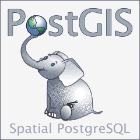
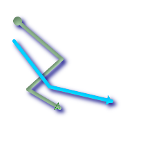
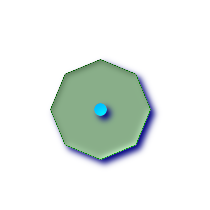
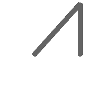

PostGIS開発グループ
概要
PostGIS は、オブジェクトRDB である PostgreSQL の拡張で、GIS (地理情報システム) オブジェクを格納することができます。PostGISは、GiSTベースのR-Tree空間インデクスをサポートし、GISオブジェクトの解析および処理を行う機能を持ちます。


本マニュアルは、2.2.0dev版のマニュアルです。
 この作品はクリエイティブ・コモンズ 表示 - 継承 3.0 非移植 ライセンスの下に提供されています。好きなようにこの材料を使うことができますが、PostGIS Project のクレジット提示を求めます。また可能な限りhttp://postgis.net/へのリンクを求めます。
この作品はクリエイティブ・コモンズ 表示 - 継承 3.0 非移植 ライセンスの下に提供されています。好きなようにこの材料を使うことができますが、PostGIS Project のクレジット提示を求めます。また可能な限りhttp://postgis.net/へのリンクを求めます。
目次
- 1. 導入
- 2. PostGISインストール
- 3. PostGIS よくある質問
- 4. PostGISを使う: データ管理とクエリ
- 5. ラスタデータの管理、クエリ、アプリケーション
- 6. PostGISを使う: アプリケーションを構築する
- 7. 性能向上に関する技法
- 8. PostGISリファレンス
- 9. ラスタ リファレンス
- 10. PostGISラスタ よくある質問
- 11. トポロジ
- 12. PostGIS Extras
- 13. PostGIS関数索引
- 14. 問題を報告する
- A. Appendix
- A.1. Release 2.2.0
- A.2. Release 2.1.2
- A.3. Release 2.1.1
- A.4. Release 2.1.0
- A.5. Release 2.0.5
- A.6. Release 2.0.4
- A.7. Release 2.0.3
- A.8. Release 2.0.2
- A.9. Release 2.0.1
- A.10. Release 2.0.0
- A.11. Release 1.5.4
- A.12. Release 1.5.3
- A.13. Release 1.5.2
- A.14. Release 1.5.1
- A.15. Release 1.5.0
- A.16. Release 1.4.0
- A.17. Release 1.3.6
- A.18. Release 1.3.5
- A.19. Release 1.3.4
- A.20. Release 1.3.3
- A.21. Release 1.3.2
- A.22. Release 1.3.1
- A.23. Release 1.3.0
- A.24. Release 1.2.1
- A.25. Release 1.2.0
- A.26. Release 1.1.6
- A.27. Release 1.1.5
- A.28. Release 1.1.4
- A.29. Release 1.1.3
- A.30. Release 1.1.2
- A.31. Release 1.1.1
- A.32. Release 1.1.0
- A.33. Release 1.0.6
- A.34. Release 1.0.5
- A.35. Release 1.0.4
- A.36. Release 1.0.3
- A.37. Release 1.0.2
- A.38. Release 1.0.1
- A.39. Release 1.0.0
- A.40. Release 1.0.0RC6
- A.41. Release 1.0.0RC5
- A.42. Release 1.0.0RC4
- A.43. Release 1.0.0RC3
- A.44. Release 1.0.0RC2
- A.45. Release 1.0.0RC1
PostGISはRefractions Research Incが空間データベース技術研究プロジェクトとして開発しました。Refractionsはカナダ・ブリティッシュコロンビア州・ビクトリアにある、データインテグレーションとカスタムソフトウェア開発に特化した、GISとデータベースのコンサルティング会社です。私たちは完全なOpenGISサポート、高度なトポロジ構成(カバレッジ、サーフェス、ネットワーク)、GISデータの表示と編集をするためのデスクトップユーザインタフェースツール、ウェブベースのアクセスツールを持つ、 重要なGIS機能性の範囲をサポートするPostGISを、サポートおよび開発する予定です。
PostGISはOSGeo財団のインキュベーションプロジェクトです。PostGISは、多数のFOSS4G開発者と、PostGIS機能と多彩さから大きな利益を得る世界中の企業によって継続的に改善され、資金を得ています。
PostGISプロジェクト運営委員会(PostGIS Project Steering Committee, PSC)は、総合的な指示、リリースサイクル、ドキュメンテーション、支援活動に関する調整を行っています。また、委員会は、全体的なユーザサポート、PostGISコミュニティからのパッチの受け付けと適用、 開発者のコミットのアクセス、新しい委員、APIの重要な変更といった、PostGISを含む雑多な問題に関する投票を行っています。
- Mark Cave-Ayland
バグフィクスとメンテナンスの調整、PostgreSQLのリリースとの調整、空間インデクスの選択とバインディング、ローダ/ダンパ、シェープファイルGUIローダ、新機能の統合と強化。
- Regina Obe
Buildbotのメンテナンス、Windows版と試験版のビルド、ドキュメンテーション、PostGISニュースグループの一般的なユーザサポート、X3Dサポート、Tiger Geocoderサポート、関数管理、新機能と大きなコード変更のスモークテスト。
- Bborie Park
ラスタ開発、GDALとの統合、ラスタローダ、ユーザサポート、一般的なバグフィクス、様々なOS(Slackware, Mac, Windows他)での試験。
- Paul Ramsey (Chair)
PostGISプロジェクトの副創始者。総合的なバグフィクス、ジオグラフィ機能、ジオグラフィとジオメトリのインデクス機能(2次元,、3次元、n次元インデクスとあらゆる空間インデクス)、ジオメトリ内部構造、PointCloud(開発中)、GEOS機能の統合とGEOSリリースとの調整、ローダ/ダンパ、シェープファイルGUIローダ。
- Sandro Santilli
新しいGEOS機能のメンテナンスと統合、GEOSリリースとの調整、トポロジ機能、ラスタと、低水準API関数と、これらのバグフィクス。
- Jorge Arevalo
ラスタ開発、GDALドライバ機能、ローダ。
- Nicklas Aven
距離関数の強化(3次元距離、リレーション関数を含む)と追加、Tiny WKB出力書式(TWKB, 開発中)と一般的なユーザサポート。
- Olivier Courtin
XML(KML, GML)/GeoJSON入出力関数と3次元サポートとバグフィクス。
- Mateusz Loskot
PostGISのCMakeサポート。オリジナルのPython版ラスタローダ低水準ラスタAPI関数の以前の開発。
- Pierre Racine
ラスタ全体のアーキテクチャ、プロトタイピング、プログラミング支援。
- David Zwarg
ラスタ開発(ほとんど地図代数解析関数)。
- Chris Hodgson
以前のPSCメンバ。一般的な開発、サイトとBuildbotのメンテナンス、OSGeoインキュベーション管理。
- Kevin Neufeld
以前のPSCメンバ。文書と文書補助ツール、Buildbotのメンテナンス、PostGISニュースグループでの高度なユーザサポート、PostGISメンテナンス機能の強化。
- Dave Blasby
PostGISのオリジナルの開発/副創始者。サーバサイドのオブジェクト、インデクスのバインディングや多数のサーバサイドの解析機能を記述。
- Jeff Lounsbury
シェープファイルのローダ/ダンパのオリジナルの開発者。現在のPostGISプロジェクトオーナーの代表。
- Mark Leslie
中核機能の、継続的なメンテナンスと開発。曲線機能の強化。シェープファイルGUIローダ。
- 個人
Alex Bodnaru, Alex Mayrhofer, Andrea Peri, Andreas Foro Tollefsen, Andreas Neumann, Anne Ghisla, Barbara Phillipot, Ben Jubb, Bernhard Reiter, Brian Hamlin, Bruce Rindahl, Bruno Wolff III, Bryce L. Nordgren, Carl Anderson, Charlie Savage, Dane Springmeyer, David Skea, David Techer, Eduin Carrillo, Even Rouault, Frank Warmerdam, George Silva, Gerald Fenoy, Gino Lucrezi, Guillaume Lelarge, IIDA Tetsushi, Ingvild Nystuen, Jason Smith, Jeff Adams, Jose Carlos Martinez Llari, Kashif Rasul, Klaus Foerster, Kris Jurka, Leo Hsu, Loic Dachary, Luca S. Percich, Maria Arias de Reyna, Mark Sondheim, Markus Schaber, Maxime Guillaud, Maxime van Noppen, Michael Fuhr, Nathan Wagner, Nathaniel Clay, Nikita Shulga, Norman Vine, Rafal Magda, Ralph Mason, Richard Greenwood, Silvio Grosso, Steffen Macke, Stephen Frost, Tom van Tilburg, Vincent Picavet (アルファベット順)
- 企業
PostGISプロジェクトへの開発時間、ホスティング、直接的な金銭提供の貢献を行った企業です。
Arrival 3D, Associazione Italiana per l'Informazione Geografica Libera (GFOSS.it), AusVet, Avencia, Azavea, Cadcorp, CampToCamp, City of Boston (DND), Clever Elephant Solutions, Cooperativa Alveo, Deimos Space, Faunalia, Geographic Data BC, Hunter Systems Group, Lidwala Consulting Engineers, LisaSoft, Logical Tracking & Tracing International AG, Michigan Tech Research Institute, Natural Resources Canada, Norwegian Forest and Landscape Institute, OpenGeo, OSGeo, Oslandia, Palantir Technologies, Paragon Corporation, R3 GIS, Refractions Research, Regione Toscana-SIGTA, Safe Software, Sirius Corporation plc, Stadt Uster, UC Davis Center for Vectorborne Diseases, University of Laval, U.S Department of State (HIU), Vizzuality, Zonar Systems (アルファベット順)
- クラウドファンディングキャンペーン
クラウドファンディングキャンペーンは、PostGIS開発チームが走らせているキャンペーンです。欲しくて仕方ない機能に資金を与えて、多数の人々にサービスを提供できるようにするためのものです。それぞれのキャンペーンでは、特定の機能または機能の集合に焦点があてられます。それぞれのスポンサーは、必要な資金提供のうち少しだけを提供し、十分な人/組織の寄付で、たくさんの助けになる作業に支払う基金を持ちます。他の多くの人が寄付に協力してくれそうな機能に関するアイデアがありましたら、PostGIS newsgroupに、その考えを投稿して下さい。一緒に実現できます。
PostGIS 2.0.0はこの戦略を実施する最初のリリースです。PledgeBankを使い、2件のキャンペーンが成功しました。
postgistopology - 10以上のスポンサーがTopoGeometry機能の構築と2.0.0でのトポロジ対応強化とのために、それぞれ250米ドルを寄付しました。
postgis64windows - 20のスポンサーが, Windows上でのPostGIS 64ビット版に必要な作業のために、それぞれ100米ドルを寄付しました。64ビット用PostGIS 2.0.1ができ、PostgreSQLスタックビルダで使用可能なリリースを予定している最終版ができました。
- 重要なサポートライブラリ
ジオメトリ演算ライブラリGEOSは、Martin Davisがアルゴリズムを作成し、Mateusz Loskot, Sandro Santilli (strk), Paul Ramseyらで動作するようにし、メンテナンスとサポートの進行を行っています。
地理空間データ抽出ライブラリGDALはFrank Warmerdamらによります。PostGIS 2.0.0で導入されたラスタ機能で、非常によく使われています。 同じように、PostGISサポートに関するGDALの必要な改善でGDALプロジェクトに貢献しています。
地図投影ライブラリProj4は、Gerald EvendenとFrank Warmerdamによって作成とメンテナンスがされています。
最後ですがおろそかにできないのがPostgreSQL DBMSです。PostGISはこの巨人の肩に乗っています。PostGISの速度と柔軟性はPostgreSQLが提供する拡張性、偉大なクエリプランナ、GiSTインデクス、多数のSQL機能がないと成り立ちません。
最新のソフトウェア、ドキュメントおよびニュースについてはPostGISウェブサイトhttp://postgis.net/をご覧下さい。
ジオメトリ演算ライブラリGEOSに関する詳細情報はhttp://trac.osgeo.org/geos/をご覧下さい。
投影変換ライブラリProj4に関する詳細情報はhttp://trac.osgeo.org/proj/をご覧下さい。
データベースサーバPostgreSQLに関する詳細情報は、 PostgreSQLメインサイトhttp://www.postgresql.org/をご覧下さい。
GiSTインデクスに関する詳細情報は、 PostgreSQL GiST開発サイトhttp://www.sai.msu.su/~megera/postgres/gist/をご覧下さい。
インターネットマップサーバMapServerに関する詳細情報は http://mapserver.org/をご覧下さい。
"Simple Features for Specification for SQL"は、OpenGISコンソーシアムウェブサイトhttp://www.opengeospatial.org/にあります。
目次
本章では、PostGISのインストールに必要な手順について説明します。
全ての依存がパスに入っているとする場合、次のようにコンパイルします。
tar xvfz postgis-2.2.0dev.tar.gz cd postgis-2.2.0dev ./configure make make install
PostGISをインストールした後は、利用したいデータベース個々内で利用可能にする必要があります。
![[注記]](images/note.png) | |
ラスタ機能は現在は選択可能ですが、デフォルトではインストールされます。PostgreSQL 9.1以上のEXTENSIONモデルを使ってインストールするには必須です。EXTENSIONを有効にする処理の方がよりよく、かつユーザフレンドリです。空間データベースを有効にするには、次のようにします。 |
psql -d yourdatabase -c "CREATE EXTENSION postgis;" psql -d yourdatabase -c "CREATE EXTENSION postgis_topology;" psql -d yourdatabase -c "CREATE EXTENSION postgis_tiger_geocoder;"
インストールされて有効になっているEXTENSIONのクエリやEXTENSIONのアップグレード、EXTENSIONを使わずにインストールした場合のEXTENSIONへの切り替えに関する詳細情報については、「PostGIS EXTENSIONのビルドとデプロイ」を参照して下さい。
PostgreSQL 9.0上で動作る場合や、なんらかの理由でラスタ機能なしでコンパイルすると決めた場合や、古いやり方でインストールする場合には、より長く、より苦痛を伴いますが、やり方はあります。
インストールされた.sqlファイルは全てPostgreSQLがインストールされているフォルダ内のshare/contrib/postgis-2.2の中にあります。
createdb yourdatabase createlang plpgsql yourdatabase psql -d yourdatabase -f postgis.sql psql -d yourdatabase -f postgis_comments.sql psql -d yourdatabase -f spatial_ref_sys.sql psql -d yourdatabase -f rtpostgis.sql psql -d yourdatabase -f raster_comments.sql psql -d yourdatabase -f topology/topology.sql psql -d yourdatabase -f topology_comments.sql
本章の残りでは、上記のインストール手順の個々の詳細を見ていきます。
PostGISには、ビルド、利用するために、次のものが必要です。
必須
PostgreSQL 9.1以上。PostgreSQLの完全なインストール(サーバヘッダを含む)が必要です。PostgreSQLは http://www.postgresql.org/にあります。
完全なPosgreSQL/PostGIS対応表とPostGIS/GEOS対応表についてはhttp://trac.osgeo.org/postgis/wiki/UsersWikiPostgreSQLPostGISをご覧ください。
GNU Cコンパイラ(
gcc)。ANSI Cコンパイラの中には、PostGISをコンパイルできるものもありますが、gccでコンパイルするのが最も問題が少ないと見ています。GNU Make (
gmakeまたはmake)。多くのシステムで、GNU makeがデフォルトのmakeになっています。make -vを実行して版を確認して下さい。他版のmakeでは、PostGISのMakefileを完全に処理しきれないかもしれません。投影変換ライブラリ Proj4 の 4.6.0版以上。Proj4ライブラリは、PostGISの座標系投影変換機能に使われます。Proj4は、http://trac.osgeo.org/proj/からダウンロードできます。
ジオメトリライブラリGEOSの3.3版以上。新しい関数や機能の全てを得るために、GEOS 3.4以上を推奨します。GEOS 3.4以外では、ST_Traianglesや長時間実行関数の中断等の主要な機能拡張と、ST_ValidDetailやST_MakeValidのようなジオメトリ評価とジオメトリの正当化の改善とが使えません。トポロジ機能を使うにはGEOS 3.3.2以上が必要です。GEOSはhttp://trac.osgeo.org/geos/からダウンロード可能です。3.4以上は古い版との後方互換があり、アップグレードがかなり安全です。
LibXML2の2.5.x以上。LibXML2は現在取り込み関数 (ST_GeomFromGMLとST_GeomFromKML)で使っています。LibXML2はhttp://xmlsoft.org/downloads.htmlからダウンロード可能です。
JSON-C 0.9以上。JSON-Cは現在、ST_GeomFromGeoJsonによるGeoJSONの取り込みに使われます。JSON-Cはhttps://github.com/json-c/json-c/releases/からダウンロード可能です。
GDAL 1.8以上(古い版では一部機能が働かなかったり挙動が異なるので1.9以上が望ましいです)。ラスタ機能に必要で、
CREATE EXTENSION postgisでのインストールに必要となります。このため、PostgreSQL 9.1以上での動作では非常に推奨されますhttp://trac.osgeo.org/gdal/wiki/DownloadSource/からダウンロード可能です。
オプション
GDAL (擬似オプション)。ラスタを求めておらず、かつ
CREATE EXTENSION postgisによるインストールを気にしない場合に限って放置できます。他のEXTENSIONで、PostGISをEXTENSIONとしてインストールしないと、インストールできないものがあるかも知れないことを心にとどめておいて下さい。このため、GDALサポートでのコンパイルは、非常に望まれます。GTK (GTK+2.0, 2.8+が必要) シェープファイルのローダであるshp2pgsql-guiのコンパイル用です。http://www.gtk.org/にあります。
SFCGAL 1.0版以上。追加的な2次元や3次元の高度な解析関数をPostGISで使うために使用するものです。「高度な2次元/3次元関数を持つSFCGALを使う」をご覧下さい。また、GEOSを使う2次元関数のうちいくつか(たとえばST_IntersectionやST_Area)は、GEOSでなくSFCGALを使用することができます。PostgreSQLコンフィギュレーション変数
postgis.backendによって、SFCGALがインストールされている場合にはエンドユーザがバックエンドを制御することができます(デフォルトではGEOS)。SFCGAL 1.0は少なくともCGAL 4.1とBoost 1.46(http://oslandia.github.io/SFCGAL/installation.htmlをご覧下さい)が必要ですのでご注意下さい。https://github.com/Oslandia/SFCGALにありますCUnit (
CUnit)。レグレッションテストに必要です。http://cunit.sourceforge.net/にあります。>Apache Ant (
ant)。javaディレクトリ下のドライバのビルドに必要です。Antはhttp://ant.apache.org/にあります。DocBook (
xsltproc)。文書のビルドに必要です。http://www.docbook.org/にあります。DBLatex (
dblatex)。文書をPDFでビルドするのに必要です。http://dblatex.sourcforge.net/にあります。ImageMagick (
convert)。文書で使う画像を生成するのに必要です。http://www.imagemagick.org/にあります。
ダウンロードサイトhttp://postgis.net/stuff/postgis-2.2.0dev.tar.gzからソースのアーカイブを入手します。
wget http://postgis.net/stuff/postgis-2.2.0dev.tar.gz tar -xvzf postgis-2.2.0dev.tar.gz
これで、カレントディレクトリの下にpostgis-2.2.0devができます。
もしくはsvnレポジトリhttp://svn.osgeo.org/postgis/trunk/からチェックアウトします。
svn checkout http://svn.osgeo.org/postgis/trunk/ postgis-2.2.0dev
新しく作られたpostgis-2.2.0devディレクトトリに移動して、インストールを続けます。
| |
多くのOSで、ビルドされたPostgreSQL/PostGISパッケージがあります。多くの場合、コンパイルが必要なのは、最もひどい最先端の版が欲しい場合やパッケージメンテナンスを行う人ぐらいです。 本節では、一般的なコンパイル手順を示します。Windows用や他のOS用等にコンパイルするなら、PostGIS User contributed compile guidesやPostGIS Dev Wikiで、より詳細な助けが見つかるかも知れません。 多くのOS用のビルド済みパッケージの一覧はPostGIS Pre-built Packagesにあります。 Windowsユーザの場合は、スタックビルダかPostGIS Windows download siteから安定版を得ることができます。また、週に1回か2回、刺激的なことがあれば随時ビルドを行っているvery bleeding-edge windows experimental buildsもあります。これらはPostGISの進行中のリリースでの試験に使用します。 |
PostGISモジュールは、PostgreSQLバックエンドサーバの拡張です。PostGIS 2.2.0devでは、コンパイルのために、完全なPostgreSQLサーバヘッダが必要です。PostgreSQL 2.2.0dev以上でビルドできます。古い版のPostgreSQLはサポートされません。
PostgreSQLをインストールしていないならPostgreSQLインストールガイドを参照して下さい。http://www.postgresql.org/にあります。
| |
GEOS機能を有効にするために、PostgreSQLをインストール時に明示的に標準C++ライブラリに対する明示的なリンクが必要になる場合があります。 LDFLAGS=-lstdc++ ./configure [独自オプション] これは、古い開発ツールとインチキC++例外との対話のための応急処置です。怪しい問題(望んでいないのにバックエンドが閉じたりそれに近い挙動を起こす)を経験したなら、このトリックを試してみて下さい。もちろん、これを行うにはPostgreSQLをはじめからコンパイルし直す必要があります。 |
次のステップでは、PostGISソースのコンフィギュレーションとコンパイルに概要を記述します。これらは、Linuxユーザ用に書いてありますので、WindowsやMacでは動作しません。
ほとんどのLinuxのインストールと同様に、最初のステップでは、ソースコードのビルドに使われる Makefile を生成します。これは、シェルスクリプトで行います。
./configure
パラメータを付けない場合には、このコマンドは自動で、PostGISのソースコードのビルドを行うのに必要なコンポーネントやライブラリをシステム上で探します。./configureとするのが一般的な使い方ですが、標準的でない位置に必要なライブラリやプログラムを置いてある場合のために、いくつかのパラメータを受け付けます。
次のリストで、共通して使われるパラメータを示します。 完全なリストについては、--helpまたは--help=shortパラメータを使って下さい。
- --prefix=PREFIX
PostGISライブラリとSQLスクリプトのインストール先を指定します。デフォルトでは、検出されたPostgreSQLのインストール先と同じになります。
![[注意]](images/caution.png)
このパラメータは現在のところ壊れていて、PostgreSQLのインストール先にしかインストールされません。このバグのトラックについてはhttp://trac.osgeo.org/postgis/ticket/635をご覧ください。
- --with-pgconfig=FILE
PostgreSQLは、PostGISなどの拡張に対してPostgreSQLのインストール先ディレクトリを伝えるpg_configというユーティリティを持っています。PostGISの対象とする特定のPostgreSQLのインストール先を手動で指定する場合に、このパラメータ(--with-pgconfig=/path/to/pg_config)を使います。
- --with-gdalconfig=FILE
必須ライブラリであるGDALは、ラスタ機能に必要な機能を提供します。GDALには、インストール先ディレクトリをインストールスクリプトに伝えるgdal-configがあります。PostGISのビルドに使う特定のGDALを手動で指定する場合に、このパラメータ(--with-gdalconfig=/path/to/gdal-config)を使います。
- --with-geosconfig=FILE
必須のジオメトリライブラリであるGEOSには、ソフトウェアのインストール時にGEOSのインストール先ディレクトリを伝えるgeos-configというユーティリティがあります。PostGISのビルドに使う特定のGEOSを手動で指定する場合に、このパラメータ(--with-geosconfig=/path/to/geos-config)を使います。
- --with-xml2config=FILE
LibXMLはGeomFromKML/GML処理を行うのに必須のライブラリです。通常はlibxmlをインストールしているなら発見されますが、発見できない場合や特定の版を使用したい場合は、
xml2-configを指定してインストールスクリプトにLibXMLのインストール先ディレクトリを伝えます。PostGISのビルドに使う特定のLibXMLを手動で指定する場合に、このパラメータ( >--with-xml2config=/path/to/xml2-config)を使います。- --with-projdir=DIR
Proj4はPostGISに必須の投影変換ライブラリです。PostGISのビルドに使う特定のProj4のディレクトリを手動で指定する場合は、このパラメータ(--with-projdir=/path/to/projdir)を使います。
- --with-libiconv=DIR
iconvのインストール先ディレクトリを指定します。
- --with-jsondir=DIR
JSON-Cは、MITライセンスのJSONライブラリで、PostGISのST_GeomFromJSON機能に必須です。PostGISのビルドに使う特定のJSON-Cを手動で指定する場合に、このパラメータ(--with-jsondir=/path/to/jsondir)を使います。
- --with-gui
データインポートGUI(GTK+2.0が必要)をコンパイルします。このパラメータによって、shp2pgsql-guiという、shp2pgsqlのグラフィカルユーザインタフェースが作成されます。
- --with-raster
ラスタ機能付きでコンパイルします。これによりrtpostgis-2.2.0devライブラリとrtpostgis.sqlファイルが生成されます。最終リリースでは、デフォルトでラスタ機能付きにする予定ですので、このパラメータ自体は不要になる可能性があります。
- --with-topology
トポロジ機能付きでコンパイルします。これによりtopology.sqlファイルが生成されます。トポロジに必要なロジックは全てpostgis-2.2.0devライブラリ内に作られるので、関連ライブラリはありません。
- --with-gettext=no
デフォルトでは、gettextの検出とこれを用いたコンパイルを試みますが、ローダ破損を引き起こす非互換性問題のもとで実行する場合には、このコマンドで無効にできます。これを使ったコンフィギュレーションによって解決する問題の例はhttp://trac.osgeo.org/postgis/ticket/748にあります。ご注意: これを切ることで多くの機能がなくなるわけではありません。まだ文書化されていなくて試験段階であるGUIローダにおける内部のヘルプ/ラベル機能に使われています。
| |
PostGISをSVNレポジトリから得る場合には、はじめに次のスクリプトを実行します。 ./autogen.sh このスクリプトによってconfigureスクリプトが生成されます。これはPostGISのインストールに関するカスタマイズに使われます。 PostGISをアーカイブファイルで入手する場合には、 configureが既に生成されているので./autogen.shは不要です。 |
Makefileが生成されたら、PostGISのビルドは、次のコマンドを実行するだけです。
make
出力の最後の行に"PostGIS was built successfully. Ready to install."と出れば終わりです。
PostGIS 1.4.0版からは、全ての関数に文書から生成されるコメントが付きます。これらのコメントを後からインストールするには、次のコマンドを実行しますが、docbookが必要です。アーカイブファイルからインストールする場合は、postgis_comments.sql, raster_comments.sql, topology_comments.sqlは、docフォルダにあるので、コメントを作成する必要はありません。
make comments
PostGIS 2.0で導入されました。早見表に、または学習中の方のハンドアウトに適しているHTMLチートシートを生成します。xsltprocが必要で、topology_cheatsheet.html, tiger_geocoder_cheatsheet.html, raster_cheatsheet.html, postgis_cheatsheet.htmlの4ファイルが生成されます。
HTMLとPDFのビルド済みのものはPostGIS / PostgreSQL Study Guidesにあります。
make cheatsheets
PostgreSQL 9.1以上を使用している場合は、PostGIS EXTENSIONが自動的にビルド、インストールされます。
ソースレポジトリからビルドしている場合は、関数の記述を最初にビルドする必要があります。これらは、docbookがインストールされている時にビルドされます。手動でインストールするには次のようにします。
make comments
アーカイブファイルからのビルドの場合は、ビルド済みのものがあるので、コメントのビルドは必須ではありません。
PostgreSQL 9.1を対象にビルドしている場合は、extensionsは自動的にmake install処理の一部としてビルドするべきです。必要ならextensionsフォルダからビルドできますし、他のサーバで必要ならファイルの複製ができます。
cd extensions
cd postgis
make clean
make
make install
cd ..
cd postgis_topology
make clean
make
make install
EXTENSIONファイルは、OSに関係なく、常に同じ版のPostGISと同じです。PostGISバイナリを既にインストールしている限りは、EXTENSIONファイルをあるOSから別のものに複写して大丈夫です。
開発用と異なる別のサーバでEXTENSIONを手動でインストールしたい場合は、サーバにない時に必要となる通常のPostGISのバイナリだけでなく、次のファイルをextensionsフォルダからPostgreSQLインストール先のPostgreSQL / share / extensionフォルダに複写します。
指定されていない場合のインストールするextensionの版等の情報を示す制御ファイ
postgis.control, postgis_topology.control。EXTENSION毎の/sqlフォルダにあるファイル全て。
extensions/postgis/sql/*.sql,extensions/postgis_topology/sql/*.sqlはPostgreSQL share/extensionフォルダの最上位に複写する必要があることに注意して下さい。
以上を実行すると、PgAdmin -> extensionでpostgis, postgis_topologyが有効なEXTENSIONとして見えます。
psqlを使う場合は、次のクエリを実行してEXTENSIONがインストールされていることを確認できます。
SELECT name, default_version,installed_version
FROM pg_available_extensions WHERE name LIKE 'postgis%' ;
name | default_version | installed_version
-----------------+-----------------+-------------------
postgis | 2.2.0dev | 2.2.0dev
postgis_topology | 2.2.0dev | クエリを行ったデータベースにEXTENSIONがインストールされている場合は、installed_versionカラムに記載が見えます。レコードが返ってこない場合は、PostGIS EXTENSIONがインストールされていないことになります。PgAdmin III 1.14以上では、データベースブラウザツリーのextensionsセクションで提供されていて、右クリックでアップグレードまたアンインストールできます。
有効なEXTENSIONがある場合、pgAdmin EXTENSIONインタフェースまたは次のSQLの実行によって、選択したデータベースにPostGIS EXTENSIONをインストールできます。
CREATE EXTENSION postgis; CREATE EXTENSION postgis_topology; CREATE EXTENSION postgis_tiger_geocoder;
psqlでは、どの版が、どのスキーマにインストールされているかを見ることができます。
\connect mygisdb \x \dx postgis*
インストール済みの拡張の一覧 -[ RECORD 1 ]------------------------------------------------- - 名前 | postgis バージョン | 2.2.0dev スキーマ | public 説明 | PostGIS geometry, geography, and raster spat.. -[ RECORD 2 ]------------------------------------------------- - 名前 | postgis_tiger_geocoder バージョン | 2.2.0dev スキーマ | tiger 説明 | PostGIS tiger geocoder and reverse geocoder -[ RECORD 3 ]------------------------------------------------- - 名前 | postgis_topology バージョン | 2.2.0dev スキーマ | topology 説明 | PostGIS topology spatial types and functions
![[警告]](images/warning.png) | |
EXTENSIONのテーブル |
この素晴らしいEXTENSION機能を使わずに2.2.0devをインストールした場合でもEXTENSIONベースに変更することができます。まずpostgis_upgrade_22_minor.sql,raster_upgrade_22_minor.sql,topology_upgrade_22_minor.sqlのアップグレードスクリプトを実行して最新版にアップグレードします
ラスタ機能無しでPostGISをインストールした場合には、最初にラスタ機能をインストールする必要があります(rtpostgis.sqlを使います)。
それから、次のコマンドを実行して、個々のEXTENSIONについて、関数をパッケージ化します。
CREATE EXTENSION postgis FROM unpackaged; CREATE EXTENSION postgis_topology FROM unpackaged; CREATE EXTENSION postgis_tiger_geocoder FROM unpackaged;
PostGISのテストを行うには、次のコマンドを実行します。
make check
このコマンドで、実際のPostgreSQLデータベースに対して生成したライブラリを使用した、様々なチェックとレグレッションテストを行います。
| |
PostgreSQL, GEOS または Proj4 を標準の位置にインストールしていない場合には、環境変数LD_LIBRARY_PATHに、ライブラリの位置を追加する必要があるかも知れません。 |
| |
現在のところmake checkは、チェックを行う際に 環境変数 |
成功した場合は、テストの出力は次のようなかんじになります。
CUnit - A Unit testing framework for C - Version 2.1-0
http://cunit.sourceforge.net/
Suite: print_suite
Test: test_lwprint_default_format ... passed
Test: test_lwprint_format_orders ... passed
Test: test_lwprint_optional_format ... passed
Test: test_lwprint_oddball_formats ... passed
Test: test_lwprint_bad_formats ... passed
Suite: misc
Test: test_misc_force_2d ... passed
Test: test_misc_simplify ... passed
Test: test_misc_count_vertices ... passed
Test: test_misc_area ... passed
Test: test_misc_wkb ... passed
Suite: ptarray
Test: test_ptarray_append_point ... passed
Test: test_ptarray_append_ptarray ... passed
Test: test_ptarray_locate_point ... passed
Test: test_ptarray_isccw ... passed
Test: test_ptarray_signed_area ... passed
Test: test_ptarray_desegmentize ... passed
Test: test_ptarray_insert_point ... passed
Test: test_ptarray_contains_point ... passed
Test: test_ptarrayarc_contains_point ... passed
Suite: PostGIS Computational Geometry Suite
Test: test_lw_segment_side ... passed
Test: test_lw_segment_intersects ... passed
Test: test_lwline_crossing_short_lines ... passed
Test: test_lwline_crossing_long_lines ... passed
Test: test_lwline_crossing_bugs ... passed
Test: test_lwpoint_set_ordinate ... passed
Test: test_lwpoint_get_ordinate ... passed
Test: test_point_interpolate ... passed
Test: test_lwline_clip ... passed
Test: test_lwline_clip_big ... passed
Test: test_lwmline_clip ... passed
Test: test_geohash_point ... passed
Test: test_geohash_precision ... passed
Test: test_geohash ... passed
Test: test_geohash_point_as_int ... passed
Test: test_isclosed ... passed
Suite: buildarea
Test: buildarea1 ... passed
Test: buildarea2 ... passed
Test: buildarea3 ... passed
Test: buildarea4 ... passed
Test: buildarea4b ... passed
Test: buildarea5 ... passed
Test: buildarea6 ... passed
Test: buildarea7 ... passed
Suite: clean
Test: test_lwgeom_make_valid ... passed
Suite: PostGIS Measures Suite
Test: test_mindistance2d_tolerance ... passed
Test: test_rect_tree_contains_point ... passed
Test: test_rect_tree_intersects_tree ... passed
Test: test_lwgeom_segmentize2d ... passed
Test: test_lwgeom_locate_along ... passed
Test: test_lw_dist2d_pt_arc ... passed
Test: test_lw_dist2d_seg_arc ... passed
Test: test_lw_dist2d_arc_arc ... passed
Test: test_lw_arc_length ... passed
Test: test_lw_dist2d_pt_ptarrayarc ... passed
Test: test_lw_dist2d_ptarray_ptarrayarc ... passed
Suite: node
Test: test_lwgeom_node ... passed
Suite: WKT Out Suite
Test: test_wkt_out_point ... passed
Test: test_wkt_out_linestring ... passed
Test: test_wkt_out_polygon ... passed
Test: test_wkt_out_multipoint ... passed
Test: test_wkt_out_multilinestring ... passed
Test: test_wkt_out_multipolygon ... passed
Test: test_wkt_out_collection ... passed
Test: test_wkt_out_circularstring ... passed
Test: test_wkt_out_compoundcurve ... passed
Test: test_wkt_out_curvpolygon ... passed
Test: test_wkt_out_multicurve ... passed
Test: test_wkt_out_multisurface ... passed
Suite: WKT In Suite
Test: test_wkt_in_point ... passed
Test: test_wkt_in_linestring ... passed
Test: test_wkt_in_polygon ... passed
Test: test_wkt_in_multipoint ... passed
Test: test_wkt_in_multilinestring ... passed
Test: test_wkt_in_multipolygon ... passed
Test: test_wkt_in_collection ... passed
Test: test_wkt_in_circularstring ... passed
Test: test_wkt_in_compoundcurve ... passed
Test: test_wkt_in_curvpolygon ... passed
Test: test_wkt_in_multicurve ... passed
Test: test_wkt_in_multisurface ... passed
Test: test_wkt_in_tin ... passed
Test: test_wkt_in_polyhedralsurface ... passed
Test: test_wkt_in_errlocation ... passed
Suite: WKB Out Suite
Test: test_wkb_out_point ... passed
Test: test_wkb_out_linestring ... passed
Test: test_wkb_out_polygon ... passed
Test: test_wkb_out_multipoint ... passed
Test: test_wkb_out_multilinestring ... passed
Test: test_wkb_out_multipolygon ... passed
Test: test_wkb_out_collection ... passed
Test: test_wkb_out_circularstring ... passed
Test: test_wkb_out_compoundcurve ... passed
Test: test_wkb_out_curvpolygon ... passed
Test: test_wkb_out_multicurve ... passed
Test: test_wkb_out_multisurface ... passed
Test: test_wkb_out_polyhedralsurface ... passed
:
Suite: Geodetic Suite
Test: test_sphere_direction ... passed
Test: test_sphere_project ... passed
Test: test_lwgeom_area_sphere ... passed
Test: test_signum ... passed
Test: test_gbox_from_spherical_coordinates ... passed
:
Test: test_geos_noop ... passed
Suite: Internal Spatial Trees
Test: test_tree_circ_create ... passed
Test: test_tree_circ_pip ... passed
Test: test_tree_circ_pip2 ... passed
Test: test_tree_circ_distance ... passed
Suite: triangulate
Test: test_lwgeom_delaunay_triangulation ... passed
Suite: stringbuffer
Test: test_stringbuffer_append ... passed
Test: test_stringbuffer_aprintf ... passed
Suite: surface
Test: triangle_parse ... passed
Test: tin_parse ... passed
Test: polyhedralsurface_parse ... passed
Test: surface_dimension ... passed
Suite: homogenize
Test: test_coll_point ... passed
Test: test_coll_line ... passed
Test: test_coll_poly ... passed
Test: test_coll_coll ... passed
Test: test_geom ... passed
Test: test_coll_curve ... passed
Suite: force_sfs
Test: test_sfs_11 ... passed
Test: test_sfs_12 ... passed
Test: test_sqlmm ... passed
Suite: out_gml
Test: out_gml_test_precision ... passed
Test: out_gml_test_srid ... passed
Test: out_gml_test_dims ... passed
Test: out_gml_test_geodetic ... passed
Test: out_gml_test_geoms ... passed
Test: out_gml_test_geoms_prefix ... passed
Test: out_gml_test_geoms_nodims ... passed
Test: out_gml2_extent ... passed
Test: out_gml3_extent ... passed
Suite: KML Out Suite
Test: out_kml_test_precision ... passed
Test: out_kml_test_dims ... passed
Test: out_kml_test_geoms ... passed
Test: out_kml_test_prefix ... passed
Suite: GeoJson Out Suite
Test: out_geojson_test_precision ... passed
Test: out_geojson_test_dims ... passed
Test: out_geojson_test_srid ... passed
Test: out_geojson_test_bbox ... passed
Test: out_geojson_test_geoms ... passed
Suite: SVG Out Suite
Test: out_svg_test_precision ... passed
Test: out_svg_test_dims ... passed
Test: out_svg_test_relative ... passed
Test: out_svg_test_geoms ... passed
Test: out_svg_test_srid ... passed
Suite: X3D Out Suite
Test: out_x3d3_test_precision ... passed
Test: out_x3d3_test_geoms ... passed
--Run Summary: Type Total Ran Passed Failed
suites 27 27 n/a 0
tests 198 198 198 0
asserts 1728 1728 1728 0
Creating database 'postgis_reg'
Loading PostGIS into 'postgis_reg'
PostgreSQL 9.3beta1 on x86_64-unknown-linux-gnu, compiled by gcc (Debian 4.4.5-8) 4.4.5, 64-bit
Postgis 2.1.0SVN - r11415 - 2013-05-11 02:48:21
GEOS: 3.4.0dev-CAPI-1.8.0 r3797
PROJ: Rel. 4.7.1, 23 September 2009
Running tests
loader/Point .............. ok
loader/PointM .............. ok
loader/PointZ .............. ok
loader/MultiPoint .............. ok
loader/MultiPointM .............. ok
loader/MultiPointZ .............. ok
loader/Arc .............. ok
loader/ArcM .............. ok
loader/ArcZ .............. ok
loader/Polygon .............. ok
loader/PolygonM .............. ok
loader/PolygonZ .............. ok
loader/TSTPolygon ......... ok
loader/TSIPolygon ......... ok
loader/TSTIPolygon ......... ok
loader/PointWithSchema ..... ok
loader/NoTransPoint ......... ok
loader/NotReallyMultiPoint ......... ok
loader/MultiToSinglePoint ......... ok
loader/ReprojectPts ........ ok
loader/ReprojectPtsGeog ........ ok
loader/Latin1 .... ok
binary .. ok
regress .. ok
regress_index .. ok
regress_index_nulls .. ok
regress_selectivity .. ok
lwgeom_regress .. ok
regress_lrs .. ok
removepoint .. ok
setpoint .. ok
simplify .. ok
snaptogrid .. ok
summary .. ok
affine .. ok
empty .. ok
measures .. ok
legacy .. ok
long_xact .. ok
ctors .. ok
sql-mm-serialize .. ok
sql-mm-circularstring .. ok
sql-mm-compoundcurve .. ok
sql-mm-curvepoly .. ok
sql-mm-general .. ok
sql-mm-multicurve .. ok
sql-mm-multisurface .. ok
polyhedralsurface .. ok
polygonize .. ok
postgis_type_name .. ok
geography .. ok
out_geometry .. ok
out_geography .. ok
in_geohash .. ok
in_gml .. ok
in_kml .. ok
iscollection .. ok
regress_ogc .. ok
regress_ogc_cover .. ok
regress_ogc_prep .. ok
regress_bdpoly .. ok
regress_proj .. ok
regress_management .. ok
dump .. ok
dumppoints .. ok
boundary .. ok
wmsservers .. ok
wkt .. ok
wkb .. ok
tickets .. ok
typmod .. ok
remove_repeated_points .. ok
split .. ok
relate .. ok
bestsrid .. ok
concave_hull .. ok
hausdorff .. ok
regress_buffer_params .. ok
offsetcurve .. ok
relatematch .. ok
isvaliddetail .. ok
sharedpaths .. ok
snap .. ok
node .. ok
unaryunion .. ok
clean .. ok
relate_bnr .. ok
delaunaytriangles .. ok
in_geojson .. ok
uninstall .. ok (4112)
Run tests: 90PostGISをインストールするには、次のコマンドを実行します。
make install
これにより、PostGISのインストールファイルが、--prefixパラメータで指定した、適切なサブディレクトリに複写されます。次に特筆すべきサブディレクトリを示します。
ローダとダンパのバイナリのインストール先は
[prefix]/binです。postgis.sqlなどのSQLファイルのインストール先は[prefix]/share/contribです。PostGISライブラリのインストール先は
[prefix]/libです。
先にmake commentsを実行してpostgis_comments.sql, raster_comments.sqlを生成していた場合は、次のコマンドを実行すると、これらのSQLファイルがインストールされます。
make comments-install
| |
|
PostGISデータベースを作る最初のステップは、単純なPostgreSQLデータベースの作成です。
createdb [データベース名]
多くのPostGIS関数は、PL/pgSQL手続き言語で書かれています。次のステップは、PL/pgSQL言語を新たに作成したデータベースで有効にすることです。次のコマンドを実行します。PostgreSQL 8.4以上では、通常は既にインストールされています。
createlang plpgsql [データベース名]
次に、PostGISオブジェクトと関数定義をデータベースにロードします。定義ファイルpostgis.sql(コンフィギュレーション段階で指定した[prefix]/share/contribにあります)をロードします。
psql -d [データベース名] -f postgis.sql
完全なEPSG座標系定義IDセットについては、spatial_ref_sys.sql定義ファイルをロードしてspatial_ref_sysテーブルを生成して下さい。これによりジオメトリ関数ST_Transform()が実行できるようになります。
psql -d [データベース名] -f spatial_ref_sys.sql
PostGISが持つ関数についての助けとなるコメントを求めるなら、postgis_comments.sqlを、データベースにロードします。コメントは、psqlターミナルウィンドウで単に\dd [function_name]とすれば見ることができます。ロードは次のようにします。
psql -d [データベース名] -f postgis_comments.sql
ラスタ機能をインストールします。
psql -d [データベース名] -f rtpostgis.sql
ラスタ機能のコメントをインストールします。ラスタ関数ごとの簡易説明が提供されます。psqlまたはPgAdmin等の関数コメントを表示できるPostgreSQLツールで使えます。
psql -d [データベース名] -f raster_comments.sql
トポロジ機能をインストールします。
psql -d [データベース名] -f topology/topology.sql
トポロジ機能のコメントをインストールします。トポロジ関数/型ごとの簡易説明が提供されます。psqlまたはPgAdmin等の関数コメントを表示できるPostgreSQLツールで使えます。
psql -d [データベース名] -f topology/topology_comments.sql
以前の版の古いバックアップを新しいデータベースにリストアする予定の場合には、次を実行します。
psql -d [データベース名] -f legacy.sql
| |
テーブルを回復し、MapServerやGeoServerのようなアプリケーションで動作させるのに必要な最低限をインストールするには |
リストアとクリーンアップを行った後で非推奨関数を消すためにuninstall_legacy.sqlを実行できます。
PostgreSQL 9.1以上を使っていて、extensions/のPostGISモジュールをコンパイルとインストールを行っている場合は、新しい方法で空間データベースを生成できます。
createdb [データベース名]
PostGIS EXTENSIONの中核によって、ジオメトリ、ジオグラフィ、ラスタ、spatial_ref_sysおよび全ての関数とコメントがインストールされます。次のコマンドを実行するだけです。
CREATE EXTENSION postgis;
psql -d [データベース名] -c "CREATE EXTENSION postgis;"
トポロジは別のEXTENSIONとして用意されています。次のコマンドでインストールします。
psql -d [データベース名] -c "CREATE EXTENSION postgis_topology;"
以前の版の古いバックアップを新しいデータベースにリストアする予定の場合には、次を実行します。
psql -d [データベース名] -f legacy.sql
リストアとクリーンアップを行った後で非推奨関数を消すためにuninstall_legacy.sqlを実行できます。
Tigerジオコーダのような追加機能は、PostGISディストリビューションに含まれていないことがありますが、postgis-2.2.0dev.tar.gzファイルには常に入っています。ここで提供する説明はextras/tiger_geocoder/tiger_2011/READMEにもあります。
indows上でtarの展開ができない場合は、http://www.7-zip.org/でPostGISのアーカイブファイルを展開できます。
PostgreSQL 9.1以上とPostGIS 2.1.0を使用している場合は、Tigerジオコーダのインストールで、新しいEXTENSIONモデルの利点を得ることができます。次のようにします。
まず、通常の方法で、PostGIS 2.1.0のバイナリを取得するか、コンパイルしてインストールします。これにより重要なEXTENSIONファイルとTigerジオコーダのファイルがインストールされます。
psql、pgAdminまたは他のツールでデータベースに接続して、次のSQLコマンドを実行します。既にPostGISを持っているデータベースにインストールする場合は、一つ目の手順は不要です。
fuzzystrmatchEXTENSIONが既にインストールされている場合は、二つ目の手順は不要です。CREATE EXTENSION postgis; CREATE EXTENSION fuzzystrmatch; CREATE EXTENSION postgis_tiger_geocoder;
正しくインストールされたかを確認するために、インストール対象データベース内で次のSQLを実行します。
SELECT na.address, na.streetname,na.streettypeabbrev, na.zip FROM normalize_address('1 Devonshire Place, Boston, MA 02109') AS na;出力は次のようになります。
address | streetname | streettypeabbrev | zip ---------+------------+------------------+------- 1 | Devonshire | Pl | 02109tiger.loader_platformテーブルの、実行ファイルやサーバのパスを持つ新しいレコードを生成します。debbieというプロファイルを生成する例として、次のコマンドを実行します。
INSERT INTO tiger.loader_platform(os, declare_sect, pgbin, wget, unzip_command, psql, path_sep, loader, environ_set_command, county_process_command) SELECT 'debbie', declare_sect, pgbin, wget, unzip_command, psql, path_sep, loader, environ_set_command, county_process_command FROM tiger.loader_platform WHERE os = 'sh';それから、declare_sectカラム内のパスを編集して、Debbieのpg, unzip, shp2pgsql, psql他のパス位置に適応するようにします。
loader_platformテーブルを編集しない場合は、一般的なアイテムの位置を持っているので、スクリプトが生成された後で、スクリプトを編集しなければなりません。それから、カスタムプロファイルの名前を使用するために、SQL関数Loader_Generate_Nation_ScriptとLoader_Generate_Scriptを実行します。新しいプロファイルを使用して国のロードを行う例として、次を実行します。
SELECT Loader_Generate_Nation_Script('debbie');
EXTENSIONモデルを使わずにTigerジオコーダをインストールしている場合に、次のようにして、EXTENSIONモデルに変換できます。
「Tigerジオコーダのアップグレード」の指示に従って非EXTENSIONモデルのアップグレードを行います。
psqlまたはpgAdminでデータベースに接続して、次のコマンドを実行します。
CREATE EXTENSION postgis_tiger_geocoder FROM unpackaged;
人々の多数の不平のひとつは、ジオコーディング前の準備に使用する住所正規化関数Normalize_Addressです。正規化関数は完璧には程遠く、不完全性の穴をふさぐ試みに、膨大なリソースが取られています。そこで、はるかに良い住所標準化エンジンを持つ他のプロジェクトと統合しました。このプロジェクトは、現在は、別個のPAGCサブプロジェクトです。PostgreSQL住所標準化EXTENSIONのソースコードはPAGC PostgreSQL Address Standardizerからダウンロードできます。この新しい正規化機能を使用するには、PAGC EXTENSIONをコンパイルして、対象データベースにEXTENSIONとしてインストールします。
PAGCプロジェクトと、とりわけ住所標準化機能の特別の一部とは、ほとんどのNixシステム上に通常インストールされているPCREに依存しますが、最新版をhttp://www.pcre.org/からダウンロードできます。また、PerlとRegexp::Assembleがインストールされている必要があります。
Windowsユーザは、PostGIS 2.1以上のバンドルが、address_standardizerを既に含んでいますので、コンパイルの必要が無く、CREATE EXTENSIONに進めます。
Regex::Assembleをインストールします。
cpan Regexp::Assemble
Ubuntu / Debianを使用している場合は、次のようにする必要があるかも知れません。
sudo perl -MCPAN -e "install Regexp::Assemble"
コンパイルします。
svn co svn://svn.code.sf.net/p/pagc/code/branches/sew-refactor/postgresql address_standardizer cd address_standardizer make # 標準の位置にPCREが無い場合は、次を実行してみて下さい。 # make SHLIB_LINK="-L/path/pcre/lib -lpostgres -lpgport -lpcre" CPPFLAGS="-I. -I/path/pcre/include" make install
インストールしたら、対象データベースに接続して次のSQLが実行できます。
CREATE EXTENSION address_standardizer;
このEXTENSIONを、postgis_tiger_geocoderをインストールしたデータベースと同じところにインストールしたら、Normalize_AddressのかわりにPagc_Normalize_Addressを使えるようになります。このEXTENSIONは、すばらしいことにTiger非依存ですので、国際的な住所といった他のデータソースで使えます。
まず、上述の手順でPostGISをインストールします。
extrasフォルダが無い場合、http://postgis.net/stuff/postgis-2.2.0dev.tar.gzをダウンロードします。
tar xvfz postgis-2.2.0dev.tar.gz
cd postgis-2.2.0dev/extras/tiger_geocoder/tiger_2011
tiger_loader_2012.sqlを編集して、実行ファイル等のパスを変更します。または、インストール後にloader_platformテーブルを更新することもできます。このファイルもloader_platformテーブルも編集しない場合には、一般的なアイテム位置になります。SQL関数Loader_Generate_Nation_ScriptとLoader_Generate_Scriptを実行した後で、生成されたスクリプトを編集しなければならなくなります。
初めてTigerジオコーダをインストールする場合は、Windowsではcreate_geocode.batを、またLinux/Unix/MacOS Xではcreate_geocode.shを、使用するPostgreSQLにとって独自の設定に変更したうえで、コマンドラインから対応するスクリプトを実行します。
データベースにtigerスキーマがあることを確認します。もし無い場合は、次の行を参考に、コマンドを実行します。
ALTER DATABASE geocoder SET search_path=public, tiger;
住所正規化機能は、トリッキーな住所を除いて、大体データなしで動作します。テストを実行して次のように見えることを確認して下さい。
SELECT pprint_addy(normalize_address('202 East Fremont Street, Las Vegas, Nevada 89101')) As pretty_address;
pretty_address
---------------------------------------
202 E Fremont St, Las Vegas, NV 89101
データロードの説明の詳細はextras/tiger_geocoder/tiger_2011/READMEにあります。これは一般的な手順を示しています。
ロードプロセスによって、米センサスウェブサイトから個々の国ファイル、リクエストされた州のデータをダウンロードし、ファイルを展開し、個別の州をそれぞれの州テーブルの集合にロードします。各州のテーブルは、tigerスキーマで定義されたテーブルを継承しているので、これらのテーブルに対して全てのデータにアクセスするためのクエリを出すことができますし、州の再読み込みが必要となったり、州が必要ない場合には、Drop_State_Tables_Generate_Scriptで、いつでも州テーブルの集合を削除するクエリを出すことができます。
データのロードを可能にするためには次のツールが必要です。
センサスウェブサイトから取得するZIPファイルを展開するツール。
Unix系システムでは、
unzip実行ファイルです。通常は、ほとんどのUnix系プラットフォームで既にインストールされています。Windowsでは7-zipです。http://www.7-zip.org/からダウンロードできる無償の圧縮解答ツールです。
shp2pgsqlコマンド。PostGISインストール時にデフォルトでインストールされます。wgetコマンド。通常はほとんどのUnix/Linuxシステムにインストールされている、ウェブ取得ツールです。Windows用については、コンパイル済みのバイナリをhttp://gnuwin32.sourceforge.net/packages/wget.htmから取得できます。
tiger_2010からアップグレードする場合には、最初にDrop_Nation_Tables_Generate_Scriptを生成、実行する必要があります。州データをロードする前に、Loader_Generate_Nation_Scriptで国データをロードする必要があります。これによって、環境に合ったローダスクリプトが生成されます。Loader_Generate_Nation_Scriptは、一度の操作で、(2010からの)アップグレードと、新しいインストールが行われます。
州データをロードするには、Loader_Generate_Scriptを参照して、手持ちのプラットフォームで動作する、求める州データをロードするデータロードスクリプトを生成します。州データはひとつずつダウンロードできることに注意して下さい。一度に必要な州の全てについてデータをロードする必要はありません。必要なだけダウンロードできます。
求める州データをロードした後は、Install_Missing_Indexesに示すように、
SELECT install_missing_indexes();
を実行するようにして下さい。
行うべきことができたかをテストするために、Geocodeを使用する州の中の住所についてジオコーダを実行してみます。
2.0以上に含まれるTigerジオコーダがインストールされている場合には、どうしても必要な訂正がある際の臨時のアーカイブファイルからでも機能のアップグレードができます。 これは、EXTENSIONでインストールされていないTigerジオコーダで動作します。
extrasフォルダが無い場合、http://postgis.net/stuff/postgis-2.2.0dev.tar.gzをダウンロードします。
tar xvfz postgis-2.2.0dev.tar.gz
cd postgis-2.2.0dev/extras/tiger_geocoder/tiger_2011
Windowsの場合はupgrade_geocoder.batスクリプト、Linux/Unix/MacOS Xの場合はupgrade_geocoder.shスクリプトの位置を特定します。 PostGISデータベースの資格情報を持つように編集します。
2010または2011からアップグレードする場合には、確実にローダスクリプトのコメントアウトを消すと、2012データのロードのための最新のスクリプトを得ます。
対応するスクリプトをコマンドラインから実行します。
次に、全ての国テーブルを削除し、新しい区にテーブルをロードします。Drop_Nation_Tables_Generate_Scriptに詳細がある通り、このSQLステートメントを使った削除スクリプトを生成します。
SELECT drop_nation_tables_generate_script();
生成した削除SQLステートメントを実行します。
Loader_Generate_Nation_Scriptに詳細がある通り、このSELECTステートメントを使った削除スクリプトを生成します。
Windows向け
SELECT loader_generate_nation_script('windows'); Unix/Linux向け
SELECT loader_generate_nation_script('sh');生成したスクリプトの実行方法に関する説明は、「Tigerデータのロード」を参照して下さい。これは一度実行する必要があります。
| |
2010/2011州テーブルを混在させることができ、それぞれの州について個別にアップグレードできます。2011にアップグレードする前に、まず、Drop_State_Tables_Generate_Scriptを使って、2010州テーブルを削除します。 |
PostGISのディストリビューション(特にPostGIS >= 1.1.5のWin32インストーラ)の中には、template_postgisというテンプレートにPostGIS関数をロードしていることがあります。PostgreSQLにtemplate_postgisデータベースが存在するなら、ユーザやアプリケーションは、空間データベースの生成をコマンドひとつで済ませられます。この二種類のやり方のどちらを使うににしても、データベースユーザは、新しいデータベースを作成する権限を与えられている必要があります。
シェルからの実行は次の通りです。
# createdb -T template_postgis my_spatial_db
SQLからの実行は次の通りです。
postgres=# CREATE DATABASE my_spatial_db TEMPLATE=template_postgis
既存の空間データベースのアップグレードは、新しいPostGISオブジェクト定義の置き換えや導入を必要とするとき、慎重を要することがあります。
不幸なことに、定義の全てが実行中のデータベース内で簡単には置き換えられるわけではないので、ダンプ/リロードが最善策となることがあります。
PostGISには、マイナーバージョンアップやバグフィクスリリースの場合に使うソフトアップグレードと、メジャーアップグレードで使うハードアップグレードが用意されています。
PostGISをアップグレードしようとする前にデータのバックアップを取ることは、常に価値のあるものです。pg_dumpで -Fc フラグを使うと、ハードアップグレードによってダンプを常にリストアすることができます。
EXTENSIONを使ってインストールした場合は、EXTENSIONモデルでアップグレードしなければなりません。 古いSQLスクリプトを使ってインストールした場合は、SQLスクリプトでアップグレードすべきです。適切な方を参照して下さい。
PostGISをEXTENSIONを使わずにインストールした人向けです。EXTENSIONを使っていてこの方法を使うと、次のようなメッセージが現れます。
can't drop ... because postgis extension depends on it
コンパイルとインストールの後にpostgis_upgrade.sqlとrtpostgis_upgrade.sqlを探して下さい。たとえば/usr/share/postgresql/9.3/contrib/postgis_upgrade.sqlです。postgis_upgrade.sqlをインストールして下さい。ラスタ機能をインストールしている場合には、/usr/share/postgresql/9.3/contrib/rtpostgis_upgrade.sqlもインストールします。PostGIS 1.*から2.*に移動したり、2.*からr7409以前に落とす場合は、ハードアップグレードして下さい。
psql -f postgis_upgrade.sql -d your_spatial_database
ラスタ機能とトポロジ機能についても同じ手続きです。それぞれrtpostgis_upgrade*.sqlとtopology_upgrade*.sqlとになります。次のようにします。
psql -f rtpostgis_upgrade.sql -d your_spatial_database
psql -f topology_upgrade.sql -d your_spatial_database
| |
アップグレードのための特定の版の |
PostGIS_Full_Version関数の"procs need upgrade"というメッセージで、この種のアップグレードを実行する必要性についての情報が得られます。
EXTENSIONを使ってPostGISをインストールした場合には、EXTENSIONを使ってアップグレードする必要があります。EXTENSIONを使ったマイナーアップグレードはかなり楽です。
ALTER EXTENSION postgis UPDATE TO "2.2.0dev"; ALTER EXTENSION postgis_topology UPDATE TO "2.2.0dev";
次のようなエラー通知が表示されることがあります。
No migration path defined for ... to 2.2.0dev
この場合は、データベースをバックアップして、「EXTENSIONを使った空間データベースの生成」に記述されているように新しいデータベースを生成し、バックアップを新しいデータベースにリストアしなければなりません。
次のようなメッセージを得ることがあります。
Version "2.2.0dev" of extension "postgis" is already installed
この場合は、全てアップデートされていて、安全に無視できます。SVN版から次版(新しい版番号を得ていないもの)にアップグレードしようとしない限り、"next"を版文字列に追加できます。ただし、次回に"next"を削除する必要があります。
ALTER EXTENSION postgis UPDATE TO "2.2.0devnext"; ALTER EXTENSION postgis_topology UPDATE TO "2.2.0devnext";
| |
PostGISをバージョン指定なしにインストールした場合には、 しばしばリストアの前のPostGIS EXTENSIONの再インストールをとばすことができます。 バックアップは |
ハードアップグレードとは、PostGISで利用可能なデータの完全なダンプ/リロードを意味します。PostGISオブジェクトの内部格納状態が変更される場合や、ソフトアップグレードができない場合に、ハードアップグレードが必要です。付録の Release Notesに、版ごとについて、ダンプ/リロード(ハードアップグレード)の要否を記載しています。
ダンプ/リロード作業はpostgis_restore.plスクリプトが補助します。このスクリプトは、PostGIS(古いものを含む)に属する定義を全て飛ばすように注意します。また、重複シンボルエラーや非推奨オブジェクトを持越すことなく、スキーマとデータをPostGISをインストールしたデータベースにリストアできます 。
Windows用に関する追加情報はWindows Hard upgradeにあります。
手続きは次の通りです。
アップグレードしたデータベース(
olddbと呼ぶことにしましょう)の「カスタム書式」のダンプを、バイナリBLOBデータを含めたダンプを指定して(-b)、verboseモード(-v)で生成します。ユーザはデータベースのオーナーになることができ、PostgreSQLのスーパーアカウントである必要はありません。pg_dump -h localhost -p 5432 -U postgres -Fc -b -v -f "/somepath/olddb.backup" olddb
新しいデータベースにPostGISを、PostGISが無い状態からインストールします。このデータベースを
newdbと呼ぶことにします。この作業に関する説明については「PostgreSQL 9.1より前での空間データベースの作成」と「EXTENSIONを使った空間データベースの生成」とを参照して下さい。ダンプにあるspatial_ref_sysは、リストアされますが、既にあるspatial_ref_sysを上書きしません。リストア対象のデータベースに公式データセットの訂正が確実に伝わるようにするためです。標準のエントリを上書きしたい場合は、newdbを生成する際にspaltial_ref_sys.sqlファイルをロードしないだけです。
データベースが本当に古く、ビューや関数に、長く非推奨になっている関数があるような場合には、関数やビューを使えるようにするlegacy.sqlをロードする必要があるでしょう。ただし、本当に必要な場合に限ります。可能なら、ビューや関数をダンプせずにアップグレードすることを検討して下さい。非推奨関数
uninstall_legacy.sqlで後から削除することができます。バックアップを新しい
newdbデータベースにリストアするには、postgis_restore.plを使います。psqlが予期せぬエラーを標準エラー出力に出すことがあります。これらのログを保存しておいて下さい。perl utils/postgis_restore.pl "/somepath/olddb.backup" | psql -h localhost -p 5432 -U postgres newdb 2> errors.txt
エラーは次の場合に起こりえます。
ビューまたは関数の中に非推奨のPostGISオブジェクトを使っているものがある場合。これの訂正には、リストア前に
legacy.sqlスクリプトのロードを試してみることができます。非推奨オブジェクトをまだ持っている版のPostGISにリストアして、コードを作り替えた後に再び移動させることもできます。legacy.sqlを利用する場合は、非推奨関数を使うのをやめたコードに訂正して、uninstall_legacy.sqlをロードするのを忘れないでください。ダンプファイル内のspatial_ref_sysにあるカスタムレコードが不正なSRIDになっている場合。妥当なSRID値は0より大きく999000より小さくなります。999000から999999の間は内部利用のための予約領域ですが、999999より大きい値は一切使用できません。全ての不正なSRIDを持つカスタムレコードは、予約領域に移動しても保持されます。しかし、spatial_ref_sysテーブルは、保持している不変値と、場合によっては主キー(複数の不正なSRIDが同じ予約領域のSRID値に変換されるとき)を保護するチェック制約を緩くできます。
これの訂正には、カスタムSRSを妥当値(多分91000から910999の間になります)に複写して、全てのテーブルを新しいSRIDに変換して(UpdateGeometrySRIDを参照して下さい)、不正なエントリをspatial_ref_sysから削除して、次を実行してチェック制約を再構築します。
ALTER TABLE spatial_ref_sys ADD CONSTRAINT spatial_ref_sys_srid_check check (srid > 0 AND srid < 999000 );
ALTER TABLE spatial_ref_sys ADD PRIMARY KEY(srid));
インストールやアップグレードが思うようにいかない時にチェックすることがいくつかあります。
PostgreSQL 9.1以上をインストールしているか、実行中のPostgreSQLと同じ版のソースでコンパイルしているか、をチェックします。(Linuxの)ディストリビューションによって既にPostgreSQLがインストールされている時や、 PostgreSQLを以前にインストールして忘れた場合に、 混乱が発生することがあります。PostGISはPostgreSQL 9.1以上で動作します。古い版のものを使った場合には、おかしな予想外のエラーメッセージが表示されます。実行中のPostgreSQLの版をチェックするには、psqlを使ってデータベースを接続して、次のクエリを実行して下さい。
SELECT version();
RPMベースのディストリビューションを実行している場合、 プリインストールされたパッケージが存在するかのチェックは、rpm コマンドを使ってrpm -qa | grep postgresqlでチェックできます。
アップグレードに失敗する場合、既にPostGISがインストールされているデータベースにリストアしているか確認して下さい。
SELECT postgis_full_version();
また、コンフィギュアが正しくPostgreSQL、Proj4ライブラリ、GEOSライブラリのインストール先を検出したかチェックして下さい。
コンフィギュアからの出力で
postgis_config.hファイルが作られます。POSTGIS_PGSQL_VERSION、POSTGIS_PROJ_VERSIONおよびPOSTGIS_GEOS_VERSION変数が正しくセットされたかをチェックして下さい。
JDBC拡張によって、JavaオブジェクトがPostGISの内部型に対応できるようになります。このオブジェクトを使って、PostGISデータベースに問い合わせを出して、PostGISにあるGISデータの描画や計算を行うJavaクライアントを作成することができます。
PostGIS配布物の
java/jdbcサブディレクトリに入ります。antコマンドを実行します。postgis.jarファイルをJavaライブラリを保存しているところに複写します。
JDBC拡張は、ビルド実行中は現在のCLASSPATHにPostgreSQL JDBCドライバがあるようにしておく必要があります。PostgreSQL JDBCドライバがCLASSPATHに無い場合には、-Dパラメータを使って、個別にJDBCドライバのJARのありかを伝えます。次のようにします。
# ant -Dclasspath=/path/to/postgresql-jdbc.jar
PostgreSQL JDBCドライバはhttp://jdbc.postgresql.org/ からダウンロードできます。
データのローダとダンパは、PostGISのビルドの一部として、自動的にビルド、インストールされます。手動でビルド、インストールするには、次を実行します。
# cd postgis-2.2.0dev/loader # make # make install
ローダはshp2pgsqlと呼ばれ、ESRIシェープファイルをPostGIS/PostgreSQLにロードするのに適したSQLに変換します。ダンパはpgsql2shpと呼ばれ、PostGISのテーブル(またはクエリ)からESRIシェープファイルに変換します。より詳しいドキュメントをご覧になるには、オンラインヘルプとマニュアルページをご覧ください。
- 3.1. PostGISでの作業に関するチュートリアル、ガイド、ワークショップはどこにありますか?
- 3.2. PostGIS 1.5で動作していたアプリケーションやデスクトップツールがPostGIS 2.0では動作しなくなりました。解消するにはどうすればよいでしょうか?
- 3.3. osm2pgsqlを使ってOpenStreetMapデータをロードするときに、failed: ERROR: operator class "gist_geometry_ops" does not exist for access method "gist"というエラーが発生しました。PostGIS 1.5では正しく動作していました。
- 3.4. PostgreSQL 9.0を使っていますが、OpenJump、Safe FME等のツールでジオメトリの読み取りや表示ができなくなってしまいましたが?
- 3.5. PgAdminを使ってジオメトリカラムを表示しようとしたら空っぽでした。何か方法はありませんか?
- 3.6. どの種類のジオメトリオブジェクトを格納できますか?
- 3.7. たいへん混乱しました。ジオメトリとジオグラフィのどちらを使うべきでしょうか?
- 3.8. もっとジオグラフィについて聞きたいです。 たとえば、ジオグラフィカラムにデータを入れて合理的な答えが得られる領域範囲はどれぐらいでしょうか、とか。極、全データが半球上になければならないのでしょうか(SQL Server 2008はそう)、速度等の制限はあるのでしょうか、とか。
- 3.9. GISオブジェクトをデータベースに挿入するにはどうしますか?
- 3.10. 空間クエリを作成するにはどうするのですか?
- 3.11. 大きなテーブルでの空間クエリの速度向上はどうするのですか?
- 3.12. なぜPostgreSQLのR-Treeインデクスをサポートしないのですか?
- 3.13. なぜAddGeometryColumn()関数と他のOpsnGIS関数を使うべきなのですか?
- 3.14. 半径内にあるオブジェクトを全て検索する最善の方法は何ですか?
- 3.15. クエリの一部として投影変換を実現するにはどうしますか?
- 3.16. ST_AsEWKTとST_AsTextとを、かなり大きいジオメトリで実行すると、空のフィールドが返りました。どうしたら良いですか?
- 3.17. ST_Intersectsを使うと、2つのジオメトリがインタセクトしているのが分かっているのに、インタセクトしていないと言います。どうしたら良いですか?
- 3.18. PostGISを用いたソフトウェアをリリースしています。PostGISのようにGPLライセンスを使う必要があるのでしょうか?PostGISを使うとコードを全て公開しなければならないのでしょうか?
3.1. | PostGISでの作業に関するチュートリアル、ガイド、ワークショップはどこにありますか? | |||
OpenGeoが手順ごとのチュートリアルガイドワークショップIntroduction to PostGISを出しています。OpenGeo Suiteでの作業の入門編だけでなく梱包されたデータもあります。PostGISの最善のチュートリアルかも知れません。 BostonGISにもPostGIS almost idiot's guide on getting startedがあります。Windowsユーザにより軸足を置いています。 | ||||
3.2. | PostGIS 1.5で動作していたアプリケーションやデスクトップツールがPostGIS 2.0では動作しなくなりました。解消するにはどうすればよいでしょうか? | |||
PostGIS 2.0で、多数の非推奨関数がPostGISコードから削除されました。これは、GeoServer, MapServer, QuantumGIS, OpenJump等のサードバーティツールに加えて、アプリケーションにも影響が出ます。これを解決する方法が2つあります。サードパーティアプリケーションの場合は、これらの問題の多くが解決されている最新版にアップグレードしてみることで対応できます。 ご自身のコードの場合は、削除された関数を使わないようにソースを変更することで対応できます。 削除された関数のほとんどは、ST_Unino, ST_Length等のエイリアスで、ST_を取ったものです。最後の手段として | ||||
3.3. | osm2pgsqlを使ってOpenStreetMapデータをロードするときに、failed: ERROR: operator class "gist_geometry_ops" does not exist for access method "gist"というエラーが発生しました。PostGIS 1.5では正しく動作していました。 | |||
PostGIS 2では、うデフォルトのジオメトリ演算子クラスがgist_geometry_opsからgist_geometry_ops_2dに変更され、gist_geometry_opsは完全に削除されました。PostGIS 2は3次元対応のためN次元空間インデクスを導入しました。古い名前は混乱させるものであり、誤称であると考えました。 古いアプリケーションには、処理の一部として、テーブルやインデクスを生成する際に、明示的に演算子クラス名を参照しているものがありました。デフォルトの2次元インデクスが欲しい場合には重要ではありません。エラーが内容に管理するために、インデクス生成を次に示す悪い例から良い例に変えて下さい。 悪い例 CREATE INDEX idx_my_table_geom ON my_table USING gist(geom gist_geometry_ops); 良い例 CREATE INDEX idx_my_table_geom ON my_table USING gist(geom); 演算子クラスを指定する必要が出るのは、3次元空間が求められる場合です。次のようにします。 CREATE INDEX idx_my_super3d_geom ON my_super3d USING gist(geom gist_geometry_ops_nd); 不幸にもgist_geometry_opsがハードコーディングされていて変更不可なコンパイルされたコードを突きつけられているなら、PostGIS 2.0.2以上に同梱されている | ||||
3.4. | PostgreSQL 9.0を使っていますが、OpenJump、Safe FME等のツールでジオメトリの読み取りや表示ができなくなってしまいましたが? | |||
PostgreSQL 9.0以上では、byteaデータのデフォルトのエンコーディングがhexに変更されました。古いJDBCドライバはエスケープ形式を仮定しています。古いJDBCドライバを使ったJavaアプリケーションや古いNpgsqlドライバを使った.Netアプリケーションといった、ST_AsBinaryの古い振る舞いを期待するアプリケーションが影響を受けます。再び動作させるには2つの方法があります。 JDBCドライバを最新のPostgreSQL 9.0版にアップグレードします。http://jdbc.postgresql.org/download.htmlからダウンロードできます。 .Netアプリケーションについては、Npgsql 2.0.11以上を使います。http://pgfoundry.org/frs/?group_id=1000140からダウンロードできます。また、Francisco Figueiredo's NpgSQL 2.0.11 released blog entryに説明があります。 PostgreSQLドライバのアップグレードが選択できないなら、デフォルトで古いふるまいをするようにします。次のようにします。 ALTER DATABASE mypostgisdb SET bytea_output='escape'; | ||||
3.5. | PgAdminを使ってジオメトリカラムを表示しようとしたら空っぽでした。何か方法はありませんか? | |||
PgAdminは大きなジオメトリを表示しません。ジオメトリカラムがそうなっていないか最も良い方法は次の通りです。 -- 全てのジオメトリフィールドに値が入っている場合 -- レコードが返りません。 SELECT somefield FROM mytable WHERE geom IS NULL; -- ジオメトリがどれぐらい大きいかを調べるには -- ジオメトリカラムの中でジオメトリごとに、それが持つポイントの数を -- 尋ねるかたちのクエリを実行します SELECT MAX(ST_NPoints(geom)) FROM sometable; | ||||
3.6. | どの種類のジオメトリオブジェクトを格納できますか? | |||
ポイント、ライン、ポリゴン、マルチポイント、マルチライン、マルチポリゴン、ジオメトリコレクションです。PostGIS 2.0以上では、基本ジオメトリタイプとしてTINと多面体サーフェスも格納できます。これらはOpen GIS Well Known Text形式(XYZM, XYM, XYZM拡張付き)で指定されます。現在サポートされているのは3つのデータ型です。計測に平面座標系を使う標準OGCジオメトリデータ型があります。また、測地座標系を使うジオグラフィデータ型(OGCではないですがMicrosoft SQL Server 2008以上にあります)。ジオグラフィデータ型はWGS84経度緯度(SRID:4326)のみサポートします。最新のPostGIS空間型群に追加されたのが、ラスタデータの格納と解析に使われるラスタ型です。ラスタはそれだけで「よくある質問」を用意しています。詳細については10章PostGISラスタ よくある質問と9章ラスタ リファレンスをご覧ください。 | ||||
3.7. | たいへん混乱しました。ジオメトリとジオグラフィのどちらを使うべきでしょうか? | |||
短い答: ジオグラフィは長距離の測定をサポートする新しいデータ型ですが、計算速度は現在のところジオメトリの計算より遅いです。ジオグラフィを使う場合は、平面座標系についてあまり多く学習する必要がありません。行うことが距離や長さの計測に限定され、かつ世界中からのデータを持っている場合は、一般的にジオグラフィが最善です。ジオメトリは古いデータ型で、サポートする関数が多く、サードパーティからの多大なサポートが得られます。計算速度も早く、大きなジオメトリでは10倍違います。空間参照系に慣れているか、空間参照系(SRID)が単一で済むような局所的なデータを扱っているか、あるいは、空間処理を多く行う必要がある場合には、ジオメトリが最善です。ご注意: 簡単に2つの型の相互変換を行ってそれぞれの利点を得ることができます。現在サポートされているもの、サポートされていないものについては「PostGIS関数対応マトリクス」を参照して下さい。 長い答: 「ジオグラフィ型をジオメトリ型にして使用すべき時 」とfunction type matrixとを参照して下さい。 | ||||
3.8. | もっとジオグラフィについて聞きたいです。 たとえば、ジオグラフィカラムにデータを入れて合理的な答えが得られる領域範囲はどれぐらいでしょうか、とか。極、全データが半球上になければならないのでしょうか(SQL Server 2008はそう)、速度等の制限はあるのでしょうか、とか。 | |||
その質問は相当深く複雑で、このセクションで十分に答えられません。「ジオグラフィに関する高度なよくある質問」を参照して下さい。 | ||||
3.9. | GISオブジェクトをデータベースに挿入するにはどうしますか? | |||
まず、GISデータを保持するために"geometry"または"geogprahy"カラムを持つテーブルを作成します。ジオグラフィデータ型の格納は、ジオメトリデータ型とは若干異なります。ジオグラフィの格納については「ジオグラフィ基礎」を参照して下さい。 ジオメトリについては、psqlでデータベースに接続して、次のSQLを試してみて下さい。 CREATE TABLE gtest ( gid serial primary key, name varchar(20)
, geom geometry(LINESTRING) );ジオメトリカラムの追加に失敗する場合は、もしかしたらPostGISの関数とオブジェクトをデータベースにロードしていないか、2.0より前の版のPostGISなのかも知れません。「ソースからのコンパイルとインストール: 詳細」を参照して下さい。 これで、SQLのINSERTステートメントを使って、ジオメトリをテーブルに挿入することができます。GISオブジェクト自体は、OpenGISコンソーシアムの"well-known text"形式を使っています。 INSERT INTO gtest (ID, NAME, GEOM)
VALUES (
1,
'First Geometry',
ST_GeomFromText('LINESTRING(2 3,4 5,6 5,7 8)')
);他のGISオブジェクトの詳細についてはobject referenceをご覧ください。 テーブル内にあるGISデータを表示するには、次のようにします。 SELECT id, name, ST_AsText(geom) AS geom FROM gtest; 返り値は次のようなかんじになります。 id | name | geom ----+----------------+----------------------------- 1 | First Geometry | LINESTRING(2 3,4 5,6 5,7 8) (1 row) | ||||
3.10. | 空間クエリを作成するにはどうするのですか? | |||
他のデータベースクエリを作るのと同じで、返り値、関数、テストのSQLの組み合わせです。 空間クエリでは、クエリを作成する際に心を平静に保つための重要な二つの問題があります。 ひとつは、使用することができる空間インデクスがあるか、です。もうひとつは、多数のジオメトリを相手に計算量の多い計算を行っているか、です。 一般的に、フィーチャーのバウンディングボックスがインタセクト(交差)しているかをテストするインタセクト演算子(&&)を使います。&&演算子が便利な理由は、速度向上のために空間インデクスが付けられているなら、&&演算子は空間インデクスを使うからです。これによって、クエリの速度はとてもとても速くなります。 また、検索結果をより狭めるために、Distance(), ST_Intersects(), ST_Contains(), ST_Within() などといった空間関数を使うことでしょう。ほとんどの空間クエリは、インデクスのテストと空間関数のテストを含みます。インデクスのテストで返ってくるタプルを、求める条件に合致するかもしれないタプルのみとして、タプルの数を制限します。それから、空間関数で確実な条件のテストを行います。 SELECT id, the_geom FROM thetable WHERE ST_Contains(the_geom,'POLYGON((0 0, 0 10, 10 10, 10 0, 0 0))'); | ||||
3.11. | 大きなテーブルでの空間クエリの速度向上はどうするのですか? | |||
大きなテーブルの速いクエリは、空間データベースのレゾンデートルで(トランザクションサポートもそうですが)、良いインデクスは重要です。
CREATE INDEX [indexname] ON [tablename] USING GIST ( [geometrycolumn] ); "USING GIST"オプションによって、サーバにGiST(Generalized Search Tree)インデクスを作るよう指示が渡ります。
PostgreSQLのクエリプランナがインデクスを作るべきかについて合理的な決定を行うよう、十分な情報を確実に持てるようにすべきです。そのために、ジオメトリテーブル上で"gather statistics"を実行しなければなりません。 PostgreSQL 8.0.x以上では、VACUUM ANALYZEコマンドを実行するだけです。 PostgreSQL 7.4.x以下では、SELECT UPDATE_GEOMETRY_STATS()を実行します。 | ||||
3.12. | なぜPostgreSQLのR-Treeインデクスをサポートしないのですか? | |||
PostGISの、かつての版では、PostgreSQLのR-Treeインデクスを使っていましたが、0.6版でPostgreSQLのR-Treeは完全に捨てて、R-Tree-over-GiSTスキームによる空間インデクスを提供しています。 私たちの試験では、R-TreeとGiSTの検索速度は同程度であることが示されています。PostgreSQLのR-Treeには、GISフィーチャーで使うためには好ましくない2つの制限があります(これらの制限は現在のPostgreSQLネイティブのR-Tree実装についてであって、R-Tree一般の話ではありません)。
| ||||
3.13. | なぜAddGeometryColumn()関数と他のOpsnGIS関数を使うべきなのですか? | |||
OpenGIS関数を使いたくないのでしたら、使う必要はありません。単純にジオメトリカラムをCREATEステートメントで定義する古いやり方で作成して下さい。全てのジオメトリはSRIDが-1になり、OpenGISメタデータテーブルは適切に書き込まれません。これによって、ほとんどのPostGISベースのアプリケーションでは失敗します。一般的には MapServerは | ||||
3.14. | 半径内にあるオブジェクトを全て検索する最善の方法は何ですか? | |||
データベースを最も効果的に使うには、半径検索とバウンディングボックス検索を組み合わせた半径検索を行うのが最も良いです。バウンディングボックス検索で空間インデクスを使用するので、半径検索が適用されるサブセットへのアクセスが早くなります。
たとえば、POINT(1000 1000)から100メートル内の全てのオブジェクトを見つけるためには、次のクエリで動作します。 SELECT * FROM geotable WHERE ST_DWithin(geocolumn, 'POINT(1000 1000)', 100.0); | ||||
3.15. | クエリの一部として投影変換を実現するにはどうしますか? | |||
投影変換を行うには、変換元と変換先双方の座標系がSPATIAL_REF_SYSテーブルに定義されていて、 かつ投影変換されるジオメトリがそのSRIDを持っている必要があります。これが行われていると、投影変換は求める変換先SRIDを参照するのと同じぐらい簡単です。次のクエリは、ジオメトリをNAD 84経度緯度に投影しています。このクエリはthe_geomが-1(空間参照系が定義されていない)でない場合のみ動作します。 SELECT ST_Transform(the_geom,4269) FROM geotable; | ||||
3.16. | ST_AsEWKTとST_AsTextとを、かなり大きいジオメトリで実行すると、空のフィールドが返りました。どうしたら良いですか? | |||
PgAdminまたは大きなテキストを表示しないその他のツールを使用しているのかも知れません。 ジオメトリが十分に大きい場合、ツールには空として表示されます。本当にWKTで見たり出力したりしなければならない場合は、PSQLを使用して下さい。 -- 本当に空のジオメトリの数を検索します
SELECT count(gid) FROM geotable WHERE the_geom IS NULL; | ||||
3.17. | ST_Intersectsを使うと、2つのジオメトリがインタセクトしているのが分かっているのに、インタセクトしていないと言います。どうしたら良いですか? | |||
2つの場合がよくあります。ひとつは、ジオメトリが不正な場合です。ST_IsValidで確認できます。もうひとつは、ST_AsTextで数字を切り捨てていて、表示されている分より後にたくさんの小数が付いている場合です。 | ||||
3.18. | PostGISを用いたソフトウェアをリリースしています。PostGISのようにGPLライセンスを使う必要があるのでしょうか?PostGISを使うとコードを全て公開しなければならないのでしょうか? | |||
ほぼ確実に違います。 例として、Linux上で動作するOracleを考えてみます。 LinuxはGPLでOracleは違いますが、Linuxで動作するOracleはGPLで配布しなければならないでしょうか?違います。あなたのソフトウェアはPostgreSQL/PostGISデータベースを好きなだけ使うことができ、ライセンスは好きなようにできます。 PostGISソースコードに変更を加えて、変更したPostGISを配布したときだけは例外です。この場合、変更したPostGISのコードを共有しなければなりません(その上で動作するアプリケーションのコードではありません)。この限られた場合でも、ソースコードはバイナリの配布相手にだけ配布します。GPLはソースコードの公開までは求めておらず、バイナリを配布した相手との共有を求めています。 |
目次
PostGISでサポートされるGISオブジェクトは、OpenGIS Consortium(OGC)が定義する"Simple Features" のスーパーセットです。 PostGIS 0.9版からOGCの"Simple Features for SQL"仕様で定められた全てのオブジェクトと関数をサポートしています。
PostGISは標準から拡張して 3DZ, 3DM, 4D 座標(訳注: それぞれXYZ,XYM,XYZM)をサポートしています。
OpenGIS仕様は空間オブジェクトの表現について2つの標準を定義しています。Well-Knownテキスト(WKT)形式とWell-Knownバイナリ(WKB)形式です。WKTもWKBも、オブジェクトの型とオブジェクトを形成する座標に関する情報を持っています。
フィーチャーの空間オブジェクトのテキスト表現(WKT)の例は、次の通りです。
POINT(0 0)
LINESTRING(0 0,1 1,1 2)
POLYGON((0 0,4 0,4 4,0 4,0 0),(1 1, 2 1, 2 2, 1 2,1 1))
MULTIPOINT((0 0),(1 2))
MULTILINESTRING((0 0,1 1,1 2),(2 3,3 2,5 4))
MULTIPOLYGON(((0 0,4 0,4 4,0 4,0 0),(1 1,2 1,2 2,1 2,1 1)), ((-1 -1,-1 -2,-2 -2,-2 -1,-1 -1)))
GEOMETRYCOLLECTION(POINT(2 3),LINESTRING(2 3,3 4))
OpenGIS仕様では、空間オブジェクトの内部保存書式は空間参照システム識別子(Spatial Referencing System IDentifier, SRID)を含むことも求められます。SRIDはデータベースへの挿入のために空間オブジェクトが生成される時に求められます。
これらの書式の入出力は次のインタフェースを用いて実現できます。
bytea WKB = ST_AsBinary(geometry); text WKT = ST_AsText(geometry); geometry = ST_GeomFromWKB(bytea WKB, SRID); geometry = ST_GeometryFromText(text WKT, SRID);
たとえば、OGC空間オブジェクトを生成して挿入する妥当なINSERTステートメントは次の通りです。
INSERT INTO geotable ( the_geom, the_name )
VALUES ( ST_GeomFromText('POINT(-126.4 45.32)', 312), 'A Place');OGC書式は2次元ジオメトリしかサポートされておらず、また、入出力の表現においてSRID群は*決して*埋め込まれません。
PostGIS拡張書式は現在のところOGC書式のスーパーセットとなっています (全ての妥当なWKB/WKTは妥当なEWKB/EWKTです)。しかし、特にもしOGCがPostGIS拡張と矛盾する新しい書式を出すことがあるなら、これは将来変更されるかも知れません。ゆえにこの機能に頼るべきではありません。
PostGIS EWKB/EWKT では 3dm, 3dz, 4d の座標サポートが追加され、SRID情報が埋め込まれます。
フィーチャーの拡張空間オブジェクトのテキスト表現(EKWT)の例は次の通りです。
POINT(0 0 0) -- XYZ
SRID=32632;POINT(0 0) -- XY with SRID
POINTM(0 0 0) -- XYM
POINT(0 0 0 0) -- XYZM
SRID=4326;MULTIPOINTM(0 0 0,1 2 1) -- XYM with SRID
MULTILINESTRING((0 0 0,1 1 0,1 2 1),(2 3 1,3 2 1,5 4 1))
POLYGON((0 0 0,4 0 0,4 4 0,0 4 0,0 0 0),(1 1 0,2 1 0,2 2 0,1 2 0,1 1 0))
MULTIPOLYGON(((0 0 0,4 0 0,4 4 0,0 4 0,0 0 0),(1 1 0,2 1 0,2 2 0,1 2 0,1 1 0)),((-1 -1 0,-1 -2 0,-2 -2 0,-2 -1 0,-1 -1 0)))
GEOMETRYCOLLECTIONM( POINTM(2 3 9), LINESTRINGM(2 3 4, 3 4 5) )
MULTICURVE( (0 0, 5 5), CIRCULARSTRING(4 0, 4 4, 8 4) )
POLYHEDRALSURFACE( ((0 0 0, 0 0 1, 0 1 1, 0 1 0, 0 0 0)), ((0 0 0, 0 1 0, 1 1 0, 1 0 0, 0 0 0)), ((0 0 0, 1 0 0, 1 0 1, 0 0 1, 0 0 0)), ((1 1 0, 1 1 1, 1 0 1, 1 0 0, 1 1 0)), ((0 1 0, 0 1 1, 1 1 1, 1 1 0, 0 1 0)), ((0 0 1, 1 0 1, 1 1 1, 0 1 1, 0 0 1)) )
TRIANGLE ((0 0, 0 9, 9 0, 0 0))
TIN( ((0 0 0, 0 0 1, 0 1 0, 0 0 0)), ((0 0 0, 0 1 0, 1 1 0, 0 0 0)) )
これらの書式の入出力は次のインタフェースを用いて実現できます。
bytea EWKB = ST_AsEWKB(geometry); text EWKT = ST_AsEWKT(geometry); geometry = ST_GeomFromEWKB(bytea EWKB); geometry = ST_GeomFromEWKT(text EWKT);
たとえば、PostGISの空間オブジェクトを作成し挿入する妥当なINSERTステートメントは次の通りです。
INSERT INTO geotable ( the_geom, the_name )
VALUES ( ST_GeomFromEWKT('SRID=312;POINTM(-126.4 45.32 15)'), 'A Place' )PostgreSQLの「標準的な形式」は単純なクエリ(全く関数呼び出しが無い)で表現でできていて、INSERT, UPDATE, COPYで受け付けられることが保障されるものです。PostGISの"geometory"型の場合は次の通りです。
- Output
- binary: EWKB
ascii: HEXEWKB (EWKB in hex form)
- Input
- binary: EWKB
ascii: HEXEWKB|EWKT たとえば、次のステートメントは、標準的なASCII文字列による入出力の処理でEWKTを読み、HEXEWKBを返すものです。
=# SELECT 'SRID=4;POINT(0 0)'::geometry; geometry ---------------------------------------------------- 01010000200400000000000000000000000000000000000000 (1 row)
SQLマルチメディア・アプリケーション空間仕様は、円弧補完曲線を定義したSQL仕様の拡張です。
TSQL-MMの定義では、3dm、3dzと4dの座標を含みますが、SRID情報の埋め込みはできません。
WKT拡張はまだ完全にはサポートされていません。単純な曲線ジオメトリの例を次に示します。
CIRCULARSTRING(0 0, 1 1, 1 0)
CIRCULARSTRING(0 0, 4 0, 4 4, 0 4, 0 0)
CIRCULARSTRINGは基本的な曲線型で、線型のLINESTRINGに似ています。ひとつのセグメントで、始点、終点(一つめと三つめ)と弧上の任意の点、の3点が必要です。例外として、始点と終点が同じとなる閉曲線があります。閉曲線では2つめの点が弧の中心、すなわち円の反対側にならなければなりません。弧の連結では、LINESTRINGと同じように、前の弧の最後の点が次の弧の最初の点となります。よって、妥当なCIRCULARSTRINGは1以上の奇数になります。
COMPOUNDCURVE(CIRCULARSTRING(0 0, 1 1, 1 0),(1 0, 0 1))
複合曲線は、曲線(円弧)セグメントと線型セグメントの両方を持つ、単一の連続した曲線です。 よって、要素が的確である必要があることに加え、各要素(最終要素は除く)の終点は次の要素の始点と同じになる必要があります。
CURVEPOLYGON(CIRCULARSTRING(0 0, 4 0, 4 4, 0 4, 0 0),(1 1, 3 3, 3 1, 1 1))
曲線ポリゴンの中に複合ポリゴンがある例は次の通りです。 CURVEPOLYGON(COMPOUNDCURVE(CIRCULARSTRING(0 0,2 0, 2 1, 2 3, 4 3),(4 3, 4 5, 1 4, 0 0)), CIRCULARSTRING(1.7 1, 1.4 0.4, 1.6 0.4, 1.6 0.5, 1.7 1) )
CURVEPOLYGONは外環と0以上の内環とを持つ点でPOLYGONと似ています。 異なる点は、環に曲線ストリング、線型ストリング、複合ストリングのいずれも取れる点です。
PostGIS 1.4から、PostGISで曲線ポリゴンで複合曲線をサポートするようになりました。
MULTICURVE((0 0, 5 5),CIRCULARSTRING(4 0, 4 4, 8 4))
MULTICURVEは曲線のコレクションで、線型ストリング、曲線ストリング、複合ストリングを取れます。
MULTISURFACE(CURVEPOLYGON(CIRCULARSTRING(0 0, 4 0, 4 4, 0 4, 0 0),(1 1, 3 3, 3 1, 1 1)),((10 10, 14 12, 11 10, 10 10),(11 11, 11.5 11, 11 11.5, 11 11)))
サーフェスのコレクションです。(線型)ポリゴンか曲線ポリゴンを取れます。
| |
PostGIS 1.4より前では、曲線ポリゴンで複合曲線をサポートしていませんでしたが、PostGIS 1.4以降は曲線ポリゴンでの複合曲線の使用をサポートするようになりました。 |
| |
SQL-MM実装での全ての浮動小数点数の比較では、所定の丸め誤差があります。現在は1E-8です。 |
ジオグラフィ型は、「地理」座標(しばしば「測地」座標、"lat/lon"、"lon/lat"、緯度経度, 経度緯度などとも呼ばれます)上で表現された空間フィーチャーのネイティブサポートするためのものです。地理座標は角度の単位(度)で合わさられる球面座標です。
PostGISジオメトリ型の基礎は平面です。平面上の二点間の最短コースは直線になります。よって、ジオメトリ上の計算(面積、距離、長さ、インタセクション等)は、デカルト座標と線型ベクトルを使用することができます。
PostGISのジオグラフィ型の基礎は球面です。球面上での二点間の最短距離は大圏の弧です。よって、ジオグラフィ上の計算(面積、距離、長さ、インタセクション等)は、球面上で計算しなければならず、複雑な計算が必要となります。より正確な計測のためには、世界の実際の回転楕円体の形を考慮に入れなければならず、非常に複雑です。
基礎となる数学が大変に複雑なので、ジオグラフィ型用に定義された関数は、ジオメトリ型よりも少ないです。時間とともに、新しいアルゴリズムが追加されて、ジオグラフィ型の能力は拡大していくでしょう。
WGS84経度緯度(SRID:4326)のみサポートしているという制限があります。GEOGRAPHYと呼ばれる新しいデータ型を使用します。GEOS関数にこの新しい型をサポートする関数がありません。回避策として、ジオメトリとジオグラフィの型変換を行うことができます。
ジオグラフィ型はPostgreSQL 8.3以上のtypmod定義書式を使います。ジオグラフィカラムを持つテーブルに1ステップで追加できます。標準OGC書式は曲線を除いてサポートします。
ジオグラフィ型はシンプルフィーチャーの最も簡単なもののみサポートします。標準的なジオメトリ型データで、SRIDが4326の場合は、ジオグラフィに自動でキャストされます。またEWKTとEWKBの取り決めを使うこともできます。
POINT: 2次元のポイントジオメトリを持つテーブルの作成は次の通りです。
CREATE TABLE testgeog(gid serial PRIMARY KEY, the_geog geography(POINT,4326) );
Z値を持つポイントの場合は次の通りです。
CREATE TABLE testgeog(gid serial PRIMARY KEY, the_geog geography(POINTZ,4326) );
LINESTRING
POLYGON
MULTIPOINT
MULTILINESTRING
MULTIPOLYGON
GEOMETRYCOLLECTION
新しいジオグラフィカラムはgeometry_columnsに登録されません。システムカタログを見るgeography_columnsという新しいビューに登録されるので、AddGeom... といった関数を使わずに、自動管理されます。
"geography_columns"ビューをチェックして、テーブルが一覧にあるか見て下さい。
CREATE TABLEでジオグラフィカラムを持つテーブルを作ることができます。ジオメトリと違って、AddGeometryColumns()でメタデータにカラム情報を登録する処理を別に行う必要がなくなりました。
CREATE TABLE global_points (
id SERIAL PRIMARY KEY,
name VARCHAR(64),
location GEOGRAPHY(POINT,4326)
);
locationカラムはジオグラフィ型で、2つのオプション修飾子をサポートすることにご注意ください。ひとつは、そのカラムで使用できる形状と次元を限定する型修飾子です。もうひとつは、座標参照IDを特定の数に限定するSRID修飾子です。
型修飾子で許される値はPOINT, LINESTRING, POLYGON, MULTIPOINT, MULTILINESTRING, MULTIPOLYGONです。この修飾子ではZ, M, ZMの拡張子によって次元を限定します。たとえば、'LINESTRINGM'という値では、3次元で、第3次元が計測値(measure)となります。同じように見て 'POINTZM' は、4次元となります。
SRID修飾子には、現在は4326(WGS84)のみ許されるという制限があります。SRIDを指定したくない場合は0(未定義の回転楕円体)を使います。この場合の全ての計算は、WGS84とします。
将来的には、他のSRIDによって、WGS84以外の回転楕円体に関する計算ができるようにします。
テーブルを作ったら、次のようにしてGEOGRAPHY_COLUMNSを見ることができます。
-- メタデータビューの中身を見る SELECT * FROM geography_columns;
ジオメトリカラムを使うのと同じようにテーブルへのデータの挿入ができます。
--testテーブルへのデータの追加
INSERT INTO global_points (name, location) VALUES ('Town', ST_GeographyFromText('SRID=4326;POINT(-110 30)') );
INSERT INTO global_points (name, location) VALUES ('Forest', ST_GeographyFromText('SRID=4326;POINT(-109 29)') );
INSERT INTO global_points (name, location) VALUES ('London', ST_GeographyFromText('SRID=4326;POINT(0 49)') );ジオメトリと同じ操作でインデクスを作成します。PostGISは、カラム型がジオグラフィであるかを見て、ジオメトリで使われる平面用インデクスの代わりに球面ベースのインデクスを作成します。
-- testテーブルに球面インデクスを作成 CREATE INDEX global_points_gix ON global_points USING GIST ( location );
クエリと計測関数はメートル単位となります。そのため距離パラメータはメートル(面積の場合は平方メートル)単位となります。
-- 距離クエリの表示。ロンドンは1000km範囲外です
SELECT name FROM global_points WHERE ST_DWithin(location, ST_GeographyFromText('SRID=4326;POINT(-110 29)'), 1000000);
GEOGRAPHYの威力については、シアトルからロンドンまで(LINESTRING(-122.33 47.606, 0.0 51.5))の飛行機がレイキャビク(POINT(-21.96 64.15))に最も近くなるときの距離を求めてみると分かります。
-- ジオグラフィを使った距離計算 (122.2km)
SELECT ST_Distance('LINESTRING(-122.33 47.606, 0.0 51.5)'::geography, 'POINT(-21.96 64.15)':: geography);
-- ジオメトリを使った計算 (13.3 "度")
SELECT ST_Distance('LINESTRING(-122.33 47.606, 0.0 51.5)'::geometry, 'POINT(-21.96 64.15)':: geometry);
ジオグラフィ型は、レイキャビクとシアトル-ロンドン間の飛行機の大圏コースとの間の、球面上での本当に最も近い距離を計算します。
大圏コースマップ ジオメトリ型は、平面の世界地図上にプロットされたレイキャビクとシアトル-ロンドン間の直線とのデカルト距離という意味のない値を出します。結果の名目上の単位は「度」ですが、点間の本当の角度差にあっていませんので、「度」と言うこと自体不正確です。
ジオグラフィ型によって、経度緯度座標でデータを格納できるようになりましたが、ジオグラフィで定義されている関数が、ジオメトリより少ないのと、実行にCPU時間がかかる、というところが犠牲になっています。
選択した型が、期待する領域から出ないことを、ジオメトリ型にして使用する条件とすべきです。使用するデータは地球全体か、大陸か、州か、自治体か?
データが小さいエリア内におさまるなら、適切な投影を選択してジオメトリを使うのが、効率面でも機能面でも最も良い方法です。
データが地球全体か大陸なら、ジオグラフィで投影法の細かい問題を気にせずにシステムを構築できるでしょう。経度/緯度のデータを保存して、ジオグラフィで定義された関数使います。
投影法を理解していなくて、学習したくもなくて、かつ、ジオグラフィで使える関数が限られていることを受け入れるのなら、ジオグラフィを使った方が簡単です。単純にデータを経度/緯度でロードして、そこから進めて下さい。
ジオグラフィとジオメトリ間のサポート状況の比較については「PostGIS関数対応マトリクス」をご覧下さい。ジオグラフィ関数の簡潔なリストと説明については「PostGISジオグラフィ対応関数」をご覧下さい。
- 4.2.3.1. 球または回転楕円体のどちらで計算するのでしょうか?
- 4.2.3.2. 日付変更線や極に関してはどうなっていますか?
- 4.2.3.3. 弧の処理の最大長はどうなりますか?
- 4.2.3.4. なぜヨーロッパやロシアといった大きな範囲の面積計算はとても遅いのですか?
OpenGISの「SQL用シンプルフィーチャー仕様」では、標準GISオブジェクト型とこれらを操作するために必要な関数、メタデータテーブルのセットが定義されています。メタデータが一貫性を維持していることを保証するために、空間カラムの生成、消去といった操作はOpenGISで定義されている空間プロシージャを通して実行されます。
OpenGISメタデータテーブルにはSPATIAL_REF_SYSとGEOMETRY_COLUMNSの二つがあります。SPATIAL_REF_SYSテーブルは空間データベースで用いられる座標系の、数字によるIDと文字による説明を持っています。
spatial_ref_sysテーブルは、PostGISに含まれるもので、3000以上の空間参照系を持つ、OGC準拠のデータベーステーブルです。これらの間での変換/投影変換に必要です。
PostGISのspatial_ref_sysテーブルには、projライブラリで使われる3000以上の一般に使われる空間参照系定義がありますが、全てを持っているわけではなく、projライブラリの構築に慣れているならカスタム投影を定義することができます。ほとんどの空間参照系は地域限定のもので、想定されている範囲の外で使うと意味が無いことに注意して下さい。
PostGISのコアセットに入っていない空間参照系を探すための素晴らしい資料がhttp://spatialreference.org/にあります。
よく共通的に使われる空間参照系は次の通りです(訳注: 日本では状況が異なります)。4326 - WGS 84 経度緯度、4269 - NAD 83 経度緯度、3395 - WGS 84 メルカトル図法、2163 - 米国ナショナルアトラス正積図法、NAD83とWGS84のUTM空間参照系 - UTMゾーンは計測に最も理想的なもののひとつですが6度(訳注: 経度を指します)の領域しかカバーしません。
まざまな米国の州の平面空間参照系(メートルまたはフィート単位) - 通常は州ごとに一つか二つあります。メートル単位のもののほとんどがPostGISのコアセットに入っていますが、多数のフィート単位のものやESRIが作ったものについてはspatialreference.orgから取得して下さい。
対象領域がどのUTMゾーンになるかを決めるには、utmzone PostGIS plpgsql helper functionを参照して下さい。
SPATIAL_REF_SYSテーブル定義は次の通りです。
CREATE TABLE spatial_ref_sys ( srid INTEGER NOT NULL PRIMARY KEY, auth_name VARCHAR(256), auth_srid INTEGER, srtext VARCHAR(2048), proj4text VARCHAR(2048) )
SPATIAL_REF_SYSのカラムは次の通りです。
- SRID
一意に定められた整数値で、データベースで空間参照系(SRS)を識別するものです。
- AUTH_NAME
その参照系の引用元である標準の名前です。たとえば「EPSG」は妥当な
AUTH_NAMEです。- AUTH_SRID
AUTH_NAMEで引用される団体によって定義された空間参照系のIDです。EPSGの場合、EPSG投影コードが入ります。- SRTEXT
空間参照系のWell-Knownテキスト表現です。たとえば、WKT SRSの表現は、次のようになります。
PROJCS["NAD83 / UTM Zone 10N", GEOGCS["NAD83", DATUM["North_American_Datum_1983", SPHEROID["GRS 1980",6378137,298.257222101] ], PRIMEM["Greenwich",0], UNIT["degree",0.0174532925199433] ], PROJECTION["Transverse_Mercator"], PARAMETER["latitude_of_origin",0], PARAMETER["central_meridian",-123], PARAMETER["scale_factor",0.9996], PARAMETER["false_easting",500000], PARAMETER["false_northing",0], UNIT["metre",1] ]EPSG投影コードと対応するWKT表現の一覧については、http://www.opengeospatial.org/をご覧下さい。WKTの一般的な議論については、OpenGISのhttp://www.opengeospatial.org/standardsにある「座標変換サービス実装仕様」をご覧下さい。欧州石油調査グループ(European Petroleum Survey Group, EPSG)とEPSG空間参照系のデータベースに関する情報は、http://www.epsg.org/をご覧下さい。
- PROJ4TEXT
PostGISは座標変換機能を提供するためにProj4ライブラリを用いています。
PROJ4TEXTカラムには、特定のSRIDを示すProj4座標定義文字列が入ります。たとえば次のようになります。+proj=utm +zone=10 +ellps=clrk66 +datum=NAD27 +units=m
詳細情報については、Proj4ウェブサイトhttp://trac.osgeo.org/proj/をご覧下さい。
spatial_ref_sys.sqlは、全てのEPSG投影法のためのSRTEXTとPROJ4TEXTとを持っています。
2.0.0より前のPostGISでは、直接編集可能なgeometry_columnsはテーブルでした。時々、実際のジオメトリカラムとの同期が取れていませんでした。PostGIS 2.0.0では、GEOMETRY_COLUMNSは、以前の版と同じ外見構造を持ちますが、データベースシステムカタログから読むビューになりました。構造は次の通りです。
\d geometry_columns
View "public.geometry_columns"
Column | Type | Modifiers
-------------------+------------------------+-----------
f_table_catalog | character varying(256) |
f_table_schema | character varying(256) |
f_table_name | character varying(256) |
f_geometry_column | character varying(256) |
coord_dimension | integer |
srid | integer |
type | character varying(30) |カラムは以前の版と変わりません。カラムについては次の通りです。
- F_TABLE_CATALOG, F_TABLE_SCHEMA, F_TABLE_NAME
ジオメトリカラムを持つフィーチャーテーブルの完全修飾名。"catalog"および"schema"の語はOracle風であることに注意して下さい。"catalog"に類似するものはPostgreSQLになく、このカラムは空白にされます。"schema"についてはPostgreSQLスキーマ名が使われています
publicがデフォルトです)。- F_GEOMETRY_COLUMN
フィーチャーテーブル内のジオメトリカラムの名前。
- COORD_DIMENSION
そのカラムの空間の次元(2, 3 または 4)。
- SRID
このテーブルの座標ジオメトリのために使われる空間参照系のID。
SPATIAL_REF_SYSへの外部キーになっています。- TYPE
空間オブジェクトの型。空間カラムを単一型に制限するには、POINT、LINESTRING、POLYGON、MULTIPOINT、MULTILINESTRING、MULTIPOLYGON、GEOMETRYCOLLECTIONのうちのいずれかを、また、XYMで使う場合には、LINESTRINGM、POLYGONM、MULTIPOINTM、MULTILINESTRINGM、MULTIPOLYGONM、GEOMETRYCOLLECTIONMのうちのいずれかを使います。複数の型が混合するコレクションの場合は"GEOMETRY"を型とすることができます。
この属性は(おそらく)OpenGIS仕様に入っていませんが、型の同一性を保証するために必要です。
空間データを持つテーブルの生成は、1段階でできます。2次元ラインストリングでWGS84経度緯度のジオメトリカラムを持つroadsテーブルの生成の例を次に示します。
CREATE TABLE ROADS ( ID int4
, ROAD_NAME varchar(25), geom geometry(LINESTRING,4326) );次の、3次元ラインストリングを追加する例で示す通り、標準的なALTER TABLEコマンドを使ってカラムを追加できます。
ALTER TABLE roads ADD COLUMN geom2 geometry(LINESTRINGZ,4326);
後方互換のため、今でも、管理関数を使って空間テーブルを2段階で生成することもできます。
通常の非空間テーブルを生成します。
例: CREATE TABLE ROADS ( ID int4, ROAD_NAME varchar(25) )
OpenGISの"AddGeometryColumn"関数によって空間カラムをテーブルに追加します。詳細情報についてはAddGeometryColumnを参照して下さい。
文法は次の通りです。
AddGeometryColumn( <schema_name>, <table_name>, <column_name>, <srid>, <type>, <dimension> )
現在のスキーマを使う場合には次のようにします。
AddGeometryColumn( <table_name>, <column_name>, <srid>, <type>, <dimension> )
例1: SELECT AddGeometryColumn('public', 'roads', 'geom', 423, 'LINESTRING', 2)
例2: SELECT AddGeometryColumn( 'roads', 'geom', 423, 'LINESTRING', 2)
次はテーブルを作成して空間カラムを作る例です(128というSRIDがあると仮定します)。
CREATE TABLE parks (
park_id INTEGER,
park_name VARCHAR,
park_date DATE,
park_type VARCHAR
);
SELECT AddGeometryColumn('parks', 'park_geom', 128, 'MULTIPOLYGON', 2 );もうひとつ、ジェネリックな"geometry"型とSRID不明を示す0を使った例を挙げます。
CREATE TABLE roads ( road_id INTEGER, road_name VARCHAR ); SELECT AddGeometryColumn( 'roads', 'roads_geom', 0, 'GEOMETRY', 3 );
AddGeometryColumn()アプローチでは、ジオメトリカラムを作成して、新しいカラムをgeometry_columnsテーブルに登録します。ソフトウェアでgeometry_columnsを使う場合には、クエリに必要なジオメトリカラムの全てがこのビューに登録されている必要があります。PostGIS 2.0からは、geometry_columnsは編集可能でなく、全てのジオメトリカラムは自動登録されます。
しかし、 カラムが生成時に特定のタイプで定義されなかった場合には、一般的なジオメトリカラムとして登録することがあります。
こういうことが発生してAddGeometryColumnが使えなくなる事例に、SQLビューとバルクインサートの2つがあります。これらの場合には、カラムに制約を与えることで、geometry_columnsテーブル内の登録を訂正することができます。 PostGIS 2.0以上では、カラムが型修飾に基づく場合には、生成処理によって正しく登録されるので、何も行う必要がありません。
-- 次のように作ったビューがあるとしましょう
CREATE VIEW public.vwmytablemercator AS
SELECT gid, ST_Transform(geom,3395) As geom, f_name
FROM public.mytable;
-- PostGIS 2.0以上で正しく登録するには
-- ジオメトリへのキャストが必要です
--
DROP VIEW public.vwmytablemercator;
CREATE VIEW public.vwmytablemercator AS
SELECT gid, ST_Transform(geom,3395)::geometry(Geometry, 3395) As geom, f_name
FROM public.mytable;
-- 2次元ポリゴンだと確信できる場合は次を実行します
DROP VIEW public.vwmytablemercator;
CREATE VIEW public.vwmytablemercator AS
SELECT gid, ST_Transform(geom,3395)::geometry(Polygon, 3395) As geom, f_name
FROM public.mytable;-- 巨大なデータ挿入によって派生テーブルを作ったとしましょう
SELECT poi.gid, poi.geom, citybounds.city_name
INTO myschema.my_special_pois
FROM poi INNER JOIN citybounds ON ST_Intersects(citybounds.geom, poi.geom);
-- 新テーブルに2次元インデクスを作成します
CREATE INDEX idx_myschema_myspecialpois_geom_gist
ON myschema.my_special_pois USING gist(geom);
-- ポイントが3次元または3Mのポイントの場合は
-- 2次元インデクスのかわりにn次元インデクスを
-- 作成します
CREATE INDEX my_special_pois_geom_gist_nd
ON my_special_pois USING gist(geom gist_geometry_ops_nd);
-- 手動で新テーブルのジオメトリカラムをgeometry_columnsに登録するには
-- このアプローチはPostGIS 2.0でもPostGIS 1.4以上でも動作します
-- PostGIS 2.0では、テーブル構造をカラムをTypmodに基づくものに変更します
-- PostGIS 2.0より前では、このテクニックはビューの登録にも使えます
SELECT populate_geometry_columns('myschema.my_special_pois'::regclass);
-- PostGIS 2.0を使用していて、どんな理由にしても
-- 古い制約を基にした定義の挙動が必要だとします
-- (全ての子テーブルが同じタイプとSRIDを持っているわけではない継承テーブルといった場合)
-- 新しい、省略可能引数のuse_typmodをfalseにします
SELECT populate_geometry_columns('myschema.my_special_pois'::regclass, false); 古い制約を基にした手法は現在も対応していますが、制約を基にしたジオメトリカラムで直接的にビューで使われている場合は、型修飾子のようには正しくgeometry_columnsに登録されません。次の例では、型修飾子を使ったカラム定義と、制約に基づくカラムの定義とを行っています。
CREATE TABLE pois_ny(gid SERIAL PRIMARY KEY
, poi_name text, cat varchar(20)
, geom geometry(POINT,4326) );
SELECT AddGeometryColumn('pois_ny', 'geom_2160', 2160, 'POINT', 2, false);psqlで次を実行します。
\d pois_ny;
型修飾子と制約に基づくのとでは異なった定義になっているのが見えます。
Table "public.pois_ny"
Column | Type | Modifiers
-----------+-----------------------+------------------------------------------------------
gid | integer | not null default nextval('pois_ny_gid_seq'::regclass)
poi_name | text |
cat | character varying(20) |
geom | geometry(Point,4326) |
geom_2160 | geometry |
Indexes:
"pois_ny_pkey" PRIMARY KEY, btree (gid)
Check constraints:
"enforce_dims_geom_2160" CHECK (st_ndims(geom_2160) = 2)
"enforce_geotype_geom_2160" CHECK (geometrytype(geom_2160) = 'POINT'::text
OR geom_2160 IS NULL)
"enforce_srid_geom_2160" CHECK (st_srid(geom_2160) = 2160)geometry_columnsでは、両方とも正しく登録されています。
SELECT f_table_name, f_geometry_column, srid, type
FROM geometry_columns
WHERE f_table_name = 'pois_ny';f_table_name | f_geometry_column | srid | type -------------+-------------------+------+------- pois_ny | geom | 4326 | POINT pois_ny | geom_2160 | 2160 | POINT
しかし、次のようにビューを作ろうとします。
CREATE VIEW vw_pois_ny_parks AS
SELECT *
FROM pois_ny
WHERE cat='park';
SELECT f_table_name, f_geometry_column, srid, type
FROM geometry_columns
WHERE f_table_name = 'vw_pois_ny_parks';型修飾子によるgeomのビューカラムは正しく登録されますが、制約に基づくものは正しく登録されません。
f_table_name | f_geometry_column | srid | type ------------------+-------------------+------+---------- vw_pois_ny_parks | geom | 4326 | POINT vw_pois_ny_parks | geom_2160 | 0 | GEOMETRY
これは、将来的にPostGISの版で変更されるかもしれませんが、今のところは、制約に基づくビューカラムを正しく登録させるには、次のようにします。
DROP VIEW vw_pois_ny_parks;
CREATE VIEW vw_pois_ny_parks AS
SELECT gid, poi_name, cat
, geom
, geom_2160::geometry(POINT,2160) As geom_2160
FROM pois_ny
WHERE cat='park';
SELECT f_table_name, f_geometry_column, srid, type
FROM geometry_columns
WHERE f_table_name = 'vw_pois_ny_parks';f_table_name | f_geometry_column | srid | type ------------------+-------------------+------+------- vw_pois_ny_parks | geom | 4326 | POINT vw_pois_ny_parks | geom_2160 | 2160 | POINT
PostGISはOpen Geospatial Consortium (OGC)のOpenGIS仕様に準拠しています。多くのPostGISメソッドは、操作対象のジオメトリが単純かつ妥当である(正確に言うとそう仮定します)ことを求めます。たとえば、ポリゴンの外に穴があるようなものの面積を計算したり、単純でない境界線を持つポリゴンを作ったりするのは、意味がありません。
OGS仕様に沿うと、単純なジオメトリとは、自己インタセクトや自己接触があるような、異常な幾何点を持たないことです。主に0次元または1次元のジオメトリ([MULTI]POINT、[MULTI]LINESTRING)に適用します。 他方、ジオメトリの妥当性は、主に2次元ジオメトリ([MULTI]POLYGON)に適用し、妥当なポリゴンを特徴づける位置指定子の集合を定義します。個々のジオメトリクラスには、単純性と妥当性をさらに詳細に述べる特定の条件があります
POINTは0次元ジオメトリオブジェクトとして常に単純です。
MULTIPOINTは、2つの座標値(POINT)が同じでないなら単純です。
LINESTRINGは、2度同じPOINTを通らない(終点は除きます。この場合は線型環と呼ばれ、さらに言うと閉じていると思われます)なら単純です。
(a) | (b) |
(c) | (d) |
(a)と(c)は単純な |
MULTILINESTRINGは、 全ての要素が単純で、かつ任意の2要素のインタセクトが要素の境界であるPOINTでだけ発生する場合に限って単純です。
(e) | (f) | (g) |
(e)と(f)は単純な |
定義からPOLYGONは常に単純です。バウンダリ内の環(外環と内環からなる)のうち2つがクロスしていないなら妥当です。POLYGONの境界は、POINTとインタセクトするかも知れませんが、接点にしかなりません(すなわち線上にない)。POLYGONはカットラインまたはスパイクを持たなくても良く、内環は外環の中に完全に含まれていなければなりません。
(h) | (i) | (j) |
(k) | (l) | (m) |
(h)と(i)は妥当な |
MULTIPOLYGONは、全ての要素が妥当で、2つのポリゴン要素について内環がインタセクトしていない場合は妥当です。ポリゴン要素の任意の2つの境界は接触してもよいですが、有限な数のPOINTでなければなりません。
(n) | (o) | (p) |
(n)と(o)は妥当でない |
GEOSライブラリを使って実装されている関数のほとんどは、ジオメトリがOpenGISシンプルフィーチャー仕様で定義されているように妥当であると仮定しています。ジオメトリが単純であるか、また妥当であるか、のチェックとしてST_IsSimple()とST_IsValid()が使えます。
-- 一般的に、線フィーチャーの妥当性のチェックは
-- 常にTRUEを返すので意味がありません
-- しかし、この例では、PostGISがOGCのIsValidの定義を拡張して
-- *一意な頂点*が2より少ないラインストリングについてFALSEを
-- 返すようにしています
gisdb=# SELECT
ST_IsValid('LINESTRING(0 0, 1 1)'),
ST_IsValid('LINESTRING(0 0, 0 0, 0 0)');
st_isvalid | st_isvalid
------------+-----------
t | fデフォルトでは、PostGISはジオメトリ入力に関するこの妥当性チェックを適用しません。複雑なジオメトリの妥当性のチェックはCPU時間を多く必要とするためです。データソースが信用できない場合は、手動でこのチェックを強制するための制約を付けることができます。
ALTER TABLE mytable
ADD CONSTRAINT geometry_valid_check
CHECK (ST_IsValid(the_geom));妥当な入力ジオメトリでPostGIS関数を呼んだのに「GEOS Intersection()がエラーを投げました!」や「JTS Intersection()がエラーを投げました!」というようなメッセージに遭遇したら、それはたぶん、PostGISまたは使用しているライブラリの中のエラーを発見しました。PostGIS開発者に連絡するべきです。PostGIS関数が妥当である入力ジオメトリから妥当でないジオメトリが返る場合も同じです。
| |
厳格にOGCジオメトリに準拠すると、Z値やM値を持てません。ST_IsValid()は高次を考慮に入れません。AddGeometryColumn()を実行するとジオメトリの次元をチェックする制約が加わるので、そこで2を指定すれば十分です。 |
代表的な空間述語(ST_Contains、ST_Crosses、ST_Intersects、ST_Touches…)は、求める空間フィルタを十分に提供しきれないことがあります。
たとえば、道路網を表現する線型のデータセットがあるとします。ビジネスルールを無視しているかも知れませんが、点で交差するだけでなく線上で交差する道路区間を全て判別することがGIS解析者の仕事となるかも知れません。この場合、 ST_Crossesでは重要な空間フィルタとして十分ではありません。線型のフィーチャーでは、点で交差している(訳注: クロスしている)場合のみ 空間的にインタセクトしている(ST_Intersects)と判別された2つの区間の組み合わせについて、実際のインタセクト(ST_Intersection)を取り、 インタセクトのST_GeometryTypeが'' よりエレガントかつ速い解法が本当に望ましいでしょう。 |
二つ目の[理論的な]例として、GIS解析者が全ての湖の境界に線でインタセクトする波止場やドックの全ての位置を特定しようとするとします。ここで、波止場の一端だけ陸にあるとします。言いかえると、波止場が湖の中にあるが完全に中に入りきってはいなくて、湖と線でインタセクトして、波止場の一方の端が完全に湖に入っていて、かつもう一方の端点が境界線上にあります。解析者は空間述語の組み合わせで、非常に望まれるフィーチャーを引き出す必要があるかも知れません。
|
ここで、Dimensionally Extended 9 Intersection Modelまたは略してDE-9IMを見てみましょう。
OpenGIS Simple Features Implementation Specification for SQLによると「2つのジオメトリの比較の基本的なアプローチは、2つのジオメトリの内部、境界、外部のインタセクションの比較と、『インタセクション行列』の要素に基づく2ジオメトリの関係の分類です」。
- 境界(Boundary)
ジオメトリの境界はひとつ低い次元のジオメトリの集合です。0次元の
POINTの境界は空集合です。LINESTRINGの境界は二つの端点です。POLYGONの境界は外環と内環を形成する線です。- 内部(Interior)
ジオメトリの内部は境界を取り去った際に残るジオメトリです。
POINTの内部はPOINT自身です。LINESTRINGの内部は2つの端点の間の実際の点の集合です。POLYGONの内部はポリゴンの内側の範囲であるサーフェスです。- 外部(Exterior)
ジオメトリの外部は、内部と境界を除いた全領域のサーフェスです。
ジオメトリaがあり、aの内部、境界、外部をそれぞれI(a)、B(a)、E(a)とします。数学的な行列表現は次のようになります。
| ? | 内部 (Interior) | 境界 (Boundary) | 外部 (Exterior) |
|---|---|---|---|
| 内部 (Interior) | dim( I(a) ∩ I(b) ) | dim( I(a) ∩ B(b) ) | dim( I(a) ∩ E(b) ) |
| 境界 (Boundary) | dim( B(a) ∩ I(b) ) | dim( B(a) ∩ B(b) ) | dim( B(a) ∩ E(b) ) |
| 外部 (Exterior) | dim( E(a) ∩ I(b) ) | dim( E(a) ∩ B(b) ) | dim( E(a) ∩ E(b) ) |
こでdim(a)はaの次元で、ST_Dimension で規定されますが、{0,1,2,T,F,*}の値域を持ちます。
0=> 点1=> 線2=> 領域T=>{0,1,2}F=> 空集合*=> 何でも良い
可視化すると、2つのオーバラップするポリゴンについては、次のようになります。
| ? | ||||||||||||||||||
|
左から右、上から下に読むと、次元行列は'212101212'と表現されます。
1つ目の例である、2線が線上でインタセクトする場合の関係行列は'1*1***1**'となります。
-- 線上でクロスする道路区間の判別 SELECT a.id FROM roads a, roads b WHERE a.id != b.id AND a.geom && b.geom AND ST_Relate(a.geom, b.geom, '1*1***1**');
2つ目の例である、一部が湖の水涯線上にある波止場についての関係行列は'102101FF2'となります。
-- 一部が湖の水涯線上にある波止場の判別 SELECT a.lake_id, b.wharf_id FROM lakes a, wharfs b WHERE a.geom && b.geom AND ST_Relate(a.geom, b.geom, '102101FF2');
詳細情報ついては、次のページをご覧ください。
OpenGIS Simple Features Implementation Specification for SQL (version 1.1, section 2.1.13.2)
Dimensionally Extended Nine-Intersection Model (DE-9IM) by Christian Strobl
Encyclopedia of GIS By Hui Xiong
空間テーブルを作成したら、これでGISデータをデータベースにアップロードする準備ができたことになります。現在、PostGIS/PostgreSQLデータベースにデータをロードするには、SQLステートメントを使う、またはシェープファイルのローダ/ダンパを使う、2つの方法があります。
データをテキスト表現に変換できるなら、フォーマットされたSQLを使うのがデータをPostGISに入れる最も簡単な方法です。Oracleや他のSQLデータベースを使うように、SQL端末モニタにSQLの"INSERT"ステートメントで一杯になった大きなテキストファイルをパイプで送ることで、大量のデータをロードできます。
データアップロードファイル(たとえばroads.sql)は次のようになるでしょう。
BEGIN;
INSERT INTO roads (road_id, roads_geom, road_name)
VALUES (1,ST_GeomFromText('LINESTRING(191232 243118,191108 243242)',-1),'Jeff Rd');
INSERT INTO roads (road_id, roads_geom, road_name)
VALUES (2,ST_GeomFromText('LINESTRING(189141 244158,189265 244817)',-1),'Geordie Rd');
INSERT INTO roads (road_id, roads_geom, road_name)
VALUES (3,ST_GeomFromText('LINESTRING(192783 228138,192612 229814)',-1),'Paul St');
INSERT INTO roads (road_id, roads_geom, road_name)
VALUES (4,ST_GeomFromText('LINESTRING(189412 252431,189631 259122)',-1),'Graeme Ave');
INSERT INTO roads (road_id, roads_geom, road_name)
VALUES (5,ST_GeomFromText('LINESTRING(190131 224148,190871 228134)',-1),'Phil Tce');
INSERT INTO roads (road_id, roads_geom, road_name)
VALUES (6,ST_GeomFromText('LINESTRING(198231 263418,198213 268322)',-1),'Dave Cres');
COMMIT;データファイルは、次に示す"psql"というSQL端末モニタを使って、簡単にPostgreSQLにパイプで送ることができます。
psql -d [database] -f roads.sql
shp2pgsqlデータローダは、ESRIシェープファイルをPostGIS/PostgreSQLデータベースに、ジオメトリまたはジオグラフィとして挿入するための適切なSQLに変換します。ローダには、次に示すコマンドラインフラグによって区別される、いくつかの操作モードがあります。
さらに、コマンドラインローダのほとんどのオプションに対応するshp2pgsql-guiグラフィカルユーザインタフェースがあります。一度限りのロードしか行わずスクリプト化しない場合やPostGISに不慣れな方にとって便利になるかもしれません。これはPgAdminIIIのプラグインとし構築することもできます。
- (c|a|d|p) 相互に排他的なオプションです
- -c
新しいテーブルの作成とシェープファイルからのデータの読み込みを行います。これがデフォルトモードです。
- -a
シェープファイルからデータベーステーブルにデータを追加します。複数のファイルをロードするためにこのオプションを使う場合は、これらのファイルは同じ属性と同じデータ型を持つ必要があります。
- -d
シェープファイルにあるデータを持つ新しいテーブルを作成する前にデータベーステーブルを削除します。
- -p
テーブル作成のSQLコードを生成するだけで、実際のデータは追加しません。このモードは、テーブル作成とデータロードとを完全に分けたい場合に使用します。
- -?
ヘルプ画面を表示します。
- -D
出力データにPostgreSQLのダンプ書式を用います。このモードは-a, -c, -dと組み合わせて利用します。デフォルトの"insert"によるSQL書式よりも、大変早くロードできます。大きなデータセットではこちらを使用して下さい。
- -s [<FROM_SRID>:]<SRID>
指定したSRIDでジオメトリデーブルの作成とデータの読み込みを行います。 入力シェープファイルが使っているFROM_SRIDの指定が可能で、この場合は対象SRIDに投影変換を行います。FROM_SRIDは-Dと一緒には指定できません。
- -k
識別子(カラム、スキーマおよび属性)の大文字小文字を保持します。シェープファイルの属性は全て大文字であることに注意して下さい。
- -i
全ての整数を標準の32ビット整数に強制します。DBFヘッダではそれが正当であったとしても、64ビットのbigintを生成しません。
- -I
ジオメトリカラムにGiSTインデクスを生成します。
- -S
MULTIジオメトリの替りに単一ジオメトリを生成します。全てのジオメトリが実際に単一である(たとえば単一の外環でなるMULTIPOLYGONや単一の頂点でなるMULTIPOINT)場合にのみ成功します。
- -t <dimensionality>
出力ジオメトリが特定の次元を持つよう強制します。次元は、2D, 3DZ, 3DM, 4Dの文字列を使います。
入力の次元が出力より小さい場合には、出力では0が入ります。入力の次元が大きい場合には、外されます。
- -w
出力書式をWKBでなくWKTにします。精度が低下して、座標変動が発生しうることに注意が必要です。
- -e
トランザクションを使わずに、ステートメントごとに実行するようにします。エラーの元となる不良なジオメトリがいくつか含んでいる時に、大半の良好なデータのロードが可能にするものです。ダンプ書式ではトランザクションを常に使うので、-Dフラグを指定している場合には使えません。
- -W <encoding>
入力データ(dbfファイル)のエンコーディングを指定します。全てのdbfの属性は指定されたエンコーディングからUTF8に変換されます。SQL出力結果には
SET CLIENT_ENCODING to UTF8が含まれるようになり、バックエンドはUTF-8からデータベースが内部利用のために設定したエンコーディングに再変換できます。- -N <policy>
NULLジオメトリ操作方針(insert*=挿入, skip=スキップ, abort=強制終了)を選択します。
- -n
DBFファイルのみインポートします。対応するシェープファイルを持っていない場合、 自動的にこのモードになり、DBFファイルのみロードします。 このフラグは、完全なシェープファイル群を持っていて、属性データだけが欲しくてジオメトリが欲しくない時のみ使用します。
- -G
ジオメトリ型のかわりに、ジオグラフィ型で、WGS84経度緯度(SRID=4326)を使用します(経度緯度データが必要です)。
- -T <tablespace>
新しいテーブルのテーブル空間を指定します。 -Xパラメータが使われない場合には、インデクスはデフォルトのテーブル空間を使用します。PostgreSQL文書には、テーブル空間を用いるべき時に関する良い文書があります。
- -X <tablespace>
新しいテーブルのインデクスで使われるテーブル空間を指定します。 主キーインデクスに適用され、-Iが合わせて使われている場合にはGiST空間インデクスにも適用されます。
ローダを使って入力ファイルを生成してアップロードするセッション例は次の通りです。
# shp2pgsql -c -D -s 4269 -i -I shaperoads.shp myschema.roadstable > roads.sql # psql -d roadsdb -f roads.sql
変換とアップロードはUNIXのパイプを使うと一回で実行できます。
# shp2pgsql shaperoads.shp myschema.roadstable | psql -d roadsdb
データは、SQLまたはシェープファイルローダ/ダンパを使ってデータベースから抜き出すことができます。SQLに関する節において、空間テーブルでの比較とクエリを行うために用いることができる演算子のいくつかを議論します。
データベースからデータを引き出す最も直接的な手段は、次のように、SQLのSELECTクエリを使って返ってくるレコードとカラムの数を減らし、結果のカラムを可読テキストファイルにダンプするやり方です。
db=# SELECT road_id, ST_AsText(road_geom) AS geom, road_name FROM roads;
road_id | geom | road_name
--------+-----------------------------------------+-----------
1 | LINESTRING(191232 243118,191108 243242) | Jeff Rd
2 | LINESTRING(189141 244158,189265 244817) | Geordie Rd
3 | LINESTRING(192783 228138,192612 229814) | Paul St
4 | LINESTRING(189412 252431,189631 259122) | Graeme Ave
5 | LINESTRING(190131 224148,190871 228134) | Phil Tce
6 | LINESTRING(198231 263418,198213 268322) | Dave Cres
7 | LINESTRING(218421 284121,224123 241231) | Chris Way
(6 rows)しかし、返ってくる結果の数を削るために、なんらかの制限をかけることが重要となるときがあるでしょう。属性ベースの制限の場合、非空間テーブルで使う通常の文法と同じSQLを使うだけです。空間ベースの制限の場合、次の演算子が使用可能であり、便利です。
- &&
この演算子で、ひとつのジオメトリのバウンディングボックスが他のバウンディングボックスとインタセクトするかを問い合わせることができます。
- ST_OrderingEquals
この関数で、2つのジオメトリが幾何的に同一であるかを見ることができます。たとえば、'POLYGON((0 0,1 1,1 0,0 0))' は 'POLYGON((0 0,1 1,1 0,0 0))' と同じかを見ることができます (これは同じとなります)。
- =
この演算子は他より若干素朴なもので、二つのジオメトリのバウンディングボックスが同じかを見るだけです。
次に、これらの演算子をクエリで使うことができます。SQLコマンドラインからジオメトリとボックスの指定を行うときは、"ST_GeomFromText()"関数で、明示的に文字列表現をジオメトリに変換しなければならないことに注意して下さい。 たとえば、次のようになります(312は架空の空間参照系番号で、ここでのデータに合致しています)。
SELECT road_id, road_name
FROM roads
WHERE ST_OrderingEquals(roads_geom , ST_GeomFromText('LINESTRING(191232 243118,191108 243242)',312) ) ;上のクエリは"ROADS_GEOM"テーブルから、その値と等価である単一のレコードを返します。
"&&"演算子を使うとき、比較フィーチャーをBOX3DかGEOMETRYかに指定することができます。ただし、GEOMETRYを指定すると、それのバウンディングボックスが比較に使われます。
SELECT road_id, road_name
FROM roads
WHERE roads_geom && ST_GeomFromText('POLYGON((...))',312);上のクエリでは、比較するためにポリゴンのバウンディングボックスを用いています。
最も一般的な空間クエリは「フレームベース」のクエリでしょう。これは、表示するためのデータの価値のある「マップフレーム」を取得するために、データブラウザやウェブマッパのようなクライアントソフトウェアに使われます。このフレームで"BOX3D"オブジェクトを使う場合は、次のようなクエリになります。
SELECT ST_AsText(roads_geom) AS geom FROM roads WHERE roads_geom && ST_MakeEnvelope(191232, 243117,191232, 243119,312);
エンベロープの投影を指定するためにSRID 312を使っていることに注意して下さい。
pgsql2shpテーブルダンパは、データベースに直接接続して、テーブル(あるいはクエリによって定義されたもの)をシェープファイルに変換するものです。基本的な文法は次の通りです。
pgsql2shp [<options>] <database> [<schema>.]<table>
pgsql2shp [<options>] <database> <query>
コマンドラインオプションは次の通りです。
- -f <filename>
特定のファイル名に出力を書きこみます。
- -h <host>
接続先データベースのホスト名。
- -p <port>
接続先データベースのポート。
- -P <password>
データベースに接続するためのパスワード。
- -u <user>
データベースに接続する際のユーザ名。
- -g <geometry column>
複数のジオメトリカラムを持つテーブルの場合の、シェープファイルの出力に使用するジオメトリカラム。
- -b
バイナリカーソルを使います。これは、実行時間を短くしますが、テーブルの非ジオメトリ属性がテキストへのキャストを持っていない場合には、動作しません。
- -r
Rawモード。
gidフィールドを落としたり、カラム名をエスケープしてはいけません。- -d
後方互換: 古い(1.0.0より前)のPostGISデータベースからダンプする際に3次元のシェープファイルを出力します(デフォルトでは2次元になります)。 PostGIS-1.0.0以上から始めている場合には、次元は完全に反映されます。
- -m
filename 識別名を10文字名に再割り当てします。 ファイルの中身は、1つの空白で区切られ、前と後に空白が無い2つのシンボルの行からなります。VERYLONGSYMBOL SHORTONE ANOTHERVERYLONGSYMBOL SHORTER等となります。
インデクスは大きなデータセットを持つ空間データベースの利用を可能にするものです。インデクスなしでは、フィーチャーの検索でデータベースの全レコードを「シーケンシャルスキャン」する必要があります。インデクスをつけることで、データを検索木に組織化して、特定のレコードを発見するための検索をより早くすることができます。 PostgreSQLは、B-Tree、R-Tree、GiSTの3種類のインデクスをデフォルトでサポートしています。
B-Treeは、数字、文字、日付といった、ひとつの軸に沿ってソートできるデータに使用します。 GISデータは合理的にひとつの軸に沿ったソートはできません ((0,0)と(0,1)と(1,0)で大きいのはどれでしょう?)ので、B-Treeインデックスは、ここでは使えません。
R-Treeはデータを長方形に分割して、さらにその長方形を小さい長方形に分割していったものです。R-Treeはいくつかの空間データベースでGISデータのインデクスに使われますが、PostgreSQLのR-Tree実装は、GiST実装ほどにロバストではありません。
GiST(Generalized Search Trees)インデクスはデータを「一方へのもの」(訳注: 「左側にあるもの」「上側にあるもの」など)、「オーバラップするもの」、「中にあるもの」に分割して、GISデータを含む幅広いデータ型で使えるようにしたものです。PostGISではGISデータにインデクスを付けるためにGiSTの上でR-Treeインデクス実装を使用しています。
GiSTは「汎用的な検索木(Generalized Search Tree)」の意味で、インデックスの一般化された形式です。GISインデクスに加えて、GiSTは通常のB-Treeインデクスに従わない全ての種類の不規則なデータ構造(整数配列, スペクトラルデータ等)の検索速度を向上させるために使います。
ひとたびGISデータテーブルが数千行を超えたら、空間検索の速度向上のためインデクスを構築したくなるでしょう (これは属性検索でない場合です。属性でしたら通常のインデクスを属性フィールドに追加します)。
GiSTインデクスをジオメトリカラムに追加するための文は次の通りです。
CREATE INDEX [インデクス名] ON [テーブル名] USING GIST ( [ジオメトリカラム名] );
上の書式では常に2次元インデクスを構築します。PostGIS 2.0以上で対応しているn次元インデクスをジオメトリタイプで使うには、次の書式で生成できます。
CREATE INDEX [インデクス名] ON [テーブル名] USING GIST ( [ジオメトリカラム名] gist_geometry_ops_nd);
空間インデクスの構築は、計算量を集中させて行われます。100万行のテーブルで、300MHzのSolaris機ではGiSTインデクスの構築に概ね1時間かかりました。インデクスを構築したあとは、クエリプランの最適化に使うため、次のようにPostgreSQLにテーブル統計情報の収集をさせることが重要です。
VACUUM ANALYZE [テーブル名] [(カラム名)];-- 次のクエリはPostgreSQL 7.4以前でのみ必要ですSELECT UPDATE_GEOMETRY_STATS( [テーブル名], [(カラム名)] );
GiSTインデクスはPostgreSQLのR-Treeインデクスと比べて2つの利点を持っています。まず、GiSTインデクスは「NULLセーフ」、すなわちNULL値を含むインデクスカラムで利用できることです。次に、GiSTインデクスはGISオブジェクトがPostgreSQLで8Kのページサイズを超えるサイズを扱う際に重要な「不可逆」の概念を持っていることです。不可逆にすることによって、PostgreSQLは、インデクスにおけるオブジェクトの「重要な」部分、GISオブジェクトの場合にはバウンディングボックスになりますが、これのみを納めることができます。 R-Treeインデクスで8Kを超えるGISオブジェクトのインデクスを構築しようとすると、失敗します。
通常、インデクスは見えないところでデータアクセスの速度向上を行います。すなわち、ひとたびインデクスが構築されたら、クエリプランナは透過的に、クエリプランの速度を向上させるためにインデクス情報を使うべき時を判断します。残念なことに、PostgreSQLクエリプランナは、GiSTインデクスの使用について十分に最適化できず、時々、検索で空間インデクスを使用すべきなのに、テーブル全体を順に走査することがあります。
空間インデクスが使用されていない(または属性インデクスがその問題のために使用されていない)場合、次の2つのことができます。
まず、クエリプランナにインデクス使用まわりの判断に利用するためのより良い情報を提供するために、値の数量と分散に関する統計情報が収集されたかを確認してください。PostgreSQL 7.4以前では、update_geometry_stats([テーブル名], [カラム名])(分散計算)とVACUUM ANALYZE [テーブル名] [カラム名](値の数量の計算)とを実行します。 PostgreSQL 8.0については、VACUUM ANALYZEを実行することで同じ動作になります。常に定期的なデータベースへのvacuumを実行すべきです。多くのPostgreSQLのデータベースエージェントは、閑散時のcronジョブとして定期的にVACUUMを実行します。
vacuumが働かないなら、SET ENABLE_SEQSCAN=OFFコマンドで、プランナにインデクス情報を強制的に使わせることができます。このコマンドは控え目に実行すべきで、かつ、空間インデクスがあるクエリ上でのみ使うべきです。一般的に言うと、通常のB-Treeインデクスを使うべき時に関してあなたが知っていることよりも、プランナはより良く知っています。クエリを実行したら、
ENABLE_SEQSCAN設定を戻して、他のクエリでは通常通りプランナを使用することを考えるべきです。version 0.6では、
ENABLE_SEQSCANでプランナにインデクスを強制的に使わせることは重要ではありません。もし、順に走査する際のコストとインデクスを使う際のコストとを比較してプランナが間違っていることに気付いたら、postgresql.confでrandom_page_costの値を減らしてみるか、"SET random_page_cost=#"を使ってみてください。このパラメータのデフォルト値は4ですが、それを1か2にしてみて下さい。値を減らすことで、プランナがよりインデクススキャンを行う傾向になります。
空間データベース機能のレゾンデートルは、通常はデスクトップGISに求める機能を、データベース内部のクエリで実現してすることです。PostGISを効果的に使用するには、どの空間機能が有効かを知り、また、良好なパフォーマンスを提供する所に適切にインデクスがあることが保証されていることが求められます。なお、本例ではSRID 312を使っていますが、これは純粋に例として出しているだけです。spatial_ref_sysテーブルにあり、データの投影法に合致している、本当のSRIDを使ってください。空間参照系を持たないデータについては、なぜ持っていないのか、持つべきなのかも知れないのか、をじっくり*考えてください*。 たとえば分子内部や火星旅行の到達位置といった、定義された空間参照系を持たない場合には、単にSRIDを無視するか、ひとつ作成してspatial_ref_sysテーブルに追加して下さい。
クエリを作成するとき、&&のようなバウンディングボックスを基準とした演算子によってのみGiST空間インデクスの利点が出てくることだけは覚えておくことが重要です。ST_Distance()のような関数では演算の最適化を行うためにインデクスを使うことができません。たとえば、次のクエリでは、大きなテーブルでは本当に遅くなります。
SELECT the_geom
FROM geom_table
WHERE ST_Distance(the_geom, ST_GeomFromText('POINT(100000 200000)', 312)) < 100このクエリは、geom_tableにおける(100000, 200000)の点から距離が100単位以内にある全てのジオメトリを選択します。このクエリでは、テーブル内にあるそれぞれの点と指定した点との距離を計算する、すなわち、それぞれの行でひとつのST_Distance()計算を行うため、遅くなるのです。&&演算子を使って、求められる距離計算の量を減らすことで回避できます。次のようにします。
SELECT the_geom FROM geom_table WHERE ST_DWithin(the_geom, ST_MakeEnvelope(90900, 190900, 100100, 200100,312), 100)
このクエリは、同じジオメトリを選択しますが、より効果的な方法で行われます。the_geomにGiSTインデクスがあると仮定すると、クエリプランナはST_distance()関数の結果を計算する前にインデクスを使って行を減らせると認識します。 &&演算子で使われるST_MakeEnvelopeジオメトリが、元のポイントに中央寄せした200単位の正方形です。これは「クエリボックス」です。&&演算子は、結果セットを「クエリボックス」にオーバラップするバウンディングボックスを持つジオメトリだけに素早く減らすためにインデクスを使います。「クエリボックス」がジオメトリテーブル全体の範囲より十分に小さいと仮定すると、行われなければならない距離計算の量は劇的に減少します。
| ふるまいの変更 |
|---|---|
PostGIS 1.3.0では、ST_DisjointとST_Relateの注目すべき例外がありますが、ほとんどのジオメトリ関係関数は暗黙的なバウンディングボックスオーバラップ演算子を含んでいます。 |
本節の例では、線形の道、ポリゴンの自治体境界、の2つのテーブルを使います。テーブルの定義をしまします。bcbc_roadsについては次の通りです。
Column | Type | Description ------------+-------------------+------------------- gid | integer | Unique ID name | character varying | Road Name the_geom | geometry | Location Geometry (Linestring)
bc_municipalityテーブルの定義については次の通りです。
Column | Type | Description -----------+-------------------+------------------- gid | integer | Unique ID code | integer | Unique ID name | character varying | City / Town Name the_geom | geometry | Location Geometry (Polygon)
- 4.7.2.1. 道路の総延長はkm表記でいくらになるでしょう?
- 4.7.2.2. プリンスジョージ市の大きさはha表記でいくらになるでしょう?
- 4.7.2.3. 県内で最も大きな面積となる自治体はどこでしょう?
- 4.7.2.4. 各自治体内に含まれる道路の総延長はいくらでしょう?
- 4.7.2.5. プリンスジョージ市内の全ての道路からなるテーブルを作る
- 4.7.2.6. ビクトリア州の「ダグラス通り」の長さはkm表記でいくらになるでしょう?
- 4.7.2.7. 穴を持つ自治体ポリゴンのうち最も大きいのはどれでしょう?
raster2pgsqlラスタローダを使ってPostGISラスタを既存のラスタファイルからロードするのは、最もよく行われます。
raster2pgsqlは、GDALがサポートするラスタ書式をPostGISラスタテーブルにロードするのに適切なSQLにするバイナリファイルです。ラスタのオーバビューの生成だけでなく、ラスタファイルのフォルダのロードも可能です。
raster2pgsqlは、ほとんどの場合、PostGISの一部としてコンパイルされます(GDALライブラリをコンパイルしている場合)が、バイナリファイルによってサポートされるラスタタイプは、GDALでコンパイルされたのと同じです。raster2pgsqlがサポートするラスタタイプの一覧を得るには、-Gスイッチを使います。この一覧は、インストールした PostGIS が提供するST_GDALDriversと同じになるはずです。
| |
このツールの古い版では、Pythonスクリプトでした。実行ファイルに置き換えられています。Pytonスクリプトが必要な場合は、 GDAL PostGIS Raster Driver Usageに、Pythonの例があります。raster2pgsql の Python スクリプトは、今後の PostGIS raster では動作しないかも知れませんし、サポートされませんので、ご注意ください。 |
| |
同じアラインメントを持つラスタの集合から特定の要素のオーバビューを生成する時、オーバビューが同じアラインメントを持たないことがあります。オーバビューが同じアラインメントを持たない例についてはhttp://trac.osgeo.org/postgis/ticket/1764をご覧下さい。 |
使用例:
raster2pgsqlraster_options_go_hereraster_filesomeschema.sometable> out.sql
- -?
ヘルプを表示します。引数を全く指定しない場合にも表示されます。
- -G
サポートされているラスタ書式を印字します。
- (c|a|d|p) 相互に排他的なオプション
- -c
しいテーブルを生成し、ラスタを入れます。これがデフォルトモードです。
- -a
既存のテーブルにラスタを追加します。
- -d
テーブルを削除し、新しいテーブルを生成し、ラスタを入れます。
- -p
準備モード、テーブルを作るだけです。
- ラスタ処理: ラスタカタログでの適切に登録するための制約の適用
- -C
SRIDやピクセルサイズ等のラスタ制約を適用して、
raster_columnsビューで適切な登録ができるようにします。- -x
制約の最大範囲を無効にします。-Cフラグが使われている場合のみ適用されます。
- -r
正規ブロック制約(空間的に一意かつカバレッジタイル)を適用します。-Cフラグが使用されている場合のみ適用されます。
- ラスタ処理: 入力ラスタデータセットの操作に使われる追加的なパラメータ
- -s <SRID>
出力ラスタを指定されたSRIDにします。 指定しないか0を師弟した場合、ラスタのメタデータに対して、適切なSRIDを決定するためのチェックを行います。
- -b BAND
ラスタから抽出するバンドのインデクス(1はじまり)。1より多いバンドを抽出するには、コンマ(,)で区切ります。指定しない場合、全てのバンドが抽出されます。
- -t TILE_SIZE
テーブル行毎に挿入するラスタを切断します。
TILE_SIZEは、「幅x高さ」で表現しますが、"auto"を指定すると、最初のラスタを使って適切なタイルサイズが計算され、全てのラスタに適用されます。- -R, --register
ファイルシステム(データベース外)ラスタとして、ラスタを登録します。
データベースには、ラスタのメタデータとラスタのファイルパスのみ格納されます(ピクセルは格納されません)。
- -l
OVERVIEW_FACTOR ラスタのオーバビューを生成します。1つより多い係数を用いる場合は、コンマ (,) で区切ります。オーバビューのテーブル名はo_
overview factor_tableとなります。overview factorにはオーバビュー係数が入り、tableには基底テーブル名が入ります。生成されるオーバビューはデータベースに格納され、-Rは無視されます。生成されたSQLファイルは元データのテーブルとオーバビューテーブルの両方を含むことに注意して下さい。- -N
NODATA NODATA値を持たないバンドで使用するNODATA値を設定します。
- テータベースオブジェクトの操作に使われる追加的なパラメータ
- -q
PostgreSQL 識別子に引用符を付けます。
- -f COLUMN
出力先ラスタカラムの名前を指定します。デフォルトは'rast'です。
- -F
ファイル名でカラムを追加します。
- -I
ラスタカラムにGiSTインデクスを生成します。
- -M
ラスタテーブルにVacuum analyzeを行います。
- -T
tablespace 生成されるテーブルのテーブルスペースを指定します。-Xフラグを併用しない場合には、インデクス(主キーを含む)はデフォルトのテーブルスペースを使用することにご注意ください。
- -X
tablespace テーブルの新しいインデックスに使うテーブル空間を指定します。主キーに適用され、-Iフラグがある場合においては空間インデクスにも適用されます。
- -Y
INSERT ステートメントでなく COPY ステートメントを使います。
- -e
ステートメント毎に実行して、トランザクションを使用しないようにします。
- -E ENDIAN
生成されるラスタのバイナリ出力のエンディアンを制御します。XDR(訳注: ビッグエンディアン)の場合は0を、NDR(訳注:リトルエンディアン)の場合は1を、それぞれ指定します。デフォルトは1です。現時点ではNDR出力のみサポートします。
- -V
version 出力書式の版を指定します。デフォルトは0です。現時点では0のみサポートします。
ローダを用いて入力ファイルを100x100のタイルで生成して、データベースにアップロードする例は、次の通りです。
| |
|
raster2pgsql -s 4326 -I -C -M *.tif -F -t 100x100 public.demelevation > elev.sql psql -d gisdb -f elev.sql
変換とアップロードは UNIX のパイプを使って一度に実行できます。
raster2pgsql -s 4326 -I -C -M *.tif -F -t 100x100 public.demelevation | psql -d gisdb
マサチューセッツ州平面のメートル単位の空中写真タイルをaerialという名前のスキーマにロードします。 元の画像と2, 4レベルのオーバビューのテーブルとを生成します。 データ格納にCOPYを使用し(データベースに仲介ファイルなくまっすぐ入ります)。 -eでトランザクションを指定しないようにします(待たずにテーブルのデータを見たい場合には良いです)。ラスタを128x128ピクセルのタイルに分解してラスタ制約を適用します。INSERTモードでなくCOPYモードを使用します。-Fで、カラム名をタイル切り出し元ファイルのファイル名にします。
raster2pgsql -I -C -e -Y -F -s 26986 -t 128x128 -l 2,4 bostonaerials2008/*.jpg aerials.boston | psql -U postgres -d gisdb -h localhost -p 5432
-- サポートされているラスタタイプの一覧: raster2pgsql -G
-Gコマンドの出力は次のようになります。
Available GDAL raster formats: Virtual Raster GeoTIFF National Imagery Transmission Format Raster Product Format TOC format ECRG TOC format Erdas Imagine Images (.img) CEOS SAR Image CEOS Image JAXA PALSAR Product Reader (Level 1.1/1.5) Ground-based SAR Applications Testbed File Format (.gff) ELAS Arc/Info Binary Grid Arc/Info ASCII Grid GRASS ASCII Grid SDTS Raster DTED Elevation Raster Portable Network Graphics JPEG JFIF In Memory Raster Japanese DEM (.mem) Graphics Interchange Format (.gif) Graphics Interchange Format (.gif) Envisat Image Format Maptech BSB Nautical Charts X11 PixMap Format MS Windows Device Independent Bitmap SPOT DIMAP AirSAR Polarimetric Image RadarSat 2 XML Product PCIDSK Database File PCRaster Raster File ILWIS Raster Map SGI Image File Format 1.0 SRTMHGT File Format Leveller heightfield Terragen heightfield USGS Astrogeology ISIS cube (Version 3) USGS Astrogeology ISIS cube (Version 2) NASA Planetary Data System EarthWatch .TIL ERMapper .ers Labelled NOAA Polar Orbiter Level 1b Data Set FIT Image GRIdded Binary (.grb) Raster Matrix Format EUMETSAT Archive native (.nat) Idrisi Raster A.1 Intergraph Raster Golden Software ASCII Grid (.grd) Golden Software Binary Grid (.grd) Golden Software 7 Binary Grid (.grd) COSAR Annotated Binary Matrix (TerraSAR-X) TerraSAR-X Product DRDC COASP SAR Processor Raster R Object Data Store Portable Pixmap Format (netpbm) USGS DOQ (Old Style) USGS DOQ (New Style) ENVI .hdr Labelled ESRI .hdr Labelled Generic Binary (.hdr Labelled) PCI .aux Labelled Vexcel MFF Raster Vexcel MFF2 (HKV) Raster Fuji BAS Scanner Image GSC Geogrid EOSAT FAST Format VTP .bt (Binary Terrain) 1.3 Format Erdas .LAN/.GIS Convair PolGASP Image Data and Analysis NLAPS Data Format Erdas Imagine Raw DIPEx FARSITE v.4 Landscape File (.lcp) NOAA Vertical Datum .GTX NADCON .los/.las Datum Grid Shift NTv2 Datum Grid Shift ACE2 Snow Data Assimilation System Swedish Grid RIK (.rik) USGS Optional ASCII DEM (and CDED) GeoSoft Grid Exchange Format Northwood Numeric Grid Format .grd/.tab Northwood Classified Grid Format .grc/.tab ARC Digitized Raster Graphics Standard Raster Product (ASRP/USRP) Magellan topo (.blx) SAGA GIS Binary Grid (.sdat) Kml Super Overlay ASCII Gridded XYZ HF2/HFZ heightfield raster OziExplorer Image File USGS LULC Composite Theme Grid Arc/Info Export E00 GRID ZMap Plus Grid NOAA NGS Geoid Height Grids
データベース内でラスタやラスタテーブルを生成したい場合が多くあります。これを行うための関数が多数あります。一般的な手順は次の通りです。
新しいラスタ行を保持するためのラスタカラムを持つテーブルを生成します。次を実行します。
CREATE TABLE myrasters(rid serial primary key, rast raster);
この目標で助けとなる関数は多数あります。他のラスタの派生でないラスタを生成する場合、ST_MakeEmptyRasterとST_AddBandを順次実行して作業を開始します。
ジオメトリからラスタを生成することもできます。ST_AsRasterを使います。ST_UnionやST_MapAlgebraFctや、地図解析関数群等といった、他の関数を組み合わせる場合もあります。
既存テーブルから新しいラスタテーブルを生成するための多数の選択肢があります。たとえば、ST_Transformを使って、既存テーブルから異なる投影法のラスタテーブルを生成します。
はじめにテーブルにデータを入れたら、ラスタカラムに空間インデクスを生成したくなるでしょう。次のようにします。
CREATE INDEX myrasters_rast_st_convexhull_idx ON myrasters USING gist( ST_ConvexHull(rast) );
ST_ConvexHullを使用していることに注意して下さい。多くのラスタ演算子はラスタの凸包を元にしています。
2.0より前の PostGIS ラスタは、エンベロープを基本にして、凸包ではありませんでした。空間インデクスを適切に働かせるには、エンベロープを基本にしたインデクスを削除して、凸包を元にしたインデクスに置き換えます。
AddRasterConstraintsを用いてラスタ制約を適用します。
PostGISが生成する、2つのラスタカタログのビューがあります。両方ともラスタテーブルの制約の中に埋め込まれる情報を用いています。結果として、カタログビューは、テーブル内のラスタデータに制約が働くため、常にラスタデータとの矛盾がありません。
raster_columnsラスタタイプのデータベースにおける全てのラスタテーブルカラムのカタログです。raster_overviewsデータベース内の、より詳細なテーブルのためのオーバビューを提供するラスタテーブルのカラム全てのカタログです。この種のテーブルは、ロード時に-lを指定した時に生成されます。
raster_columnsは、ラスタタイプのデータベースにおける全てのラスタテーブルカラムのカタログです。テーブルの制約を使ったビューなので、他のデータベースのバックアップからラスタテーブルをリストアしたとしても、情報は常に矛盾がありません。raster_columnsカタログには次のカラムがあります。
ローダを使わずにテーブルを生成したり、ロード時に-C フラグを忘れたりした場合には、事後にAddRasterConstraintsで制約を強制でき、raster_columnsカタログは、ラスタタイルの共通の情報を登録します。
r_table_catalogテーブルが存在するデータベースです。これは常に現在のデータベースを読みます。r_table_schemaラスタテーブルが属するデータベーススキーマです。r_table_nameラスタテーブルです。r_raster_columnスタタイプであるr_table_nameテーブル内のカラムです。PostGISには、1つのテーブルに複数のラスタカラムを持つことを妨げません。異なるラスタカラムを持つラスタテーブルが、ラスタカラム毎に複数回出現するテーブルを持つことができます。sridラスタの空間参照系識別番号です。「SPATIAL_REF_SYSテーブルと空間参照系」にあるエントリであるべきです。scale_x地理空間座標とピクセルの間の拡大縮小係数です。これは、ラスタカラムのすべてのタイルが同じscale_xを持ち、制約が適用されている場合のみ出現します。詳細情報についてはST_ScaleXを参照してください。scale_y地理空間座標とピクセルの間の拡大縮小係数です。これは、ラスタカラムのすべてのタイルが同じscale_yを持ち、制約が適用されている場合のみ出現します。詳細情報についてはST_ScaleYを参照してください。blocksize_xラスタタイルごとの幅(横方向のピクセル数)です。詳細情報についてはST_Widthを参照してください。blocksize_yラスタタイルごとの高さ(縦方向のピクセル数)です。詳細情報についてはST_Heightを参照してください。same_alignment全てのラスタタイルが同じアラインメントを持っているかを示す真偽値です。詳細情報についてはST_SameAlignmentを参照してください。regular_blockingラスタカラムが空間的に一意かつカバレッジタイルの制約を持つなら、TRUEとなります。その他の場合はFALSEになります。。num_bandsラスタ集合のそれぞれのタイルのバンド数。これはST_NumBandsで得られる情報と同じです。 ST_NumBandspixel_typesバンドごとのピクセルタイプを定義する配列です。この配列の要素数はバンド数と同じです。pixel_typesは、ST_BandPixelTypeで定義されるピクセルタイプのひとつを取ります。nodata_valuesバンド毎のnodata_valueを示す倍精度浮動小数点数の配列です。バンド数と同じ配列数となります。これらの値は、バンド毎のほとんどの処理で無視されるべきピクセル値の定義です。これはST_BandNoDataValueで得られる情報と似ています。out_dbラスタバンドデータがデータベース外で維持されているかを示す真偽値の配列です。この配列の添え字はバンド番号と同じです。extentラスタ集合における全てのラスタ行の範囲です。集合の範囲を変更するデータを別途ロードする予定である場合、ロード前にDropRasterConstraints関数を実行して、ロード後にAddRasterConstraintsで制約を再適用します。spatial_index空間インデクスを持っているかどうかを示す真偽値です。
raster_overviewsは、オーバビューで使われるラスタテーブルカラムに関する情報のカタログで、オーバビューを用いる際に知っておくと便利な情報も持ちます。オーバビューテーブルはraster_columnsとraster_overviewsの両方のカタログに入れられます。オーバビューもラスタのひとつであるのは確かですが、より高い解像度テーブルの解像度を落としたカリカチュアになるという特殊な目的を満たすためでもあるからです。ラスタをロードする際に-lスイッチを使うと、オーバビューが主ラスタテーブルと一緒に生成されます。
オーバビューテーブルには、他のラスタテーブルと同じ制約と、オーバビュー特有の制約となる追加情報があります。
| |
|
オーバビューの主たる理由は次の2つです。
ズームアウトした際の地図表示を早くするために、元のテーブルの低解像度表現が一般的に使われます。
レコード数が少なく、ピクセル毎の適用範囲が広いため、高解像度の元テーブルより計算が一般的に早くなります。計算は高解像度テーブルより精度は落ちますが、大まかな計算には十分でありえます。
raster_overviewsカタログには、次の情報のカラムがあります。
o_table_catalogオーバビューテーブルが存在するデータベースです。常に現在のデータベースを読みます。o_table_schemaオーバビューラスタテーブルが属するデータベーススキーマです。o_table_nameラスタオーバビューテーブル名です。o_raster_columnオーバビューテーブル内のラスタカラムです。r_table_catalogこのオーバビューの元となるラスタテーブルのデータベースです。常に現在のデータベースを読みます。r_table_schemaこのオーバビューの元となるラスタテーブルが属するデータベーススキーマです。r_table_nameこのオーバビューの元となるラスタテーブルです。r_raster_columnこのオーバビューの元となるラスタカラムです。overview_factor- オーバビューテーブルのピラミッドレベルです。高い数字ほど解像度が低くなります。raster2pgsqlは、画像のフォルダを渡された場合は、分割して、イメージファイルのオーバビューの計算とロードを行います。レベル1は元ファイルと同じです。レベル2は、元ファイルの4分の1になります。たとえば、5000x5000ピクセルの画像ファイルのフォルダがあるとして、125x125に分ける場合、画像ファイルごとに(5000*5000)/(125*125) = 1600行のレコードを持ち、o_2テーブル(レベル2)はceiling(1600/Power(2,2)) = 400行、o_3(レベル3)ではceiling(1600/Power(2,3) ) = 200行のレコードを持ちます。ピクセルがタイルサイズで割り切れない場合、スクラップタイル(完全には値が入っていない)が得られます。raster2pgsqlによって生成される個々のオーバビュータイルは、元となるラスタと同じピクセル数を持ち、個々のピクセルの表現範囲(オリジナルの Power(2,overview_factor)ピクセル分)が低い解像度になっている点に注意して下さい。
PostGISラスタには、対応イメージ書式のラスタをレンダリングするSQL関数があり、レンダリングを行うための多数の選択肢があります。たとえば、Rendering PostGIS Raster graphics with LibreOffice Base Reportsで例を挙げている通り、OpenOffice/LibreOfficeを使うことができます。さらに、ここで示すように、幅広い言語で使うことができます。
本節では、PHPのPostgreSQLドライバとST_AsGDALRaster等の関数を使って、HTML imgタグに埋め込むことができるPHPリクエストストリームにラスタの1、2、3バンドを出力する方法を示します。
サンプルクエリでは、 指定したWGS84バウンディングボックスにインタセクトするタイルを取って、 ST_Unionでインタセクトしたタイルを結合して全てのバンドを返し、ST_Transformでユーザ指定投影法に変換し、ST_AsPNGを使ってPNGで結果を出力するためのラスタ関数群全体をまとめる方法を示します。
次で示すスクリプトは、
http://mywebserver/test_raster.php?srid=2249
で、マサチューセッツ州平面(フィート単位)のラスタ画像を取得するものです。
<?php
/** test_raster.php コンテント **/
$conn_str ='dbname=mydb host=localhost port=5432 user=myuser password=mypwd';
$dbconn = pg_connect($conn_str);
header('Content-Type: image/png');
/** 投影法が指定されたらそれを使います。
指定されないなら、マサチューセッツ州平面(メートル) を使います。 **/
if (!empty( $_REQUEST['srid'] ) && is_numeric( $_REQUEST['srid']) ){
$input_srid = intval($_REQUEST['srid']);
}
else { $input_srid = 26986; }
/** PostgreSQL 9.0以上ではbytea_outputの設定が必要でしょう。
8.4 では不要です。 **/
$sql = "set bytea_output='escape';
SELECT ST_AsPNG(ST_Transform(
ST_AddBand(ST_Union(rast,1), ARRAY[ST_Union(rast,2),ST_Union(rast,3)])
,$input_srid) ) As new_rast
FROM aerials.boston
WHERE
ST_Intersects(rast, ST_Transform(ST_MakeEnvelope(-71.1217, 42.227, -71.1210, 42.218,4326),26986) )";
$result = pg_query($sql);
$row = pg_fetch_row($result);
pg_free_result($result);
if ($row === false) return;
echo pg_unescape_bytea($row[0]);
?>本節では、Npgsql PostgreSQL .NETドライバとST_AsGDALRaster等の関数を使って、HTML imgタグに埋め込むことができるように、ラスタの１、２、３バンドを出力する方法を示します。
この例ではNpgsql .NET PostgreSQLドライバが必要です。最新版はhttp://npgsql.projects.postgresql.org/にあります。最新版をダウンロードして、ASP.NET の binフォルダに入れるだけでうまくいきます。
サンプルクエリでは、 指定したWGS84バウンディングボックスにインタセクトするタイルを取って、 ST_Unionでインタセクトしたタイルを結合して全てのバンドを返し、ST_Transformでユーザ指定投影法に変換し、ST_AsPNGを使ってPNGで結果を出力するためのラスタ関数群全体をまとめる方法を示します。
この例はC#で実装している点を除いては「ST_AsPNG を他の関数とあわせて使った PHP 出力例」と同じです。
次で示すスクリプトは、
http://mywebserver/TestRaster.ashx?srid=2249
で、マサチューセッツ州平面(フィート単位)のラスタ画像を取得します。
-- web.config 接続文字列部 --
<connectionStrings>
<add name="DSN"
connectionString="server=localhost;database=mydb;Port=5432;User Id=myuser;password=mypwd"/>
</connectionStrings
>// TestRaster.ashxのコード
<%@ WebHandler Language="C#" Class="TestRaster" %>
using System;
using System.Data;
using System.Web;
using Npgsql;
public class TestRaster : IHttpHandler
{
public void ProcessRequest(HttpContext context)
{
context.Response.ContentType = "image/png";
context.Response.BinaryWrite(GetResults(context));
}
public bool IsReusable {
get { return false; }
}
public byte[] GetResults(HttpContext context)
{
byte[] result = null;
NpgsqlCommand command;
string sql = null;
int input_srid = 26986;
try {
using (NpgsqlConnection conn = new NpgsqlConnection(System.Configuration.ConfigurationManager.ConnectionStrings["DSN"].ConnectionString)) {
conn.Open();
if (context.Request["srid"] != null)
{
input_srid = Convert.ToInt32(context.Request["srid"]);
}
sql = @"SELECT ST_AsPNG(
ST_Transform(
ST_AddBand(
ST_Union(rast,1), ARRAY[ST_Union(rast,2),ST_Union(rast,3)])
,:input_srid) ) As new_rast
FROM aerials.boston
WHERE
ST_Intersects(rast,
ST_Transform(ST_MakeEnvelope(-71.1217, 42.227, -71.1210, 42.218,4326),26986) )";
command = new NpgsqlCommand(sql, conn);
command.Parameters.Add(new NpgsqlParameter("input_srid", input_srid));
result = (byte[]) command.ExecuteScalar();
conn.Close();
}
}
catch (Exception ex)
{
result = null;
context.Response.Write(ex.Message.Trim());
}
return result;
}
}ひとつのイメージを取って指定したファイルに出力する、Javaコンソールアプリケーションです。
最新のPostgreSQL JDBC ドライバはhttp://jdbc.postgresql.org/download.htmlから取得できます。
後に示すコードをコンパイルします。コマンドは次の通りです。
set env CLASSPATH .:..\postgresql-9.0-801.jdbc4.jar javac SaveQueryImage.java jar cfm SaveQueryImage.jar Manifest.txt *.class
次のようにコマンドラインから呼び出します。
java -jar SaveQueryImage.jar "SELECT ST_AsPNG(ST_AsRaster(ST_Buffer(ST_Point(1,5),10, 'quad_segs=2'),150, 150, '8BUI',100));" "test.png"
-- Manifest.txt -- Class-Path: postgresql-9.0-801.jdbc4.jar Main-Class: SaveQueryImage
// SaveQueryImage.javaのコード
import java.sql.Connection;
import java.sql.SQLException;
import java.sql.PreparedStatement;
import java.sql.ResultSet;
import java.io.*;
public class SaveQueryImage {
public static void main(String[] argv) {
System.out.println("Checking if Driver is registered with DriverManager.");
try {
//java.sql.DriverManager.registerDriver (new org.postgresql.Driver());
Class.forName("org.postgresql.Driver");
}
catch (ClassNotFoundException cnfe) {
System.out.println("Couldn't find the driver!");
cnfe.printStackTrace();
System.exit(1);
}
Connection conn = null;
try {
conn = DriverManager.getConnection("jdbc:postgresql://localhost:5432/mydb","myuser", "mypwd");
conn.setAutoCommit(false);
PreparedStatement sGetImg = conn.prepareStatement(argv[0]);
ResultSet rs = sGetImg.executeQuery();
FileOutputStream fout;
try
{
rs.next();
/** Output to file name requested by user **/
fout = new FileOutputStream(new File(argv[1]) );
fout.write(rs.getBytes(1));
fout.close();
}
catch(Exception e)
{
System.out.println("Can't create file");
e.printStackTrace();
}
rs.close();
sGetImg.close();
conn.close();
}
catch (SQLException se) {
System.out.println("Couldn't connect: print out a stack trace and exit.");
se.printStackTrace();
System.exit(1);
}
}
}これは、サーバディレクトリ内でレコードごとにファイルを生成するPythonストアド関数です。plpythonが必要です。plpythonuとplpython3uの両方が正しく動作します。
CREATE OR REPLACE FUNCTION write_file (param_bytes bytea, param_filepath text) RETURNS text AS $$ f = open(param_filepath, 'wb+') f.write(param_bytes) return param_filepath $$ LANGUAGE plpythonu;
-- 5つの画像をPostgreSQLサーバに可変サイズで描きます。
-- PostgreSQLデーモンのアカウントにフォルダへの書き込み権限が必要ですので
-- ご注意ください。
-- 生成されたファイル名をエコーバックします。
SELECT write_file(ST_AsPNG(
ST_AsRaster(ST_Buffer(ST_Point(1,5),j*5, 'quad_segs=2'),150*j, 150*j, '8BUI',100)),
'C:/temp/slices'|| j || '.png')
FROM generate_series(1,5) As j;
write_file
---------------------
C:/temp/slices1.png
C:/temp/slices2.png
C:/temp/slices3.png
C:/temp/slices4.png
C:/temp/slices5.png
悲しいことに、PSQLから組み込み機能を用いてバイナリを出力するのは簡単ではありません。これは、ちょっとしたハックです。Clever Trick Challenge -- Outputting bytea with psqlで提案されている概要に基づいています。レガシー気味になっているPostgreSQLラージオブジェクトのサポートに乗っているものです。最初の起動時に、PSQLはデータベースに接続します。
この方法はPythonの場合と違い、ローカル機にファイルが生成されます
SELECT oid, lowrite(lo_open(oid, 131072), png) As num_bytes
FROM
( VALUES (lo_create(0),
ST_AsPNG( (SELECT rast FROM aerials.boston WHERE rid=1) )
) ) As v(oid,png);
-- 次のような出力が得られます --
oid | num_bytes
---------+-----------
2630819 | 74860
-- 続いて、oidに注意して'C:/temp/aerial_smap.png'を
-- ローカル機のファイルパスに置き換えたうえで
-- 次を実行します。
\lo_export 2630819 'C:/temp/aerial_samp.png'
-- データベース上のラージオブジェクトストレージから
-- ファイルを削除します。
SELECT lo_unlink(2630819);
目次
Minnesota MapServerはOpenGIS Web Mapping Server仕様を満たすウェブマッピングサーバです。
MapServerのウェブサイトはhttp://mapserver.org/です。
The OpenGIS Web Map Specificationは http://www.opengeospatial.org/standards/wmsにあります。
MapServerでPostGISを使うには、MapServerのコンフィギュレーション方法についての知識が必要ですが、この文書の範囲外です。この節では、PostGIS特有の問題とコンフィギュレーション詳細について記載します。
PostGISをMapServerで使うには、次のものが必要です。
PostGIS 0.6以上
MapServer 3.5以上
MapServerは、他のクライアントのように、libpqインタフェースを使って、PostGIS/PostgreSQLデータにアクセスします。よってMapServerはPostGISサーバにアクセスするネットワークを持つ計算機にインストールでき、PostGISをデータソースとして使用することができます。システム間の接続は速いほど良いです。
"--with-postgis"と好きなconfigureオプションを付けてMpaServerのコンパイルとインストールを行います。
Mapserverのmapファイルの中に、PostGISレイヤを追加します。たとえば次のようになります。
LAYER CONNECTIONTYPE postgis NAME "widehighways" # リモートの空間データベースに接続 CONNECTION "user=dbuser dbname=gisdatabase host=bigserver" PROCESSING "CLOSE_CONNECTION=DEFER" # 'road'テーブルの'geom'カラムから線を取得 DATA "geom from roads using srid=4326 using unique gid" STATUS ON TYPE LINE # 範囲内の線のうち広い高速道路のみ描画 FILTER "type = 'highway' and numlanes >= 4" CLASS # スーパー高速道路は、明るくし、2ピクセル幅にする EXPRESSION ([numlanes] >= 6) STYLE COLOR 255 22 22 WIDTH 2 END END CLASS #残りの道路は、暗くし、1ピクセル幅にする EXPRESSION ([numlanes] < 6) STYLE COLOR 205 92 82 END END END上の例におけるPostGIS特有のディレクティブは次の通りです。
- CONNECTIONTYPE
PostGISレイヤにするには、ここは常に"postgis"になります。
- CONNECTION
データベース接続は「接続文字列」によって制御されます。接続文字列は、次に示すような標準的なキーと値からなります(<>内はデフォルト値)。
user=<ユーザ名> password=<パスワード> dbname=<ユーザ名> hostname=<サーバ> port=<5432>
空の接続文字列も妥当とされますし、あらゆるキーと値のペアは省略できます。接続するためには一般的にはdbnameとusernameとが最少で与えるものとなります。
- DATA
このパラメータの形式は"<カラム> from <テーブル名> using srid=<srid> using unique <主キー>"です。ここで、カラムは地図に描画する空間カラムで、SRIDは、カラムが使用するSRIDで、主キーはテーブルの主キー(または他の、インデクスを持つユニークな値のカラム)です。
"using srid"と"using unique"節は省略可能です。MapServerは可能なら自動的に正しい値を決定しますが、マップを描画するたびにいくつかの追加クエリを実行するコストがかかります。
- PROCESSING
接続を閉じずに、複数のレイヤで再利用する場合にCLOSE_CONNECTION=DEFERを設定します。これで速度が改善します。より詳しい説明についてはMapServer PostGIS Performance Tipsを参照して下さい。
- FILTER
フィルタは、妥当なSQL文字列でなければなりません。普通はSQLクエリ内で"WHERE"キーワードに続く論理式に沿います。たとえば、6レーン以上の道路のみをレンダリングするには、フィルタを"num_lanes >= 6"とします。
空間データベースにおいては、空間(GiST)インデクスを、マップに描かれるレイヤ全てに構築していることを保証して下さい。
CREATE INDEX [インデクス名] ON [テーブル名] USING GIST ( [ジオメトリカラム] );
MapServerを使用するレイヤのクエリを実行する場合には、"using unique"節もDATAステートメントに追加しなければなりません。
MapServerでは、クエリ実行の際には、それぞれの空間レコードを識別するための一意な識別子が必要です。MapServerのPostGISモジュールは、一意な識別子を提供するために、ユーザ指定の一意な値を使います。テーブルの主キーを使うのが最も良い方法です。
- 6.1.2.1. EXPRESSIONをmapファイルで使う時に、値がテーブルにあるのを確認しているのに条件がtrueになりません。
- 6.1.2.2. シェープファイルで使っているFILTERが、同じデータを持つPostGISテーブルでは動作しません。
- 6.1.2.3. PostGISレイヤの描画がシェープファイルより遅くなりますが、これが普通なのでしょうか?
- 6.1.2.4. PostGISレイヤはちゃんと描けましたが、クエリが本当に遅いです。何が問題なのですか?
- 6.1.2.5. ジオグラフィカラム(PostGIS 1.5で機能追加)をMapServerのレイヤのソースとして使用できますか?
USING疑似SQL節を使ってMapServerがより複雑なクエリの結果を理解できるようにするための情報を追加します。より詳しく言うと、ビューまたは副問い合わせが元テーブル(DATA定義で"FROM"の右にあるもの)として使われる時、MapServerが自動的に一意な識別子がそれぞれの行にあるか、また、SRIDがテーブルにあるかを判別するのは困難です。USING節によって、MapServerがこれらの情報を得ることができます。例を次に挙げます。
DATA "geom FROM (
SELECT
table1.geom AS geom,
table1.gid AS gid,
table2.data AS data
FROM table1
LEFT JOIN table2
ON table1.id = table2.id
) AS new_table USING UNIQUE gid USING SRID=4326"- USING UNIQUE <uniqueid>
MapServerは、マップクエリを実行する際、行識別のために、それぞれの行に一意な識別子を求めます。通常ならシステムテーブルから主キーを識別しますが、ビューや副問い合わせでは、一意性のあるカラムを自動的に知ることができません。MapServerのクエリ機能を使いたいなら、一意性のあるカラムをビューまたは副問い合わせに追加する必要があり、
USING UNIQUE宣言を付ける必要があります。たとえば、この目的のための主キー値のテーブルでのカラム名や、結果セットで一意性が保障されたカラムを明示的にSELECTに入れることができます。「マップクエリ」はマップ上でクリックして、その場所におけるフィーチャーに関する情報を問い合わせる動作です。「マップクエリ」とDATA定義におけるSQLクエリと混同しないで下さい。
- USING SRID=<srid>
PostGISは、MapServerに正しいデータを返すために、ジオメトリがどの空間参照系を使っているかを知る必要があります。通常は、この情報はPostGISデータベースの"geometry_columns"テーブルから得ることができます。しかし、副問い合わせやビューのような一時テーブルでは、この方法は不可能です。そこで、
USING SRID=オプションを使って、正しいSRIDがDATA定義で使われるように指定します。
簡単な例から始めて、ステップアップしていきましょう。次のMapServerレイヤ定義を考えて下さい。
LAYER
CONNECTIONTYPE postgis
NAME "roads"
CONNECTION "user=theuser password=thepass dbname=thedb host=theserver"
DATA "geom from roads"
STATUS ON
TYPE LINE
CLASS
STYLE
COLOR 0 0 0
END
END
ENDこのレイヤは"roads"テーブルにある道路ジオメトリの全部を黒線で表示するものです。
では、少なくとも1:100000にズームするまでは高速道路だけを表示したい、としましょう。次の2つのレイヤで、その効果が実現できます。
LAYER
CONNECTIONTYPE postgis
CONNECTION "user=theuser password=thepass dbname=thedb host=theserver"
PROCESSING "CLOSE_CONNECTION=DEFER"
DATA "geom from roads"
MINSCALE 100000
STATUS ON
TYPE LINE
FILTER "road_type = 'highway'"
CLASS
COLOR 0 0 0
END
END
LAYER
CONNECTIONTYPE postgis
CONNECTION "user=theuser password=thepass dbname=thedb host=theserver"
PROCESSING "CLOSE_CONNECTION=DEFER"
DATA "geom from roads"
MAXSCALE 100000
STATUS ON
TYPE LINE
CLASSITEM road_type
CLASS
EXPRESSION "highway"
STYLE
WIDTH 2
COLOR 255 0 0
END
END
CLASS
STYLE
COLOR 0 0 0
END
END
END1つ目のレイヤはスケールが1:100000以上であるときに使われ、道路タイプが"highway"である道路のみ黒線で表示されます。FILTERオプションによって、道路タイプが"highway"の場合のみ表示することになります。
2つ目のレイヤはスケールが1:100000未満である時に使われ、"highway"は赤い二重細線で表示され、他の道路は黒線で表示されます。
さて、MapServerの機能を使うだけで、2つのおもしろいことを実行しました。しかし、DATAのSQLステートメントは、単純なままです。道路名が(どういう理由かは知りませんが)他のテーブルに収められていて、それのデータを取得するためにテーブルを連結して、道路のラベルを取る必要がある、とします。
LAYER
CONNECTIONTYPE postgis
CONNECTION "user=theuser password=thepass dbname=thedb host=theserver"
DATA "geom FROM (SELECT roads.gid AS gid, roads.geom AS geom,
road_names.name as name FROM roads LEFT JOIN road_names ON
roads.road_name_id = road_names.road_name_id)
AS named_roads USING UNIQUE gid USING SRID=4326"
MAXSCALE 20000
STATUS ON
TYPE ANNOTATION
LABELITEM name
CLASS
LABEL
ANGLE auto
SIZE 8
COLOR 0 192 0
TYPE truetype
FONT arial
END
END
ENDこのANNOTAIONレイヤでは、縮尺が1:20000以下のときに、全ての道路に緑色のラベルを表示します。また、この例は、 DATA定義で、SQLのJOINを使用する方法も示しています。
Javaクライアントは、直接的にテキスト表現として、またはPostGISにバンドルされているJDBC拡張オブジェクトを使用して、PostgreSQLデータベース内にある、PostGISの"geometry"オブジェクトにアクセスできます。JDBC拡張オブジェクトを使うためには、"postgis.jar"ファイルを、JDBCドライバパッケージの"postgresql.jar"とともに、 CLASSPATHに置く必要があります。
import java.sql.*;
import java.util.*;
import java.lang.*;
import org.postgis.*;
public class JavaGIS {
public static void main(String[] args) {
java.sql.Connection conn;
try {
/*
* JDBCドライバをロードして接続を確立します。
*/
Class.forName("org.postgresql.Driver");
String url = "jdbc:postgresql://localhost:5432/database";
conn = DriverManager.getConnection(url, "postgres", "");
/*
* ジオメトリ型を接続に追加します。
* ご注意 : addDateType()を呼ぶ前に
* 接続をpgsql特有の接続実装にキャストしなければなりません。
*/ ((org.postgresql.PGConnection)conn).addDataType("geometry",Class.forName("org.postgis.PGgeometry"));
((org.postgresql.PGConnection)conn).addDataType("box3d",Class.forName("org.postgis.PGbox3d"));
/*
* ステートメントの生成とSELECTクエリの実行を行います。
*/
Statement s = conn.createStatement();
ResultSet r = s.executeQuery("select geom,id from geomtable");
while( r.next() ) {
/*
* ジオメトリをオブジェクトとして検索してジオメトリ型にキャストします。
* オブジェクトを印字します。
*/
PGgeometry geom = (PGgeometry)r.getObject(1);
int id = r.getInt(2);
System.out.println("Row " + id + ":");
System.out.println(geom.toString());
}
s.close();
conn.close();
}
catch( Exception e ) {
e.printStackTrace();
}
}
}"PGeometry"オブジェクトは、Point、LineString、Polygon、MultiPoint、MultiLineString、MultiPolygonの各型に依存する、特定のトポロジカルジオメトリオブジェクト("Geometory"抽象クラスの子クラス)を持つラッパオブジェクトです。
PGgeometry geom = (PGgeometry)r.getObject(1);
if( geom.getType() == Geometry.POLYGON ) {
Polygon pl = (Polygon)geom.getGeometry();
for( int r = 0; r < pl.numRings(); r++) {
LinearRing rng = pl.getRing(r);
System.out.println("Ring: " + r);
for( int p = 0; p < rng.numPoints(); p++ ) {
Point pt = rng.getPoint(p);
System.out.println("Point: " + p);
System.out.println(pt.toString());
}
}
}幾何オブジェクトのさまざまなデータアクセサ関数に関する参照情報については、拡張オブジェクトのJavaDocをご覧下さい。
目次
現版のPostgreSQL(8.0を含む)では、TOASTテーブルに従うクエリオプティマイザの弱さに苦しみます。 TOASTテーブルは、(長いテキスト、イメージ、多数の頂点を持つ複合ジオメトリといった)通常のデータページに適合しない、(データサイズという意味では)巨大な値を納めるための「拡張部屋」の一種です。詳細情報は the PostgreSQL Documentation for TOASTをご覧ください。
(高解像度で全てのヨーロッパの国の境界を含むテーブルのような)大きなジオメトリがあるうえ、行がそう多くないテーブルを持つようになると、この問題が出てきます。テーブル自体は小さいのですが、多くのTOASTスペースを使います。例として、テーブル自体は概ね80行で3データページしか使わなくてもTOASTテーブルで8225ページを使うとします。
ここで、ジオメトリ演算子の&&を使って、ほとんどマッチしないようなバウンダリボックスを検索するクエリを出してみます。クエリオプティマイザにはテーブルは3ページ80行しかないように見えます。オプティマイザは、小さなテーブルを順に走査する方がインデクスを使うよりも早いと見積もります。そして、GiSTインデクスは無視すると決めます。通常なら、この見積もりは正しいです。しかし、この場合は&&演算子が全てのジオメトリをディスクから呼び出しでバウンディングボックスと比較しなければならなくなり、ゆえに、全てのTOASTページもまた呼び出す必要があります。
このバグに苦しむかどうかを見るには、PostgreSQLの"EXPLAIN ANALYZE"コマンドを使います。詳しい情報と技術に関する詳細については、postgres performance mailing list のスレッド(http://archives.postgresql.org/pgsql-performance/2005-02/msg00030.php)をご覧下さい。
PostgreSQLコミュニティでは、TOASTを意識したクエリ見積もりを作ることで、この問題を解決しようとしています。今のところは、2つの応急処置があります。
ひとつは、クエリプランナにインデクスの使用を強制することです。クエリを発行する前に"SET enable_seqscan TO off;"をサーバに送信します。これは基本的にクエリプランナに対して可能な限り順に走査することを避けるよう強制します。そのためGiSTインデクスを通常使うようになります。しかし、このフラグは接続するたびに設定しなければならず、他のケースにおいてはクエリプランナに誤った見積もりをさせることになるので、 "SET enable_seqscan TO on;"をクエリの後に送信すべきです。
もうひとつは、順に走査することをクエリプランナが考える程度に早くすることです。これは、バウンダリボックスの「キャッシュ」を行う追加カラムを作成し、このカラムにマッチさせるようにすることで達成することができます。ここでの例では次のようになります。
SELECT AddGeometryColumn('myschema','mytable','bbox','4326','GEOMETRY','2');
UPDATE mytable SET bbox = ST_Envelope(ST_Force2D(the_geom));そして、次のように、&&演算子をgeom_columnに対して行っていたものをbboxに変更します。
SELECT geom_column
FROM mytable
WHERE bbox && ST_SetSRID('BOX3D(0 0,1 1)'::box3d,4326);もちろん、mytableの行を変更または追加したら、bboxを「同期」するようにしなければなりません。最もすっきりした方法はトリガです。もしくは、アプリケーションを変更してbboxカラムの現状を保持するか、テーブル更新後にいつもUPDATEクエリを実行するかでも対応できます。
読み込むことがほとんどで、かつほとんどのクエリでひとつのインデクスを使うようなテーブルのために、PostgreSQLはCLUSTERコマンドを提供しています。このコマンドは、全てのデータ行を、インデクス基準にあわせて物理的に再整理するので、2つの性能の利点を生みます。ひとつは、インデクスの範囲走査のために、データテーブルのシーク回数が劇的に減少することです。ふたつめは、いくつかの小さなインデクス間隔に集中する場合には、データ行が分布するデータページがより少なくなるので、より効率的なキャッシュを持つことです(この点で、PostgreSQLマニュアルのCLUSTERコマンドのドキュメントを読むように仕向けられていると感じて下さい)。
しかし、GiSTインデクスは単純にNULL値を無視するため現在のところPostGISのGiSTインデクスのクラスタリングはできず、次のようなエラーメッセージを得ます。
lwgeom=# CLUSTER my_geom_index ON my_table; ERROR: cannot cluster when index access method does not handle null values (エラー: インデクスアクセスメソッドがNULL値を扱わない場合クラスタ化できません) HINT: You may be able to work around this by marking column "the_geom" NOT NULL. (ヒント: 列"the_geom"をNOT NULLとすることで、これを回避できるかもしれません)
ヒントメッセージにある通り、テーブルに"not null"制限を追加することで、この欠陥にとりあえず対応できます。例を示します。
lwgeom=# ALTER TABLE my_table ALTER COLUMN the_geom SET not null; ALTER TABLE
もちろん、ジオメトリカラムで実際にNULL値が必要な場合、この対応はできません。さらには、制限を追加するには上の方法を使わなければならず、"ALTER TABLE blubb ADD CHECK (geometry is not null);"のようなCHECK制限は使えません。
ときどき、テーブルで3次元、4次元のデータを持つのに、常にOpenGIS準拠のST_AsText()またはST_AsBinary()関数を使ってアクセスして 2次元ジオメトリを出力させるようなことが起きます。内部でST_Force_2d()関数を呼んでいるために発生しますが、これは、大きなジオメトリでは重大なオーバヘッドを誘引することになります。このオーバヘッドを回避するには、一度追加された次元を前もって落とし、かつこれを永続化するのが適当かも知れません。
UPDATE mytable SET the_geom = ST_Force2D(the_geom); VACUUM FULL ANALYZE mytable;
AddGeometryColumn()を使ってジオメトリカラムを追加した場合、ジオメトリの次元に関する制限があることに注意してください。この制限を迂回するには、制限の削除が必要になります。geometry_columnsテーブル内のエントリを更新して、その後で制限を再作成することを忘れないで下さい。
大きなテーブルの場合、WHERE節、およびプライマリキー若しくは他の適切な基準によってテーブルの一部へのUPDATEを制限させて、UPDATEの実行の間に単に"VACUUM;"と実行することで、UPDATEをより小さい塊に分割するのが賢いやり方かもしれません。これにより、テンポラリディスクスペースが劇的に減少します。さらに、次元混合のジオメトリを持つ場合、"WHERE dimension(the_geom) >2"によってUPDATEを制限することで、2次元で書かれているジオメトリの再書き込みをスキップさせることができます。
この技法は、FOSS4G 2007カンファレンスでのKevin Neufeldさんのプレゼンテーション「PostGISパワーユーザのための技法(Tips for the PostGIS Power User)」から得たものです。 PostGISの使用(たとえば、「静的データと複雑な解析」対「よくアップデートされるデータと多数のユーザ」など)に依存して、これらの変更によって、クエリがはっきり速度向上するようになります。
詳細情報(およびよりよい書式)については、オリジナルのプレゼンテーションが http://2007.foss4g.org/presentations/view.php?abstract_id=117にあります。
これらの設定はpostgresql.conf内にあります。
自動WALチェックポイント間のログファイルのセグメント(1セグメントは通常16MB)の数です。デフォルトは3です。
書き込み処理が多いデータベースごとに少なくとも10から30を設定します。大きいデータベース負荷がかかる場合は増やします。この話題に関する別の記事として、Greg Smith: Checkpoint and Background writerは読む価値があります。
できればxlogは別のディスク装置に保存します。
デフォルト: off (PostgreSQL 8.4より前の場合。PostgreSQL 8.4以上はpartitionに設定)
一般的にテーブルのパーティショニングに使われます。PostgreSQL 8.4より前を使用している場合、"on"にして、クエリプランナに対して求めるような最適化をさせます。 PostgreSQL 8.4からは、デフォルトは"partition"になっています。この場合、制約やテーブルが継承階層の中にあって、クエリプランナに他のペナルティを与えない場合に、制約を考慮に入れたテーブルの解析を強制します。PostgreSQL 8.4以上ではこれが理想的です。
デフォルト: ~32MB
有効RAMの1/3から3/4程度にします。
work_mem(並べ替えや複雑なクエリに使われるメモリ)
デフォルトt: 1MB
大きなデータベースの場合や、複雑なクエリの場合、RAMが多い場合は値を大きくするように調整します。
同時接続ユーザ数が多い場合や、RAMが少ない場合には値を小さくするように調整します。
たくさんのRAMを持ち、少数の開発者しかいない場合は次のようにします。
SET work_mem TO 1200000;
maintenance_work_mem(VACUUM, CREATE INDEX等で使われるメモリ)
デフォルト: 16MB
一般的には低すぎます - メモリスワップの間、入出力が拘束され、オブジェクトがロックされます。
本番サーバでは32MBから256MBが推奨ですが、同時接続ユーザ数に依存します。たくさんのRAMを持ち、少数の開発者しかいない場合は次のようにします。
SET maintainence_work_mem TO 1200000;
目次
ここで示す関数はPostGISユーザが必要とすると思われる関数です。この他に、一般的なユーザが使わないPostGISオブジェクトに対して求められるサポート関数があります。
| |
PostGISは、既存の名前付け方針からSQL-MM中心の方針への切り替えを開始しています。結果として、ユーザが知っていて愛用している関数の多くが標準空間型 (ST) プレフィクスを使うように名前変更されました。以前の関数はまだ有効ですが、更新された等価な関数があるものについては、この文書の一覧から外しています(訳注: 非推奨関数はPostGIS 2.0では基本的に外れています)。これらの関数は非推奨であり、将来のリリースでは削除されますので、*使わないでください*。 |
概要
本節では、PostGISによってインストールされるPostgreSQLデータ型を挙げます。特にユーザ定義関数をデザインする際に大変重要なキャストの挙動を記載しています。
ある型が他の型に強制されることをキャストといいます。PostgreSQLは、ほとんどのデータベースと異なり、カスタム型のキャストの挙動と、キャストのために使われる関数を定義することができます。キャストは自動的に指定することができます。この場合は、otherfootypeでしか動作しない関数にmyfooを渡す場合で、自動キャストがそこにある場合には、CAST(myfoo AS otherfootype)やmyfoo::otherfootypeというものを必要としません。
自動キャストの挙動に頼る危険性は、関数をオーバロードするときに出てきます。たとえば、box2dを取るものとbox3dとを取るものがあるけれどもジオメトリをとるものが無いとします。どちらの関数とも、ジオメトリは両方に自動キャストするので、ジオメトリを使って良いことになります。-- しかし、あいまいな関数エラーで終わります。PostgreSQLに強制的に選択させるために、CAST(mygeom As box3d)またはmygeom::box3dを実行します。
少なくともPostgreSQL 8.3では、全て文字列にキャストできます(おそらく、不思議な未知の型のためです)。オブジェクトを文字列にキャストするために表現するキャストの定義は必要ありません。
- box2d ? xmin, ymin, xmax, ymaxで作られるボックス。しばしばジオメトリを囲む2次元のボックスを返すために使われます。
- box3d ? xmin, ymin, zmin, xmax, ymax, zmaxで作られるボックス。しばしばジオメトリやジオメトリのコレクションの3次元範囲を返すために使われます。
- geometry ? 平面空間データ型。
- geometry_dump ? geom(ジオメトリオブジェクトを保持)とpath[](ダンプされたオブジェクト内のジオメトリの位置を保持する1次元配列)とからなる2つのフィールドを持つ空間データ型。
- geography ? 回転楕円体空間データ型。
名前
geometry_dump ? geom(ジオメトリオブジェクトを保持)とpath[](ダンプされたオブジェクト内のジオメトリの位置を保持する1次元配列)とからなる2つのフィールドを持つ空間データ型。
- postgis.backend ? GEOSとSFCGALがオーバラップする関数を提供するバックエンドです。GEOSまたはSFCGALを選択します。デフォルトはGEOSです。
- postgis.gdal_datapath ? GDALのGDAL_DATAオプションの値を設定するためのコンフィギュレーションオプションです。設定しない場合には、GDAL_DATA環境変数が使われます。
名前
postgis.backend ? GEOSとSFCGALがオーバラップする関数を提供するバックエンドです。GEOSまたはSFCGALを選択します。デフォルトはGEOSです。
名前
postgis.gdal_datapath ? GDALのGDAL_DATAオプションの値を設定するためのコンフィギュレーションオプションです。設定しない場合には、GDAL_DATA環境変数が使われます。
説明
GDALのGDAL_DATAオプションの値の設定に使うPostgreSQL GUC変数です。postgis.gdal_datapath値は完全にGDALのデータファイルへの物理的なパスになるべきものです。
コンフィギュレーションオプションは、GDALのデータファイルパスがハードコーディングされていないWindowsプラットフォームのためにほとんど使われます。このオプションは、GDALのデータファイルがGDALの期待されているパスに無いときに設定されます。
| |
PostgreSQLのコンフィギュレーションファイルpostgresql.confで設定できます。コネクションまたはトランザクションでも設定できます。 |
初出: 2.2.0
| |
GDAL_DATAに関する関連情報は、GDALのConfiguration Optionsにあります。 |
- AddGeometryColumn ? ジオメトリカラムを既存の属性テーブルに追加します。デフォルトでは、制約の定義でなく型の変更を使います。use_typmodパラメタをfalseで渡すと制約ベースの古い挙動で動作します。
- DropGeometryColumn ? ジオメトリカラムを空間テーブルから除去します。
- DropGeometryTable ? テーブルとgeometry_columnsの当該テーブルへの参照の全てを削除します。
- PostGIS_Full_Version ? 完全なPostGISのバージョン情報とコンフィギュレーション情報を報告します。
- PostGIS_GEOS_Version ? GEOSライブラリのバージョン番号を返します。
- PostGIS_LibXML_Version ? LibXML2ライブラリのバージョン番号を返します。
- PostGIS_Lib_Build_Date ? PostGISライブラリのビルド日付を返します。
- PostGIS_Lib_Version ? PostGISのバージョン番号を返します。
- PostGIS_PROJ_Version ? PROJ4のバージョン番号を返します。
- PostGIS_Scripts_Build_Date ? PostGISスクリプトのビルド日付を返します。
- PostGIS_Scripts_Installed ? このデータベースにインストールしたPostGISスクリプトのバージョン番号を返します。
- PostGIS_Scripts_Released ? インストールしたPostGISライブラリとともにリリースされたpostgis.sqlスクリプトのバージョン番号を返します。
- PostGIS_Version ? PostGISバージョン番号とコンパイルオプションを返します。
- Populate_Geometry_Columns ? ジオメトリカラムが型修飾子で定義されるか、適切な制約を持つことを確実にします。ジオメトリカラムが
geometry_columnsに正しく登録されることを確実にします。デフォルトでは、型修飾子によらないジオメトリカラムを型修飾子によるジオメトリカラムに変換します。以前の挙動にするにはuse_typmod=falseとします。 - UpdateGeometrySRID ? ジオメトリカラムの全てのフィーチャーのSRID、geometry_columnsメタデータとSRIDテーブル制約を更新します。制約付きの場合には、制約が新しいSRID制約に更新されます。型定義付きの場合は、型定義が変更されます。
名前
AddGeometryColumn ? ジオメトリカラムを既存の属性テーブルに追加します。デフォルトでは、制約の定義でなく型の変更を使います。use_typmodパラメタをfalseで渡すと制約ベースの古い挙動で動作します。
概要
text AddGeometryColumn(varchar table_name, varchar column_name, integer srid, varchar type, integer dimension, boolean use_typmod=true);
text AddGeometryColumn(varchar schema_name, varchar table_name, varchar column_name, integer srid, varchar type, integer dimension, boolean use_typmod=true);
text AddGeometryColumn(varchar catalog_name, varchar schema_name, varchar table_name, varchar column_name, integer srid, varchar type, integer dimension, boolean use_typmod=true);
説明
ジオメトリカラムを既存の属性テーブルに追加します。schema_nameはスキーマ名です。sridはSPATIAL_REF_SYSテーブルのエントリを参照する整数でなければなりません。typeは'POLYGON'や'MULTILINESTRING'といった、ジオメトリ型を示す文字でなければなりません。指定したスキーマが存在しない(または現在のsearch_pathからは見えない)場合、または指定したSRID、ジオメトリ型もしくは次元が不正である場合はエラーが投げられます。
| |
変更: 2.0.0では、geometry_columnsがシステムカタログを読むビューになったため、geometry_columnsを更新しないようになりました。デフォルトでは制約を生成せず、PostgreSQLの型変更を使います。この関数でWGS 84のPOINTカラムを構築するのと 変更: 2.0.0では、制約を使う必要がある場合には、 |
| |
変更: 2.0.0では、 ビューについては、geometry_columnsへの手動登録はできなくなりました。しかし、typmodテーブルジオメトリに対して構築されていて、かつラッパ関数が無いビューは、親テーブルカラムのtypmodの挙動を継承するので、正しく登録されます。他のジオメトリを出力するジオメトリ関数を使うビューについては、ビューのジオメトリカラムが正しく登録されるようにするため、typmodジオメトリへのキャストが必要です。「手動でジオメトリカラムをgeometry_columnsに登録する」を参照して下さい。 |
 このメソッドはOpenGIS Simple Features Implementation Specification for SQL 1.1.に準拠しています。
このメソッドはOpenGIS Simple Features Implementation Specification for SQL 1.1.に準拠しています。
この関数は3次元に対応し、Z値を削除しません。
このメソッドは曲線ストリングと曲線に対応しています。
機能強化: 2.0.0では、use_typmod引数が導入されました。デフォルトでは制約を基にしたものでなくtypmodジオメトリカラムが生成されます。
例
-- データを保持するスキーマの生成
CREATE SCHEMA my_schema;
-- 新しい単純なPostgreSQLテーブルの生成
CREATE TABLE my_schema.my_spatial_table (id serial);
-- "id"カラムのみを持つ単純なテーブルの説明
postgis=# \d my_schema.my_spatial_table
Table "my_schema.my_spatial_table"
Column | Type | Modifiers
--------+---------+-------------------------------------------------------------------------
id | integer | not null default nextval('my_schema.my_spatial_table_id_seq'::regclass)
-- テーブルにジオメトリカラムを追加
SELECT AddGeometryColumn ('my_schema','my_spatial_table','geom',4326,'POINT',2);
-- 制約を基にしたPOINTカラムを追加
SELECT AddGeometryColumn ('my_schema','my_spatial_table','geom_c',4326,'POINT',2, false);
-- 制約を基にしたCURVEPOLYGONを追加
SELECT AddGeometryColumn ('my_schema','my_spatial_table','geomcp_c',4326,'CURVEPOLYGON',2, false);
-- 新しいジオメトリカラムが追加されたことを確認
\d my_schema.my_spatial_table
addgeometrycolumn
-------------------------------------------------------------------------
my_schema.my_spatial_table.geomcp_c SRID:4326 TYPE:CURVEPOLYGON DIMS:2
(1 row)
Table "my_schema.my_spatial_table"
Column | Type | Modifiers
----------+----------------------+-------------------------------------------------------------------------
id | integer | not null default nextval('my_schema.my_spatial_table_id_seq'::regclass)
geom | geometry(Point,4326) |
geom_c | geometry |
geomcp_c | geometry |
Check constraints:
"enforce_dims_geom_c" CHECK (st_ndims(geom_c) = 2)
"enforce_dims_geomcp_c" CHECK (st_ndims(geomcp_c) = 2)
"enforce_geotype_geom_c" CHECK (geometrytype(geom_c) = 'POINT'::text OR geom_c IS NULL)
"enforce_geotype_geomcp_c" CHECK (geometrytype(geomcp_c) = 'CURVEPOLYGON'::text OR geomcp_c IS NULL)
"enforce_srid_geom_c" CHECK (st_srid(geom_c) = 4326)
"enforce_srid_geomcp_c" CHECK (st_srid(geomcp_c) = 4326)
-- geometry_columnsビューへの新しいカラムの登録も確認 --
SELECT f_geometry_column As col_name, type, srid, coord_dimension As ndims
FROM geometry_columns
WHERE f_table_name = 'my_spatial_table' AND f_table_schema = 'my_schema';
col_name | type | srid | ndims
----------+--------------+------+-------
geom | Point | 4326 | 2
geom_c | Point | 4326 | 2
geomcp_c | CurvePolygon | 4326 | 2
名前
DropGeometryColumn ? ジオメトリカラムを空間テーブルから除去します。
概要
text DropGeometryColumn(varchar table_name, varchar column_name);
text DropGeometryColumn(varchar schema_name, varchar table_name, varchar column_name);
text DropGeometryColumn(varchar catalog_name, varchar schema_name, varchar table_name, varchar column_name);
説明
ジオメトリカラムを空間テーブルから除去します。schema_nameはgeometry_columnsテーブルの該当行のf_table_schemaフィールドと一致しなければならないことにご注意ください。
このメソッドはOpenGIS Simple Features Implementation Specification for SQL 1.1.に準拠しています。
この関数は3次元に対応し、Z値を削除しません。
このメソッドは曲線ストリングと曲線に対応しています。
| |
変更: 2.0.0では、この関数は後方互換のためのものです。geometry_columnsは現在はシステムカタログに対するビューですので、他のテーブルのカラムと同じように |
例
SELECT DropGeometryColumn ('my_schema','my_spatial_table','geom');
---- 上の例は次の例と等価です ---
dropgeometrycolumn
------------------------------------------------------
my_schema.my_spatial_table.geom effectively removed.
-- PostGIS 2.0以上では標準的なALTER TABLEと上の例とは等価です。
-- 両方ともgeometry_columnsの登録を抹消します。
ALTER TABLE my_schema.my_spatial_table DROP column geom;
名前
DropGeometryTable ? テーブルとgeometry_columnsの当該テーブルへの参照の全てを削除します。
概要
boolean DropGeometryTable(varchar table_name);
boolean DropGeometryTable(varchar schema_name, varchar table_name);
boolean DropGeometryTable(varchar catalog_name, varchar schema_name, varchar table_name);
説明
テーブルとgeometry_columnsの当該テーブルへの参照の全てを削除します。スキーマ対応版PostgreSQLではスキーマが与えられない場合はcurrent_schema()を使います。
| |
変更: 2.0.0では、この関数は後方互換のためのものです。geometry_columnsは現在はシステムカタログに対するビューですので、他のテーブルのカラムと同じように |
名前
PostGIS_Full_Version ? 完全なPostGISのバージョン情報とコンフィギュレーション情報を報告します。
概要
text PostGIS_Full_Version();
名前
PostGIS_GEOS_Version ? GEOSライブラリのバージョン番号を返します。
概要
text PostGIS_GEOS_Version();
名前
PostGIS_PROJ_Version ? PROJ4のバージョン番号を返します。
概要
text PostGIS_PROJ_Version();
名前
PostGIS_Scripts_Build_Date ? PostGISスクリプトのビルド日付を返します。
概要
text PostGIS_Scripts_Build_Date();
名前
PostGIS_Scripts_Installed ? このデータベースにインストールしたPostGISスクリプトのバージョン番号を返します。
概要
text PostGIS_Scripts_Installed();
説明
このデータベースにインストールしたPostGISスクリプトのバージョン番号を返します。
| |
この関数の出力とPostGIS_Scripts_Releasedとが合わない場合、既存のデータベースの確実なアップグレードに失敗しているかも知れません。詳細情報についてはUpgradingをご覧ください。 |
初出: 0.9.0
名前
PostGIS_Scripts_Released ? インストールしたPostGISライブラリとともにリリースされたpostgis.sqlスクリプトのバージョン番号を返します。
概要
text PostGIS_Scripts_Released();
説明
インストールしたPostGISライブラリとともにリリースされたpostgis.sqlスクリプトのバージョン番号を返します。
| |
1.1.0からこの関数はPostGIS_Lib_Versionと同じ値を返すようになりました。後方互換のためです。 |
初出: 0.9.0
名前
PostGIS_Version ? PostGISバージョン番号とコンパイルオプションを返します。
概要
text PostGIS_Version();
名前
Populate_Geometry_Columns ? ジオメトリカラムが型修飾子で定義されるか、適切な制約を持つことを確実にします。ジオメトリカラムがgeometry_columnsに正しく登録されることを確実にします。デフォルトでは、型修飾子によらないジオメトリカラムを型修飾子によるジオメトリカラムに変換します。以前の挙動にするにはuse_typmod=falseとします。
概要
text Populate_Geometry_Columns(boolean use_typmod=true);
int Populate_Geometry_Columns(oid relation_oid, boolean use_typmod=true);
説明
ジオメトリカラムがgeometry_columnsに正しく登録されるために、ジオメトリカラムが型修飾子で定義されるか、適切な制約を持つことを確実にします。
後方互換のためと、それぞれの子テーブルが異なるジオメトリタイプを持つテーブル継承といった空間テーブルにとって必要があるためとの2つの理由から、古いCHECK制約の振る舞いがなお有効になっています。古い振る舞いが必要な場合には、新しいオプション引数でuse_typmod=falseを渡す必要があります。これが実行されると、型修飾子なしのジオメトリカラムが生成され、3つの制約が定義されます。特に、これは、テーブルに属するすべてのジオメトリカラムが少なくとも3つの制約を持つことを意味します。
enforce_dims_the_geom- あらゆるジオメトリが同じ次元を持つことを確実にします(ST_NDimsをご覧下さい)enforce_geotype_the_geom- あらゆるジオメトリが同じ型を持つことを確実にします(GeometryTypeをご覧下さい)enforce_srid_the_geom- あらゆるジオメトリが同じ投影法になることを確実にします(ST_SRIDをご覧下さい)
テーブルにoidがある場合には、この関数はテーブルのジオメトリカラム全てについて、SRIDと次元とジオメトリタイプを判定して、必要に応じて制約を追加しようとします。 成功した場合には、geometry_columnsに適切な行が追加され、その他の場合には、例外が捕まえられ、問題を記述したエラーが通知されます。
ビューのoidがある場合、テーブルの場合と同じで、SIRDと次元とジオメトリタイプを判定して、適切なエントリをgeometry_columnsテーブルに挿入しますが、制約の追加はされません。
パラメタの無い版は、geometry_columnsの行を削除したうえで、全ての空間テーブルと空間ビューについて再挿入し、適切な空間制約をテーブルに追加する、パラメタ付き版の単純なラッパです。パラメタ無し版は、検出したジオメトリカラムの数の要約とgeometry_columnsに挿入された行の数とを返します。パラメタ付き版は単純にgeometry_columnsに挿入された行の数を返します。
初出: 1.4.0
変更: 2.0.0では、ジオメトリタイプへの制約をチェックする替りに型修飾子を使用しています。 use_typmodをfalseに設定して使うことで、制約をチェックすることができます。
機能強化: 2.0.0では、 use_typmod引数が導入されました。カラムが型修飾子で生成されるか制約チェックで作られるかの制御ができます。
例
CREATE TABLE public.myspatial_table(gid serial, geom geometry);
INSERT INTO myspatial_table(geom) VALUES(ST_GeomFromText('LINESTRING(1 2, 3 4)',4326) );
-- 型修飾子を使います。データが存在しないと動作しません。
SELECT Populate_Geometry_Columns('public.myspatial_table'::regclass);
populate_geometry_columns
--------------------------
1
\d myspatial_table
Table "public.myspatial_table"
Column | Type | Modifiers
--------+---------------------------+---------------------------------------------------------------
gid | integer | not null default nextval('myspatial_table_gid_seq'::regclass)
geom | geometry(LineString,4326) |
-- 型修飾子を使っていなくて既に制約を持っている場合に
-- ジオメトリカラムを変更して制約を使うようにします。
-- データが存在しないと動作しません。
CREATE TABLE public.myspatial_table_cs(gid serial, geom geometry);
INSERT INTO myspatial_table_cs(geom) VALUES(ST_GeomFromText('LINESTRING(1 2, 3 4)',4326) );
SELECT Populate_Geometry_Columns('public.myspatial_table_cs'::regclass, false);
populate_geometry_columns
--------------------------
1
\d myspatial_table_cs
Table "public.myspatial_table_cs"
Column | Type | Modifiers
--------+----------+------------------------------------------------------------------
gid | integer | not null default nextval('myspatial_table_cs_gid_seq'::regclass)
geom | geometry |
Check constraints:
"enforce_dims_geom" CHECK (st_ndims(geom) = 2)
"enforce_geotype_geom" CHECK (geometrytype(geom) = 'LINESTRING'::text OR geom IS NULL)
"enforce_srid_geom" CHECK (st_srid(geom) = 4326)名前
UpdateGeometrySRID ? ジオメトリカラムの全てのフィーチャーのSRID、geometry_columnsメタデータとSRIDテーブル制約を更新します。制約付きの場合には、制約が新しいSRID制約に更新されます。型定義付きの場合は、型定義が変更されます。
概要
text UpdateGeometrySRID(varchar table_name, varchar column_name, integer srid);
text UpdateGeometrySRID(varchar schema_name, varchar table_name, varchar column_name, integer srid);
text UpdateGeometrySRID(varchar catalog_name, varchar schema_name, varchar table_name, varchar column_name, integer srid);
説明
ジオメトリカラムの全てのフィーチャーのSRID、geometry_columnsメタデータとSRIDテーブル制約を更新します。スキーマ対応版pgsqlでは、スキーマが提供されていない場合には、この関数はcurrent_schema()を使うことにご注意下さい。
この関数は3次元に対応し、Z値を削除しません。
このメソッドは曲線ストリングと曲線に対応しています。
例
この関数は、以前のSRIDがいかなれ、道路テーブルのSRIDを4326に変更します。
SELECT UpdateGeometrySRID('roads','geom',4326);上述の例と、このDDL手続きとは同じです。
ALTER TABLE roads
ALTER COLUMN geom TYPE geometry(MULTILINESTRING, 4326)
USING ST_SetSRID(geom,4326);ロードデータの変換座標系が誤りである(またはunknownになっている)けれどもWebメルカトルに一度の処理で変換したい場合、DDLで実行可能ですが、PostGIS管理関数では一度の処理ですむ等価なものはありません。
ALTER TABLE roads ALTER COLUMN geom TYPE geometry(MULTILINESTRING, 3857) USING ST_Transform(ST_SetSRID(geom,4326),3857) ;
- ST_BdPolyFromText ? マルチラインストリングのWell-Known Text表現による、閉じたラインストリングの任意のコレクションからポリゴンを生成します。
- ST_BdMPolyFromText ? マルチラインストリングのWell-Known Text表現による、閉じたラインストリングの任意のコレクションからマルチポリゴンを構築します。
- ST_Box2dFromGeoHash ? GeoHash文字列からBOX2Dを返します。
- ST_GeogFromText ? Well-Known Text表現または拡張WKTから指定したジオグラフィ値を返します。
- ST_GeographyFromText ? Well-Known Text表現または拡張WKTから指定したジオグラフィ値を返します。
- ST_GeogFromWKB ? Well-Known Binaryジオメトリ表現(WKB)または拡張WKB(EWKB)からジオグラフィインスタンスを生成します。
- ST_GeomCollFromText ? ジオメトリのコレクションをWKTのコレクションと与えられたSRIDから生成します。SRIDが与えられていない場合は-1とします。
- ST_GeomFromEWKB ? 拡張Well-Known Binary表現(EWKB)から指定したST_Geometry値を返します。
- ST_GeomFromEWKT ? 拡張Well-Known Text表現(EWKT)から指定されたST_Geometry値を返します。
- ST_GeometryFromText ? Well-Knwon Text表現(WKT)から指定したST_Geometry値を返します。これはST_GeomFromTextの別名です。
- ST_GeomFromGeoHash ? GeoHash文字列からジオメトリを返します。
- ST_GeomFromGML ? GML表現からPostGIS ST_Geometryオブジェクトを出力します。
- ST_GeomFromGeoJSON ? ジオメトリのGeoJSON表現を入力として、PostGISジオメトリオブジェクトを出力します。
- ST_GeomFromKML ? ジオメトリのKML表現の入力をとり、PostGISジオメトリオブジェクトを出力します。
- ST_GMLToSQL ? GML表現から指定したST_Geometry値を返します。これはST_GeomFromGMLの別名です。
- ST_GeomFromText ? Well-Known Text表現(WKT)から指定したST_Geometryを返します。
- ST_GeomFromWKB ? Well-Knwon Binaryジオメトリ表現(WKB)と任意パラメタのSRIDからジオメトリインスタンスを生成します。
- ST_LineFromMultiPoint ? MULTIPOINTジオメトリからLINESTRINGを生成します。
- ST_LineFromText ? WKT表現と与えられたSRIDからジオメトリを生成します。SRIDが与えられていない場合は-1(不明)となります。
- ST_LineFromWKB ? WKB表現と与えられたSRIDから
LINESTRINGを生成します。 - ST_LinestringFromWKB ? WKB表現と与えられたSRIDからジオメトリを生成します。
- ST_MakeBox2D ? 与えられたポイントジオメトリから定義されるBOX2Dを生成します。
- ST_3DMakeBox ? 与えられた3次元ポイントジオメトリから定義されるBOX3Dを生成します。
- ST_MakeLine ? ポイントまたはラインジオメトリからラインストリングを生成します。
- ST_MakeEnvelope ? 与えられた最小値と最大値から長方形ポリゴンを生成します。入力値はSRIDで指定された空間参照系でなければなりません。
- ST_MakePolygon ? 与えられた外環で形成されるポリゴンを生成します。入力ジオメトリは閉じたラインストリングでなければなりません。
- ST_MakePoint ? 2次元、XYZの3次元、4次元のポイントジオメトリを生成します。
- ST_MakePointM ? X, Y, M座標を持つポイントジオメトリを生成します。
- ST_MLineFromText ? WKT表現から指定したST_MultiLineString値を返します。
- ST_MPointFromText ? Well-Known Text(WKT)表現と与えられたSRIDからジオメトリを生成します。SRIDを与えない場合は-1(不明)となります。
- ST_MPolyFromText ? Well-Known Text(WKT)表現と与えられたSRIDからマルチポリゴンを生成します。SRIDを与えない場合は-1(不明)となります。
- ST_Point ? 与えられた座標値のST_Pointを返します。ST_MakePointのOGC別名です。
- ST_PointFromGeoHash ? GeoHash文字列からポイントを返します。
- ST_PointFromText ? WKTと与えられたSRIDからポイントジオメトリを生成します。SRIDが与えられていない場合は-1(不明)とします。
- ST_PointFromWKB ? WKBと与えられたSRIDからジオメトリを生成します。
- ST_Polygon ? 指定されたラインストリングとSRIDからポリゴンを生成します。
- ST_PolygonFromText ? Well-Known Text(WKT)表現と与えられたSRIDからジオメトリを生成します。SRIDを与えない場合は-1(不明)となります。
- ST_WKBToSQL ? Well-Known Binary表現(WKB)からST_Geometry値を生成します。これはSRIDを取らないST_GeomFromWKBの別名です。
- ST_WKTToSQL ? Well-Knwon Text表現(WKT)から指定したST_Geometry値を返します。これはST_GeomFromTextの別名です。
名前
ST_BdPolyFromText ? マルチラインストリングのWell-Known Text表現による、閉じたラインストリングの任意のコレクションからポリゴンを生成します。
概要
geometry ST_BdPolyFromText(text WKT, integer srid);
説明
マルチラインストリングのWell-Known Text表現による、閉じたラインストリングの任意のコレクションからポリゴンを構築します。
| |
WKTがMULTILINESTRINGでない場合には、エラーが投げられます。出力がMULTIPOLYGONになる場合には、エラーが投げられますが、この場合はST_BdMPolyFromTextを使うかPostGIS独特のアプローチとしてST_BuildArea()をご覧ください。 |
このメソッドはOpenGIS Simple Features Implementation Specification for SQL 1.1.に準拠しています。 s3.2.6.2
初出: 1.1.0 - GEOS 2.1.0以降が必要です。
名前
ST_BdMPolyFromText ? マルチラインストリングのWell-Known Text表現による、閉じたラインストリングの任意のコレクションからマルチポリゴンを構築します。
概要
geometry ST_BdMPolyFromText(text WKT, integer srid);
説明
マルチラインストリングのWell-Known Text表現による、閉じたラインストリングの任意のコレクションからマルチポリゴンを構築します。
| |
WKTがMULTILINESTRINGでない場合には、エラーが投げられます。出力が単一のポリゴンであってもマルチポリゴンに強制されます。単一のポリゴンが返って欲しい場合はST_BdPolyFromTextを使うかPostGIS独特のアプローチとしてST_BuildArea()をご覧ください。 |
このメソッドはOpenGIS Simple Features Implementation Specification for SQL 1.1.に準拠しています。 s3.2.6.2
初出: 1.1.0 - GEOS 2.1.0以降が必要です。
名前
ST_Box2dFromGeoHash ? GeoHash文字列からBOX2Dを返します。
概要
box2d ST_Box2dFromGeoHash(text geohash, integer precision=full_precision_of_geohash);
説明
GeoHash文字列からBOX2Dを返します。
precisionが指定されていない場合には、ST_Box2dFromGeoHashは、入力GeoHash文字列の完全な精度でBOX2Dを返します。
precisionが指定されている場合には、ST_Box2dFromGeoHashは、BOX2Dを生成するために、GeoHashからの多数の文字を使用します。低い精度の値では大きなBOX2Dを返し、値が大きいほど精度が増します。
初出: 2.1.0
例
SELECT ST_Box2dFromGeoHash('9qqj7nmxncgyy4d0dbxqz0');
st_geomfromgeohash
--------------------------------------------------
BOX(-115.172816 36.114646,-115.172816 36.114646)
SELECT ST_Box2dFromGeoHash('9qqj7nmxncgyy4d0dbxqz0', 0);
st_box2dfromgeohash
----------------------
BOX(-180 -90,180 90)
SELECT ST_Box2dFromGeoHash('9qqj7nmxncgyy4d0dbxqz0', 10);
st_box2dfromgeohash
---------------------------------------------------------------------------
BOX(-115.17282128334 36.1146408319473,-115.172810554504 36.1146461963654)
名前
ST_GeogFromText ? Well-Known Text表現または拡張WKTから指定したジオグラフィ値を返します。
概要
geography ST_GeogFromText(text EWKT);
名前
ST_GeographyFromText ? Well-Known Text表現または拡張WKTから指定したジオグラフィ値を返します。
概要
geography ST_GeographyFromText(text EWKT);
名前
ST_GeogFromWKB ? Well-Known Binaryジオメトリ表現(WKB)または拡張WKB(EWKB)からジオグラフィインスタンスを生成します。
概要
geography ST_GeogFromWKB(bytea geom);
説明
ST_GeogFromWKBは、ジオメトリのWell-Known Binary表現(WKB)またはPostGIS拡張WKBを得て、適切なジオグラフィ型のインスタンスを生成します。この関数はSQLのジオメトリファクトリの役割を果たします。
SRIDが指定されていない場合、デフォルトは4326(WGS 84経度緯度)となります。
このメソッドは曲線ストリングと曲線に対応しています。
例
-- bytea表現には1つの\がありますが、\-- テーブル挿入時にエスケープする必要があるので2つになります。
SELECT ST_AsText(
ST_GeogFromWKB(E'\\001\\002\\000\\000\\000\\002\\000\\000\\000\\037\\205\\353Q\\270~\\\\\\300\\323Mb\\020X\\231C@\\020X9\\264\\310~\\\\\\300)\\\\\\217\\302\\365\\230C@')
);
st_astext
------------------------------------------------------
LINESTRING(-113.98 39.198,-113.981 39.195)
(1 row)
名前
ST_GeomCollFromText ? ジオメトリのコレクションをWKTのコレクションと与えられたSRIDから生成します。SRIDが与えられていない場合は-1とします。
概要
geometry ST_GeomCollFromText(text WKT, integer srid);
geometry ST_GeomCollFromText(text WKT);
説明
ジオメトリのコレクションをWell-Kown-Text(WKT)表現のコレクションと与えられたSRIDから生成します。SRIDが与えられていない場合は-1とします。
OGC SPEC 3.2.6.2 - option SRID is from the conformance suite
WKTがGEOMETRYCOLLECTIONでない場合には、NULLを返します。
| |
全てのWKTジオメトリがジオメトリコレクションであると絶対的な確信を持てる場合は、この関数は使わないでください。付加的な評価ステップが追加されるのでST_GeomFromTextより遅いです。 |
このメソッドはOpenGIS Simple Features Implementation Specification for SQL 1.1.に準拠しています。 s3.2.6.2
このメソッドはSQL/MM仕様に準拠しています。
名前
ST_GeomFromEWKB ? 拡張Well-Known Binary表現(EWKB)から指定したST_Geometry値を返します。
概要
geometry ST_GeomFromEWKB(bytea EWKB);
説明
拡張Well-Known Binary表現(EWKB)からPostGISのST_Geometryオブジェクトを構築します。
| |
EWKB書式はOGC標準ではなくPostGIS独特の書式で、空間参照系識別番号(SRID)を含みます。 |
機能強化: 2.0.0で、多面体サーフェスとTINが導入されました。
この関数は3次元に対応し、Z値を削除しません。
このメソッドは曲線ストリングと曲線に対応しています。
この関数は多面体サーフェスに対応しています。
この関数は三角形と不整三角形網(TIN)に対応しています。
例
NAD83経度緯度(4269)のLINESTRING(-71.160281 42.258729,-71.160837 42.259113,-71.161144 42.25932)のバイナリ表現です。
| |
bytea配列は\で区切られ'を持ちますが、standard_conforming_stringsが切られている場合には、\と''でエスケープします。正確にはAsEWKB表現とはあいません。 |
SELECT ST_GeomFromEWKB(E'\\001\\002\\000\\000 \\255\\020\\000\\000\\003\\000\\000\\000\\344J=
\\013B\\312Q\\300n\\303(\\010\\036!E@''\\277E''K
\\312Q\\300\\366{b\\235*!E@\\225|\\354.P\\312Q
\\300p\\231\\323e1!E@'); | |
PostgreSQL 9.1より前では、standard_conforming_stringsは切られていましたが、9.1以上では、デフォルトで入っていることになりました。必要に応じて、クエリ1回で、データベースまたはサーバレベルでのデフォルトを変更できます。standard_conforming_strings = on使った場合を次に示します。この場合、'を標準ANSIの'でエスケープしますが、バックスラッシュはエスケープしていません。 |
set standard_conforming_strings = on;
SELECT ST_GeomFromEWKB('\001\002\000\000 \255\020\000\000\003\000\000\000\344J=\012\013B
\312Q\300n\303(\010\036!E@''\277E''K\012\312Q\300\366{b\235*!E@\225|\354.P\312Q\012\300p\231\323e1')名前
ST_GeomFromEWKT ? 拡張Well-Known Text表現(EWKT)から指定されたST_Geometry値を返します。
概要
geometry ST_GeomFromEWKT(text EWKT);
説明
拡張Well-Known Text表現(EWKT)からPostGIS ST_Geometryオブジェクトを生成します。
| |
EWKT書式はOGC標準ではなくPostGIS独特の書式で、空間参照系ID(SRID)を含みます。 |
機能強化: 2.0.0で、多面体サーフェスとTINが導入されました。
この関数は3次元に対応し、Z値を削除しません。
このメソッドは曲線ストリングと曲線に対応しています。
この関数は多面体サーフェスに対応しています。
この関数は三角形と不整三角形網(TIN)に対応しています。
例
SELECT ST_GeomFromEWKT('SRID=4269;LINESTRING(-71.160281 42.258729,-71.160837 42.259113,-71.161144 42.25932)');
SELECT ST_GeomFromEWKT('SRID=4269;MULTILINESTRING((-71.160281 42.258729,-71.160837 42.259113,-71.161144 42.25932))');
SELECT ST_GeomFromEWKT('SRID=4269;POINT(-71.064544 42.28787)');
SELECT ST_GeomFromEWKT('SRID=4269;POLYGON((-71.1776585052917 42.3902909739571,-71.1776820268866 42.3903701743239,
-71.1776063012595 42.3903825660754,-71.1775826583081 42.3903033653531,-71.1776585052917 42.3902909739571))');
SELECT ST_GeomFromEWKT('SRID=4269;MULTIPOLYGON(((-71.1031880899493 42.3152774590236,
-71.1031627617667 42.3152960829043,-71.102923838298 42.3149156848307,
-71.1023097974109 42.3151969047397,-71.1019285062273 42.3147384934248,
-71.102505233663 42.3144722937587,-71.10277487471 42.3141658254797,
-71.103113945163 42.3142739188902,-71.10324876416 42.31402489987,
-71.1033002961013 42.3140393340215,-71.1033488797549 42.3139495090772,
-71.103396240451 42.3138632439557,-71.1041521907712 42.3141153348029,
-71.1041411411543 42.3141545014533,-71.1041287795912 42.3142114839058,
-71.1041188134329 42.3142693656241,-71.1041112482575 42.3143272556118,
-71.1041072845732 42.3143851580048,-71.1041057218871 42.3144430686681,
-71.1041065602059 42.3145009876017,-71.1041097995362 42.3145589148055,
-71.1041166403905 42.3146168544148,-71.1041258822717 42.3146748022936,
-71.1041375307579 42.3147318674446,-71.1041492906949 42.3147711126569,
-71.1041598612795 42.314808571739,-71.1042515013869 42.3151287620809,
-71.1041173835118 42.3150739481917,-71.1040809891419 42.3151344119048,
-71.1040438678912 42.3151191367447,-71.1040194562988 42.3151832057859,
-71.1038734225584 42.3151140942995,-71.1038446938243 42.3151006300338,
-71.1038315271889 42.315094347535,-71.1037393329282 42.315054824985,
-71.1035447555574 42.3152608696313,-71.1033436658644 42.3151648370544,
-71.1032580383161 42.3152269126061,-71.103223066939 42.3152517403219,
-71.1031880899493 42.3152774590236)),
((-71.1043632495873 42.315113108546,-71.1043583974082 42.3151211109857,
-71.1043443253471 42.3150676015829,-71.1043850704575 42.3150793250568,-71.1043632495873 42.315113108546)))');
-- 3次元曲線ストリング
SELECT ST_GeomFromEWKT('CIRCULARSTRING(220268 150415 1,220227 150505 2,220227 150406 3)');
-- 多面体サーフェスの例
SELECT ST_GeomFromEWKT('POLYHEDRALSURFACE(
((0 0 0, 0 0 1, 0 1 1, 0 1 0, 0 0 0)),
((0 0 0, 0 1 0, 1 1 0, 1 0 0, 0 0 0)),
((0 0 0, 1 0 0, 1 0 1, 0 0 1, 0 0 0)),
((1 1 0, 1 1 1, 1 0 1, 1 0 0, 1 1 0)),
((0 1 0, 0 1 1, 1 1 1, 1 1 0, 0 1 0)),
((0 0 1, 1 0 1, 1 1 1, 0 1 1, 0 0 1))
)');
名前
ST_GeometryFromText ? Well-Knwon Text表現(WKT)から指定したST_Geometry値を返します。これはST_GeomFromTextの別名です。
概要
geometry ST_GeometryFromText(text WKT);
geometry ST_GeometryFromText(text WKT, integer srid);
説明
このメソッドはOpenGIS Simple Features Implementation Specification for SQL 1.1.に準拠しています。
このメソッドはSQL/MM仕様に準拠しています。 SQL-MM 3: 5.1.40
名前
ST_GeomFromGeoHash ? GeoHash文字列からジオメトリを返します。
概要
geometry ST_GeomFromGeoHash(text geohash, integer precision=full_precision_of_geohash);
説明
GeoHash文字列からジオメトリを返します。ジオメトリはGeoHashバウンディングボックスのポリゴン表現となります。
precisionが指定されていない場合には、ST_GeomFromGeoHashは、入力GeoHash文字列の完全な精度のポリゴンを返します。
precisionが指定されている場合には、ST_GeomFromGeoHashは、ポリゴンを生成するためのGeoHashからの多くの文字を使用します。
初出: 2.1.0
例
SELECT ST_AsText(ST_GeomFromGeoHash('9qqj7nmxncgyy4d0dbxqz0'));
st_astext
--------------------------------------------------------------------------------------------------------------------------
POLYGON((-115.172816 36.114646,-115.172816 36.114646,-115.172816 36.114646,-115.172816 36.114646,-115.172816 36.114646))
SELECT ST_AsText(ST_GeomFromGeoHash('9qqj7nmxncgyy4d0dbxqz0', 4));
st_astext
------------------------------------------------------------------------------------------------------------------------------
POLYGON((-115.3125 36.03515625,-115.3125 36.2109375,-114.9609375 36.2109375,-114.9609375 36.03515625,-115.3125 36.03515625))
SELECT ST_AsText(ST_GeomFromGeoHash('9qqj7nmxncgyy4d0dbxqz0', 10));
st_astext
----------------------------------------------------------------------------------------------------------------------------------------------------------------------------------------
POLYGON((-115.17282128334 36.1146408319473,-115.17282128334 36.1146461963654,-115.172810554504 36.1146461963654,-115.172810554504 36.1146408319473,-115.17282128334 36.1146408319473))
名前
ST_GeomFromGML ? GML表現からPostGIS ST_Geometryオブジェクトを出力します。
概要
geometry ST_GeomFromGML(text geomgml);
geometry ST_GeomFromGML(text geomgml, integer srid);
説明
OGC GML表現からPostGIS ST_Geometryオブジェクトを生成します。
ST_GeomFromGMLは、GMLのうちジオメトリ部分でのみ動作します。GML文書全体に使用しようとするとエラーが投げられます。
サポートされているOGC GMLの版は次のとおりです。
GML 3.2.1 Namespace
GML 3.1.1 Simple Features profile SF-2 (GML 3.1.0と3.0.0の後方互換)
GML 2.1.2
OGC GML標準については、http://www.opengeospatial.org/standards/gmlをご覧下さい。
初出: 1.5, libxml2 1.6+が必要です。
機能強化: 2.0.0で、多面体サーフェスとTINが導入されました。
機能強化: 2.0.0で、多面体サーフェスとTINが導入されました。
この関数は3次元に対応し、Z値を削除しません。
この関数は多面体サーフェスに対応しています。
この関数は三角形と不整三角形網(TIN)に対応しています。
GMLは、複合次元(たとえば、2次元と3次元が同じMultiGeometry内にある)を許します。PostGISジオメトリは許さないので、ST_GeomFromGMLは、Z次元が無いジオメトリをひとつでも発見すると、ジオメトリ全体を2次元に変換します。
GMLは同じMultiGeometry内での複合SRSをサポートします。PostGISではサポートしないので、ST_GeomFromGMLは、この場合には、全てのサブジオメトリをルートノードのSRSに投影変換します。GMLのルートノードにsrsName属性が無い場合、関数はエラーを投げます。
ST_GeomFromGML関数は、明示的なGML名前空間について杓子定規ではありません。共通使用で名前空間の明示を避けることができます。ただし、GML内でXLink機能を使いたい場合は必要です。
| |
ST_GeomFromGMLはSQL/MM曲線ジオメトリに対応していません。 |
例 - srsName属性を持つ単一のジオメトリ
SELECT ST_GeomFromGML('
<gml:LineString srsName="EPSG:4269">
<gml:coordinates>
-71.16028,42.258729 -71.160837,42.259112 -71.161143,42.25932
</gml:coordinates>
</gml:LineString>');
例 - XLink使用法
SELECT ST_GeomFromGML('
<gml:LineString xmlns:gml="http://www.opengis.net/gml"
xmlns:xlink="http://www.w3.org/1999/xlink"
srsName="urn:ogc:def:crs:EPSG::4269">
<gml:pointProperty>
<gml:Point gml:id="p1"><gml:pos>42.258729 -71.16028</gml:pos></gml:Point>
</gml:pointProperty>
<gml:pos>42.259112 -71.160837</gml:pos>
<gml:pointProperty>
<gml:Point xlink:type="simple" xlink:href="#p1"/>
</gml:pointProperty>
</gml:LineString>'););
例 - 多面体サーフェス
SELECT ST_AsEWKT(ST_GeomFromGML('
<gml:PolyhedralSurface>
<gml:polygonPatches>
<gml:PolygonPatch>
<gml:exterior>
<gml:LinearRing><gml:posList srsDimension="3">0 0 0 0 0 1 0 1 1 0 1 0 0 0 0</gml:posList></gml:LinearRing>
</gml:exterior>
</gml:PolygonPatch>
<gml:PolygonPatch>
<gml:exterior>
<gml:LinearRing><gml:posList srsDimension="3">0 0 0 0 1 0 1 1 0 1 0 0 0 0 0</gml:posList></gml:LinearRing>
</gml:exterior>
</gml:PolygonPatch>
<gml:PolygonPatch>
<gml:exterior>
<gml:LinearRing><gml:posList srsDimension="3">0 0 0 1 0 0 1 0 1 0 0 1 0 0 0</gml:posList></gml:LinearRing>
</gml:exterior>
</gml:PolygonPatch>
<gml:PolygonPatch>
<gml:exterior>
<gml:LinearRing><gml:posList srsDimension="3">1 1 0 1 1 1 1 0 1 1 0 0 1 1 0</gml:posList></gml:LinearRing>
</gml:exterior>
</gml:PolygonPatch>
<gml:PolygonPatch>
<gml:exterior>
<gml:LinearRing><gml:posList srsDimension="3">0 1 0 0 1 1 1 1 1 1 1 0 0 1 0</gml:posList></gml:LinearRing>
</gml:exterior>
</gml:PolygonPatch>
<gml:PolygonPatch>
<gml:exterior>
<gml:LinearRing><gml:posList srsDimension="3">0 0 1 1 0 1 1 1 1 0 1 1 0 0 1</gml:posList></gml:LinearRing>
</gml:exterior>
</gml:PolygonPatch>
</gml:polygonPatches>
</gml:PolyhedralSurface>'));
-- result --
POLYHEDRALSURFACE(((0 0 0,0 0 1,0 1 1,0 1 0,0 0 0)),
((0 0 0,0 1 0,1 1 0,1 0 0,0 0 0)),
((0 0 0,1 0 0,1 0 1,0 0 1,0 0 0)),
((1 1 0,1 1 1,1 0 1,1 0 0,1 1 0)),
((0 1 0,0 1 1,1 1 1,1 1 0,0 1 0)),
((0 0 1,1 0 1,1 1 1,0 1 1,0 0 1)))
名前
ST_GeomFromGeoJSON ? ジオメトリのGeoJSON表現を入力として、PostGISジオメトリオブジェクトを出力します。
概要
geometry ST_GeomFromGeoJSON(text geomjson);
説明
GeoJSON表現からPostGISジオメトリオブジェクトを生成します。
ST_GeomFromGeoJSONは、JSONのうちジオメトリ部分でのみ動作します。JSON文書全体を使おうとするとエラーが投げられます。
初出: 2.0.0 JSON-C 0.9以上が必要です。
| |
有効なJSON-Cが無い場合には、出力の替りに、エラー通知を得ます。JSON-Cを有効にするには--with-jsondir=/path/to/json-cをコンフィギュアで指定します。詳細については「コンフィギュレーション」をご覧下さい。 |
この関数は3次元に対応し、Z値を削除しません。
例
SELECT ST_AsText(ST_GeomFromGeoJSON('{"type":"Point","coordinates":[-48.23456,20.12345]}')) As wkt;
wkt
------
POINT(-48.23456 20.12345)
-- 3次元ラインストリング
SELECT ST_AsText(ST_GeomFromGeoJSON('{"type":"LineString","coordinates":[[1,2,3],[4,5,6],[7,8,9]]}')) As wkt;
wkt
-------------------
LINESTRING(1 2,4 5,7 8)
名前
ST_GeomFromKML ? ジオメトリのKML表現の入力をとり、PostGISジオメトリオブジェクトを出力します。
概要
geometry ST_GeomFromKML(text geomkml);
説明
OGC KML表現からPostGIS ST_Geometryオブジェクトを生成します。
ST_GeomFromKMLは、KMLのうちジオメトリ部分でのみ動作します。KML文書全体に使用しようとするとエラーが投げられます。
OGC KML標準についてはhttp://www.opengeospatial.org/standards/kmlをご覧ください。
初出: 1.5 libxml2 2.6以上が必要です。
この関数は3次元に対応し、Z値を削除しません。
| |
ST_GeomFromKML関数はSQL/MM曲線ジオメトリに対応していません。 |
名前
ST_GMLToSQL ? GML表現から指定したST_Geometry値を返します。これはST_GeomFromGMLの別名です。
概要
geometry ST_GMLToSQL(text geomgml);
geometry ST_GMLToSQL(text geomgml, integer srid);
名前
ST_GeomFromText ? Well-Known Text表現(WKT)から指定したST_Geometryを返します。
概要
geometry ST_GeomFromText(text WKT);
geometry ST_GeomFromText(text WKT, integer srid);
説明
OGC Well-Known Text表現からPostGIS ST_Geometryオブジェクトを生成します。
| |
2種類のST_GeomFromText関数があります。ひとつはSRIDを取らずに空間参照系を定義しないジオメトリを返すものです。 もうひとつは空間参照系識別番号を第2引数で取り、このSRIDをメタデータの一部として含むST_Geometryを返すものです。 SRIDはspatial_ref_sysテーブルで定義されていなければなりません。 |
このメソッドはOpenGIS Simple Features Implementation Specification for SQL 1.1.に準拠しています。 s3.2.6.2 - option SRID is from the conformance suite.
このメソッドはSQL/MM仕様に準拠しています。 SQL-MM 3: 5.1.40
このメソッドは曲線ストリングと曲線に対応しています。
| |
変更: 2.0.0 前の版ではST_GeomFromText('GEOMETRYCOLLECTION(EMPTY)')が許されていました。SQL/MM標準への適合のためPostGIS 2.0.0では不正とされます。今はST_GeomFromText('GEOMETRYCOLLECTION EMPTY')となります。 |
例
SELECT ST_GeomFromText('LINESTRING(-71.160281 42.258729,-71.160837 42.259113,-71.161144 42.25932)');
SELECT ST_GeomFromText('LINESTRING(-71.160281 42.258729,-71.160837 42.259113,-71.161144 42.25932)',4269);
SELECT ST_GeomFromText('MULTILINESTRING((-71.160281 42.258729,-71.160837 42.259113,-71.161144 42.25932))');
SELECT ST_GeomFromText('POINT(-71.064544 42.28787)');
SELECT ST_GeomFromText('POLYGON((-71.1776585052917 42.3902909739571,-71.1776820268866 42.3903701743239,
-71.1776063012595 42.3903825660754,-71.1775826583081 42.3903033653531,-71.1776585052917 42.3902909739571))');
SELECT ST_GeomFromText('MULTIPOLYGON(((-71.1031880899493 42.3152774590236,
-71.1031627617667 42.3152960829043,-71.102923838298 42.3149156848307,
-71.1023097974109 42.3151969047397,-71.1019285062273 42.3147384934248,
-71.102505233663 42.3144722937587,-71.10277487471 42.3141658254797,
-71.103113945163 42.3142739188902,-71.10324876416 42.31402489987,
-71.1033002961013 42.3140393340215,-71.1033488797549 42.3139495090772,
-71.103396240451 42.3138632439557,-71.1041521907712 42.3141153348029,
-71.1041411411543 42.3141545014533,-71.1041287795912 42.3142114839058,
-71.1041188134329 42.3142693656241,-71.1041112482575 42.3143272556118,
-71.1041072845732 42.3143851580048,-71.1041057218871 42.3144430686681,
-71.1041065602059 42.3145009876017,-71.1041097995362 42.3145589148055,
-71.1041166403905 42.3146168544148,-71.1041258822717 42.3146748022936,
-71.1041375307579 42.3147318674446,-71.1041492906949 42.3147711126569,
-71.1041598612795 42.314808571739,-71.1042515013869 42.3151287620809,
-71.1041173835118 42.3150739481917,-71.1040809891419 42.3151344119048,
-71.1040438678912 42.3151191367447,-71.1040194562988 42.3151832057859,
-71.1038734225584 42.3151140942995,-71.1038446938243 42.3151006300338,
-71.1038315271889 42.315094347535,-71.1037393329282 42.315054824985,
-71.1035447555574 42.3152608696313,-71.1033436658644 42.3151648370544,
-71.1032580383161 42.3152269126061,-71.103223066939 42.3152517403219,
-71.1031880899493 42.3152774590236)),
((-71.1043632495873 42.315113108546,-71.1043583974082 42.3151211109857,
-71.1043443253471 42.3150676015829,-71.1043850704575 42.3150793250568,-71.1043632495873 42.315113108546)))',4326);
SELECT ST_GeomFromText('CIRCULARSTRING(220268 150415,220227 150505,220227 150406)');
名前
ST_GeomFromWKB ? Well-Knwon Binaryジオメトリ表現(WKB)と任意パラメタのSRIDからジオメトリインスタンスを生成します。
概要
geometry ST_GeomFromWKB(bytea geom);
geometry ST_GeomFromWKB(bytea geom, integer srid);
説明
ST_GeomFromWKBは、ジオメトリのWell-Known Binary表現と空間参照系識別番号(SRID)を取り、適切なジオメトリ型のインスタンスを生成します。この関数は、SQLのジオメトリファクトリの役割を果たします。これは、ST_WKBToSQLの代替名です。
SRIDが指定されていない場合、-1(不明)となります。
このメソッドはOpenGIS Simple Features Implementation Specification for SQL 1.1.に準拠しています。 s3.2.7.2 - the optional SRID is from the conformance suite
このメソッドはSQL/MM仕様に準拠しています。 SQL-MM 3: 5.1.41
このメソッドは曲線ストリングと曲線に対応しています。
例
-- bytea表現には1つの\がありますが、standard_conforming_stringsがonの場合には、
-- テーブル挿入時にエスケープする必要があるので、2つになります。
SELECT ST_AsEWKT(
ST_GeomFromWKB(E'\\001\\002\\000\\000\\000\\002\\000\\000\\000\\037\\205\\353Q\\270~\\\\\\300\\323Mb\\020X\\231C@\\020X9\\264\\310~\\\\\\300)\\\\\\217\\302\\365\\230C@',4326)
);
st_asewkt
------------------------------------------------------
SRID=4326;LINESTRING(-113.98 39.198,-113.981 39.195)
(1 row)
SELECT
ST_AsText(
ST_GeomFromWKB(
ST_AsEWKB('POINT(2 5)'::geometry)
)
);
st_astext
------------
POINT(2 5)
(1 row)名前
ST_LineFromMultiPoint ? MULTIPOINTジオメトリからLINESTRINGを生成します。
概要
geometry ST_LineFromMultiPoint(geometry aMultiPoint);
名前
ST_LineFromText ? WKT表現と与えられたSRIDからジオメトリを生成します。SRIDが与えられていない場合は-1(不明)となります。
概要
geometry ST_LineFromText(text WKT);
geometry ST_LineFromText(text WKT, integer srid);
説明
WKT表現と与えられたSRIDからジオメトリを生成します。SRIDが与えられていない場合は-1(不明)となります。渡されたWKTがLINESTRINGでない場合はNULLが返ります。
| |
OGC SPEC 3.2.6.2 - option SRID is from the conformance suite. |
| |
全てのジオメトリがLINESTRINGであると知っている場合は、ST_GeomFromTextを使う方が効果的です。 この関数はST_GeomFromTextの呼び出しと、LINESTRINGを返すかどうかの評価とを行います。 |
このメソッドはOpenGIS Simple Features Implementation Specification for SQL 1.1.に準拠しています。 s3.2.6.2
このメソッドはSQL/MM仕様に準拠しています。 SQL-MM 3: 7.2.8
名前
ST_LineFromWKB ? WKB表現と与えられたSRIDからLINESTRINGを生成します。
概要
geometry ST_LineFromWKB(bytea WKB);
geometry ST_LineFromWKB(bytea WKB, integer srid);
説明
ST_LineFromWKBは、ジオメトリのWell-Known Binary表現と空間参照系識別番号(SRID)を取り、適切なジオメトリ型を返します。この場合はLINESTRINGジオメトリです。この関数はSQLのジオメトリファクトリの役割を果たします。
SRIDが指定されていない場合は-1(不明)となります。入力byteaがLINESTRINGを表現していない場合はNULLを返します。
| |
OGC SPEC 3.2.6.2 - option SRID is from the conformance suite. |
| |
全てのジオメトリが |
このメソッドはOpenGIS Simple Features Implementation Specification for SQL 1.1.に準拠しています。 s3.2.6.2
このメソッドはSQL/MM仕様に準拠しています。 SQL-MM 3: 7.2.9
名前
ST_LinestringFromWKB ? WKB表現と与えられたSRIDからジオメトリを生成します。
概要
geometry ST_LinestringFromWKB(bytea WKB);
geometry ST_LinestringFromWKB(bytea WKB, integer srid);
説明
ST_LinestringFromWKBは、ジオメトリのWell-Known Binary表現と空間参照系識別番号(SRIDを取り、適切なジオメトリ型のインスタンスを生成します。この場合、LINESTRINGジオメトリです。この関数はSQLのジオメトリファクトリの役割を果たします。
SRIDが指定されていない場合は-1(不明)となります。入力byteaがLINESTRINGを表現していない場合はNULLを返します。これはST_LineFromWKBの別名です。
| |
OGC SPEC 3.2.6.2 - optional SRID is from the conformance suite. |
| |
全てのジオメトリが |
このメソッドはOpenGIS Simple Features Implementation Specification for SQL 1.1.に準拠しています。 s3.2.6.2
このメソッドはSQL/MM仕様に準拠しています。 SQL-MM 3: 7.2.9
名前
ST_MakeBox2D ? 与えられたポイントジオメトリから定義されるBOX2Dを生成します。
概要
box2d ST_MakeBox2D(geometry pointLowLeft, geometry pointUpRight);
名前
ST_3DMakeBox ? 与えられた3次元ポイントジオメトリから定義されるBOX3Dを生成します。
概要
box3d ST_3DMakeBox(geometry point3DLowLeftBottom, geometry point3DUpRightTop);
説明
与えられた2つの3次元ポイントジオメトリから定義されるBOX3Dを生成します。
この関数は3次元に対応し、Zインデクスを削除しません。
変更: 2.0.0以前の版ではST_MakeBox3Dと呼ばれていました。
名前
ST_MakeLine ? ポイントまたはラインジオメトリからラインストリングを生成します。
概要
geometry ST_MakeLine(geometry set geoms);
geometry ST_MakeLine(geometry geom1, geometry geom2);
geometry ST_MakeLine(geometry[] geoms_array);
説明
ST_MakeLineには3形式があります。ひとつめは、ポイントまたはラインジオメトリの行を取り、1つのラインストリングを返す空間集計です。ふたつめは、ポイントまたはラインジオメトリの配列を取る関数です。みっつめは、2つのポイントまたはラインジオメトリを取る通常関数です。集計関数版に送る前にポイントの整列を行う副問い合わせを使えます。
ライン要素を追加する時には、共通ノードは出力から削除されます。
この関数は3次元に対応し、Z値を削除しません。
初出: 1.4.0 - ST_MakeLine(geomarray)が導入されました。ST_MakeLine集計関数はより多くのポイントをより早く扱うための強化が施されています。
初出: 2.0.0 - ラインストリング入力要素が導入されました。
例: 空間集計版
この例では、GPS位置の順列を取り、ジオメトリフィールドがGPSポイントからなるラインストリングで行程順になるよう、行程ごとにひとつのレコードを生成します。
-- PostgreSQL 9.0より前の版 - これは普通に動きますが、
-- プランナが副問い合わせの並び順を尊重しない選択を発生させることがあります。
SELECT gps.gps_track, ST_MakeLine(gps.the_geom) As newgeom
FROM (SELECT gps_track,gps_time, the_geom
FROM gps_points ORDER BY gps_track, gps_time) As gps
GROUP BY gps.gps_track;-- PostgreSQL 9.0以上(集計関数用の新しいORDER BY機能を使えます)では、
-- これは、正しく整列したラインストリングが得られることが
-- 保証されている方法です。
-- 必要ならORDER BYは複数のカラムで利用できます。
SELECT gps.gps_track, ST_MakeLine(gps.the_geom ORDER BY gps_time) As newgeom
FROM gps_points As gps
GROUP BY gps.gps_track;例: 非空間集計版
ひとつめの例は2ポイントからなる使い捨てのラインストリングです。ふたつめは、ユーザが描いた2ポイントからラインストリングを生成しています。みっつめは、2つの3次元ポイントを接続した使い捨ての3次元ラインを生成しています。
SELECT ST_AsText(ST_MakeLine(ST_MakePoint(1,2), ST_MakePoint(3,4)));
st_astext
---------------------
LINESTRING(1 2,3 4)
SELECT userpoints.id, ST_MakeLine(startpoint, endpoint) As drawn_line
FROM userpoints ;
SELECT ST_AsEWKT(ST_MakeLine(ST_MakePoint(1,2,3), ST_MakePoint(3,4,5)));
st_asewkt
-------------------------
LINESTRING(1 2 3,3 4 5)
名前
ST_MakeEnvelope ? 与えられた最小値と最大値から長方形ポリゴンを生成します。入力値はSRIDで指定された空間参照系でなければなりません。
概要
geometry ST_MakeEnvelope(double precision xmin, double precision ymin, double precision xmax, double precision ymax, integer srid=unknown);
説明
与えられた最小値と最大値から長方形ポリゴンを生成します。入力値はSRIDで指定された空間参照系でなければなりません。SRIDが指定されない場合には、不明な空間参照系と仮定します。
初出: 1.5
機能強化: 2.0: SRID指定なしでエンベロープを指定できるようになりました。
名前
ST_MakePolygon ? 与えられた外環で形成されるポリゴンを生成します。入力ジオメトリは閉じたラインストリングでなければなりません。
概要
geometry ST_MakePolygon(geometry linestring);
geometry ST_MakePolygon(geometry outerlinestring, geometry[] interiorlinestrings);
説明
与えられた外環で形成されるポリゴンを生成します。入力ジオメトリは閉じたラインストリングでなければなりません。2つの形式があります。
ひとつめは、閉じたラインストリングをひとつ取るものです。
ふたつめは、外環と内環配列を取るものです。ST_AccumまたはPostgreSQLのARRAY[]やARRAY()コンストラクタを使用してジオメトリ配列を生成できます。入力ジオメトリは閉じたラインストリングでなければなりません。
| |
この関数はマルチラインストリングを受け付けません。ST_LineMergeまたはST_Dumpでラインストリングを生成して下さい。 |
この関数は3次元に対応し、Z値を削除しません。
例: 単一の閉じたラインストリング
-- 2次元ライン
SELECT ST_MakePolygon(ST_GeomFromText('LINESTRING(75.15 29.53,77 29,77.6 29.5, 75.15 29.53)'));
-- ラインストリングが閉じていない場合は
-- 開始点を追加して閉じさせることができます
SELECT ST_MakePolygon(ST_AddPoint(foo.open_line, ST_StartPoint(foo.open_line)))
FROM (
SELECT ST_GeomFromText('LINESTRING(75.15 29.53,77 29,77.6 29.5)') As open_line) As foo;
-- 3次元の閉じたライン
SELECT ST_MakePolygon(ST_GeomFromText('LINESTRING(75.15 29.53 1,77 29 1,77.6 29.5 1, 75.15 29.53 1)'));
st_asewkt
-----------
POLYGON((75.15 29.53 1,77 29 1,77.6 29.5 1,75.15 29.53 1))
-- M値を持つライン
SELECT ST_MakePolygon(ST_GeomFromText('LINESTRINGM(75.15 29.53 1,77 29 1,77.6 29.5 2, 75.15 29.53 2)'));
st_asewkt
----------
POLYGONM((75.15 29.53 1,77 29 1,77.6 29.5 2,75.15 29.53 2))
例: 外環と内環
蟻の穴を持つドーナツの生成です。
SELECT ST_MakePolygon(
ST_ExteriorRing(ST_Buffer(foo.line,10)),
ARRAY[ST_Translate(foo.line,1,1),
ST_ExteriorRing(ST_Buffer(ST_MakePoint(20,20),1)) ]
)
FROM
(SELECT ST_ExteriorRing(ST_Buffer(ST_MakePoint(10,10),10,10))
As line )
As foo;
県ポリゴン/マルチポリゴンと水涯線から、湖を表現する穴を持つ県の境界を構築します。
| |
NULL配列をST_MakePolygonに渡すとNULLを返すのでCASEを使います。 |
| |
湖がない県も含めて全ての県が返るのを保障するためにLEFT JOINを使います。 |
SELECT p.gid, p.province_name,
CASE WHEN
ST_Accum(w.the_geom) IS NULL THEN p.the_geom
ELSE ST_MakePolygon(ST_LineMerge(ST_Boundary(p.the_geom)), ST_Accum(w.the_geom)) END
FROM
provinces p LEFT JOIN waterlines w
ON (ST_Within(w.the_geom, p.the_geom) AND ST_IsClosed(w.the_geom))
GROUP BY p.gid, p.province_name, p.the_geom;
-- 上と同じ例ですが、相関副問い合わせと行集合を
-- 配列に変換するPostgreSQL組み込み関数ARRAY()を使っています。
SELECT p.gid, p.province_name, CASE WHEN
EXISTS(SELECT w.the_geom
FROM waterlines w
WHERE ST_Within(w.the_geom, p.the_geom)
AND ST_IsClosed(w.the_geom))
THEN
ST_MakePolygon(ST_LineMerge(ST_Boundary(p.the_geom)),
ARRAY(SELECT w.the_geom
FROM waterlines w
WHERE ST_Within(w.the_geom, p.the_geom)
AND ST_IsClosed(w.the_geom)))
ELSE p.the_geom END As the_geom
FROM
provinces p;
名前
ST_MakePoint ? 2次元、XYZの3次元、4次元のポイントジオメトリを生成します。
概要
geometry ST_MakePoint(double precision x, double precision y);
geometry ST_MakePoint(double precision x, double precision y, double precision z);
geometry ST_MakePoint(double precision x, double precision y, double precision z, double precision m);
説明
2次元、XYZの3次元、4次元のポイントジオメトリ(M値を持つジオメトリ)を生成します。ST_MakePointはOGC対応になっていませんが、一般的にST_GeomFromTextやST_PointFromTextより速く、高精度です。また、WKTでなく生の座標値を持っている場合は扱いやすいです。
| |
Xが経度でYが緯度ですのでご注意ください。 |
| |
X,Y,Mのポイントを生成する必要がある場合には、ST_MakePointMを使います。 |
この関数は3次元に対応し、Z値を削除しません。
例
-- 不明なSRIDを持つポイントを返します SELECT ST_MakePoint(-71.1043443253471, 42.3150676015829); -- WGS84経度緯度のポイントを返します SELECT ST_SetSRID(ST_MakePoint(-71.1043443253471, 42.3150676015829),4326); -- 3次元ポイント(標高を持つ)を返します SELECT ST_MakePoint(1, 2,1.5); -- ポイントのZ値を得ます SELECT ST_Z(ST_MakePoint(1, 2,1.5)); result ------- 1.5
名前
ST_MakePointM ? X, Y, M座標を持つポイントジオメトリを生成します。
概要
geometry ST_MakePointM(float x, float y, float m);
例
この例では、文字列表現にST_AsTextでなくST_AsEWKTを使っています。ST_AsTextはM値に対応していないためです。
-- SRIDが不明のEWKT表現を返します
SELECT ST_AsEWKT(ST_MakePointM(-71.1043443253471, 42.3150676015829, 10));
-- 結果
st_asewkt
-----------------------------------------------
POINTM(-71.1043443253471 42.3150676015829 10)
-- WGS 84経度緯度のSRIDを付けたM値を持つポイントのEWKT表現を返します
SELECT ST_AsEWKT(ST_SetSRID(ST_MakePointM(-71.1043443253471, 42.3150676015829,10),4326));
st_asewkt
---------------------------------------------------------
SRID=4326;POINTM(-71.1043443253471 42.3150676015829 10)
-- 3次元ポイント(標高を持つ)を返します
SELECT ST_MakePoint(1, 2,1.5);
-- ポイントのM値を得ます
SELECT ST_M(ST_MakePointM(-71.1043443253471, 42.3150676015829,10));
result
-------
10
名前
ST_MLineFromText ? WKT表現から指定したST_MultiLineString値を返します。
概要
geometry ST_MLineFromText(text WKT, integer srid);
geometry ST_MLineFromText(text WKT);
説明
Well-Known Text(WKT)表現と与えられたSRIDからジオメトリを生成します。SRIDを与えない場合は-1(不明)となります。
OGC SPEC 3.2.6.2 - option SRID is from the conformance suite
WKTがMULTILINESTRINGでない場合はNULLを返します。
| |
全てのWKTジオメトリがマルチラインストリングであると絶対的な確信を持てる場合は、この関数は使わないでください。付加的な評価ステップが追加されるのでST_GeomFromTextより遅いです。 |
このメソッドはOpenGIS Simple Features Implementation Specification for SQL 1.1.に準拠しています。 s3.2.6.2
このメソッドはSQL/MM仕様に準拠しています。SQL-MM 3: 9.4.4
名前
ST_MPointFromText ? Well-Known Text(WKT)表現と与えられたSRIDからジオメトリを生成します。SRIDを与えない場合は-1(不明)となります。
概要
geometry ST_MPointFromText(text WKT, integer srid);
geometry ST_MPointFromText(text WKT);
説明
Well-Known Text(WKT)表現と与えられたSRIDからジオメトリを生成します。SRIDを与えない場合は-1(不明)となります。
OGC SPEC 3.2.6.2 - option SRID is from the conformance suite
WKTがMULTIPOINTでない場合はNULLを返します。
| |
全てのWKTジオメトリがマルチラインストリングであると絶対的な確信を持てる場合は、この関数は使わないでください。付加的な評価ステップが追加されるのでST_GeomFromTextより遅いです。 |
このメソッドはOpenGIS Simple Features Implementation Specification for SQL 1.1.に準拠しています。 3.2.6.2
このメソッドはSQL/MM仕様に準拠しています。 SQL-MM 3: 9.2.4
名前
ST_MPolyFromText ? Well-Known Text(WKT)表現と与えられたSRIDからマルチポリゴンを生成します。SRIDを与えない場合は-1(不明)となります。
概要
geometry ST_MPolyFromText(text WKT, integer srid);
geometry ST_MPolyFromText(text WKT);
説明
Well-Known Text(WKT)表現と与えられたSRIDからマルチポリゴンを生成します。SRIDを与えない場合は-1(不明)となります。
OGC SPEC 3.2.6.2 - option SRID is from the conformance suite
WKTがMULTIPOLYGONでない場合はエラーを投げます。
| |
全てのWKTジオメトリがマルチポリゴンであると絶対的な確信を持てる場合は、この関数は使わないでください。付加的な評価ステップが追加されるのでST_GeomFromTextより遅いです。 |
このメソッドはOpenGIS Simple Features Implementation Specification for SQL 1.1.に準拠しています。 s3.2.6.2
このメソッドはSQL/MM仕様に準拠しています。 SQL-MM 3: 9.6.4
例
SELECT ST_MPolyFromText('MULTIPOLYGON(((0 0 1,20 0 1,20 20 1,0 20 1,0 0 1),(5 5 3,5 7 3,7 7 3,7 5 3,5 5 3)))');
SELECt ST_MPolyFromText('MULTIPOLYGON(((-70.916 42.1002,-70.9468 42.0946,-70.9765 42.0872,-70.9754 42.0875,-70.9749 42.0879,-70.9752 42.0881,-70.9754 42.0891,-70.9758 42.0894,-70.9759 42.0897,-70.9759 42.0899,-70.9754 42.0902,-70.9756 42.0906,-70.9753 42.0907,-70.9753 42.0917,-70.9757 42.0924,-70.9755 42.0928,-70.9755 42.0942,-70.9751 42.0948,-70.9755 42.0953,-70.9751 42.0958,-70.9751 42.0962,-70.9759 42.0983,-70.9767 42.0987,-70.9768 42.0991,-70.9771 42.0997,-70.9771 42.1003,-70.9768 42.1005,-70.977 42.1011,-70.9766 42.1019,-70.9768 42.1026,-70.9769 42.1033,-70.9775 42.1042,-70.9773 42.1043,-70.9776 42.1043,-70.9778 42.1048,-70.9773 42.1058,-70.9774 42.1061,-70.9779 42.1065,-70.9782 42.1078,-70.9788 42.1085,-70.9798 42.1087,-70.9806 42.109,-70.9807 42.1093,-70.9806 42.1099,-70.9809 42.1109,-70.9808 42.1112,-70.9798 42.1116,-70.9792 42.1127,-70.979 42.1129,-70.9787 42.1134,-70.979 42.1139,-70.9791 42.1141,-70.9987 42.1116,-71.0022 42.1273,
-70.9408 42.1513,-70.9315 42.1165,-70.916 42.1002)))',4326);
名前
ST_Point ? 与えられた座標値のST_Pointを返します。ST_MakePointのOGC別名です。
概要
geometry ST_Point(float x_lon, float y_lat);
例: ジオグラフィ
SELECT CAST(ST_SetSRID(ST_Point(-71.1043443253471, 42.3150676015829),4326) As geography);
-- "::"はPostgreSQLのキャストの簡略表現です。 SELECT ST_SetSRID(ST_Point(-71.1043443253471, 42.3150676015829),4326)::geography;
-- ポイント座標がWGS 84経度緯度と異なる座標系の場合には、 -- キャスト前に投影変換が必要です。 -- この例では、-- ペンシルベニア州平面(フィート)からWGS 84に投影変換したうえで -- ジオグラフィに変換しています。 SELECT ST_Transform(ST_SetSRID(ST_Point(3637510, 3014852),2273),4326)::geography;
名前
ST_PointFromGeoHash ? GeoHash文字列からポイントを返します。
概要
point ST_PointFromGeoHash(text geohash, integer precision=full_precision_of_geohash);
説明
GeoHash文字列からポイントを返します。ポイントはGeoHashの中心点を表現します。
precisionが指定されていない場合には、ST_PointFromGeoHashは、入力GeoHash文字列の完全な精度に基づくポイントを返します。
precisionを指定した場合には、ST_PointFromGeoHashは、ポイント生成のために、GeoHasoから多数の文字を使用します。
初出: 2.1.0
例
SELECT ST_AsText(ST_PointFromGeoHash('9qqj7nmxncgyy4d0dbxqz0'));
st_astext
------------------------------
POINT(-115.172816 36.114646)
SELECT ST_AsText(ST_PointFromGeoHash('9qqj7nmxncgyy4d0dbxqz0', 4));
st_astext
-----------------------------------
POINT(-115.13671875 36.123046875)
SELECT ST_AsText(ST_PointFromGeoHash('9qqj7nmxncgyy4d0dbxqz0', 10));
st_astext
-------------------------------------------
POINT(-115.172815918922 36.1146435141563)
名前
ST_PointFromText ? WKTと与えられたSRIDからポイントジオメトリを生成します。SRIDが与えられていない場合は-1(不明)とします。
概要
geometry ST_PointFromText(text WKT);
geometry ST_PointFromText(text WKT, integer srid);
説明
OGC Well-Known Text表現からPostGISのST_Geometryポイントオブジェクトを生成します。SRIDが与えられていない場合は不明(現在は-1)とします。ジオメトリがWKTポイント表現でない場合はNULLを返します。完全に不正なWKTならエラーが投げられます。
| |
ST_PointFromTextには2つの形式があります。 ひとつめは、SRIDを取らずに空間参照系を定義していないジオメトリを返すものです。 ふたつめは、空間参照系識別番号を第2引数に取り、SRIDをメタデータの一部として含むST_Geometryを返すものです。SRIDはspatial_ref_sysテーブルで定義されていなければなりません。 |
| |
全てのWKTジオメトリがジオメトリコレクションであると絶対的な確信を持てる場合は、この関数は使わないでください。付加的な評価ステップが追加されるのでST_GeomFromTextより遅いです。 経度緯度座標からポイントを生成していて、OGC対応よりもパフォーマンスと精度を重視する場合は、ST_MakePointか、OGC対応の別名であるST_Pointを使用して下さい。 |
このメソッドはOpenGIS Simple Features Implementation Specification for SQL 1.1.に準拠しています。 s3.2.6.2 - option SRID is from the conformance suite.
このメソッドはSQL/MM仕様に準拠しています。 SQL-MM 3: 6.1.8
名前
ST_PointFromWKB ? WKBと与えられたSRIDからジオメトリを生成します。
概要
geometry ST_GeomFromWKB(bytea geom);
geometry ST_GeomFromWKB(bytea geom, integer srid);
説明
ST_PointFromWKBは、ジオメトリのWell-Known Binary表現と空間参照系識別番号(SRID)を取り、適切なジオメトリ型のインスタンスを生成します。この場合、POINTジオメトリです。この関数はSQLのジオメトリファクトリの役割を果たします。
SRIDが指定されていない場合は-1(不明)となります。入力byteaがPOINTジオメトリを表現しないならNULLが返されます。
このメソッドはOpenGIS Simple Features Implementation Specification for SQL 1.1.に準拠しています。 s3.2.7.2
このメソッドはSQL/MM仕様に準拠しています。 SQL-MM 3: 6.1.9
この関数は3次元に対応し、Z値を削除しません。
このメソッドは曲線ストリングと曲線に対応しています。
名前
ST_Polygon ? 指定されたラインストリングとSRIDからポリゴンを生成します。
概要
geometry ST_Polygon(geometry aLineString, integer srid);
説明
指定されたラインストリングとSRIDからポリゴンを生成します。
| |
ST_PolygonはST_MakePolygonのひとつめの形式に似ていますが、ポリゴンの空間参照系識別番号(SRID)を渡す点が異なります。MULTILINESTRINGでは動作しません。LineMergeでマルチラインをマージして下さい。また、内環をもつポリゴンを生成しません。ST_MakePolygonを使用して下さい。 |
このメソッドはOpenGIS Simple Features Implementation Specification for SQL 1.1.に準拠しています。
このメソッドはSQL/MM仕様に準拠しています。 SQL-MM 3: 8.3.2
この関数は3次元に対応し、Z値を削除しません。
例
-- 2次元ポリゴン
SELECT ST_Polygon(ST_GeomFromText('LINESTRING(75.15 29.53,77 29,77.6 29.5, 75.15 29.53)'), 4326);
-- 結果 --
POLYGON((75.15 29.53,77 29,77.6 29.5,75.15 29.53))
-- 3次元ポリゴン
SELECT ST_AsEWKT(ST_Polygon(ST_GeomFromEWKT('LINESTRING(75.15 29.53 1,77 29 1,77.6 29.5 1, 75.15 29.53 1)'), 4326));
result
------
SRID=4326;POLYGON((75.15 29.53 1,77 29 1,77.6 29.5 1,75.15 29.53 1))
名前
ST_PolygonFromText ? Well-Known Text(WKT)表現と与えられたSRIDからジオメトリを生成します。SRIDを与えない場合は-1(不明)となります。
概要
geometry ST_PolygonFromText(text WKT);
geometry ST_PolygonFromText(text WKT, integer srid);
説明
MWKTと与えられたSRIDからジオメトリを生成します。SRIDが与えられていない場合は-1(不明)とします。WKTがポリゴンでない場合はNULLを返します。
OGC SPEC 3.2.6.2 - option SRID is from the conformance suite
| |
全てのWKTジオメトリがポリゴンであると絶対的な確信を持てる場合は、この関数は使わないでください。付加的な評価ステップが追加されるのでST_GeomFromTextより遅いです。 |
このメソッドはOpenGIS Simple Features Implementation Specification for SQL 1.1.に準拠しています。 s3.2.6.2
このメソッドはSQL/MM仕様に準拠しています。 SQL-MM 3: 8.3.6
例
SELECT ST_PolygonFromText('POLYGON((-71.1776585052917 42.3902909739571,-71.1776820268866 42.3903701743239,
-71.1776063012595 42.3903825660754,-71.1775826583081 42.3903033653531,-71.1776585052917 42.3902909739571))');
st_polygonfromtext
------------------
010300000001000000050000006...
SELECT ST_PolygonFromText('POINT(1 2)') IS NULL as point_is_notpoly;
point_is_not_poly
----------
t
名前
ST_WKBToSQL ? Well-Known Binary表現(WKB)からST_Geometry値を生成します。これはSRIDを取らないST_GeomFromWKBの別名です。
概要
geometry ST_WKBToSQL(bytea WKB);
- GeometryType ? ジオメトリ型を'LINESTRING', 'POLYGON', 'MULTIPOINT'などの文字列で返します。
- ST_Boundary ? ジオメトリの組み合わせ境界の閉包を返します。
- ST_CoordDim ? ST_Geometry値の座標次元を返します。
- ST_Dimension ? ジオメトリの固有次元を返します。ジオメトリは座標次元以下でなければなりません。
- ST_EndPoint ?
LINESTRINGの最後のポイントをPOINTで返します。 - ST_Envelope ? ジオメトリの浮動小数点数(float8)バウンディングボックスを表現するジオメトリを返します。
- ST_ExteriorRing ?
POLYGONの外環を表現するラインストリングを返します。ジオメトリがポリゴンでない場合はNULLを返します。マルチポリゴンでは動作しません。 - ST_GeometryN ? GEOMETRYCOLLECTION, (MULTI)POINT, (MULTI)LINESTRING, MULTICURVE, (MULTI)POLYGON, POLYHEDRALSURFACEの場合には、1はじまりでN番目のジオメトリを返します。それ以外の場合にはNULLを返します。
- ST_GeometryType ? ST_Geometry値のジオメトリ型を返します。
- ST_InteriorRingN ? ポリゴンのN番目の内環を返します。ジオメトリがポリゴンでないかNが範囲外の場合はNULLを返します。
- ST_IsClosed ?
LINESTRINGの始点と終点が一致する場合にTRUEを返します。多面体サーフェスの場合は閉じているか(ボリュームであるか)を返します。 - ST_IsCollection ? 引数がコレクション(
MULTI*,GEOMETRYCOLLECTION, ...)の場合にTRUEを返します。 - ST_IsEmpty ? ジオメトリが、空のジオメトリコレクション、ポリゴン、ポイント等の場合に、trueを返します。
- ST_IsRing ?
LINESTRINGが閉じていて、かつ単純である場合にTRUEを返します。 - ST_IsSimple ? ジオメトリが自己インタセクションや自己接触のような異常な幾何学ポイントを持っていない場合にTRUEを返します。
- ST_IsValid ? ST_Geometryが整形されている場合に
trueを返します。 - ST_IsValidReason ? ジオメトリが妥当か否かを示すテキストを返し、不正な場合は理由を返します。
- ST_IsValidDetail ? ジオメトリが妥当か否かを示すvalid_detail(valid,reason,location)行を返します。不正である場合には、理由と位置を示します。
- ST_M ? ポイントのM座標値を返し、有効でないならNULLを返します。入力はポイントでなければなりません。
- ST_NDims ? ジオメトリの座標次元をsmall intで返します。値は2, 3, 4のいずれかです。
- ST_NPoints ? ジオメトリのポイント(バーテック)数を返します。
- ST_NRings ? ジオメトリがポリゴンまたはマルチポリゴンの場合、リング数を返します。
- ST_NumGeometries ? ジオメトリがジオメトリコレクションまたはマルチ系の場合はジオメトリの数を、単一のジオメトリの場合は1を返し、それ以外の場合はNULLを返します。
- ST_NumInteriorRings ? ジオメトリのポリゴンの内環数を返します。この関数はポリゴンとマルチポリゴンの両方で動作します。ジオメトリにマルチうポリゴンが存在しない場合はNULLを返します。
- ST_NumInteriorRing ? ジオメトリ内のポリゴンの内環の数を返します。ST_NumInteriorRingsと同義です。
- ST_NumPatches ? 多面体サーフェスのフェイス数を返します。多面体でないジオメトリの場合にはNULLを返します。
- ST_NumPoints ? ST_LineStringまたはST_CircularStringのポイント数を返します。
- ST_PatchN ? ジオメトリがPOLYHEDRALSURFACEかPOLYHEDRALSURFACEMの場合には、1はじまりでN番目のジオメトリ(フェイス)を返します。それ以外の場合には、NULLを返します。
- ST_PointN ? ジオメトリの最初のラインストリングまたは曲線ストリングのN番目のポイントを返します。ラインストリングが存在しない場合はNULLを返します。
- ST_SRID ? ST_Geometryのspatial_ref_sysテーブルで定義されている空間参照系の識別番号を返します。
- ST_StartPoint ?
LINESTRINGの最初のポイントをPOINTとして返します。 - ST_Summary ? ジオメトリについての要約文を返します。
- ST_X ? ポイントのX座標値を返し、有効でないならNULLを返します。入力はポイントでなければなりません。
- ST_XMax ? 2次元、3次元バウンディングボックスまたはジオメトリにおけるXの最大値を返します。
- ST_XMin ? 2次元、3次元バウンディングボックスまたはジオメトリにおけるXの最小値を返します。
- ST_Y ? ポイントのY座標値を返し、有効でないならNULLを返します。入力はポイントでなければなりません。
- ST_YMax ? 2次元、3次元バウンディングボックスまたはジオメトリにおけるYの最大値を返します。
- ST_YMin ? 2次元、3次元バウンディングボックスまたはジオメトリにおけるYの最小値を返します。
- ST_Z ? ポイントのZ座標値を返し、有効でないならNULLを返します。入力はポイントでなければなりません。
- ST_ZMax ? 2次元、3次元バウンディングボックスまたはジオメトリにおけるZの最大値を返します。
- ST_Zmflag ? ポイントのZM(次元の意味)フラグをsmall intで返します。値は 0=XY, 1=XYM, 2=XYZ, 3=XYZMとなります。
- ST_ZMin ? 2次元、3次元バウンディングボックスまたはジオメトリにおけるZの最大値を返します。
名前
GeometryType ? ジオメトリ型を'LINESTRING', 'POLYGON', 'MULTIPOINT'などの文字列で返します。
概要
text GeometryType(geometry geomA);
説明
ジオメトリ型を'LINESTRING', 'POLYGON', 'MULTIPOINT'などの文字列で返します。
OGC SPEC s2.1.1.1 - Returns the name of the instantiable subtype of Geometry of which this Geometry instance is a member. The name of the instantiable subtype of Geometry is returned as a string.
| |
この関数は、'POINTM'等が返るので、ジオメトリがM値を持っているかどうかも示します。 |
機能強化: 2.0.0で多面体サーフェス、三角、TINが導入されました。
このメソッドはOpenGIS Simple Features Implementation Specification for SQL 1.1.に準拠しています。
このメソッドは曲線ストリングと曲線に対応しています。
この関数は3次元に対応し、Z値を削除しません。
この関数は多面体サーフェスに対応しています。
この関数は三角形と不整三角形網(TIN)に対応しています。
例
SELECT GeometryType(ST_GeomFromText('LINESTRING(77.29 29.07,77.42 29.26,77.27 29.31,77.29 29.07)'));
geometrytype
--------------
LINESTRING
SELECT ST_GeometryType(ST_GeomFromEWKT('POLYHEDRALSURFACE( ((0 0 0, 0 0 1, 0 1 1, 0 1 0, 0 0 0)),
((0 0 0, 0 1 0, 1 1 0, 1 0 0, 0 0 0)), ((0 0 0, 1 0 0, 1 0 1, 0 0 1, 0 0 0)),
((1 1 0, 1 1 1, 1 0 1, 1 0 0, 1 1 0)),
((0 1 0, 0 1 1, 1 1 1, 1 1 0, 0 1 0)), ((0 0 1, 1 0 1, 1 1 1, 0 1 1, 0 0 1)) )'));
--result
POLYHEDRALSURFACE
SELECT GeometryType(geom) as result
FROM
(SELECT
ST_GeomFromEWKT('TIN (((
0 0 0,
0 0 1,
0 1 0,
0 0 0
)), ((
0 0 0,
0 1 0,
1 1 0,
0 0 0
))
)') AS geom
) AS g;
result
--------
TIN 名前
ST_Boundary ? ジオメトリの組み合わせ境界の閉包を返します。
概要
geometry ST_Boundary(geometry geomA);
説明
ジオメトリの組み合わせ境界の閉包を返します(訳注: ラインストリングは端点、ポリゴンはエッジ、複合オブジェクトは境界のうち奇数番)。組み合わせ境界はOGC仕様の3.12.3.2節に記述されています。結果として出てくる境界は、OGC SPEC 3.12.2で議論されているように、ジオメトリプリミティブを使って表現できます。
この関数はGEOSモジュールによって実現しています。
| |
2.0.0より前の版では、この関数はGEOMETRYCOLLECTIONを与えると例外を投げました。2.0.0以上では替りにNULLが返ります(非対応入力)。 |
このメソッドはOpenGIS Simple Features Implementation Specification for SQL 1.1.に準拠しています。 OGC SPEC s2.1.1.1
このメソッドはSQL/MM仕様に準拠しています。 SQL-MM 3: 5.1.14
この関数は3次元に対応し、Z値を削除しません。
機能強化: 2.1.0で三角が導入されました。
例
SELECT ST_AsText(ST_Boundary(ST_GeomFromText('LINESTRING(1 1,0 0, -1 1)')));
st_astext
-----------
MULTIPOINT(1 1,-1 1)
SELECT ST_AsText(ST_Boundary(ST_GeomFromText('POLYGON((1 1,0 0, -1 1, 1 1))')));
st_astext
----------
LINESTRING(1 1,0 0,-1 1,1 1)
--Using a 3d polygon
SELECT ST_AsEWKT(ST_Boundary(ST_GeomFromEWKT('POLYGON((1 1 1,0 0 1, -1 1 1, 1 1 1))')));
st_asewkt
-----------------------------------
LINESTRING(1 1 1,0 0 1,-1 1 1,1 1 1)
--Using a 3d multilinestring
SELECT ST_AsEWKT(ST_Boundary(ST_GeomFromEWKT('MULTILINESTRING((1 1 1,0 0 0.5, -1 1 1),(1 1 0.5,0 0 0.5, -1 1 0.5, 1 1 0.5) )')));
st_asewkt
----------
MULTIPOINT(-1 1 1,1 1 0.75)
名前
ST_CoordDim ? ST_Geometry値の座標次元を返します。
概要
integer ST_CoordDim(geometry geomA);
説明
ST_Geometry値の座標次元を返します。
この関数はST_NDimsのMM対応の別名です。
このメソッドはOpenGIS Simple Features Implementation Specification for SQL 1.1.に準拠しています。
このメソッドはSQL/MM仕様に準拠しています。 SQL-MM 3: 5.1.3
このメソッドは曲線ストリングと曲線に対応しています。
この関数は3次元に対応し、Z値を削除しません。
この関数は多面体サーフェスに対応しています。
この関数は三角形と不整三角形網(TIN)に対応しています。
名前
ST_Dimension ? ジオメトリの固有次元を返します。ジオメトリは座標次元以下でなければなりません。
概要
integer ST_Dimension(geometry g);
説明
ジオメトリの固有次元を返します。ジオメトリは座標次元以下でなければなりません。OGC SPEC s2.1.1.1 - 0ならPOINT、1ならLINESTRING、2ならPOLYGONで、GEOMETRYCOLLECTIONの場合は要素ごとの次元の最大値です。不明なジオメトリ(空ジオメトリ)の場合はNULLが返ります。
このメソッドはSQL/MM仕様に準拠しています。 SQL-MM 3: 5.1.2
機能強化: 2.0.0で多面体サーフェスとTINが導入されました。空ジオメトリを与えた場合に例外を投げなくなりました。
| |
2.0.0より前では、空ジオメトリを与えると例外を投げていました。 |
この関数は多面体サーフェスに対応しています。
この関数は三角形と不整三角形網(TIN)に対応しています。
名前
ST_EndPoint ? LINESTRINGの最後のポイントをPOINTで返します。
概要
boolean ST_EndPoint(geometry g);
説明
LINESTRINGの最後のポイントをPOINTで返します。パラメタがLINESTRINGでない場合はNULLを返します。
このメソッドはSQL/MM仕様に準拠しています。 SQL-MM 3: 7.1.4
この関数は3次元に対応し、Z値を削除しません。
| |
変更: 2.0.0では単一ジオメトリのMULTILINESTRINGで動作しなくなりました。単一のラインストリングからなるMULTILINESTRINGについては幸運にも動いていて、最初のポイントを返していました。2.0.0では他のMULTILINESTRINGと同様にNULLを返すようになりました。古い振る舞いは記載されていませんでしたが、LINESTRINGとして格納されているデータを持っていると思われる人々は2.0でNULLが返って来ることを経験することでしょう。 |
例
postgis=# SELECT ST_AsText(ST_EndPoint('LINESTRING(1 1, 2 2, 3 3)'::geometry));
st_astext
------------
POINT(3 3)
(1 row)
postgis=# SELECT ST_EndPoint('POINT(1 1)'::geometry) IS NULL AS is_null;
is_null
----------
t
(1 row)
-- 3次元の最後のポイント
SELECT ST_AsEWKT(ST_EndPoint('LINESTRING(1 1 2, 1 2 3, 0 0 5)'));
st_asewkt
--------------
POINT(0 0 5)
(1 row)
名前
ST_Envelope ? ジオメトリの浮動小数点数(float8)バウンディングボックスを表現するジオメトリを返します。
概要
geometry ST_Envelope(geometry g1);
説明
ジオメトリのfloat8数の最小バウンディングボックスをジオメトリとして返します。バウンディングボックスの角で定義されたポリゴンで、 ((MINX, MINY), (MINX, MAXY), (MAXX, MAXY), (MAXX, MINY), (MINX, MINY))となります。可能ならZMIN/ZMAX座標が追加されます。
縮退する場合(縦のライン、ポイント)はPOLYGONより低い次元のジオメトリ、すなわちPOINTまたはLINESTRINGを返します。
初出: 1.5.0で振る舞いが変更され出力がfloat4からfloat8になりました。
このメソッドはOpenGIS Simple Features Implementation Specification for SQL 1.1.に準拠しています。 s2.1.1.1
このメソッドはSQL/MM仕様に準拠しています。 SQL-MM 3: 5.1.15
例
SELECT ST_AsText(ST_Envelope('POINT(1 3)'::geometry));
st_astext
------------
POINT(1 3)
(1 row)
SELECT ST_AsText(ST_Envelope('LINESTRING(0 0, 1 3)'::geometry));
st_astext
--------------------------------
POLYGON((0 0,0 3,1 3,1 0,0 0))
(1 row)
SELECT ST_AsText(ST_Envelope('POLYGON((0 0, 0 1, 1.0000001 1, 1.0000001 0, 0 0))'::geometry));
st_astext
--------------------------------------------------------------
POLYGON((0 0,0 1,1.00000011920929 1,1.00000011920929 0,0 0))
(1 row)
SELECT ST_AsText(ST_Envelope('POLYGON((0 0, 0 1, 1.0000000001 1, 1.0000000001 0, 0 0))'::geometry));
st_astext
--------------------------------------------------------------
POLYGON((0 0,0 1,1.00000011920929 1,1.00000011920929 0,0 0))
(1 row)
SELECT Box3D(geom), Box2D(geom), ST_AsText(ST_Envelope(geom)) As envelopewkt
FROM (SELECT 'POLYGON((0 0, 0 1000012333334.34545678, 1.0000001 1, 1.0000001 0, 0 0))'::geometry As geom) As foo;
名前
ST_ExteriorRing ? POLYGONの外環を表現するラインストリングを返します。ジオメトリがポリゴンでない場合はNULLを返します。マルチポリゴンでは動作しません。
概要
geometry ST_ExteriorRing(geometry a_polygon);
説明
POLYGONの外環を表現するラインストリングを返します。ジオメトリがポリゴンでない場合はNULLを返します。
| |
POLYGONタイプでのみ動作します。 |
このメソッドはOpenGIS Simple Features Implementation Specification for SQL 1.1.に準拠しています。 2.1.5.1
このメソッドはSQL/MM仕様に準拠しています。 SQL-MM 3: 8.2.3, 8.3.3
この関数は3次元に対応し、Z値を削除しません。
例
-- ポリゴンのテーブルを持っているとします
SELECT gid, ST_ExteriorRing(the_geom) AS ering
FROM sometable;
-- マルチポリゴンのテーブルを持っていて、
-- それぞれのポリゴンの外環からなるマルチラインストリングを返させたいとします。
SELECT gid, ST_Collect(ST_ExteriorRing(the_geom)) AS erings
FROM (SELECT gid, (ST_Dump(the_geom)).geom As the_geom
FROM sometable) As foo
GROUP BY gid;
--3次元の例
SELECT ST_AsEWKT(
ST_ExteriorRing(
ST_GeomFromEWKT('POLYGON((0 0 1, 1 1 1, 1 2 1, 1 1 1, 0 0 1))')
)
);
st_asewkt
---------
LINESTRING(0 0 1,1 1 1,1 2 1,1 1 1,0 0 1)
名前
ST_GeometryN ? GEOMETRYCOLLECTION, (MULTI)POINT, (MULTI)LINESTRING, MULTICURVE, (MULTI)POLYGON, POLYHEDRALSURFACEの場合には、1はじまりでN番目のジオメトリを返します。それ以外の場合にはNULLを返します。
概要
geometry ST_GeometryN(geometry geomA, integer n);
説明
GEOMETRYCOLLECTION, (MULTI)POINT, (MULTI)LINESTRING, MULTICURVE, (MULTI)POLYGON, POLYHEDRALSURFACEの場合には、1はじまりでN番目のジオメトリを返します。それ以外の場合にはNULLを返します。
| |
OGC仕様のため0.8.0版からインデクスを1はじまりにしています。これより前の版では0はじまりになっています。 |
| |
ひとつのジオメトリから全てのジオメトリを抽出したい場合は、ST_Dumpを使う方が効果的ですし、単一ジオメトリにも対応しています。 |
機能強化: 2.0.0で多面体サーフェス、三角、TINが導入されました。
変更: 2.0.0以前の版では非マルチのジオメトリではNULLが返りました。ST_GeometryN(..,1)の場合にはジオメトリを返すよう変更されました。
このメソッドはOpenGIS Simple Features Implementation Specification for SQL 1.1.に準拠しています。
このメソッドはSQL/MM仕様に準拠しています。 SQL-MM 3: 9.1.5
この関数は3次元に対応し、Z値を削除しません。
このメソッドは曲線ストリングと曲線に対応しています。
この関数は多面体サーフェスに対応しています。
この関数は三角形と不整三角形網(TIN)に対応しています。
標準的な例
-- 3次元マルチポイントから部分集合を抽出
SELECT n, ST_AsEWKT(ST_GeometryN(the_geom, n)) As geomewkt
FROM (
VALUES (ST_GeomFromEWKT('MULTIPOINT(1 2 7, 3 4 7, 5 6 7, 8 9 10)') ),
( ST_GeomFromEWKT('MULTICURVE(CIRCULARSTRING(2.5 2.5,4.5 2.5, 3.5 3.5), (10 11, 12 11))') )
)As foo(the_geom)
CROSS JOIN generate_series(1,100) n
WHERE n <= ST_NumGeometries(the_geom);
n | geomewkt
---+-----------------------------------------
1 | POINT(1 2 7)
2 | POINT(3 4 7)
3 | POINT(5 6 7)
4 | POINT(8 9 10)
1 | CIRCULARSTRING(2.5 2.5,4.5 2.5,3.5 3.5)
2 | LINESTRING(10 11,12 11)
-- 全てのジオメトリを抽出(idを付けたい場合に便利です)
SELECT gid, n, ST_GeometryN(the_geom, n)
FROM sometable CROSS JOIN generate_series(1,100) n
WHERE n <= ST_NumGeometries(the_geom);多面体サーフェス、三角形、TINの例
-- 多面体サーフェスの例
-- 多面体サーフェスをフェイスにする
SELECT ST_AsEWKT(ST_GeometryN(p_geom,3)) As geom_ewkt
FROM (SELECT ST_GeomFromEWKT('POLYHEDRALSURFACE(
((0 0 0, 0 0 1, 0 1 1, 0 1 0, 0 0 0)),
((0 0 0, 0 1 0, 1 1 0, 1 0 0, 0 0 0)),
((0 0 0, 1 0 0, 1 0 1, 0 0 1, 0 0 0)),
((1 1 0, 1 1 1, 1 0 1, 1 0 0, 1 1 0)),
((0 1 0, 0 1 1, 1 1 1, 1 1 0, 0 1 0)),
((0 0 1, 1 0 1, 1 1 1, 0 1 1, 0 0 1))
)') AS p_geom ) AS a;
geom_ewkt
------------------------------------------
POLYGON((0 0 0,1 0 0,1 0 1,0 0 1,0 0 0))-- TIN --
SELECT ST_AsEWKT(ST_GeometryN(geom,2)) as wkt
FROM
(SELECT
ST_GeomFromEWKT('TIN (((
0 0 0,
0 0 1,
0 1 0,
0 0 0
)), ((
0 0 0,
0 1 0,
1 1 0,
0 0 0
))
)') AS geom
) AS g;
-- 結果 --
wkt
-------------------------------------
TRIANGLE((0 0 0,0 1 0,1 1 0,0 0 0))名前
ST_GeometryType ? ST_Geometry値のジオメトリ型を返します。
概要
text ST_GeometryType(geometry g1);
説明
ジオメトリ型を'ST_Linestring', 'ST_Polygon', 'ST_MultiPolygon'等の文字列で返します。この関数はGeometryType(geometry)とは異なり、先頭に'ST'が付き、M値を持っているかを示しません。
機能強化: 2.0.0で、多面体サーフェスが導入されました。
このメソッドはSQL/MM仕様に準拠しています。 SQL-MM 3: 5.1.4
この関数は3次元に対応し、Z値を削除しません。
この関数は多面体サーフェスに対応しています。
例
SELECT ST_GeometryType(ST_GeomFromText('LINESTRING(77.29 29.07,77.42 29.26,77.27 29.31,77.29 29.07)'));
--result
ST_LineStringSELECT ST_GeometryType(ST_GeomFromEWKT('POLYHEDRALSURFACE( ((0 0 0, 0 0 1, 0 1 1, 0 1 0, 0 0 0)),
((0 0 0, 0 1 0, 1 1 0, 1 0 0, 0 0 0)), ((0 0 0, 1 0 0, 1 0 1, 0 0 1, 0 0 0)),
((1 1 0, 1 1 1, 1 0 1, 1 0 0, 1 1 0)),
((0 1 0, 0 1 1, 1 1 1, 1 1 0, 0 1 0)), ((0 0 1, 1 0 1, 1 1 1, 0 1 1, 0 0 1)) )'));
--result
ST_PolyhedralSurfaceSELECT ST_GeometryType(ST_GeomFromEWKT('POLYHEDRALSURFACE( ((0 0 0, 0 0 1, 0 1 1, 0 1 0, 0 0 0)),
((0 0 0, 0 1 0, 1 1 0, 1 0 0, 0 0 0)), ((0 0 0, 1 0 0, 1 0 1, 0 0 1, 0 0 0)),
((1 1 0, 1 1 1, 1 0 1, 1 0 0, 1 1 0)),
((0 1 0, 0 1 1, 1 1 1, 1 1 0, 0 1 0)), ((0 0 1, 1 0 1, 1 1 1, 0 1 1, 0 0 1)) )'));
--result
ST_PolyhedralSurfaceSELECT ST_GeometryType(geom) as result
FROM
(SELECT
ST_GeomFromEWKT('TIN (((
0 0 0,
0 0 1,
0 1 0,
0 0 0
)), ((
0 0 0,
0 1 0,
1 1 0,
0 0 0
))
)') AS geom
) AS g;
result
--------
ST_Tin 名前
ST_InteriorRingN ? ポリゴンのN番目の内環を返します。ジオメトリがポリゴンでないかNが範囲外の場合はNULLを返します。
概要
geometry ST_InteriorRingN(geometry a_polygon, integer n);
説明
ポリゴンのN番目の内環となるラインストリングを返します。ジオメトリがポリゴンでないかNが範囲外の場合はNULLを返します。1はじまりです。
| |
この関数はマルチポリゴンでは動作しません。マルチポリゴンに対してはST_Dumpを併用して下さい。 |
このメソッドはOpenGIS Simple Features Implementation Specification for SQL 1.1.に準拠しています。
このメソッドはSQL/MM仕様に準拠しています。 SQL-MM 3: 8.2.6, 8.3.5
この関数は3次元に対応し、Z値を削除しません。
名前
ST_IsClosed ? LINESTRINGの始点と終点が一致する場合にTRUEを返します。多面体サーフェスの場合は閉じているか(ボリュームであるか)を返します。
概要
boolean ST_IsClosed(geometry g);
説明
LINESTRINGの始点と終点が一致する場合にTRUEを返します。多面体サーフェスの場合は面である(開いている)かボリュームである(閉じている)かを返します。
このメソッドはOpenGIS Simple Features Implementation Specification for SQL 1.1.に準拠しています。
このメソッドはSQL/MM仕様に準拠しています。 SQL-MM 3: 7.1.5, 9.3.3
| |
SQL-MMでは |
この関数は3次元に対応し、Z値を削除しません。
このメソッドは曲線ストリングと曲線に対応しています。
機能強化: 2.0.0で、多面体サーフェスが導入されました。
この関数は多面体サーフェスに対応しています。
ラインストリングとポイントの例
postgis=# SELECT ST_IsClosed('LINESTRING(0 0, 1 1)'::geometry);
st_isclosed
-------------
f
(1 row)
postgis=# SELECT ST_IsClosed('LINESTRING(0 0, 0 1, 1 1, 0 0)'::geometry);
st_isclosed
-------------
t
(1 row)
postgis=# SELECT ST_IsClosed('MULTILINESTRING((0 0, 0 1, 1 1, 0 0),(0 0, 1 1))'::geometry);
st_isclosed
-------------
f
(1 row)
postgis=# SELECT ST_IsClosed('POINT(0 0)'::geometry);
st_isclosed
-------------
t
(1 row)
postgis=# SELECT ST_IsClosed('MULTIPOINT((0 0), (1 1))'::geometry);
st_isclosed
-------------
t
(1 row)多面体サーフェスの例
-- 立方体 --
SELECT ST_IsClosed(ST_GeomFromEWKT('POLYHEDRALSURFACE( ((0 0 0, 0 0 1, 0 1 1, 0 1 0, 0 0 0)),
((0 0 0, 0 1 0, 1 1 0, 1 0 0, 0 0 0)), ((0 0 0, 1 0 0, 1 0 1, 0 0 1, 0 0 0)),
((1 1 0, 1 1 1, 1 0 1, 1 0 0, 1 1 0)),
((0 1 0, 0 1 1, 1 1 1, 1 1 0, 0 1 0)), ((0 0 1, 1 0 1, 1 1 1, 0 1 1, 0 0 1)) )'));
st_isclosed
-------------
t
-- 立方体と同じですが側面のひとつがありません --
SELECT ST_IsClosed(ST_GeomFromEWKT('POLYHEDRALSURFACE( ((0 0 0, 0 0 1, 0 1 1, 0 1 0, 0 0 0)),
((0 0 0, 0 1 0, 1 1 0, 1 0 0, 0 0 0)), ((0 0 0, 1 0 0, 1 0 1, 0 0 1, 0 0 0)),
((1 1 0, 1 1 1, 1 0 1, 1 0 0, 1 1 0)),
((0 1 0, 0 1 1, 1 1 1, 1 1 0, 0 1 0)) )'));
st_isclosed
-------------
f
名前
ST_IsCollection ? 引数がコレクション(MULTI*, GEOMETRYCOLLECTION, ...)の場合にTRUEを返します。
概要
boolean ST_IsCollection(geometry g);
説明
引数が次のいずれかの場合にはTRUEを返します。
ジオメトリコレクション
マルチポイント、マルチポリゴン、マルチラインストリング、マルチ曲線、マルチサーフェス
複合曲線
| |
この関数はジオメトリのタイプを解析します。これは、空のコレクションである場合、またはひとつのエレメントを持つコレクションである場合には |
この関数は3次元に対応し、Z値を削除しません。
このメソッドは曲線ストリングと曲線に対応しています。
例
postgis=# SELECT ST_IsCollection('LINESTRING(0 0, 1 1)'::geometry);
st_iscollection
-------------
f
(1 row)
postgis=# SELECT ST_IsCollection('MULTIPOINT EMPTY'::geometry);
st_iscollection
-------------
t
(1 row)
postgis=# SELECT ST_IsCollection('MULTIPOINT((0 0))'::geometry);
st_iscollection
-------------
t
(1 row)
postgis=# SELECT ST_IsCollection('MULTIPOINT((0 0), (42 42))'::geometry);
st_iscollection
-------------
t
(1 row)
postgis=# SELECT ST_IsCollection('GEOMETRYCOLLECTION(POINT(0 0))'::geometry);
st_iscollection
-------------
t
(1 row)名前
ST_IsEmpty ? ジオメトリが、空のジオメトリコレクション、ポリゴン、ポイント等の場合に、trueを返します。
概要
boolean ST_IsEmpty(geometry geomA);
説明
ジオメトリが空ジオメトリの場合にtrueを返します。 trueの場合には、このジオメトリは、空のジオメトリコレクション、ポリゴン、ポイント等です。
| |
SQL-MMでは、ST_IsEmpty(NULL)は0を返しますが、PostGISではNULLを返します。 |
このメソッドはOpenGIS Simple Features Implementation Specification for SQL 1.1.に準拠しています。 s2.1.1.1
このメソッドはSQL/MM仕様に準拠しています。 SQL-MM 3: 5.1.7
このメソッドは曲線ストリングと曲線に対応しています。
| |
変更: 2.0.0以前の版のPostGISではST_GeomFromText('GEOMETRYCOLLECTION(EMPTY)')を許しました。PostGIS 2.0.0では、SQL/MM標準により準拠させるため、これは不正となります。 |
例
SELECT ST_IsEmpty(ST_GeomFromText('GEOMETRYCOLLECTION EMPTY'));
st_isempty
------------
t
(1 row)
SELECT ST_IsEmpty(ST_GeomFromText('POLYGON EMPTY'));
st_isempty
------------
t
(1 row)
SELECT ST_IsEmpty(ST_GeomFromText('POLYGON((1 2, 3 4, 5 6, 1 2))'));
st_isempty
------------
f
(1 row)
SELECT ST_IsEmpty(ST_GeomFromText('POLYGON((1 2, 3 4, 5 6, 1 2))')) = false;
?column?
----------
t
(1 row)
SELECT ST_IsEmpty(ST_GeomFromText('CIRCULARSTRING EMPTY'));
st_isempty
------------
t
(1 row)
名前
ST_IsRing ? LINESTRINGが閉じていて、かつ単純である場合にTRUEを返します。
概要
boolean ST_IsRing(geometry g);
説明
LINESTRINGがST_IsClosed (ST_StartPoint( g)~= ST_Endpoint()で、かつST_IsSimple(自己インタセクションが無い)場合にg)TRUEを返します。
このメソッドはOpenGIS Simple Features Implementation Specification for SQL 1.1.に準拠しています。 2.1.5.1
このメソッドはSQL/MM仕様に準拠しています。 SQL-MM 3: 7.1.6
| |
SQL-MMでは、 |
例
SELECT ST_IsRing(the_geom), ST_IsClosed(the_geom), ST_IsSimple(the_geom) FROM (SELECT 'LINESTRING(0 0, 0 1, 1 1, 1 0, 0 0)'::geometry AS the_geom) AS foo; st_isring | st_isclosed | st_issimple -----------+-------------+------------- t | t | t (1 row) SELECT ST_IsRing(the_geom), ST_IsClosed(the_geom), ST_IsSimple(the_geom) FROM (SELECT 'LINESTRING(0 0, 0 1, 1 0, 1 1, 0 0)'::geometry AS the_geom) AS foo; st_isring | st_isclosed | st_issimple -----------+-------------+------------- f | t | f (1 row)
名前
ST_IsSimple ? ジオメトリが自己インタセクションや自己接触のような異常な幾何学ポイントを持っていない場合にTRUEを返します。
概要
boolean ST_IsSimple(geometry geomA);
説明
ジオメトリが自己インタセクションや自己接触のような異常な幾何学ポイントを持っていない場合にTRUEを返します。OGCのジオメトリ単純性と妥当性の定義に関する詳細情報については「ジオメトリのOpenGIS準拠を確実にする」をご覧ください。
| |
SQL-MMでは、ST_IsSimple(NULL)は0を返しますが、PostGISではNULLを返します。 |
このメソッドはOpenGIS Simple Features Implementation Specification for SQL 1.1.に準拠しています。 s2.1.1.1
このメソッドはSQL/MM仕様に準拠しています。 SQL-MM 3: 5.1.8
この関数は3次元に対応し、Z値を削除しません。
名前
ST_IsValid ? ST_Geometryが整形されている場合にtrueを返します。
概要
boolean ST_IsValid(geometry g);
boolean ST_IsValid(geometry g, integer flags);
説明
ST_Geometry値が整形されているかを見ます。不正なジオメトリに対しては、その理由の詳細をPostgreSQLのNOTICEで提供します。OGCのジオメトリ単純性と妥当性の定義に関する詳細情報については「ジオメトリのOpenGIS準拠を確実にする」をご覧ください。
| |
SQL-MMでは、ST_IsValid(NULL)は0を返しますが、PostGISではNULLを返します。 |
flagsを受け付ける版は、2.0.0で追加されました。GEOS >= 3.3.0が必要です。不正の説明をPostgreSQLの警告で印字しません。許されるflagsについてはST_IsValidDetailをご覧ください。
このメソッドはOpenGIS Simple Features Implementation Specification for SQL 1.1.に準拠しています。
このメソッドはSQL/MM仕様に準拠しています。 SQL-MM 3: 5.1.9
名前
ST_IsValidReason ? ジオメトリが妥当か否かを示すテキストを返し、不正な場合は理由を返します。
概要
text ST_IsValidReason(geometry geomA);
text ST_IsValidReason(geometry geomA, integer flags);
説明
ジオメトリが妥当か否かを示すテキストを返し、不正な場合は理由を返します。
ST_IsValidと併用して、不正なジオメトリとその理由の細かい報告を生成するのに便利です。
許されるflagsは、 ST_IsValidDetailにあります。
初出: 1.4 - GEOS 3.1.0以上が必要です
初出: 2.0 - flagsを受け付ける版にはGEOS 3.3.0以上が必要です。
例
-- 試験に成功した5つのレコードを除いた最初の3つのレコード
SELECT gid, ST_IsValidReason(the_geom) as validity_info
FROM
(SELECT ST_MakePolygon(ST_ExteriorRing(e.buff), ST_Accum(f.line)) As the_geom, gid
FROM (SELECT ST_Buffer(ST_MakePoint(x1*10,y1), z1) As buff, x1*10 + y1*100 + z1*1000 As gid
FROM generate_series(-4,6) x1
CROSS JOIN generate_series(2,5) y1
CROSS JOIN generate_series(1,8) z1
WHERE x1 > y1*0.5 AND z1 < x1*y1) As e
INNER JOIN (SELECT ST_Translate(ST_ExteriorRing(ST_Buffer(ST_MakePoint(x1*10,y1), z1)),y1*1, z1*2) As line
FROM generate_series(-3,6) x1
CROSS JOIN generate_series(2,5) y1
CROSS JOIN generate_series(1,10) z1
WHERE x1 > y1*0.75 AND z1 < x1*y1) As f
ON (ST_Area(e.buff) > 78 AND ST_Contains(e.buff, f.line))
GROUP BY gid, e.buff) As quintuplet_experiment
WHERE ST_IsValid(the_geom) = false
ORDER BY gid
LIMIT 3;
gid | validity_info
------+--------------------------
5330 | Self-intersection [32 5]
5340 | Self-intersection [42 5]
5350 | Self-intersection [52 5]
-- 単純なものの例
SELECT ST_IsValidReason('LINESTRING(220227 150406,2220227 150407,222020 150410)');
st_isvalidreason
------------------
Valid Geometry
名前
ST_IsValidDetail ? ジオメトリが妥当か否かを示すvalid_detail(valid,reason,location)行を返します。不正である場合には、理由と位置を示します。
概要
valid_detail ST_IsValidDetail(geometry geom);
valid_detail ST_IsValidDetail(geometry geom, integer flags);
説明
valid_detail行を返します。validはboolean型で、ジオメトリが妥当かを示します。reasonはvarchar型で、不正の理由を示します。locationはジオメトリ型で、不正になっている位置を示します。
不正なジオメトリの詳細報告を生成するためのST_IsValidとST_IsValidReasonの組み合わせを代替し、かつ改良するものとして使われます。
引数'flags'はビットフィールドです。次の値を取ることができます。
1: 穴を形成する自己インタセクトする環を妥当と考慮します。「ESRIフラグ」としも言われます。これはOGCモデルと対立します。
初出: 2.0.0 - GEOS 3.3.0以上が必要です。
例
-- 試験に成功した5つのレコードを除いた最初の3つのレコード
SELECT gid, reason(ST_IsValidDetail(the_geom)), ST_AsText(location(ST_IsValidDetail(the_geom))) as location
FROM
(SELECT ST_MakePolygon(ST_ExteriorRing(e.buff), ST_Accum(f.line)) As the_geom, gid
FROM (SELECT ST_Buffer(ST_MakePoint(x1*10,y1), z1) As buff, x1*10 + y1*100 + z1*1000 As gid
FROM generate_series(-4,6) x1
CROSS JOIN generate_series(2,5) y1
CROSS JOIN generate_series(1,8) z1
WHERE x1 > y1*0.5 AND z1 < x1*y1) As e
INNER JOIN (SELECT ST_Translate(ST_ExteriorRing(ST_Buffer(ST_MakePoint(x1*10,y1), z1)),y1*1, z1*2) As line
FROM generate_series(-3,6) x1
CROSS JOIN generate_series(2,5) y1
CROSS JOIN generate_series(1,10) z1
WHERE x1 > y1*0.75 AND z1 < x1*y1) As f
ON (ST_Area(e.buff) > 78 AND ST_Contains(e.buff, f.line))
GROUP BY gid, e.buff) As quintuplet_experiment
WHERE ST_IsValid(the_geom) = false
ORDER BY gid
LIMIT 3;
gid | reason | location
------+-------------------+-------------
5330 | Self-intersection | POINT(32 5)
5340 | Self-intersection | POINT(42 5)
5350 | Self-intersection | POINT(52 5)
-- 単純なものの例
SELECT * FROM ST_IsValidDetail('LINESTRING(220227 150406,2220227 150407,222020 150410)');
valid | reason | location
-------+--------+----------
t | |
名前
ST_M ? ポイントのM座標値を返し、有効でないならNULLを返します。入力はポイントでなければなりません。
概要
float ST_M(geometry a_point);
説明
ポイントのM座標値を返し、有効でないならNULLを返します。入力はポイントでなければなりません。
| |
これは(いまだに)OGC仕様に入っていませんが、ポイント座標抽出関数のリストを完全にするために挙げています。 |
このメソッドはOpenGIS Simple Features Implementation Specification for SQL 1.1.に準拠しています。
このメソッドはSQL/MM仕様に準拠しています。
この関数は3次元に対応し、Z値を削除しません。
名前
ST_NDims ? ジオメトリの座標次元をsmall intで返します。値は2, 3, 4のいずれかです。
概要
integer ST_NDims(geometry g1);
説明
ジオメトリの座標次元返します。PostGISでは、2 - (X,Y), 3 - (X,Y,Z), (X,Y,M), 4 - (X,Y,Z,M)をサポートします。
この関数は3次元に対応し、Z値を削除しません。
名前
ST_NPoints ? ジオメトリのポイント(バーテック)数を返します。
概要
integer ST_NPoints(geometry g1);
説明
ジオメトリのポイントの数を返します。全てのジオメトリに対して動作します。
機能強化: 2.0.0で、多面体サーフェスが導入されました。
| |
1.3.4より前では、この関数は曲線を含むジオメトリに対して使うとクラッシュしました。1.3.4以上では訂正されています。 |
この関数は3次元に対応し、Z値を削除しません。
このメソッドは曲線ストリングと曲線に対応しています。
この関数は多面体サーフェスに対応しています。
名前
ST_NRings ? ジオメトリがポリゴンまたはマルチポリゴンの場合、リング数を返します。
概要
integer ST_NRings(geometry geomA);
説明
ジオメトリがポリゴンまたはマルチポリゴンの場合、リング数を返します。NumInteriorRingsと違い、外環も数えます。
この関数は3次元に対応し、Z値を削除しません。
このメソッドは曲線ストリングと曲線に対応しています。
名前
ST_NumGeometries ? ジオメトリがジオメトリコレクションまたはマルチ系の場合はジオメトリの数を、単一のジオメトリの場合は1を返し、それ以外の場合はNULLを返します。
概要
integer ST_NumGeometries(geometry geom);
説明
ジオメトリの数を返します。ジオメトリがジオメトリコレクションまたはマルチ系の場合は、ジオメトリの数を返し、単一のジオメトリの場合は1を返し、それ以外の場合はNULLを返します。
機能強化: 2.0.0で多面体サーフェス、三角、TINが導入されました。
変更: 2.0.0より前の版では、ジオメトリがコレクション/マルチ系でない場合にはNULLを返しました。2.0.0以上では、POLYGON, LINESTRING, POINTといった単一ジオメトリについては1を返します。
このメソッドはSQL/MM仕様に準拠しています。 SQL-MM 3: 9.1.4
この関数は3次元に対応し、Z値を削除しません。
この関数は多面体サーフェスに対応しています。
この関数は三角形と不整三角形網(TIN)に対応しています。
例
-- この例は、以前の版ではNULLを返しましたが、2.0.0では1を返します。
SELECT ST_NumGeometries(ST_GeomFromText('LINESTRING(77.29 29.07,77.42 29.26,77.27 29.31,77.29 29.07)'));
-- 結果
1
-- ジオメトリコレクションの例
-- コレクションのジオメトリがマルチの場合、1つとして数えられます。
SELECT ST_NumGeometries(ST_GeomFromEWKT('GEOMETRYCOLLECTION(MULTIPOINT(-2 3 , -2 2),
LINESTRING(5 5 ,10 10),
POLYGON((-7 4.2,-7.1 5,-7.1 4.3,-7 4.2)))'));
-- 結果
3
名前
ST_NumInteriorRings ? ジオメトリのポリゴンの内環数を返します。この関数はポリゴンとマルチポリゴンの両方で動作します。ジオメトリにマルチうポリゴンが存在しない場合はNULLを返します。
概要
integer ST_NumInteriorRings(geometry a_polygon);
説明
ジオメトリの最初のポリゴンの内環数を返します。この関数はポリゴンとマルチポリゴンの両方で動作しますが、最初のポリゴンしか見ません。ジオメトリにポリゴンが存在しない場合はNULLを返します。
このメソッドはSQL/MM仕様に準拠しています。 SQL-MM 3: 8.2.5
変更: 2.0.0 前の版では、マルチポリゴンの最初のポリゴンの内環の数を返しました。
例
-- 通常のポリゴンの場合
SELECT gid, field1, field2, ST_NumInteriorRings(the_geom) AS numholes
FROM sometable;
-- マルチポリゴンの内環の総数を知りたい場合
SELECT gid, field1, field2, SUM(ST_NumInteriorRings(the_geom)) AS numholes
FROM (SELECT gid, field1, field2, (ST_Dump(the_geom)).geom As the_geom
FROM sometable) As foo
GROUP BY gid, field1,field2;
名前
ST_NumInteriorRing ? ジオメトリ内のポリゴンの内環の数を返します。ST_NumInteriorRingsと同義です。
概要
integer ST_NumInteriorRing(geometry a_polygon);
名前
ST_NumPatches ? 多面体サーフェスのフェイス数を返します。多面体でないジオメトリの場合にはNULLを返します。
概要
integer ST_NumPatches(geometry g1);
説明
多面体サーフェスのフェイス数を返します。多面体でないジオメトリの場合にはNULLを返します。ST_NumGeometriesの別名で、MMの名前付けに対応するためのものです。MM規約を気にしない場合はST_NumGeometriesの方が速いです。
初出: 2.0.0
この関数は3次元に対応し、Z値を削除しません。
このメソッドはOpenGIS Simple Features Implementation Specification for SQL 1.1.に準拠しています。
このメソッドはSQL/MM仕様に準拠しています。 SQL-MM 3: ?
この関数は多面体サーフェスに対応しています。
例
SELECT ST_NumPatches(ST_GeomFromEWKT('POLYHEDRALSURFACE( ((0 0 0, 0 0 1, 0 1 1, 0 1 0, 0 0 0)),
((0 0 0, 0 1 0, 1 1 0, 1 0 0, 0 0 0)), ((0 0 0, 1 0 0, 1 0 1, 0 0 1, 0 0 0)),
((1 1 0, 1 1 1, 1 0 1, 1 0 0, 1 1 0)),
((0 1 0, 0 1 1, 1 1 1, 1 1 0, 0 1 0)), ((0 0 1, 1 0 1, 1 1 1, 0 1 1, 0 0 1)) )'));
--result
6
名前
ST_NumPoints ? ST_LineStringまたはST_CircularStringのポイント数を返します。
概要
integer ST_NumPoints(geometry g1);
説明
ST_LineStringまたはST_CircularStringのポイント数を返します。1.4より前は仕様通りにラインストリングにのみ対応していました。1.4以上ではラインストリングだけでなくバーテックス数を返すST_NPointsの別名です。多目的で多数のジオメトリタイプで動作するST_NPointsを使うことを考えて下さい。
このメソッドはOpenGIS Simple Features Implementation Specification for SQL 1.1.に準拠しています。
このメソッドはSQL/MM仕様に準拠しています。 SQL-MM 3: 7.2.4
名前
ST_PatchN ? ジオメトリがPOLYHEDRALSURFACEかPOLYHEDRALSURFACEMの場合には、1はじまりでN番目のジオメトリ(フェイス)を返します。それ以外の場合には、NULLを返します。
概要
geometry ST_PatchN(geometry geomA, integer n);
説明
>ジオメトリがPOLYHEDRALSURFACEかPOLYHEDRALSURFACEMの場合には、1はじまりでN番目のジオメトリ(フェイス)を返します。それ以外の場合には、NULLを返します。多面体サーフェスを引数にとるST_GeometryNと同じ答えが返ります。ST_GeometryNの方が速いです。
| |
インデクスは1はじまりです。 |
| |
ひとつのジオメトリから全てのジオメトリを抽出したい場合は、ST_Dumpを使う方が効果的です。 |
初出: 2.0.0
このメソッドはSQL/MM仕様に準拠しています。 SQL-MM 3: ?
この関数は3次元に対応し、Z値を削除しません。
この関数は多面体サーフェスに対応しています。
例
-- 多面体サーフェスの2番目のサーフェスを抽出
SELECT ST_AsEWKT(ST_PatchN(geom, 2)) As geomewkt
FROM (
VALUES (ST_GeomFromEWKT('POLYHEDRALSURFACE( ((0 0 0, 0 0 1, 0 1 1, 0 1 0, 0 0 0)),
((0 0 0, 0 1 0, 1 1 0, 1 0 0, 0 0 0)), ((0 0 0, 1 0 0, 1 0 1, 0 0 1, 0 0 0)),
((1 1 0, 1 1 1, 1 0 1, 1 0 0, 1 1 0)),
((0 1 0, 0 1 1, 1 1 1, 1 1 0, 0 1 0)), ((0 0 1, 1 0 1, 1 1 1, 0 1 1, 0 0 1)) )')) ) As foo(geom);
geomewkt
---+-----------------------------------------
POLYGON((0 0 0,0 1 0,1 1 0,1 0 0,0 0 0))
名前
ST_PointN ? ジオメトリの最初のラインストリングまたは曲線ストリングのN番目のポイントを返します。ラインストリングが存在しない場合はNULLを返します。
概要
geometry ST_PointN(geometry a_linestring, integer n);
説明
ジオメトリの最初のラインストリングまたは曲線ストリングのN番目のポイントを返します。ラインストリングが存在しない場合はNULLを返します。
| |
OGC仕様のため0.8.0版からインデクスを1はじまりにしています。これより前の版では0はじまりになっています。 |
| |
マルチラインストリングからN番目のポイントを得たい場合には、ST_Dumpを併用して下さい。 |
このメソッドはOpenGIS Simple Features Implementation Specification for SQL 1.1.に準拠しています。
このメソッドはSQL/MM仕様に準拠しています。 SQL-MM 3: 7.2.5, 7.3.5
この関数は3次元に対応し、Z値を削除しません。
このメソッドは曲線ストリングと曲線に対応しています。
| |
変更: 2.0.0では単一ジオメトリのMULTILINESTRINGで動作しなくなりました。単一のラインストリングからなるMULTILINESTRINGについては幸運にも動いていて、最初のポイントを返していました。2.0.0では他のMULTILINESTRINGと同様にNULLを返すようになりました。 |
例
-- ラインストリングの全てのポイントの抽出
SELECT ST_AsText(
ST_PointN(
column1,
generate_series(1, ST_NPoints(column1))
))
FROM ( VALUES ('LINESTRING(0 0, 1 1, 2 2)'::geometry) ) AS foo;
st_astext
------------
POINT(0 0)
POINT(1 1)
POINT(2 2)
(3 rows)
-- 曲線ストリングの例
SELECT ST_AsText(ST_PointN(ST_GeomFromText('CIRCULARSTRING(1 2, 3 2, 1 2)'),2));
st_astext
----------
POINT(3 2)
名前
ST_SRID ? ST_Geometryのspatial_ref_sysテーブルで定義されている空間参照系の識別番号を返します。
概要
integer ST_SRID(geometry g1);
説明
ST_Geometryのspatial_ref_sysテーブルで定義されている空間参照系の識別番号を返します。「SPATIAL_REF_SYSテーブルと空間参照系」を参照して下さい。
| |
spatial_ref_sysテーブルはPostGISが知る参照系の全てのカタログを作っていて、ある空間参照系から他の空間参照系に変換するために使われます。ジオメトリの変換を予定している場合は正しい空間参照系の識別番号を持っているか確認することは重要です。 |
このメソッドはOpenGIS Simple Features Implementation Specification for SQL 1.1.に準拠しています。 s2.1.1.1
このメソッドはSQL/MM仕様に準拠しています。 SQL-MM 3: 5.1.5
このメソッドは曲線ストリングと曲線に対応しています。
名前
ST_StartPoint ? LINESTRINGの最初のポイントをPOINTとして返します。
概要
geometry ST_StartPoint(geometry geomA);
説明
LINESTRINGの最初のポイントを POINTとして返します。入力パラメタがLINESTRINGでない場合には、NULLを返します。
このメソッドはSQL/MM仕様に準拠しています。 SQL-MM 3: 7.1.3
この関数は3次元に対応し、Z値を削除しません。
| |
変更: 2.0.0では単一ジオメトリのMULTILINESTRINGで動作しなくなりました。単一のラインストリングからなるMULTILINESTRINGについては幸運にも動いていて、最初のポイントを返していました。2.0.0では他のMULTILINESTRINGと同様にNULLを返すようになりました。古い振る舞いは記載されていませんでしたが、LINESTRINGとして格納されているデータを持っていると思われる人々は2.0でNULLが返って来ることを経験することでしょう。 |
例
SELECT ST_AsText(ST_StartPoint('LINESTRING(0 1, 0 2)'::geometry));
st_astext
------------
POINT(0 1)
(1 row)
SELECT ST_StartPoint('POINT(0 1)'::geometry) IS NULL AS is_null;
is_null
----------
t
(1 row)
-- 3次元ラインストリング
SELECT ST_AsEWKT(ST_StartPoint('LINESTRING(0 1 1, 0 2 2)'::geometry));
st_asewkt
------------
POINT(0 1 1)
(1 row)
名前
ST_Summary ? ジオメトリについての要約文を返します。
概要
text ST_Summary(geometry g);
text ST_Summary(geography g);
説明
ジオメトリについての要約文を返します。
ジオメトリ型の後の角括弧で示されたフラグには次の意味があります。
M: M軸を持ちます
Z: Z軸を持ちます
B: バウンディングボックスを持ちます
G: 測地座標系(ジオグラフィ)です
S: 空間参照系を持ちます
初出: 1.2.2
機能強化: 2.0.0でジオグラフィ対応が追加
機能強化: 2.1.0で、空間参照系を持つかを示すSフラグが追加
例
=# SELECT ST_Summary(ST_GeomFromText('LINESTRING(0 0, 1 1)')) as geom,
ST_Summary(ST_GeogFromText('POLYGON((0 0, 1 1, 1 2, 1 1, 0 0))')) geog;
geom | geog
-----------------------------+--------------------------
LineString[B] with 2 points | Polygon[BGS] with 1 rings
| ring 0 has 5 points
:
(1 row)
=# SELECT ST_Summary(ST_GeogFromText('LINESTRING(0 0 1, 1 1 1)')) As geog_line,
ST_Summary(ST_GeomFromText('SRID=4326;POLYGON((0 0 1, 1 1 2, 1 2 3, 1 1 1, 0 0 1))')) As geom_poly;
;
geog_line | geom_poly
-------------------------------- +--------------------------
LineString[ZBGS] with 2 points | Polygon[ZBS] with 1 rings
: ring 0 has 5 points
:
(1 row)
名前
ST_X ? ポイントのX座標値を返し、有効でないならNULLを返します。入力はポイントでなければなりません。
概要
float ST_X(geometry a_point);
説明
ポイントのX座標値を返し、有効でないならNULLを返します。入力はポイントでなければなりません。
| |
ジオメトリのX座標値の最大値、最小値を得たい場合には、ST_XMin, ST_XMax関数をご覧ください。 |
このメソッドはSQL/MM仕様に準拠しています。 SQL-MM 3: 6.1.3
この関数は3次元に対応し、Z値を削除しません。
名前
ST_XMax ? 2次元、3次元バウンディングボックスまたはジオメトリにおけるXの最大値を返します。
概要
float ST_XMax(box3d aGeomorBox2DorBox3D);
説明
2次元、3次元バウンディングボックスまたはジオメトリにおけるXの最大値を返します。
| |
この関数はbox3dのみ定義していますが、ジオメトリとbox2dに定義されている自動キャストの振る舞いによって、box2dとジオメトリでも動作します。ジオメトリまたはbox2dの文字列表現については、自動キャストしないため、与えることはできません。 |
この関数は3次元に対応し、Z値を削除しません。
このメソッドは曲線ストリングと曲線に対応しています。
例
SELECT ST_XMax('BOX3D(1 2 3, 4 5 6)');
st_xmax
-------
4
SELECT ST_XMax(ST_GeomFromText('LINESTRING(1 3 4, 5 6 7)'));
st_xmax
-------
5
SELECT ST_XMax(CAST('BOX(-3 2, 3 4)' As box2d));
st_xmax
-------
3
-- 文字列表現からBOX3Dへの自動キャストを試みるために動作しないのを観察
SELECT ST_XMax('LINESTRING(1 3, 5 6)');
-- ERROR: BOX3D parser - doesnt start with BOX3D(
SELECT ST_XMax(ST_GeomFromEWKT('CIRCULARSTRING(220268 150415 1,220227 150505 2,220227 150406 3)'));
st_xmax
--------
220288.248780547
名前
ST_XMin ? 2次元、3次元バウンディングボックスまたはジオメトリにおけるXの最小値を返します。
概要
float ST_XMin(box3d aGeomorBox2DorBox3D);
説明
2次元、3次元バウンディングボックスまたはジオメトリにおけるXの最小値を返します。
| |
この関数はbox3dのみ定義していますが、ジオメトリとbox2dに定義されている自動キャストの振る舞いによって、box2dとジオメトリでも動作します。ジオメトリまたはbox2dの文字列表現については、自動キャストしないため、与えることはできません。 |
この関数は3次元に対応し、Z値を削除しません。
このメソッドは曲線ストリングと曲線に対応しています。
例
SELECT ST_XMin('BOX3D(1 2 3, 4 5 6)');
st_xmin
-------
1
SELECT ST_XMin(ST_GeomFromText('LINESTRING(1 3 4, 5 6 7)'));
st_xmin
-------
1
SELECT ST_XMin(CAST('BOX(-3 2, 3 4)' As box2d));
st_xmin
-------
-3
-- 文字列表現からBOX3Dへの自動キャストを試みるために動作しないのを観察
BOX3D
SELECT ST_XMin('LINESTRING(1 3, 5 6)');
-- ERROR: BOX3D parser - doesnt start with BOX3D(
SELECT ST_XMin(ST_GeomFromEWKT('CIRCULARSTRING(220268 150415 1,220227 150505 2,220227 150406 3)'));
st_xmin
--------
220186.995121892
名前
ST_Y ? ポイントのY座標値を返し、有効でないならNULLを返します。入力はポイントでなければなりません。
概要
float ST_Y(geometry a_point);
説明
ポイントのY座標値を返し、有効でないならNULLを返します。入力はポイントでなければなりません。
このメソッドはOpenGIS Simple Features Implementation Specification for SQL 1.1.に準拠しています。
このメソッドはSQL/MM仕様に準拠しています。 SQL-MM 3: 6.1.4
この関数は3次元に対応し、Z値を削除しません。
名前
ST_YMax ? 2次元、3次元バウンディングボックスまたはジオメトリにおけるYの最大値を返します。
概要
float ST_YMax(box3d aGeomorBox2DorBox3D);
説明
2次元、3次元バウンディングボックスまたはジオメトリにおけるYの最大値を返します。
| |
この関数はbox3dのみ定義していますが、ジオメトリとbox2dに定義されている自動キャストの振る舞いによって、box2dとジオメトリでも動作します。ジオメトリまたはbox2dの文字列表現については、自動キャストしないため、与えることはできません。 |
この関数は3次元に対応し、Z値を削除しません。
このメソッドは曲線ストリングと曲線に対応しています。
例
SELECT ST_YMax('BOX3D(1 2 3, 4 5 6)');
st_ymax
-------
5
SELECT ST_YMax(ST_GeomFromText('LINESTRING(1 3 4, 5 6 7)'));
st_ymax
-------
6
SELECT ST_YMax(CAST('BOX(-3 2, 3 4)' As box2d));
st_ymax
-------
4
--Observe THIS DOES NOT WORK because it will try to autocast the string representation to a BOX3D
SELECT ST_YMax('LINESTRING(1 3, 5 6)');
--ERROR: BOX3D parser - doesnt start with BOX3D(
SELECT ST_YMax(ST_GeomFromEWKT('CIRCULARSTRING(220268 150415 1,220227 150505 2,220227 150406 3)'));
st_ymax
--------
150506.126829327
名前
ST_YMin ? 2次元、3次元バウンディングボックスまたはジオメトリにおけるYの最小値を返します。
概要
float ST_YMin(box3d aGeomorBox2DorBox3D);
説明
2次元、3次元バウンディングボックスまたはジオメトリにおけるYの最小値を返します。
| |
この関数はbox3dのみ定義していますが、ジオメトリとbox2dに定義されている自動キャストの振る舞いによって、box2dとジオメトリでも動作します。ジオメトリまたはbox2dの文字列表現については、自動キャストしないため、与えることはできません。 |
この関数は3次元に対応し、Z値を削除しません。
このメソッドは曲線ストリングと曲線に対応しています。
例
SELECT ST_YMin('BOX3D(1 2 3, 4 5 6)');
st_ymin
-------
2
SELECT ST_YMin(ST_GeomFromText('LINESTRING(1 3 4, 5 6 7)'));
st_ymin
-------
3
SELECT ST_YMin(CAST('BOX(-3 2, 3 4)' As box2d));
st_ymin
-------
2
-- 文字列表現からBOX3Dへの自動キャストを試みるために動作しないのを観察
BOX3D
SELECT ST_YMin('LINESTRING(1 3, 5 6)');
-- ERROR: BOX3D parser - doesnt start with BOX3D(
SELECT ST_YMin(ST_GeomFromEWKT('CIRCULARSTRING(220268 150415 1,220227 150505 2,220227 150406 3)'));
st_ymin
--------
150406
名前
ST_ZMax ? 2次元、3次元バウンディングボックスまたはジオメトリにおけるZの最大値を返します。
概要
float ST_ZMax(box3d aGeomorBox2DorBox3D);
説明
2次元、3次元バウンディングボックスまたはジオメトリにおけるZの最大値を返します。
| |
この関数はbox3dのみ定義していますが、ジオメトリとbox2dに定義されている自動キャストの振る舞いによって、box2dとジオメトリでも動作します。ジオメトリまたはbox2dの文字列表現については、自動キャストしないため、与えることはできません。 |
この関数は3次元に対応し、Z値を削除しません。
このメソッドは曲線ストリングと曲線に対応しています。
例
SELECT ST_ZMax('BOX3D(1 2 3, 4 5 6)');
st_zmax
-------
6
SELECT ST_ZMax(ST_GeomFromEWKT('LINESTRING(1 3 4, 5 6 7)'));
st_zmax
-------
7
SELECT ST_ZMax('BOX3D(-3 2 1, 3 4 1)' );
st_zmax
-------
1
-- 文字列表現からBOX3Dへの自動キャストを試みるために動作しないのを観察
BOX3D
SELECT ST_ZMax('LINESTRING(1 3 4, 5 6 7)');
-- ERROR: BOX3D parser - doesnt start with BOX3D(
SELECT ST_ZMax(ST_GeomFromEWKT('CIRCULARSTRING(220268 150415 1,220227 150505 2,220227 150406 3)'));
st_zmax
--------
3
名前
ST_Zmflag ? ポイントのZM(次元の意味)フラグをsmall intで返します。値は 0=XY, 1=XYM, 2=XYZ, 3=XYZMとなります。
概要
smallint ST_Zmflag(geometry geomA);
説明
ポイントのZM(次元の意味)フラグをsmall intで返します。値は 0=XY, 1=XYM, 2=XYZ, 3=XYZMとなります。
この関数は3次元に対応し、Z値を削除しません。
このメソッドは曲線ストリングと曲線に対応しています。
例
SELECT ST_Zmflag(ST_GeomFromEWKT('LINESTRING(1 2, 3 4)'));
st_zmflag
-----------
0
SELECT ST_Zmflag(ST_GeomFromEWKT('LINESTRINGM(1 2 3, 3 4 3)'));
st_zmflag
-----------
1
SELECT ST_Zmflag(ST_GeomFromEWKT('CIRCULARSTRING(1 2 3, 3 4 3, 5 6 3)'));
st_zmflag
-----------
2
SELECT ST_Zmflag(ST_GeomFromEWKT('POINT(1 2 3 4)'));
st_zmflag
-----------
3
名前
ST_ZMin ? 2次元、3次元バウンディングボックスまたはジオメトリにおけるZの最大値を返します。
概要
float ST_ZMin(box3d aGeomorBox2DorBox3D);
説明
2次元または3次元ジオメトリのバウンディングボックスにおけるZの最小値を返します。
| |
この関数はbox3dのみ定義していますが、ジオメトリとbox2dに定義されている自動キャストの振る舞いによって、box2dとジオメトリでも動作します。ジオメトリまたはbox2dの文字列表現については、自動キャストしないため、与えることはできません。 |
この関数は3次元に対応し、Z値を削除しません。
このメソッドは曲線ストリングと曲線に対応しています。
例
SELECT ST_ZMin('BOX3D(1 2 3, 4 5 6)');
st_zmin
-------
3
SELECT ST_ZMin(ST_GeomFromEWKT('LINESTRING(1 3 4, 5 6 7)'));
st_zmin
-------
4
SELECT ST_ZMin('BOX3D(-3 2 1, 3 4 1)' );
st_zmin
-------
1
-- 文字列表現からBOX3Dへの自動キャストを試みるために動作しないのを観察
BOX3D
SELECT ST_ZMin('LINESTRING(1 3 4, 5 6 7)');
-- ERROR: BOX3D parser - doesnt start with BOX3D(
SELECT ST_ZMin(ST_GeomFromEWKT('CIRCULARSTRING(220268 150415 1,220227 150505 2,220227 150406 3)'));
st_zmin
--------
1
- ST_AddPoint ? ラインストリングに対して指定した<position>(0はじまり)の前にポイントを追加します。
- ST_Affine ? 3次元アフィン変換をジオメトリに適用して移動、回転、拡大縮小を一度に行います。
- ST_Force2D ? ジオメトリを「2次元モード」に強制させます。全ての出力表現はXY座標値のみを持つことになります。
- ST_Force3D ? ジオメトリをXYZモードに強制します。これはST_Force_3DZの別名です。
- ST_Force3DZ ? ST_Force_3DZ ? ジオメトリをXYZモードに強制します。これはST_Force_3Dと同義です。
- ST_Force3DM ? ジオメトリをXYMモードに強制します。
- ST_Force4D ? ジオメトリをXYZMモードに強制します。
- ST_ForceCollection ? ジオメトリをジオメトリコレクションに変換します。
- ST_ForceSFS ? SFS 1.1ジオメトリタイプのみ使うようジオメトリに強制します。
- ST_ForceRHR ? ポリゴンの頂点の方向を右回りに強制します。
- ST_ForceCurve ? 該当する場合は、ジオメトリを曲線タイプに変換します。
- ST_LineMerge ? MULTILINESTRINGをまとめ合わせて形成されるラインストリング(またはその集合)を返します。
- ST_CollectionExtract ? (マルチ)ジオメトリを与えると、指定したタイプの要素でのみ構成される(マルチ)ジオメトリを返します。
- ST_CollectionHomogenize ? ジオメトリコレクションを与えると、「最も単純な」表現を返します。
- ST_Multi ? マルチ系ジオメトリを返します。ジオメトリが既にマルチ系なら変更せずに返します。
- ST_RemovePoint ? ラインストリングからポイントを削除します。オフセットは0はじまりです。
- ST_Reverse ? 頂点の順序を逆にしたジオメトリを返します。
- ST_Rotate ? ジオメトリを、原点について反時計回りにrotRadiasnぶん回転させます。
- ST_RotateX ? ジオメトリをX軸についてrotRadiansぶん回転させます。
- ST_RotateY ? ジオメトリgeomAをY軸についてrotRadiansぶん回転させます。
- ST_RotateZ ? ジオメトリをZ軸についてrotRadiansぶん回転させます。
- ST_Scale ? ラメータで軸を乗算してジオメトリを新しいサイズに拡大縮小します。ST_Scale(geom, Xfactor, Yfactor, Zfactor)となります。
- ST_Segmentize ? 与えられた距離より長い辺を持たないジオメトリ/ジオグラフィに編集して返します。距離計算は2次元のみで行います。ジオメトリの場合、距離の単位は空間参照系の単位です。ジオグラフィの場合、メートル単位となります。
- ST_SetPoint ? ラインストリングのN番目を与えられたポイントに置き換えます。インデクスは0はじまりです。
- ST_SetSRID ? ジオメトリのSRIDを特定の整数値に設定します。
- ST_SnapToGrid ? 入力ジオメトリの全ての点を規則的なグリッドにスナップします。
- ST_Snap ? 入力ジオメトリの辺と頂点を参照ジオメトリの頂点にスナップします。
- ST_Transform ? 整数パラメータで参照されるSRIDに座標変換し、新しいジオメトリを返します。
- ST_Translate ? 整数パラメータをオフセットにして新しい位置にジオメトリを移動させます。ST_Translate(geom, X, Y)またはST_Translate(geom, X, Y, Z)になります。
- ST_TransScale ? deltaXとdeltaY引数を使ってジオメトリを移動させ、XFactor,YFactor引数で拡大縮小させます。2次元でのみ動作します。
名前
ST_AddPoint ? ラインストリングに対して指定した<position>(0はじまり)の前にポイントを追加します。
概要
geometry ST_AddPoint(geometry linestring, geometry point);
geometry ST_AddPoint(geometry linestring, geometry point, integer position);
説明
ラインストリングに対して指定した<position>(0はじまり)の前にポイントを追加します。第3引数に-1を指定すると末尾に追加できます。
初出: 1.1.0
この関数は3次元に対応し、Z値を削除しません。
例
--guarantee all linestrings in a table are closed
--by adding the start point of each linestring to the end of the line string
--only for those that are not closed
UPDATE sometable
SET the_geom = ST_AddPoint(the_geom, ST_StartPoint(the_geom))
FROM sometable
WHERE ST_IsClosed(the_geom) = false;
--Adding point to a 3-d line
SELECT ST_AsEWKT(ST_AddPoint(ST_GeomFromEWKT('LINESTRING(0 0 1, 1 1 1)'), ST_MakePoint(1, 2, 3)));
--result
st_asewkt
----------
LINESTRING(0 0 1,1 1 1,1 2 3)
名前
ST_Affine ? 3次元アフィン変換をジオメトリに適用して移動、回転、拡大縮小を一度に行います。
概要
geometry ST_Affine(geometry geomA, float a, float b, float c, float d, float e, float f, float g, float h, float i, float xoff, float yoff, float zoff);
geometry ST_Affine(geometry geomA, float a, float b, float d, float e, float xoff, float yoff);
説明
3次元アフィン変換をジオメトリに適用して移動、回転、拡大縮小を一度に行います。
1つめの形式では、次のように関数を呼んでいます。
ST_Affine(geom, a, b, c, d, e, f, g, h, i, xoff, yoff, zoff)
これは次のような変換行列を表現しています。
/ a b c xoff \ | d e f yoff | | g h i zoff | \ 0 0 0 1 /
次のようにも表現できます。
x' = a*x + b*y + c*z + xoff y' = d*x + e*y + f*z + yoff z' = g*x + h*y + i*z + zoff
全ての移動/拡大縮小関数はこのようなアフィン変換を経由しています。
2つめの形式では、2次元アフィン変換をジオメトリに適用します。次のように関数を呼んでいます。
ST_Affine(geom, a, b, d, e, xoff, yoff)
これは次のような変換行列を表現しています。
/ a b 0 xoff \ / a b xoff \ | d e 0 yoff | rsp. | d e yoff | | 0 0 1 0 | \ 0 0 1 / \ 0 0 0 1 /
頂点は次のように変換されます。
x' = a*x + b*y + xoff y' = d*x + e*y + yoff z' = z
このメソッドは上述の3次元メソッドの特異ケースです。
機能強化: 2.0.0では、多面体サーフェス、三角形、TINが導入されました。
初出: 1.1.2 AffineからST_Affineに名称変更しました。
| |
1.3.4より前は、曲線を含むジオメトリで使うとクラッシュしました。これは1.3.4以降では訂正されています。 |
この関数は多面体サーフェスに対応しています。
この関数は三角形と不整三角形網(TIN)に対応しています。
この関数は3次元に対応し、Z値を削除しません。
このメソッドは曲線ストリングと曲線に対応しています。
例
-- 3次元ラインストリングをZ軸で180度回転させます。
-- ST_RotateZ()を冗長にしたものです。
SELECT ST_AsEWKT(ST_Affine(the_geom, cos(pi()), -sin(pi()), 0, sin(pi()), cos(pi()), 0, 0, 0, 1, 0, 0, 0)) As using_affine,
ST_AsEWKT(ST_Rotate(the_geom, pi())) As using_rotate
FROM (SELECT ST_GeomFromEWKT('LINESTRING(1 2 3, 1 4 3)') As the_geom) As foo;
using_affine | using_rotate
-----------------------------+-----------------------------
LINESTRING(-1 -2 3,-1 -4 3) | LINESTRING(-1 -2 3,-1 -4 3)
(1 row)
-- 3次元ラインストリングをX軸とZ軸で180度回転させます。
SELECT ST_AsEWKT(ST_Affine(the_geom, cos(pi()), -sin(pi()), 0, sin(pi()), cos(pi()), -sin(pi()), 0, sin(pi()), cos(pi()), 0, 0, 0))
FROM (SELECT ST_GeomFromEWKT('LINESTRING(1 2 3, 1 4 3)') As the_geom) As foo;
st_asewkt
-------------------------------
LINESTRING(-1 -2 -3,-1 -4 -3)
(1 row)
名前
ST_Force2D ? ジオメトリを「2次元モード」に強制させます。全ての出力表現はXY座標値のみを持つことになります。
概要
geometry ST_Force2D(geometry geomA);
説明
ジオメトリを「2次元モード」に強制させます。全ての出力表現はXY座標値のみを持つことになります。OGC準拠の出力(OGCは2次元ジオメトリのみ策定しています)に強制するために使われます。
機能強化: 2.0.0では、多面体サーフェスが導入されました。
変更: 2.1.0 2.0.xより後ではST_Force_2Dと呼ばれます。
このメソッドは曲線ストリングと曲線に対応しています。
この関数は多面体サーフェスに対応しています。
この関数は3次元に対応し、Z値を削除しません。
例
SELECT ST_AsEWKT(ST_Force2D(ST_GeomFromEWKT('CIRCULARSTRING(1 1 2, 2 3 2, 4 5 2, 6 7 2, 5 6 2)')));
st_asewkt
-------------------------------------
CIRCULARSTRING(1 1,2 3,4 5,6 7,5 6)
SELECT ST_AsEWKT(ST_Force2D('POLYGON((0 0 2,0 5 2,5 0 2,0 0 2),(1 1 2,3 1 2,1 3 2,1 1 2))'));
st_asewkt
----------------------------------------------
POLYGON((0 0,0 5,5 0,0 0),(1 1,3 1,1 3,1 1))
名前
ST_Force3D ? ジオメトリをXYZモードに強制します。これはST_Force_3DZの別名です。
概要
geometry ST_Force3D(geometry geomA);
説明
ジオメトリをXYZモードに強制します。これはST_Force_3DZの別名です。ジオメトリがZ値を持っていない場合は0のZ値を追加します。
機能強化: 2.0.0では、多面体サーフェスが導入されました。
変更: 2.1.0 2.0.xより後ではST_Force_3Dと呼ばれます。
この関数は多面体サーフェスに対応しています。
このメソッドは曲線ストリングと曲線に対応しています。
この関数は3次元に対応し、Z値を削除しません。
例
-- 既に3次元ジオメトリになっている場合は何も起きません
SELECT ST_AsEWKT(ST_Force3D(ST_GeomFromEWKT('CIRCULARSTRING(1 1 2, 2 3 2, 4 5 2, 6 7 2, 5 6 2)')));
st_asewkt
-----------------------------------------------
CIRCULARSTRING(1 1 2,2 3 2,4 5 2,6 7 2,5 6 2)
SELECT ST_AsEWKT(ST_Force3D('POLYGON((0 0,0 5,5 0,0 0),(1 1,3 1,1 3,1 1))'));
st_asewkt
--------------------------------------------------------------
POLYGON((0 0 0,0 5 0,5 0 0,0 0 0),(1 1 0,3 1 0,1 3 0,1 1 0))
名前
ST_Force3DZ ? ST_Force_3DZ ? ジオメトリをXYZモードに強制します。これはST_Force_3Dと同義です。
概要
geometry ST_Force3DZ(geometry geomA);
説明
ジオメトリをXYZモードに強制します。これはST_Force_3Dと同義です。ジオメトリがZ値を持っていない場合は0のZ値を追加します。
機能強化: 2.0.0では、多面体サーフェスが導入されました。
変更: 2.1.0 2.0.xより後ではST_Force_3DZと呼ばれます。
この関数は多面体サーフェスに対応しています。
この関数は3次元に対応し、Z値を削除しません。
このメソッドは曲線ストリングと曲線に対応しています。
例
-- 既に3次元ジオメトリになっている場合は何も起きません
SELECT ST_AsEWKT(ST_Force3DZ(ST_GeomFromEWKT('CIRCULARSTRING(1 1 2, 2 3 2, 4 5 2, 6 7 2, 5 6 2)')));
st_asewkt
-----------------------------------------------
CIRCULARSTRING(1 1 2,2 3 2,4 5 2,6 7 2,5 6 2)
SELECT ST_AsEWKT(ST_Force3DZ('POLYGON((0 0,0 5,5 0,0 0),(1 1,3 1,1 3,1 1))'));
st_asewkt
--------------------------------------------------------------
POLYGON((0 0 0,0 5 0,5 0 0,0 0 0),(1 1 0,3 1 0,1 3 0,1 1 0))
名前
ST_Force3DM ? ジオメトリをXYMモードに強制します。
概要
geometry ST_Force3DM(geometry geomA);
説明
ジオメトリをXYMモードに強制します。ジオメトリがM値を持っていない場合は0のM値を追加します。Z値を持っている場合はZ値は除去されます。
変更: 2.1.0 2.0.xより後ではST_Force_3DMと呼ばれます。
このメソッドは曲線ストリングと曲線に対応しています。
例
-- 既に3次元ジオメトリになっている場合は何も起きません
SELECT ST_AsEWKT(ST_Force3DM(ST_GeomFromEWKT('CIRCULARSTRING(1 1 2, 2 3 2, 4 5 2, 6 7 2, 5 6 2)')));
st_asewkt
------------------------------------------------
CIRCULARSTRINGM(1 1 0,2 3 0,4 5 0,6 7 0,5 6 0)
SELECT ST_AsEWKT(ST_Force3DM('POLYGON((0 0 1,0 5 1,5 0 1,0 0 1),(1 1 1,3 1 1,1 3 1,1 1 1))'));
st_asewkt
---------------------------------------------------------------
POLYGONM((0 0 0,0 5 0,5 0 0,0 0 0),(1 1 0,3 1 0,1 3 0,1 1 0))
名前
ST_Force4D ? ジオメトリをXYZMモードに強制します。
概要
geometry ST_Force4D(geometry geomA);
説明
ジオメトリをXYZMモードに強制します。Z値やM値が無い場合は0を追加します。
変更: 2.1.0 2.0.xより後ではST_Force_4Dと呼ばれます。
この関数は3次元に対応し、Z値を削除しません。
このメソッドは曲線ストリングと曲線に対応しています。
例
-- 既に3次元ジオメトリになっている場合は何も起きません
SELECT ST_AsEWKT(ST_Force4D(ST_GeomFromEWKT('CIRCULARSTRING(1 1 2, 2 3 2, 4 5 2, 6 7 2, 5 6 2)')));
st_asewkt
---------------------------------------------------------
CIRCULARSTRING(1 1 2 0,2 3 2 0,4 5 2 0,6 7 2 0,5 6 2 0)
SELECT ST_AsEWKT(ST_Force4D('MULTILINESTRINGM((0 0 1,0 5 2,5 0 3,0 0 4),(1 1 1,3 1 1,1 3 1,1 1 1))'));
st_asewkt
--------------------------------------------------------------------------------------
MULTILINESTRING((0 0 0 1,0 5 0 2,5 0 0 3,0 0 0 4),(1 1 0 1,3 1 0 1,1 3 0 1,1 1 0 1))
名前
ST_ForceCollection ? ジオメトリをジオメトリコレクションに変換します。
概要
geometry ST_ForceCollection(geometry geomA);
説明
ジオメトリをジオメトリコレクションに変換します。これはWKB表現を単純化するのに便利です。
機能強化: 2.0.0では、多面体サーフェスが導入されました。
初出: 1.2.2 1.3.4より前は、曲線を含むジオメトリで使うとクラッシュしました。これは1.3.4以上では訂正されています。
変更: 2.1.0 2.0.xより後ではST_Force_Collectionと呼ばれます。
この関数は多面体サーフェスに対応しています。
この関数は3次元に対応し、Z値を削除しません。
このメソッドは曲線ストリングと曲線に対応しています。
例
SELECT ST_AsEWKT(ST_ForceCollection('POLYGON((0 0 1,0 5 1,5 0 1,0 0 1),(1 1 1,3 1 1,1 3 1,1 1 1))'));
st_asewkt
----------------------------------------------------------------------------------
GEOMETRYCOLLECTION(POLYGON((0 0 1,0 5 1,5 0 1,0 0 1),(1 1 1,3 1 1,1 3 1,1 1 1)))
SELECT ST_AsText(ST_ForceCollection('CIRCULARSTRING(220227 150406,2220227 150407,220227 150406)'));
st_astext
--------------------------------------------------------------------------------
GEOMETRYCOLLECTION(CIRCULARSTRING(220227 150406,2220227 150407,220227 150406))
(1 row)
-- 多面体の例 --
SELECT ST_AsEWKT(ST_ForceCollection('POLYHEDRALSURFACE(((0 0 0,0 0 1,0 1 1,0 1 0,0 0 0)),
((0 0 0,0 1 0,1 1 0,1 0 0,0 0 0)),
((0 0 0,1 0 0,1 0 1,0 0 1,0 0 0)),
((1 1 0,1 1 1,1 0 1,1 0 0,1 1 0)),
((0 1 0,0 1 1,1 1 1,1 1 0,0 1 0)),
((0 0 1,1 0 1,1 1 1,0 1 1,0 0 1)))'))
st_asewkt
----------------------------------------------------------------------------------
GEOMETRYCOLLECTION(
POLYGON((0 0 0,0 0 1,0 1 1,0 1 0,0 0 0)),
POLYGON((0 0 0,0 1 0,1 1 0,1 0 0,0 0 0)),
POLYGON((0 0 0,1 0 0,1 0 1,0 0 1,0 0 0)),
POLYGON((1 1 0,1 1 1,1 0 1,1 0 0,1 1 0)),
POLYGON((0 1 0,0 1 1,1 1 1,1 1 0,0 1 0)),
POLYGON((0 0 1,1 0 1,1 1 1,0 1 1,0 0 1))
)
名前
ST_ForceSFS ? SFS 1.1ジオメトリタイプのみ使うようジオメトリに強制します。
概要
geometry ST_ForceSFS(geometry geomA);
geometry ST_ForceSFS(geometry geomA, text version);
名前
ST_ForceRHR ? ポリゴンの頂点の方向を右回りに強制します。
概要
boolean ST_ForceRHR(geometry g);
説明
ポリゴンの頂点の方向を右回りに強制します。GIS用語では、ポリゴンで境界が作られた範囲は、境界線の右側になります。特に外環は時計回り方向で内環は反時計回りになります。
機能強化: 2.0.0では、多面体サーフェスが導入されました。
この関数は3次元に対応し、Z値を削除しません。
この関数は多面体サーフェスに対応しています。
名前
ST_ForceCurve ? 該当する場合は、ジオメトリを曲線タイプに変換します。
概要
geometry ST_ForceCurve(geometry g);
説明
該当する場合は、ジオメトリを曲線表現に変換します。ラインが複合カーブになり、マルチラインはマルチ曲線に、ポリゴンは曲線ぷりごんに、マルチポリゴンはマルチサーフェスにそれぞれ変換されます。
初出: 2.2.0
この関数は3次元に対応し、Z値を削除しません。
名前
ST_LineMerge ? MULTILINESTRINGをまとめ合わせて形成されるラインストリング(またはその集合)を返します。
概要
geometry ST_LineMerge(geometry amultilinestring);
説明
MULTILINESTRINGをまとめ合わせて形成されるラインストリング(またはその集合)を返します。
| |
MULTILINESTRING/LINESTRINGに対してのみ使用して下さい。ポリゴンやジオメトリコレクションに対してこの関数を使うと、空のGEOMETRYCOLLECTIONが返ります。 |
初出: 1.1.0
| |
GEOS 2.1.0以上が必須です。 |
例
SELECT ST_AsText(ST_LineMerge(
ST_GeomFromText('MULTILINESTRING((-29 -27,-30 -29.7,-36 -31,-45 -33),(-45 -33,-46 -32))')
)
);
st_astext
--------------------------------------------------------------------------------------------------
LINESTRING(-29 -27,-30 -29.7,-36 -31,-45 -33,-46 -32)
(1 row)
-- マージできない場合は、元のマルチラインストリングが返ります
SELECT ST_AsText(ST_LineMerge(
ST_GeomFromText('MULTILINESTRING((-29 -27,-30 -29.7,-36 -31,-45 -33),(-45.2 -33.2,-46 -32))')
)
);
st_astext
----------------
MULTILINESTRING((-45.2 -33.2,-46 -32),(-29 -27,-30 -29.7,-36 -31,-45 -33))
名前
ST_CollectionExtract ? (マルチ)ジオメトリを与えると、指定したタイプの要素でのみ構成される(マルチ)ジオメトリを返します。
概要
geometry ST_CollectionExtract(geometry collection, integer type);
説明
(マルチ)ジオメトリを与えると、指定したタイプの要素でのみ構成される(マルチ)ジオメトリを返します。指定したタイプでないジオメトリ要素は無視されます。正しいタイプのジオメトリ要素が無い場合はEMPTYジオメトリが返ります。ポイント、ラインストリング、ポリゴンのみをサポートします。番号は、1==ポイント, 2==ラインストリング, 3==ポリゴンです。
初出: 1.5.0
| |
1.5.3より前では、この関数は、非コクレションの入力については手を付けずに問題のないタイプで返しました。1.5.3では、適合しない単一ジオメトリについてはNULLを返しました。2.0.0では、適合するジオメトリが無い場合は常にEMPTYを返すようになりました。 |
| |
3 == POLYGONを指定すると、エッジが共有されていたとしてもマルチポリゴンが返ります。この関数をST_Splitの結果に適用したといった多くの場合に不正なマルチポリゴンとなります。 |
例
-- 定数: 1 == POINT, 2 == LINESTRING, 3 == POLYGON
SELECT ST_AsText(ST_CollectionExtract(ST_GeomFromText('GEOMETRYCOLLECTION(GEOMETRYCOLLECTION(POINT(0 0)))'),1));
st_astext
---------------
MULTIPOINT(0 0)
(1 row)
SELECT ST_AsText(ST_CollectionExtract(ST_GeomFromText('GEOMETRYCOLLECTION(GEOMETRYCOLLECTION(LINESTRING(0 0, 1 1)),LINESTRING(2 2, 3 3))'),2));
st_astext
---------------
MULTILINESTRING((0 0, 1 1), (2 2, 3 3))
(1 row)
名前
ST_CollectionHomogenize ? ジオメトリコレクションを与えると、「最も単純な」表現を返します。
概要
geometry ST_CollectionHomogenize(geometry collection);
説明
ジオメトリコレクションを与えると、「最も単純な」表現を返します。非マルチなタイプは非マルチのタイプを返します。同質なコレクションは適切なマルチ系タイプを返します。
| |
3 == POLYGONを指定すると、エッジが共有されていたとしてもマルチポリゴンが返ります。この関数をST_Splitの結果に適用したといった多くの場合に不正なマルチポリゴンとなります。 |
初出: 2.0.0
名前
ST_Multi ? マルチ系ジオメトリを返します。ジオメトリが既にマルチ系なら変更せずに返します。
概要
geometry ST_Multi(geometry g1);
例
SELECT ST_AsText(ST_Multi(ST_GeomFromText('POLYGON((743238 2967416,743238 2967450,
743265 2967450,743265.625 2967416,743238 2967416))')));
st_astext
--------------------------------------------------------------------------------------------------
MULTIPOLYGON(((743238 2967416,743238 2967450,743265 2967450,743265.625 2967416,
743238 2967416)))
(1 row)
名前
ST_RemovePoint ? ラインストリングからポイントを削除します。オフセットは0はじまりです。
概要
geometry ST_RemovePoint(geometry linestring, integer offset);
名前
ST_Rotate ? ジオメトリを、原点について反時計回りにrotRadiasnぶん回転させます。
概要
geometry ST_Rotate(geometry geomA, float rotRadians);
geometry ST_Rotate(geometry geomA, float rotRadians, float x0, float y0);
geometry ST_Rotate(geometry geomA, float rotRadians, geometry pointOrigin);
説明
ジオメトリを、原点について反時計回りにrotRadiasnぶん回転させます。原点はPOINTジオメトリか、xとyの座標値を指定します。原点を指定しない場合にはPOINT(0,0)について回転させます。
機能強化: 2.0.0では、多面体サーフェス、三角形、TINが導入されました。
機能強化: 2.0.0で、回転の原点を指定するパラメタを追加しました。
初出: 1.1.2 RotateからST_Rotateに名称変更しました。
この関数は3次元に対応し、Z値を削除しません。
このメソッドは曲線ストリングと曲線に対応しています。
この関数は多面体サーフェスに対応しています。
この関数は三角形と不整三角形網(TIN)に対応しています。
例
-- 180度回転
SELECT ST_AsEWKT(ST_Rotate('LINESTRING (50 160, 50 50, 100 50)', pi()));
st_asewkt
---------------------------------------
LINESTRING(-50 -160,-50 -50,-100 -50)
(1 row)
-- x=50,y=160で反時計回りに30度回転
SELECT ST_AsEWKT(ST_Rotate('LINESTRING (50 160, 50 50, 100 50)', pi()/6, 50, 160));
st_asewkt
---------------------------------------------------------------------------
LINESTRING(50 160,105 64.7372055837117,148.301270189222 89.7372055837117)
(1 row)
-- 重心位置で時計回りに60度回転
SELECT ST_AsEWKT(ST_Rotate(geom, -pi()/3, ST_Centroid(geom)))
FROM (SELECT 'LINESTRING (50 160, 50 50, 100 50)'::geometry AS geom) AS foo;
st_asewkt
--------------------------------------------------------------
LINESTRING(116.4225 130.6721,21.1597 75.6721,46.1597 32.3708)
(1 row)
名前
ST_RotateX ? ジオメトリをX軸についてrotRadiansぶん回転させます。
概要
geometry ST_RotateX(geometry geomA, float rotRadians);
説明
ジオメトリgeomAをX軸についてrotRadiansぶん回転させます。
| |
|
機能強化: 2.0.0では、多面体サーフェス、三角形、TINが導入されました。
初出: 1.1.2 RotateXからST_RotateXに名称変更しました。
この関数は多面体サーフェスに対応しています。
この関数は3次元に対応し、Z値を削除しません。
この関数は三角形と不整三角形網(TIN)に対応しています。
名前
ST_RotateY ? ジオメトリgeomAをY軸についてrotRadiansぶん回転させます。
概要
geometry ST_RotateY(geometry geomA, float rotRadians);
説明
ジオメトリgeomAをY軸についてrotRadiansぶん回転させます。
| |
|
初出: 1.1.2 RotateYからST_RotateYに名称変更しました。
機能強化: 2.0.0では、多面体サーフェス、三角形、TINが導入されました。
この関数は多面体サーフェスに対応しています。
この関数は3次元に対応し、Z値を削除しません。
この関数は三角形と不整三角形網(TIN)に対応しています。
名前
ST_RotateZ ? ジオメトリをZ軸についてrotRadiansぶん回転させます。
概要
geometry ST_RotateZ(geometry geomA, float rotRadians);
説明
ジオメトリをZ軸についてrotRadiansぶん回転させます。
| |
この関数はST_Rotateと同じです。 |
| |
|
機能強化: 2.0.0では、多面体サーフェス、三角形、TINが導入されました。
初出: 1.1.2 RotateZからST_RotateZに名称変更しました。
| |
1.3.4より前は、曲線を含むジオメトリで使うとクラッシュしました。これは1.3.4以降では訂正されています。 |
この関数は3次元に対応し、Z値を削除しません。
このメソッドは曲線ストリングと曲線に対応しています。
この関数は多面体サーフェスに対応しています。
この関数は三角形と不整三角形網(TIN)に対応しています。
例
-- ラインをZ軸について90度回転
SELECT ST_AsEWKT(ST_RotateZ(ST_GeomFromEWKT('LINESTRING(1 2 3, 1 1 1)'), pi()/2));
st_asewkt
---------------------------
LINESTRING(-2 1 3,-1 1 1)
-- 曲線化した円をZ軸について回転
SELECT ST_AsEWKT(ST_RotateZ(the_geom, pi()/2))
FROM (SELECT ST_LineToCurve(ST_Buffer(ST_GeomFromText('POINT(234 567)'), 3)) As the_geom) As foo;
st_asewkt
----------------------------------------------------------------------------------------------------------------------------
CURVEPOLYGON(CIRCULARSTRING(-567 237,-564.87867965644 236.12132034356,-564 234,-569.12132034356 231.87867965644,-567 237))
名前
ST_Scale ? ラメータで軸を乗算してジオメトリを新しいサイズに拡大縮小します。ST_Scale(geom, Xfactor, Yfactor, Zfactor)となります。
概要
geometry ST_Scale(geometry geomA, float XFactor, float YFactor, float ZFactor);
geometry ST_Scale(geometry geomA, float XFactor, float YFactor);
説明
パラメータで軸を乗算してジオメトリを新しいサイズに拡大縮小します。ST_Scale(geom, Xfactor, Yfactor, Zfactor)となります。
| |
|
| |
1.3.4より前は、曲線を含むジオメトリで使うとクラッシュしました。これは1.3.4以降では訂正されています。 |
初出: 1.1.0
機能強化: 2.0.0では、多面体サーフェス、三角形、TINが導入されました。
この関数は多面体サーフェスに対応しています。
この関数は3次元に対応し、Z値を削除しません。
このメソッドは曲線ストリングと曲線に対応しています。
この関数は三角形と不整三角形網(TIN)に対応しています。
例
-- ひとつめ: X, Y, Zの拡大縮小
SELECT ST_AsEWKT(ST_Scale(ST_GeomFromEWKT('LINESTRING(1 2 3, 1 1 1)'), 0.5, 0.75, 0.8));
st_asewkt
--------------------------------------
LINESTRING(0.5 1.5 2.4,0.5 0.75 0.8)
-- ふたつめ: X, Yの拡大縮小
SELECT ST_AsEWKT(ST_Scale(ST_GeomFromEWKT('LINESTRING(1 2 3, 1 1 1)'), 0.5, 0.75));
st_asewkt
----------------------------------
LINESTRING(0.5 1.5 3,0.5 0.75 1)
名前
ST_Segmentize ? 与えられた距離より長い辺を持たないジオメトリ/ジオグラフィに編集して返します。距離計算は2次元のみで行います。ジオメトリの場合、距離の単位は空間参照系の単位です。ジオグラフィの場合、メートル単位となります。
概要
geometry ST_Segmentize(geometry geom, float max_segment_length);
geometry ST_Segmentize(geography geog, float max_segment_length);
説明
max_segment_lengthより長い辺を持たないジオメトリ/ジオグラフィに編集して返します。距離計算は2次元のみで行います。ジオメトリの場合、距離の単位は空間参照系の単位です。ジオグラフィの場合、メートル単位となります。
初出: 1.2.2
機能強化: 2.1.0でジオグラフィ対応が導入されました。
変更: 2.1.0 ジオグラフィ対応導入の結果として、SELECT ST_Segmentize('LINESTRING(1 2, 3 4)',0.5);では、あいまいな関数呼び出しエラーとなります。確実にタイプを指定したオブジェクトを持たせる必要があります。たとえば、ジオメトリ/ジオグラフィカラムであったり、ST_GeomFromText, ST_GeogFromTextを使ったり、SELECT ST_Segmentize('LINESTRING(1 2, 3 4)'::geometry,0.5);としたりします。
| |
この関数によって辺の数が増えるだけです。最大長より短い辺の長さを伸ばすことはしません。 |
例
SELECT ST_AsText(ST_Segmentize(
ST_GeomFromText('MULTILINESTRING((-29 -27,-30 -29.7,-36 -31,-45 -33),(-45 -33,-46 -32))')
,5)
);
st_astext
--------------------------------------------------------------------------------------------------
MULTILINESTRING((-29 -27,-30 -29.7,-34.886615700134 -30.758766735029,-36 -31,
-40.8809353009198 -32.0846522890933,-45 -33),
(-45 -33,-46 -32))
(1 row)
SELECT ST_AsText(ST_Segmentize(ST_GeomFromText('POLYGON((-29 28, -30 40, -29 28))'),10));
st_astext
-----------------------
POLYGON((-29 28,-29.8304547985374 37.9654575824488,-30 40,-29.1695452014626 30.0345424175512,-29 28))
(1 row)
名前
ST_SetPoint ? ラインストリングのN番目を与えられたポイントに置き換えます。インデクスは0はじまりです。
概要
geometry ST_SetPoint(geometry linestring, integer zerobasedposition, geometry point);
説明
ラインストリングのN番目を与えられたポイントに置き換えます。インデクスは0はじまりです。これは、頂点がひとつ動いた時に接続のリレーションシップを維持しようとする場合のトリガに特に便利です。
初出: 1.1.0
この関数は3次元に対応し、Z値を削除しません。
例
-- ラインストリング先頭のポイントを-1 3から-1 1に変更
SELECT ST_AsText(ST_SetPoint('LINESTRING(-1 2,-1 3)', 0, 'POINT(-1 1)'));
st_astext
-----------------------
LINESTRING(-1 1,-1 3)
-- ラインストリング末尾のポイントを変更(3次元ラインストリングでやってみます)
SELECT ST_AsEWKT(ST_SetPoint(foo.the_geom, ST_NumPoints(foo.the_geom) - 1, ST_GeomFromEWKT('POINT(-1 1 3)')))
FROM (SELECT ST_GeomFromEWKT('LINESTRING(-1 2 3,-1 3 4, 5 6 7)') As the_geom) As foo;
st_asewkt
-----------------------
LINESTRING(-1 2 3,-1 3 4,-1 1 3)
名前
ST_SetSRID ? ジオメトリのSRIDを特定の整数値に設定します。
概要
geometry ST_SetSRID(geometry geom, integer srid);
説明
ジオメトリのSRIDを特定の整数値に設定します。クエリのためのバウンディングボックスを生成する際に使います。
| |
この関数はジオメトリを変換せず、ジオメトリが仮定する空間参照系を定義するメタデータを設定するだけです。ジオメトリを新しい投影法に変換したい場合はST_Transformを使います。 |
このメソッドはOpenGIS Simple Features Implementation Specification for SQL 1.1.に準拠しています。
このメソッドは曲線ストリングと曲線に対応しています。
例
-- ポイントをWGS84経度緯度に設定 --
SELECT ST_SetSRID(ST_Point(-123.365556, 48.428611),4326) As wgs84long_lat;
-- EWKT表現(ST_AsEWKTでラップして表示します) --
SRID=4326;POINT(-123.365556 48.428611)
-- ポイントをWGS84経度緯度に設定したうえで、WEBメルカトル(球面メルカトル)に変換 --
SELECT ST_Transform(ST_SetSRID(ST_Point(-123.365556, 48.428611),4326),3785) As spere_merc;
-- EWKT表現(ST_AsEWKTでラップします) --
SRID=3785;POINT(-13732990.8753491 6178458.96425423)
名前
ST_SnapToGrid ? 入力ジオメトリの全ての点を規則的なグリッドにスナップします。
概要
geometry ST_SnapToGrid(geometry geomA, float originX, float originY, float sizeX, float sizeY);
geometry ST_SnapToGrid(geometry geomA, float sizeX, float sizeY);
geometry ST_SnapToGrid(geometry geomA, float size);
geometry ST_SnapToGrid(geometry geomA, geometry pointOrigin, float sizeX, float sizeY, float sizeZ, float sizeM);
説明
1, 2, 3番目の形式では、入力ジオメトリの全てのポイントを原点とセルサイズを定めたグリッドにスナップします。同じセルに落ちた、連続するポイントを削除します。引数ジオメトリのジオメトリタイプを定義できないポイントしか残らなかった場合は、NULLを返します。コレクション内で崩壊したジオメトリはそこから削除されます。精度を落とすのに使います。
4番目の形式は、1.1.0で導入されました。入力ジオメトリの全てのポイントを原点(第2引数で指定するもので、ポイントでなければなりません)とセルサイズを定めたグリッドにスナップします。グリッドにスナップしたくない次元についてはサイズに0を指定します。
| |
返されるジオメトリは単純性を失う可能性があります( ST_IsSimpleを参照して下さい)。 |
| |
1.1.0版より前では、この関数は常に2次元ジオメトリを返しました。1.1.0版からは、返されるジオメトリの次元数は、入力値のうちで手のつけられていない最大の次元と同じになります。全てのグリッドの次元を定義するには、第2引数にジオメトリを取る形式を使って下さい。 |
初出: 1.0.0RC1
初出: 1.1.0 - ZとMのサポート
この関数は3次元に対応し、Z値を削除しません。
例
-- 10^-3の精度のグリッドにジオメトリをスナップ
UPDATE mytable
SET the_geom = ST_SnapToGrid(the_geom, 0.001);
SELECT ST_AsText(ST_SnapToGrid(
ST_GeomFromText('LINESTRING(1.1115678 2.123, 4.111111 3.2374897, 4.11112 3.23748667)'),
0.001)
);
st_astext
-------------------------------------
LINESTRING(1.112 2.123,4.111 3.237)
-- 4次元ジオメトリをスナップ
SELECT ST_AsEWKT(ST_SnapToGrid(
ST_GeomFromEWKT('LINESTRING(-1.1115678 2.123 2.3456 1.11111,
4.111111 3.2374897 3.1234 1.1111, -1.11111112 2.123 2.3456 1.1111112)'),
ST_GeomFromEWKT('POINT(1.12 2.22 3.2 4.4444)'),
0.1, 0.1, 0.1, 0.01) );
st_asewkt
------------------------------------------------------------------------------
LINESTRING(-1.08 2.12 2.3 1.1144,4.12 3.22 3.1 1.1144,-1.08 2.12 2.3 1.1144)
-- 4次元ジオメトリ - ST_SnapToGrid(geom,size)を使い、
-- X, Y座標だけに手を付けM, Z座標は変更しない
SELECT ST_AsEWKT(ST_SnapToGrid(ST_GeomFromEWKT('LINESTRING(-1.1115678 2.123 3 2.3456,
4.111111 3.2374897 3.1234 1.1111)'),
0.01) );
st_asewkt
---------------------------------------------------------
LINESTRING(-1.11 2.12 3 2.3456,4.11 3.24 3.1234 1.1111)
名前
ST_Snap ? 入力ジオメトリの辺と頂点を参照ジオメトリの頂点にスナップします。
概要
geometry ST_Snap(geometry input, geometry reference, float tolerance);
説明
入力ジオメトリの辺と頂点を、もうひとつのジオメトリの頂点にスナップします。スナップが実行される位置を制御するにはスナップ距離許容値を使います。
ひとつのジオメトリからもうひとつへの変換によって、近傍エッジ(ノード生成とインタセクション計算で問題を引き起こします)を除くことになり、オーバレイ演算のロバスト性が改善されます。
あまりに多数のスナップを行った場合には、生成されるトポロジが不正になる可能性があります。いつスナップが安全かを判定するために、ヒューリスティックにスナップされた頂点の数と位置が決めるしかありません。しかし、省略された潜在的なスナップになりえます。
| |
返されるジオメトリは単純さを失うかも知れません(ST_IsSimple参照)し、妥当性を失うかも知れません(ST_IsValid参照)。 |
初出: 2.0.0 GEOS 3.3.0以降が必要です。
例
マルチポリゴンとラインストリング(スナップ前) | |
ラインストリングに1.01の許容距離でマルチポリゴンをスナップします。新しいマルチポリゴンはラインストリングにつながります。
SELECT ST_AsText(ST_Snap(poly,line, ST_Distance(poly,line)*1.01)) AS polysnapped
FROM (SELECT
ST_GeomFromText('MULTIPOLYGON(
((26 125, 26 200, 126 200, 126 125, 26 125 ),
( 51 150, 101 150, 76 175, 51 150 )),
(( 151 100, 151 200, 176 175, 151 100 )))') As poly,
ST_GeomFromText('LINESTRING (5 107, 54 84, 101 100)') As line
) As foo;
polysnapped
---------------------------------------------------------------------
MULTIPOLYGON(((26 125,26 200,126 200,126 125,101 100,26 125),
(51 150,101 150,76 175,51 150)),((151 100,151 200,176 175,151 100)))
| マルチラインストリングに1.25の許容距離でマルチポリゴンをスナップします。新しいマルチポリゴンはラインストリングにつながります。
SELECT ST_AsText(
ST_Snap(poly,line, ST_Distance(poly,line)*1.25)
) AS polysnapped
FROM (SELECT
ST_GeomFromText('MULTIPOLYGON(
(( 26 125, 26 200, 126 200, 126 125, 26 125 ),
( 51 150, 101 150, 76 175, 51 150 )),
(( 151 100, 151 200, 176 175, 151 100 )))') As poly,
ST_GeomFromText('LINESTRING (5 107, 54 84, 101 100)') As line
) As foo;
polysnapped
---------------------------------------------------------------------
MULTIPOLYGON(((5 107,26 200,126 200,126 125,101 100,54 84,5 107),
(51 150,101 150,76 175,51 150)),((151 100,151 200,176 175,151 100)))
|
元のマルチポリゴンに1.01の許容距離でラインストリングをスナップします。新しいラインストリングはマルチポリゴンにつながります。
SELECT ST_AsText(
ST_Snap(line, poly, ST_Distance(poly,line)*1.01)
) AS linesnapped
FROM (SELECT
ST_GeomFromText('MULTIPOLYGON(
((26 125, 26 200, 126 200, 126 125, 26 125),
(51 150, 101 150, 76 175, 51 150 )),
((151 100, 151 200, 176 175, 151 100)))') As poly,
ST_GeomFromText('LINESTRING (5 107, 54 84, 101 100)') As line
) As foo;
linesnapped
----------------------------------------
LINESTRING(5 107,26 125,54 84,101 100)
| 元のマルチポリゴンに1.25の許容距離でラインストリングをスナップします。新しいラインストリングはマルチポリゴンにつながります。
SELECT ST_AsText(
ST_Snap(line, poly, ST_Distance(poly,line)*1.25)
) AS linesnapped
FROM (SELECT
ST_GeomFromText('MULTIPOLYGON(
(( 26 125, 26 200, 126 200, 126 125, 26 125 ),
(51 150, 101 150, 76 175, 51 150 )),
((151 100, 151 200, 176 175, 151 100 )))') As poly,
ST_GeomFromText('LINESTRING (5 107, 54 84, 101 100)') As line
) As foo;
linesnapped
---------------------------------------
LINESTRING(26 125,54 84,101 100)
|
名前
ST_Transform ? 整数パラメータで参照されるSRIDに座標変換し、新しいジオメトリを返します。
概要
geometry ST_Transform(geometry g1, integer srid);
説明
SRID整数パラメータで参照される空間参系に座標変換し、新しいジオメトリを返します。変換先SRIDはSPATIAL_REF_SYSテーブルに存在しなければなりません。
ST_TransformはしばしばST_SetSRIDと混同されます。ST_Transformは実際にジオメトリの座標を、ある空間参照系から他のものに変換します。ST_SetSRIDは単にジオメトリのSRIDを変更するだけです。
| |
PostGISがProj対応でコンパイルされている必要があります。PostGIS_Full_Versionを使ってProj対応でコンパイルされているか確認して下さい。 |
| |
1つ以上の変換を行う場合は、インデクスの利点を得るために、使用する変換に関する関数インデクスを持つと便利です。 |
| |
1.3.4より前は、曲線を含むジオメトリで使うとクラッシュしました。これは1.3.4以降では訂正されています。 |
機能強化: 2.0.0では、多面体サーフェスが導入されました。
このメソッドはSQL/MM仕様に準拠しています。 SQL-MM 3: 5.1.6
このメソッドは曲線ストリングと曲線に対応しています。
この関数は多面体サーフェスに対応しています。
例
マサチューセッツ州平面座標系(アメリカ測量フィート)をWGS84経度緯度に変更します。
SELECT ST_AsText(ST_Transform(ST_GeomFromText('POLYGON((743238 2967416,743238 2967450,
743265 2967450,743265.625 2967416,743238 2967416))',2249),4326)) As wgs_geom;
wgs_geom
---------------------------
POLYGON((-71.1776848522251 42.3902896512902,-71.1776843766326 42.3903829478009,
-71.1775844305465 42.3903826677917,-71.1775825927231 42.3902893647987,-71.177684
8522251 42.3902896512902));
(1 row)
--3D Circular String example
SELECT ST_AsEWKT(ST_Transform(ST_GeomFromEWKT('SRID=2249;CIRCULARSTRING(743238 2967416 1,743238 2967450 2,743265 2967450 3,743265.625 2967416 3,743238 2967416 4)'),4326));
st_asewkt
--------------------------------------------------------------------------------------
SRID=4326;CIRCULARSTRING(-71.1776848522251 42.3902896512902 1,-71.1776843766326 42.3903829478009 2,
-71.1775844305465 42.3903826677917 3,
-71.1775825927231 42.3902893647987 3,-71.1776848522251 42.3902896512902 4)
部分関数インデクスを作る例です。全てのジオメトリが入っているとは確信できないテーブルのためには、スペースの節約とインデクスを小さく効率的にするために、NULLジオメトリを無視する部分インデクスを使うのが最善です。
CREATE INDEX idx_the_geom_26986_parcels
ON parcels
USING gist
(ST_Transform(the_geom, 26986))
WHERE the_geom IS NOT NULL;
変換の挙動の設定
グリッドシフトを含む座標変換は、ときどき失敗します。たとえば、PROJ.4にグリッドシフトファイルを付けてビルドされていなかった場合や、座標がグリッドシフト定義の範囲内に無い、といった場合です。デフォルトでは、PostGISはグリッドシフトファイルが無い場合はエラーを投げますが、この挙動は、spatial_ref_sysテーブルのproj4text値を変更することで、SRID毎の原則を設定することができます。
たとえば、proj4textパラメータ +datum=NAD87 は次に示す+nadgridsパラメータの短縮形です。
+nadgrids=@conus,@alaska,@ntv2_0.gsb,@ntv1_can.dat
接頭辞@は、ファイルが無くてもエラー報告をしないという意味ですが、適切だった(発見されてオーバラップした)ファイルがないままリストの終わりに達した場合はエラーが出ます。
逆に、少なくとも標準的なファイルが確実にあって欲しいけれども、該当が無いまま全てのファイルが走査された場合に、NULL変換としたいなら、次が使えます。
+nadgrids=@conus,@alaska,@ntv2_0.gsb,@ntv1_can.dat,null
NULLグリッドシフトファイルは、世界全体をカバーして、シフトを行わない、妥当なグリッドシフトファイルです。 完全な例のために、正しい範囲にないSRID 4267への変換でエラーが投げられないようPostGISを変えたいなら、次のようにします。
UPDATE spatial_ref_sys SET proj4text = '+proj=longlat +ellps=clrk66 +nadgrids=@conus,@alaska,@ntv2_0.gsb,@ntv1_can.dat,null +no_defs' WHERE srid = 4267;
名前
ST_Translate ? 整数パラメータをオフセットにして新しい位置にジオメトリを移動させます。ST_Translate(geom, X, Y)またはST_Translate(geom, X, Y, Z)になります。
概要
geometry ST_Translate(geometry g1, float deltax, float deltay);
geometry ST_Translate(geometry g1, float deltax, float deltay, float deltaz);
説明
deltax, deltay, deltazぶん移動した新しいジオメトリを返します。単位は、このジオメトリの空間参照系(SRID)で定義された単位です。
| |
1.3.4より前は、曲線を含むジオメトリで使うとクラッシュしました。これは1.3.4以降では訂正されています。 |
初出: 1.2.2
この関数は3次元に対応し、Z値を削除しません。
このメソッドは曲線ストリングと曲線に対応しています。
例
ポイントを経度1度ぶん移動させます。
SELECT ST_AsText(ST_Translate(ST_GeomFromText('POINT(-71.01 42.37)',4326),1,0)) As wgs_transgeomtxt;
wgs_transgeomtxt
---------------------
POINT(-70.01 42.37)
ラインストリングを緯度1度ぶん、経度1/2度ぶん移動させます。
SELECT ST_AsText(ST_Translate(ST_GeomFromText('LINESTRING(-71.01 42.37,-71.11 42.38)',4326),1,0.5)) As wgs_transgeomtxt;
wgs_transgeomtxt
---------------------------------------
LINESTRING(-70.01 42.87,-70.11 42.88)
3次元ポイントを移動させます。
SELECT ST_AsEWKT(ST_Translate(CAST('POINT(0 0 0)' As geometry), 5, 12,3));
st_asewkt
---------
POINT(5 12 3)
曲線とポイントを移動させます。
SELECT ST_AsText(ST_Translate(ST_Collect('CURVEPOLYGON(CIRCULARSTRING(4 3,3.12 0.878,1 0,-1.121 5.1213,6 7, 8 9,4 3))','POINT(1 3)'),1,2));
st_astext
------------------------------------------------------------------------------------------------------------
GEOMETRYCOLLECTION(CURVEPOLYGON(CIRCULARSTRING(5 5,4.12 2.878,2 2,-0.121 7.1213,7 9,9 11,5 5)),POINT(2 5))
名前
ST_TransScale ? deltaXとdeltaY引数を使ってジオメトリを移動させ、XFactor,YFactor引数で拡大縮小させます。2次元でのみ動作します。
概要
geometry ST_TransScale(geometry geomA, float deltaX, float deltaY, float XFactor, float YFactor);
説明
deltaXとdeltaY引数を使ってジオメトリを移動させ、XFactor,YFactor引数で拡大縮小させます。2次元でのみ動作します。
| |
|
| |
1.3.4より前は、曲線を含むジオメトリで使うとクラッシュしました。これは1.3.4以降では訂正されています。 |
初出: 1.1.0
この関数は3次元に対応し、Z値を削除しません。
このメソッドは曲線ストリングと曲線に対応しています。
例
SELECT ST_AsEWKT(ST_TransScale(ST_GeomFromEWKT('LINESTRING(1 2 3, 1 1 1)'), 0.5, 1, 1, 2));
st_asewkt
-----------------------------
LINESTRING(1.5 6 3,1.5 4 1)
--Buffer a point to get an approximation of a circle, convert to curve and then translate 1,2 and scale it 3,4
SELECT ST_AsText(ST_Transscale(ST_LineToCurve(ST_Buffer('POINT(234 567)', 3)),1,2,3,4));
st_astext
------------------------------------------------------------------------------------------------------------------------------
CURVEPOLYGON(CIRCULARSTRING(714 2276,711.363961030679 2267.51471862576,705 2264,698.636038969321 2284.48528137424,714 2276))
- ST_AsBinary ? ジオメトリ/ジオグラフィのSRIDメタデータのないWell-Known Binary(WKB)表現を返します
- ST_AsEWKB ? ジオメトリのSRIDメタデータが付いたWell-Known Binary(WKB)表現を返します。
- ST_AsEWKT ? ジオメトリのSRIDメタデータが付いたWell-Known Text(WKT)表現を返します。
- ST_AsGeoJSON ? GeoJSON要素としてジオメトリを返します。
- ST_AsGML ? GML第2版または第3版としてジオメトリを返します。
- ST_AsHEXEWKB ? ジオメトリのHEXEWKB表現(文字列)を返します。リトルエンディアン(NDS)またはビッグエンディアン(XDR)のどちらかのエンコーディングを使います。
- ST_AsKML ? オメトリをKML要素で返します。いくつかの形式があります。デフォルトはversion=2, precision=15です。
- ST_AsSVG ? ジオメトリまたはジオグラフィで与えられたSVGパスデータによるジオメトリを返します。
- ST_AsX3D ? ジオメトリをX3Dノード要素書式(ISO-IEC-19776-1.2-X3DEncodings-XML)で返します。
- ST_GeoHash ? ジオメトリのGeoHash表現を返します。
- ST_AsText ? ジオメトリ/ジオグラフィのSRIDメタデータのないWell-Known Text(WKT)表現を返します。
- ST_AsLatLonText ? 与えられたポイントの度・分・秒表現を返します。
- ST_AsTWKB ? TWKB(Tiny WKB)でジオメトリを返します。
- ST_AsTWKBAgg ? ジオメトリを集計してTWKBで返します。
名前
ST_AsBinary ? ジオメトリ/ジオグラフィのSRIDメタデータのないWell-Known Binary(WKB)表現を返します
概要
bytea ST_AsBinary(geometry g1);
bytea ST_AsBinary(geometry g1, text NDR_or_XDR);
bytea ST_AsBinary(geography g1);
bytea ST_AsBinary(geography g1, text NDR_or_XDR);
説明
ジオメトリのWell-Knwon Binary表現を返します。2つの形式があります。ひとつめの形式では、エンディアンエンコーディングのパラメータを取らずにサーバ機のエンディアンとします。ふたつめの形式では、第2引数にリトルエンディアン('NDR')かビッグエンディアン('XDR')を使ってエンコーディングを明示します。
これは文字列表現に変換することなくデータベース外にデータを引き出すバイナリカーソルに使えます。
| |
WKB仕様ではSRIDは入りません。SRIDを持つOGC WKBの書式を得るにはST_AsEWKBを使用します。 |
| |
ST_AsBinaryはジオメトリに対するST_GeomFromWKBの逆です。PostGISジオメトリをST_AsBinary表現から変換するにはST_GeomFromWKBを使います。 |
| |
PostgreSQL 9.0でのデフォルトの挙動が、16進数エンコーディングに変わりました。ST_AsBinaryはジオメトリに対するST_GeomFromWKBの反対です。GUIツールが古い挙動を求める場合には、データベースでSET bytea_output='escape'を実行して下さい。 |
機能強化: 2.0.0では、多角形サーフェス、三角形、TINが導入されました。
機能強化: 2.0.0では、高次元が導入されました。
機能強化: 2.0.0では、ジオグラフィでのエンディアン指定が導入されました。
初出: 1.5.0では、ジオグラフィが導入されました。
変更: 2.0.0では、この関数への入力は不明な型にすることができなくなり、必ずジオメトリでなければなりません。ST_AsBinary('POINT(1 2)')といった構築ではもはや妥当ではなく、n st_asbinary(unknown) is not unique errorが得られます。このようなコードはST_AsBinary('POINT(1 2)'::geometry);に変更する必要があります。これが不可能な場合にはlegacy.sqlをインストールして下さい。
このメソッドはOpenGIS Simple Features Implementation Specification for SQL 1.1.に準拠しています。 s2.1.1.1
このメソッドはSQL/MM仕様に準拠しています。 SQL-MM 3: 5.1.37
このメソッドは曲線ストリングと曲線に対応しています。
この関数は多面体サーフェスに対応しています。
この関数は三角形と不整三角形網(TIN)に対応しています。
この関数は3次元に対応し、Z値を削除しません。
例
SELECT ST_AsBinary(ST_GeomFromText('POLYGON((0 0,0 1,1 1,1 0,0 0))',4326));
st_asbinary
--------------------------------
\001\003\000\000\000\001\000\000\000\005
\000\000\000\000\000\000\000\000\000\000
\000\000\000\000\000\000\000\000\000\000
\000\000\000\000\000\000\000\000\000\000
\000\000\000\360?\000\000\000\000\000\000
\360?\000\000\000\000\000\000\360?\000\000
\000\000\000\000\360?\000\000\000\000\000
\000\000\000\000\000\000\000\000\000\000\000
\000\000\000\000\000\000\000\000
(1 row)SELECT ST_AsBinary(ST_GeomFromText('POLYGON((0 0,0 1,1 1,1 0,0 0))',4326), 'XDR');
st_asbinary
--------------------------------
\000\000\000\000\003\000\000\000\001\000\000\000\005\000\000\000\000\000
\000\000\000\000\000\000\000\000\000\000\000\000\000\000\000\000\000\000
\000?\360\000\000\000\000\000\000?\360\000\000\000\000\000\000?\360\000\000
\000\000\000\000?\360\000\000\000\000\000\000\000\000\000\000\000\000\000\000
\000\000\000\000\000\000\000\000\000\000\000\000\000\000\000\000
(1 row)名前
ST_AsEWKB ? ジオメトリのSRIDメタデータが付いたWell-Known Binary(WKB)表現を返します。
概要
bytea ST_AsEWKB(geometry g1);
bytea ST_AsEWKB(geometry g1, text NDR_or_XDR);
説明
ジオメトリのSRIDメタデータが付いWell-Knwon Binary表現を返します。2つの形式があります。ひとつめの形式では、エンディアンエンコーディングのパラメータを取らずにサーバ機のエンディアンとします。ふたつめの形式では、第2引数にリトルエンディアン('NDR')かビッグエンディアン('XDR')を使ってエンコーディングを明示します。
これは文字列表現に変換することなくデータベース外にデータを引き出すバイナリカーソルに使えます。
| |
WKB仕様ではSRIDは入りません。SRIDを持たないOGC WKBの書式を得るにはST_AsBinaryを使用します。 |
| |
ST_AsEWKBはジオメトリに対するST_GeomFromEWKBの逆です。PostGISジオメトリをST_AsEWKB表現から変換するにはST_GeomFromEWKBを使います。 |
機能強化: 2.0.0では、多角形サーフェス、三角形、TINが導入されました。
この関数は3次元に対応し、Z値を削除しません。
このメソッドは曲線ストリングと曲線に対応しています。
この関数は多面体サーフェスに対応しています。
この関数は三角形と不整三角形網(TIN)に対応しています。
例
SELECT ST_AsEWKB(ST_GeomFromText('POLYGON((0 0,0 1,1 1,1 0,0 0))',4326));
st_asewkb
--------------------------------
\001\003\000\000 \346\020\000\000\001\000
\000\000\005\000\000\000\000
\000\000\000\000\000\000\000\000
\000\000\000\000\000\000\000\000\000
\000\000\000\000\000\000\000\000\000\000
\000\000\360?\000\000\000\000\000\000\360?
\000\000\000\000\000\000\360?\000\000\000\000\000
\000\360?\000\000\000\000\000\000\000\000\000\000\000
\000\000\000\000\000\000\000\000\000\000\000\000\000
(1 row)SELECT ST_AsEWKB(ST_GeomFromText('POLYGON((0 0,0 1,1 1,1 0,0 0))',4326), 'XDR');
st_asewkb
--------------------------------
\000 \000\000\003\000\000\020\346\000\000\000\001\000\000\000\005\000\000\000\000\
000\000\000\000\000\000\000\000\000\000\000\000\000\000\000\000\000\000\000\000?
\360\000\000\000\000\000\000?\360\000\000\000\000\000\000?\360\000\000\000\000
\000\000?\360\000\000\000\000\000\000\000\000\000\000\000\000\000\000\000\000\000
\000\000\000\000\000\000\000\000\000\000\000\000\000
名前
ST_AsEWKT ? ジオメトリのSRIDメタデータが付いたWell-Known Text(WKT)表現を返します。
概要
text ST_AsEWKT(geometry g1);
text ST_AsEWKT(geography g1);
説明
ジオメトリのSRIDメタデータが前に付いたWell-Known Text(WKT)表現を返します。
| |
WKT仕様ではSRIDは入りません。SRIDを持たないOGC WKTの書式を得るにはST_AsTextを使用します。 |
WKT書式は精度はあまり維持しませんので、浮動小数点数の打ち切りをさせないために、ST_AsBinaryかST_AsEWKB書式を使用して運んで下さい。
| |
ST_AsEWKTはST_GeomFromEWKTの逆です。ST_AsEWKT表現をPostGISジオメトリに変換するにはST_GeomFromEWKTを使います。 |
機能強化: 2.0.0では、ジオグラフィ、多面体サーフェス、三角形、TINが導入されました。
この関数は3次元に対応し、Z値を削除しません。
このメソッドは曲線ストリングと曲線に対応しています。
この関数は多面体サーフェスに対応しています。
この関数は三角形と不整三角形網(TIN)に対応しています。
例
SELECT ST_AsEWKT('0103000020E61000000100000005000000000000
000000000000000000000000000000000000000000000000000000
F03F000000000000F03F000000000000F03F000000000000F03
F000000000000000000000000000000000000000000000000'::geometry);
st_asewkt
--------------------------------
SRID=4326;POLYGON((0 0,0 1,1 1,1 0,0 0))
(1 row)
SELECT ST_AsEWKT('0108000080030000000000000060E30A4100000000785C0241000000000000F03F0000000018
E20A4100000000485F024100000000000000400000000018
E20A4100000000305C02410000000000000840')
--st_asewkt---
CIRCULARSTRING(220268 150415 1,220227 150505 2,220227 150406 3)
名前
ST_AsGeoJSON ? GeoJSON要素としてジオメトリを返します。
概要
text ST_AsGeoJSON(geometry geom, integer maxdecimaldigits=15, integer options=0);
text ST_AsGeoJSON(geography geog, integer maxdecimaldigits=15, integer options=0);
text ST_AsGeoJSON(integer gj_version, geometry geom, integer maxdecimaldigits=15, integer options=0);
text ST_AsGeoJSON(integer gj_version, geography geog, integer maxdecimaldigits=15, integer options=0);
説明
Geometry JavaScript Object Noation(GeoJSON)要素としてジオメトリを返します。(GeoJSON specifications 1.0参照)。2次元と3次元のジオメトリの両方に対応しています。GeoJSONはSFS 1.1ジオメトリタイプのみ対応します(たとえば曲線は対応していません)。
gj_versionパラメタはGeoJSON仕様のメジャーバージョンです。指定した場合1でなければなりません。これはGeoJSONの仕様の版を表現します。
第3引数は、出力の最大有効桁数を減らすために使われることがあります(デフォルトは15です)。
最後の'options'引数は、GeoJSON出力の中にBboxまたはCrsを追加するために使います。与える値は次の通りです。
0: オプションなし(デフォルト値)
1: GeoJSON Bbox
2: GeoJSON Short CRS (たとえば EPSG:4326)
4: GeoJSON Long CRS (たとえば urn:ogc:def:crs:EPSG:4326)
1つ目の形式: ST_AsGeoJSON(geom) / precision=15 version=1 options=0
2つ目の形式: ST_AsGeoJSON(geom, precision) / version=1 options=0
3つ目の形式: ST_AsGeoJSON(geom, precision, options) / version=1
4つ目の形式: ST_AsGeoJSON(gj_version, geom) / precision=15 options=0
5つ目の形式: ST_AsGeoJSON(gj_version, geom, precision) /options=0
6つ目の形式: ST_AsGeoJSON(gj_version, geom, precision,options)
初出: 1.3.4
初出: 1.5.0では、ジオグラフィが導入されました。
変更: 2.0.0では、デフォルト引数と名前付き引数に対応しました。
この関数は3次元に対応し、Z値を削除しません。
例
GeoJSON書式は一般的にAjaxマッピングでの使用に効果的です。OpenLayersはこれをサポートする有名なJavaSciprクライアントです。使用例がOpenLayers GeoJSON Exampleにあります。
SELECT ST_AsGeoJSON(the_geom) from fe_edges limit 1;
st_asgeojson
-----------------------------------------------------------------------------------------------------------
{"type":"MultiLineString","coordinates":[[[-89.734634999999997,31.492072000000000],
[-89.734955999999997,31.492237999999997]]]}
(1 row)
--3d point
SELECT ST_AsGeoJSON('LINESTRING(1 2 3, 4 5 6)');
st_asgeojson
-----------------------------------------------------------------------------------------
{"type":"LineString","coordinates":[[1,2,3],[4,5,6]]}
名前
ST_AsGML ? GML第2版または第3版としてジオメトリを返します。
概要
text ST_AsGML(integer version, geometry geom, integer maxdecimaldigits=15, integer options=0, text nprefix=null, text id=null);
text ST_AsGML(integer version, geography geog, integer maxdecimaldigits=15, integer options=0, text nprefix=null, text id=null);
説明
Geography Markup Language (GML)要素としてジオメトリを返します。 versionパラメータは、指定した場合には、2または3となります。version引数が無い場合は、2と仮定します。 precision引数は、出力の最大有効桁数(maxdecimaldigits)を減らすために使います(デフォルトは15です)。
GML2では2.1.2版を参照し、GML3では3.1.1を参照します。
最後の'options'引数はビットフィールドです。GML出力のCRS出力型を定義するために、また緯度/経度でデータを宣言するために使います。
0: GML Short CRS (たとえば EPSG:4326), デフォルト値
1: GML Long CRS (たとえば urn:ogc:def:crs:EPSG:4326)
2: GML 3のみ対応。srsDimension属性を出力から削除します。
4: GML 3のみ対応。線について<Curve>でなく<LineString>要素を使います。
16: データは緯度/経度(すなわち SRID=4326)です。デフォルトではデータは平面上にあると仮定します。このオプションはGML 3.1.1による出力でのみ使われ、軸のオーダに関連します。これを設定すると、座標の順序を入れ替えるので、データベースの経度/緯度の順でなく緯度/経度の順になります。
32: ジオメトリのボックス(エンベロープ)を出力します。
'namespace prefix'引数は、カスタム名前空間のプリフィクスを指定したり、名前空間プリフィクスを指定しない(空にした場合)ために使用します。NULLを指定するか省略した場合には、'gml'プレフィクスを使用します。
初出: 1.3.2
初出: 1.5.0では、ジオグラフィが導入されました。
機能強化: 2.0.0では、プレフィクスが導入されました。 GML 3用であるoptionsの4は、曲線のかわりにラインストリングを使えるようにするためのものです。GML 3の多面体サーフェスとTINが導入されました。optionsの32はボックスを出力するために導入されました。
変更: 2.0.0では、デフォルトの名前付き引数を使います。
機能強化: 2.1.0では、GML 3用にidが導入されました。
| |
ST_AsGMLのGML 3版以上では多面体サーフェスとTINに対応しています。 |
この関数は3次元に対応し、Z値を削除しません。
この関数は多面体サーフェスに対応しています。
この関数は三角形と不整三角形網(TIN)に対応しています。
例: 2版
SELECT ST_AsGML(ST_GeomFromText('POLYGON((0 0,0 1,1 1,1 0,0 0))',4326));
st_asgml
--------
<gml:Polygon srsName="EPSG:4326"><gml:outerBoundaryIs><gml:LinearRing><gml:coordinates>0,0 0,1 1,1 1,0 0,0</gml:coordinates></gml:LinearRing></gml:outerBoundaryIs></gml:Polygon>
例: 3版
-- 座標を入れ替え、拡張EPSGで出力(16 | 1)--
SELECT ST_AsGML(3, ST_GeomFromText('POINT(5.234234233242 6.34534534534)',4326), 5, 17);
st_asgml
--------
<gml:Point srsName="urn:ogc:def:crs:EPSG::4326"
><gml:pos
>6.34535 5.23423</gml:pos
></gml:Point
>
-- エンベロープ出力(32) --
SELECT ST_AsGML(3, ST_GeomFromText('LINESTRING(1 2, 3 4, 10 20)',4326), 5, 32);
st_asgml
--------
<gml:Envelope srsName="EPSG:4326">
<gml:lowerCorner
>1 2</gml:lowerCorner>
<gml:upperCorner
>10 20</gml:upperCorner>
</gml:Envelope
>
-- エンベロープ出力(32)、座標入れ替え(経度緯度を緯度経度に)、Long CRS(1)
= 32 | 16 | 1 = 49 --
SELECT ST_AsGML(3, ST_GeomFromText('LINESTRING(1 2, 3 4, 10 20)',4326), 5, 49);
st_asgml
--------
<gml:Envelope srsName="urn:ogc:def:crs:EPSG::4326">
<gml:lowerCorner
>2 1</gml:lowerCorner>
<gml:upperCorner
>20 10</gml:upperCorner>
</gml:Envelope
>
-- 多面体の例 --
SELECT ST_AsGML(3, ST_GeomFromEWKT('POLYHEDRALSURFACE( ((0 0 0, 0 0 1, 0 1 1, 0 1 0, 0 0 0)),
((0 0 0, 0 1 0, 1 1 0, 1 0 0, 0 0 0)), ((0 0 0, 1 0 0, 1 0 1, 0 0 1, 0 0 0)),
((1 1 0, 1 1 1, 1 0 1, 1 0 0, 1 1 0)),
((0 1 0, 0 1 1, 1 1 1, 1 1 0, 0 1 0)), ((0 0 1, 1 0 1, 1 1 1, 0 1 1, 0 0 1)) )'));
st_asgml
--------
<gml:PolyhedralSurface>
<gml:polygonPatches>
<gml:PolygonPatch>
<gml:exterior>
<gml:LinearRing>
<gml:posList srsDimension="3"
>0 0 0 0 0 1 0 1 1 0 1 0 0 0 0</gml:posList>
</gml:LinearRing>
</gml:exterior>
</gml:PolygonPatch>
<gml:PolygonPatch>
<gml:exterior>
<gml:LinearRing>
<gml:posList srsDimension="3"
>0 0 0 0 1 0 1 1 0 1 0 0 0 0 0</gml:posList>
</gml:LinearRing>
</gml:exterior>
</gml:PolygonPatch>
<gml:PolygonPatch>
<gml:exterior>
<gml:LinearRing>
<gml:posList srsDimension="3"
>0 0 0 1 0 0 1 0 1 0 0 1 0 0 0</gml:posList>
</gml:LinearRing>
</gml:exterior>
</gml:PolygonPatch>
<gml:PolygonPatch>
<gml:exterior>
<gml:LinearRing>
<gml:posList srsDimension="3"
>1 1 0 1 1 1 1 0 1 1 0 0 1 1 0</gml:posList>
</gml:LinearRing>
</gml:exterior>
</gml:PolygonPatch>
<gml:PolygonPatch>
<gml:exterior>
<gml:LinearRing>
<gml:posList srsDimension="3"
>0 1 0 0 1 1 1 1 1 1 1 0 0 1 0</gml:posList>
</gml:LinearRing>
</gml:exterior>
</gml:PolygonPatch>
<gml:PolygonPatch>
<gml:exterior>
<gml:LinearRing>
<gml:posList srsDimension="3"
>0 0 1 1 0 1 1 1 1 0 1 1 0 0 1</gml:posList>
</gml:LinearRing>
</gml:exterior>
</gml:PolygonPatch>
</gml:polygonPatches>
</gml:PolyhedralSurface
>
名前
ST_AsHEXEWKB ? ジオメトリのHEXEWKB表現(文字列)を返します。リトルエンディアン(NDS)またはビッグエンディアン(XDR)のどちらかのエンコーディングを使います。
概要
text ST_AsHEXEWKB(geometry g1, text NDRorXDR);
text ST_AsHEXEWKB(geometry g1);
説明
ジオメトリのHEXEWKB表現(文字列)を返します。リトルエンディアン(NDS)またはビッグエンディアン(XDR)のどちらかのエンコーディングを使います。エンコーディングを指定しない場合はNDRを使います。
| |
初出: 1.2.2 |
この関数は3次元に対応し、Z値を削除しません。
このメソッドは曲線ストリングと曲線に対応しています。
例
SELECT ST_AsHEXEWKB(ST_GeomFromText('POLYGON((0 0,0 1,1 1,1 0,0 0))',4326));
which gives same answer as
SELECT ST_GeomFromText('POLYGON((0 0,0 1,1 1,1 0,0 0))',4326)::text;
st_ashexewkb
--------
0103000020E6100000010000000500
00000000000000000000000000000000
00000000000000000000000000000000F03F
000000000000F03F000000000000F03F000000000000F03
F000000000000000000000000000000000000000000000000名前
ST_AsKML ? オメトリをKML要素で返します。いくつかの形式があります。デフォルトはversion=2, precision=15です。
概要
text ST_AsKML(geometry geom, integer maxdecimaldigits=15);
text ST_AsKML(geography geog, integer maxdecimaldigits=15);
text ST_AsKML(integer version, geometry geom, integer maxdecimaldigits=15, text nprefix=NULL);
text ST_AsKML(integer version, geography geog, integer maxdecimaldigits=15, text nprefix=NULL);
説明
ジオメトリをKeyhole Markup Language(KML)要素で返します。この関数にはいくつかの形式があります。出力に使われる小数位の最大数のデフォルトは15で、デフォルトのバージョンは2で、デフォルトの名前空間はプリフィクス無しです。
1つめの形式: ST_AsKML(geom_or_geog, maxdecimaldigits) / version=2 / maxdecimaldigits=15
2つめの形式: ST_AsKML(version, geom_or_geog, maxdecimaldigits, nprefix) maxdecimaldigits=15 / nprefix=NULL
| |
PostGISがProjサポートでコンパイルされている必要があります。PostGIS_Full_Versionを使ってProjサポートでコンパイルされているか確認して下さい。 |
| |
初出: 1.2.2 - versionパラメータが付く形式は1.3.2からです。 |
| |
機能強化: 2.0.0 - プレフィクス名前空間を追加しました。デフォルトではプリフィクス無しです。 |
| |
変更: 2.0.0 - デフォルト引数と名前付き引数に対応しました。 |
| |
AsKML出力はSRIDを持たないジオメトリでは動作しません。 |
この関数は3次元に対応し、Z値を削除しません。
例
SELECT ST_AsKML(ST_GeomFromText('POLYGON((0 0,0 1,1 1,1 0,0 0))',4326));
st_askml
--------
<Polygon><outerBoundaryIs><LinearRing><coordinates>0,0 0,1 1,1 1,0 0,0</coordinates></LinearRing></outerBoundaryIs></Polygon>
--3d linestring
SELECT ST_AsKML('SRID=4326;LINESTRING(1 2 3, 4 5 6)');
<LineString><coordinates>1,2,3 4,5,6</coordinates></LineString>
名前
ST_AsSVG ? ジオメトリまたはジオグラフィで与えられたSVGパスデータによるジオメトリを返します。
概要
text ST_AsSVG(geometry geom, integer rel=0, integer maxdecimaldigits=15);
text ST_AsSVG(geography geog, integer rel=0, integer maxdecimaldigits=15);
説明
Scalar Vector Graphics (SVG)としてジオメトリを返します。 第2引数に1を指定すると、相対移動によるパスデータ実装を返し、絶対移動の場合はデフォルト(または0)とします。第3引数は、出力の十進数の最大桁数を減らすために使います(デフォルトは15です)。ポイントジオメトリは、'rel'が0のときはポイントはcx/cyに、'rel'が1のときはx/yに、それぞれ出力されます。マルチポイントはコンマ(",")で区切られ、ジオメトリコレクションはセミコロン(";")で区切られます。
| |
初出: 1.2.2. 初出: 1.4.0 PostGIS 1.4.0でhttp://www.w3.org/TR/SVG/paths.html#PathDataBNFに従うため、絶対パスにLコマンドが入りました。 |
変更: 2.0.0では、デフォルト引数と名前付き引数に対応しました。
名前
ST_AsX3D ? ジオメトリをX3Dノード要素書式(ISO-IEC-19776-1.2-X3DEncodings-XML)で返します。
概要
text ST_AsX3D(geometry g1, integer maxdecimaldigits=15, integer options=0);
説明
ジオメトリをX3Dノード要素(http://web3d.org/x3d/specifications/ISO-IEC-19776-1.2-X3DEncodings-XML/Part01/EncodingOfNodes.html)で返します。maxdecimaldigits(精度)が指定されない場合のデフォルト値は15です。
| |
PostGISジオメトリをX3Dに変換するには様々なオプションがあります。X3Dジオメトリのタイプは直接的にPostGISジオメトリタイプに対応付けされないためです。また、新しいX3D型は、よりよい対応付けになるかも知れませんが、大部分の描画ツールが現在のところ対応していないため避けています。これらは私たちが同意した対応付けです。アイデアまたは私たちが人々にそれらの好ましい対応付けを示すことができる方法についての考えがあるようでしたら、遠慮なくバグチケットに投稿して下さい。 次に現在PostGIS 2次元/3次元型からX3D型への対応付けを示します。 |
| PostGISタイプ | 2次元X3Dタイプ | 3次元X3Dタイプ |
|---|---|---|
| LINESTRING | 未実装 - PolyLine2Dの予定 | LineSet |
| MULTILINESTRING | 未実装 - PolyLine2Dの予定 | IndexedLineSet |
| MULTIPOINT | Polypoint2D | PointSet |
| POINT | 空白区切り座標値を出力 | 空白区切り座標値を出力 |
| (MULTI) POLYGON, POLYHEDRALSURFACE | 不正なX3Dマークアップ | IndexedFaceSet (内環は現在は他のfacesetとして出力) |
| TIN | TriangleSet2D (未実装) | IndexedTriangleSet |
| |
2次元ジオメトリ対応はまだ不完全です。 内環は現在は分けられたポリゴンとして描画されます。 |
3次元空間については、特にX3D Integration with HTML5によって、よく進展しています。
また、描画されたジオメトリを閲覧するための素晴らしいオープンソースのX3Dビューアがあります。Free Wrl http://freewrl.sourceforge.net/のバイナリがMac, Linux, Windows用であります。ジオメトリを見るためのパッケージであるFreeWRL_Launcherを使います。
初出: 2.0.0: ISO-IEC-19776-1.2-X3DEncodings-XML
この関数は3次元に対応し、Z値を削除しません。
この関数は多面体サーフェスに対応しています。
この関数は三角形と不整三角形網(TIN)に対応しています。
例: 完全に機能するX3D文書の作成 - FreeWrlや他のX3Dビューアで見ることができる立方体を生成しています。
SELECT '<?xml version="1.0" encoding="UTF-8"?>
<!DOCTYPE X3D PUBLIC "ISO//Web3D//DTD X3D 3.0//EN" "http://www.web3d.org/specifications/x3d-3.0.dtd">
<X3D>
<Scene>
<Transform>
<Shape>
<Appearance>
<Material emissiveColor=''0 0 1''/>
</Appearance> ' ||
ST_AsX3D( ST_GeomFromEWKT('POLYHEDRALSURFACE( ((0 0 0, 0 0 1, 0 1 1, 0 1 0, 0 0 0)),
((0 0 0, 0 1 0, 1 1 0, 1 0 0, 0 0 0)), ((0 0 0, 1 0 0, 1 0 1, 0 0 1, 0 0 0)),
((1 1 0, 1 1 1, 1 0 1, 1 0 0, 1 1 0)),
((0 1 0, 0 1 1, 1 1 1, 1 1 0, 0 1 0)), ((0 0 1, 1 0 1, 1 1 1, 0 1 1, 0 0 1)) )')) ||
'</Shape>
</Transform>
</Scene>
</X3D>' As x3ddoc;
x3ddoc
--------
<?xml version="1.0" encoding="UTF-8"?>
<!DOCTYPE X3D PUBLIC "ISO//Web3D//DTD X3D 3.0//EN" "http://www.web3d.org/specifications/x3d-3.0.dtd">
<X3D>
<Scene>
<Transform>
<Shape>
<Appearance>
<Material emissiveColor='0 0 1'/>
</Appearance>
<IndexedFaceSet coordIndex='0 1 2 3 -1 4 5 6 7 -1 8 9 10 11 -1 12 13 14 15 -1 16 17 18 19 -1 20 21 22 23'>
<Coordinate point='0 0 0 0 0 1 0 1 1 0 1 0 0 0 0 0 1 0 1 1 0 1 0 0 0 0 0 1 0 0 1 0 1 0 0 1 1 1 0 1 1 1 1 0 1 1 0 0 0 1 0 0 1 1 1 1 1 1 1 0 0 0 1 1 0 1 1 1 1 0 1 1' />
</IndexedFaceSet>
</Shape>
</Transform>
</Scene>
</X3D>例: 高さ3単位で精度が6桁の八角柱
SELECT ST_AsX3D(
ST_Translate(
ST_Force_3d(
ST_Buffer(ST_Point(10,10),5, 'quad_segs=2')), 0,0,
3)
,6) As x3dfrag;
x3dfrag
--------
<IndexedFaceSet coordIndex="0 1 2 3 4 5 6 7">
<Coordinate point="15 10 3 13.535534 6.464466 3 10 5 3 6.464466 6.464466 3 5 10 3 6.464466 13.535534 3 10 15 3 13.535534 13.535534 3 " />
</IndexedFaceSet>例: TIN
SELECT ST_AsX3D(ST_GeomFromEWKT('TIN (((
0 0 0,
0 0 1,
0 1 0,
0 0 0
)), ((
0 0 0,
0 1 0,
1 1 0,
0 0 0
))
)')) As x3dfrag;
x3dfrag
--------
<IndexedTriangleSet index='0 1 2 3 4 5'><Coordinate point='0 0 0 0 0 1 0 1 0 0 0 0 0 1 0 1 1 0'/></IndexedTriangleSet>例: 閉じたラインストリング(穴のあるポリゴンの境界)
SELECT ST_AsX3D(
ST_GeomFromEWKT('MULTILINESTRING((20 0 10,16 -12 10,0 -16 10,-12 -12 10,-20 0 10,-12 16 10,0 24 10,16 16 10,20 0 10),
(12 0 10,8 8 10,0 12 10,-8 8 10,-8 0 10,-8 -4 10,0 -8 10,8 -4 10,12 0 10))')
) As x3dfrag;
x3dfrag
--------
<IndexedLineSet coordIndex='0 1 2 3 4 5 6 7 0 -1 8 9 10 11 12 13 14 15 8'>
<Coordinate point='20 0 10 16 -12 10 0 -16 10 -12 -12 10 -20 0 10 -12 16 10 0 24 10 16 16 10 12 0 10 8 8 10 0 12 10 -8 8 10 -8 0 10 -8 -4 10 0 -8 10 8 -4 10 ' />
</IndexedLineSet>名前
ST_GeoHash ? ジオメトリのGeoHash表現を返します。
概要
text ST_GeoHash(geometry geom, integer maxchars=full_precision_of_point);
説明
ジオメトリのGeoHash表現(http://en.wikipedia.org/wiki/Geohash)を返します。GeoHashによって、ポイントは、prefixingに基づいてソートと検索が可能なテキスト形式にエンコードされます。短いGeoHashは低精度のポイント表現です。実際の点を含むボックスとも考えられます。
maxcharsを指定しなかった場合には、ST_GeoHashは、入力ジオメトリタイプの、完全な精度に基づくGeoHashを返します。ポイントについては20文字の精度を持つGeoHashを返します(入力の倍精度を完全に保持するのに概ね十分です)。他のタイプでは可変的な精度量を持つGeoHashを返します。大きなフィーチャーは低精度で表現され、小さいフィーチャーは高精度で表現されます。GeoHashが含むボックスは常に入力地物を含むという考えです。
maxcharsを指定した場合には、ST_GeoHashは、最高でもその文字数によるGeoHashを返し、入力ジオメトリはおそらく低精度表現となります。ポイント以外では、計算の開始点はジオメトリのバウンディングボックスの中心となります。
初出: 1.4.0
| |
ST_GeoHashはジオグラフィ(経度緯度)座標系では動作しません。 |
このメソッドは曲線ストリングと曲線に対応しています。
名前
ST_AsText ? ジオメトリ/ジオグラフィのSRIDメタデータのないWell-Known Text(WKT)表現を返します。
概要
text ST_AsText(geometry g1);
text ST_AsText(geography g1);
説明
ジオメトリ/ジオグラフィのWell-Knwon Text表現を返します。
| |
WKT仕様ではSRIDは入りません。SRIDを持つOGC WKTの書式を得るには、OGC標準ではないPostGIS ST_AsEWKTを使用します。 |
WKT書式は精度はあまり維持しませんので、浮動小数点数の打ち切りをさせないために、ST_AsBinaryかST_AsEWKB書式を使用して運んで下さい。
| |
ST_AsTextはST_GeomFromTextの逆です。ST_AsText表現をPostGISジオメトリに変換するにはST_GeomFromText使います。 |
初出: 1.5 - ジオグラフィが導入されました。
このメソッドはOpenGIS Simple Features Implementation Specification for SQL 1.1.に準拠しています。 s2.1.1.1
このメソッドはSQL/MM仕様に準拠しています。 SQL-MM 3: 5.1.25
このメソッドは曲線ストリングと曲線に対応しています。
名前
ST_AsLatLonText ? 与えられたポイントの度・分・秒表現を返します。
概要
text ST_AsLatLonText(geometry pt);
text ST_AsLatLonText(geometry pt, text format);
説明
ポイントの度・分・秒表現を返します。
| |
緯度経度座標系のポイントを前提としています。X(経度)とY(緯度)座標系は「正常な」範囲(経度は-180から180、緯度は-90から90)に正常化されます。 |
text引数は結果文字列のための書式を含む書式文字列です。日付書式文字列に近いものです。妥当なトークンは"D"が度、"M"が分、"S"が秒、"C"(cardinal direction)が4方位(NSEW)です。DMSトークンは、求める幅と精度で示すために、繰り返せます("SSS.SSSS"では" 1.0023"になります)。
"M"と"S"と"C"は必須ではありません。"C"が省略された場合には、南または西の場合には"-"符号がついたうえで、指定した精度で、度が表示されます。"M"も省略された場合には、指定した精度の桁数で十進の度が表示されます。
書式文字列が省略された(または長さが0の)場合には、デフォルトの書式が使われます。
初出: 2.0
例
デフォルト書式。
SELECT (ST_AsLatLonText('POINT (-3.2342342 -2.32498)'));
st_aslatlontext
----------------------------
2°19'29.928"S 3°14'3.243"W
書式を指定(デフォルトと同じ)。
SELECT (ST_AsLatLonText('POINT (-3.2342342 -2.32498)', 'D°M''S.SSS"C'));
st_aslatlontext
----------------------------
2°19'29.928"S 3°14'3.243"W
D, M, S, Cと"."以外の文字は通過するだけです。
SELECT (ST_AsLatLonText('POINT (-3.2342342 -2.32498)', 'D degrees, M minutes, S seconds to the C'));
st_aslatlontext
--------------------------------------------------------------------------------------
2 degrees, 19 minutes, 30 seconds to the S 3 degrees, 14 minutes, 3 seconds to the W
4方位文字でなく符号で示された度。
SELECT (ST_AsLatLonText('POINT (-3.2342342 -2.32498)', 'D°M''S.SSS"'));
st_aslatlontext
----------------------------
-2°19'29.928" -3°14'3.243"
十進の度。
SELECT (ST_AsLatLonText('POINT (-3.2342342 -2.32498)', 'D.DDDD degrees C'));
st_aslatlontext
-----------------------------------
2.3250 degrees S 3.2342 degrees W
過大な値が正常化されます。
SELECT (ST_AsLatLonText('POINT (-302.2342342 -792.32498)'));
st_aslatlontext
-------------------------------
72°19'29.928"S 57°45'56.757"E
名前
ST_AsTWKB ? TWKB(Tiny WKB)でジオメトリを返します。
概要
bytea ST_AsTWKB(geometry g1, integer decimaldigits);
bytea ST_AsTWKB(geometry g1, integer decimaldigits, int8 geometryID);
説明
TWKB書式でジオメトリを返します。TWKBは新しい圧縮バイナリ書式です。
第2引数は整数で、出力の座標桁数を定義します。
第3引数はオプションです。TWKBジオメトリ毎に一意なIDを与えるために使います。
| |
TWKBはまだムービングターゲット(仕様改訂が頻繁)です。この書式はhttps://github.com/nicklasaven/TWKBにあります。クライアントを構築するためのコードはhttps://github.com/nicklasaven/twkb_webにあります。 |
初出: 2.2.0
名前
ST_AsTWKBAgg ? ジオメトリを集計してTWKBで返します。
概要
bytea ST_AsTWKBAgg(geometry set g1, integer decimaldigits);
bytea ST_AsTWKBAgg(geometry set g1, integer decimaldigits, int8 geometryID);
説明
TWKB書式でジオメトリを返します。TWKBは新しい圧縮バイナリ書式です。
これはST_AsTWKBの集計関数版です。集計してジオメトリをTWKB書式で返します。TWKBジオメトリ出力において、入力ジオメトリの個々のIDが格納されます。
第2引数は整数で、出力の座標桁数を定義します。
第3引数はオプションです。TWKBジオメトリ毎に一意なIDを与えるために使います。
| |
TWKBはまだムービングターゲット(仕様改訂が頻繁)です。この書式はhttps://github.com/nicklasaven/TWKBにあります。クライアントを構築するためのコードはhttps://github.com/nicklasaven/twkb_webにあります。 |
初出: 2.2.0
- && ? AのバウンディングボックスがBのバウンディングボックスをオーバラップする場合に
TRUEを返します。 - &&& ? 3次元バウンディングボックスがBの3次元バウンディングボックスにインタセクトする場合に
TRUEを返します。 - &< ? AのバウンディングボックスがBのバウンディングボックスをオーバラップするか、Bのバウンディングボックスの左にある場合に
TRUEを返します。 - &<| ? AのバウンディングボックスがBのバウンディングボックスをオーバラップするか、Bのバウンディングボックスの下にある場合に
TRUEを返します。 - &> ? AのバウンディングボックスがBのバウンディングボックスをオーバラップするか、Bのバウンディングボックスの右にある場合に
TRUEを返します。 - << ? Aのバウンダリボックスが、厳密にBのバウンダリボックスの左にある場合に
TRUEを返します。 - <<| ? Aのバウンダリボックスが、厳密にBのバウンダリボックスの下にある場合に
TRUEを返します。 - = ? Aのバウンダリボックスが、Bのバウンダリボックスと同じ場合に
TRUEを返します。バウンディングボックスには倍精度浮動小数点数を使います。 - >> ? Aのバウンダリボックスが、厳密にBのバウンダリボックスの右にある場合に
TRUEを返します。 - @ ? AのバウンダリボックスがBのバウンダリボックスに含まれている場合に
TRUEを返します。 - |&> ? AのバウンディングボックスがBのバウンディングボックスをオーバラップするか、Bのバウンディングボックスの上にある場合に
TRUEを返します。 - |>> ? Aのバウンダリボックスが、厳密にBのバウンダリボックスの上にある場合に
TRUEを返します。 - ~ ? AのバウンディングボックスがBのバウンディングボックスを含む場合に
TRUEを返します。 - ~= ? AのバウンディングボックスがBのバウンディングボックスと同じ場合に
TRUEを返します。 - <-> ? 2つのポイントの間の距離を返します。ポイントでは、ポイントは単精度(元となるポイントジオメトリが倍精度ですが)を使って調べます。他のジオメトリタイプでは、バウンディングボックスの重心どうしの距離を返します。KNN GiST機能を使った距離による並べ替えや近傍の制限に使えます。
- <#> ? 2ジオメトリのバウンディングボックス間の距離を返します。ポイントの場合は、距離とほとんど同じ(バウンディングボックスは単精度であり、ジオメトリは倍精度なので異なる)かを調べます。KNN GiST機能を使った距離による並べ替えと近傍の制限とに使えます。
名前
&& ? AのバウンディングボックスがBのバウンディングボックスをオーバラップする場合に TRUEを返します。
概要
boolean &&( geometry A , geometry B );
boolean &&( geography A , geography B );
説明
&&演算子は、AのバウンディングボックスがBのバウンディングボックスをオーバラップする場合にTRUEを返します。
| |
この被演算子はジオメトリで利用できるインデクスを使用します。 |
機能強化: 2.0.0では、多面体サーフェスを導入しました。
初出: 1.5.0では、ジオグラフィを導入しました。
このメソッドは曲線ストリングと曲線に対応しています。
この関数は多面体サーフェスに対応しています。
例
SELECT tbl1.column1, tbl2.column1, tbl1.column2 && tbl2.column2 AS overlaps
FROM ( VALUES
(1, 'LINESTRING(0 0, 3 3)'::geometry),
(2, 'LINESTRING(0 1, 0 5)'::geometry)) AS tbl1,
( VALUES
(3, 'LINESTRING(1 2, 4 6)'::geometry)) AS tbl2;
column1 | column1 | overlaps
---------+---------+----------
1 | 3 | t
2 | 3 | f
(2 rows)名前
&&& ? 3次元バウンディングボックスがBの3次元バウンディングボックスにインタセクトする場合にTRUEを返します。
概要
boolean &&&( geometry A , geometry B );
説明
&&&演算子は、n次元バウンディングボックスがBのn次元バウンディングボックスにインタセクトする場合にTRUEを返します。
| |
この被演算子はジオメトリで利用できるインデクスを使用します。 |
初出: 2.0.0
このメソッドは曲線ストリングと曲線に対応しています。
この関数は多面体サーフェスに対応しています。
この関数は三角形と不整三角形網(TIN)に対応しています。
この関数は3次元に対応し、Z値を削除しません。
例: 3次元ラインストリング
SELECT tbl1.column1, tbl2.column1, tbl1.column2 &&& tbl2.column2 AS overlaps_3d,
tbl1.column2 && tbl2.column2 AS overlaps_2d
FROM ( VALUES
(1, 'LINESTRING Z(0 0 1, 3 3 2)'::geometry),
(2, 'LINESTRING Z(1 2 0, 0 5 -1)'::geometry)) AS tbl1,
( VALUES
(3, 'LINESTRING Z(1 2 1, 4 6 1)'::geometry)) AS tbl2;
column1 | column1 | overlaps_3d | overlaps_2d
---------+---------+-------------+-------------
1 | 3 | t | t
2 | 3 | f | t
例: XYMラインストリング
SELECT tbl1.column1, tbl2.column1, tbl1.column2 &&& tbl2.column2 AS overlaps_3zm,
tbl1.column2 && tbl2.column2 AS overlaps_2d
FROM ( VALUES
(1, 'LINESTRING M(0 0 1, 3 3 2)'::geometry),
(2, 'LINESTRING M(1 2 0, 0 5 -1)'::geometry)) AS tbl1,
( VALUES
(3, 'LINESTRING M(1 2 1, 4 6 1)'::geometry)) AS tbl2;
column1 | column1 | overlaps_3zm | overlaps_2d
---------+---------+-------------+-------------
1 | 3 | t | t
2 | 3 | f | t
名前
&< ? AのバウンディングボックスがBのバウンディングボックスをオーバラップするか、Bのバウンディングボックスの左にある場合にTRUEを返します。
概要
boolean &<( geometry A , geometry B );
説明
&<演算子は、AのバウンディングボックスがBのバウンディングボックスをオーバラップするか、Bのバウンディングボックスの左にある場合にTRUEを返します。条件についてより詳細に言うと、BのバウンディングボックスをオーバラップするかBのバウンディングボックスの右に*ない*場合です。
| |
この被演算子はジオメトリで利用できるインデクスを使用します。 |
例
SELECT tbl1.column1, tbl2.column1, tbl1.column2 &< tbl2.column2 AS overleft
FROM
( VALUES
(1, 'LINESTRING(1 2, 4 6)'::geometry)) AS tbl1,
( VALUES
(2, 'LINESTRING(0 0, 3 3)'::geometry),
(3, 'LINESTRING(0 1, 0 5)'::geometry),
(4, 'LINESTRING(6 0, 6 1)'::geometry)) AS tbl2;
column1 | column1 | overleft
---------+---------+----------
1 | 2 | f
1 | 3 | f
1 | 4 | t
(3 rows)名前
&<| ? AのバウンディングボックスがBのバウンディングボックスをオーバラップするか、Bのバウンディングボックスの下にある場合にTRUEを返します。
概要
boolean &<|( geometry A , geometry B );
説明
&<|演算子は、AのバウンディングボックスがBのバウンディングボックスをオーバラップするか、Bのバウンディングボックスの下にある場合にTRUEを返します。条件についてより詳細に言うと、BのバウンディングボックスをオーバラップするかBのバウンディングボックスの上に*ない*場合です。
このメソッドは曲線ストリングと曲線に対応しています。
この関数は多面体サーフェスに対応しています。
| |
この被演算子はジオメトリで利用できるインデクスを使用します。 |
例
SELECT tbl1.column1, tbl2.column1, tbl1.column2 &<| tbl2.column2 AS overbelow
FROM
( VALUES
(1, 'LINESTRING(6 0, 6 4)'::geometry)) AS tbl1,
( VALUES
(2, 'LINESTRING(0 0, 3 3)'::geometry),
(3, 'LINESTRING(0 1, 0 5)'::geometry),
(4, 'LINESTRING(1 2, 4 6)'::geometry)) AS tbl2;
column1 | column1 | overbelow
---------+---------+-----------
1 | 2 | f
1 | 3 | t
1 | 4 | t
(3 rows)名前
&> ? AのバウンディングボックスがBのバウンディングボックスをオーバラップするか、Bのバウンディングボックスの右にある場合にTRUEを返します。
概要
boolean &>( geometry A , geometry B );
説明
&>演算子は、AのバウンディングボックスがBのバウンディングボックスをオーバラップするか、Bのバウンディングボックスの右にある場合にTRUEを返します。条件についてより詳細に言うと、BのバウンディングボックスをオーバラップするかBのバウンディングボックスの左に*ない*場合です。
| |
この被演算子はジオメトリで利用できるインデクスを使用します。 |
例
SELECT tbl1.column1, tbl2.column1, tbl1.column2 &> tbl2.column2 AS overright
FROM
( VALUES
(1, 'LINESTRING(1 2, 4 6)'::geometry)) AS tbl1,
( VALUES
(2, 'LINESTRING(0 0, 3 3)'::geometry),
(3, 'LINESTRING(0 1, 0 5)'::geometry),
(4, 'LINESTRING(6 0, 6 1)'::geometry)) AS tbl2;
column1 | column1 | overright
---------+---------+-----------
1 | 2 | t
1 | 3 | t
1 | 4 | f
(3 rows)名前
<< ? Aのバウンダリボックスが、厳密にBのバウンダリボックスの左にある場合にTRUEを返します。
概要
boolean <<( geometry A , geometry B );
例
SELECT tbl1.column1, tbl2.column1, tbl1.column2 << tbl2.column2 AS left
FROM
( VALUES
(1, 'LINESTRING (1 2, 1 5)'::geometry)) AS tbl1,
( VALUES
(2, 'LINESTRING (0 0, 4 3)'::geometry),
(3, 'LINESTRING (6 0, 6 5)'::geometry),
(4, 'LINESTRING (2 2, 5 6)'::geometry)) AS tbl2;
column1 | column1 | left
---------+---------+------
1 | 2 | f
1 | 3 | t
1 | 4 | t
(3 rows)名前
<<| ? Aのバウンダリボックスが、厳密にBのバウンダリボックスの下にある場合にTRUEを返します。
概要
boolean <<|( geometry A , geometry B );
例
SELECT tbl1.column1, tbl2.column1, tbl1.column2 <<| tbl2.column2 AS below
FROM
( VALUES
(1, 'LINESTRING (0 0, 4 3)'::geometry)) AS tbl1,
( VALUES
(2, 'LINESTRING (1 4, 1 7)'::geometry),
(3, 'LINESTRING (6 1, 6 5)'::geometry),
(4, 'LINESTRING (2 3, 5 6)'::geometry)) AS tbl2;
column1 | column1 | below
---------+---------+-------
1 | 2 | t
1 | 3 | f
1 | 4 | f
(3 rows)名前
= ? Aのバウンダリボックスが、Bのバウンダリボックスと同じ場合にTRUEを返します。バウンディングボックスには倍精度浮動小数点数を使います。
概要
boolean =( geometry A , geometry B );
boolean =( geography A , geography B );
説明
=演算子は、ジオメトリ/ジオグラフィAのバウンダリボックスが、Bのバウンダリボックスと同じ場合にTRUEを返します。PostgreSQLは、ジオメトリが内部の並べ替えの実行やジオメトリの比較を行うために定義した=, <, >演算子を使います(GROUP BYやORDER BY節)。
| |
れは多数の混乱の元です。geometryA = geometryBの比較を行うと、ジオメトリが明確に異なっていたとしても、バウンディングボックスが同じならTRUEが返ります。本当の等価性をチェックするにはST_OrderingEqualsまたはST_Equalsを使います。 |
| |
この被演算子はジオメトリで使用できるインデクスを*使いません*。 |
このメソッドは曲線ストリングと曲線に対応しています。
この関数は多面体サーフェスに対応しています。
変更: 2.0.0では、 ジオメトリのバウンディングボックスをfloat4使用から倍精度使用に変更しました。ほんの少し違う位置にある特定のポイントについて、float4でのバウンディングボックスなら同じになるのにfloat8(倍精度)でのバウンディングボックスでは異なるため、以前の版ではtrueが返ったのが2.0以上ではfalseが返る、という副作用があります。
例
SELECT 'LINESTRING(0 0, 0 1, 1 0)'::geometry = 'LINESTRING(1 1, 0 0)'::geometry;
?column?
----------
t
(1 row)
SELECT ST_AsText(column1)
FROM ( VALUES
('LINESTRING(0 0, 1 1)'::geometry),
('LINESTRING(1 1, 0 0)'::geometry)) AS foo;
st_astext
---------------------
LINESTRING(0 0,1 1)
LINESTRING(1 1,0 0)
(2 rows)
-- ご注意: GROUP BYはジオメトリの等価性を比較するために"="を使います。
SELECT ST_AsText(column1)
FROM ( VALUES
('LINESTRING(0 0, 1 1)'::geometry),
('LINESTRING(1 1, 0 0)'::geometry)) AS foo
GROUP BY column1;
st_astext
---------------------
LINESTRING(0 0,1 1)
(1 row)
-- 2.0以前の版では、これはtrueを返します --
SELECT ST_GeomFromText('POINT(1707296.37 4820536.77)') =
ST_GeomFromText('POINT(1707296.27 4820536.87)') As pt_intersect;
--pt_intersect --
f
名前
>> ? Aのバウンダリボックスが、厳密にBのバウンダリボックスの右にある場合にTRUEを返します。
概要
boolean >>( geometry A , geometry B );
例
SELECT tbl1.column1, tbl2.column1, tbl1.column2 >> tbl2.column2 AS right
FROM
( VALUES
(1, 'LINESTRING (2 3, 5 6)'::geometry)) AS tbl1,
( VALUES
(2, 'LINESTRING (1 4, 1 7)'::geometry),
(3, 'LINESTRING (6 1, 6 5)'::geometry),
(4, 'LINESTRING (0 0, 4 3)'::geometry)) AS tbl2;
column1 | column1 | right
---------+---------+-------
1 | 2 | t
1 | 3 | f
1 | 4 | f
(3 rows)名前
@ ? AのバウンダリボックスがBのバウンダリボックスに含まれている場合にTRUEを返します。
概要
boolean @( geometry A , geometry B );
例
SELECT tbl1.column1, tbl2.column1, tbl1.column2 @ tbl2.column2 AS contained
FROM
( VALUES
(1, 'LINESTRING (1 1, 3 3)'::geometry)) AS tbl1,
( VALUES
(2, 'LINESTRING (0 0, 4 4)'::geometry),
(3, 'LINESTRING (2 2, 4 4)'::geometry),
(4, 'LINESTRING (1 1, 3 3)'::geometry)) AS tbl2;
column1 | column1 | contained
---------+---------+-----------
1 | 2 | t
1 | 3 | f
1 | 4 | t
(3 rows)名前
|&> ? AのバウンディングボックスがBのバウンディングボックスをオーバラップするか、Bのバウンディングボックスの上にある場合にTRUEを返します。
概要
boolean |&>( geometry A , geometry B );
説明
|&>演算子は、AのバウンディングボックスがBのバウンディングボックスをオーバラップするか、Bのバウンディングボックスの上にある場合にTRUEを返します。条件についてより詳細に言うと、BのバウンディングボックスをオーバラップするかBのバウンディングボックスの下に*ない*場合です。
| |
この被演算子はジオメトリで利用できるインデクスを使用します。 |
例
SELECT tbl1.column1, tbl2.column1, tbl1.column2 |&> tbl2.column2 AS overabove
FROM
( VALUES
(1, 'LINESTRING(6 0, 6 4)'::geometry)) AS tbl1,
( VALUES
(2, 'LINESTRING(0 0, 3 3)'::geometry),
(3, 'LINESTRING(0 1, 0 5)'::geometry),
(4, 'LINESTRING(1 2, 4 6)'::geometry)) AS tbl2;
column1 | column1 | overabove
---------+---------+-----------
1 | 2 | t
1 | 3 | f
1 | 4 | f
(3 rows)名前
|>> ? Aのバウンダリボックスが、厳密にBのバウンダリボックスの上にある場合にTRUEを返します。
概要
boolean |>>( geometry A , geometry B );
例
SELECT tbl1.column1, tbl2.column1, tbl1.column2 |>> tbl2.column2 AS above
FROM
( VALUES
(1, 'LINESTRING (1 4, 1 7)'::geometry)) AS tbl1,
( VALUES
(2, 'LINESTRING (0 0, 4 2)'::geometry),
(3, 'LINESTRING (6 1, 6 5)'::geometry),
(4, 'LINESTRING (2 3, 5 6)'::geometry)) AS tbl2;
column1 | column1 | above
---------+---------+-------
1 | 2 | t
1 | 3 | f
1 | 4 | f
(3 rows)名前
~ ? AのバウンディングボックスがBのバウンディングボックスを含む場合にTRUEを返します。
概要
boolean ~( geometry A , geometry B );
例
SELECT tbl1.column1, tbl2.column1, tbl1.column2 ~ tbl2.column2 AS contains
FROM
( VALUES
(1, 'LINESTRING (0 0, 3 3)'::geometry)) AS tbl1,
( VALUES
(2, 'LINESTRING (0 0, 4 4)'::geometry),
(3, 'LINESTRING (1 1, 2 2)'::geometry),
(4, 'LINESTRING (0 0, 3 3)'::geometry)) AS tbl2;
column1 | column1 | contains
---------+---------+----------
1 | 2 | f
1 | 3 | t
1 | 4 | t
(3 rows)名前
~= ? AのバウンディングボックスがBのバウンディングボックスと同じ場合にTRUEを返します。
概要
boolean ~=( geometry A , geometry B );
説明
~=演算子はジオメトリ/ジオグラフィAのバウンディングボックスがジオメトリ/ジオグラフィBのバウンディングボックスと同じ場合にTRUEを返します。
| |
この被演算子はジオメトリで利用できるインデクスを使用します。 |
初出: 1.5.0で振る舞いが変更されました
この関数は多面体サーフェスに対応しています。
| |
この演算子のふるまいはPostGIS 1.5で、実際のジオメトリとしての等価性のテストから、バウンディングボックスの等価性のテストに変更されました。ハードアップグレードまたはソフトアップグレードを実行している場合は、データベースがどの挙動を持つかに動作が依存して、ややこしくなります。データベースがどの挙動を持つか判断するために、下のクエリを実行することができます。本当の等価性をチェックするにはST_OrderingEqualsまたは ST_Equalsを使用し、バウンディングボックスの等価性をチェックするには=を使用するのが、安全な選択肢です。 |
名前
<-> ? 2つのポイントの間の距離を返します。ポイントでは、ポイントは単精度(元となるポイントジオメトリが倍精度ですが)を使って調べます。他のジオメトリタイプでは、バウンディングボックスの重心どうしの距離を返します。KNN GiST機能を使った距離による並べ替えや近傍の制限に使えます。
概要
double precision <->( geometry A , geometry B );
説明
<->演算子はポイント(単精度)の空間インデクスから読まれた2ポイント間の距離を返します。他のジオメトリについては、ジオメトリのバウンディングボックスの重心からの距離を返します。近傍の概ねの距離による並べ替えに使えます。
| |
これの被演算子はジオメトリで利用できるインデクスを使用します。他の演算子との相違点は、ORDER BY節でのみインデクスが使用される点です。 |
| |
ジオメトリのひとつが定数(副問い合わせ/共通テーブル式にない)となる(a.geomでなく'SRID=3005;POINT(1011102 450541)'::geometry等となる)場合には、インデクスが有効になるだけです。 |
実際の生きた例についてはOpenGeo workshop: Nearest-Neighbour Searchingを参照して下さい。
初出: 2.0.0 PostgreSQL 9.1以上でのみ有効です。
例
SELECT ST_Distance(geom, 'SRID=3005;POINT(1011102 450541)'::geometry) as d,edabbr, vaabbr
FROM va2005
ORDER BY d limit 10;
d | edabbr | vaabbr
------------------+--------+--------
0 | ALQ | 128
5541.57712511724 | ALQ | 129A
5579.67450712005 | ALQ | 001
6083.4207708641 | ALQ | 131
7691.2205404848 | ALQ | 003
7900.75451037313 | ALQ | 122
8694.20710669982 | ALQ | 129B
9564.24289057111 | ALQ | 130
12089.665931705 | ALQ | 127
18472.5531479404 | ALQ | 002
(10 rows)
KNNの答えは次のようになります。
SELECT st_distance(geom, 'SRID=3005;POINT(1011102 450541)'::geometry) as d,edabbr, vaabbr
FROM va2005
ORDER BY geom <-> 'SRID=3005;POINT(1011102 450541)'::geometry limit 10;
d | edabbr | vaabbr
------------------+--------+--------
0 | ALQ | 128
5579.67450712005 | ALQ | 001
5541.57712511724 | ALQ | 129A
8694.20710669982 | ALQ | 129B
9564.24289057111 | ALQ | 130
6083.4207708641 | ALQ | 131
12089.665931705 | ALQ | 127
24795.264503022 | ALQ | 124
24587.6584922302 | ALQ | 123
26764.2555463114 | ALQ | 125
(10 rows)
実際の距離との順序が違い、実際に表示される上位10行が違うことに注意して下さい。
最終的なハイブリッドのクエリは次の通りです。
WITH index_query AS (
SELECT ST_Distance(geom, 'SRID=3005;POINT(1011102 450541)'::geometry) as d,edabbr, vaabbr
FROM va2005
ORDER BY geom <-> 'SRID=3005;POINT(1011102 450541)'::geometry LIMIT 100)
SELECT *
FROM index_query
ORDER BY d limit 10;
d | edabbr | vaabbr
------------------+--------+--------
0 | ALQ | 128
5541.57712511724 | ALQ | 129A
5579.67450712005 | ALQ | 001
6083.4207708641 | ALQ | 131
7691.2205404848 | ALQ | 003
7900.75451037313 | ALQ | 122
8694.20710669982 | ALQ | 129B
9564.24289057111 | ALQ | 130
12089.665931705 | ALQ | 127
18472.5531479404 | ALQ | 002
(10 rows)
名前
<#> ? 2ジオメトリのバウンディングボックス間の距離を返します。ポイントの場合は、距離とほとんど同じ(バウンディングボックスは単精度であり、ジオメトリは倍精度なので異なる)かを調べます。KNN GiST機能を使った距離による並べ替えと近傍の制限とに使えます。
概要
double precision <#>( geometry A , geometry B );
説明
KNN GiST 演算子<#>は、空間インデクスが有効な場合に、2つの浮動小数点数による、空間インデクスから読まれるバウンディングボックス間の距離を返します。近傍の概ねの距離による並び替えに使います。
| |
これの被演算子はジオメトリで利用できるインデクスを使用します。他の演算子との相違点は、ORDER BY節でのみインデクスが使用される点です。 |
| |
ジオメトリのひとつがg1.geom <#>と違ってORDER BY (ST_GeomFromText('POINT(1 2)') <#> geom)といった定数である場合には、インデクスが有効になるだけです。 |
初出: 2.0.0 PostgreSQL 9.1以上でのみ有効です。
例
SELECT *
FROM (
SELECT b.tlid, b.mtfcc,
b.geom <#> ST_GeomFromText('LINESTRING(746149 2948672,745954 2948576,
745787 2948499,745740 2948468,745712 2948438,
745690 2948384,745677 2948319)',2249) As b_dist,
ST_Distance(b.geom, ST_GeomFromText('LINESTRING(746149 2948672,745954 2948576,
745787 2948499,745740 2948468,745712 2948438,
745690 2948384,745677 2948319)',2249)) As act_dist
FROM bos_roads As b
ORDER BY b_dist, b.tlid
LIMIT 100) As foo
ORDER BY act_dist, tlid LIMIT 10;
tlid | mtfcc | b_dist | act_dist
-----------+-------+------------------+------------------
85732027 | S1400 | 0 | 0
85732029 | S1400 | 0 | 0
85732031 | S1400 | 0 | 0
85734335 | S1400 | 0 | 0
85736037 | S1400 | 0 | 0
624683742 | S1400 | 0 | 128.528874268666
85719343 | S1400 | 260.839270432962 | 260.839270432962
85741826 | S1400 | 164.759294123275 | 260.839270432962
85732032 | S1400 | 277.75 | 311.830282365264
85735592 | S1400 | 222.25 | 311.830282365264
(10 rows)
- ST_3DClosestPoint ? g1上の、g2に最も近い3次元ポイントを返します。3次元最短線のひとつめのポイントです。
- ST_3DDistance ? ジオメトリ型について、2つのジオメトリの、3次元の最小デカルト距離(空間参照系に基づきます)を、投影法の単位で返します。
- ST_3DDWithin ? 3次元(XYZ)ジオメトリ型について、2つのジオメトリの3次元距離が指定した数の内にある場合にtrueを返します。
- ST_3DDFullyWithin ? 3次元ジオメトリが他のジオメトリとの距離が指定した範囲内ならtrueを返します。
- ST_3DIntersects ? ジオメトリが3次元で「空間的にインタセクトする」場合にTRUEを返します。ポイントとラインストリングのみで動作します。
- ST_3DLongestLine ? 2つのジオメトリの3次元長が最長となるラインを返します。
- ST_3DMaxDistance ? ジオメトリ型について、2つのジオメトリの、3次元の最大デカルト距離(空間参照系に基づきます)を、投影法の単位で返します。
- ST_3DShortestLine ? 2つのジオメトリの3次元長が最短となるラインを返します。
- ST_Area ? ポリゴンまたはマルチポリゴンの場合にはサーフェスの面積を返します。ジオメトリ型の「面積」はSRIDに基づく単位で、ジオグラフィ型の面積は平方メートルです。
- ST_Azimuth ? pointAの鉛直線からPointBへの右回りの方位を北を基準にしたラジアン単位で返します。
- ST_Centroid ? ジオメトリの幾何学的重心を返します。
- ST_ClosestPoint ? g2に最も接近するg1上の2次元のポイントを返します。これは最短線の最初のポイントです。
- ST_Contains ? BのポイントがAの外部に無く、かつBの内部の少なくとも1つの点がAの内部にある場合に限って、TRUEを返します。
- ST_ContainsProperly ? BがAの内部にインタセクトするが境界(または外部)にインタセクトしない場合に、TRUEを返します。Aは自身には、ContainsProperlyではありませんが、Containsです。
- ST_Covers ? ジオメトリBにジオメトリAの外となるポイントが無い場合には、1(TRUE)を返します。
- ST_CoveredBy ? ジオメトリ/ジオグラフィAの点がジオメトリ/ジオグラフィBの外に無い場合に、1(TRUE)を返します。
- ST_Crosses ? 与えられたジオメトリが共通の内部の点を持ち、かつそうでない点を持つ場合に、
TRUEを返します。 - ST_LineCrossingDirection ? 与えられた2つのラインストリングに関するクロスの種類を-3から3の区間の数で返します。0の場合はクロスしていません
- ST_Disjoint ? ジオメトリが「空間的にインタセクトしていない」すなわち、空間を共有ししていない場合に、TRUEを返します。
- ST_Distance ? ジオメトリ型については、2つのジオメトリの、2次元の最小デカルト距離(空間参照系に基づきます)を、投影法の単位で返します。ジオグラフィ型については、デフォルトでは、2つのジオメトリ間の回転楕円体上の最小距離をメートル単位で返します。
- ST_HausdorffDistance ? ふたつのジオメトリ間のハウスドルフ距離を返します。基本的にジオメトリが似ているかどうかを計測するものです。単位はジオメトリの空間参照系の単位です。
- ST_MaxDistance ? ふたつのジオメトリ間の2次元距離の最大値を、投影法の単位で返します。
- ST_Distance_Sphere ? ふたつの経度緯度ジオメトリ間の最小距離をメートル単位で返します。半径6370986メートルの球面を用います。ST_Distance_Spheroidより早いですが精度が低くなります。PostGIS 1.5より前では、ポイントについてのみ実装されていました。
- ST_Distance_Spheroid ? 指定した回転楕円体による、ふたつの経度緯度ジオメトリ間の最小距離を返します。PostGIS 1.5より前ではポイントのみサポートされていました。
- ST_DFullyWithin ? 全てのジオメトリが指定したジオメトリから指定した距離内にある場合にTRUEを返します。
- ST_DWithin ? ジオメトリが指定したジオメトリから指定した距離内にある場合にTRUEを返します。ジオメトリについては、距離は空間参照系で定義されている単位になります。ジオグラフィについては、メートル単位で、デフォルトではuse_spheroid=true(回転楕円体を使った計算)となり、速いチェックをするにはuse_spheroid=falseとして球面を使って計算します。
- ST_Equals ? 与えられたジオメトリ表現が同じ場合にTRUEを返します。方向は無視されます。
- ST_HasArc ? ジオメトリまたはジオメトリコレクションが曲線ストリングを含む場合にTRUEを返します。
- ST_Intersects ? ジオメトリ/ジオグラフィが「2次元空間で空間的にインタセクトする」(空間に共有部分がある)場合にTRUEを返します。そうでない(非接続)場合はFALSEを返します。ジオグラフィについては、許容量は0.00001メートルです(近い点はインタセクトと考えられてしまいます)。
- ST_Length ? ジオメトリがLINESTRINGまたはMULTILINESTRINGの場合には、それらの2次元長を返します。ジオメトリでは、単位は空間参照系の単位です。ジオグラフィでは、メートル単位です(回転楕円体がデフォルトです)。
- ST_Length2D ? LINESTRINGまたはMULTILINESTRINGに対して、ジオメトリの2次元長を返します。これは
ST_Lengthの別名です。 - ST_3DLength ? LINESTRINGまたはMULTILINESTRINGに対して、ジオメトリの3次元長または2次元長を返します。
- ST_Length_Spheroid ? LINESTRINGまたはMULTILINESTRINGに対して、回転楕円体上の2次元長または3次元長を返します。ジオメトリの座標が経度/緯度で、投影変換なしに距離を求める場合に使います。
- ST_Length2D_Spheroid ? LINESTRINGまたはMULTILINESTRINGに対して、回転楕円体上の2次元長を返します。ジオメトリの座標が経度/緯度で、投影変換なしに距離を求める場合に使います。
- ST_3DLength_Spheroid ? 標高を考慮に入れて回転楕円体上の長さを計算します。これはST_Length_Spheroidの別名です。
- ST_LongestLine ? ふたつのジオメトリの2次元長が最長となるポイントを返します。見つかった最長線が複数ある場合は、最初のもののみ返します。返されるラインは常にg1側を始点、g2側を終点とします。この関数が返すラインの長さは、常に始点をg1に終点をg2にそれぞれ指定した場合のST_MaxDistanceが返す値と同じになります。
- ST_OrderingEquals ? 与えられたジオメトリが同じジオメトリを示し、ポイントの順序が同じである場合にTRUEを返します。
- ST_Overlaps ? ジオメトリが共有空間を持ち、同じ次元で、かつ完全には一方に含まれていない場合にTRUEを返します。
- ST_Perimeter ? ST_SrrfaceまたはST_MultiSurface(POLYGONまたはMULTIPOLYGON)の境界の長さの計測値を返します。ジオメトリの単位は空間参照系によります。ジオグラフィはメートル単位になります。
- ST_Perimeter2D ? POLYGONまたはMULTIPOLYGONジオメトリの場合に、2次元周囲長を返します。これは、現在はST_Perimeterの別名です。
- ST_3DPerimeter ? POLYGONまたはMULTIPOLYGONジオメトリの場合には、3次元周囲長を返します。
- ST_PointOnSurface ? サーフェス上にあることを保障された
POINTを返します。 - ST_Project ? メートル単位の距離とラジアン単位の方位とを使って始点から算出された
POINTを返します。 - ST_Relate ? intersectionMatrixPatternの値について、ふたつのジオメトリの内部、境界、外部のインタセクションを見て、指定したジオメトリがもうひとつのジオメトリと空間的に関係している場合に、TRUEを返します。intersectionMatrixPatternが無い場合には、2ジオメトリについての最大のintersectionMatrixPatternを返します。
- ST_RelateMatch ? intersectionMattrixPattern1がintersectionMatrixPattern2を含む場合にTRUEを返します。
- ST_ShortestLine ? ふたつのジオメトリの2次元長が最短となるラインを返します。
- ST_Touches ? ジオメトリが共通のポイントを少なくともひとつ持ち、内部でインタセクトしない場合に、
TRUEを返します。 - ST_Within ? ジオメトリAが完全にジオメトリBの内側にある場合にTRUEを返します。
名前
ST_3DClosestPoint ? g1上の、g2に最も近い3次元ポイントを返します。3次元最短線のひとつめのポイントです。
概要
geometry ST_3DClosestPoint(geometry g1, geometry g2);
説明
g1上の、g2に最も近い3次元ポイントを返します。3次元最短線のひとつめのポイントです。3次元最短線の長さは、3次元距離とは同じになです。
この関数は3次元に対応し、Z値を削除しません。
この関数は多面体サーフェスに対応しています。
初出: 2.0.0
例
ラインストリングとポイント -- 3次元と2次元の両方の最も近いポイント SELECT ST_AsEWKT(ST_3DClosestPoint(line,pt)) AS cp3d_line_pt,
ST_AsEWKT(ST_ClosestPoint(line,pt)) As cp2d_line_pt
FROM (SELECT 'POINT(100 100 30)'::geometry As pt,
'LINESTRING (20 80 20, 98 190 1, 110 180 3, 50 75 1000)'::geometry As line
) As foo;
cp3d_line_pt | cp2d_line_pt
-----------------------------------------------------------+------------------------------------------
POINT(54.6993798867619 128.935022917228 11.5475869506606) | POINT(73.0769230769231 115.384615384615)
|
ラインストリングとマルチポイント -- 3次元と2次元の両方の最も近いポイント SELECT ST_AsEWKT(ST_3DClosestPoint(line,pt)) AS cp3d_line_pt,
ST_AsEWKT(ST_ClosestPoint(line,pt)) As cp2d_line_pt
FROM (SELECT 'MULTIPOINT(100 100 30, 50 74 1000)'::geometry As pt,
'LINESTRING (20 80 20, 98 190 1, 110 180 3, 50 75 900)'::geometry As line
) As foo;
cp3d_line_pt | cp2d_line_pt
-----------------------------------------------------------+--------------
POINT(54.6993798867619 128.935022917228 11.5475869506606) | POINT(50 75)
|
マルチラインストリングとポリゴン -- 3次元と2次元の両方の最も近いポイント SELECT ST_AsEWKT(ST_3DClosestPoint(poly, mline)) As cp3d,
ST_AsEWKT(ST_ClosestPoint(poly, mline)) As cp2d
FROM (SELECT ST_GeomFromEWKT('POLYGON((175 150 5, 20 40 5, 35 45 5, 50 60 5, 100 100 5, 175 150 5))') As poly,
ST_GeomFromEWKT('MULTILINESTRING((175 155 2, 20 40 20, 50 60 -2, 125 100 1, 175 155 1),
(1 10 2, 5 20 1))') As mline ) As foo;
cp3d | cp2d
-------------------------------------------+--------------
POINT(39.993580415989 54.1889925532825 5) | POINT(20 40)
|
名前
ST_3DDistance ? ジオメトリ型について、2つのジオメトリの、3次元の最小デカルト距離(空間参照系に基づきます)を、投影法の単位で返します。
概要
float ST_3DDistance(geometry g1, geometry g2);
説明
ジオメトリ型については、2つのジオメトリの、3次元の最小デカルト距離(空間参照系に基づきます)を、投影法の単位で返します。
この関数は3次元に対応し、Z値を削除しません。
この関数は多面体サーフェスに対応しています。
このメソッドはSQL/MM仕様に準拠しています。 SQL-MM ?
このメソッドはSFCGALを使っても提供されます。
初出: 2.0.0
例
-- ジオメトリの例 - メートル単位(SRID: 2163 米国ナショナルアトラス正積図法)
-- (3次元ポイントとラインの距離と、2次元ポイントとラインの距離とを比較)
-- ご注意: 現在は垂直データムに対応していないので、
-- Zは変換されずに、最終的に同じであると仮定されます。
SELECT ST_3DDistance(
ST_Transform(ST_GeomFromEWKT('SRID=4326;POINT(-72.1235 42.3521 4)'),2163),
ST_Transform(ST_GeomFromEWKT('SRID=4326;LINESTRING(-72.1260 42.45 15, -72.123 42.1546 20)'),2163)
) As dist_3d,
ST_Distance(
ST_Transform(ST_GeomFromText('POINT(-72.1235 42.3521)',4326),2163),
ST_Transform(ST_GeomFromText('LINESTRING(-72.1260 42.45, -72.123 42.1546)', 4326),2163)
) As dist_2d;
dist_3d | dist_2d
------------------+-----------------
127.295059324629 | 126.66425605671
-- 3次元2次元両方のマルチラインストリングとポリゴンの距離
-- 3次元最も近い点の例と同じです
SELECT ST_3DDistance(poly, mline) As dist3d,
ST_Distance(poly, mline) As dist2d
FROM (SELECT ST_GeomFromEWKT('POLYGON((175 150 5, 20 40 5, 35 45 5, 50 60 5, 100 100 5, 175 150 5))') As poly,
ST_GeomFromEWKT('MULTILINESTRING((175 155 2, 20 40 20, 50 60 -2, 125 100 1, 175 155 1),
(1 10 2, 5 20 1))') As mline ) As foo;
dist3d | dist2d
-------------------+--------
0.716635696066337 | 0
名前
ST_3DDWithin ? 3次元(XYZ)ジオメトリ型について、2つのジオメトリの3次元距離が指定した数の内にある場合にtrueを返します。
概要
boolean ST_3DDWithin(geometry g1, geometry g2, double precision distance_of_srid);
説明
ジオメトリ型について、2つのオブジェクト間の距離が、投影法の単位(空間参照系の単位)でdistance_of_srid内にある場合にtrueを返します。
この関数は3次元に対応し、Z値を削除しません。
この関数は多面体サーフェスに対応しています。
このメソッドはSQL/MM仕様に準拠しています。 SQL-MM ?
初出: 2.0.0
例
-- ジオメトリの例 - メートル単位(SRID: 2163 米国ナショナルアトラス正積図法)
-- (3次元ポイントとラインの距離と、2次元ポイントとラインの距離とを比較)
-- ご注意: 現在は垂直データムに対応していないので、
-- Zは変換されずに、最終的に同じであると仮定されます。
SELECT ST_3DDWithin(
ST_Transform(ST_GeomFromEWKT('SRID=4326;POINT(-72.1235 42.3521 4)'),2163),
ST_Transform(ST_GeomFromEWKT('SRID=4326;LINESTRING(-72.1260 42.45 15, -72.123 42.1546 20)'),2163),
126.8
) As within_dist_3d,
ST_DWithin(
ST_Transform(ST_GeomFromEWKT('SRID=4326;POINT(-72.1235 42.3521 4)'),2163),
ST_Transform(ST_GeomFromEWKT('SRID=4326;LINESTRING(-72.1260 42.45 15, -72.123 42.1546 20)'),2163),
126.8
) As within_dist_2d;
within_dist_3d | within_dist_2d
----------------+----------------
f | t
名前
ST_3DDFullyWithin ? 3次元ジオメトリが他のジオメトリとの距離が指定した範囲内ならtrueを返します。
概要
boolean ST_3DDFullyWithin(geometry g1, geometry g2, double precision distance);
説明
3次元ジオメトリが他のジオメトリとの距離が、完全に指定した範囲内ならtrueを返します。距離の単位はジオメトリの空間参照系で定義されているものとされます。この関数が意味を持つためには、与えられるジオメトリは両方とも同じ座標系で同じSRIDを持つ必要があります。
| |
この関数の呼び出しによって、ジオメトリで使用可能なインデクスを使用したバウンディングボックスの比較が自動的に行われます。 |
初出: 2.0.0
この関数は3次元に対応し、Z値を削除しません。
この関数は多面体サーフェスに対応しています。
例
-- これは、完全に範囲内にあるかどうかと範囲内にあるかどうかの比較と、
-- ライン/ポイントの2次元平面への投影で完全に範囲内にあるかどうかと
-- 3次元で完全に範囲内にあるかの比較とを行っています。
SELECT ST_3DDFullyWithin(geom_a, geom_b, 10) as D3DFullyWithin10, ST_3DDWithin(geom_a, geom_b, 10) as D3DWithin10,
ST_DFullyWithin(geom_a, geom_b, 20) as D2DFullyWithin20,
ST_3DDFullyWithin(geom_a, geom_b, 20) as D3DFullyWithin20 from
(select ST_GeomFromEWKT('POINT(1 1 2)') as geom_a,
ST_GeomFromEWKT('LINESTRING(1 5 2, 2 7 20, 1 9 100, 14 12 3)') as geom_b) t1;
d3dfullywithin10 | d3dwithin10 | d2dfullywithin20 | d3dfullywithin20
------------------+-------------+------------------+------------------
f | t | t | f 名前
ST_3DIntersects ? ジオメトリが3次元で「空間的にインタセクトする」場合にTRUEを返します。ポイントとラインストリングのみで動作します。
概要
boolean ST_3DIntersects( geometry geomA , geometry geomB );
説明
オーバラップ、接触、包含は全て、ジオメトリがインタセクトしていることを意味しています。これらがTRUEを返す場合は、空間的にインタセクトしています。非接続は、空間インタセクトについてFALSEとなります。
初出: 2.0.0
| |
この関数の呼び出しによって、ジオメトリで使用可能なインデクスを使用したバウンディングボックスの比較が自動的に行われます。 |
この関数は3次元に対応し、Z値を削除しません。
この関数は多面体サーフェスに対応しています。
このメソッドはSQL/MM仕様に準拠しています。 SQL-MM 3: ?
名前
ST_3DLongestLine ? 2つのジオメトリの3次元長が最長となるラインを返します。
概要
geometry ST_3DLongestLine(geometry g1, geometry g2);
説明
2つのジオメトリの3次元長が最長となるポイントを返します。見つかった最長線が複数ある場合は、最初のもののみ返します。返されるラインは常にg1側を始点、g2側を終点とします。この関数が返すラインの長さは、常に始点をg1に終点をg2にそれぞれ指定した場合のST_3DMaxDistanceが返す値と同じになります。
初出: 2.0.0
この関数は3次元に対応し、Z値を削除しません。
この関数は多面体サーフェスに対応しています。
例
ラインストリングとポイント -- 3次元と2次元の最長ライン SELECT ST_AsEWKT(ST_3DLongestLine(line,pt)) AS lol3d_line_pt,
ST_AsEWKT(ST_LongestLine(line,pt)) As lol2d_line_pt
FROM (SELECT 'POINT(100 100 30)'::geometry As pt,
'LINESTRING (20 80 20, 98 190 1, 110 180 3, 50 75 1000)'::geometry As line
) As foo;
lol3d_line_pt | lol2d_line_pt
-----------------------------------+----------------------------
LINESTRING(50 75 1000,100 100 30) | LINESTRING(98 190,100 100)
|
ラインストリングとマルチポイント -- 3次元と2次元の最長ライン SELECT ST_AsEWKT(ST_3DLongestLine(line,pt)) AS lol3d_line_pt,
ST_AsEWKT(ST_LongestLine(line,pt)) As lol2d_line_pt
FROM (SELECT 'MULTIPOINT(100 100 30, 50 74 1000)'::geometry As pt,
'LINESTRING (20 80 20, 98 190 1, 110 180 3, 50 75 900)'::geometry As line
) As foo;
lol3d_line_pt | lol2d_line_pt
---------------------------------+--------------------------
LINESTRING(98 190 1,50 74 1000) | LINESTRING(98 190,50 74)
|
マルチラインストリングとポリゴン -- 3次元と2次元の最長ライン SELECT ST_AsEWKT(ST_3DLongestLine(poly, mline)) As lol3d,
ST_AsEWKT(ST_LongestLine(poly, mline)) As lol2d
FROM (SELECT ST_GeomFromEWKT('POLYGON((175 150 5, 20 40 5, 35 45 5, 50 60 5, 100 100 5, 175 150 5))') As poly,
ST_GeomFromEWKT('MULTILINESTRING((175 155 2, 20 40 20, 50 60 -2, 125 100 1, 175 155 1),
(1 10 2, 5 20 1))') As mline ) As foo;
lol3d | lol2d
------------------------------+--------------------------
LINESTRING(175 150 5,1 10 2) | LINESTRING(175 150,1 10)
|
名前
ST_3DMaxDistance ? ジオメトリ型について、2つのジオメトリの、3次元の最大デカルト距離(空間参照系に基づきます)を、投影法の単位で返します。
概要
float ST_3DMaxDistance(geometry g1, geometry g2);
説明
ジオメトリ型について、2つのジオメトリの、3次元の最大デカルト距離(空間参照系に基づきます)を、投影法の単位で返します。
この関数は3次元に対応し、Z値を削除しません。
この関数は多面体サーフェスに対応しています。
初出: 2.0.0
例
-- Geometry example - units in meters (SRID: 2163 US National Atlas Equal area) (3D point and line compared 2D point and line)
-- Note: currently no vertical datum support so Z is not transformed and assumed to be same units as final.
-- ジオメトリの例 - メートル単位(SRID: 2163 米国ナショナルアトラス正積図法)
-- (3次元ポイントとラインの距離と、2次元ポイントとラインの距離とを比較)
-- ご注意: 現在は垂直データムに対応していないので、Zは変換されずに、最終的に同じであると仮定されます。
SELECT ST_3DMaxDistance(
ST_Transform(ST_GeomFromEWKT('SRID=4326;POINT(-72.1235 42.3521 10000)'),2163),
ST_Transform(ST_GeomFromEWKT('SRID=4326;LINESTRING(-72.1260 42.45 15, -72.123 42.1546 20)'),2163)
) As dist_3d,
ST_MaxDistance(
ST_Transform(ST_GeomFromEWKT('SRID=4326;POINT(-72.1235 42.3521 10000)'),2163),
ST_Transform(ST_GeomFromEWKT('SRID=4326;LINESTRING(-72.1260 42.45 15, -72.123 42.1546 20)'),2163)
) As dist_2d;
dist_3d | dist_2d
------------------+------------------
24383.7467488441 | 22247.8472107251
名前
ST_3DShortestLine ? 2つのジオメトリの3次元長が最短となるラインを返します。
概要
geometry ST_3DShortestLine(geometry g1, geometry g2);
説明
2つのジオメトリの3次元長が最短となるポイントを返します。見つかった最短線が複数ある場合は、最初のもののみ返します。g1とg2が1点のみでインタセクトする場合は、インタセクション点を開始点と終了点とします。g1とg2が1点より多くインタセクトする場合は、同じ点を開始点と終了点としますが、その点は不定です。返されるラインは常にg1側を始点、g2側を終点とします。この関数が返すラインの長さは、常にg1とg2を指定した場合のST_3DDistanceが返す値と同じになります。
初出: 2.0.0
この関数は3次元に対応し、Z値を削除しません。
この関数は多面体サーフェスに対応しています。
例
ラインストリングとポイント -- 3次元と2次元の最短ライン SELECT ST_AsEWKT(ST_3DShortestLine(line,pt)) AS shl3d_line_pt,
ST_AsEWKT(ST_ShortestLine(line,pt)) As shl2d_line_pt
FROM (SELECT 'POINT(100 100 30)'::geometry As pt,
'LINESTRING (20 80 20, 98 190 1, 110 180 3, 50 75 1000)'::geometry As line
) As foo;
shl3d_line_pt | shl2d_line_pt
----------------------------------------------------------------------------+------------------------------------------------------
LINESTRING(54.6993798867619 128.935022917228 11.5475869506606,100 100 30) | LINESTRING(73.0769230769231 115.384615384615,100 100)
|
ラインストリングとマルチポイント -- 3次元と2次元の最短ライン SELECT ST_AsEWKT(ST_3DShortestLine(line,pt)) AS shl3d_line_pt,
ST_AsEWKT(ST_ShortestLine(line,pt)) As shl2d_line_pt
FROM (SELECT 'MULTIPOINT(100 100 30, 50 74 1000)'::geometry As pt,
'LINESTRING (20 80 20, 98 190 1, 110 180 3, 50 75 900)'::geometry As line
) As foo;
shl3d_line_pt | shl2d_line_pt
---------------------------------------------------------------------------+------------------------
LINESTRING(54.6993798867619 128.935022917228 11.5475869506606,100 100 30) | LINESTRING(50 75,50 74)
|
マルチラインストリングとポリゴン -- 3次元と2次元の最短ライン SELECT ST_AsEWKT(ST_3DShortestLine(poly, mline)) As shl3d,
ST_AsEWKT(ST_ShortestLine(poly, mline)) As shl2d
FROM (SELECT ST_GeomFromEWKT('POLYGON((175 150 5, 20 40 5, 35 45 5, 50 60 5, 100 100 5, 175 150 5))') As poly,
ST_GeomFromEWKT('MULTILINESTRING((175 155 2, 20 40 20, 50 60 -2, 125 100 1, 175 155 1),
(1 10 2, 5 20 1))') As mline ) As foo;
shl3d | shl2d
---------------------------------------------------------------------------------------------------+------------------------
LINESTRING(39.993580415989 54.1889925532825 5,40.4078575708294 53.6052383805529 5.03423778139177) | LINESTRING(20 40,20 40)
|
名前
ST_Area ? ポリゴンまたはマルチポリゴンの場合にはサーフェスの面積を返します。ジオメトリ型の「面積」はSRIDに基づく単位で、ジオグラフィ型の面積は平方メートルです。
概要
float ST_Area(geometry g1);
float ST_Area(geography geog, boolean use_spheroid=true);
説明
ポリゴンまたはマルチポリゴンの場合にはサーフェスの面積を返します。ST_SurfaceまたはST_MultiSurface値の面積計測を返します。ジオメトリ型の面積はSRIDに基づく単位です。ジオグラフィ型の面積は平方メートルで、デフォルトでは回転楕円体についての計測です(現在はWGS 84のみ)。計算速度が速い反面精度が落ちる球面での計測を行うにはST_Area(geog,false)とします。
機能強化: 2.0.0 - 2次元多面体サーフェスが導入されました。
このメソッドはOpenGIS Simple Features Implementation Specification for SQL 1.1.に準拠しています。
このメソッドはSQL/MM仕様に準拠しています。 SQL-MM 3: 8.1.2, 9.5.3
この関数は多面体サーフェスに対応しています。
| |
多面体サーフェスについて、2次元多面体サーフェスのみ対応します(2.5次元は対応しません)。2.5次元について、0でない答が与えられるかも知れませんが、完全にXY平面に付いているサーフェスのみです。 |
このメソッドはSFCGALを使っても提供されます。
例
マサチューセッツのプロットから平方フィートの面積を返すものと、乗算で平方フィートから平方メートルに変換するものです。2249はマサチューセッツ州フィート平面であるので、平方フィートで面積が出ることに注意して下さい。
SELECT ST_Area(the_geom) As sqft, ST_Area(the_geom)*POWER(0.3048,2) As sqm
FROM (SELECT
ST_GeomFromText('POLYGON((743238 2967416,743238 2967450,
743265 2967450,743265.625 2967416,743238 2967416))',2249) ) As foo(the_geom);
sqft | sqm
---------+-------------
928.625 | 86.27208552
平方フィートの面積を返すものと、マサチューセッツ州メートル平面(26986)に変換して平方メートルを得るものです。2249はマサチューセッツ州フィート平面であり、26986はマサチューセッツ州メートル平面であることに注意して下さい。
SELECT ST_Area(the_geom) As sqft, ST_Area(ST_Transform(the_geom,26986)) As sqm
FROM (SELECT
ST_GeomFromText('POLYGON((743238 2967416,743238 2967450,
743265 2967450,743265.625 2967416,743238 2967416))',2249) ) As foo(the_geom);
sqft | sqm
---------+------------------
928.625 | 86.2724304199219
ジオグラフィ型を使って平方フィートと平方メートルを返すものです。 ジオメトリをジオグラフィに変換することに注意して下さい(変換に先立ってジオメトリがWGS 84緯度経度の4326であることを確認します)。ジオグラフィは常にメートルで計測されます。これは比較のためのデモンストレーションです。通常は、ジオグラフィ型が既に格納されているものです。
SELECT ST_Area(the_geog)/POWER(0.3048,2) As sqft_spheroid, ST_Area(the_geog,false)/POWER(0.3048,2) As sqft_sphere, ST_Area(the_geog) As sqm_spheroid
FROM (SELECT
geography(
ST_Transform(
ST_GeomFromText('POLYGON((743238 2967416,743238 2967450,743265 2967450,743265.625 2967416,743238 2967416))',
2249
) ,4326
)
)
) As foo(the_geog);
sqft_spheroid | sqft_sphere | sqm_spheroid
-----------------+------------------+------------------
928.684405217197 | 927.186481558724 | 86.2776044452694
-- データが既にジオグラフィ型である場合
SELECT ST_Area(the_geog)/POWER(0.3048,2) As sqft, ST_Area(the_geog) As sqm
FROM somegeogtable;名前
ST_Azimuth ? pointAの鉛直線からPointBへの右回りの方位を北を基準にしたラジアン単位で返します。
概要
float ST_Azimuth(geometry pointA, geometry pointB);
float ST_Azimuth(geography pointA, geography pointB);
説明
与えられたポイントジオメトリで定義される線分の方位をラジアン単位で返します。2点が一致する場合にはNULLを返します。方位は北を基準として時計回りに計測します。北は0、東はPI/2、南はPI、西は3PI/2になります。
方位は、参照面と点との間の角度で定義される数学的概念です。この場合はラジアンで計測されます。
初出: 1.1.0
機能強化: 2.0.0では、ジオグラフィが導入されました。
ST_Azimuthは、ST_Translateと併用して、垂直軸に沿ってオブジェクトをシフトさせる場合に、特に便利です。これの例として、Plpgsqlfunctions PostGIS wiki sectionを参照して下さい。
例
度単位のジオメトリの方位
SELECT ST_Azimuth(ST_Point(25,45), ST_Point(75,100))/(2*pi())*360 as degA_B,
ST_Azimuth(ST_Point(75,100), ST_Point(25,45))/(2*pi())*360 As degB_A;
-- ご注意: 度に関するPostgreSQL組み込み関数を使うと覚えやすいです。
-- 両方とも同じ答えです。
SELECT degrees( ST_Azimuth(ST_Point(25,45), ST_Point(75,100)) ) as degA_B,
degrees( ST_Azimuth(ST_Point(75,100), ST_Point(25,45)) ) As degB_A;
dega_b | degb_a
------------------+------------------
42.2736890060937 | 222.273689006094
 緑: 開始点(25,45)で、鉛直方向に行きます。黄: degA_Bを示す行程(方位)です。
|  緑: (75,100)が開始点で、鉛直方向に行きます。黄: degB_Aを示す行程(方位)です。
|
名前
ST_Centroid ? ジオメトリの幾何学的重心を返します。
概要
geometry ST_Centroid(geometry g1);
説明
ジオメトリの幾何学的重心を計算します。ジオメトリの質量中心のPOINTと同じです。[MULTI]POINTに対しては、入力座標の算術平均として計算されます。 [MULTI]LINESTRINGに対しては、各区分の重み付き長さとして計算されます。 [MULTI]POLYGONに対しては、「重み」を面積ととらえて計算します。空ジオメトリが与えられた場合は、空のGEOMETRYCOLLECTIONが返されます。NULLが与えられた場合は、NULLが返されます。
重心は、最も高い次元のジオメトリの要素の集合の重心と同じです(低い次元のジオメトリは「重み」0に貢献するため)。
| |
GEOSモジュールを使用することで計算は高精度になります(コンパイル時に有効にします)。 |
このメソッドはOpenGIS Simple Features Implementation Specification for SQL 1.1.に準拠しています。
このメソッドはSQL/MM仕様に準拠しています。 SQL-MM 3: 8.1.4, 9.5.5
例
次に示す図では、青点が入力ジオメトリの重心です。
|
|

| 
|
SELECT ST_AsText(ST_Centroid('MULTIPOINT ( -1 0, -1 2, -1 3, -1 4, -1 7, 0 1, 0 3, 1 1, 2 0, 6 0, 7 8, 9 8, 10 6 )'));
st_astext
------------------------------------------
POINT(2.30769230769231 3.30769230769231)
(1 row)名前
ST_ClosestPoint ? g2に最も接近するg1上の2次元のポイントを返します。これは最短線の最初のポイントです。
概要
geometry ST_ClosestPoint(geometry g1, geometry g2);
例
ポイントとラインストリングの間の最短は、ポイントそのものです。ラインストリングとポイントの間の最短は、ラインストリング上の最短となるポイントです。
SELECT ST_AsText(ST_ClosestPoint(pt,line)) AS cp_pt_line,
ST_AsText(ST_ClosestPoint(line,pt)) As cp_line_pt
FROM (SELECT 'POINT(100 100)'::geometry As pt,
'LINESTRING (20 80, 98 190, 110 180, 50 75 )'::geometry As line
) As foo;
cp_pt_line | cp_line_pt
----------------+------------------------------------------
POINT(100 100) | POINT(73.0769230769231 115.384615384615)
| ポリゴンA上のポリゴンBへの最短点
SELECT ST_AsText(
ST_ClosestPoint(
ST_GeomFromText('POLYGON((175 150, 20 40, 50 60, 125 100, 175 150))'),
ST_Buffer(ST_GeomFromText('POINT(110 170)'), 20)
)
) As ptwkt;
ptwkt
------------------------------------------
POINT(140.752120669087 125.695053378061)
|
名前
ST_Contains ? BのポイントがAの外部に無く、かつBの内部の少なくとも1つの点がAの内部にある場合に限って、TRUEを返します。
概要
boolean ST_Contains(geometry geomA, geometry geomB);
説明
ジオメトリAとジオメトリBを含むのは、BのポイントがAの外部に無く、かつBの内部の少なくとも1つの点がAの内部にある場合に限ります。この定義の重要で微妙なところは、AはAの境界を含まないと判断するのに、AはA自身を含むと判断することです。ジオメトリAはA自身を含まないと判断をするST_ContainsProperlyと対照的です。
ジオメトリBが完全にジオメトリAの内側になる場合はTRUEを返します。この関数が意味のあるものにするためには、元のジオメトリは同じ投影座標である、同じSRIDを持っている必要があります。ST_ContainsはST_Withinの逆のものです。ST_Contains(A,B)はST_Within(B,A)を意味します。ただし、結果が常にFALSEになる、不用意な、または定義されていない不正なジオメトリの場合を除きます。
GEOSモジュールによって実現しています。
![[重要]](images/important.png) | |
|
| |
この関数を不正なジオメトリで呼ばないでください。予期しない結果が返されます。 |
この関数の呼び出しによって、ジオメトリで使用可能なインデクスを使用したバウンディングボックスの比較が自動的に行われます。インデクスの使用を避けるには、_ST_Containsを使います。
ご注意: これは論理値を返して整数を返さないのが「許される」版です。
このメソッドはOpenGIS Simple Features Implementation Specification for SQL 1.1.に準拠しています。 s2.1.1.2 // s2.1.13.3 - same as within(geometry B, geometry A)
このメソッドはSQL/MM仕様に準拠しています。 SQL-MM 3: 5.1.31
直感的に分かりにくいST_ContainsとST_Withinの微妙な違いがあります。詳細については、Subtleties of OGC Covers, Contains, Withinをご覧ください。
例
次に示す図全てで、ST_ContainsはTRUEを返します。
|
|
|
|
次に示す図全てで、ST_ContainsはFALSEを返します。
|
|
-- 円の中にある円
SELECT ST_Contains(smallc, bigc) As smallcontainsbig,
ST_Contains(bigc,smallc) As bigcontainssmall,
ST_Contains(bigc, ST_Union(smallc, bigc)) as bigcontainsunion,
ST_Equals(bigc, ST_Union(smallc, bigc)) as bigisunion,
ST_Covers(bigc, ST_ExteriorRing(bigc)) As bigcoversexterior,
ST_Contains(bigc, ST_ExteriorRing(bigc)) As bigcontainsexterior
FROM (SELECT ST_Buffer(ST_GeomFromText('POINT(1 2)'), 10) As smallc,
ST_Buffer(ST_GeomFromText('POINT(1 2)'), 20) As bigc) As foo;
-- 結果
smallcontainsbig | bigcontainssmall | bigcontainsunion | bigisunion | bigcoversexterior | bigcontainsexterior
------------------+------------------+------------------+------------+-------------------+---------------------
f | t | t | t | t | f
-- Example demonstrating difference between contains and contains properly
SELECT ST_GeometryType(geomA) As geomtype, ST_Contains(geomA,geomA) AS acontainsa, ST_ContainsProperly(geomA, geomA) AS acontainspropa,
ST_Contains(geomA, ST_Boundary(geomA)) As acontainsba, ST_ContainsProperly(geomA, ST_Boundary(geomA)) As acontainspropba
FROM (VALUES ( ST_Buffer(ST_Point(1,1), 5,1) ),
( ST_MakeLine(ST_Point(1,1), ST_Point(-1,-1) ) ),
( ST_Point(1,1) )
) As foo(geomA);
geomtype | acontainsa | acontainspropa | acontainsba | acontainspropba
--------------+------------+----------------+-------------+-----------------
ST_Polygon | t | f | f | f
ST_LineString | t | f | f | f
ST_Point | t | t | f | f
名前
ST_ContainsProperly ? BがAの内部にインタセクトするが境界(または外部)にインタセクトしない場合に、TRUEを返します。Aは自身には、ContainsProperlyではありませんが、Containsです。
概要
boolean ST_ContainsProperly(geometry geomA, geometry geomB);
説明
BがAの内部にインタセクトするが境界(または外部)にインタセクトしない場合に、TRUEを返します。
Aは自身には、ContainsProperlyではありませんが、Containsです。
他のジオメトリの全てのポイントは、このジオメトリの内部のポイントです。 ST_Relateで使われるDE-9IMでは[T**FF*FF*]に合致します。
| |
JTS文書からわずかに言い換えると、ST_ContainsとST_Intersectsでこの述語を併用する利点は、個々のポイントでのトポロジの計算が必要なく、効果的に計算されることです。 この述語の使用事例として、大きいポリゴンジオメトリでのジオメトリの集合のインタセクションを計算することが挙げられます。インタセクションはかなり遅いので、ContainsProperlyを使って、対象ジオメトリのうち全体が領域内にあるものを抜き出すことができ、効果的になります。これらの場面では、インタセクションは確実に元の対象ジオメトリであることが直感的に分かります。 |
初出: 1.4.0 - GEOS 3.1.0以上が必要です。
| |
|
| |
この関数を不正なジオメトリで呼ばないでください。予期しない結果が返されます。 |
この関数の呼び出しによって、ジオメトリで使用可能なインデクスを使用したバウンディングボックスの比較が自動的に行われます。インデクスの使用を避けるには、_ST_ContainsProperlyを使います。
例
-- 円の中にある円
SELECT ST_ContainsProperly(smallc, bigc) As smallcontainspropbig,
ST_ContainsProperly(bigc,smallc) As bigcontainspropsmall,
ST_ContainsProperly(bigc, ST_Union(smallc, bigc)) as bigcontainspropunion,
ST_Equals(bigc, ST_Union(smallc, bigc)) as bigisunion,
ST_Covers(bigc, ST_ExteriorRing(bigc)) As bigcoversexterior,
ST_ContainsProperly(bigc, ST_ExteriorRing(bigc)) As bigcontainsexterior
FROM (SELECT ST_Buffer(ST_GeomFromText('POINT(1 2)'), 10) As smallc,
ST_Buffer(ST_GeomFromText('POINT(1 2)'), 20) As bigc) As foo;
-- 結果
smallcontainspropbig | bigcontainspropsmall | bigcontainspropunion | bigisunion | bigcoversexterior | bigcontainsexterior
------------------+------------------+------------------+------------+-------------------+---------------------
f | t | f | t | t | f
--example demonstrating difference between contains and contains properly
SELECT ST_GeometryType(geomA) As geomtype, ST_Contains(geomA,geomA) AS acontainsa, ST_ContainsProperly(geomA, geomA) AS acontainspropa,
ST_Contains(geomA, ST_Boundary(geomA)) As acontainsba, ST_ContainsProperly(geomA, ST_Boundary(geomA)) As acontainspropba
FROM (VALUES ( ST_Buffer(ST_Point(1,1), 5,1) ),
( ST_MakeLine(ST_Point(1,1), ST_Point(-1,-1) ) ),
( ST_Point(1,1) )
) As foo(geomA);
geomtype | acontainsa | acontainspropa | acontainsba | acontainspropba
--------------+------------+----------------+-------------+-----------------
ST_Polygon | t | f | f | f
ST_LineString | t | f | f | f
ST_Point | t | t | f | f
名前
ST_Covers ? ジオメトリBにジオメトリAの外となるポイントが無い場合には、1(TRUE)を返します。
概要
boolean ST_Covers(geometry geomA, geometry geomB);
boolean ST_Covers(geography geogpolyA, geography geogpointB);
説明
ジオメトリ/ジオグラフィBにジオメトリ/ジオグラフィAの外となるポイントが無い場合には、1(TRUE)を返します。
GEOSモジュールによって実現しています。
| |
|
| |
ジオグラフィにおいては、ポリゴンがポイントをカバーするかを判断する場合のみ対応しています。 |
| |
この関数を不正なジオメトリで呼ばないでください。予期しない結果が返されます。 |
この関数の呼び出しによって、ジオメトリで使用可能なインデクスを使用したバウンディングボックスの比較が自動的に行われます。インデクスの使用を避けるには、_ST_Coversを使います。
初出: 1.2.2 - GEOS 3.0以上が必要です。
初出: 1.5 - ジオグラフィが導入されました。
ご注意: これは論理値を返して整数を返さないのが「許される」版です。
これはOGC標準と違いますがOracleは持っています。
直感的に分かりにくいST_ContainsとST_Withinの微妙な違いがあります。詳細については、Subtleties of OGC Covers, Contains, Withinをご覧ください。
例
ジオメトリの例
-- 円をカバーする円
SELECT ST_Covers(smallc,smallc) As smallinsmall,
ST_Covers(smallc, bigc) As smallcoversbig,
ST_Covers(bigc, ST_ExteriorRing(bigc)) As bigcoversexterior,
ST_Contains(bigc, ST_ExteriorRing(bigc)) As bigcontainsexterior
FROM (SELECT ST_Buffer(ST_GeomFromText('POINT(1 2)'), 10) As smallc,
ST_Buffer(ST_GeomFromText('POINT(1 2)'), 20) As bigc) As foo;
-- 結果
smallinsmall | smallcoversbig | bigcoversexterior | bigcontainsexterior
--------------+----------------+-------------------+---------------------
t | f | t | f
(1 row) ジオグラフィの例
-- ポイントと他のポイントから300メートルのバッファとの比較と
-- ポイントとそのポイントから10メートルのバッファとの比較
SELECT ST_Covers(geog_poly, geog_pt) As poly_covers_pt,
ST_Covers(ST_Buffer(geog_pt,10), geog_pt) As buff_10m_covers_cent
FROM (SELECT ST_Buffer(ST_GeogFromText('SRID=4326;POINT(-99.327 31.4821)'), 300) As geog_poly,
ST_GeogFromText('SRID=4326;POINT(-99.33 31.483)') As geog_pt ) As foo;
poly_covers_pt | buff_10m_covers_cent
----------------+------------------
f | t
名前
ST_CoveredBy ? ジオメトリ/ジオグラフィAの点がジオメトリ/ジオグラフィBの外に無い場合に、1(TRUE)を返します。
概要
boolean ST_CoveredBy(geometry geomA, geometry geomB);
boolean ST_CoveredBy(geography geogA, geography geogB);
説明
ジオメトリ/ジオグラフィAの点がジオメトリ/ジオグラフィBの外に無い場合に、1(TRUE)を返します。
GEOSモジュールによって実現しています。
| |
|
| |
この関数を不正なジオメトリで呼ばないでください。予期しない結果が返されます。 |
初出: 1.2.2 - GEOS 3.0以上が必要です。
この関数の呼び出しによって、ジオメトリで使用可能なインデクスを使用したバウンディングボックスの比較が自動的に行われます。インデクスの使用を避けるには、_ST_CoveredByを使います。
ご注意: これは論理値を返して整数を返さないのが「許される」版です。
これはOGC標準と違いますがOracleは持っています。
直感的に分かりにくいST_ContainsとST_Withinの微妙な違いがあります。詳細については、Subtleties of OGC Covers, Contains, Withinをご覧ください。
例
-- 円にカバーされる円
SELECT ST_CoveredBy(smallc,smallc) As smallinsmall,
ST_CoveredBy(smallc, bigc) As smallcoveredbybig,
ST_CoveredBy(ST_ExteriorRing(bigc), bigc) As exteriorcoveredbybig,
ST_Within(ST_ExteriorRing(bigc),bigc) As exeriorwithinbig
FROM (SELECT ST_Buffer(ST_GeomFromText('POINT(1 2)'), 10) As smallc,
ST_Buffer(ST_GeomFromText('POINT(1 2)'), 20) As bigc) As foo;
-- 結果
smallinsmall | smallcoveredbybig | exteriorcoveredbybig | exeriorwithinbig
--------------+-------------------+----------------------+------------------
t | t | t | f
(1 row) 名前
ST_Crosses ? 与えられたジオメトリが共通の内部の点を持ち、かつそうでない点を持つ場合に、TRUEを返します。
概要
boolean ST_Crosses(geometry g1, geometry g2);
説明
ST_Crosses takes two geometry objects and returns TRUE if their intersection "spatially cross", that is, the geometries have some, but not all interior points in common. The intersection of the interiors of the geometries must not be the empty set and must have a dimensionality less than the the maximum dimension of the two input geometries. Additionally, the intersection of the two geometries must not equal either of the source geometries. Otherwise, it returns FALSE.
数学的に述べると、次のようになります。
TODO: Insert appropriate MathML markup here or use a gif. Simple HTML markup does not work well in both IE and Firefox.

DE-9IMでは次のようになります。
T*T****** (for Point/Line, Point/Area, Line/Areaの場合)
T*****T** (for Line/Point, Area/Point, Area/Lineの場合)
0******** (for Line/Lineの場合)
他の次元の組み合わせでは、FALSEが返されます。
OpenGIS Simple Feature Specificationでは、この述語はPoint/Line, Point/Area, Line/Line, Line/Areaの場合についてのみ定義されています。JTS/GEOSでは、Line/Point, Area/Point, Area/Lineについて拡張しています。これによって関係が対称になっています。
| |
|
| |
この関数の呼び出しによって、ジオメトリで使用可能なインデクスを使用したバウンディングボックスの比較が自動的に行われます。 |
このメソッドはOpenGIS Simple Features Implementation Specification for SQL 1.1.に準拠しています。 s2.1.13.3
このメソッドはSQL/MM仕様に準拠しています。 SQL-MM 3: 5.1.29
例
次に示す図全てで、TRUEが返されます。

| 
|

|
|
roads(道路)とhighways(高速道路)の2つのテーブルを持っている場面を考えます。
CREATE TABLE roads ( id serial NOT NULL, the_geom geometry, CONSTRAINT roads_pkey PRIMARY KEY (road_id) );
|
CREATE TABLE highways ( id serial NOT NULL, the_gem geometry, CONSTRAINT roads_pkey PRIMARY KEY (road_id) );
|
次のようなクエリを使って、highwayとクロスするroadsのリストを決定します。
SELECT roads.id FROM roads, highways WHERE ST_Crosses(roads.the_geom, highways.the_geom);
名前
ST_LineCrossingDirection ? 与えられた2つのラインストリングに関するクロスの種類を-3から3の区間の数で返します。0の場合はクロスしていません
概要
integer ST_LineCrossingDirection(geometry linestringA, geometry linestringB);
説明
与えられた2つのラインストリングに関するクロスの種類を-3から3の区間の数で返します。0の場合はクロスしていません。LINESTRINGのみサポートします。
整定数の定義は次の通りです。
0: クロスが無い
-1: 左クロス
1: 右クロス
-2: 複数クロスで最後が左
2: 複数クロスで最後が右
-3: 複数クロスで開始終了ともに左
3: 複数クロスで開始終了ともに右
初出: 1.4
例
ライン1(緑)とライン2(青)、円が始点、三角が終点。クエリは次の通り。
SELECT ST_LineCrossingDirection(foo.line1, foo.line2) As l1_cross_l2 ,
ST_LineCrossingDirection(foo.line2, foo.line1) As l2_cross_l1
FROM (
SELECT
ST_GeomFromText('LINESTRING(25 169,89 114,40 70,86 43)') As line1,
ST_GeomFromText('LINESTRING(171 154,20 140,71 74,161 53)') As line2
) As foo;
l1_cross_l2 | l2_cross_l1
-------------+-------------
3 | -3
|
ライン1(緑)とライン2(青)、円が始点、三角が終点。クエリは次の通り。
SELECT ST_LineCrossingDirection(foo.line1, foo.line2) As l1_cross_l2 ,
ST_LineCrossingDirection(foo.line2, foo.line1) As l2_cross_l1
FROM (
SELECT
ST_GeomFromText('LINESTRING(25 169,89 114,40 70,86 43)') As line1,
ST_GeomFromText('LINESTRING (171 154, 20 140, 71 74, 2.99 90.16)') As line2
) As foo;
l1_cross_l2 | l2_cross_l1
-------------+-------------
2 | -2
|
 ライン1(緑)とライン2(青)、円が始点、三角が終点。クエリは次の通り。
SELECT
ST_LineCrossingDirection(foo.line1, foo.line2) As l1_cross_l2 ,
ST_LineCrossingDirection(foo.line2, foo.line1) As l2_cross_l1
FROM (
SELECT
ST_GeomFromText('LINESTRING(25 169,89 114,40 70,86 43)') As line1,
ST_GeomFromText('LINESTRING (20 140, 71 74, 161 53)') As line2
) As foo;
l1_cross_l2 | l2_cross_l1
-------------+-------------
-1 | 1
|
ライン1(緑)とライン2(青)、円が始点、三角が終点。クエリは次の通り。
SELECT ST_LineCrossingDirection(foo.line1, foo.line2) As l1_cross_l2 ,
ST_LineCrossingDirection(foo.line2, foo.line1) As l2_cross_l1
FROM (SELECT
ST_GeomFromText('LINESTRING(25 169,89 114,40 70,86 43)') As line1,
ST_GeomFromText('LINESTRING(2.99 90.16,71 74,20 140,171 154)') As line2
) As foo;
l1_cross_l2 | l2_cross_l1
-------------+-------------
-2 | 2
|
SELECT s1.gid, s2.gid, ST_LineCrossingDirection(s1.the_geom, s2.the_geom)
FROM streets s1 CROSS JOIN streets s2 ON (s1.gid != s2.gid AND s1.the_geom && s2.the_geom )
WHERE ST_CrossingDirection(s1.the_geom, s2.the_geom) > 0;
名前
ST_Disjoint ? ジオメトリが「空間的にインタセクトしていない」すなわち、空間を共有ししていない場合に、TRUEを返します。
概要
boolean ST_Disjoint( geometry A , geometry B );
説明
オーバラップ、接触、Withinは全て、ジオメトリが非接続でないことを意味しています。これらがTRUEを返す場合は、空間的に非接続ではありません。非接続は、空間インタセクトについてFALSEとなります。
| |
|
GEOSモジュールによって実現しています。
| |
この関数はインデクスを使用しません。 |
| |
ご注意: これは論理値を返して整数を返さないのが「許される」版です。 |
このメソッドはOpenGIS Simple Features Implementation Specification for SQL 1.1.に準拠しています。 s2.1.1.2 //s2.1.13.3 - a.Relate(b, 'FF*FF****')
このメソッドはSQL/MM仕様に準拠しています。 SQL-MM 3: 5.1.26
名前
ST_Distance ? ジオメトリ型については、2つのジオメトリの、2次元の最小デカルト距離(空間参照系に基づきます)を、投影法の単位で返します。ジオグラフィ型については、デフォルトでは、2つのジオメトリ間の回転楕円体上の最小距離をメートル単位で返します。
概要
float ST_Distance(geometry g1, geometry g2);
float ST_Distance(geography gg1, geography gg2);
float ST_Distance(geography gg1, geography gg2, boolean use_spheroid);
説明
ジオメトリ型については、2つのジオメトリの、2次元の最小デカルト距離(空間参照系に基づきます)を、投影法の単位で返します。ジオグラフィ型については、デフォルトでは、2つのジオメトリ間の、WGS84回転楕円体上の最小距離をメートル単位で返します。回転楕円体の替わりに球面による答えを得るにはFALSEを渡します。
このメソッドはOpenGIS Simple Features Implementation Specification for SQL 1.1.に準拠しています。
このメソッドはSQL/MM仕様に準拠しています。 SQL-MM 3: 5.1.23
このメソッドは曲線ストリングと曲線に対応しています。
このメソッドはSFCGALを使っても提供されます。
初出: 1.5.0 1.5でジオグラフィが導入されました。大きいジオメトリや頂点の多いジオメトリについての速度が改善しました。
機能強化: 2.1.0で、ジオグラフィでの速度が向上しました。詳細についてはMaking Geography fasterを参照して下さい。
機能強化: 2.1.0で、曲線ジオメトリ対応が導入されました。
基本的なジオメトリの例
-- ジオメトリの例 - 平面上の度単位 4326はWGS84経度緯度 単位は度
SELECT ST_Distance(
ST_GeomFromText('POINT(-72.1235 42.3521)',4326),
ST_GeomFromText('LINESTRING(-72.1260 42.45, -72.123 42.1546)', 4326)
);
st_distance
-----------------
0.00150567726382282
-- ジオメトリの例 - メートル単位 (SRID: 26986 マサチューセッツマサチューセッツ州メートル平面) (マサチューセッツについては最も高精度)
SELECT ST_Distance(
ST_Transform(ST_GeomFromText('POINT(-72.1235 42.3521)',4326),26986),
ST_Transform(ST_GeomFromText('LINESTRING(-72.1260 42.45, -72.123 42.1546)', 4326),26986)
);
st_distance
-----------------
123.797937878454
-- ジオメトリの例 - メートル単位 (SRID: 2163 米国ナショナルアトラス正積図法) (最も低精度)
SELECT ST_Distance(
ST_Transform(ST_GeomFromText('POINT(-72.1235 42.3521)',4326),2163),
ST_Transform(ST_GeomFromText('LINESTRING(-72.1260 42.45, -72.123 42.1546)', 4326),2163)
);
st_distance
------------------
126.664256056812
ジオグラフィの例
-- ジオメトリの例と同じですが、メートル単位になります
-- 球面を使うと若干速度が向上し精度が低下します。 same as geometry example but note units in meters - use sphere for slightly faster less accurate
SELECT ST_Distance(gg1, gg2) As spheroid_dist, ST_Distance(gg1, gg2, false) As sphere_dist
FROM (SELECT
ST_GeographyFromText('SRID=4326;POINT(-72.1235 42.3521)') As gg1,
ST_GeographyFromText('SRID=4326;LINESTRING(-72.1260 42.45, -72.123 42.1546)') As gg2
) As foo ;
spheroid_dist | sphere_dist
------------------+------------------
123.802076746848 | 123.475736916397
名前
ST_HausdorffDistance ? ふたつのジオメトリ間のハウスドルフ距離を返します。基本的にジオメトリが似ているかどうかを計測するものです。単位はジオメトリの空間参照系の単位です。
概要
float ST_HausdorffDistance(geometry g1, geometry g2);
float ST_HausdorffDistance(geometry g1, geometry g2, float densifyFrac);
説明
「離散ハウスドルフ距離」とみなすことができる距離基準を計算します。これは、一つのジオメトリの離散点に制限されたハウスドルフ距離です。Hausdorff distanceに関するWikiPedia英語版の記事やMartin Davis note on how Hausdorff Distance calculation was used to prove correctness of the CascadePolygonUnion approach.などを参照して下さい。
densifyFracが指定された際には、この関数は離散ハウスドルフ距離を計算する前に線分への頂点の挿入を行います。densifyFracパラメータは頂点の挿入を行うための小数です。総延長の小数が与えられた値に近くなるように、線分ごとに等しい長さに分割します。
| |
現在の実装では、頂点のみを離散位置としてサポートします。任意の密度でポイントを使用することができるよう拡張されています。 |
| |
このアルゴリズムは標準的なハウスドルフ距離と等価では*ありません*。しかし、使用可能な場面の大部分で正しくなる近似計算がなされています。重要なものに、それぞれが概ね平行で概ね等しい長さのラインストリングがあります。これはラインのマッチングに使える基準です。 |
初出: 1.5.0 - GEOS 3.2.0以上が必要です。
例
建物ごとに、建物を表現する最善の区画を見つけます。まず、ジオメトリとインタセクトする区画を求めます。DISTINCT ONで、建物が一覧に一度だけ出現するのを保障します。ORDER BY ... ST_HausdorffDistanceで、最も建物に近い区画が前に出ます。
SELECT DISTINCT ON(buildings.gid) buildings.gid, parcels.parcel_id
FROM buildings INNER JOIN parcels ON ST_Intersects(buildings.geom,parcels.geom)
ORDER BY buildings.gid, ST_HausdorffDistance(buildings.geom, parcels.geom);postgis=# SELECT ST_HausdorffDistance(
'LINESTRING (0 0, 2 0)'::geometry,
'MULTIPOINT (0 1, 1 0, 2 1)'::geometry);
st_hausdorffdistance
----------------------
1
(1 row)
postgis=# SELECT st_hausdorffdistance('LINESTRING (130 0, 0 0, 0 150)'::geometry, 'LINESTRING (10 10, 10 150, 130 10)'::geometry, 0.5);
st_hausdorffdistance
----------------------
70
(1 row)
名前
ST_MaxDistance ? ふたつのジオメトリ間の2次元距離の最大値を、投影法の単位で返します。
概要
float ST_MaxDistance(geometry g1, geometry g2);
例
ポイントからラインへの基本的な最長距離
postgis=# SELECT ST_MaxDistance('POINT(0 0)'::geometry, 'LINESTRING ( 2 0, 0 2 )'::geometry);
st_maxdistance
-----------------
2
(1 row)
postgis=# SELECT ST_MaxDistance('POINT(0 0)'::geometry, 'LINESTRING ( 2 2, 2 2 )'::geometry);
st_maxdistance
------------------
2.82842712474619
(1 row)名前
ST_Distance_Sphere ? ふたつの経度緯度ジオメトリ間の最小距離をメートル単位で返します。半径6370986メートルの球面を用います。ST_Distance_Spheroidより早いですが精度が低くなります。PostGIS 1.5より前では、ポイントについてのみ実装されていました。
概要
float ST_Distance_Sphere(geometry geomlonlatA, geometry geomlonlatB);
説明
ふたつの経度緯度ジオメトリ間の最小距離をメートル単位で返します。半径6370986メートルの球面を用います。ST_Distance_Spheroidより早いですが精度が低くなります。PostGIS 1.5より前では、ポイントについてのみ実装されていました。
| |
この関数は現在のところ、ジオメトリのSRIDを見ずに、常にWGS84経度緯度を仮定します。以前の版ではポイントのみ対応していました。 |
初出: 1.5 - ポイント以外のジオメトリが導入されました。以前の版ではポイントでのみ動作しました。
例
SELECT round(CAST(ST_Distance_Sphere(ST_Centroid(the_geom), ST_GeomFromText('POINT(-118 38)',4326)) As numeric),2) As dist_meters,
round(CAST(ST_Distance(ST_Transform(ST_Centroid(the_geom),32611),
ST_Transform(ST_GeomFromText('POINT(-118 38)', 4326),32611)) As numeric),2) As dist_utm11_meters,
round(CAST(ST_Distance(ST_Centroid(the_geom), ST_GeomFromText('POINT(-118 38)', 4326)) As numeric),5) As dist_degrees,
round(CAST(ST_Distance(ST_Transform(the_geom,32611),
ST_Transform(ST_GeomFromText('POINT(-118 38)', 4326),32611)) As numeric),2) As min_dist_line_point_meters
FROM
(SELECT ST_GeomFromText('LINESTRING(-118.584 38.374,-118.583 38.5)', 4326) As the_geom) as foo;
dist_meters | dist_utm11_meters | dist_degrees | min_dist_line_point_meters
-------------+-------------------+--------------+----------------------------
70424.47 | 70438.00 | 0.72900 | 65871.18
名前
ST_Distance_Spheroid ? 指定した回転楕円体による、ふたつの経度緯度ジオメトリ間の最小距離を返します。PostGIS 1.5より前ではポイントのみサポートされていました。
概要
float ST_Distance_Spheroid(geometry geomlonlatA, geometry geomlonlatB, spheroid measurement_spheroid);
説明
指定した回転楕円体による、ふたつの経度緯度ジオメトリ間の最小距離を返します。回転楕円体の説明については ST_Length_Spheroidをご覧下さい。PostGIS 1.5より前ではポイントのみサポートされていました。
| |
この関数は現在のところ、ジオメトリのSRIDを見ずに、常に関数に渡される回転楕円体の座標で表現されていると仮定します。以前の版ではポイントのみ対応していました。 |
初出: 1.5 - ポイント以外のジオメトリが導入されました。以前の版ではポイントでのみ動作しました。
例
SELECT round(CAST(
ST_Distance_Spheroid(ST_Centroid(the_geom), ST_GeomFromText('POINT(-118 38)',4326), 'SPHEROID["WGS 84",6378137,298.257223563]')
As numeric),2) As dist_meters_spheroid,
round(CAST(ST_Distance_Sphere(ST_Centroid(the_geom), ST_GeomFromText('POINT(-118 38)',4326)) As numeric),2) As dist_meters_sphere,
round(CAST(ST_Distance(ST_Transform(ST_Centroid(the_geom),32611),
ST_Transform(ST_GeomFromText('POINT(-118 38)', 4326),32611)) As numeric),2) As dist_utm11_meters
FROM
(SELECT ST_GeomFromText('LINESTRING(-118.584 38.374,-118.583 38.5)', 4326) As the_geom) as foo;
dist_meters_spheroid | dist_meters_sphere | dist_utm11_meters
----------------------+--------------------+-------------------
70454.92 | 70424.47 | 70438.00
名前
ST_DFullyWithin ? 全てのジオメトリが指定したジオメトリから指定した距離内にある場合にTRUEを返します。
概要
boolean ST_DFullyWithin(geometry g1, geometry g2, double precision distance);
説明
全てのジオメトリが指定したジオメトリから指定した距離内にある場合にTRUEを返します。距離はジオメトリの空間参照系で定義されている単位になります。この関数が意味のあるものにするためには、与えられるジオメトリは両方とも同じ座標系で同じSRIDを持つ必要があります。
| |
この関数の呼び出しによって、ジオメトリで使用可能なインデクスを使用したバウンディングボックスの比較が自動的に行われます。 |
初出: 1.5.0
例
postgis=# SELECT ST_DFullyWithin(geom_a, geom_b, 10) as DFullyWithin10, ST_DWithin(geom_a, geom_b, 10) as DWithin10, ST_DFullyWithin(geom_a, geom_b, 20) as DFullyWithin20 from
(select ST_GeomFromText('POINT(1 1)') as geom_a,ST_GeomFromText('LINESTRING(1 5, 2 7, 1 9, 14 12)') as geom_b) t1;
-----------------
DFullyWithin10 | DWithin10 | DFullyWithin20 |
---------------+----------+---------------+
f | t | t | 名前
ST_DWithin ? ジオメトリが指定したジオメトリから指定した距離内にある場合にTRUEを返します。ジオメトリについては、距離は空間参照系で定義されている単位になります。ジオグラフィについては、メートル単位で、デフォルトではuse_spheroid=true(回転楕円体を使った計算)となり、速いチェックをするにはuse_spheroid=falseとして球面を使って計算します。
概要
boolean ST_DWithin(geometry g1, geometry g2, double precision distance_of_srid);
boolean ST_DWithin(geography gg1, geography gg2, double precision distance_meters);
boolean ST_DWithin(geography gg1, geography gg2, double precision distance_meters, boolean use_spheroid);
説明
ジオメトリが指定したジオメトリから指定した距離内にある場合にTRUEを返します。
ジオメトリについては、距離は空間参照系で定義されている単位になります。この関数が意味を持つためには、与えられるジオメトリは両方とも同じ座標系で同じSRIDを持つ必要があります。
ジオグラフィについては、メートル単位で、デフォルトではuse_spheroid=true(回転楕円体を使った計算)となり、速いチェックをするにはuse_spheroid=falseとして球面を使って計算します。
| |
この関数の呼び出しによって、ジオメトリで使用可能なインデクスを使用したバウンディングボックスの比較が自動的に行われます。 |
| |
1.3より前では、ST_Expandは一般的に&&とST_Distanceとを併用して、同じ効果を得ていました。1.3.4より前では、この関数は、基本的にこのやり方の短縮版でした。1.3.4から、ST_DWithinは、大きなバッファ領域について前の版より効果的になる、より短縮した距離関数を使っています。 |
| |
3次元ジオメトリの場合にはST_3DDWithinを使います。 |
このメソッドはOpenGIS Simple Features Implementation Specification for SQL 1.1.に準拠しています。
初出: 1.5.0 ジオグラフィが導入されました。
機能強化: 2.1.0で、ジオグラフィでの速度が向上しました。詳細についてはMaking Geography fasterを参照して下さい。
機能強化: 2.1.0 曲線ジオメトリ対応が導入されました。
例
-- それぞれの学校から3000単位以内の、最も近い病院の探索。
-- インデクスを使用しないST_Distanceの処理に渡す学校リストを制限するために、
-- ST_DWithin探索でインデクスを使います。
-- 空間参照系の単位がメートルの場合は、単位はメートルになります。
SELECT DISTINCT ON (s.gid) s.gid, s.school_name, s.the_geom, h.hospital_name
FROM schools s
LEFT JOIN hospitals h ON ST_DWithin(s.the_geom, h.the_geom, 3000)
ORDER BY s.gid, ST_Distance(s.the_geom, h.the_geom);
-- 病院が近くに無い学校の探索。
-- 病院が3000単位内に無い全ての学校を探索します。
-- 単位は空間参照系の単位です(メートル、フィート、度)
SELECT s.gid, s.school_name
FROM schools s
LEFT JOIN hospitals h ON ST_DWithin(s.the_geom, h.the_geom, 3000)
WHERE h.gid IS NULL;
名前
ST_Equals ? 与えられたジオメトリ表現が同じ場合にTRUEを返します。方向は無視されます。
概要
boolean ST_Equals(geometry A, geometry B);
説明
与えられたジオメトリ表現が「空間的に同じ」場合にTRUEを返します。'='よりも「よりよい」答を得るために使います。空間的に同じということは、ST_Within(A,B) = trueかつST_Within(B,A) = trueとなります。また、ポイントの順序が違っても同じジオメトリ構造となります。構成ポイントの順序の確認にはST_OrderingEqualsを使用します(ST_OrderingEqualsはポイントのオーダが同じかを確認するよりも若干厳しくなります)。
| |
この関数は、どちらのジオメトリも不正である場合は、バイナリで同じ場合であっても、FALSEを返します。 |
このメソッドはOpenGIS Simple Features Implementation Specification for SQL 1.1.に準拠しています。 s2.1.1.2
このメソッドはSQL/MM仕様に準拠しています。 SQL-MM 3: 5.1.24
名前
ST_HasArc ? ジオメトリまたはジオメトリコレクションが曲線ストリングを含む場合にTRUEを返します。
概要
boolean ST_HasArc(geometry geomA);
説明
ジオメトリまたはジオメトリコレクションが曲線ストリングを含む場合にTRUEを返します。
初出: 1.2.3?
この関数は3次元に対応し、Z値を削除しません。
このメソッドは曲線ストリングと曲線に対応しています。
名前
ST_Intersects ? ジオメトリ/ジオグラフィが「2次元空間で空間的にインタセクトする」(空間に共有部分がある)場合にTRUEを返します。そうでない(非接続)場合はFALSEを返します。ジオグラフィについては、許容量は0.00001メートルです(近い点はインタセクトと考えられてしまいます)。
概要
boolean ST_Intersects( geometry geomA , geometry geomB );
boolean ST_Intersects( geography geogA , geography geogB );
説明
ジオメトリ/ジオグラフィが空間に共有部分がある場合には、インタセクトしています。ジオグラフィでは許容誤差が0.00001メートルです(近い点はインタセクトと考えられてしまいます)。
オーバラップ、接触、包含は全て、ジオメトリがインタセクトしていることを意味しています。これらがTRUEを返す場合は、空間的にインタセクトしています。非接続は、空間インタセクトについてFALSEとなります。
| |
ジオメトリ版では、 |
ジオメトリについては、GEOSモジュールで実現しています。ジオグラフィについてはネイティブです。
初出: 1.5 ジオグラフィ対応が導入されました。
| |
この関数の呼び出しによって、ジオメトリで使用可能なインデクスを使用したバウンディングボックスの比較が自動的に行われます。 |
| |
ジオグラフィでは、この関数は0.00001メートルの距離許容を持ち、回転楕円体計算よりむしろ球面を使います。 |
| |
ご注意: これは論理値を返して整数を返さないのが「許される」版です。 |
このメソッドはOpenGIS Simple Features Implementation Specification for SQL 1.1.に準拠しています。 s2.1.1.2 //s2.1.13.3 - ST_Intersects(g1, g2 ) --> Not (ST_Disjoint(g1, g2 ))
このメソッドはSQL/MM仕様に準拠しています。 SQL-MM 3: 5.1.27
このメソッドはSFCGALを使っても提供されます。
ジオメトリの例
SELECT ST_Intersects('POINT(0 0)'::geometry, 'LINESTRING ( 2 0, 0 2 )'::geometry);
st_intersects
---------------
f
(1 row)
SELECT ST_Intersects('POINT(0 0)'::geometry, 'LINESTRING ( 0 0, 0 2 )'::geometry);
st_intersects
---------------
t
(1 row)
名前
ST_Length ? ジオメトリがLINESTRINGまたはMULTILINESTRINGの場合には、それらの2次元長を返します。ジオメトリでは、単位は空間参照系の単位です。ジオグラフィでは、メートル単位です(回転楕円体がデフォルトです)。
概要
float ST_Length(geometry a_2dlinestring);
float ST_Length(geography geog, boolean use_spheroid=true);
説明
ジオメトリについては、LINESTRING, MULTILINESTRING, ST_Curve, ST_MultiCurveの場合には、ジオメトリの2次元デカルト距離を返します。領域ジオメトリに対しては0を返します。領域ジオメトリに対してはST_Perimeterを使います。計測単位はジオメトリの空間参照系の単位になります。ジオグラフィについては、領域ジオメトリに対する周囲長関数としての働きもします。
現在は、ジオメトリに対してはST_Length2Dの別名ですが、高次元対応に変更されるかも知れません。
| |
変更: 2.0.0 大幅な変更 -- 以前の版ではジオグラフィのPOLYGONやMULTIPOLYGONへの適用によってPOLYGONやMULTIPOLYGONの周囲長を返しました。2.0.0版ではジオメトリの振る舞いに従うため0を返すように変更しました。ポリゴンの周囲長を求める場合は、ST_Perimeterを使います。 |
| |
ジオグラフィに対しては、回転楕円体面での計測を行います。速くなる反面精度が下がる球面を使用するには、ST_Length(gg,false)；とします。 |
このメソッドはOpenGIS Simple Features Implementation Specification for SQL 1.1.に準拠しています。 s2.1.5.1
このメソッドはSQL/MM仕様に準拠しています。 SQL-MM 3: 7.1.2, 9.3.4
初出: 1.5.0 ジオグラフィt対応が導入されました。
このメソッドはSFCGALを使っても提供されます。
ジオメトリの例
フィート単位でラインストリングの長さを返します。2249がフィート単位のマサチューセッツ州平面ですので、フィート単位になります。
SELECT ST_Length(ST_GeomFromText('LINESTRING(743238 2967416,743238 2967450,743265 2967450,
743265.625 2967416,743238 2967416)',2249));
st_length
---------
122.630744000095
-- WGS84のラインストリングからメートル単位のマサチューセッツ州平面への変換
SELECT ST_Length(
ST_Transform(
ST_GeomFromEWKT('SRID=4326;LINESTRING(-72.1260 42.45, -72.1240 42.45666, -72.123 42.1546)'),
26986
)
);
st_length
---------
34309.4563576191
ジオグラフィの例
WGS84ジオグラフィのラインの長さを返します。
-- デフォルトの計算では球面でなく回転楕円体面を使用しています。
SELECT ST_Length(the_geog) As length_spheroid, ST_Length(the_geog,false) As length_sphere
FROM (SELECT ST_GeographyFromText(
'SRID=4326;LINESTRING(-72.1260 42.45, -72.1240 42.45666, -72.123 42.1546)') As the_geog)
As foo;
length_spheroid | length_sphere
------------------+------------------
34310.5703627305 | 34346.2060960742
(1 row)
名前
ST_Length2D ? LINESTRINGまたはMULTILINESTRINGに対して、ジオメトリの2次元長を返します。これはST_Lengthの別名です。
概要
float ST_Length2D(geometry a_2dlinestring);
名前
ST_3DLength ? LINESTRINGまたはMULTILINESTRINGに対して、ジオメトリの3次元長または2次元長を返します。
概要
float ST_3DLength(geometry a_3dlinestring);
説明
LINESTRINGまたはMULTILINESTRINGに対して、ジオメトリの3次元長または2次元長を返します。2次元ラインについては、2次元長を返します(ST_LengthやST_Length2Dと同じです)。
この関数は3次元に対応し、Z値を削除しません。
変更: 2.0.0 以前の版ではST_Length3Dと呼ばれていました。
名前
ST_Length_Spheroid ? LINESTRINGまたはMULTILINESTRINGに対して、回転楕円体上の2次元長または3次元長を返します。ジオメトリの座標が経度/緯度で、投影変換なしに距離を求める場合に使います。
概要
float ST_Length_Spheroid(geometry a_linestring, spheroid a_spheroid);
説明
回転楕円体上のジオメトリの長さを返します。ジオメトリの座標が経度/緯度で、投影変換なしに距離を求める場合に使います。回転楕円体は独立したデータベースタイプで、次のように構成されています。
SPHEROID[<名称>,<長軸半径
??????????????????AXIS>,<扁平率の逆数>]
SPHEROID["GRS_1980",6378137,298.257222101]
| |
MULTILINESTRINGかLINESTRINGでない場合は0が返されます。 |
この関数は3次元に対応し、Z値を削除しません。
例
SELECT ST_Length_Spheroid( geometry_column,
'SPHEROID["GRS_1980",6378137,298.257222101]' )
FROM geometry_table;
SELECT ST_Length_Spheroid( the_geom, sph_m ) As tot_len,
ST_Length_Spheroid(ST_GeometryN(the_geom,1), sph_m) As len_line1,
ST_Length_Spheroid(ST_GeometryN(the_geom,2), sph_m) As len_line2
FROM (SELECT ST_GeomFromText('MULTILINESTRING((-118.584 38.374,-118.583 38.5),
(-71.05957 42.3589 , -71.061 43))') As the_geom,
CAST('SPHEROID["GRS_1980",6378137,298.257222101]' As spheroid) As sph_m) as foo;
tot_len | len_line1 | len_line2
------------------+------------------+------------------
85204.5207562955 | 13986.8725229309 | 71217.6482333646
--3D
SELECT ST_Length_Spheroid( the_geom, sph_m ) As tot_len,
ST_Length_Spheroid(ST_GeometryN(the_geom,1), sph_m) As len_line1,
ST_Length_Spheroid(ST_GeometryN(the_geom,2), sph_m) As len_line2
FROM (SELECT ST_GeomFromEWKT('MULTILINESTRING((-118.584 38.374 20,-118.583 38.5 30),
(-71.05957 42.3589 75, -71.061 43 90))') As the_geom,
CAST('SPHEROID["GRS_1980",6378137,298.257222101]' As spheroid) As sph_m) as foo;
tot_len | len_line1 | len_line2
------------------+-----------------+------------------
85204.5259107402 | 13986.876097711 | 71217.6498130292
名前
ST_Length2D_Spheroid ? LINESTRINGまたはMULTILINESTRINGに対して、回転楕円体上の2次元長を返します。ジオメトリの座標が経度/緯度で、投影変換なしに距離を求める場合に使います。
概要
float ST_Length2D_Spheroid(geometry a_linestring, spheroid a_spheroid);
説明
LINESTRINGまたはMULTILINESTRINGに対して、回転楕円体上の2次元長を返します。ジオメトリの座標が経度/緯度で、投影変換なしに距離を求める場合に使います。回転楕円体は独立したデータベースタイプで、次のように構成されています。
SPHEROID[<名称>,<長軸半径
??????????????????AXIS>,<扁平率の逆数>]
SPHEROID["GRS_1980",6378137,298.257222101]
| |
MULTILINESTRINGかLINESTRINGでない場合は0が返されます。 |
| |
の関数は ST_Length_SpheroidとST_3DLength_Spheroidによく似ていますが、計算でZ値は考慮されない点が異なります。 |
例
SELECT ST_Length2D_Spheroid( geometry_column,
'SPHEROID["GRS_1980",6378137,298.257222101]' )
FROM geometry_table;
SELECT ST_Length2D_Spheroid( the_geom, sph_m ) As tot_len,
ST_Length2D_Spheroid(ST_GeometryN(the_geom,1), sph_m) As len_line1,
ST_Length2D_Spheroid(ST_GeometryN(the_geom,2), sph_m) As len_line2
FROM (SELECT ST_GeomFromText('MULTILINESTRING((-118.584 38.374,-118.583 38.5),
(-71.05957 42.3589 , -71.061 43))') As the_geom,
CAST('SPHEROID["GRS_1980",6378137,298.257222101]' As spheroid) As sph_m) as foo;
tot_len | len_line1 | len_line2
------------------+------------------+------------------
85204.5207562955 | 13986.8725229309 | 71217.6482333646
--3D Observe same answer
SELECT ST_Length2D_Spheroid( the_geom, sph_m ) As tot_len,
ST_Length2D_Spheroid(ST_GeometryN(the_geom,1), sph_m) As len_line1,
ST_Length2D_Spheroid(ST_GeometryN(the_geom,2), sph_m) As len_line2
FROM (SELECT ST_GeomFromEWKT('MULTILINESTRING((-118.584 38.374 20,-118.583 38.5 30),
(-71.05957 42.3589 75, -71.061 43 90))') As the_geom,
CAST('SPHEROID["GRS_1980",6378137,298.257222101]' As spheroid) As sph_m) as foo;
tot_len | len_line1 | len_line2
------------------+------------------+------------------
85204.5207562955 | 13986.8725229309 | 71217.6482333646
名前
ST_3DLength_Spheroid ? 標高を考慮に入れて回転楕円体上の長さを計算します。これはST_Length_Spheroidの別名です。
概要
float ST_3DLength_Spheroid(geometry a_linestring, spheroid a_spheroid);
名前
ST_LongestLine ? ふたつのジオメトリの2次元長が最長となるポイントを返します。見つかった最長線が複数ある場合は、最初のもののみ返します。返されるラインは常にg1側を始点、g2側を終点とします。この関数が返すラインの長さは、常に始点をg1に終点をg2にそれぞれ指定した場合のST_MaxDistanceが返す値と同じになります。
概要
geometry ST_LongestLine(geometry g1, geometry g2);
例
ポイントとラインとの間の最長線
SELECT ST_AsText(
ST_LongestLine('POINT(100 100)'::geometry,
'LINESTRING (20 80, 98 190, 110 180, 50 75 )'::geometry)
) As lline;
lline
-----------------
LINESTRING(100 100,98 190)
| ポリゴンとポリゴンとの間の最長線
SELECT ST_AsText(
ST_LongestLine(
ST_GeomFromText('POLYGON((175 150, 20 40,
50 60, 125 100, 175 150))'),
ST_Buffer(ST_GeomFromText('POINT(110 170)'), 20)
)
) As llinewkt;
lline
-----------------
LINESTRING(20 40,121.111404660392 186.629392246051)
|
素敵な街のある部分から他の部分への直線移動距離(最大距離=この線の長さ)
SELECT ST_AsText(ST_LongestLine(c.the_geom, c.the_geom)) As llinewkt,
ST_MaxDistance(c.the_geom,c.the_geom) As max_dist,
ST_Length(ST_LongestLine(c.the_geom, c.the_geom)) As lenll
FROM (SELECT ST_BuildArea(ST_Collect(the_geom)) As the_geom
FROM (SELECT ST_Translate(ST_SnapToGrid(ST_Buffer(ST_Point(50 ,generate_series(50,190, 50)
),40, 'quad_segs=2'),1), x, 0) As the_geom
FROM generate_series(1,100,50) As x) AS foo
) As c;
llinewkt | max_dist | lenll
---------------------------+------------------+------------------
LINESTRING(23 22,129 178) | 188.605408193933 | 188.605408193933
|
名前
ST_OrderingEquals ? 与えられたジオメトリが同じジオメトリを示し、ポイントの順序が同じである場合にTRUEを返します。
概要
boolean ST_OrderingEquals(geometry A, geometry B);
説明
ST_OrderingEqualsは、二つのジオメトリを比較して、ジオメトリが同じで、座標値が同じ順序である場合には、t (TRUE)を返し、それ以外の場合には、f (FALSE)を返します。
| |
この関数は、SQL-MM仕様ではなくArcSDE SQL仕様に従って実装しています。http://edndoc.esri.com/arcsde/9.1/sql_api/sqlapi3.htm#ST_OrderingEqualsをご覧ください。 |
このメソッドはSQL/MM仕様に準拠しています。 SQL-MM 3: 5.1.43
例
SELECT ST_OrderingEquals(ST_GeomFromText('LINESTRING(0 0, 10 10)'),
ST_GeomFromText('LINESTRING(0 0, 5 5, 10 10)'));
st_orderingequals
-----------
f
(1 row)
SELECT ST_OrderingEquals(ST_GeomFromText('LINESTRING(0 0, 10 10)'),
ST_GeomFromText('LINESTRING(0 0, 0 0, 10 10)'));
st_orderingequals
-----------
t
(1 row)
SELECT ST_OrderingEquals(ST_Reverse(ST_GeomFromText('LINESTRING(0 0, 10 10)')),
ST_GeomFromText('LINESTRING(0 0, 0 0, 10 10)'));
st_orderingequals
-----------
f
(1 row)
名前
ST_Overlaps ? ジオメトリが共有空間を持ち、同じ次元で、かつ完全には一方に含まれていない場合にTRUEを返します。
概要
boolean ST_Overlaps(geometry A, geometry B);
説明
ジオメトリが「空間的にオーバラップ」する場合にTRUEを返します。ジオメトリがインタセクトして、かつ一方が他方を完全には含まない場合です。
GEOSモジュールによって実現しています。
| |
GEOMETRYCOLLECTIONを引数にして呼ばないでください。 |
この関数の呼び出しによって、ジオメトリで使用可能なインデクスを使用したバウンディングボックスの比較が自動的に行われます。インデクスの使用を避けるには_ST_Overlapsを使います。
ご注意: これは論理値を返して整数を返さないのが「許される」版です。
このメソッドはOpenGIS Simple Features Implementation Specification for SQL 1.1.に準拠しています。 s2.1.1.2 // s2.1.13.3
このメソッドはSQL/MM仕様に準拠しています。 SQL-MM 3: 5.1.32
例
次に示す図全てで、TRUEが返されます。
|
|
|
-- 線上にある点は線に含まれていて、低い次元ですので、線とオーバラップもクロスもしません。
SELECT ST_Overlaps(a,b) As a_overlap_b,
ST_Crosses(a,b) As a_crosses_b,
ST_Intersects(a, b) As a_intersects_b, ST_Contains(b,a) As b_contains_a
FROM (SELECT ST_GeomFromText('POINT(1 0.5)') As a, ST_GeomFromText('LINESTRING(1 0, 1 1, 3 5)') As b)
As foo
a_overlap_b | a_crosses_b | a_intersects_b | b_contains_a
------------+-------------+----------------+--------------
f | f | t | t
-- ラインは部分的に円に含まれますが、完全にはインタセクトとクロスを満たしません。
-- 次元の違いからオーバラップしません。
SELECT ST_Overlaps(a,b) As a_overlap_b, ST_Crosses(a,b) As a_crosses_b,
ST_Intersects(a, b) As a_intersects_b,
ST_Contains(a,b) As a_contains_b
FROM (SELECT ST_Buffer(ST_GeomFromText('POINT(1 0.5)'), 3) As a, ST_GeomFromText('LINESTRING(1 0, 1 1, 3 5)') As b)
As foo;
a_overlap_b | a_crosses_b | a_intersects_b | a_contains_b
-------------+-------------+----------------+--------------
f | t | t | f
-- 円にインタセクトした、2次元の曲がったホットドッグ
-- (または、ふくれたラインストリング)です。
-- 完全には円に含まれず、同じ次元ですのでオーバラップします。
-- インタセクションの次元が最大次元と同じ2次元ですから、クロスしません。
SELECT ST_Overlaps(a,b) As a_overlap_b, ST_Crosses(a,b) As a_crosses_b, ST_Intersects(a, b) As a_intersects_b,
ST_Contains(b,a) As b_contains_a,
ST_Dimension(a) As dim_a, ST_Dimension(b) as dim_b, ST_Dimension(ST_Intersection(a,b)) As dima_intersection_b
FROM (SELECT ST_Buffer(ST_GeomFromText('POINT(1 0.5)'), 3) As a,
ST_Buffer(ST_GeomFromText('LINESTRING(1 0, 1 1, 3 5)'),0.5) As b)
As foo;
a_overlap_b | a_crosses_b | a_intersects_b | b_contains_a | dim_a | dim_b | dima_intersection_b
-------------+-------------+----------------+--------------+-------+-------+---------------------
t | f | t | f | 2 | 2 | 2
名前
ST_Perimeter ? ST_SrrfaceまたはST_MultiSurface(POLYGONまたはMULTIPOLYGON)の境界の長さの計測値を返します。ジオメトリの単位は空間参照系によります。ジオグラフィはメートル単位になります。
概要
float ST_Perimeter(geometry g1);
float ST_Perimeter(geography geog, boolean use_spheroid=true);
説明
ジオメトリ/ジオグラフィがST_SrrfaceまたはST_MultiSurface(POLYGONまたはMULTIPOLYGON)の場合に、2次元周囲長を返します。面ジオメトリでない場合には0を返します。ラインストリングについてはST_Lengthを使います。ジオメトリの単位は空間参照系によります。ジオグラフィはメートル単位になります。 use_spheroidがfalseに設定されると、回転楕円体でなく球面で計算します。
現在は、この関数はST_Perimeter2Dの別名ですが、高次元対応に変更されるかも知れません。
このメソッドはOpenGIS Simple Features Implementation Specification for SQL 1.1.に準拠しています。 s2.1.5.1
このメソッドはSQL/MM仕様に準拠しています。 SQL-MM 3: 8.1.3, 9.5.4
初出: 2.0.0 ジオグラフィが導入されました。
例: ジオメトリ
POLYGONとMULTIPOLYGONに対するフィート単位の周囲長を返します。2249はフィート単位のマサチューセッツ平面なので、フィート単位です。
SELECT ST_Perimeter(ST_GeomFromText('POLYGON((743238 2967416,743238 2967450,743265 2967450,
743265.625 2967416,743238 2967416))', 2249));
st_perimeter
---------
122.630744000095
(1 row)
SELECT ST_Perimeter(ST_GeomFromText('MULTIPOLYGON(((763104.471273676 2949418.44119003,
763104.477769673 2949418.42538203,
763104.189609677 2949418.22343004,763104.471273676 2949418.44119003)),
((763104.471273676 2949418.44119003,763095.804579742 2949436.33850239,
763086.132105649 2949451.46730207,763078.452329651 2949462.11549407,
763075.354136904 2949466.17407812,763064.362142565 2949477.64291974,
763059.953961626 2949481.28983009,762994.637609571 2949532.04103014,
762990.568508415 2949535.06640477,762986.710889563 2949539.61421415,
763117.237897679 2949709.50493431,763235.236617789 2949617.95619822,
763287.718121842 2949562.20592617,763111.553321674 2949423.91664605,
763104.471273676 2949418.44119003)))', 2249));
st_perimeter
---------
845.227713366825
(1 row)
例: ジオグラフィ
ポリゴンとマルチポリゴンのメートル単位とフィート単位の周囲長を返します。ジオグラフィ(WGS 84経度緯度)であることに注意して下さい。
SELECT ST_Perimeter(geog) As per_meters, ST_Perimeter(geog)/0.3048 As per_ft
FROM ST_GeogFromText('POLYGON((-71.1776848522251 42.3902896512902,-71.1776843766326 42.3903829478009,
-71.1775844305465 42.3903826677917,-71.1775825927231 42.3902893647987,-71.1776848522251 42.3902896512902))') As geog;
per_meters | per_ft
-----------------+------------------
37.3790462565251 | 122.634666195949
-- マルチポリゴンの例 --
SELECT ST_Perimeter(geog) As per_meters, ST_Perimeter(geog,false) As per_sphere_meters, ST_Perimeter(geog)/0.3048 As per_ft
FROM ST_GeogFromText('MULTIPOLYGON(((-71.1044543107478 42.340674480411,-71.1044542869917 42.3406744369506,
-71.1044553562977 42.340673886454,-71.1044543107478 42.340674480411)),
((-71.1044543107478 42.340674480411,-71.1044860600303 42.3407237015564,-71.1045215770124 42.3407653385914,
-71.1045498002983 42.3407946553165,-71.1045611902745 42.3408058316308,-71.1046016507427 42.340837442371,
-71.104617893173 42.3408475056957,-71.1048586153981 42.3409875993595,-71.1048736143677 42.3409959528211,
-71.1048878050242 42.3410084812078,-71.1044020965803 42.3414730072048,
-71.1039672113619 42.3412202916693,-71.1037740497748 42.3410666421308,
-71.1044280218456 42.3406894151355,-71.1044543107478 42.340674480411)))') As geog;
per_meters | per_sphere_meters | per_ft
------------------+-------------------+------------------
257.634283683311 | 257.412311446337 | 845.256836231335
名前
ST_Perimeter2D ? POLYGONまたはMULTIPOLYGONジオメトリの場合に、2次元周囲長を返します。これは、現在はST_Perimeterの別名です。
概要
float ST_Perimeter2D(geometry geomA);
名前
ST_3DPerimeter ? POLYGONまたはMULTIPOLYGONジオメトリの場合には、3次元周囲長を返します。
概要
float ST_3DPerimeter(geometry geomA);
説明
POLYGONまたはMULTIPOLYGONジオメトリの場合には、3次元周囲長を返します。ジオメトリが2次元の場合には、2次元周囲長を返します。
この関数は3次元に対応し、Z値を削除しません。
変更: 2.0.0 以前の版ではST_Perimeter3Dと呼ばれていました。
例
フィート単位のマサチューセッツ州平面での、大気中にある、わずかに標高を持つポリゴンの周囲長です。
SELECT ST_3DPerimeter(the_geom), ST_Perimeter2d(the_geom), ST_Perimeter(the_geom) FROM
(SELECT ST_GeomFromEWKT('SRID=2249;POLYGON((743238 2967416 2,743238 2967450 1,
743265.625 2967416 1,743238 2967416 2))') As the_geom) As foo;
ST_3DPerimeter | st_perimeter2d | st_perimeter
------------------+------------------+------------------
105.465793597674 | 105.432997272188 | 105.432997272188
名前
ST_PointOnSurface ? サーフェス上にあることを保障されたPOINTを返します。
概要
geometry ST_PointOnSurface(geometry g1);
説明
サーフェス上にあることを保障されたPOINTを返します。
このメソッドはOpenGIS Simple Features Implementation Specification for SQL 1.1.に準拠しています。 s3.2.14.2 // s3.2.18.2
このメソッドはSQL/MM仕様に準拠しています。 SQL-MM 3: 8.1.5, 9.5.6. According to the specs, ST_PointOnSurface works for surface geometries (POLYGONs, MULTIPOLYGONS, CURVED POLYGONS). So PostGIS seems to be extending what the spec allows here. Most databases Oracle,DB II, ESRI SDE seem to only support this function for surfaces. SQL Server 2008 like PostGIS supports for all common geometries.
この関数は3次元に対応し、Z値を削除しません。
例
SELECT ST_AsText(ST_PointOnSurface('POINT(0 5)'::geometry));
st_astext
------------
POINT(0 5)
(1 row)
SELECT ST_AsText(ST_PointOnSurface('LINESTRING(0 5, 0 10)'::geometry));
st_astext
------------
POINT(0 5)
(1 row)
SELECT ST_AsText(ST_PointOnSurface('POLYGON((0 0, 0 5, 5 5, 5 0, 0 0))'::geometry));
st_astext
----------------
POINT(2.5 2.5)
(1 row)
SELECT ST_AsEWKT(ST_PointOnSurface(ST_GeomFromEWKT('LINESTRING(0 5 1, 0 0 1, 0 10 2)')));
st_asewkt
----------------
POINT(0 0 1)
(1 row)
名前
ST_Project ? メートル単位の距離とラジアン単位の方位とを使って始点から算出されたPOINTを返します。
概要
geography ST_Project(geography g1, float distance, float azimuth);
説明
メートル単位の距離とラジアン単位の方位とを使って始点から算出されたPOINTを返します。
距離、方位、位置計算は同じ操作の全ての状況で、世界における2点間の関係を説明するものです(位置計算の場合には関係を構築します)。
方位はナビゲーションでは時々ヘディングまたはベアリングと呼ばれます。 真北(0度)との相対値です。東が90 (pi/2)で、南が180(pi)、西が270(pi*1.5)となります。
距離はメートル単位です。
初出: 2.0.0
例: 度を使用する例 - 100,000メートルと方位45度で位置計算される点
SELECT ST_AsText(ST_Project('POINT(0 0)'::geography, 100000, radians(45.0)));
st_astext
------------------------------------------
POINT(0.63523102912532 0.63947233472882)
(1 row)
名前
ST_Relate ? intersectionMatrixPatternの値について、ふたつのジオメトリの内部、境界、外部のインタセクションを見て、指定したジオメトリがもうひとつのジオメトリと空間的に関係している場合に、TRUEを返します。intersectionMatrixPatternが無い場合には、2ジオメトリについての最大のintersectionMatrixPatternを返します。
概要
boolean ST_Relate(geometry geomA, geometry geomB, text intersectionMatrixPattern);
text ST_Relate(geometry geomA, geometry geomB);
text ST_Relate(geometry geomA, geometry geomB, int BoundaryNodeRule);
説明
第1版: geomA, geomB, intersectionMatrixを取り、DE-9IM matrix patternの値によって指定される、ふたつのジオメトリの内部、境界、外部のインタセクションを見て、指定したジオメトリがもうひとつのジオメトリと空間的に関係している場合に1(TRUE)を返します。
これは特にインタセクト、クロス等の複合チェックを一度に行うために使います。
GEOMETRYCOLLECTIONを引数にして呼ばないでください。
| |
これは論理値を返して整数を返さないのが「許される」版です。これはOGC仕様で定められています。 |
| |
この関数は、自動的にはインデクスを*呼びだしません*。非接続など、関連が否定的になるものがあるためです。インタセクションを必要とするパターンの関連を使うのでしたら、&&演算子でインデクスを呼び出して下さい。 |
第2版: geomAとgeomBを取り、「Dimensionally Extended 9 Intersection Model (DE-9IM)」を返します。
第3版: 第2版と同じですが、特定の境界ノード規則(1:OGC/MOD2, 2:Endpoint, 3:MultivalentEndpoint, 4:MonovalentEndpoint)を許容します。
| |
GEOMETRYCOLLECTIONを引数にして呼ばないでください。 |
OGC仕様にはありませんが実装しました。s2.1.13.2をご覧下さい。
GEOSモジュールによって実現しています。
このメソッドはOpenGIS Simple Features Implementation Specification for SQL 1.1.に準拠しています。 s2.1.1.2 // s2.1.13.3
このメソッドはSQL/MM仕様に準拠しています。 SQL-MM 3: 5.1.25
機能強化: 2.0.0 - 境界ノード規則が追加されました(GEOS 3,0以上が必要です)。
例
-- あるポリゴンとインタセクトして接触しない(内部でインタセクトする)区域を探索します。
SELECT l.* , b.name As poly_name
FROM polys As b
INNER JOIN compounds As l
ON (p.the_geom && b.the_geom
AND ST_Relate(l.the_geom, b.the_geom,'T********'));
SELECT ST_Relate(ST_GeometryFromText('POINT(1 2)'), ST_Buffer(ST_GeometryFromText('POINT(1 2)'),2));
st_relate
-----------
0FFFFF212
SELECT ST_Relate(ST_GeometryFromText('LINESTRING(1 2, 3 4)'), ST_GeometryFromText('LINESTRING(5 6, 7 8)'));
st_relate
-----------
FF1FF0102
SELECT ST_Relate(ST_GeometryFromText('POINT(1 2)'), ST_Buffer(ST_GeometryFromText('POINT(1 2)'),2), '0FFFFF212');
st_relate
-----------
t
SELECT ST_Relate(ST_GeometryFromText('POINT(1 2)'), ST_Buffer(ST_GeometryFromText('POINT(1 2)'),2), '*FF*FF212');
st_relate
-----------
t
名前
ST_RelateMatch ? intersectionMattrixPattern1がintersectionMatrixPattern2を含む場合にTRUEを返します。
概要
boolean ST_RelateMatch(text intersectionMatrix, text intersectionMatrixPattern);
説明
intersectionMatrixとintersectionMatrixPatternを取り、intersectionMatrixがintersectionMatrixPatternを満たす場合にTRUEを返します。詳細情報については「Dimensionally Extended 9 Intersection Model (DE-9IM)」をご覧下さい。
初出: 2.0.0 - GEOS 3.3.0以上が必要です。
例
SELECT ST_RelateMatch('101202FFF', 'TTTTTTFFF') ;
-- result --
t
--example of common intersection matrix patterns and example matrices
-- comparing relationships of involving one invalid geometry and ( a line and polygon that intersect at interior and boundary)
SELECT mat.name, pat.name, ST_RelateMatch(mat.val, pat.val) As satisfied
FROM
( VALUES ('Equality', 'T1FF1FFF1'),
('Overlaps', 'T*T***T**'),
('Within', 'T*F**F***'),
('Disjoint', 'FF*FF****') As pat(name,val)
CROSS JOIN
( VALUES ('Self intersections (invalid)', '111111111'),
('IE2_BI1_BB0_BE1_EI1_EE2', 'FF2101102'),
('IB1_IE1_BB0_BE0_EI2_EI1_EE2', 'F11F00212')
) As mat(name,val);
名前
ST_ShortestLine ? ふたつのジオメトリの2次元長が最短となるラインを返します。
概要
geometry ST_ShortestLine(geometry g1, geometry g2);
説明
ふたつのジオメトリの、2次元の最短ラインを返します。見つかった最短線が複数ある場合は、最初のもののみ返します。g1とg2が1点のみでインタセクトする場合は、インタセクション点を開始点と終了点とします。g1とg2が1点以上でインタセクトする場合は、同じ点を開始点と終了点としますが、その点は不定です。返されるラインは常にg1を始点、g2を終点とします。この関数が返すラインの長さは、g1とg2を引数に取ったST_Distanceが返す値と常に同じです。
初出: 1.5.0
例
ポイントとラインストリングの最短ライン
SELECT ST_AsText(
ST_ShortestLine('POINT(100 100)'::geometry,
'LINESTRING (20 80, 98 190, 110 180, 50 75 )'::geometry)
) As sline;
sline
-----------------
LINESTRING(100 100,73.0769230769231 115.384615384615)
| ポリゴンとポリゴンの最短ライン
SELECT ST_AsText(
ST_ShortestLine(
ST_GeomFromText('POLYGON((175 150, 20 40, 50 60, 125 100, 175 150))'),
ST_Buffer(ST_GeomFromText('POINT(110 170)'), 20)
)
) As slinewkt;
LINESTRING(140.752120669087 125.695053378061,121.111404660392 153.370607753949)
|
名前
ST_Touches ? ジオメトリが共通のポイントを少なくともひとつ持ち、内部でインタセクトしない場合に、TRUEを返します。
概要
boolean ST_Touches(geometry g1, geometry g2);
説明
g1とg2の共通部分の点がg1とg2の境界の結合上にある場合にTRUEを返します。ST_Touchesは、面/面, 線/線, 線/面, 点/面, 点/線の全てを受け付けますが、点/点は受け付けません。
数学用語で言うと、この述語は次のように表現されます。

2つのジオメトリに対して許されるDE-9IMは次のようになります。
FT*******
F**T*****
F***T****
| |
|
| |
この関数の呼び出しによって、ジオメトリで使用可能なインデクスを使用したバウンディングボックスの比較が自動的に行われます。インデクスの使用を避けるには |
このメソッドはOpenGIS Simple Features Implementation Specification for SQL 1.1.に準拠しています。 s2.1.1.2 // s2.1.13.3
このメソッドはSQL/MM仕様に準拠しています。 SQL-MM 3: 5.1.28
例
次に示す図全てで、_ST_TouchesはTRUEを返します。
| 
|
|
|
|
|
SELECT ST_Touches('LINESTRING(0 0, 1 1, 0 2)'::geometry, 'POINT(1 1)'::geometry);
st_touches
------------
f
(1 row)
SELECT ST_Touches('LINESTRING(0 0, 1 1, 0 2)'::geometry, 'POINT(0 2)'::geometry);
st_touches
------------
t
(1 row)名前
ST_Within ? ジオメトリAが完全にジオメトリBの内側にある場合にTRUEを返します。
概要
boolean ST_Within(geometry A, geometry B);
説明
ジオメトリAが完全にジオメトリBの内側にある場合にTRUEを返します。この関数が意味を持つためには、与えられるジオメトリは両方とも同じ座標系で同じSRIDを持つ必要があります。ST_Within(A,B)がTRUEかつST_Within(B,A)がTRUEである場合には、ふたつのジオメトリは空間的に同じであると考えられます。
GEOSモジュールによって実現しています。
| |
|
| |
この関数を不正なジオメトリで呼ばないでください。予期しない結果が返されます。 |
この関数の呼び出しによって、ジオメトリで使用可能なインデクスを使用したバウンディングボックスの比較が自動的に行われます。インデクスの使用を避けるには_ST_Withinを使います。
ご注意: これは論理値を返して整数を返さないのが「許される」版です。
このメソッドはOpenGIS Simple Features Implementation Specification for SQL 1.1.に準拠しています。 s2.1.1.2 // s2.1.13.3 - a.Relate(b, 'T*F**F***')
このメソッドはSQL/MM仕様に準拠しています。 SQL-MM 3: 5.1.30
例
-- 円の中にある円
SELECT ST_Within(smallc,smallc) As smallinsmall,
ST_Within(smallc, bigc) As smallinbig,
ST_Within(bigc,smallc) As biginsmall,
ST_Within(ST_Union(smallc, bigc), bigc) as unioninbig,
ST_Within(bigc, ST_Union(smallc, bigc)) as biginunion,
ST_Equals(bigc, ST_Union(smallc, bigc)) as bigisunion
FROM
(
SELECT ST_Buffer(ST_GeomFromText('POINT(50 50)'), 20) As smallc,
ST_Buffer(ST_GeomFromText('POINT(50 50)'), 40) As bigc) As foo;
-- 結果
smallinsmall | smallinbig | biginsmall | unioninbig | biginunion | bigisunion
--------------+------------+------------+------------+------------+------------
t | t | f | t | t | t
(1 row)

- ST_Extrude ? 関連するボリュームにサーフェスを押し出します。
- ST_StraightSkeleton ? ジオメトリからストレートスケルトンを計算します。
- ST_IsPlanar ? サーフェスが平面であるかないかをチェックします。
- ST_Orientation ? サーフェスの方向を判定します。
- ST_ForceLHR ? LHR(Left Hand Rule)方向に強制します。
- ST_MinkowskiSum ? ミンコフスキー和を求めます。
- ST_Tesselate ? テッセレーションを行います。
TODO 導入部
TODO インストール部
名前
ST_Extrude ? 関連するボリュームにサーフェスを押し出します。
概要
geometry ST_Extrude(geometry geom, float x, float y, float z);
- ST_Buffer ? (T) ジオメトリ: このジオメトリからの距離が指定された距離以下となるポイント全てを表現するジオメトリを返します。計算は、ジオメトリの空間参照系で行われます。ジオグラフィ: 平面変換ラッパを使います。形状制御のために異なる終端キャップと継ぎ目の設定のサポートが1.5で導入されました。buffer_styleオプションは、quad_segs=#,endcap=round|flat|square,join=round|mitre|bevel,mitre_limit=#.# となります。
- ST_BuildArea ? 与えられたジオメトリの構成ラインから面ジオメトリを生成します。
- ST_Collect ? 他のジオメトリのコレクションから、指定したST_Geometry値を返します。
- ST_ConcaveHull ? 凹包は、集合の範囲内におけるすべてのジオメトリーを囲む、できる限り凹となるジオメトリを表現するものです。収縮包装とみることができます。
- ST_ConvexHull ? 凸包は与えられた集合の全てのジオメトリを含む最小の閉じた凸ジオメトリです。
- ST_CurveToLine ? CIRCULARSTRING/CURVEPOLYGONをLINESTRING/POLYGONに変換します。
- ST_DelaunayTriangles ? 与えられたポイントの周りのドロネー三角形を返します。
- ST_Difference ? ジオメトリBにインタセクトしないジオメトリAの部分を表現するジオメトリを返します。
- ST_Dump ? オメトリg1から作られたgeometry_dump(geom, path)行の集合を返します。
- ST_DumpPoints ? ジオメトリを作る全ての点のgometry_dump(geom,path)行の集合を返します。
- ST_DumpRings ? ポリゴンの外環と内環を表す
geometry_dump行の集合を返します。 - ST_FlipCoordinates ? 与えられたジオメトリのX軸とY軸とを入れ替えたものを返します。緯度/経度の地物を構築して、これを訂正したい場合に使えます。
- ST_Intersection ? (T) geomAとgeomBの共有部分を表すジオメトリを返します。ジオグラフィ実装では、インタセクトするためにジオメトリに変換して、WGS84に戻します。
- ST_LineToCurve ? LINESTRING/POLYGONをCIRCULARSTRINGとCURVED POLYGONに変換します。
- ST_MakeValid ? 頂点を失うことなしに不正なジオメトリを妥当なジオメトリにしようと試みます。
- ST_MemUnion ? ST_Unionと同じですが、メモリフレンドリ(少ないメモリ使用、多いCPU時間)です。
- ST_MinimumBoundingCircle ? ジオメトリを完全に含む最小の円ポリゴンを返します。デフォルトでは、4分の1円に対して48区分を使用します。
- ST_Polygonize ? 集計関数。ジオメトリの集合のラインから形成されうるポリゴンを含むジオメトリコレクションを生成します。
- ST_Node ? ラインストリングの集合にノードを作成します。
- ST_OffsetCurve ? 与えられた距離と方面に入力ラインをずらしたラインを返します。中心線と平行する線を引く際に使えます。
- ST_RemoveRepeatedPoints ? 入力ジオメトリから重複ポイントを除いたものを返します。
- ST_SharedPaths ? 2つの入力LINESTRING/MULTILINESTRINGが共有するパスのコレクションを返します。
- ST_Shift_Longitude ? ジオメトリの全ての地物の全ての構成要素の全てのポイント/頂点を読み、経度が0未満なら360を足します。結果は、180度を中心とした地図にプロットされる0度から360度の間にあるデータとなります。
- ST_Simplify ? 与えられたジオメトリを「簡略化」したものを返します。Douglas-Peukerアルゴリズムを使用します。
- ST_SimplifyPreserveTopology ? 与えられたジオメトリを「簡略化」したものを返します。Douglas-Peukerアルゴリズムを使用します。不正な派生ジオメトリ(特にポリゴン)の生成を回避します。
- ST_Split ? ジオメトリを分割したジオメトリのコレクションを返します。
- ST_SymDifference ? AとBの、インタセクトしていない部分を表現するジオメトリを返します。対称と呼ばれるのは、ST_SymDifference(A,B) = ST_SymDifference(B,A) となるからです。
- ST_Union ? ジオメトリの結合の点集合を表現するジオメトリを返します。
- ST_UnaryUnion ? ST_Unionに似ていますが、ジオメトリ要素レベルで動作します。
名前
ST_Buffer ? (T) ジオメトリ: このジオメトリからの距離が指定された距離以下となるポイント全てを表現するジオメトリを返します。計算は、ジオメトリの空間参照系で行われます。ジオグラフィ: 平面変換ラッパを使います。形状制御のために異なる終端キャップと継ぎ目の設定のサポートが1.5で導入されました。buffer_styleオプションは、quad_segs=#,endcap=round|flat|square,join=round|mitre|bevel,mitre_limit=#.# となります。
概要
geometry ST_Buffer(geometry g1, float radius_of_buffer);
geometry ST_Buffer(geometry g1, float radius_of_buffer, integer num_seg_quarter_circle);
geometry ST_Buffer(geometry g1, float radius_of_buffer, text buffer_style_parameters);
geography ST_Buffer(geography g1, float radius_of_buffer_in_meters);
説明
このジオメトリ/ジオグラフィからの距離が指定された距離以下となるポイント全てを表現するジオメトリ/ジオグラフィを返します。
ジオメトリ: 計算は、ジオメトリの空間参照系で行われます。形状制御のために異なる終端キャップと継ぎ目を設定する機能が1.5で導入されました。
| |
負の半径: ポリゴンでは、負の半径が使えます。ポリゴンを拡張させずに縮小させることができます。 |
| |
ジオグラフィ: ジオメトリ実装にかぶさる、薄いラッパです。ジオグラフィオブジェクトのバウンディングボックスに最適なSRIDを決定し(UTMが望ましいですが、ランベルト正積方位図法(北/南)や、最悪のシナリオでメルカトルに頼ります)、その平面でバッファを生成し、WGS84ジオグラフィに戻します。 |
ジオグラフィでは、オブジェクトが2つのUTMゾーンをまたいだり、日付変更線をまたぐような、相当に大きい場合には、期待した通りの動作をないかも知れません。
初出: 1.5 - ST_Bufferが異なる終端と継ぎ目の型に対応するよう強化されました。たとえば、道路ラインストリングを、丸の代わりに平坦や四角形の終端を持つ道路ポリゴンに変換するのに使います。ジオグラフィ用の薄いラッパが追加されました。最新のジオメトリ機能の利点を得るにはGEOS 3.2以上が必要です。
第3引数(現在ジオメトリしか適用できません)で、4分の1円に近づけるための区分数を指定でき(整数の場合、デフォルトは8です)、また、空白区切りのkey=valueペア(文字列の場合)を、次に示す操作として指定することができます。
'quad_segs=#' : 4分の1円区分数に近づけるために使われる区分の数(デフォルトは8)。
'endcap=round|flat|square' : 終端スタイル(デフォルトは"round"、他の値を取るにはGEOS 3.2以上が必要)。'butt'は'flat'の同意語として受け付けます。
'join=round|mitre|bevel' : 接続スタイル(デフォルトは"round"、他の値を取るにはGEOS 3.2以上が必要)。'miter'は'mitre'の同義語として受け付けます。
'mitre_limit=#.#' : マイター比(訳注: 継ぎ目の内側と外側の距離と線幅との比)の最大値(継ぎ目スタイルがmiterである場合のみ有効)。'miter_limit'は'mitre_limit'の同義語として受け付けます。
半径の単位は空間参照系の単位です。
入力は、POINT, MULTIPOINT, LINESTRING, MULTILINESTRING, POLYGON, MULTIPOLYGON, GEOMETRYCOLLECTIONが可能です。
| |
この関数は第3次元(Z軸)は無視し、3次元ジオメトリが与えられても、常に2次元バッファを返します。 |
GEOSモジュールで実現しています。
このメソッドはOpenGIS Simple Features Implementation Specification for SQL 1.1.に準拠しています。 s2.1.1.3
このメソッドはSQL/MM仕様に準拠しています。 SQL-MM 3: 5.1.17
| |
この関数を半径探索に使おうとして失敗する人がいらっしゃいます。バッファを生成して半径探索に使うのは遅いし無意味です。ST_DWithinを使います。 |
例
quad_segs=8 (デフォルト)
SELECT ST_Buffer(
ST_GeomFromText('POINT(100 90)'),
50, 'quad_segs=8');
|  quad_segs=2 (不十分)
SELECT ST_Buffer(
ST_GeomFromText('POINT(100 90)'),
50, 'quad_segs=2');
| |
endcap=round join=round (デフォルト)
SELECT ST_Buffer(
ST_GeomFromText(
'LINESTRING(50 50,150 150,150 50)'
), 10, 'endcap=round join=round');
| endcap=square
SELECT ST_Buffer(
ST_GeomFromText(
'LINESTRING(50 50,150 150,150 50)'
), 10, 'endcap=square join=round');
| endcap=flat
SELECT ST_Buffer(
ST_GeomFromText(
'LINESTRING(50 50,150 150,150 50)'
), 10, 'endcap=flat join=round');
|
join=bevel
SELECT ST_Buffer(
ST_GeomFromText(
'LINESTRING(50 50,150 150,150 50)'
), 10, 'join=bevel');
| join=mitre mitre_limit=5.0 (デフォルトの最大マイター比)
SELECT ST_Buffer(
ST_GeomFromText(
'LINESTRING(50 50,150 150,150 50)'
), 10, 'join=mitre mitre_limit=5.0');
| join=mitre mitre_limit=1
SELECT ST_Buffer(
ST_GeomFromText(
'LINESTRING(50 50,150 150,150 50)'
), 10, 'join=mitre mitre_limit=1.0');
|
-- ポイントに対する近似円バッファ
-- 近似で2点を指定したバッファは8辺のポリゴンです(ダイアグラム参照)
SELECT ST_NPoints(ST_Buffer(ST_GeomFromText('POINT(100 90)'), 50)) As promisingcircle_pcount,
ST_NPoints(ST_Buffer(ST_GeomFromText('POINT(100 90)'), 50, 2)) As lamecircle_pcount;
promisingcircle_pcount | lamecircle_pcount
------------------------+-------------------
33 | 9
-- 手軽だけれども不十分な円(4分の1円で2点だけの八角形)
-- 次に示すのは100メートルの八角形です。
-- 座標系は、メートル単位マサチューセッツ州平面に変換したNAD 83経度緯度で、
-- メートルでバッファを取っています。
SELECT ST_AsText(ST_Buffer(
ST_Transform(
ST_SetSRID(ST_MakePoint(-71.063526, 42.35785),4269), 26986)
,100,2)) As octagon;
----------------------
POLYGON((236057.59057465 900908.759918696,236028.301252769 900838.049240578,235
957.59057465 900808.759918696,235886.879896532 900838.049240578,235857.59057465
900908.759918696,235886.879896532 900979.470596815,235957.59057465 901008.759918
696,236028.301252769 900979.470596815,236057.59057465 900908.759918696))
名前
ST_BuildArea ? 与えられたジオメトリの構成ラインから面ジオメトリを生成します。
概要
geometry ST_BuildArea(geometry A);
説明
与えられたジオメトリの構成ラインから面ジオメトリを生成します。返り値はポリゴンまたはマルチポリゴンで、どちらになるかは入力に依存します。入力構成ラインがポリゴンを形成しない場合はNULLを返します。入力としてLINESTRING, MULTILINESTRING, POLYGON, MULTIPOLYGON, GEOMETRYCOLLECTIONを取ることができます。
この関数は全ての内部ジオメトリが穴を表現すると仮定します。
| |
この関数が正しく動作するには、入力ラインに正しくノードが作成されている必要があります。 |
初出: 1.1.0 - GEOS 2.1.0が必要です。
例
ドーナツを生成します。
SELECT ST_BuildArea(ST_Collect(smallc,bigc))
FROM (SELECT
ST_Buffer(
ST_GeomFromText('POINT(100 90)'), 25) As smallc,
ST_Buffer(ST_GeomFromText('POINT(100 90)'), 50) As bigc) As foo;
|
円内にとがったものの先で、裂け目を生成します。
SELECT ST_BuildArea(ST_Collect(line,circle))
FROM (SELECT
ST_Buffer(
ST_MakeLine(ST_MakePoint(10, 10),ST_MakePoint(190, 190)),
5) As line,
ST_Buffer(ST_GeomFromText('POINT(100 90)'), 50) As circle) As foo;
--this creates the same gaping hole
--but using linestrings instead of polygons
SELECT ST_BuildArea(
ST_Collect(ST_ExteriorRing(line),ST_ExteriorRing(circle))
)
FROM (SELECT ST_Buffer(
ST_MakeLine(ST_MakePoint(10, 10),ST_MakePoint(190, 190))
,5) As line,
ST_Buffer(ST_GeomFromText('POINT(100 90)'), 50) As circle) As foo;
|
関連情報
ST_Node, ST_MakePolygon, ST_BdPolyFromText, ST_BdMPolyFromTextwrappers to this function with standard OGC interface
名前
ST_Collect ? 他のジオメトリのコレクションから、指定したST_Geometry値を返します。
概要
geometry ST_Collect(geometry set g1field);
geometry ST_Collect(geometry g1, geometry g2);
geometry ST_Collect(geometry[] g1_array);
説明
出力タイプはMULTI系またはGEOMETRYCOLLECTIONです。2つの形式があります。 ひとつめは、2つのジオメトリをまとめるものです。ふたつめは、ジオメトリの集合を取って単一のST_Geometryにまとめる集計関数です。
集計関数版: この関数は、ジオメトリの集合からGEOMETRYCOLLECTIONまたはMULTI系を返します。ST_Collect()関数はPostgreSQL用語で言うところの「集計関数」です。SUM()やMEAN()と同じ方法でデータ行での操作を行うことを意味します。たとえば、"SELECT ST_Collect(GEOM) FROM GEOMTABLE GROUP BY ATTRCOLUMN"はATTRCOLUMNの異なった値ごとに、別々のGEOMETRYCOLLECTIONを返します。
非集計関数版: この関数は、2つの入力ジオメトリをまとめたジオメトリを返します。出力タイプはMULTI系またはGEOMETRYCOLLECTIONです。
| |
ST_CollectとST_Unionはしばしば交換して使うことができます。ST_Collectは境界を更新しようとしませんし、構築されたマルチポリゴンが他の領域をオーバラップしないかの評価も行おうともしないので、一般的にST_Unionよりも桁違いに早く動きます。ST_Collectは、単に、シングルジオメトリをMULTI系ジオメトリに巻き込み、MULTI系ジオメトリまたはジオメトリ型混在の集合をジオメトリコレクションに巻き込む、ということを行っているだけです。不幸なことに、GISツールはジオメトリコレクションを十分にサポートしていません。MULTI系ジオメトリを集める時にST_Collectがジオメトリコレクションを返すのを防ぐために、次に示すように、ST_DumpでMULTI系ジオメトリをシングルジオメトリに展開したうえで再グループ化するというトリックを使うことができます。 |
初出: 1.4.0 - ST_Collect(geometry)が導入されました。ST_Collectがより多くのジオメトリをより早く扱えるよう強化されました。
この関数は3次元に対応し、Z値を削除しません。
このメソッドは曲線ストリングと曲線に対応しています。 このメソッドは曲線ストリングと曲線をサポートします。 ただし、MULTICURVEまたはMULTI系は期待するように返ることはなく、PostGISは現在のところこれに対応していません。
例
集計関数の例(http://postgis.refractions.net/pipermail/postgis-users/2008-June/020331.html)
SELECT stusps,
ST_Multi(ST_Collect(f.the_geom)) as singlegeom
FROM (SELECT stusps, (ST_Dump(the_geom)).geom As the_geom
FROM
somestatetable ) As f
GROUP BY stusps非集計関数の例
SELECT ST_AsText(ST_Collect(ST_GeomFromText('POINT(1 2)'),
ST_GeomFromText('POINT(-2 3)') ));
st_astext
----------
MULTIPOINT(1 2,-2 3)
-- 2次元ポイント
SELECT ST_AsText(ST_Collect(ST_GeomFromText('POINT(1 2)'),
ST_GeomFromText('POINT(1 2)') ) );
st_astext
----------
MULTIPOINT(1 2,1 2)
-- 3次元ポイント
SELECT ST_AsEWKT(ST_Collect(ST_GeomFromEWKT('POINT(1 2 3)'),
ST_GeomFromEWKT('POINT(1 2 4)') ) );
st_asewkt
-------------------------
MULTIPOINT(1 2 3,1 2 4)
-- 曲線の例
SELECT ST_AsText(ST_Collect(ST_GeomFromText('CIRCULARSTRING(220268 150415,220227 150505,220227 150406)'),
ST_GeomFromText('CIRCULARSTRING(220227 150406,2220227 150407,220227 150406)')));
st_astext
------------------------------------------------------------------------------------
GEOMETRYCOLLECTION(CIRCULARSTRING(220268 150415,220227 150505,220227 150406),
CIRCULARSTRING(220227 150406,2220227 150407,220227 150406))
--New ST_Collect array construct
SELECT ST_Collect(ARRAY(SELECT the_geom FROM sometable));
SELECT ST_AsText(ST_Collect(ARRAY[ST_GeomFromText('LINESTRING(1 2, 3 4)'),
ST_GeomFromText('LINESTRING(3 4, 4 5)')])) As wktcollect;
--wkt collect --
MULTILINESTRING((1 2,3 4),(3 4,4 5))
名前
ST_ConcaveHull ? 凹包は、集合の範囲内におけるすべてのジオメトリーを囲む、できる限り凹となるジオメトリを表現するものです。収縮包装とみることができます。
概要
geometry ST_ConcaveHull(geometry geomA, float target_percent, boolean allow_holes=false);
説明
凹包は、集合の範囲内におけるすべてのジオメトリーを囲む、できる限り凹となるジオメトリを表現するものです。ポリゴンの穴を認めるのはデフォルトではfalseです。結果はシングルポリゴンより高くなることはありません。
target_percentは、凸包からPostGISがあきらめるか終了するまでに接近を試みる、凸包に対する目標割合です。凹包はジオメトリの集合を真空パックしたジオメトリと考えることができます。target_percentが1の場合には、凸包と同じ答えになります。target_parcetが0から0.99までの間では、凸包より小さい面積が得られます。これが、ジオメトリ集合を輪ゴムで囲うのに似ている凸包との違いです。
通常はMULTI系とジオメトリコレクションに使われます。 集計関数ではないのですが、ST_CollectやST_Unionと併用して、ポイント/ラインストリング/ポリゴンの凹包を得ることができます。"ST_ConcaveHull(ST_Collect(somepointfield), 0.80)"といったようにします。
凸包の計算よりも非常に遅いですが、よりよくジオメトリを囲みますし、画像認識にも使用されます。
GEOSモジュールで実現しています。
| |
ご注意 - ポイント、ラインストリング、ジオメトリコレクションで使用する場合には、ST_Collectを使用して下さい。ポリゴンで使用する場合には、不正なジオメトリで失敗する可能性があるため、ST_Unionを使用して下さい。 |
| |
ご注意 - 目標割合を小さくすると、凹包処理が長くなり、トポロジ例外が発生しやすくなります。蓄積される浮動小数点数とポイントの数もまた多くなります。最初に0.99で実行してみて下さい。普通は非常に速く、時々凸包と同じ速さです。99%縮小ではほとんどの場合行き過ぎになるので、通常は99%縮小より良い結果になります。次に0.98で実行すると、2乗のオーダーで遅くなります。ST_ConcaveHull実行後に、精度と浮動小数点数を減らすために、ST_SimplifyPreserveTopologyやST_SnapToGridを使用します。ST_SnapToGridは少し早くなりますが、不正なジオメトリが得られることがあります。ST_SimplifyPreserveTopologyは常にジオメトリの妥当性を確保します。 |
現実世界の例と技術面でのしっかりした説明は、http://www.bostongis.com/postgis_concavehull.snippetにあります。
Oracle 11G R2で導入された凹包のデモンストレーションに関するSimon Greenerさんの記事も見てください。http://www.spatialdbadvisor.com/oracle_spatial_tips_tricks/172/concave-hull-geometries-in-oracle-11gr2にあります。凸包に対する目標割合を0.75にした際の形状がSimonさんOracleのSDO_CONCAVEHULL_BOUNDARYで得た形状と似ています。
初出: 2.0.0
例
-- 観察ポイントを基に感染域の見積もりを得ます
SELECT d.disease_type,
ST_ConcaveHull(ST_Collect(d.pnt_geom), 0.99) As geom
FROM disease_obs As d
GROUP BY d.disease_type;
縮小目標割合100%にした場合の2ポリゴンのST_ConcaveHull
-- 縮小目標割合100%の凹包(凸包と同じとなり縮小しません)
-- で覆われるジオメトリ
SELECT
ST_ConcaveHull(
ST_Union(ST_GeomFromText('POLYGON((175 150, 20 40,
50 60, 125 100, 175 150))'),
ST_Buffer(ST_GeomFromText('POINT(110 170)'), 20)
), 1)
As convexhull;
| 凸包に対する縮小目標割合を90%にした凹包で覆われるジオメトリ
-- 縮小目標割合90%の凹包で覆われるジオメトリ
SELECT
ST_ConcaveHull(
ST_Union(ST_GeomFromText('POLYGON((175 150, 20 40,
50 60, 125 100, 175 150))'),
ST_Buffer(ST_GeomFromText('POINT(110 170)'), 20)
), 0.9)
As target_90;
|
凸包で覆われたL字型のポイント群
-- 42ポイントでL字型を形成するテーブルを生成
SELECT (ST_DumpPoints(ST_GeomFromText(
'MULTIPOINT(14 14,34 14,54 14,74 14,94 14,114 14,134 14,
150 14,154 14,154 6,134 6,114 6,94 6,74 6,54 6,34 6,
14 6,10 6,8 6,7 7,6 8,6 10,6 30,6 50,6 70,6 90,6 110,6 130,
6 150,6 170,6 190,6 194,14 194,14 174,14 154,14 134,14 114,
14 94,14 74,14 54,14 34,14 14)'))).geom
INTO TABLE l_shape;
SELECT ST_ConvexHull(ST_Collect(geom))
FROM l_shape;
| 凸包に対する縮小目標割合を99%としたL字型のポイント群の凹包
SELECT ST_ConcaveHull(ST_Collect(geom), 0.99)
FROM l_shape;
|
凸包に対する縮小目標割合を80%としたL字型のポイント群の凹包
-- 凸包に対する縮小目標割合を80%としたL字型のポイント群の凹包
SELECT ST_ConcaveHull(ST_Collect(geom), 0.80)
FROM l_shape;
|
凸包に覆われたマルチラインストリング
凸包に対する縮小目標割合を99%(第1段階)とした凹包に覆われたマルチラインストリング
SELECT ST_ConcaveHull(ST_GeomFromText('MULTILINESTRING((106 164,30 112,74 70,82 112,130 94,
130 62,122 40,156 32,162 76,172 88),
(132 178,134 148,128 136,96 128,132 108,150 130,
170 142,174 110,156 96,158 90,158 88),
(22 64,66 28,94 38,94 68,114 76,112 30,
132 10,168 18,178 34,186 52,184 74,190 100,
190 122,182 148,178 170,176 184,156 164,146 178,
132 186,92 182,56 158,36 150,62 150,76 128,88 118))'),0.99)
|
名前
ST_ConvexHull ? 凸包は与えられた集合の全てのジオメトリを含む最小の閉じた凸ジオメトリです。
概要
geometry ST_ConvexHull(geometry geomA);
説明
凸包は与えられた集合の全てのジオメトリを含む最小の閉じた凸ジオメトリです。
凸包は、ジオメトリの集合に輪ゴムをかけて得られるジオメトリと見ることができます。これは縮小包装に似ている凹包と異なります。
通常はMULTI系まはたジオメトリカラムを使いますが、集計関数ではありません - ST_Collectと併用してST_ConvexHull(ST_Collect(somepointfield))とすると、ポイントの集合の凸包を得ることができます。
ポイント観察の集合を基にして、影響を受ける範囲を決定するのに使用します。
GEOSモジュールで実現しています。
このメソッドはOpenGIS Simple Features Implementation Specification for SQL 1.1.に準拠しています。 s2.1.1.3
このメソッドはSQL/MM仕様に準拠しています。 SQL-MM 3: 5.1.16
この関数は3次元に対応し、Z値を削除しません。
例
-- ポイント観察に基づいて、感染域の推定を得る
SELECT d.disease_type,
ST_ConvexHull(ST_Collect(d.the_geom)) As the_geom
FROM disease_obs As d
GROUP BY d.disease_type;

マルチラインストリングとマルチポイントとその凸包
SELECT ST_AsText(ST_ConvexHull(
ST_Collect(
ST_GeomFromText('MULTILINESTRING((100 190,10 8),(150 10, 20 30))'),
ST_GeomFromText('MULTIPOINT(50 5, 150 30, 50 10, 10 10)')
)) );
---st_astext--
POLYGON((50 5,10 8,10 10,100 190,150 30,150 10,50 5))
名前
ST_CurveToLine ? CIRCULARSTRING/CURVEPOLYGONをLINESTRING/POLYGONに変換します。
概要
geometry ST_CurveToLine(geometry curveGeom);
geometry ST_CurveToLine(geometry curveGeom, integer segments_per_qtr_circle);
説明
CIRCULARSTRING/CURVEPOLYGONをLINESTRING/POLYGONに変換します。CIRCULARSTRING型をサポートしないデバイスへの出力に使います。
与えられたジオメトリを線型ジオメトリに変換します。それぞれの曲線ジオメトリまたはその区分は4分の1円ごとに32区分とするのをデフォルトとする線型近似に変換します。
初出: 1.2.2?
このメソッドはOpenGIS Simple Features Implementation Specification for SQL 1.1.に準拠しています。
このメソッドはSQL/MM仕様に準拠しています。 SQL-MM 3: 7.1.7
この関数は3次元に対応し、Z値を削除しません。
このメソッドは曲線ストリングと曲線に対応しています。
例
SELECT ST_AsText(ST_CurveToLine(ST_GeomFromText('CIRCULARSTRING(220268 150415,220227 150505,220227 150406)')));
-- 結果 --
LINESTRING(220268 150415,220269.95064912 150416.539364228,220271.823415575 150418.17258804,220273.613787707 150419.895736857,
220275.317452352 150421.704659462,220276.930305234 150423.594998003,220278.448460847 150425.562198489,
220279.868261823 150427.60152176,220281.186287736 150429.708054909,220282.399363347 150431.876723113,
220283.50456625 150434.10230186,220284.499233914 150436.379429536,220285.380970099 150438.702620341,220286.147650624 150441.066277505,
220286.797428488 150443.464706771,220287.328738321 150445.892130112,220287.740300149 150448.342699654,
220288.031122486 150450.810511759,220288.200504713 150453.289621251,220288.248038775 150455.77405574,
220288.173610157 150458.257830005,220287.977398166 150460.734960415,220287.659875492 150463.199479347,
220287.221807076 150465.64544956,220286.664248262 150468.066978495,220285.988542259 150470.458232479,220285.196316903 150472.81345077,
220284.289480732 150475.126959442,220283.270218395 150477.39318505,220282.140985384 150479.606668057,
220280.90450212 150481.762075989,220279.5637474 150483.85421628,220278.12195122 150485.87804878,
220276.582586992 150487.828697901,220274.949363179 150489.701464356,220273.226214362 150491.491836488,
220271.417291757 150493.195501133,220269.526953216 150494.808354014,220267.559752731 150496.326509628,
220265.520429459 150497.746310603,220263.41389631 150499.064336517,220261.245228106 150500.277412127,
220259.019649359 150501.38261503,220256.742521683 150502.377282695,220254.419330878 150503.259018879,
220252.055673714 150504.025699404,220249.657244448 150504.675477269,220247.229821107 150505.206787101,
220244.779251566 150505.61834893,220242.311439461 150505.909171266,220239.832329968 150506.078553494,
220237.347895479 150506.126087555,220234.864121215 150506.051658938,220232.386990804 150505.855446946,
220229.922471872 150505.537924272,220227.47650166 150505.099855856,220225.054972724 150504.542297043,
220222.663718741 150503.86659104,220220.308500449 150503.074365683,
220217.994991777 150502.167529512,220215.72876617 150501.148267175,
220213.515283163 150500.019034164,220211.35987523 150498.7825509,
220209.267734939 150497.441796181,220207.243902439 150496,
220205.293253319 150494.460635772,220203.420486864 150492.82741196,220201.630114732 150491.104263143,
220199.926450087 150489.295340538,220198.313597205 150487.405001997,220196.795441592 150485.437801511,
220195.375640616 150483.39847824,220194.057614703 150481.291945091,220192.844539092 150479.123276887,220191.739336189 150476.89769814,
220190.744668525 150474.620570464,220189.86293234 150472.297379659,220189.096251815 150469.933722495,
220188.446473951 150467.535293229,220187.915164118 150465.107869888,220187.50360229 150462.657300346,
220187.212779953 150460.189488241,220187.043397726 150457.710378749,220186.995863664 150455.22594426,
220187.070292282 150452.742169995,220187.266504273 150450.265039585,220187.584026947 150447.800520653,
220188.022095363 150445.35455044,220188.579654177 150442.933021505,220189.25536018 150440.541767521,
220190.047585536 150438.18654923,220190.954421707 150435.873040558,220191.973684044 150433.60681495,
220193.102917055 150431.393331943,220194.339400319 150429.237924011,220195.680155039 150427.14578372,220197.12195122 150425.12195122,
220198.661315447 150423.171302099,220200.29453926 150421.298535644,220202.017688077 150419.508163512,220203.826610682 150417.804498867,
220205.716949223 150416.191645986,220207.684149708 150414.673490372,220209.72347298 150413.253689397,220211.830006129 150411.935663483,
220213.998674333 150410.722587873,220216.22425308 150409.61738497,220218.501380756 150408.622717305,220220.824571561 150407.740981121,
220223.188228725 150406.974300596,220225.586657991 150406.324522731,220227 150406)
-- 3次元の例
SELECT ST_AsEWKT(ST_CurveToLine(ST_GeomFromEWKT('CIRCULARSTRING(220268 150415 1,220227 150505 2,220227 150406 3)')));
Output
------
LINESTRING(220268 150415 1,220269.95064912 150416.539364228 1.0181172856673,
220271.823415575 150418.17258804 1.03623457133459,220273.613787707 150419.895736857 1.05435185700189,....AD INFINITUM ....
220225.586657991 150406.324522731 1.32611114201132,220227 150406 3)
-- 2つの区分だけで4分の1円を近似
SELECT ST_AsText(ST_CurveToLine(ST_GeomFromText('CIRCULARSTRING(220268 150415,220227 150505,220227 150406)'),2));
st_astext
------------------------------
LINESTRING(220268 150415,220287.740300149 150448.342699654,220278.12195122 150485.87804878,
220244.779251566 150505.61834893,220207.243902439 150496,220187.50360229 150462.657300346,
220197.12195122 150425.12195122,220227 150406)
名前
ST_DelaunayTriangles ? 与えられたポイントの周りのドロネー三角形を返します。
概要
geometry ST_DelaunayTriangles(geometry g1, float tolerance, int4 flags);
説明
入力ジオメトリの頂点の周りのドロネー三角形を返します。出力はポリゴンのコレクション(flags=0の場合)、MULTILINESTRING(flags=1の場合)、TIN(flags=2の場合)のいずれかになります。いずれの場合も、入力の頂点をいっしょにスナップするために許容誤差が使われます。
初出: 2.1.0 - GEOS 3.4.0以上が必要です。
この関数は3次元に対応し、Z値を削除しません。
この関数は三角形と不整三角形網(TIN)に対応しています。
2次元の例
 元のポリゴン -- 元のポリゴン --
ST_Union(ST_GeomFromText('POLYGON((175 150, 20 40,
50 60, 125 100, 175 150))'),
ST_Buffer(ST_GeomFromText('POINT(110 170)'), 20)
) |
 2つのポリゴンのST_DelaunayTriangles: ポリゴンごとに異なる色をつけたドロネー三角形ポリゴン
-- マルチラインストリング三角形をかぶせたジオメトリ
SELECT
ST_DelaunayTriangles(
ST_Union(ST_GeomFromText('POLYGON((175 150, 20 40,
50 60, 125 100, 175 150))'),
ST_Buffer(ST_GeomFromText('POINT(110 170)'), 20)
))
As dtriag;
|
 マルチラインストリングにしたドロネー三角形
SELECT
ST_DelaunayTriangles(
ST_Union(ST_GeomFromText('POLYGON((175 150, 20 40,
50 60, 125 100, 175 150))'),
ST_Buffer(ST_GeomFromText('POINT(110 170)'), 20)
),0.001,1)
As dtriag;
|
45個のポイントから生成した55個のドロネー三角形
-- L字型から42のポイントのテーブルを作成
SELECT (ST_DumpPoints(ST_GeomFromText(
'MULTIPOINT(14 14,34 14,54 14,74 14,94 14,114 14,134 14,
150 14,154 14,154 6,134 6,114 6,94 6,74 6,54 6,34 6,
14 6,10 6,8 6,7 7,6 8,6 10,6 30,6 50,6 70,6 90,6 110,6 130,
6 150,6 170,6 190,6 194,14 194,14 174,14 154,14 134,14 114,
14 94,14 74,14 54,14 34,14 14)'))).geom
INTO TABLE l_shape;
-- 個々の三角形ポリゴンとして出力
SELECT ST_AsText((ST_Dump(geom)).geom) As wkt
FROM ( SELECT ST_DelaunayTriangles(ST_Collect(geom)) As geom
FROM l_shape) As foo;
--- WKT ---
POLYGON((6 194,6 190,14 194,6 194))
POLYGON((14 194,6 190,14 174,14 194))
POLYGON((14 194,14 174,154 14,14 194))
POLYGON((154 14,14 174,14 154,154 14))
POLYGON((154 14,14 154,150 14,154 14))
POLYGON((154 14,150 14,154 6,154 14))
:
:
|
名前
ST_Difference ? ジオメトリBにインタセクトしないジオメトリAの部分を表現するジオメトリを返します。
概要
geometry ST_Difference(geometry geomA, geometry geomB);
説明
ジオメトリBにインタセクトしないジオメトリAの部分を表現するジオメトリを返します。これは、ジオメトリA - ST_Intersection(A,B)と見ることができます。Aが完全にBに含まれる場合に、空ジオメトリコレクションが返されます。
| |
順序の問題に注意が必要です。B-Aでは常にBの部分が返ります。 |
GEOSモジュールで実現しています。
| |
ジオメトリコレクションを引数として呼ばないでください。 |
このメソッドはOpenGIS Simple Features Implementation Specification for SQL 1.1.に準拠しています。 s2.1.1.3
このメソッドはSQL/MM仕様に準拠しています。 SQL-MM 3: 5.1.20
この関数は3次元に対応し、Z値を削除しません。ただし、差を取ってZインデクスを戻す時に、X Yのみ考慮に入れたように見えます。
例
|
元のラインストリングと一緒に表示
|
2つのラインストリングの差
|
-- 2次元では安全です。これは同じST_SymDifferenceで示したのと同じジオメトリです。
SELECT ST_AsText(
ST_Difference(
ST_GeomFromText('LINESTRING(50 100, 50 200)'),
ST_GeomFromText('LINESTRING(50 50, 50 150)')
)
);
st_astext
---------
LINESTRING(50 150,50 200)
-- 3次元では正しく動作しません
SELECT ST_AsEWKT(ST_Difference(ST_GeomFromEWKT('MULTIPOINT(-118.58 38.38 5,-118.60 38.329 6,-118.614 38.281 7)'), ST_GeomFromEWKT('POINT(-118.614 38.281 5)')));
st_asewkt
---------
MULTIPOINT(-118.6 38.329 6,-118.58 38.38 5)
名前
ST_Dump ? オメトリg1から作られたgeometry_dump(geom, path)行の集合を返します。
概要
geometry_dump[] ST_Dump(geometry g1);
説明
これは集合を返す関数(SRF=set-returning function)です。ジオメトリ(geom)と整数配列(path)で作られるgeometry_dump行を返します。入力ジオメトリが単純型(POINT,LINESTRING,POLYGON)の場合は、単一の行で返り、pathには空配列、geomには入力ジオメトリが入ります。入力ジオメトリがジオメトリコレクションまたはMULTI系の場合は、要素ごとの行で返り、pathはコレクション内の要素位置を表します。
ST_Dumpはジオメトリを展開するのに使えます。新しい行を作る点では、GROUP BYの逆です。たとえば、MULTIPOLYGONをPOLYGONに展開するために使われます。
機能強化: 2.0.0では、多角形サーフェス、三角形、TINが導入されました。
初出: PostGIS 1.0.0RC1 PostgreSQL 7.3以上が必要です。
| |
1.3.4より前では、曲線を含むジオメトリで使用すると、この関数はクラッシュします。これは1.3.4以上で訂正されています。 |
このメソッドは曲線ストリングと曲線に対応しています。
この関数は多面体サーフェスに対応しています。
この関数は三角形と不整三角形網(TIN)に対応しています。
この関数は3次元に対応し、Z値を削除しません。
標準的な例
SELECT sometable.field1, sometable.field1,
(ST_Dump(sometable.the_geom)).geom AS the_geom
FROM sometable;
-- COMPOUNDCURVEをLINESTRINGとCIRCULARSTRINGとに分けます
SELECT ST_AsEWKT(a.geom), ST_HasArc(a.geom)
FROM ( SELECT (ST_Dump(p_geom)).geom AS geom
FROM (SELECT ST_GeomFromEWKT('COMPOUNDCURVE(CIRCULARSTRING(0 0, 1 1, 1 0),(1 0, 0 1))') AS p_geom) AS b
) AS a;
st_asewkt | st_hasarc
-----------------------------+----------
CIRCULARSTRING(0 0,1 1,1 0) | t
LINESTRING(1 0,0 1) | f
(2 rows)多面体サーフェス、TIN、三角形の例
-- 多面体サーフェスの例
-- 短目耐サーフェスをフェイスに分けます
SELECT (a.p_geom).path[1] As path, ST_AsEWKT((a.p_geom).geom) As geom_ewkt
FROM (SELECT ST_Dump(ST_GeomFromEWKT('POLYHEDRALSURFACE(
((0 0 0, 0 0 1, 0 1 1, 0 1 0, 0 0 0)),
((0 0 0, 0 1 0, 1 1 0, 1 0 0, 0 0 0)), ((0 0 0, 1 0 0, 1 0 1, 0 0 1, 0 0 0)), ((1 1 0, 1 1 1, 1 0 1, 1 0 0, 1 1 0)),
((0 1 0, 0 1 1, 1 1 1, 1 1 0, 0 1 0)), ((0 0 1, 1 0 1, 1 1 1, 0 1 1, 0 0 1))
)') ) AS p_geom ) AS a;
path | geom_ewkt
------+------------------------------------------
1 | POLYGON((0 0 0,0 0 1,0 1 1,0 1 0,0 0 0))
2 | POLYGON((0 0 0,0 1 0,1 1 0,1 0 0,0 0 0))
3 | POLYGON((0 0 0,1 0 0,1 0 1,0 0 1,0 0 0))
4 | POLYGON((1 1 0,1 1 1,1 0 1,1 0 0,1 1 0))
5 | POLYGON((0 1 0,0 1 1,1 1 1,1 1 0,0 1 0))
6 | POLYGON((0 0 1,1 0 1,1 1 1,0 1 1,0 0 1))-- TIN --
SELECT (g.gdump).path, ST_AsEWKT((g.gdump).geom) as wkt
FROM
(SELECT
ST_Dump( ST_GeomFromEWKT('TIN (((
0 0 0,
0 0 1,
0 1 0,
0 0 0
)), ((
0 0 0,
0 1 0,
1 1 0,
0 0 0
))
)') ) AS gdump
) AS g;
-- 結果 --
path | wkt
------+-------------------------------------
{1} | TRIANGLE((0 0 0,0 0 1,0 1 0,0 0 0))
{2} | TRIANGLE((0 0 0,0 1 0,1 1 0,0 0 0))
名前
ST_DumpPoints ? ジオメトリを作る全ての点のgometry_dump(geom,path)行の集合を返します。
概要
geometry_dump[]ST_DumpPoints(geometry geom);
説明
この集合を返す関数(SRF=set-returning function)は、ジオメトリ(geom)と整数配列(path)で作られるgeometry_dump行を返します。
geometry_dumpのgeom要素は全て、与えられたジオメトリを作るPOINTです。
geometry_dumpのpath要素(integer[])は、与えられたジオメトリのPOINTを列挙するインデクス参照です。たとえば、LINESTRINGが与えられた場合に、{i}のpathが返ります。ここで、iはLINESTRINGのn番目の座標です。POLYGONが与えられた場合には、{i,j}のpathが返ります。ここで、iは環番号(1が外環で、内環が続きます)で、jはPOINTを列挙するものです(1はじまり)。
機能強化: 2.1.0で、速度工場しました。C言語で実装しなおしました。
機能強化: 2.0.0では、多角形サーフェス、三角形、TINが導入されました。
初出: 1.5.0
このメソッドは曲線ストリングと曲線に対応しています。
この関数は多面体サーフェスに対応しています。
この関数は三角形と不整三角形網(TIN)に対応しています。
この関数は3次元に対応し、Z値を削除しません。
ラインストリングのテーブルのノードへの古典的な分割
SELECT edge_id, (dp).path[1] As index, ST_AsText((dp).geom) As wktnode
FROM (SELECT 1 As edge_id
, ST_DumpPoints(ST_GeomFromText('LINESTRING(1 2, 3 4, 10 10)')) AS dp
UNION ALL
SELECT 2 As edge_id
, ST_DumpPoints(ST_GeomFromText('LINESTRING(3 5, 5 6, 9 10)')) AS dp
) As foo;
edge_id | index | wktnode
---------+-------+--------------
1 | 1 | POINT(1 2)
1 | 2 | POINT(3 4)
1 | 3 | POINT(10 10)
2 | 1 | POINT(3 5)
2 | 2 | POINT(5 6)
2 | 3 | POINT(9 10)標準的な例
SELECT path, ST_AsText(geom)
FROM (
SELECT (ST_DumpPoints(g.geom)).*
FROM
(SELECT
'GEOMETRYCOLLECTION(
POINT ( 0 1 ),
LINESTRING ( 0 3, 3 4 ),
POLYGON (( 2 0, 2 3, 0 2, 2 0 )),
POLYGON (( 3 0, 3 3, 6 3, 6 0, 3 0 ),
( 5 1, 4 2, 5 2, 5 1 )),
MULTIPOLYGON (
(( 0 5, 0 8, 4 8, 4 5, 0 5 ),
( 1 6, 3 6, 2 7, 1 6 )),
(( 5 4, 5 8, 6 7, 5 4 ))
)
)'::geometry AS geom
) AS g
) j;
path | st_astext
-----------+------------
{1,1} | POINT(0 1)
{2,1} | POINT(0 3)
{2,2} | POINT(3 4)
{3,1,1} | POINT(2 0)
{3,1,2} | POINT(2 3)
{3,1,3} | POINT(0 2)
{3,1,4} | POINT(2 0)
{4,1,1} | POINT(3 0)
{4,1,2} | POINT(3 3)
{4,1,3} | POINT(6 3)
{4,1,4} | POINT(6 0)
{4,1,5} | POINT(3 0)
{4,2,1} | POINT(5 1)
{4,2,2} | POINT(4 2)
{4,2,3} | POINT(5 2)
{4,2,4} | POINT(5 1)
{5,1,1,1} | POINT(0 5)
{5,1,1,2} | POINT(0 8)
{5,1,1,3} | POINT(4 8)
{5,1,1,4} | POINT(4 5)
{5,1,1,5} | POINT(0 5)
{5,1,2,1} | POINT(1 6)
{5,1,2,2} | POINT(3 6)
{5,1,2,3} | POINT(2 7)
{5,1,2,4} | POINT(1 6)
{5,2,1,1} | POINT(5 4)
{5,2,1,2} | POINT(5 8)
{5,2,1,3} | POINT(6 7)
{5,2,1,4} | POINT(5 4)
(29 rows)多面体サーフェス、TIN、三角形の例
-- 多面体サーフェスによる立方体 --
SELECT (g.gdump).path, ST_AsEWKT((g.gdump).geom) as wkt
FROM
(SELECT
ST_DumpPoints(ST_GeomFromEWKT('POLYHEDRALSURFACE( ((0 0 0, 0 0 1, 0 1 1, 0 1 0, 0 0 0)),
((0 0 0, 0 1 0, 1 1 0, 1 0 0, 0 0 0)), ((0 0 0, 1 0 0, 1 0 1, 0 0 1, 0 0 0)),
((1 1 0, 1 1 1, 1 0 1, 1 0 0, 1 1 0)),
((0 1 0, 0 1 1, 1 1 1, 1 1 0, 0 1 0)), ((0 0 1, 1 0 1, 1 1 1, 0 1 1, 0 0 1)) )') ) AS gdump
) AS g;
-- 結果 --
path | wkt
---------+--------------
{1,1,1} | POINT(0 0 0)
{1,1,2} | POINT(0 0 1)
{1,1,3} | POINT(0 1 1)
{1,1,4} | POINT(0 1 0)
{1,1,5} | POINT(0 0 0)
{2,1,1} | POINT(0 0 0)
{2,1,2} | POINT(0 1 0)
{2,1,3} | POINT(1 1 0)
{2,1,4} | POINT(1 0 0)
{2,1,5} | POINT(0 0 0)
{3,1,1} | POINT(0 0 0)
{3,1,2} | POINT(1 0 0)
{3,1,3} | POINT(1 0 1)
{3,1,4} | POINT(0 0 1)
{3,1,5} | POINT(0 0 0)
{4,1,1} | POINT(1 1 0)
{4,1,2} | POINT(1 1 1)
{4,1,3} | POINT(1 0 1)
{4,1,4} | POINT(1 0 0)
{4,1,5} | POINT(1 1 0)
{5,1,1} | POINT(0 1 0)
{5,1,2} | POINT(0 1 1)
{5,1,3} | POINT(1 1 1)
{5,1,4} | POINT(1 1 0)
{5,1,5} | POINT(0 1 0)
{6,1,1} | POINT(0 0 1)
{6,1,2} | POINT(1 0 1)
{6,1,3} | POINT(1 1 1)
{6,1,4} | POINT(0 1 1)
{6,1,5} | POINT(0 0 1)
(30 rows)-- 三角形 --
SELECT (g.gdump).path, ST_AsText((g.gdump).geom) as wkt
FROM
(SELECT
ST_DumpPoints( ST_GeomFromEWKT('TRIANGLE ((
0 0,
0 9,
9 0,
0 0
))') ) AS gdump
) AS g;
-- 結果 --
path | wkt
------+------------
{1} | POINT(0 0)
{2} | POINT(0 9)
{3} | POINT(9 0)
{4} | POINT(0 0)
-- TIN --
SELECT (g.gdump).path, ST_AsEWKT((g.gdump).geom) as wkt
FROM
(SELECT
ST_DumpPoints( ST_GeomFromEWKT('TIN (((
0 0 0,
0 0 1,
0 1 0,
0 0 0
)), ((
0 0 0,
0 1 0,
1 1 0,
0 0 0
))
)') ) AS gdump
) AS g;
-- 結果 --
path | wkt
---------+--------------
{1,1,1} | POINT(0 0 0)
{1,1,2} | POINT(0 0 1)
{1,1,3} | POINT(0 1 0)
{1,1,4} | POINT(0 0 0)
{2,1,1} | POINT(0 0 0)
{2,1,2} | POINT(0 1 0)
{2,1,3} | POINT(1 1 0)
{2,1,4} | POINT(0 0 0)
(8 rows)
名前
ST_DumpRings ? ポリゴンの外環と内環を表すgeometry_dump行の集合を返します。
概要
geometry_dump[] ST_DumpRings(geometry a_polygon);
説明
これは集合を返す関数(SRF=set-returning function)です。それぞれ"path", "geom"と別名が付けられたinteger[]とgeometryで定義さたgeometry_dump行の集合を返します。"path"フィールドは、単一整数を持つ環のインデクスで、0が外環で、0より大きい値は内環です。"geom"フィールドは、ポリゴンとした対応する環を持ちます。
初出: PostGIS 1.1.3 PostgreSQL 7.3以上が必要です。
| |
POLYGONジオメトリでのみ動作します。MULTIPOLYGONでは動作しません。 |
この関数は3次元に対応し、Z値を削除しません。
例
SELECT sometable.field1, sometable.field1,
(ST_DumpRings(sometable.the_geom)).geom As the_geom
FROM sometableOfpolys;
SELECT ST_AsEWKT(geom) As the_geom, path
FROM ST_DumpRings(
ST_GeomFromEWKT('POLYGON((-8149064 5133092 1,-8149064 5132986 1,-8148996 5132839 1,-8148972 5132767 1,-8148958 5132508 1,-8148941 5132466 1,-8148924 5132394 1,
-8148903 5132210 1,-8148930 5131967 1,-8148992 5131978 1,-8149237 5132093 1,-8149404 5132211 1,-8149647 5132310 1,-8149757 5132394 1,
-8150305 5132788 1,-8149064 5133092 1),
(-8149362 5132394 1,-8149446 5132501 1,-8149548 5132597 1,-8149695 5132675 1,-8149362 5132394 1))')
) as foo;
path | the_geom
----------------------------------------------------------------------------------------------------------------
{0} | POLYGON((-8149064 5133092 1,-8149064 5132986 1,-8148996 5132839 1,-8148972 5132767 1,-8148958 5132508 1,
| -8148941 5132466 1,-8148924 5132394 1,
| -8148903 5132210 1,-8148930 5131967 1,
| -8148992 5131978 1,-8149237 5132093 1,
| -8149404 5132211 1,-8149647 5132310 1,-8149757 5132394 1,-8150305 5132788 1,-8149064 5133092 1))
{1} | POLYGON((-8149362 5132394 1,-8149446 5132501 1,
| -8149548 5132597 1,-8149695 5132675 1,-8149362 5132394 1))名前
ST_FlipCoordinates ? 与えられたジオメトリのX軸とY軸とを入れ替えたものを返します。緯度/経度の地物を構築して、これを訂正したい場合に使えます。
概要
geometry ST_FlipCoordinates(geometry geom);
名前
ST_Intersection ? (T) geomAとgeomBの共有部分を表すジオメトリを返します。ジオグラフィ実装では、インタセクトするためにジオメトリに変換して、WGS84に戻します。
概要
geometry ST_Intersection( geometry geomA , geometry geomB );
geography ST_Intersection( geography geogA , geography geogB );
説明
ジオメトリのインタセクションとなる点集合を表現するジオメトリを返します。
言い換えると、ジオメトリAとジオメトリBとで共有されている部分のことです。
ジオメトリの共有部分が無い(非接触になる)場合には、空ジオメトリコレクションが返されます。
ST_IntersectionとST_Intersectsとの併用は、バウンディングボックス、バッファ、領域のクエリ等で、対象とする国または地域にあるジオメトリの部分の返ってほしいところを切り取るのに、非常に便利です。
| |
ジオグラフィ: ジオメトリ実装にかぶさる、薄いラッパです。ジオグラフィオブジェクトのバウンディングボックスに最適なSRIDを決定し(UTMが望ましいですが、ランベルト正積方位図法(北/南)、最悪のシナリオでメルカトルに頼ります)、その平面でバッファを生成し、WGS84ジオグラフィに戻します。 |
| |
|
GEOSモジュールで実現しています。
このメソッドはSFCGALを使っても提供されます。
初出: 1.5 では、ジオグラフィ型が導入されました。
このメソッドはOpenGIS Simple Features Implementation Specification for SQL 1.1.に準拠しています。 s2.1.1.3
このメソッドはSQL/MM仕様に準拠しています。 SQL-MM 3: 5.1.18
例
SELECT ST_AsText(ST_Intersection('POINT(0 0)'::geometry, 'LINESTRING ( 2 0, 0 2 )'::geometry));
st_astext
---------------
GEOMETRYCOLLECTION EMPTY
(1 row)
SELECT ST_AsText(ST_Intersection('POINT(0 0)'::geometry, 'LINESTRING ( 0 0, 0 2 )'::geometry));
st_astext
---------------
POINT(0 0)
(1 row)
---Clip all lines (trails) by country (here we assume country geom are POLYGON or MULTIPOLYGONS)
-- NOTE: we are only keeping intersections that result in a LINESTRING or MULTILINESTRING because we don't
-- care about trails that just share a point
-- the dump is needed to expand a geometry collection into individual single MULT* parts
-- the below is fairly generic and will work for polys, etc. by just changing the where clause
SELECT clipped.gid, clipped.f_name, clipped_geom
FROM (SELECT trails.gid, trails.f_name, (ST_Dump(ST_Intersection(country.the_geom, trails.the_geom))).geom As clipped_geom
FROM country
INNER JOIN trails
ON ST_Intersects(country.the_geom, trails.the_geom)) As clipped
WHERE ST_Dimension(clipped.clipped_geom) = 1 ;
--For polys e.g. polygon landmarks, you can also use the sometimes faster hack that buffering anything by 0.0
-- except a polygon results in an empty geometry collection
--(so a geometry collection containing polys, lines and points)
-- buffered by 0.0 would only leave the polygons and dissolve the collection shell
SELECT poly.gid, ST_Multi(ST_Buffer(
ST_Intersection(country.the_geom, poly.the_geom),
0.0)
) As clipped_geom
FROM country
INNER JOIN poly
ON ST_Intersects(country.the_geom, poly.the_geom)
WHERE Not ST_IsEmpty(ST_Buffer(ST_Intersection(country.the_geom, poly.the_geom),0.0));
名前
ST_LineToCurve ? LINESTRING/POLYGONをCIRCULARSTRINGとCURVED POLYGONに変換します。
概要
geometry ST_LineToCurve(geometry geomANoncircular);
説明
LINESTRING/POLYGONをCIRCULARSTRINGとCURVED POLYGONに変換します。等価の曲線を記述するのに必要なポイントが少なくなります。
初出: 1.2.2?
この関数は3次元に対応し、Z値を削除しません。
このメソッドは曲線ストリングと曲線に対応しています。
例
SELECT ST_AsText(ST_LineToCurve(foo.the_geom)) As curvedastext,ST_AsText(foo.the_geom) As non_curvedastext
FROM (SELECT ST_Buffer('POINT(1 3)'::geometry, 3) As the_geom) As foo;
curvedatext non_curvedastext
--------------------------------------------------------------------|-----------------------------------------------------------------
CURVEPOLYGON(CIRCULARSTRING(4 3,3.12132034355964 0.878679656440359, | POLYGON((4 3,3.94235584120969 2.41472903395162,3.77163859753386 1.85194970290473,
1 0,-1.12132034355965 5.12132034355963,4 3)) | 3.49440883690764 1.33328930094119,3.12132034355964 0.878679656440359,
| 2.66671069905881 0.505591163092366,2.14805029709527 0.228361402466141,
| 1.58527096604839 0.0576441587903094,1 0,
| 0.414729033951621 0.0576441587903077,-0.148050297095264 0.228361402466137,
| -0.666710699058802 0.505591163092361,-1.12132034355964 0.878679656440353,
| -1.49440883690763 1.33328930094119,-1.77163859753386 1.85194970290472
| --ETC-- ,3.94235584120969 3.58527096604839,4 3))
-- 3次元の例
SELECT ST_AsEWKT(ST_LineToCurve(ST_GeomFromEWKT('LINESTRING(1 2 3, 3 4 8, 5 6 4, 7 8 4, 9 10 4)')));
st_asewkt
------------------------------------
CIRCULARSTRING(1 2 3,5 6 4,9 10 4)
名前
ST_MakeValid ? 頂点を失うことなしに不正なジオメトリを妥当なジオメトリにしようと試みます。
概要
geometry ST_MakeValid(geometry input);
説明
入力頂点を失うことなしに、与えられた不正なジオメトリの妥当な表現を生成しようと試みます。既に妥当であるジオメトリは、さらなる操作を行わずに返ります。
対応する入力はLINESTRING, MULTILINESTRING, POLYGON, MULTIPOLYGON, GEOMETRYCOLLECTIONおよびそれらの混交したものです。
全部また部分的に次元減少が発生した場合には、出力ジオメトリが低い次元のジオメトリまたは元の次元以下の次元のコレクションになります。
シングルポリゴンは、自己インタセクトがある場合には、マルチポリゴンになります。
初出: 2.0.0, GEOS 3.3.0以上が必要です。
機能強化: 2.0.1 速度向上しました。GEOS 3.3.4が必要です。
機能強化: 2.1.0では、GEOMETRYCOLLECTIONとMULTIPOINTに対応するようになりました。
この関数は3次元に対応し、Z値を削除しません。
名前
ST_MemUnion ? ST_Unionと同じですが、メモリフレンドリ(少ないメモリ使用、多いCPU時間)です。
概要
geometry ST_MemUnion(geometry set geomfield);
名前
ST_MinimumBoundingCircle ? ジオメトリを完全に含む最小の円ポリゴンを返します。デフォルトでは、4分の1円に対して48区分を使用します。
概要
geometry ST_MinimumBoundingCircle(geometry geomA, integer num_segs_per_qt_circ=48);
説明
ジオメトリを完全に含む最小の円ポリゴンを返します。
| |
円は、デフォルトでは、4分の1円に対して48区分を使用した近似円です。より精度良い結果を得るには、この数を増やします。ほとんどパフォーマンス上のペナルティは増えません。 |
しばしば、MULTI系とジオメトリコレクションで使用します。しかし、集計関数ではありません。ST_Collectと併用して、ジオメトリの集合の最小バウンディング円を得ます。ST_MinimumBoundingCircle(ST_Collect(somepointfield))とします。
ポリゴンの面積を最小バウンディング円の面積で割った割合は、しばしばRoeckテストとして参照されます。
初出: 1.4.0 - GEOSが必要です。
例
SELECT d.disease_type,
ST_MinimumBoundingCircle(ST_Collect(d.the_geom)) As the_geom
FROM disease_obs As d
GROUP BY d.disease_type;
ポイントとラインストリングの最小バウンディング円です。4分の1円の近似に8区分使用しています。
SELECT ST_AsText(ST_MinimumBoundingCircle(
ST_Collect(
ST_GeomFromEWKT('LINESTRING(55 75,125 150)'),
ST_Point(20, 80)), 8
)) As wktmbc;
wktmbc
-----------
POLYGON((135.59714732062 115,134.384753327498 102.690357210921,130.79416296937 90.8537670908995,124.963360620072 79.9451031602111,117.116420743937 70.3835792560632,107.554896839789 62.5366393799277,96.6462329091006 56.70583703063,84.8096427890789 53.115246672502,72.5000000000001 51.9028526793802,60.1903572109213 53.1152466725019,48.3537670908996 56.7058370306299,37.4451031602112 62.5366393799276,27.8835792560632 70.383579256063,20.0366393799278 79.9451031602109,14.20583703063 90.8537670908993,10.615246672502 102.690357210921,9.40285267938019 115,10.6152466725019 127.309642789079,14.2058370306299 139.1462329091,20.0366393799275 150.054896839789,27.883579256063 159.616420743937,
37.4451031602108 167.463360620072,48.3537670908992 173.29416296937,60.190357210921 176.884753327498,
72.4999999999998 178.09714732062,84.8096427890786 176.884753327498,96.6462329091003 173.29416296937,107.554896839789 167.463360620072,
117.116420743937 159.616420743937,124.963360620072 150.054896839789,130.79416296937 139.146232909101,134.384753327498 127.309642789079,135.59714732062 115))
名前
ST_Polygonize ? 集計関数。ジオメトリの集合のラインから形成されうるポリゴンを含むジオメトリコレクションを生成します。
概要
geometry ST_Polygonize(geometry set geomfield);
geometry ST_Polygonize(geometry[] geom_array);
説明
ジオメトリの集合のラインから形成された可能なポリゴンを含むジオメトリコレクションを生成します。
| |
ジオメトリコレクションはしばしばサードパーティのツールでは扱いにくいことがあります。ST_PolygonizeをST_Dumpと併用して、ポリゴンを個々のポリゴンにダンプします。 |
| |
この関数が正しく動作するには、入力ラインに正しくノードが作成されている必要があります。 |
初出: 1.0.0RC1 - GEOS 2.1.0が必要です。
例: シングルラインストリングのポリゴン化
SELECT ST_AsEWKT(ST_Polygonize(the_geom_4269)) As geomtextrep
FROM (SELECT the_geom_4269 FROM ma.suffolk_edges ORDER BY tlid LIMIT 45) As foo;
geomtextrep
-------------------------------------
SRID=4269;GEOMETRYCOLLECTION(POLYGON((-71.040878 42.285678,-71.040943 42.2856,-71.04096 42.285752,-71.040878 42.285678)),
POLYGON((-71.17166 42.353675,-71.172026 42.354044,-71.17239 42.354358,-71.171794 42.354971,-71.170511 42.354855,
-71.17112 42.354238,-71.17166 42.353675)))
(1 row)
-- ポリゴン化ジオメトリを個々のポリゴンにダンプするためST_Dumpを使います
SELECT ST_AsEWKT((ST_Dump(foofoo.polycoll)).geom) As geomtextrep
FROM (SELECT ST_Polygonize(the_geom_4269) As polycoll
FROM (SELECT the_geom_4269 FROM ma.suffolk_edges
ORDER BY tlid LIMIT 45) As foo) As foofoo;
geomtextrep
------------------------
SRID=4269;POLYGON((-71.040878 42.285678,-71.040943 42.2856,-71.04096 42.285752,
-71.040878 42.285678))
SRID=4269;POLYGON((-71.17166 42.353675,-71.172026 42.354044,-71.17239 42.354358
,-71.171794 42.354971,-71.170511 42.354855,-71.17112 42.354238,-71.17166 42.353675))
(2 rows)
名前
ST_Node ? ラインストリングの集合にノードを作成します。
概要
geometry ST_Node(geometry geom);
説明
最小の可能なノード数を使ってラインストリングにノードを作成します。全ての入力ラインストリングは保存されます。
この関数は3次元に対応し、Z値を削除しません。
初出: 2.0.0 - GEOS 3.3.0以上が必要です。
| |
GEOS 3.3.1までのバグのため、この関数は自己インタセクトするラインのノード作成に失敗します。GEOS 3.3.2以上で訂正されています。 |
名前
ST_OffsetCurve ? 与えられた距離と方面に入力ラインをずらしたラインを返します。中心線と平行する線を引く際に使えます。
概要
geometry ST_OffsetCurve(geometry line, float signed_distance, text style_parameters='');
説明
与えられた距離と方面に入力ラインをずらしたラインを返します。返されるジオメトリの全てのポイントは、入力ジオメトリより与えられた距離以上には離れません。
距離が正の場合には、入力ラインの左側にずらして、方向が保持されます。負の場合には、右側にずらし、逆方向のラインになります。
初出: 2.0 - GEOS 3.2以上、GEOS 3.3以上で改善されました。
任意指定の第3引数では、空白区切りのkey=valueペアの一覧を指定して、次のような操作をすることができます。
'quad_segs=#' : 4分の1円区分数に近づけるために使われる区分の数(デフォルトは8)。
'join=round|mitre|bevel' : 接続スタイル(デフォルトは"round")。'miter'も'mitre'の同義語として受け付けます。
'mitre_limit=#.#' : マイターの割合制限(接続スタイルがマイターである場合のみ影響が出ます)。'miter_limit'も'mitre_limit'の同義語として受け付けます。
距離の単位は空間参照系の単位です。
入力はLINESTRINGのみ可能です。
GEOSモジュールで実現しています。
| |
この関数は第3次元(Z)を無視し、3次元ジオメトリが与えられたとしても、常に2次元の結果を返します。 |
例
道路の周りの開いたバッファの算出
SELECT ST_Union(
ST_OffsetCurve(f.the_geom, f.width/2, 'quad_segs=4 join=round'),
ST_OffsetCurve(f.the_geom, -f.width/2, 'quad_segs=4 join=round')
) as track
FROM someroadstable;
15, 'quad_segs=4 join=round' 元のラインと15単位ずらしたライン。
SELECT ST_AsText(ST_OffsetCurve(ST_GeomFromText(
'LINESTRING(164 16,144 16,124 16,104 16,84 16,64 16,
44 16,24 16,20 16,18 16,17 17,
16 18,16 20,16 40,16 60,16 80,16 100,
16 120,16 140,16 160,16 180,16 195)'),
15, 'quad_segs=4 join=round'));
-- 出力 --
LINESTRING(164 1,18 1,12.2597485145237 2.1418070123307,
7.39339828220179 5.39339828220179,
5.39339828220179 7.39339828220179,
2.14180701233067 12.2597485145237,1 18,1 195)
| -15, 'quad_segs=4 join=round' 元のラインと-15単位ずらしたライン。
SELECT ST_AsText(ST_OffsetCurve(geom,
-15, 'quad_segs=4 join=round')) As notsocurvy
FROM ST_GeomFromText(
'LINESTRING(164 16,144 16,124 16,104 16,84 16,64 16,
44 16,24 16,20 16,18 16,17 17,
16 18,16 20,16 40,16 60,16 80,16 100,
16 120,16 140,16 160,16 180,16 195)') As geom;
-- 曲線になりません --
LINESTRING(31 195,31 31,164 31)
|
二重にずらして曲線を得ます。1回目で逆方向にしていて、-30 + 15 = -15としています。
SELECT ST_AsText(ST_OffsetCurve(ST_OffsetCurve(geom,
-30, 'quad_segs=4 join=round'), -15, 'quad_segs=4 join=round')) As morecurvy
FROM ST_GeomFromText(
'LINESTRING(164 16,144 16,124 16,104 16,84 16,64 16,
44 16,24 16,20 16,18 16,17 17,
16 18,16 20,16 40,16 60,16 80,16 100,
16 120,16 140,16 160,16 180,16 195)') As geom;
-- 曲線 --
LINESTRING(164 31,46 31,40.2597485145236 32.1418070123307,
35.3933982822018 35.3933982822018,
32.1418070123307 40.2597485145237,31 46,31 195)
| 二重にずらして曲線を得て、順方向に15ずらして平行線を得ます。元のラインを覆います。
SELECT ST_AsText(ST_Collect(
ST_OffsetCurve(geom, 15, 'quad_segs=4 join=round'),
ST_OffsetCurve(ST_OffsetCurve(geom,
-30, 'quad_segs=4 join=round'), -15, 'quad_segs=4 join=round')
)
) As parallel_curves
FROM ST_GeomFromText(
'LINESTRING(164 16,144 16,124 16,104 16,84 16,64 16,
44 16,24 16,20 16,18 16,17 17,
16 18,16 20,16 40,16 60,16 80,16 100,
16 120,16 140,16 160,16 180,16 195)') As geom;
-- 並行曲線 --
MULTILINESTRING((164 1,18 1,12.2597485145237 2.1418070123307,
7.39339828220179 5.39339828220179,5.39339828220179 7.39339828220179,
2.14180701233067 12.2597485145237,1 18,1 195),
(164 31,46 31,40.2597485145236 32.1418070123307,35.3933982822018 35.3933982822018,
32.1418070123307 40.2597485145237,31 46,31 195))
|
15, 'quad_segs=4 join=bevel' と元のライン
SELECT ST_AsText(ST_OffsetCurve(ST_GeomFromText(
'LINESTRING(164 16,144 16,124 16,104 16,84 16,64 16,
44 16,24 16,20 16,18 16,17 17,
16 18,16 20,16 40,16 60,16 80,16 100,
16 120,16 140,16 160,16 180,16 195)'),
15, 'quad_segs=4 join=bevel'));
-- 出力 --
LINESTRING(164 1,18 1,7.39339828220179 5.39339828220179,
5.39339828220179 7.39339828220179,1 18,1 195)
| join=mitre mitre_limit=2.1で、15ずらしたものと-15ずらしたものとを集めたもの。
SELECT ST_AsText(ST_Collect(
ST_OffsetCurve(geom, 15, 'quad_segs=4 join=mitre mitre_limit=2.2'),
ST_OffsetCurve(geom, -15, 'quad_segs=4 join=mitre mitre_limit=2.2')
) )
FROM ST_GeomFromText(
'LINESTRING(164 16,144 16,124 16,104 16,84 16,64 16,
44 16,24 16,20 16,18 16,17 17,
16 18,16 20,16 40,16 60,16 80,16 100,
16 120,16 140,16 160,16 180,16 195)') As geom;
-- 出力 --
MULTILINESTRING((164 1,11.7867965644036 1,1 11.7867965644036,1 195),
(31 195,31 31,164 31))
|
名前
ST_RemoveRepeatedPoints ? 入力ジオメトリから重複ポイントを除いたものを返します。
概要
geometry ST_RemoveRepeatedPoints(geometry geom);
名前
ST_SharedPaths ? 2つの入力LINESTRING/MULTILINESTRINGが共有するパスのコレクションを返します。
概要
geometry ST_SharedPaths(geometry lineal1, geometry lineal2);
説明
2つの入力ジオメトリが共有するパスのコレクションを返します。順方向に行くものはコレクションの1つ目の要素にあり、逆方向は2つ目の要素にあります。これらのパス自体は1つ目のジオメトリの方向をもとにします。
初出: 2.0.0 GEOS 3.3.0以上が必要です。
例: 共有パスの探索
マルチラインストリングとラインストリング。 |
マルチラインストリングとラインストリングとの共有パスと元のジオメトリ。
SELECT ST_AsText(
ST_SharedPaths(
ST_GeomFromText('MULTILINESTRING((26 125,26 200,126 200,126 125,26 125),
(51 150,101 150,76 175,51 150))'),
ST_GeomFromText('LINESTRING(151 100,126 156.25,126 125,90 161, 76 175)')
)
) As wkt
wkt
-------------------------------------------------------------
GEOMETRYCOLLECTION(MULTILINESTRING((126 156.25,126 125),
(101 150,90 161),(90 161,76 175)),MULTILINESTRING EMPTY)
|
-- ラインストリングが反転する以外は同じ場合の例
SELECT ST_AsText(
ST_SharedPaths(
ST_GeomFromText('LINESTRING(76 175,90 161,126 125,126 156.25,151 100)'),
ST_GeomFromText('MULTILINESTRING((26 125,26 200,126 200,126 125,26 125),
(51 150,101 150,76 175,51 150))')
)
) As wkt
wkt
-------------------------------------------------------------
GEOMETRYCOLLECTION(MULTILINESTRING EMPTY,
MULTILINESTRING((76 175,90 161),(90 161,101 150),(126 125,126 156.25)))
|
名前
ST_Shift_Longitude ? ジオメトリの全ての地物の全ての構成要素の全てのポイント/頂点を読み、経度が0未満なら360を足します。結果は、180度を中心とした地図にプロットされる0度から360度の間にあるデータとなります。
概要
geometry ST_Shift_Longitude(geometry geomA);
説明
ジオメトリの全ての地物の全ての構成要素の全てのポイント/頂点を読み、経度が0未満なら360を足します。結果は、180度を中心とした地図にプロットされる0度から360度の間にあるデータとなります。
| |
これは4326(WGS84経度緯度)のように経度緯度でのみ使えます。 |
1.3.4より前ではMULTIPOINTでは動作しないバグがありました。1.3.4以上ではMULTIPOINTでも動作します。
この関数は3次元に対応し、Z値を削除しません。
機能強化: 2.0.0では、多面体サーフェスとTINが導入されました。
この関数は多面体サーフェスに対応しています。
この関数は三角形と不整三角形網(TIN)に対応しています。
例
-- 3次元ポイント
SELECT ST_AsEWKT(ST_Shift_Longitude(ST_GeomFromEWKT('SRID=4326;POINT(-118.58 38.38 10)'))) As geomA,
ST_AsEWKT(ST_Shift_Longitude(ST_GeomFromEWKT('SRID=4326;POINT(241.42 38.38 10)'))) As geomb
geomA geomB
---------- -----------
SRID=4326;POINT(241.42 38.38 10) SRID=4326;POINT(-118.58 38.38 10)
-- 普通のラインストリング
SELECT ST_AsText(ST_Shift_Longitude(ST_GeomFromText('LINESTRING(-118.58 38.38, -118.20 38.45)')))
st_astext
----------
LINESTRING(241.42 38.38,241.8 38.45)
名前
ST_Simplify ? 与えられたジオメトリを「簡略化」したものを返します。Douglas-Peukerアルゴリズムを使用します。
概要
geometry ST_Simplify(geometry geomA, float tolerance);
説明
与えられたジオメトリを「簡略化」したものを返します。Douglas-Peukerアルゴリズムを使用します。(MULTI)LINEと(MULTI)POLYGONとで実際に動作をしますが、どのような種類のジオメトリでも安全に呼ぶことができます。簡略化はオブジェクトごとに行われるので、ジオメトリコレクションでこの関数を呼ぶことができます。
| |
返されるジオメトリは単純さ(ST_IsSimple参照)を失うことがあります。 |
| |
トポロジは保存されているとは限らず、不正なジオメトリを返すことがあります。トポロジを保存するにはST_SimplifyPreserveTopologyを使います。 |
GEOSモジュールで実現しています。
初出: 1.2.2
例
簡略化をやりすぎて三角形になった円、八角形になる円です。
SELECT ST_Npoints(the_geom) As np_before, ST_NPoints(ST_Simplify(the_geom,0.1)) As np01_notbadcircle, ST_NPoints(ST_Simplify(the_geom,0.5)) As np05_notquitecircle,
ST_NPoints(ST_Simplify(the_geom,1)) As np1_octagon, ST_NPoints(ST_Simplify(the_geom,10)) As np10_triangle,
(ST_Simplify(the_geom,100) is null) As np100_geometrygoesaway
FROM (SELECT ST_Buffer('POINT(1 3)', 10,12) As the_geom) As foo;
-result
np_before | np01_notbadcircle | np05_notquitecircle | np1_octagon | np10_triangle | np100_geometrygoesaway
-----------+-------------------+---------------------+-------------+---------------+------------------------
49 | 33 | 17 | 9 | 4 | t
名前
ST_SimplifyPreserveTopology ? 与えられたジオメトリを「簡略化」したものを返します。Douglas-Peukerアルゴリズムを使用します。不正な派生ジオメトリ(特にポリゴン)の生成を回避します。
概要
geometry ST_SimplifyPreserveTopology(geometry geomA, float tolerance);
説明
与えられたジオメトリを「簡略化」したものを返します。Douglas-Peukerアルゴリズムを使用します。不正な派生ジオメトリ(特にポリゴン)の生成を回避します。(MULTI)LINEと(MULTI)POLYGONとで実際に動作をしますが、どのような種類のジオメトリでも安全に呼ぶことができます。簡略化はオブジェクトごとに行われるので、ジオメトリコレクションでこの関数を呼ぶことができます。
GEOSモジュールで実現しています。
| |
GEOS 3.0.0以上が必要です。 |
初出: 1.3.3
例
Simplyfyと同じ例ですが、トポロジ保存で簡略化の行きすぎを阻止します。円は最低でも四角形になります。
SELECT ST_Npoints(the_geom) As np_before, ST_NPoints(ST_SimplifyPreserveTopology(the_geom,0.1)) As np01_notbadcircle, ST_NPoints(ST_SimplifyPreserveTopology(the_geom,0.5)) As np05_notquitecircle,
ST_NPoints(ST_SimplifyPreserveTopology(the_geom,1)) As np1_octagon, ST_NPoints(ST_SimplifyPreserveTopology(the_geom,10)) As np10_square,
ST_NPoints(ST_SimplifyPreserveTopology(the_geom,100)) As np100_stillsquare
FROM (SELECT ST_Buffer('POINT(1 3)', 10,12) As the_geom) As foo;
-- 結果 --
np_before | np01_notbadcircle | np05_notquitecircle | np1_octagon | np10_square | np100_stillsquare
-----------+-------------------+---------------------+-------------+---------------+-------------------
49 | 33 | 17 | 9 | 5 | 5
名前
ST_Split ? ジオメトリを分割したジオメトリのコレクションを返します。
概要
geometry ST_Split(geometry input, geometry blade);
説明
この関数は、ラインのポイントによる分割、ラインのラインによる分割、ポリゴンのラインによる分割に対応しています。返されるジオメトリは常にコレクションです。
この関数はST_Unionの逆と考えられます。理論的には、返されたコレクションにST_Unionを適用すると、常に元のジオメトリが得られます。
初出: 2.0.0
例
ラインに切られるポリゴン
|
分割前
|
分割後
|
-- 2つの半分になったポリゴンからなるジオメトリコレクションを生成します
-- ST_BuildAreaでの例に似ています
SELECT ST_Split(circle, line)
FROM (SELECT
ST_MakeLine(ST_MakePoint(10, 10),ST_MakePoint(190, 190)) As line,
ST_Buffer(ST_GeomFromText('POINT(100 90)'), 50) As circle) As foo;
-- 結果 --
GEOMETRYCOLLECTION(POLYGON((150 90,149.039264020162 80.2454838991936,146.193976625564 70.8658283817455,..), POLYGON(..)))
-- ST_DumpかST_GeometryNを使って個々のポリゴンに変換できます
SELECT ST_AsText((ST_Dump(ST_Split(circle, line))).geom) As wkt
FROM (SELECT
ST_MakeLine(ST_MakePoint(10, 10),ST_MakePoint(190, 190)) As line,
ST_Buffer(ST_GeomFromText('POINT(100 90)'), 50) As circle) As foo;
-- 結果 --
wkt
---------------
POLYGON((150 90,149.039264020162 80.2454838991936,..))
POLYGON((60.1371179574584 60.1371179574584,58.4265193848728 62.2214883490198,53.8060233744357 ..))
ポイントで切られるマルチラインストリング
|
分割前
|
分割後
|
SELECT ST_AsText(ST_Split(mline, pt)) As wktcut
FROM (SELECT
ST_GeomFromText('MULTILINESTRING((10 10, 190 190), (15 15, 30 30, 100 90))') As mline,
ST_Point(30,30) As pt) As foo;
wktcut
------
GEOMETRYCOLLECTION(
LINESTRING(10 10,30 30),
LINESTRING(30 30,190 190),
LINESTRING(15 15,30 30),
LINESTRING(30 30,100 90)
)
名前
ST_SymDifference ? AとBの、インタセクトしていない部分を表現するジオメトリを返します。対称と呼ばれるのは、ST_SymDifference(A,B) = ST_SymDifference(B,A) となるからです。
概要
geometry ST_SymDifference(geometry geomA, geometry geomB);
説明
AとBの、インタセクトしていない部分を表現するジオメトリを返します。対称と呼ばれるのは、ST_SymDifference(A,B) = ST_SymDifference(B,A)となるからです。ST_Union(geomA,geomB) - ST_Intersection(A,B)と見ることができます。
GEOSモジュールで実現しています。
| |
ジオメトリコレクションを引数として呼ばないでください。 |
このメソッドはOpenGIS Simple Features Implementation Specification for SQL 1.1.に準拠しています。 s2.1.1.3
このメソッドはSQL/MM仕様に準拠しています。 SQL-MM 3: 5.1.21
この関数は3次元に対応し、Z値を削除しません。ただし、差を取ってZインデクスを戻す時に、X Yのみ考慮に入れたように見えます。
例
|
元のラインストリングと一緒に表示
|
二つのラインストリングの対称差
|
-- 2次元では安全です - 2つのラインストリングの対称差
SELECT ST_AsText(
ST_SymDifference(
ST_GeomFromText('LINESTRING(50 100, 50 200)'),
ST_GeomFromText('LINESTRING(50 50, 50 150)')
)
);
st_astext
---------
MULTILINESTRING((50 150,50 200),(50 50,50 100))
-- 3次元で使用すると、完全には正しいものとはなりません
SELECT ST_AsEWKT(ST_SymDifference(ST_GeomFromEWKT('LINESTRING(1 2 1, 1 4 2)'),
ST_GeomFromEWKT('LINESTRING(1 1 3, 1 3 4)')))
st_astext
------------
MULTILINESTRING((1 3 2.75,1 4 2),(1 1 3,1 2 2.25))
名前
ST_Union ? ジオメトリの結合の点集合を表現するジオメトリを返します。
概要
geometry ST_Union(geometry set g1field);
geometry ST_Union(geometry g1, geometry g2);
geometry ST_Union(geometry[] g1_array);
説明
MULTI系、単一ジオメトリ、ジオメトリコレクションのいずれでも出力されます。2つの形式があります。ひとつめは、2つのジオメトリからインタセクトしている領域の無い新しいジオメトリを返します。ふたつめは、ジオメトリの集合を取り、インタセクトしている領域の無い単一のST_Geometryを返すものです。
集計関数版: この関数は、ジオメトリの集合から、MULTI系ジオメトリまたは非MULTI系ジオメトリを返します。ST_Union()関数は、PostgreSQL用語で言うところの「集計関数」です。SUM()やMEAN()と同じ方法でデータリストの操作を行うことを意味します。
非集計関数版: この関数は二つの入力ジオメトリの結合したジオメトリを返します。出力型はMULTI系、非MULTI系またはGEOMETRYCOLLECTIONです。入力が全てNULLならNULLを返します。
| |
ST_CollectとST_Unionはしばしば交換して使うことができます。ST_Unionは境界を更新し、生成されるMULTI系ジオメトリがインタセクトした領域を持たないようにするため、一般的にST_Collectよりも桁違いに遅く動きます。 |
GEOSモジュールで実現しています。
ご注意: この関数は以前は、"Union"から改名してGeomUnion()と呼ばれていました。UNIONはSQLの予約語であるためです。
初出: 1.4.0 - ST_Unionが強化されました。ST_Union(geomarray)が導入され、また、PostgreSQL内での集計が速くなりました。GEOS 3.1.0以上を使用している場合は、ST_Unionは、http://blog.cleverelephant.ca/2009/01/must-faster-unions-in-postgis-14.htmlに記述がある、Cascaded Unionアルゴリズムを使います。
このメソッドはOpenGIS Simple Features Implementation Specification for SQL 1.1.に準拠しています。 s2.1.1.3
| |
集約関数版は、OGC仕様に明示的に定義されていません。 |
このメソッドはSQL/MM仕様に準拠しています。 SQL-MM 3: 5.1.19 the z-index (elevation) when polygons are involved.
例
集約関数版の例
SELECT stusps,
ST_Multi(ST_Union(f.the_geom)) as singlegeom
FROM sometable As f
GROUP BY stusps
非集計関数の例
SELECT ST_AsText(ST_Union(ST_GeomFromText('POINT(1 2)'),
ST_GeomFromText('POINT(-2 3)') ) )
st_astext
----------
MULTIPOINT(-2 3,1 2)
SELECT ST_AsText(ST_Union(ST_GeomFromText('POINT(1 2)'),
ST_GeomFromText('POINT(1 2)') ) );
st_astext
----------
POINT(1 2)
-- 3次元の例 - 3次元(かつ次元混合になっています!)
SELECT ST_AsEWKT(st_union(the_geom))
FROM
(SELECT ST_GeomFromEWKT('POLYGON((-7 4.2,-7.1 4.2,-7.1 4.3,
-7 4.2))') as the_geom
UNION ALL
SELECT ST_GeomFromEWKT('POINT(5 5 5)') as the_geom
UNION ALL
SELECT ST_GeomFromEWKT('POINT(-2 3 1)') as the_geom
UNION ALL
SELECT ST_GeomFromEWKT('LINESTRING(5 5 5, 10 10 10)') as the_geom ) as foo;
st_asewkt
---------
GEOMETRYCOLLECTION(POINT(-2 3 1),LINESTRING(5 5 5,10 10 10),POLYGON((-7 4.2 5,-7.1 4.2 5,-7.1 4.3 5,-7 4.2 5)));
-- 次元混合の無い3次元の例
SELECT ST_AsEWKT(st_union(the_geom))
FROM
(SELECT ST_GeomFromEWKT('POLYGON((-7 4.2 2,-7.1 4.2 3,-7.1 4.3 2,
-7 4.2 2))') as the_geom
UNION ALL
SELECT ST_GeomFromEWKT('POINT(5 5 5)') as the_geom
UNION ALL
SELECT ST_GeomFromEWKT('POINT(-2 3 1)') as the_geom
UNION ALL
SELECT ST_GeomFromEWKT('LINESTRING(5 5 5, 10 10 10)') as the_geom ) as foo;
st_asewkt
---------
GEOMETRYCOLLECTION(POINT(-2 3 1),LINESTRING(5 5 5,10 10 10),POLYGON((-7 4.2 2,-7.1 4.2 3,-7.1 4.3 2,-7 4.2 2)))
-- 配列生成を使った例
SELECT ST_Union(ARRAY(SELECT the_geom FROM sometable));
SELECT ST_AsText(ST_Union(ARRAY[ST_GeomFromText('LINESTRING(1 2, 3 4)'),
ST_GeomFromText('LINESTRING(3 4, 4 5)')])) As wktunion;
--wktunion---
MULTILINESTRING((3 4,4 5),(1 2,3 4))
名前
ST_UnaryUnion ? ST_Unionに似ていますが、ジオメトリ要素レベルで動作します。
概要
geometry ST_UnaryUnion(geometry geom);
説明
ST_UnaryUnionは、ST_Unionと違い、マルチポリゴンの要素間の境界更新を行い、ジオメトリコレクションの要素間の結合を行います。入力ジオメトリの要素は、それぞれ妥当であると仮定しているので、蝶ネクタイポリゴン(不正なポリゴンです)から妥当なマルチポリゴンを得ることはできません。
この関数をラインストリングの集合にノードを作成するのに使えます。ST_UnaryUnionとST_Collectを混ぜて、ST_UnionとST_MemUnionの釣り合いを見つけて、メモリサイズとCPU時間の両方について適切になるように、一度に結合したいジオメトリ数を微調整することができます。
この関数は3次元に対応し、Z値を削除しません。
初出: 2.0.0 - GEOS 3.3.0以上が必要です。
- ST_LineInterpolatePoint ? 線に沿った内挿点を返します。第2引数はfloat8で0から1の区間で、そのポイントが位置するラインストリングの総延長についての割合です。
- ST_LineLocatePoint ? ラインストリング上の、与えたポイントへの最短点を、2次元長に対する割合として0から1の区間で返します。
- ST_LineSubstring ? 次元長に対する割合で示された開始位置と終了位置で切り取られた部分ラインストリングを返します。第2引数と第3引数は、float8で0から1の区間です。
- ST_LocateAlong ? 指定したM値に一致する要素からなる、派生ジオメトリコレクション値を返します。ポリゴン要素には対応していません。
- ST_LocateBetween ? 指定したM値の範囲内にある要素からなる、派生ジオメトリコレクション値を返します。ポリゴン要素には対応していません。
- ST_LocateBetweenElevations ? 指定したZ値の範囲内にある要素からなる、派生ジオメトリ(コレクション)値を返します。3次元、4次元のLINESTRINGSとMULTILINESTRINGSのみに対応しています。
- ST_InterpolatePoint ? ジオメトリの、指定したポイントに近いポイントにおけるM値を返します。
- ST_AddMeasure ? 開始点と終了点の間の線型的にM値を内挿した派生ジオメトリを返します。ジオメトリがM軸を持たない場合は追加されます。ジオメトリがM軸を持つ場合は新しい値に上書きされます。LINESTRINGSとMULTILINESTRINGSのみに対応しています。
名前
ST_LineInterpolatePoint ? 線に沿った内挿点を返します。第2引数はfloat8で0から1の区間で、そのポイントが位置するラインストリングの総延長についての割合です。
概要
geometry ST_LineInterpolatePoint(geometry a_linestring, float a_fraction);
説明
線に沿った内挿点を返します。第1引数は LINESTRINGでなければなりません。第2引数はfloat8で0から1の区間で、そのポイントが位置するラインストリングの総延長に対する割合です。
ポイントに最も近いライン位置の計算についてはST_LineLocatePointを参照して下さい。
| |
1.1.1から、この関数はM軸やZ軸の内挿点も(存在するなら)計算するようになりました。それより前の版では0.0となります。 |
初出: 0.8.2では、Z軸とM軸のサポートが1.1.1で追加されました。
変更: 2.1.0 変更: 2.1.0 2.0.xまででは ST_LineInterpolatePointと呼ばれていました。
この関数は3次元に対応し、Z値を削除しません。
例
ラインストリングの20%(0.20)位置の内挿点
-- 2次元ラインに沿った20%ポイント
SELECT ST_AsEWKT(ST_LineInterpolatePoint(the_line, 0.20))
FROM (SELECT ST_GeomFromEWKT('LINESTRING(25 50, 100 125, 150 190)') as the_line) As foo;
st_asewkt
----------------
POINT(51.5974135047432 76.5974135047432)
-- 3次元線の中点
SELECT ST_AsEWKT(ST_LineInterpolatePoint(the_line, 0.5))
FROM (SELECT ST_GeomFromEWKT('LINESTRING(1 2 3, 4 5 6, 6 7 8)') as the_line) As foo;
st_asewkt
--------------------
POINT(3.5 4.5 5.5)
-- ポイントまたは他のジオメトリへの、ライン上の最短点の探索
SELECT ST_AsText(ST_LineInterpolatePoint(foo.the_line, ST_LineLocatePoint(foo.the_line, ST_GeomFromText('POINT(4 3)'))))
FROM (SELECT ST_GeomFromText('LINESTRING(1 2, 4 5, 6 7)') As the_line) As foo;
st_astext
----------------
POINT(3 4)
名前
ST_LineLocatePoint ? ラインストリング上の、与えたポイントへの最短点を、2次元長に対する割合として0から1の区間で返します。
概要
float ST_LineLocatePoint(geometry a_linestring, geometry a_point);
説明
ラインストリング上の、与えたポイントへの最短点を、2次元ラインストリングの総延長に対する割合として0から1の区間で返します。
返された位置は、ポイント(ST_LineInterpolatePoint)または、部分ラインストリング(ST_LineSubstring)の抽出に使用することができます。
この関数は、住所番号に近づくのに使えます(訳注: 道路方式の住居表示の場合)。
初出: 1.1.0
変更: 2.1.0 2.0.xまでではST_Line_Locate_Pointと呼ばれていました。
例
-- ストリートに沿った、ストリート番号の点の、粗い探索です。
-- なお、foo全体は住居の重心と通りのように見えるダミーデータです。
-- ST_DWithInで対象とする通りから大きく外れる住居を除外しています。
SELECT ST_AsText(house_loc) As as_text_house_loc,
startstreet_num +
CAST( (endstreet_num - startstreet_num)
* ST_LineLocatePoint(street_line, house_loc) As integer) As street_num
FROM
(SELECT ST_GeomFromText('LINESTRING(1 2, 3 4)') As street_line,
ST_MakePoint(x*1.01,y*1.03) As house_loc, 10 As startstreet_num,
20 As endstreet_num
FROM generate_series(1,3) x CROSS JOIN generate_series(2,4) As y)
As foo
WHERE ST_DWithin(street_line, house_loc, 0.2);
as_text_house_loc | street_num
-------------------+------------
POINT(1.01 2.06) | 10
POINT(2.02 3.09) | 15
POINT(3.03 4.12) | 20
-- ポイントまたは他のジオメトリへのライン上の最短点の探索
SELECT ST_AsText(ST_LineInterpolatePoint(foo.the_line, ST_LineLocatePoint(foo.the_line, ST_GeomFromText('POINT(4 3)'))))
FROM (SELECT ST_GeomFromText('LINESTRING(1 2, 4 5, 6 7)') As the_line) As foo;
st_astext
----------------
POINT(3 4)
名前
ST_LineSubstring ? 次元長に対する割合で示された開始位置と終了位置で切り取られた部分ラインストリングを返します。第2引数と第3引数は、float8で0から1の区間です。
概要
geometry ST_LineSubstring(geometry a_linestring, float startfraction, float endfraction);
説明
2次元長に対する割合で示された開始位置と終了位置で切り取られた部分ラインストリングを返します。第2引数と第3引数は、float8で0から1の区間です。この関数はLINESTRINGでのみ動作します。MULTILINESTRINGで使用するには、ST_LineMergeと併用します。
'start'と'end'が同じ値を持つ場合は、ST_LineInterpolatePointと等価になります。
ポイントに最も近いライン位置の計算についてはST_LineLocatePointを参照して下さい。
| |
1.1.1から、この関数はM軸やZ軸の内挿点も(存在するなら)計算するようになりました。それより前の版では不定値となります。 |
初出: 1.1.0では、Z軸とM軸のサポートが1.1.1で追加されました。
変更: 2.1.0 2.0.xまでではST_LineSubstringと呼ばれていました。
この関数は3次元に対応し、Z値を削除しません。
例
1/3の真ん中(0.333, 0.666)のラインストリング
-- ラインストリングの概ね1/3の真ん中の線を返します
SELECT ST_AsText(ST_Line_SubString(ST_GeomFromText('LINESTRING(25 50, 100 125, 150 190)'), 0.333, 0.666));
st_astext
------------------------------------------------------------------------------------------------
LINESTRING(69.2846934853974 94.2846934853974,100 125,111.700356260683 140.210463138888)
--次に示す例では、PostgreSQLのgenerate_series()を
--使ったwhileループに似たことを行って、
--テーブル内の全てのラインストリングを100単位の
--区分にカットしています。
--単位はSRIDで決まります。
--全てのジオメトリがラインストリングまたは
--隣接するマルチラインストリングで、
--100単位*10000より長いジオメトリが無いと仮定します。
--パフォーマンスを良くするために、10000を減らして、
--期待する最大区分数にあわせることができます。
SELECT field1, field2, ST_LineSubstring(the_geom, 100.00*n/length,
CASE
WHEN 100.00*(n+1) < length THEN 100.00*(n+1)/length
ELSE 1
END) As the_geom
FROM
(SELECT sometable.field1, sometable.field2,
ST_LineMerge(sometable.the_geom) AS the_geom,
ST_Length(sometable.the_geom) As length
FROM sometable
) AS t
CROSS JOIN generate_series(0,10000) AS n
WHERE n*100.00/length < 1;
名前
ST_LocateAlong ? 指定したM値に一致する要素からなる、派生ジオメトリコレクション値を返します。ポリゴン要素には対応していません。
概要
geometry ST_LocateAlong(geometry ageom_with_measure, float a_measure, float offset);
説明
指定したM値に一致する要素からなる、派生ジオメトリコレクション値を返します。ポリゴン要素には対応していません。
offsetを与えた場合には、結果は入力ラインの右または左に、指定した数字分ずれます。正のオフセットでは左に、負のオフセットでは右にずれます。
意味は ISO/IEC CD 13249-3:200x(E) - Text for Continuation CD Editing Meeting で決められています。
初出: 1.1.0では、ST_Locale_Along_Measureでした。
変更: 2.0.0 以前の版ではST_Locate_Along_Measureと呼ばれていましたが、古い名前は非推奨となり、将来的には削除しますが現時点では有効です。
| |
この関数は、M要素を持つジオメトリでのみ使います。 |
この関数はM値に対応しています。
例
SELECT ST_AsText(the_geom)
FROM
(SELECT ST_LocateAlong(
ST_GeomFromText('MULTILINESTRINGM((1 2 3, 3 4 2, 9 4 3),
(1 2 3, 5 4 5))'),3) As the_geom) As foo;
st_asewkt
-----------------------------------------------------------
MULTIPOINT M (1 2 3)
-- ジオメトリコレクションは難しいものですので、
-- 簡略化するためにダンプしています。
SELECT ST_AsText((ST_Dump(the_geom)).geom)
FROM
(SELECT ST_LocateAlong(
ST_GeomFromText('MULTILINESTRINGM((1 2 3, 3 4 2, 9 4 3),
(1 2 3, 5 4 5))'),3) As the_geom) As foo;
st_asewkt
---------------
POINTM(1 2 3)
POINTM(9 4 3)
POINTM(1 2 3)
名前
ST_LocateBetween ? 指定したM値の範囲内にある要素からなる、派生ジオメトリコレクション値を返します。ポリゴン要素には対応していません。
概要
geometry ST_LocateBetween(geometry geomA, float measure_start, float measure_end, float offset);
説明
指定したM値の範囲内にある要素からなる、派生ジオメトリコレクション値を返します。ポリゴン要素には対応していません。
意味は ISO/IEC CD 13249-3:200x(E) - Text for Continuation CD Editing Meeting で決められています。
初出: 1.1.0 ST_Locate_Between_Measuresでした。
変更: 2.0.0 以前の版でST_Locate_Between_Measuresと呼ばれていましたが、古い名前は非推奨となり、将来的には削除しますが現時点では後方互換のため有効になっています。
この関数はM値に対応しています。
例
SELECT ST_AsText(the_geom)
FROM
(SELECT ST_LocateBetween(
ST_GeomFromText('MULTILINESTRING M ((1 2 3, 3 4 2, 9 4 3),
(1 2 3, 5 4 5))'),1.5, 3) As the_geom) As foo;
st_asewkt
------------------------------------------------------------------------
GEOMETRYCOLLECTION M (LINESTRING M (1 2 3,3 4 2,9 4 3),POINT M (1 2 3))
--Geometry collections are difficult animals so dump them
--to make them more digestable
SELECT ST_AsText((ST_Dump(the_geom)).geom)
FROM
(SELECT ST_LocateBetween(
ST_GeomFromText('MULTILINESTRING M ((1 2 3, 3 4 2, 9 4 3),
(1 2 3, 5 4 5))'),1.5, 3) As the_geom) As foo;
st_asewkt
--------------------------------
LINESTRING M (1 2 3,3 4 2,9 4 3)
POINT M (1 2 3)名前
ST_LocateBetweenElevations ? 指定したZ値の範囲内にある要素からなる、派生ジオメトリ(コレクション)値を返します。3次元、4次元のLINESTRINGSとMULTILINESTRINGSのみに対応しています。
概要
geometry ST_LocateBetweenElevations(geometry geom_mline, float elevation_start, float elevation_end);
説明
指定したZ値の範囲内にある要素からなる、派生ジオメトリ(コレクション)値を返します。3次元、4次元のLINESTRINGSとMULTILINESTRINGSのみに対応しています。
初出: 1.4.0
この関数は3次元に対応し、Z値を削除しません。
例
SELECT ST_AsEWKT(ST_LocateBetweenElevations(
ST_GeomFromEWKT('LINESTRING(1 2 3, 4 5 6)'),2,4)) As ewelev;
ewelev
----------------------------------------------------------------
MULTILINESTRING((1 2 3,2 3 4))
SELECT ST_AsEWKT(ST_LocateBetweenElevations(
ST_GeomFromEWKT('LINESTRING(1 2 6, 4 5 -1, 7 8 9)'),6,9)) As ewelev;
ewelev
----------------------------------------------------------------
GEOMETRYCOLLECTION(POINT(1 2 6),LINESTRING(6.1 7.1 6,7 8 9))
--Geometry collections are difficult animals so dump them
--to make them more digestable
SELECT ST_AsEWKT((ST_Dump(the_geom)).geom)
FROM
(SELECT ST_LocateBetweenElevations(
ST_GeomFromEWKT('LINESTRING(1 2 6, 4 5 -1, 7 8 9)'),6,9) As the_geom) As foo;
st_asewkt
--------------------------------
POINT(1 2 6)
LINESTRING(6.1 7.1 6,7 8 9)
名前
ST_InterpolatePoint ? ジオメトリの、指定したポイントに近いポイントにおけるM値を返します。
概要
float ST_InterpolatePoint(geometry line, geometry point);
名前
ST_AddMeasure ? 開始点と終了点の間の線型的にM値を内挿した派生ジオメトリを返します。ジオメトリがM軸を持たない場合は追加されます。ジオメトリがM軸を持つ場合は新しい値に上書きされます。LINESTRINGSとMULTILINESTRINGSのみに対応しています。
概要
geometry ST_AddMeasure(geometry geom_mline, float measure_start, float measure_end);
説明
Return a derived geometry with measure elements linearly interpolated between the start and end points. If the geometry has no measure dimension, one is added. If the geometry has a measure dimension, it is over-written with new values. Only LINESTRINGS and MULTILINESTRINGS are supported.
初出: 1.5.0
この関数は3次元に対応し、Z値を削除しません。
例
SELECT ST_AsText(ST_AddMeasure(
ST_GeomFromEWKT('LINESTRING(1 0, 2 0, 4 0)'),1,4)) As ewelev;
ewelev
--------------------------------
LINESTRINGM(1 0 1,2 0 2,4 0 4)
SELECT ST_AsText(ST_AddMeasure(
ST_GeomFromEWKT('LINESTRING(1 0 4, 2 0 4, 4 0 4)'),10,40)) As ewelev;
ewelev
----------------------------------------
LINESTRING(1 0 4 10,2 0 4 20,4 0 4 40)
SELECT ST_AsText(ST_AddMeasure(
ST_GeomFromEWKT('LINESTRINGM(1 0 4, 2 0 4, 4 0 4)'),10,40)) As ewelev;
ewelev
----------------------------------------
LINESTRINGM(1 0 10,2 0 20,4 0 40)
SELECT ST_AsText(ST_AddMeasure(
ST_GeomFromEWKT('MULTILINESTRINGM((1 0 4, 2 0 4, 4 0 4),(1 0 4, 2 0 4, 4 0 4))'),10,70)) As ewelev;
ewelev
-----------------------------------------------------------------
MULTILINESTRINGM((1 0 10,2 0 20,4 0 40),(1 0 40,2 0 50,4 0 70))
- AddAuth ? 現在のトランザクションで使われる認証トークンを追加します。
- CheckAuth ? 認証トークンに基づいて行の更新と削除を拒否/許可するテーブルのトリガを生成します。
- DisableLongTransactions ? ロングトランザクション機能を無効にします。この関数によって、ロングトランザクション機能のためのメタデータテーブルが削除され、ロックチェックテーブルに付けられた全てのトリガが削除されます。
- EnableLongTransactions ? ロングトランザクション機能を有効にします。この関数によって、必要なメタデータテーブルが生成されます。このセクションにある他の関数を呼ぶ前に、一度呼ぶ必要があります。二度呼んでも構いません。
- LockRow ? テーブルの指定した行についてロック/認証を設定します。
- UnlockRows ? 指定した認証IDが保持するロックを全て削除します。解放されたロックの数が返されます。
このモジュールとPL/pgSQL関数は、Web Feature Service仕様で求められているロングロックに対応しています。
| |
serializable transaction levelを使わなければなりません。さもなくばロック機構が壊れます。 |
名前
AddAuth ? 現在のトランザクションで使われる認証トークンを追加します。
概要
boolean AddAuth(text auth_token);
説明
現在のトランザクションで使われる認証トークンを追加します。
temp_lock_have_tableという一時テーブルに現在のトランザクション識別子と認証トークンキーを作成、追加します。
初出: 1.1.3
名前
CheckAuth ? 認証トークンに基づいて行の更新と削除を拒否/許可するテーブルのトリガを生成します。
概要
integer CheckAuth(text a_schema_name, text a_table_name, text a_key_column_name);
integer CheckAuth(text a_table_name, text a_key_column_name);
名前
DisableLongTransactions ? ロングトランザクション機能を無効にします。この関数によって、ロングトランザクション機能のためのメタデータテーブルが削除され、ロックチェックテーブルに付けられた全てのトリガが削除されます。
概要
text DisableLongTransactions();
名前
EnableLongTransactions ? ロングトランザクション機能を有効にします。この関数によって、必要なメタデータテーブルが生成されます。このセクションにある他の関数を呼ぶ前に、一度呼ぶ必要があります。二度呼んでも構いません。
概要
text EnableLongTransactions();
名前
LockRow ? テーブルの指定した行についてロック/認証を設定します。
概要
integer LockRow(text a_schema_name, text a_table_name, text a_row_key, text an_auth_token, timestamp expire_dt);
integer LockRow(text a_table_name, text a_row_key, text an_auth_token, timestamp expire_dt);
integer LockRow(text a_table_name, text a_row_key, text an_auth_token);
説明
テーブルの指定した行についてロック/認証を設定します。<authid>は文字列値です。<expires>はタイムスタンプ値で、now()+1時間がデフォルトです。ロックされた場合は1を返し、他の場合(既に他の認証によってロックされている場合)には、0を返します。
初出: 1.1.3
- ST_Accum ? 集計関数です。ジオメトリの配列を生成します。
- Box2D ? ジオメトリの最大範囲を表すBOX2Dを返します。
- Box3D ? ジオメトリの最大範囲を表すBOX3Dを返します。
- ST_EstimatedExtent ? 与えられた空間テーブルの「見積もられた」範囲を返します。ジオメトリカラムの統計情報から見積もります。指定されていない場合は現在のスキーマが使われます。
- ST_Expand ? 入力ジオメトリのバウンディングボックスから全ての方向に拡張されたバウンディングボックスを返します。倍精度浮動小数点数を使います。
- ST_Extent ? ジオメトリのバウンディングボックスを返す集計関数です。
- ST_3DExtent ? ジオメトリのbox3Dバウンディングボックスを返す集計関数です。
- Find_SRID ? The syntax is find_srid(a_db_schema, a_table, a_column) and the function returns the integer SRID of the specified column by searching through the GEOMETRY_COLUMNS table.
- ST_Mem_Size ? ジオメトリが取る容量(バイト単位)を返します。
- ST_Point_Inside_Circle ? ポイントジオメトリがcenter_x, center_y , radiusで定義される円内にあるかどうかを見ます。
名前
ST_Accum ? 集計関数です。ジオメトリの配列を生成します。
概要
geometry[] ST_Accum(geometry set geomfield);
説明
集計関数です。ジオメトリの配列を生成します。
機能強化: 2.0.0では、多面体サーフェス、三角形、TINが導入されました。
この関数は3次元に対応し、Z値を削除しません。
このメソッドは曲線ストリングと曲線に対応しています。
この関数は多面体サーフェスに対応しています。
この関数は三角形と不整三角形網(TIN)に対応しています。
例
SELECT (ST_Accum(the_geom)) As all_em, ST_AsText((ST_Accum(the_geom))[1]) As grabone,
(ST_Accum(the_geom))[2:4] as grab_rest
FROM (SELECT ST_MakePoint(a*CAST(random()*10 As integer), a*CAST(random()*10 As integer), a*CAST(random()*10 As integer)) As the_geom
FROM generate_series(1,4) a) As foo;
all_em|grabone | grab_rest
-------------------------------------------------------------------------------+
{0101000080000000000000144000000000000024400000000000001040:
0101000080000000000
00018400000000000002C400000000000003040:
0101000080000000000000354000000000000038400000000000001840:
010100008000000000000040400000000000003C400000000000003040} |
POINT(5 10) | {010100008000000000000018400000000000002C400000000000003040:
0101000080000000000000354000000000000038400000000000001840:
010100008000000000000040400000000000003C400000000000003040}
(1 row)
名前
Box2D ? ジオメトリの最大範囲を表すBOX2Dを返します。
概要
box2d Box2D(geometry geomA);
説明
ジオメトリの最大範囲を表すBOX2Dを返します。
機能強化: 2.0.0では、多面体サーフェス、三角形、TINが導入されました。
このメソッドは曲線ストリングと曲線に対応しています。
この関数は多面体サーフェスに対応しています。
この関数は三角形と不整三角形網(TIN)に対応しています。
名前
Box3D ? ジオメトリの最大範囲を表すBOX3Dを返します。
概要
box3d Box3D(geometry geomA);
説明
ジオメトリの最大範囲を表すBOX3Dを返します。
機能強化: 2.0.0では、多面体サーフェス、三角形、TINが導入されました。
このメソッドは曲線ストリングと曲線に対応しています。
この関数は多面体サーフェスに対応しています。
この関数は三角形と不整三角形網(TIN)に対応しています。
この関数は3次元に対応し、Z値を削除しません。
名前
ST_EstimatedExtent ? 与えられた空間テーブルの「見積もられた」範囲を返します。ジオメトリカラムの統計情報から見積もります。指定されていない場合は現在のスキーマが使われます。
概要
box2d ST_EstimatedExtent(text schema_name, text table_name, text geocolumn_name);
box2d ST_EstimatedExtent(text table_name, text geocolumn_name);
説明
与えられた空間テーブルの「見積もられた」範囲を返します。ジオメトリカラムの統計情報から見積もります。指定されていない場合は現在のスキーマが使われます。
PostgreSQL 8.0.0以上では、統計情報はVACUUM ANALYZEで集められ、結果の範囲は実際の約95%です。
| |
統計情報が無い(空のテーブルまたはANALYZEを実行していない)場合には、この関数はNULLを返します。1.5.4より前では、代わりに例外が投げられていました。 |
PostgreSQL 8.0.0より前では、統計情報はupdate_geometry_stats()で集められ、範囲は確実です。
初出: 1.0.0
変更: 2.1.0 2.0.xまではST_Estimated_Extentと呼ばれていました。
このメソッドは曲線ストリングと曲線に対応しています。
名前
ST_Expand ? 入力ジオメトリのバウンディングボックスから全ての方向に拡張されたバウンディングボックスを返します。倍精度浮動小数点数を使います。
概要
geometry ST_Expand(geometry g1, float units_to_expand);
box2d ST_Expand(box2d g1, float units_to_expand);
box3d ST_Expand(box3d g1, float units_to_expand);
説明
この関数は、入力ジオメトリのバウンディングボックスから全ての方向に拡張されたバウンディングボックスを返します。拡張する量は第2引数で指定します。倍精度浮動小数点数を使います。ST_Distance()クエリやバウンディングボックスクエリでクエリにインデクスフィルタを追加する際によく使われます。
この関数には3つの形式があります。 ひとつめは、ジオメトリを取り、ポリゴンジオメトリ表現を返すもので、最も一般的な使用形式です。
ST_ExpandはST_bufferに概念的に似ていますが、バッファはジオメトリを全ての方向に拡張し、ST_Expandはバウンディングボックスをx,y,zの単位の量で拡張します。
単位はSRIDで示されている空間参照系の単位です。
| |
1.3より前は、ST_Expandは、インデクスを利用するクエリを実行するために、distanceと併せて使用されていました。形式は |
| |
初出: 1.5.0では、出力をfloat4座標値から倍精度に変更しました。 |
機能強化: 2.0.0では、多面体サーフェス、三角形、TINが導入されました。
この関数は多面体サーフェスに対応しています。
この関数は三角形と不整三角形網(TIN)に対応しています。
例
| |
次に示す例では、メートル単位の投影法である米国National Atlas 正積図法(SRID=2163)を使っています。 |
-- ラインストリングのバウンディングボックスを10メートル拡張
SELECT CAST(ST_Expand(ST_GeomFromText('LINESTRING(2312980 110676,2312923 110701,2312892 110714)', 2163),10) As box2d);
st_expand
------------------------------------
BOX(2312882 110666,2312990 110724)
--10 meter expanded 3d box of a 3d box
SELECT ST_Expand(CAST('BOX3D(778783 2951741 1,794875 2970042.61545891 10)' As box3d),10)
st_expand
-----------------------------------------------------
BOX3D(778773 2951731 -9,794885 2970052.61545891 20)
-- 3次元ボックスを10メートル拡張
SELECT ST_AsEWKT(ST_Expand(ST_GeomFromEWKT('SRID=2163;POINT(2312980 110676)'),10));
st_asewkt
-------------------------------------------------------------------------------------------------
SRID=2163;POLYGON((2312970 110666,2312970 110686,2312990 110686,2312990 110666,2312970 110666))
名前
ST_Extent ? ジオメトリのバウンディングボックスを返す集計関数です。
概要
box2d ST_Extent(geometry set geomfield);
説明
ST_Extentは、ジオメトリの集合を囲むバウンディングボックスを返します。ST_Extentは、PostgreSQL用語で言うところの「集計関数」です。SUM()やMEAN()と同じ方法でデータリストの操作を行うことを意味します。
バウンディングボックスを返しますが、空間単位はSRIDで示された空間参照系の単位です。
ST_ExtntはOracle Spatial/LocatorのSDO_AGGR_MBRと似た発想のものです。
| |
ST_Extentはバウンディングボックスを返しますが、SRIDメタデータは失います。ST_SetSRIDを使って、SRIDメタデータをジオメトリに強制的に戻します。座標値の単位は元のジオメトリの空間参照系の単位です。 |
| |
ST_Extentは(X,Y,Z)を持っていても、X値とY値のボックスを返します。X,Y,Zを維持するにはST_Extent3Dを使います。 |
| |
初出: 1.4.0 |
機能強化: 2.0.0では、多面体サーフェス、三角形、TINが導入されました。
この関数は多面体サーフェスに対応しています。
この関数は三角形と不整三角形網(TIN)に対応しています。
例
| |
次に示す例では、フィート単位のマサチューセッツ州平面(SRID=2249)を使っています。 |
SELECT ST_Extent(the_geom) as bextent FROM sometable;
st_bextent
------------------------------------
BOX(739651.875 2908247.25,794875.8125 2970042.75)
-- ジオメトリの各カテゴリの範囲を返します
SELECT ST_Extent(the_geom) as bextent
FROM sometable
GROUP BY category ORDER BY category;
bextent | name
----------------------------------------------------+----------------
BOX(778783.5625 2951741.25,794875.8125 2970042.75) | A
BOX(751315.8125 2919164.75,765202.6875 2935417.25) | B
BOX(739651.875 2917394.75,756688.375 2935866) | C
-- ジオメトリに強制的戻し、ジオメトリのEWKT表現を表示します
SELECT ST_SetSRID(ST_Extent(the_geom),2249) as bextent FROM sometable;
bextent
--------------------------------------------------------------------------------
SRID=2249;POLYGON((739651.875 2908247.25,739651.875 2970042.75,794875.8125 2970042.75,
794875.8125 2908247.25,739651.875 2908247.25))
名前
ST_3DExtent ? ジオメトリのbox3Dバウンディングボックスを返す集計関数です。
概要
box3d ST_3DExtent(geometry set geomfield);
説明
ST_3DExtentはジオメトリの集合を囲むbox3d(Z座標を含む)のバウンディングボックスを返します。ST_Extentは、PostgreSQL用語で言うところの「集計関数」です。SUM()やMEAN()と同じ方法でデータリストの操作を行うことを意味します。
バウンディングボックスを返しますが、空間単位はSRIDで示された空間参照系の単位です。
| |
ST_3DExtentはバウンディングボックスを返しますが、SRIDメタデータは失います。ST_SetSRIDを使って、SRIDメタデータをジオメトリに強制的に戻します。座標値の単位は元のジオメトリの空間参照系の単位です。 |
機能強化: 2.0.0では、多面体サーフェス、三角形、TINが導入されました。
変更: 2.0.0 以前の版ではST_Extent3Dと呼ばれていました。
この関数は3次元に対応し、Z値を削除しません。
このメソッドは曲線ストリングと曲線に対応しています。
この関数は多面体サーフェスに対応しています。
この関数は三角形と不整三角形網(TIN)に対応しています。
例
SELECT ST_3DExtent(foo.the_geom) As b3extent
FROM (SELECT ST_MakePoint(x,y,z) As the_geom
FROM generate_series(1,3) As x
CROSS JOIN generate_series(1,2) As y
CROSS JOIN generate_series(0,2) As Z) As foo;
b3extent
--------------------
BOX3D(1 1 0,3 2 2)
--Get the extent of various elevated circular strings
SELECT ST_3DExtent(foo.the_geom) As b3extent
FROM (SELECT ST_Translate(ST_Force_3DZ(ST_LineToCurve(ST_Buffer(ST_MakePoint(x,y),1))),0,0,z) As the_geom
FROM generate_series(1,3) As x
CROSS JOIN generate_series(1,2) As y
CROSS JOIN generate_series(0,2) As Z) As foo;
b3extent
--------------------
BOX3D(1 0 0,4 2 2)
名前
Find_SRID ? The syntax is find_srid(a_db_schema, a_table, a_column) and the function returns the integer SRID of the specified column by searching through the GEOMETRY_COLUMNS table.
概要
integer Find_SRID(varchar a_schema_name, varchar a_table_name, varchar a_geomfield_name);
名前
ST_Mem_Size ? ジオメトリが取る容量(バイト単位)を返します。
概要
integer ST_Mem_Size(geometry geomA);
説明
ジオメトリが取る容量(バイト単位)を返します。
これは、pg_size_pretty, pg_relation_size, pg_total_relation_sizeを持つPostgreSQLへの素晴らしい賛辞です。
| |
テーブルのバイト単位のサイズを与えるpg_relation_sizeはST_Mem_Sizeより低いバイト数が返ります。これはpg_relation_sizeがTOAST化されたテーブルの寄与を追加せず、TOASTテーブルに格納された大きなジオメトリを加えないためです。 pg_total_relation_sizeはテーブル、TOAST化テーブル、インデクスを含みます。 |
この関数は3次元に対応し、Z値を削除しません。
このメソッドは曲線ストリングと曲線に対応しています。
この関数は多面体サーフェスに対応しています。
この関数は三角形と不整三角形網(TIN)に対応しています。
例
-- マサチューセッツデータセット内のボストンのバイト数を返します
SELECT pg_size_pretty(SUM(ST_Mem_Size(the_geom))) as totgeomsum,
pg_size_pretty(SUM(CASE WHEN town = 'BOSTON' THEN st_mem_size(the_geom) ELSE 0 END)) As bossum,
CAST(SUM(CASE WHEN town = 'BOSTON' THEN st_mem_size(the_geom) ELSE 0 END)*1.00 /
SUM(st_mem_size(the_geom))*100 As numeric(10,2)) As perbos
FROM towns;
totgeomsum bossum perbos
---------- ------ ------
1522 kB 30 kB 1.99
SELECT ST_Mem_Size(ST_GeomFromText('CIRCULARSTRING(220268 150415,220227 150505,220227 150406)'));
---
73
-- このジオメトリがテーブル全体に占める割合のパーセンテージ表示
SELECT pg_total_relation_size('public.neighborhoods') As fulltable_size, sum(ST_Mem_Size(the_geom)) As geomsize,
sum(ST_Mem_Size(the_geom))*1.00/pg_total_relation_size('public.neighborhoods')*100 As pergeom
FROM neighborhoods;
fulltable_size geomsize pergeom
------------------------------------------------
262144 96238 36.71188354492187500000
名前
ST_Point_Inside_Circle ? ポイントジオメトリがcenter_x, center_y , radiusで定義される円内にあるかどうかを見ます。
概要
boolean ST_Point_Inside_Circle(geometry a_point, float center_x, float center_y, float radius);
説明
この関数の書式はpoint_inside_circle(<geometry>,<circle_center_x>,<circle_center_y>,<radius>)です。ジオメトリがポイントで、かつ円内にある場合にTRUEを返します。他の場合はFALSEを返します。
| |
この関数は名前が示すようにポイントでのみ動作します。 |
- PostGIS_AddBBox ? ジオメトリにバウンディングボックスを追加します。
- PostGIS_DropBBox ? バウンディングボックスのキャッシュをジオメトリから削除します。
- PostGIS_HasBBox ? このジオメトリのバウンディングボックスがキャッシュされているならTRUEを、それ以外ならFALSEを返します。
これらの関数は、データが何らかの方法で壊された場合にのみ使用されるべきのもので、めったに使われません。データ破壊のトラブルシューティングに使われ、また、通常の状況下では決して起こらないことの修復にも使われます。
名前
PostGIS_AddBBox ? ジオメトリにバウンディングボックスを追加します。
概要
geometry PostGIS_AddBBox(geometry geomA);
名前
PostGIS_DropBBox ? バウンディングボックスのキャッシュをジオメトリから削除します。
概要
geometry PostGIS_DropBBox(geometry geomA);
説明
バウンディングボックスのキャッシュをジオメトリから削除します。これによりジオメトリのサイズは縮小しますが、バウンディングボックスベースのクエリは遅くなります。 不正なバウンディングボックスの削除にも使います。不正なバウンディングボックスを知るためのサインは、ST_Intersectsや他の関連クエリが当然TRUEになるべきジオメトリを無視する時です。
| |
自動的にジオメトリにバウンディングボックスが追加され、クエリ速度が改善されます。一般的には、生成されたバウンディングボックスが壊れるか、バウンディングボックスが欠けている古い版で使用します。その時は、古いものを削除し、追加しなおす必要があります。この種の破壊は8.3-8.3.6シリーズで見られます。ジオメトリ更新時に、キャッシュされたバウンディングボックスは常には計算されません。また、ダンプ/リロードを使わない新版へのアップデートでは、既に壊れたボックスが修正されません。 |
このメソッドは曲線ストリングと曲線に対応しています。
例
--この例ではキャッシュが不正になっている
--バウンダリボックスを削除しています。
--Box2Dを適用する前にST_AsBinaryを強制することで、
--ボックスを強制的に再計算します。
--テーブルジオメトリに適用されたBox2Dは
--常にキャッシュされたバウンディングボックスを返します。
UPDATE sometable
SET the_geom = PostGIS_DropBBox(the_geom)
WHERE Not (Box2D(ST_AsBinary(the_geom)) = Box2D(the_geom));
UPDATE sometable
SET the_geom = PostGIS_AddBBox(the_geom)
WHERE Not PostGIS_HasBBOX(the_geom);
名前
PostGIS_HasBBox ? このジオメトリのバウンディングボックスがキャッシュされているならTRUEを、それ以外ならFALSEを返します。
概要
boolean PostGIS_HasBBox(geometry geomA);
説明
このジオメトリのバウンディングボックスがキャッシュされているならTRUEを、それ以外ならFALSEを返します。キャッシュを制御するにはPostGIS_AddBBoxとPostGIS_DropBBoxを使います。
このメソッドは曲線ストリングと曲線に対応しています。
目次
ここで挙げる関数は、PostGISラスタにとって必要と思われるもので、現在PostGISラスタで有効なものです。一般的なユーザが利用しない、ラスタオブジェクトに対して求められるサポート関数があります。
rasterはラスタデータを格納、解析するためのPostGISの型です。
ラスタファイルからラスタをロードするには「ラスタのロードと生成」を参照して下さい。
このリファレンスにおける例ではダミーラスタのラスタテーブルを使っています。ラスタは次のようなコードで形成しています。
CREATE TABLE dummy_rast(rid integer, rast raster);
INSERT INTO dummy_rast(rid, rast)
VALUES (1,
('01' -- リトルエンディアン (uint8 ndr)
||
'0000' -- バージョン (uint16 0)
||
'0000' -- nBands (uint16 0)
||
'0000000000000040' -- scaleX (float64 2)
||
'0000000000000840' -- scaleY (float64 3)
||
'000000000000E03F' -- ipX (float64 0.5)
||
'000000000000E03F' -- ipY (float64 0.5)
||
'0000000000000000' -- skewX (float64 0)
||
'0000000000000000' -- skewY (float64 0)
||
'00000000' -- SRID (int32 0)
||
'0A00' -- 幅 (uint16 10)
||
'1400' -- 高さ (uint16 20)
)::raster
),
-- Raster: 5 x 5 pixels, 3 bands, PT_8BUI pixel type, NODATA = 0
(2, ('01000003009A9999999999A93F9A9999999999A9BF000000E02B274A' ||
'41000000007719564100000000000000000000000000000000FFFFFFFF050005000400FDFEFDFEFEFDFEFEFDF9FAFEF' ||
'EFCF9FBFDFEFEFDFCFAFEFEFE04004E627AADD16076B4F9FE6370A9F5FE59637AB0E54F58617087040046566487A1506CA2E3FA5A6CAFFBFE4D566DA4CB3E454C5665')::raster);- geomval ? geom(ジオメトリオブジェクトを保持)とval(ラスタバンドからのピクセル値を倍精度浮動小数点数で保持)の2フィールドからなるデータ型。
- addbandarg ? ST_AddBandの入力に使われる複合型で、新しいバンドの属性と初期値からなります。
- rastbandarg ? ラスタとそのバンドインデクスを表現する必要がある時に使われる複合型。
- raster ? ラスタ空間データ型。
- reclassarg ? ST_Reclass関数への入力として使用する複合型です。再分類の挙動を定義します。
- summarystats ? ST_SummaryStats関数とST_SummaryStatsAgg関数の出力として使う複合型です。
- unionarg ? ST_Union関数の入力に使う複合型です。処理するバンドとUNION処理のふるまいを定義します。
名前
geomval ? geom(ジオメトリオブジェクトを保持)とval(ラスタバンドからのピクセル値を倍精度浮動小数点数で保持)の2フィールドからなるデータ型。
名前
addbandarg ? ST_AddBandの入力に使われる複合型で、新しいバンドの属性と初期値からなります。
説明
ST_AddBandの入力に使われる複合型で、新しいバンドの属性と初期値からなります。
indexintegerラスタのバンド群のうち新しいバンドが追加される位置を示す1はじまりの値。NULLの場合には、新しいバンドはラスタバンド群の末尾に追加されます。
pixeltypetext新しいバンドのピクセルタイプ。定義されたピクセルタイプはST_BandPixelTypeに記述されています。
initialvaluedouble precision新しいバンドに設定する初期値。
nodatavaldouble precision新しいバンドのNODATA値。NULLの場合には、新しいバンドにNODATA値を設定しません。
名前
raster ? ラスタ空間データ型。
説明
rasterは、JPEG, TIFF, PNG, デジタル標高モデルといったラスタデータを表現する空間データ型です。ラスタはそれぞれ1以上のバンドを持ち、バンドはそれぞれにピクセルの集合を持ちます。
| |
PostGISをGDALサポート付きでコンパイルする必要があります。 現在、ラスタは暗黙にジオメトリ型に変換することができますが、ラスタのST_ConvexHullを返します。この自動キャストは近いうちに削除するかも知れないので、この関数に頼らないようにして下さい。 |
名前
reclassarg ? ST_Reclass関数への入力として使用する複合型です。再分類の挙動を定義します。
説明
ST_Reclass関数への入力として使用する複合型です。再分類の挙動を定義します。
nbandinteger再分類対象バンドの番号。
reclassexprtextコンマ区切りの範囲表現。古い値から新しい値にマップする方法を定義します。 '('は「これより大きい」、')'は「これより小さい」、'['は「これ以上」、']'は「これ以下」、をそれぞれ示します。
1. [a-b] = a <= x <= b 2. (a-b] = a < x <= b 3. [a-b) = a <= x < b 4. (a-b) = a < x < b
'('標記はオプションです。'a-b'は'(a-b)'と同じ意味になります。
pixeltypetextST_BandPixelTypeの記述にあるピクセルタイプの1つ。
nodatavaldouble precisionNoDataとして扱う値。透過が可能な画像出力では、この値は空白になります。
名前
summarystats ? ST_SummaryStats関数とST_SummaryStatsAgg関数の出力として使う複合型です。
説明
ST_SummaryStats関数とST_SummaryStatsAgg関数の出力として使う複合型です。
countinteger統計情報で使ったピクセルの数。
sumdouble precision統計情報で使ったピクセルの値の合計。
meandouble precision統計情報で使ったピクセルの値の平均。
stddevdouble precision統計情報で使ったピクセルの値の標準偏差。
mindouble precision統計情報で使ったピクセルの値の最小値。
maxdouble precision統計情報で使ったピクセルの値の最大値。
- AddRasterConstraints ? ロードされたラスタテーブルの特定のカラムにラスタ制約を追加します。制約には空間参照系、スケール、ブロックサイズ、アラインメント、バンド数、バンド型、ラスタカラムが規則正しいブロックかどうかを示すフラグがあります。テーブルは制約が推論されるためのデータがロードされなければなりません。制約の設定が完了するとtrueを返し、問題があると通知を返します。
- DropRasterConstraints ? ラスタテーブルカラムを参照するPostGISラスタ制約を削除します。データの再読み込みやラスタカラムデータの更新の際に使えます。
- PostGIS_GDAL_Version ? PostGISで使っているGDALライブラリの版を報告します。
- PostGIS_Raster_Lib_Build_Date ? 完全なラスタライブラリを構築した日付を報告します。
- PostGIS_Raster_Lib_Version ? 完全なラスタ版と構築コンフィギュレーション情報を報告します。
- ST_GDALDrivers ? 使用しているGDALライブラリが対応するラスタ書式の一覧を返します。ST_AsGDALRasterを使って出力できるラスタの書式です。
- UpdateRasterSRID ? 指定したカラムとテーブル内にある全てのラスタSRIDを変更します。
名前
AddRasterConstraints ? ロードされたラスタテーブルの特定のカラムにラスタ制約を追加します。制約には空間参照系、スケール、ブロックサイズ、アラインメント、バンド数、バンド型、ラスタカラムが規則正しいブロックかどうかを示すフラグがあります。テーブルは制約が推論されるためのデータがロードされなければなりません。制約の設定が完了するとtrueを返し、問題があると通知を返します。
概要
boolean AddRasterConstraints(name rasttable, name rastcolumn, boolean srid, boolean scale_x, boolean scale_y, boolean blocksize_x, boolean blocksize_y, boolean same_alignment, boolean regular_blocking, boolean num_bands=true , boolean pixel_types=true , boolean nodata_values=true , boolean out_db=true , boolean extent=true );
boolean AddRasterConstraints(name rasttable, name rastcolumn, text[] VARIADIC constraints);
boolean AddRasterConstraints(name rastschema, name rasttable, name rastcolumn, text[] VARIADIC constraints);
boolean AddRasterConstraints(name rastschema, name rasttable, name rastcolumn, boolean srid=true, boolean scale_x=true, boolean scale_y=true, boolean blocksize_x=true, boolean blocksize_y=true, boolean same_alignment=true, boolean regular_blocking=false, boolean num_bands=true, boolean pixel_types=true, boolean nodata_values=true , boolean out_db=true , boolean extent=true );
説明
ラスタカラム上に、ラスタカタログraster_columnsで情報を表示するために使われる制約を生成します。rastschemaは、テーブルがあるテーブルスキーマの名前です。sridはSPATIAL_REF_SYSテーブル内のエントリを参照する整数でなければなりません。
raster2pgsqlはこの関数を使ってラスタテーブルを登録します。
渡すのに妥当な制約名は次の通りです。詳細情報については「ラスタカラムカタログ」を参照して下さい。
blocksizeブロックのXとY両方のサイズを指定しますblocksize_xXタイル(タイル毎のピクセル幅)を設定しますblocksize_yYタイル(タイル毎のピクセル幅)を設定しますextentテーブル全体の範囲を計算し、全てのラスタがこの範囲内にある制約を適用しますnum_bandsバンド数pixel_typesバンドごとにピクセルタイプを読み、全てのバンドが同じピクセルタイプであることを確認するためのものです。regular_blocking全てのタイルが規則正しいブロックになっていることを示すフラグを適用します。same_alignment同じアラインメントを持つことを確認するためのものです。任意の2タイルについて比較するとtrueを返すという意味です。ST_SameAlignmentを参照して下さい。 ST_SameAlignmentsrid全て同じSRIDを持っていることを確認するためのものです。その他 -- 上の関数への入力で一覧が挙げられています。
| |
この関数はテーブル内に存在するデータから制約を推論します。動作させるには、まずラスタカラムを生成し、その後にデータをロードする必要があります。 |
| |
制約を適用した後にデータをさらにロードする必要がある場合には、データ範囲が変わるならDropRasterConstraintsを使います。 |
初出: 2.0.0
例: カラムに対して全てのありえる制約をデータに基づいて適用する
CREATE TABLE myrasters(rid SERIAL primary key, rast raster);
INSERT INTO myrasters(rast)
SELECT ST_AddBand(ST_MakeEmptyRaster(1000, 1000, 0.3, -0.3, 2, 2, 0, 0,4326), 1, '8BSI'::text, -129, NULL);
SELECT AddRasterConstraints('myrasters'::name, 'rast'::name);
-- raster_columnsビューに正しく登録されたかの確認 --
SELECT srid, scale_x, scale_y, blocksize_x, blocksize_y, num_bands, pixel_types, nodata_values
FROM raster_columns
WHERE r_table_name = 'myrasters';
srid | scale_x | scale_y | blocksize_x | blocksize_y | num_bands | pixel_types| nodata_values
------+---------+---------+-------------+-------------+-----------+-------------+---------------
4326 | 2 | 2 | 1000 | 1000 | 1 | {8BSI} | {0}
例: 単一の制約を適用する
CREATE TABLE public.myrasters2(rid SERIAL primary key, rast raster);
INSERT INTO myrasters2(rast)
SELECT ST_AddBand(ST_MakeEmptyRaster(1000, 1000, 0.3, -0.3, 2, 2, 0, 0,4326), 1, '8BSI'::text, -129, NULL);
SELECT AddRasterConstraints('public'::name, 'myrasters2'::name, 'rast'::name,'regular_blocking', 'blocksize');
-- 警告が表示されます --
NOTICE: Adding regular blocking constraint
NOTICE: Adding blocksize-X constraint
NOTICE: Adding blocksize-Y constraint名前
DropRasterConstraints ? ラスタテーブルカラムを参照するPostGISラスタ制約を削除します。データの再読み込みやラスタカラムデータの更新の際に使えます。
概要
boolean DropRasterConstraints(name rasttable, name rastcolumn, boolean srid, boolean scale_x, boolean scale_y, boolean blocksize_x, boolean blocksize_y, boolean same_alignment, boolean regular_blocking, boolean num_bands=true, boolean pixel_types=true, boolean nodata_values=true, boolean out_db=true , boolean extent=true);
boolean DropRasterConstraints(name rastschema, name rasttable, name rastcolumn, boolean srid=true, boolean scale_x=true, boolean scale_y=true, boolean blocksize_x=true, boolean blocksize_y=true, boolean same_alignment=true, boolean regular_blocking=false, boolean num_bands=true, boolean pixel_types=true, boolean nodata_values=true, boolean out_db=true , boolean extent=true);
boolean DropRasterConstraints(name rastschema, name rasttable, name rastcolumn, text[] constraints);
説明
AddRasterConstraintsで追加された、ラスタテーブルカラムを参照するPostGISラスタ制約を削除します。データの追加ロードやラスタカラムデータの更新で使えます。ラスタテーブルまたはラスタカラムのridを取得したい場合には使う必要がありません。
ラスタテーブルを削除するには、次の標準的なSQLを使います。
DROP TABLE mytable
ラスタカラムを削除してテーブルの残りを置いておくには、次の標準的なSQLを使います。
ALTER TABLE mytable DROP COLUMN rast
カラムまたはテーブルが削除されると、テーブルはraster_columnsカタログから見えなくなります。しかしながら、制約だけが削除されたので、ラスタカラムはなおraster_columnsカタログに残ります。ただし、カラム名とテーブルからの内部に関する他の情報は存在しません。
初出: 2.0.0
例
SELECT DropRasterConstraints ('myrasters','rast');
---- 結果出力 ---
t
-- raster_columnsでの変更を確認する --
SELECT srid, scale_x, scale_y, blocksize_x, blocksize_y, num_bands, pixel_types, nodata_values
FROM raster_columns
WHERE r_table_name = 'myrasters';
srid | scale_x | scale_y | blocksize_x | blocksize_y | num_bands | pixel_types| nodata_values
------+---------+---------+-------------+-------------+-----------+-------------+---------------
0 | | | | | | |
名前
PostGIS_GDAL_Version ? PostGISで使っているGDALライブラリの版を報告します。
概要
text PostGIS_GDAL_Version();
名前
PostGIS_Raster_Lib_Build_Date ? 完全なラスタライブラリを構築した日付を報告します。
概要
text PostGIS_Raster_Lib_Build_Date();
名前
PostGIS_Raster_Lib_Version ? 完全なラスタ版と構築コンフィギュレーション情報を報告します。
概要
text PostGIS_Raster_Lib_Version();
名前
ST_GDALDrivers ? 使用しているGDALライブラリが対応するラスタ書式の一覧を返します。ST_AsGDALRasterを使って出力できるラスタの書式です。
概要
setof record ST_GDALDrivers(integer OUT idx, text OUT short_name, text OUT long_name, text OUT create_options);
説明
使用しているGDALライブラリが対応するラスタ書式のshort_name, long_nameと作成オプションの一覧を返します。short_nameは、ST_AsGDALRasterのformatパラメタに使います。オプションはGDALライブラリのコンパイルに使ったドライバに依存します。create_optionsは、XML形式のCretionOptionList/Optionの集合で、ドライバごとの生成オプションごとに、名前を持ち、追加情報のtype, descriptionとVALUEの集合を持ちます。
初出: 2.0.0 - GDAL 1.6.0以上が必要です。
例: ドライバ一覧
SELECT short_name, long_name FROM st_gdaldrivers() ORDER BY short_name; short_name | long_name ----------------+-------------------------------------- AAIGrid | Arc/Info ASCII Grid DTED | DTED Elevation Raster EHdr | ESRI .hdr Labelled FIT | FIT Image GIF | Graphics Interchange Format (.gif) GSAG | Golden Software ASCII Grid (.grd) GSBG | Golden Software Binary Grid (.grd) GTiff | GeoTIFF HF2 | HF2/HFZ heightfield raster HFA | Erdas Imagine Images (.img) ILWIS | ILWIS Raster Map INGR | Intergraph Raster JPEG | JPEG JFIF KMLSUPEROVERLAY | Kml Super Overlay NITF | National Imagery Transmission Format PNG | Portable Network Graphics R | R Object Data Store SAGA | SAGA GIS Binary Grid (.sdat) SRTMHGT | SRTMHGT File Format USGSDEM | USGS Optional ASCII DEM (and CDED) VRT | Virtual Raster XPM | X11 PixMap Format
例: ドライバ毎のオプション一覧
-- JPEGについての生成オプションXMLカラムをテーブルとして出力します --
-- これらの生成オプションはST_AsGDALRasterの任意引数で使うことができます
SELECT (xpath('@name', g.opt))[1]::text As oname,
(xpath('@type', g.opt))[1]::text As otype,
(xpath('@description', g.opt))[1]::text As descrip
FROM (SELECT unnest(xpath('/CreationOptionList/Option', create_options::xml)) As opt
FROM st_gdaldrivers()
WHERE short_name = 'JPEG') As g;
oname | otype | descrip
-------------+---------+-----------------------------
PROGRESSIVE | boolean |
QUALITY | int | good=100, bad=0, default=75
WORLDFILE | boolean |
-- GeoTIFFの生成オプションを生のXMLで出力します --
SELECT create_options
FROM st_gdaldrivers()
WHERE short_name = 'GTiff';
<CreationOptionList>
<Option name="COMPRESS" type="string-select">
<Value
>NONE</Value>
<Value
>LZW</Value>
<Value
>PACKBITS</Value>
<Value
>JPEG</Value>
<Value
>CCITTRLE</Value>
<Value
>CCITTFAX3</Value>
<Value
>CCITTFAX4</Value>
<Value
>DEFLATE</Value>
</Option>
<Option name="PREDICTOR" type="int" description="Predictor Type"/>
<Option name="JPEG_QUALITY" type="int" description="JPEG quality 1-100" default="75"/>
<Option name="ZLEVEL" type="int" description="DEFLATE compression level 1-9" default="6"/>
<Option name="NBITS" type="int" description="BITS for sub-byte files (1-7), sub-uint16 (9-15), sub-uint32 (17-31)"/>
<Option name="INTERLEAVE" type="string-select" default="PIXEL">
<Value
>BAND</Value>
<Value
>PIXEL</Value>
</Option>
<Option name="TILED" type="boolean" description="Switch to tiled format"/>
<Option name="TFW" type="boolean" description="Write out world file"/>
<Option name="RPB" type="boolean" description="Write out .RPB (RPC) file"/>
<Option name="BLOCKXSIZE" type="int" description="Tile Width"/>
<Option name="BLOCKYSIZE" type="int" description="Tile/Strip Height"/>
<Option name="PHOTOMETRIC" type="string-select">
<Value
>MINISBLACK</Value>
<Value
>MINISWHITE</Value>
<Value
>PALETTE</Value>
<Value
>RGB</Value>
<Value
>CMYK</Value>
<Value
>YCBCR</Value>
<Value
>CIELAB</Value>
<Value
>ICCLAB</Value>
<Value
>ITULAB</Value>
</Option>
<Option name="SPARSE_OK" type="boolean" description="Can newly created files have missing blocks?" default="FALSE"/>
<Option name="ALPHA" type="boolean" description="Mark first extrasample as being alpha"/>
<Option name="PROFILE" type="string-select" default="GDALGeoTIFF">
<Value
>GDALGeoTIFF</Value>
<Value
>GeoTIFF</Value>
<Value
>BASELINE</Value>
</Option>
<Option name="PIXELTYPE" type="string-select">
<Value
>DEFAULT</Value>
<Value
>SIGNEDBYTE</Value>
</Option>
<Option name="BIGTIFF" type="string-select" description="Force creation of BigTIFF file">
<Value
>YES</Value>
<Value
>NO</Value>
<Value
>IF_NEEDED</Value>
<Value
>IF_SAFER</Value>
</Option>
<Option name="ENDIANNESS" type="string-select" default="NATIVE" description="Force endianness of created file. For DEBUG purpose mostly">
<Value
>NATIVE</Value>
<Value
>INVERTED</Value>
<Value
>LITTLE</Value>
<Value
>BIG</Value>
</Option>
<Option name="COPY_SRC_OVERVIEWS" type="boolean" default="NO" description="Force copy of overviews of source dataset (CreateCopy())"/>
</CreationOptionList
>
-- GeoTIFFについての生成オプションXMLカラムをテーブルとして出力します --
SELECT (xpath('@name', g.opt))[1]::text As oname,
(xpath('@type', g.opt))[1]::text As otype,
(xpath('@description', g.opt))[1]::text As descrip,
array_to_string(xpath('Value/text()', g.opt),', ') As vals
FROM (SELECT unnest(xpath('/CreationOptionList/Option', create_options::xml)) As opt
FROM st_gdaldrivers()
WHERE short_name = 'GTiff') As g;
oname | otype | descrip | vals
--------------------+---------------+----------------------------------------------------------------------+---------------------------------------------------------------------------
COMPRESS | string-select | | NONE, LZW, PACKBITS, JPEG, CCITTRLE, CCITTFAX3, CCITTFAX4, DEFLATE
PREDICTOR | int | Predictor Type |
JPEG_QUALITY | int | JPEG quality 1-100 |
ZLEVEL | int | DEFLATE compression level 1-9 |
NBITS | int | BITS for sub-byte files (1-7), sub-uint16 (9-15), sub-uint32 (17-31) |
INTERLEAVE | string-select | | BAND, PIXEL
TILED | boolean | Switch to tiled format |
TFW | boolean | Write out world file |
RPB | boolean | Write out .RPB (RPC) file |
BLOCKXSIZE | int | Tile Width |
BLOCKYSIZE | int | Tile/Strip Height |
PHOTOMETRIC | string-select | | MINISBLACK, MINISWHITE, PALETTE, RGB, CMYK, YCBCR, CIELAB, ICCLAB, ITULAB
SPARSE_OK | boolean | Can newly created files have missing blocks? |
ALPHA | boolean | Mark first extrasample as being alpha |
PROFILE | string-select | | GDALGeoTIFF, GeoTIFF, BASELINE
PIXELTYPE | string-select | | DEFAULT, SIGNEDBYTE
BIGTIFF | string-select | Force creation of BigTIFF file | YES, NO, IF_NEEDED, IF_SAFER
ENDIANNESS | string-select | Force endianness of created file. For DEBUG purpose mostly | NATIVE, INVERTED, LITTLE, BIG
COPY_SRC_OVERVIEWS | boolean | Force copy of overviews of source dataset (CreateCopy()) |
(19 rows)
- ST_AddBand ? 与えられたタイプで、与えられた初期値にした新しいバンドを、与えられたインデクス位置に追加したラスタを返します。インデクス位置を指定していない場合には、バンドは末尾に追加されます。
- ST_AsRaster ? PostGISジオメトリをPostGISラスタに変換します。
- ST_Band ? 既存のラスタの、ひとつ以上のバンドを新しいラスタとして返します。既存のラスタから新しいラスタを構築する際に使えます。
- ST_MakeEmptyRaster ? 与えられたピクセル範囲(width & height)、左上のX,Y、ピクセルサイズ、回転(scalex, scaley, skewx, skewy)と空間参照系(srid)が指定された空ラスタ(バンドを持たないラスタ)を返します。ラスタが渡されると、新しいラスタは渡されたラスタと同じサイズ、アラインメント、SRIDになります。SRIDが指定されていない場合には、空間参照系は不明(0)とされます。
- ST_Tile ? 求められた出力ラスタのピクセル範囲に基づいて入力ラスタを分割した結果のラスタ集合を返します。
- ST_FromGDALRaster ? 対応しているGDALラスタファイルからラスタを返します。
名前
ST_AddBand ? 与えられたタイプで、与えられた初期値にした新しいバンドを、与えられたインデクス位置に追加したラスタを返します。インデクス位置を指定していない場合には、バンドは末尾に追加されます。
概要
(1) raster ST_AddBand(raster rast, addbandarg[] addbandargset);
(2) raster ST_AddBand(raster rast, integer index, text pixeltype, double precision initialvalue=0, double precision nodataval=NULL);
(3) raster ST_AddBand(raster rast, text pixeltype, double precision initialvalue=0, double precision nodataval=NULL);
(4) raster ST_AddBand(raster torast, raster fromrast, integer fromband=1, integer torastindex=at_end);
(5) raster ST_AddBand(raster torast, raster[] fromrasts, integer fromband=1, integer torastindex=at_end);
(6) raster ST_AddBand(raster rast, integer index, text outdbfile, integer[] outdbindex, double precision nodataval=NULL);
(7) raster ST_AddBand(raster rast, text outdbfile, integer[] outdbindex, integer index=at_end, double precision nodataval=NULL);
説明
与えられたタイプで、与えられた初期値にし、与えられたNoData値を付した新しいバンドを追加したラスタを返します。インデクス位置を指定していない場合には、バンドは末尾に追加されます。frombandが指定されない場合には、1番と仮定します。ピクセルタイプはST_BandPixelTypeで指定されているピクセルタイプの文字列表現です。既存のインデクスが指定された場合には、以降のバンドは全て1以上足されたインデクスになります。初期値としてピクセルタイプの最大値を超えた値が指定された場合には、初期値にピクセルタイプの許容最大値が指定されます。
addbandargの配列を取る版(ひとつめの版)では、指定したaddbandargのインデクス値は、addbandargで示されるバンドがラスタに追加される時のラスタとの相対値です。下の複数バンドの例を参照してください。
ラスタの配列を取る版(いつつめの版)では、torastがNULLなら、配列内のラスタごとのfrombandのバンドが新しいラスタに集約されます。
outdbfileを取る版(むっつめとななつめの版)では、値はラスタファイルへのフルパスを含まなければなりません。また、ファイルはPostgreSQLサーバプロセスがアクセス可能でなければなりません。
機能強化: 2.1.0では、addbandarg対応が追加されました。
機能強化: 2.1.0では、out-dbバンドが追加されました。
例: 単一バンド
-- 8ビット符号無し整数で初期値200のバンドを追加します
UPDATE dummy_rast
SET rast = ST_AddBand(rast,'8BUI'::text,200)
WHERE rid = 1;
-- 100x100単位で左上を0,0としたラスタを生成して、2バンドを追加します
-- (1番バンドは0/1の真偽ビットスイッチで、2番バンドは0-15の値を取ります)
-- addbandargsを使用しています
INSERT INTO dummy_rast(rid,rast)
VALUES(10, ST_AddBand(ST_MakeEmptyRaster(100, 100, 0, 0, 1, -1, 0, 0, 0),
ARRAY[
ROW(1, '1BB'::text, 0, NULL),
ROW(2, '4BUI'::text, 0, NULL)
]::addbandarg[]
)
);
-- うまくいったかを確認するためにラスタバンドのメタデータを出力 --
SELECT (bmd).*
FROM (SELECT ST_BandMetaData(rast,generate_series(1,2)) As bmd
FROM dummy_rast WHERE rid = 10) AS foo;
-- 結果 --
pixeltype | nodatavalue | isoutdb | path
-----------+----------------+-------------+---------+------
1BB | | f |
4BUI | | f |
-- ラスタのメタデータを出力 --
SELECT (rmd).width, (rmd).height, (rmd).numbands
FROM (SELECT ST_MetaData(rast) As rmd
FROM dummy_rast WHERE rid = 10) AS foo;
-- 結果 --
upperleftx | upperlefty | width | height | scalex | scaley | skewx | skewy | srid | numbands
------------+------------+-------+--------+------------+------------+-------+-------+------+----------
0 | 0 | 100 | 100 | 1 | -1 | 0 | 0 | 0 | 2
例: 複数バンド
SELECT
*
FROM ST_BandMetadata(
ST_AddBand(
ST_MakeEmptyRaster(10, 10, 0, 0, 1, -1, 0, 0, 0),
ARRAY[
ROW(NULL, '8BUI', 255, 0),
ROW(NULL, '16BUI', 1, 2),
ROW(2, '32BUI', 100, 12),
ROW(2, '32BF', 3.14, -1)
]::addbandarg[]
),
ARRAY[]::integer[]
);
bandnum | pixeltype | nodatavalue | isoutdb | path
---------+-----------+-------------+---------+------
1 | 8BUI | 0 | f |
2 | 32BF | -1 | f |
3 | 32BUI | 12 | f |
4 | 16BUI | 2 | f |
-- 複数のラスタのようなテーブルの1番バンドを集計して単一ラスタに入れます。
-- test_typeと同じ数のバンドを持つ、マウスの数と同じ行(新しいラスタ)になります。
-- ご注意: ORDER BY test_typeは、PostgreSQL 9.0以上でのみ対応します。-- 8.4以下では副問い合わせ内の並び順になります(保証もされません)。
-- 結果ラスタはtest_typeのアルファベット順でtest_typeごとのバンドを持ちます
-- マウス好きの方へ: この例ではマウスは傷つきませんでした
SELECT
mouse,
ST_AddBand(NULL, array_agg(rast ORDER BY test_type), 1) As rast
FROM mice_studies
GROUP BY mouse;
例: データベース外のバンド
SELECT
*
FROM ST_BandMetadata(
ST_AddBand(
ST_MakeEmptyRaster(10, 10, 0, 0, 1, -1, 0, 0, 0),
'/home/raster/mytestraster.tif'::text, NULL::int[]
),
ARRAY[]::integer[]
);
bandnum | pixeltype | nodatavalue | isoutdb | path
---------+-----------+-------------+---------+------
1 | 8BUI | | t | /home/raster/mytestraster.tif
2 | 8BUI | | t | /home/raster/mytestraster.tif
3 | 8BUI | | t | /home/raster/mytestraster.tif
名前
ST_AsRaster ? PostGISジオメトリをPostGISラスタに変換します。
概要
raster ST_AsRaster(geometry geom, raster ref, text pixeltype, double precision value=1, double precision nodataval=0, boolean touched=false);
raster ST_AsRaster(geometry geom, raster ref, text[] pixeltype=ARRAY['8BUI'], double precision[] value=ARRAY[1], double precision[] nodataval=ARRAY[0], boolean touched=false);
raster ST_AsRaster(geometry geom, double precision scalex, double precision scaley, double precision gridx, double precision gridy, text pixeltype, double precision value=1, double precision nodataval=0, double precision skewx=0, double precision skewy=0, boolean touched=false);
raster ST_AsRaster(geometry geom, double precision scalex, double precision scaley, double precision gridx=NULL, double precision gridy=NULL, text[] pixeltype=ARRAY['8BUI'], double precision[] value=ARRAY[1], double precision[] nodataval=ARRAY[0], double precision skewx=0, double precision skewy=0, boolean touched=false);
raster ST_AsRaster(geometry geom, double precision scalex, double precision scaley, text pixeltype, double precision value=1, double precision nodataval=0, double precision upperleftx=NULL, double precision upperlefty=NULL, double precision skewx=0, double precision skewy=0, boolean touched=false);
raster ST_AsRaster(geometry geom, double precision scalex, double precision scaley, text[] pixeltype, double precision[] value=ARRAY[1], double precision[] nodataval=ARRAY[0], double precision upperleftx=NULL, double precision upperlefty=NULL, double precision skewx=0, double precision skewy=0, boolean touched=false);
raster ST_AsRaster(geometry geom, integer width, integer height, double precision gridx, double precision gridy, text pixeltype, double precision value=1, double precision nodataval=0, double precision skewx=0, double precision skewy=0, boolean touched=false);
raster ST_AsRaster(geometry geom, integer width, integer height, double precision gridx=NULL, double precision gridy=NULL, text[] pixeltype=ARRAY['8BUI'], double precision[] value=ARRAY[1], double precision[] nodataval=ARRAY[0], double precision skewx=0, double precision skewy=0, boolean touched=false);
raster ST_AsRaster(geometry geom, integer width, integer height, text pixeltype, double precision value=1, double precision nodataval=0, double precision upperleftx=NULL, double precision upperlefty=NULL, double precision skewx=0, double precision skewy=0, boolean touched=false);
raster ST_AsRaster(geometry geom, integer width, integer height, text[] pixeltype, double precision[] value=ARRAY[1], double precision[] nodataval=ARRAY[0], double precision upperleftx=NULL, double precision upperlefty=NULL, double precision skewx=0, double precision skewy=0, boolean touched=false);
説明
PostGISジオメトリをPostGISラスタに変換します。多数の形式がありますが、結果ラスタのアラインメントとピクセルサイズを設定する3つの考えられる類型に分かれます。
ひとつめの群は、最初の2形式です。 アラインメント(scalex, scaley, gridx, gridy)、ピクセルタイプ、NODATA値が提供される参照ラスタと同じラスタを生成します。一般的にこの参照ラスタは、ジオメトリを含むテーブルを参照ラスタを含むテーブルに結合して渡します。
ふたつめの群は、4形式あります。ピクセルサイズ(scalex & scaleyとskewx & skewy)の引数を渡してラスタのピクセル範囲を設定します。結果ラスタのwidth & heightはジオメトリの範囲にあわせて調整されます。ほとんどの場合、PostgreSQLが正しい形式を選択するために、scalex & scaleyの整数引数を倍精度浮動小数点数にキャストしなければなりません。
みっつめの群は、4形式あります。ラスタのピクセル範囲(width & height)を渡してラスタのピクセル範囲を固定するものです。結果ラスタのピクセルサイズ(scalex & scaley and skewx & skewy)の引数はジオメトリの範囲にあわせて調整されます。
第3群と第4群それぞれの、群内前半2形式は、アラインメントグリッド(gridx & gridy)の適切な角でアラインメントを特定します。群内後半2形式は左上角(upperleftx & upperlefty)を取ります。
これらの群のそれぞれによって、1バンドまたは複数バンドのラスタを生成することができます。複数バンドのラスタを生成するには、ピクセルタイプ配列(pixeltype[])、初期値配列(value)、NODATA値配列(nodataval)を渡す必要があります。ピクセルタイプが渡されていない場合には、デフォルトは8BUIになり、初期値については1、NODATA値については0になります。
出力ラスタは元のジオメトリと同じ空間参照系になります。参照ラスタを使う形式は例外で、結果ラスタは参照ラスタと同じSRIDになります。
任意引数touchedは、デフォルトではfalseになります。GDALのALL_TOUCHEDラスタ化オプションに相当し、ラインまたはポリゴンに接触するピクセルが描画されます。ライン上または中心点がポリゴン内部にあるピクセルが描画されます。
これは特にジオメトリをデータベースからST_AsPNGやST_AsGDALRaster系の関数を併用して直接JPEGやPNGに描画する際に使えます。
初出: 2.0.0 - GDAL 1.6.0以上が必要です。
| |
曲線、TIN、多面体サーフェスのような複雑なジオメトリタイプのレンダリングは、まだできませんが、GDALができることは実現できます。 |
例: ジオメトリをPNGファイルとして出力

黒い円
-- 150x150ピクセルを占める黒い円を出力します -- SELECT ST_AsPNG(ST_AsRaster(ST_Buffer(ST_Point(1,5),10),150, 150, '2BUI'));

PostGISだけで描画したバッファの例
-- RGBバンド (118,154,118) - 鴨の羽色 にマップします --
SELECT ST_AsPNG(
ST_AsRaster(
ST_Buffer(
ST_GeomFromText('LINESTRING(50 50,150 150,150 50)'), 10,'join=bevel'),
200,200,ARRAY['8BUI', '8BUI', '8BUI'], ARRAY[118,154,118], ARRAY[0,0,0]));名前
ST_Band ? 既存のラスタの、ひとつ以上のバンドを新しいラスタとして返します。既存のラスタから新しいラスタを構築する際に使えます。
概要
raster ST_Band(raster rast, integer[] nbands = ARRAY[1]);
raster ST_Band(raster rast, text nbands, character delimiter=,);
raster ST_Band(raster rast, integer nband);
説明
既存のラスタの、ひとつ以上のバンドを新しいラスタとして返します。既存ラスタから新しいラスタを構築したり、ラスタの選択したバンドのみを出力する際に使えます。バンドが指定されない場合には、1番バンドのみと仮定します。バンド削除等の様々な関数を補助する関数として使われています。
初出: 2.0.0
例
-- ふたつの新しいラスタを生成します
-- 1 - ダミーラスタの1番バンド
-- 2 - ダミーラスタの3番バンドを生成して2BUIで再分類
SELECT ST_NumBands(rast1) As numb1, ST_BandPixelType(rast1) As pix1,
ST_NumBands(rast2) As numb2, ST_BandPixelType(rast2) As pix2
FROM (
SELECT ST_Band(rast) As rast1, ST_Reclass(ST_Band(rast,3), '100-200):1, [200-254:2', '2BUI') As rast2
FROM dummy_rast
WHERE rid = 2) As foo;
numb1 | pix1 | numb2 | pix2
-------+------+-------+------
1 | 8BUI | 1 | 2BUI
-- バンドの指定に文字列を使って2番と3番バンドを返します
SELECT ST_NumBands(ST_Band(rast, '2,3')) As num_bands
FROM dummy_rast WHERE rid=2;
num_bands
----------
2
-- バンドの指定に配列を使って2番と3番バンドを返します
SELECT ST_NumBands(ST_Band(rast, ARRAY[2,3])) As num_bands
FROM dummy_rast
WHERE rid=2;
 元画像 (rastカラム) |  dupe_band |  sing_band |
--Make a new raster with 2nd band of original and 1st band repeated twice,
-- 元画像の2番バンド、1番バンド、1番バンドでバンドを成すラスタと
-- 3番バンドだけのラスタの生成
SELECT rast, ST_Band(rast, ARRAY[2,1,1]) As dupe_band,
ST_Band(rast, 3) As sing_band
FROM samples.than_chunked
WHERE rid=35;
名前
ST_MakeEmptyRaster ? 与えられたピクセル範囲(width & height)、左上のX,Y、ピクセルサイズ、回転(scalex, scaley, skewx, skewy)と空間参照系(srid)が指定された空ラスタ(バンドを持たないラスタ)を返します。ラスタが渡されると、新しいラスタは渡されたラスタと同じサイズ、アラインメント、SRIDになります。SRIDが指定されていない場合には、空間参照系は不明(0)とされます。
概要
raster ST_MakeEmptyRaster(raster rast);
raster ST_MakeEmptyRaster(integer width, integer height, float8 upperleftx, float8 upperlefty, float8 scalex, float8 scaley, float8 skewx, float8 skewy, integer srid=unknown);
raster ST_MakeEmptyRaster(integer width, integer height, float8 upperleftx, float8 upperlefty, float8 pixelsize);
説明
与えられたピクセル範囲(width & height)を持ち、かつ、左上隅のX(upperleftx)とY(upperlefty)、ピクセルサイズと回転(scalex, scaley, skewx, skewy)、空間参照系(srid)によって空間(またはワールド)座標上で地理参照された空ラスタ(バンドを持たないラスタ)を返します。
最後の形式では、ピクセルサイズを1つの引数(pixelsize)で指定しています。scalexはこの引数に、scaleyは引数の正負逆の数に、それぞれ設定され、skewxとskewyは0に設定されます。
既存のラスタを渡すと、同じメタデータ設定(バンド以外)を持つ新しいラスタが返ります。
SRIDが設定されていない場合には、デフォルトは0です。空ラスタを生成した後に、バンドを追加や編集を行うことになります。ST_AddBandでバンドを定義し、ST_SetValueで初期ピクセル値を設定します。
例
INSERT INTO dummy_rast(rid,rast)
VALUES(3, ST_MakeEmptyRaster( 100, 100, 0.0005, 0.0005, 1, 1, 0, 0, 4326) );
-- 既存のラスタをテンプレートに使って新しいラスタを生成
INSERT INTO dummy_rast(rid,rast)
SELECT 4, ST_MakeEmptyRaster(rast)
FROM dummy_rast WHERE rid = 3;
-- 既存ラスタと生成したラスタのメタデータを出力
SELECT rid, (md).*
FROM (SELECT rid, ST_MetaData(rast) As md
FROM dummy_rast
WHERE rid IN(3,4)) As foo;
-- output --
rid | upperleftx | upperlefty | width | height | scalex | scaley | skewx | skewy | srid | numbands
-----+------------+------------+-------+--------+------------+------------+-------+-------+------+----------
3 | 0.0005 | 0.0005 | 100 | 100 | 1 | 1 | 0 | 0 | 4326 | 0
4 | 0.0005 | 0.0005 | 100 | 100 | 1 | 1 | 0 | 0 | 4326 | 0
名前
ST_Tile ? 求められた出力ラスタのピクセル範囲に基づいて入力ラスタを分割した結果のラスタ集合を返します。
概要
setof raster ST_Tile(raster rast, int[] nband, integer width, integer height, boolean padwithnodata=FALSE, double precision nodataval=NULL);
setof raster ST_Tile(raster rast, integer nband, integer width, integer height, boolean padwithnodata=FALSE, double precision nodataval=NULL);
setof raster ST_Tile(raster rast, integer width, integer height, boolean padwithnodata=FALSE, double precision nodataval=NULL);
説明
求められた出力ラスタのピクセル範囲に基づいて入力ラスタを分割した結果のラスタ集合を返します。
padwithnodataがFALSEである場合には、タイル集合の右端と下端のラスタは、残りのタイルと異なるピクセル範囲を持つことがあります。padwithnodataがTRUEである場合には、全てのタイルは同じピクセル範囲で、端タイルにはNODATA値が詰められます。ラスタバンドにNODATA値が指定されていない場合には、nodatavalで指定することができます。
| |
入力ラスタの指定したバンドがデータベース外の場合には、出力ラスタ内のバンド対応するバンドもデータベース外になります。 |
初出: 2.1.0
例
WITH foo AS (
SELECT ST_AddBand(ST_AddBand(ST_MakeEmptyRaster(3, 3, 0, 0, 1, -1, 0, 0, 0), 1, '8BUI', 1, 0), 2, '8BUI', 10, 0) AS rast UNION ALL
SELECT ST_AddBand(ST_AddBand(ST_MakeEmptyRaster(3, 3, 3, 0, 1, -1, 0, 0, 0), 1, '8BUI', 2, 0), 2, '8BUI', 20, 0) AS rast UNION ALL
SELECT ST_AddBand(ST_AddBand(ST_MakeEmptyRaster(3, 3, 6, 0, 1, -1, 0, 0, 0), 1, '8BUI', 3, 0), 2, '8BUI', 30, 0) AS rast UNION ALL
SELECT ST_AddBand(ST_AddBand(ST_MakeEmptyRaster(3, 3, 0, -3, 1, -1, 0, 0, 0), 1, '8BUI', 4, 0), 2, '8BUI', 40, 0) AS rast UNION ALL
SELECT ST_AddBand(ST_AddBand(ST_MakeEmptyRaster(3, 3, 3, -3, 1, -1, 0, 0, 0), 1, '8BUI', 5, 0), 2, '8BUI', 50, 0) AS rast UNION ALL
SELECT ST_AddBand(ST_AddBand(ST_MakeEmptyRaster(3, 3, 6, -3, 1, -1, 0, 0, 0), 1, '8BUI', 6, 0), 2, '8BUI', 60, 0) AS rast UNION ALL
SELECT ST_AddBand(ST_AddBand(ST_MakeEmptyRaster(3, 3, 0, -6, 1, -1, 0, 0, 0), 1, '8BUI', 7, 0), 2, '8BUI', 70, 0) AS rast UNION ALL
SELECT ST_AddBand(ST_AddBand(ST_MakeEmptyRaster(3, 3, 3, -6, 1, -1, 0, 0, 0), 1, '8BUI', 8, 0), 2, '8BUI', 80, 0) AS rast UNION ALL
SELECT ST_AddBand(ST_AddBand(ST_MakeEmptyRaster(3, 3, 6, -6, 1, -1, 0, 0, 0), 1, '8BUI', 9, 0), 2, '8BUI', 90, 0) AS rast
), bar AS (
SELECT ST_Union(rast) AS rast FROM foo
), baz AS (
SELECT ST_Tile(rast, 3, 3, TRUE) AS rast FROM bar
)
SELECT
ST_DumpValues(rast)
FROM baz;
st_dumpvalues
------------------------------------------
(1,"{{1,1,1},{1,1,1},{1,1,1}}")
(2,"{{10,10,10},{10,10,10},{10,10,10}}")
(1,"{{2,2,2},{2,2,2},{2,2,2}}")
(2,"{{20,20,20},{20,20,20},{20,20,20}}")
(1,"{{3,3,3},{3,3,3},{3,3,3}}")
(2,"{{30,30,30},{30,30,30},{30,30,30}}")
(1,"{{4,4,4},{4,4,4},{4,4,4}}")
(2,"{{40,40,40},{40,40,40},{40,40,40}}")
(1,"{{5,5,5},{5,5,5},{5,5,5}}")
(2,"{{50,50,50},{50,50,50},{50,50,50}}")
(1,"{{6,6,6},{6,6,6},{6,6,6}}")
(2,"{{60,60,60},{60,60,60},{60,60,60}}")
(1,"{{7,7,7},{7,7,7},{7,7,7}}")
(2,"{{70,70,70},{70,70,70},{70,70,70}}")
(1,"{{8,8,8},{8,8,8},{8,8,8}}")
(2,"{{80,80,80},{80,80,80},{80,80,80}}")
(1,"{{9,9,9},{9,9,9},{9,9,9}}")
(2,"{{90,90,90},{90,90,90},{90,90,90}}")
(18 rows)
WITH foo AS (
SELECT ST_AddBand(ST_AddBand(ST_MakeEmptyRaster(3, 3, 0, 0, 1, -1, 0, 0, 0), 1, '8BUI', 1, 0), 2, '8BUI', 10, 0) AS rast UNION ALL
SELECT ST_AddBand(ST_AddBand(ST_MakeEmptyRaster(3, 3, 3, 0, 1, -1, 0, 0, 0), 1, '8BUI', 2, 0), 2, '8BUI', 20, 0) AS rast UNION ALL
SELECT ST_AddBand(ST_AddBand(ST_MakeEmptyRaster(3, 3, 6, 0, 1, -1, 0, 0, 0), 1, '8BUI', 3, 0), 2, '8BUI', 30, 0) AS rast UNION ALL
SELECT ST_AddBand(ST_AddBand(ST_MakeEmptyRaster(3, 3, 0, -3, 1, -1, 0, 0, 0), 1, '8BUI', 4, 0), 2, '8BUI', 40, 0) AS rast UNION ALL
SELECT ST_AddBand(ST_AddBand(ST_MakeEmptyRaster(3, 3, 3, -3, 1, -1, 0, 0, 0), 1, '8BUI', 5, 0), 2, '8BUI', 50, 0) AS rast UNION ALL
SELECT ST_AddBand(ST_AddBand(ST_MakeEmptyRaster(3, 3, 6, -3, 1, -1, 0, 0, 0), 1, '8BUI', 6, 0), 2, '8BUI', 60, 0) AS rast UNION ALL
SELECT ST_AddBand(ST_AddBand(ST_MakeEmptyRaster(3, 3, 0, -6, 1, -1, 0, 0, 0), 1, '8BUI', 7, 0), 2, '8BUI', 70, 0) AS rast UNION ALL
SELECT ST_AddBand(ST_AddBand(ST_MakeEmptyRaster(3, 3, 3, -6, 1, -1, 0, 0, 0), 1, '8BUI', 8, 0), 2, '8BUI', 80, 0) AS rast UNION ALL
SELECT ST_AddBand(ST_AddBand(ST_MakeEmptyRaster(3, 3, 6, -6, 1, -1, 0, 0, 0), 1, '8BUI', 9, 0), 2, '8BUI', 90, 0) AS rast
), bar AS (
SELECT ST_Union(rast) AS rast FROM foo
), baz AS (
SELECT ST_Tile(rast, 3, 3, 2) AS rast FROM bar
)
SELECT
ST_DumpValues(rast)
FROM baz;
st_dumpvalues
------------------------------------------
(1,"{{10,10,10},{10,10,10},{10,10,10}}")
(1,"{{20,20,20},{20,20,20},{20,20,20}}")
(1,"{{30,30,30},{30,30,30},{30,30,30}}")
(1,"{{40,40,40},{40,40,40},{40,40,40}}")
(1,"{{50,50,50},{50,50,50},{50,50,50}}")
(1,"{{60,60,60},{60,60,60},{60,60,60}}")
(1,"{{70,70,70},{70,70,70},{70,70,70}}")
(1,"{{80,80,80},{80,80,80},{80,80,80}}")
(1,"{{90,90,90},{90,90,90},{90,90,90}}")
(9 rows)
名前
ST_FromGDALRaster ? 対応しているGDALラスタファイルからラスタを返します。
概要
raster ST_FromGDALRaster(bytea gdaldata, integer srid=NULL);
説明
対応しているGDALラスタファイルからラスタを返します。gdaldataはbytea型で、GDALラスタファイルの中身とします。
sridがNULLの場合には、この関数は、GDALラスタから自動的にSRIDを設定するよう試みます。sridが指定されている場合には、自動的に設定されたSRIDを上書きします。
初出: 2.1.0
例
WITH foo AS (
SELECT ST_AsPNG(ST_AddBand(ST_AddBand(ST_AddBand(ST_MakeEmptyRaster(2, 2, 0, 0, 0.1, -0.1, 0, 0, 4326), 1, '8BUI', 1, 0), 2, '8BUI', 2, 0), 3, '8BUI', 3, 0)) AS png
),
bar AS (
SELECT 1 AS rid, ST_FromGDALRaster(png) AS rast FROM foo
UNION ALL
SELECT 2 AS rid, ST_FromGDALRaster(png, 3310) AS rast FROM foo
)
SELECT
rid,
ST_Metadata(rast) AS metadata,
ST_SummaryStats(rast, 1) AS stats1,
ST_SummaryStats(rast, 2) AS stats2,
ST_SummaryStats(rast, 3) AS stats3
FROM bar
ORDER BY rid;
rid | metadata | stats1 | stats2 | stats3
-----+---------------------------+---------------+---------------+----------------
1 | (0,0,2,2,1,-1,0,0,0,3) | (4,4,1,0,1,1) | (4,8,2,0,2,2) | (4,12,3,0,3,3)
2 | (0,0,2,2,1,-1,0,0,3310,3) | (4,4,1,0,1,1) | (4,8,2,0,2,2) | (4,12,3,0,3,3)
(2 rows)
- ST_GeoReference ? 一般的にワールドファイルでみられるGDALまたはESRI書式の地理参照メタデータを返します。デフォルトはGDALです。
- ST_Height ? ラスタの高さをピクセル単位で返します。
- ST_IsEmpty ? ラスタが空(幅が0で高さが0)の場合にはTRUEを返します。他の場合には、FALSEを返します。
- ST_MetaData ? ピクセルサイズ、回転(skew)、左上隅位置等のラスタオブジェクトに関する基本的なメタデータを返します。
- ST_NumBands ? ラスタオブジェクトのバンド数を返します。
- ST_PixelHeight ? 空間参照系の地理的な単位でのピクセルの高さを返します。
- ST_PixelWidth ? 空間参照系の地理的な単位でのピクセルの幅を返します。
- ST_ScaleX ? 空間参照系の地理的な単位でのピクセル幅のX成分を返します。
- ST_ScaleY ? 空間参照系の地理的な単位でのピクセル高のY成分を返します。
- ST_RasterToWorldCoord ? ラスタの指定した列と行における左上隅の地理座標X値とY値(経度と緯度)を返します。列と行の番号は1始まりです。
- ST_RasterToWorldCoordX ? ラスタの指定した列と行における左上隅の地理座標のX値を返します。列と行の番号は1始まりです。
- ST_RasterToWorldCoordY ? ラスタの指定した列と行における左上隅の地理座標のY値を返します。列と行の番号は1始まりです。
- ST_Rotation ? ラスタの回転をラジアンで返します。
- ST_SkewX ? 空間参照のXスキュー(回転パラメータ)を返します。
- ST_SkewY ? 空間参照のYスキュー(回転パラメータ)を返します。
- ST_SRID ? ラスタのspatial_ref_sysテーブルで定義されている空間参照系識別番号を返します。
- ST_Summary ? ラスタの中身の概要が文字で返されます。
- ST_UpperLeftX ? 適用されている空間参照系でのラスタの左上隅のX座標値を返します。
- ST_UpperLeftY ? 適用されている空間参照系でのラスタの左上隅のY座標値を返します。
- ST_Width ? ラスタの幅をピクセル単位で返します。
- ST_WorldToRasterCoord ? ラスタの空間参照系による地理座標のX値とY値(経度と緯度)またはポイントジオメトリに対応するピクセルの左上隅を返します。
- ST_WorldToRasterCoordX ? ラスタの空間参照系に基づくポイントジオメトリ(pt)またはX,Y座標値(xw,yw)に対応するラスタの列を返します。
- ST_WorldToRasterCoordY ? ラスタの空間参照系に基づくポイントジオメトリ(pt)またはX,Y座標値(xw,yw)に対応するラスタの行を返します。
名前
ST_GeoReference ? 一般的にワールドファイルでみられるGDALまたはESRI書式の地理参照メタデータを返します。デフォルトはGDALです。
概要
text ST_GeoReference(raster rast, text format=GDAL);
説明
一般的にworld file(英語版WikiPedia)でみられるGDALまたはESRI書式の地理参照メタデータを返します。書式を指定しない場合には、デフォルトはGDALです。typeは文字列で'GDAL'または'ESRI'とします。
書式の表現の違いは次の通りです。
GDAL:
scalex skewy skewx scaley upperleftx upperlefty
ESRI:
scalex skewy skewx scaley upperleftx + scalex*0.5 upperlefty + scaley*0.5
例
SELECT ST_GeoReference(rast, 'ESRI') As esri_ref, ST_GeoReference(rast, 'GDAL') As gdal_ref
FROM dummy_rast WHERE rid=1;
esri_ref | gdal_ref
--------------+--------------
2.0000000000 | 2.0000000000
0.0000000000 : 0.0000000000
0.0000000000 : 0.0000000000
3.0000000000 : 3.0000000000
1.5000000000 : 0.5000000000
2.0000000000 : 0.5000000000
名前
ST_Height ? ラスタの高さをピクセル単位で返します。
概要
integer ST_Height(raster rast);
名前
ST_IsEmpty ? ラスタが空(幅が0で高さが0)の場合にはTRUEを返します。他の場合には、FALSEを返します。
概要
boolean ST_IsEmpty(raster rast);
名前
ST_MetaData ? ピクセルサイズ、回転(skew)、左上隅位置等のラスタオブジェクトに関する基本的なメタデータを返します。
概要
record ST_MetaData(raster rast);
説明
ピクセルサイズ、回転(skew)、左上隅位置等のラスタオブジェクトに関する基本的なメタデータを返します。返されるカラムはupperleftx | upperlefty | width | height | scalex | scaley | skewx | skewy | srid | numbandsです。
例
SELECT rid, (foo.md).*
FROM (SELECT rid, ST_MetaData(rast) As md
FROM dummy_rast) As foo;
rid | upperleftx | upperlefty | width | height | scalex | scaley | skewx | skewy | srid | numbands
----+------------+------------+-------+--------+--------+-----------+-------+-------+------+-------
1 | 0.5 | 0.5 | 10 | 20 | 2 | 3 | 0 | 0 | 0 | 0
2 | 3427927.75 | 5793244 | 5 | 5 | 0.05 | -0.05 | 0 | 0 | 0 | 3
名前
ST_NumBands ? ラスタオブジェクトのバンド数を返します。
概要
integer ST_NumBands(raster rast);
名前
ST_PixelHeight ? 空間参照系の地理的な単位でのピクセルの高さを返します。
概要
double precision ST_PixelHeight(raster rast);
説明
空間参照系の地理的な単位でのピクセルの高さを返します。スキューが無い一般的な状況では、ピクセル高は地理座標とラスタピクセルのスケール率です。
図示した関係についてはST_PixelWidthを参照して下さい。
例: スキューの無いラスタ
SELECT ST_Height(rast) As rastheight, ST_PixelHeight(rast) As pixheight,
ST_ScaleX(rast) As scalex, ST_ScaleY(rast) As scaley, ST_SkewX(rast) As skewx,
ST_SkewY(rast) As skewy
FROM dummy_rast;
rastheight | pixheight | scalex | scaley | skewx | skewy
------------+-----------+--------+--------+-------+----------
20 | 3 | 2 | 3 | 0 | 0
5 | 0.05 | 0.05 | -0.05 | 0 | 0
例: スキューが0でないラスタ
SELECT ST_Height(rast) As rastheight, ST_PixelHeight(rast) As pixheight,
ST_ScaleX(rast) As scalex, ST_ScaleY(rast) As scaley, ST_SkewX(rast) As skewx,
ST_SkewY(rast) As skewy
FROM (SELECT ST_SetSKew(rast,0.5,0.5) As rast
FROM dummy_rast) As skewed;
rastheight | pixheight | scalex | scaley | skewx | skewy
-----------+-------------------+--------+--------+-------+----------
20 | 3.04138126514911 | 2 | 3 | 0.5 | 0.5
5 | 0.502493781056044 | 0.05 | -0.05 | 0.5 | 0.5
名前
ST_PixelWidth ? 空間参照系の地理的な単位でのピクセルの幅を返します。
概要
double precision ST_PixelWidth(raster rast);
説明
空間参照系の地理的な単位でのピクセルの幅を返します。スキューが無い一般的な状況では、ピクセル幅は地理座標とラスタピクセルのスケール率です。
関係について次の図に示します。
ピクセル幅: i方向のピクセルサイズ
ピクセル高: j方向のピクセルサイズ
例: スキューの無いラスタ
SELECT ST_Width(rast) As rastwidth, ST_PixelWidth(rast) As pixwidth,
ST_ScaleX(rast) As scalex, ST_ScaleY(rast) As scaley, ST_SkewX(rast) As skewx,
ST_SkewY(rast) As skewy
FROM dummy_rast;
rastwidth | pixwidth | scalex | scaley | skewx | skewy
-----------+----------+--------+--------+-------+----------
10 | 2 | 2 | 3 | 0 | 0
5 | 0.05 | 0.05 | -0.05 | 0 | 0
例: スキューが0でないラスタ
SELECT ST_Width(rast) As rastwidth, ST_PixelWidth(rast) As pixwidth,
ST_ScaleX(rast) As scalex, ST_ScaleY(rast) As scaley, ST_SkewX(rast) As skewx,
ST_SkewY(rast) As skewy
FROM (SELECT ST_SetSkew(rast,0.5,0.5) As rast
FROM dummy_rast) As skewed;
rastwidth | pixwidth | scalex | scaley | skewx | skewy
-----------+-------------------+--------+--------+-------+----------
10 | 2.06155281280883 | 2 | 3 | 0.5 | 0.5
5 | 0.502493781056044 | 0.05 | -0.05 | 0.5 | 0.5
名前
ST_ScaleX ? 空間参照系の地理的な単位でのピクセル幅のX成分を返します。
概要
float8 ST_ScaleX(raster rast);
説明
空間参照系の地理的な単位でのピクセル幅のX成分を返します。詳細についてはWorld File(英語版WikiPedia)をご覧ください。
変更: 2.0.0. WKTRaster版ではST_PixelSizeXと呼ばれていました。
名前
ST_ScaleY ? 空間参照系の地理的な単位でのピクセル高のY成分を返します。
概要
float8 ST_ScaleY(raster rast);
説明
空間参照系の地理的な単位でのピクセル高のY成分を返します。負数になることがあります。詳細についてはWorld File(英語版WikiPedia)をご覧ください。
変更: 2.0.0. WKTRaster版ではST_PixelSizeYと呼ばれていました。
名前
ST_RasterToWorldCoord ? ラスタの指定した列と行における左上隅の地理座標X値とY値(経度と緯度)を返します。列と行の番号は1始まりです。
概要
record ST_RasterToWorldCoord(raster rast, integer xcolumn, integer yrow);
説明
ラスタの指定した列と行における左上隅の地理座標X値とY値(経度と緯度)を返します。列と行の番号は1始まりです。X値とY値の単位は、地理参照されたラスタの地理単位です。列と行の数字は1始まりですが、引数に0、負数またはラスタのピクセル範囲を超える値が渡されている場合には、ラスタのグリッドがラスタ範囲外に適用できると仮定して、範囲外の座標を返します。
初出: 2.1.0
例
-- スキューのないラスタ
SELECT
rid,
(ST_RasterToWorldCoord(rast,1, 1)).*,
(ST_RasterToWorldCoord(rast,2, 2)).*
FROM dummy_rast
rid | longitude | latitude | longitude | latitude
-----+------------+----------+-----------+------------
1 | 0.5 | 0.5 | 2.5 | 3.5
2 | 3427927.75 | 5793244 | 3427927.8 | 5793243.95
-- スキューのあるラスタ
SELECT
rid,
(ST_RasterToWorldCoord(rast, 1, 1)).*,
(ST_RasterToWorldCoord(rast, 2, 3)).*
FROM (
SELECT
rid,
ST_SetSkew(rast, 100.5, 0) As rast
FROM dummy_rast
) As foo
rid | longitude | latitude | longitude | latitude
-----+------------+----------+-----------+-----------
1 | 0.5 | 0.5 | 203.5 | 6.5
2 | 3427927.75 | 5793244 | 3428128.8 | 5793243.9
名前
ST_RasterToWorldCoordX ? ラスタの指定した列と行における左上隅の地理座標のX値を返します。列と行の番号は1始まりです。
概要
float8 ST_RasterToWorldCoordX(raster rast, integer xcolumn);
float8 ST_RasterToWorldCoordX(raster rast, integer xcolumn, integer yrow);
説明
ラスタの指定した列と行における左上隅の地理座標のX値を地理参照したラスタの地理単位で返します。列と行の番号は1始まりです。負数またはラスタの列数を超える値を渡した場合には、スキュー転とピクセルサイズが選択したラスタと同じであるという仮定のもとで、ラスタファイルから左または右にはずれた座標値を返します。
| |
スキューの無いラスタでは、X列を与えれば十分です。スキューのあるラスタの場合には、地理参照のとれた座標はST_ScaleXとST_SkewXおよび行と列の関数となります。スキューのあるラスタでX列のみ与えた場合にはエラーが発生します。 |
変更: 2.1.0 以前の版ではST_Raster2WorldCoordXと呼ばれていました。
例
-- スキューの無いラスタでは列を与えれば十分です
SELECT rid, ST_RasterToWorldCoordX(rast,1) As x1coord,
ST_RasterToWorldCoordX(rast,2) As x2coord,
ST_ScaleX(rast) As pixelx
FROM dummy_rast;
rid | x1coord | x2coord | pixelx
-----+------------+-----------+--------
1 | 0.5 | 2.5 | 2
2 | 3427927.75 | 3427927.8 | 0.05
-- 面白半分にスキューさせてみましょう
SELECT rid, ST_RasterToWorldCoordX(rast, 1, 1) As x1coord,
ST_RasterToWorldCoordX(rast, 2, 3) As x2coord,
ST_ScaleX(rast) As pixelx
FROM (SELECT rid, ST_SetSkew(rast, 100.5, 0) As rast FROM dummy_rast) As foo;
rid | x1coord | x2coord | pixelx
-----+------------+-----------+--------
1 | 0.5 | 203.5 | 2
2 | 3427927.75 | 3428128.8 | 0.05
名前
ST_RasterToWorldCoordY ? ラスタの指定した列と行における左上隅の地理座標のY値を返します。列と行の番号は1始まりです。
概要
float8 ST_RasterToWorldCoordY(raster rast, integer yrow);
float8 ST_RasterToWorldCoordY(raster rast, integer xcolumn, integer yrow);
説明
ラスタの指定した列と行における左上隅の地理座標のY値を地理参照したラスタの地理単位で返します。列と行の番号は1始まりです。負数またはラスタの列数や行数を超える値を渡した場合には、スキューとピクセルサイズが選択したラスタと同じであるという仮定のもとで、ラスタファイルから左または右にはずれた座標値を返します。
| |
スキューの無いラスタでは、Y行を与えれば十分です。スキューのあるラスタの場合には、地理参照のとれた座標はST_ScaleYとST_SkewYおよび行と列の関数となります。スキューのあるラスタでY行のみ与えた場合にはエラーが発生します |
変更: 2.1.0 以前の版ではST_Raster2WorldCoordYと呼ばれていました。
例
-- スキューの無いラスタでは列を与えれば十分です
SELECT rid, ST_RasterToWorldCoordY(rast,1) As y1coord,
ST_RasterToWorldCoordY(rast,3) As y2coord,
ST_ScaleY(rast) As pixely
FROM dummy_rast;
rid | y1coord | y2coord | pixely
-----+---------+-----------+--------
1 | 0.5 | 6.5 | 3
2 | 5793244 | 5793243.9 | -0.05
-- 面白半分に回転させてみましょうSELECT rid, ST_RasterToWorldCoordY(rast,1,1) As y1coord,
ST_RasterToWorldCoordY(rast,2,3) As y2coord,
ST_ScaleY(rast) As pixely
FROM (SELECT rid, ST_SetSkew(rast,0,100.5) As rast FROM dummy_rast) As foo;
rid | y1coord | y2coord | pixely
-----+---------+-----------+--------
1 | 0.5 | 107 | 3
2 | 5793244 | 5793344.4 | -0.05
名前
ST_Rotation ? ラスタの回転をラジアンで返します。
概要
float8 ST_Rotation(raster rast);
名前
ST_SkewX ? 空間参照のXスキュー(回転パラメータ)を返します。
概要
float8 ST_SkewX(raster rast);
例
SELECT rid, ST_SkewX(rast) As skewx, ST_SkewY(rast) As skewy,
ST_GeoReference(rast) as georef
FROM dummy_rast;
rid | skewx | skewy | georef
-----+-------+-------+--------------------
1 | 0 | 0 | 2.0000000000
: 0.0000000000
: 0.0000000000
: 3.0000000000
: 0.5000000000
: 0.5000000000
:
2 | 0 | 0 | 0.0500000000
: 0.0000000000
: 0.0000000000
: -0.0500000000
: 3427927.7500000000
: 5793244.0000000000
名前
ST_SkewY ? 空間参照のYスキュー(回転パラメータ)を返します。
概要
float8 ST_SkewY(raster rast);
例
SELECT rid, ST_SkewX(rast) As skewx, ST_SkewY(rast) As skewy,
ST_GeoReference(rast) as georef
FROM dummy_rast;
rid | skewx | skewy | georef
-----+-------+-------+--------------------
1 | 0 | 0 | 2.0000000000
: 0.0000000000
: 0.0000000000
: 3.0000000000
: 0.5000000000
: 0.5000000000
:
2 | 0 | 0 | 0.0500000000
: 0.0000000000
: 0.0000000000
: -0.0500000000
: 3427927.7500000000
: 5793244.0000000000
名前
ST_SRID ? ラスタのspatial_ref_sysテーブルで定義されている空間参照系識別番号を返します。
概要
integer ST_SRID(raster rast);
名前
ST_Summary ? ラスタの中身の概要が文字で返されます。
概要
text ST_Summary(raster rast);
例
SELECT ST_Summary(
ST_AddBand(
ST_AddBand(
ST_AddBand(
ST_MakeEmptyRaster(10, 10, 0, 0, 1, -1, 0, 0, 0)
, 1, '8BUI', 1, 0
)
, 2, '32BF', 0, -9999
)
, 3, '16BSI', 0, NULL
)
);
st_summary
------------------------------------------------------------------
Raster of 10x10 pixels has 3 bands and extent of BOX(0 -10,10 0)+
band 1 of pixtype 8BUI is in-db with NODATA value of 0 +
band 2 of pixtype 32BF is in-db with NODATA value of -9999 +
band 3 of pixtype 16BSI is in-db with no NODATA value
(1 row)
名前
ST_UpperLeftX ? 適用されている空間参照系でのラスタの左上隅のX座標値を返します。
概要
float8 ST_UpperLeftX(raster rast);
名前
ST_UpperLeftY ? 適用されている空間参照系でのラスタの左上隅のY座標値を返します。
概要
float8 ST_UpperLeftY(raster rast);
名前
ST_WorldToRasterCoord ? ラスタの空間参照系による地理座標のX値とY値(経度と緯度)またはポイントジオメトリに対応するピクセルの左上隅を返します。
概要
record ST_WorldToRasterCoord(raster rast, geometry pt);
record ST_WorldToRasterCoord(raster rast, double precision longitude, double precision latitude);
説明
地理座標のX値とY値(経度と緯度)またはポイントジオメトリに対応するピクセルの左上隅を返します。X値、Y値やポイントジオメトリがラスタの範囲外であるかないかにかかわらず動作します。地理座標のX値とY値はラスタの空間参照系で表現しなければなりません。
初出: 2.1.0
例
SELECT
rid,
(ST_WorldToRasterCoord(rast,3427927.8,20.5)).*,
(ST_WorldToRasterCoord(rast,ST_GeomFromText('POINT(3427927.8 20.5)',ST_SRID(rast)))).*
FROM dummy_rast;
rid | columnx | rowy | columnx | rowy
-----+---------+-----------+---------+-----------
1 | 1713964 | 7 | 1713964 | 7
2 | 2 | 115864471 | 2 | 115864471
名前
ST_WorldToRasterCoordX ? ラスタの空間参照系に基づくポイントジオメトリ(pt)またはX,Y座標値(xw,yw)に対応するラスタの列を返します。
概要
integer ST_WorldToRasterCoordX(raster rast, geometry pt);
integer ST_WorldToRasterCoordX(raster rast, double precision xw);
integer ST_WorldToRasterCoordX(raster rast, double precision xw, double precision yw);
説明
スタの空間参照系に基づくポイントジオメトリ(pt)またはX,Y座標値(xw,yw)に対応するラスタの列を返します。ラスタがスキューされている場合には、ポイントまたはxwとywの両方が必要です。ラスタがスキューされていない場合には、xwを指定すれば十分です。ワールド座標系はラスタの空間参照系です。
変更: 2.1.0 以前の版ではST_World2RasterCoordXと呼ばれていました。
例
SELECT rid, ST_WorldToRasterCoordX(rast,3427927.8) As xcoord,
ST_WorldToRasterCoordX(rast,3427927.8,20.5) As xcoord_xwyw,
ST_WorldToRasterCoordX(rast,ST_GeomFromText('POINT(3427927.8 20.5)',ST_SRID(rast))) As ptxcoord
FROM dummy_rast;
rid | xcoord | xcoord_xwyw | ptxcoord
-----+---------+---------+----------
1 | 1713964 | 1713964 | 1713964
2 | 1 | 1 | 1
名前
ST_WorldToRasterCoordY ? ラスタの空間参照系に基づくポイントジオメトリ(pt)またはX,Y座標値(xw,yw)に対応するラスタの行を返します。
概要
integer ST_WorldToRasterCoordY(raster rast, geometry pt);
integer ST_WorldToRasterCoordY(raster rast, double precision xw);
integer ST_WorldToRasterCoordY(raster rast, double precision xw, double precision yw);
説明
スタの空間参照系に基づくポイントジオメトリ(pt)またはX,Y座標値(xw,yw)に対応するラスタの行を返します。ラスタがスキューされている場合には、ポイントまたはxwとywの両方が必要です。ラスタがスキューされていない場合には、ywを指定すれば十分です。ワールド座標系はラスタの空間参照系です。
変更: 2.1.0 以前の版ではST_World2RasterCoordYと呼ばれていました。
例
SELECT rid, ST_WorldToRasterCoordY(rast,20.5) As ycoord,
ST_WorldToRasterCoordY(rast,3427927.8,20.5) As ycoord_xwyw,
ST_WorldToRasterCoordY(rast,ST_GeomFromText('POINT(3427927.8 20.5)',ST_SRID(rast))) As ptycoord
FROM dummy_rast;
rid | ycoord | ycoord_xwyw | ptycoord
-----+-----------+-------------+-----------
1 | 7 | 7 | 7
2 | 115864471 | 115864471 | 115864471
- ST_BandMetaData ? 指定したラスタバンドの基本的なメタデータを返します。バンド番号を指定しない場合には、1番と仮定します。
- ST_BandNoDataValue ? 指定されたバンドについてデータが無いことを表現する値を返します。バンド番号を指定しない場合には、1番と仮定します。
- ST_BandIsNoData ? 指定したバンドがNODATA値だけで満たされている場合には、TRUEを返します。
- ST_BandPath ? ファイルシステムに格納されているバンドのシステムファイルパスを返します。バンド番号が指定されていない場合には、1番と仮定します。
- ST_BandPixelType ? 指定したバンドのピクセルタイプを返します。バンド番号が指定されていない場合には、1番と仮定します。
- ST_HasNoBand ? 指定したバンド番号のバンドが無い場合には、TRUEを返します。バンド番号を指定していない場合には、1番と仮定します。
名前
ST_BandMetaData ? 指定したラスタバンドの基本的なメタデータを返します。バンド番号を指定しない場合には、1番と仮定します。
概要
record ST_BandMetaData(raster rast, integer bandnum=1);
説明
指定したラスタバンドの基本的なメタデータを返します。返されるカラムはpixeltype | nodatavalue | isoutdb | pathです。
| |
ラスタがバンドを持たない場合にはエラーが投げられます。 |
| |
バンドにNODATA値が無い場合には、nodatabalueはNULLになります。 |
名前
ST_BandNoDataValue ? 指定されたバンドについてデータが無いことを表現する値を返します。バンド番号を指定しない場合には、1番と仮定します。
概要
double precision ST_BandNoDataValue(raster rast, integer bandnum=1);
名前
ST_BandIsNoData ? 指定したバンドがNODATA値だけで満たされている場合には、TRUEを返します。
概要
boolean ST_BandIsNoData(raster rast, integer band, boolean forceChecking=true);
boolean ST_BandIsNoData(raster rast, boolean forceChecking=true);
説明
指定したバンドがNODATA値だけで満たされている場合には、TRUEを返します。バンド番号を指定しない場合には、1番と仮定します。最後の引数がTRUEの場合には、全バンドについてピクセル毎に調べます。他の場合には、isnodataフラグの値を返すだけです。この引数を指定しない場合のデフォルト値はFALSEです。
初出: 2.0.0
| |
フラグが汚れている(最後の引数をTRUEにした場合としない場合とで結果が違う)場合には、ST_SetBandIsNodata関数、または最後の引数をTRUEにしたST_BandNodataValue関数を使って、フラグにTRUEを設定するためにラスタを更新するべきです。ローダ(raster2pgsql.py)は現在のところ、ラスタデータをロードする時に確実なフラグの設定ができません。ST_SetBandIsNoDataを参照して下さい。 |
例
-- ラスタカラムを持つダミーテーブルの生成
create table dummy_rast (rid integer, rast raster);
-- 2バンドでバンドごとに1ピクセルを持つラスタを追加します。
-- ひとつめのバンドにはnodatavalueとピクセル値をともに3とし、
-- ふたつめのバンドにはnodatavalue=13とピクセル値=4とします。
insert into dummy_rast values(1,
(
'01' -- little endian (uint8 ndr)
||
'0000' -- version (uint16 0)
||
'0200' -- nBands (uint16 0)
||
'17263529ED684A3F' -- scaleX (float64 0.000805965234044584)
||
'F9253529ED684ABF' -- scaleY (float64 -0.00080596523404458)
||
'1C9F33CE69E352C0' -- ipX (float64 -75.5533328537098)
||
'718F0E9A27A44840' -- ipY (float64 49.2824585505576)
||
'ED50EB853EC32B3F' -- skewX (float64 0.000211812383858707)
||
'7550EB853EC32B3F' -- skewY (float64 0.000211812383858704)
||
'E6100000' -- SRID (int32 4326)
||
'0100' -- width (uint16 1)
||
'0100' -- height (uint16 1)
||
'6' -- hasnodatavalue and isnodata value set to true.
||
'2' -- first band type (4BUI)
||
'03' -- novalue==3
||
'03' -- pixel(0,0)==3 (same that nodata)
||
'0' -- hasnodatavalue set to false
||
'5' -- second band type (16BSI)
||
'0D00' -- novalue==13
||
'0400' -- pixel(0,0)==4
)::raster
);
select st_bandisnodata(rast, 1) from dummy_rast where rid = 1; -- Expected true
select st_bandisnodata(rast, 2) from dummy_rast where rid = 1; -- Expected false
名前
ST_BandPath ? ファイルシステムに格納されているバンドのシステムファイルパスを返します。バンド番号が指定されていない場合には、1番と仮定します。
概要
text ST_BandPath(raster rast, integer bandnum=1);
名前
ST_BandPixelType ? 指定したバンドのピクセルタイプを返します。バンド番号が指定されていない場合には、1番と仮定します。
概要
text ST_BandPixelType(raster rast, integer bandnum=1);
説明
指定されたバンドについてデータが無いことを表現する値を返します。
ピクセルタイプは11通りあります。対応しているピクセルタイプは次の通りです。
1BB - 1ビット真偽値
2BUI - 2ビット符号なし整数
4BUI - 4ビット符号なし整数
8BSI - 8ビット整数
8BUI - 8ビット符号なし整数
16BSI - 16ビット整数
16BUI - 16ビット符号なし整数
32BSI - 32ビット整数
32BUI - 32ビット符号なし整数
32BF - 32ビット浮動小数点数
64BF - 64ビット浮動小数点数
名前
ST_HasNoBand ? 指定したバンド番号のバンドが無い場合には、TRUEを返します。バンド番号を指定していない場合には、1番と仮定します。
概要
boolean ST_HasNoBand(raster rast, integer bandnum=1);
- ST_PixelAsPolygon ? 指定した行と列のピクセルの境界となるジオメトリを返します。
- ST_PixelAsPolygons ? 全てのピクセルについて境界となるジオメトリを、ピクセルごとのピクセル値とラスタ座標系のXとYとを付けて返します。
- ST_PixelAsPoint ? ピクセルの左上隅のポイントジオメトリを返します。
- ST_PixelAsPoints ? 全てのピクセルについてポイントジオメトリを、ピクセルごとのピクセル値とラスタ座標系のXとYとを付けて返します。ポイントジオメトリの座標はピクセルの左上隅です。
- ST_PixelAsCentroid ? ピクセルで表現される面の重心(ポイントジオメトリ)を返します。
- ST_PixelAsCentroids ? 全てのピクセルについて重心(ポイントジオメト)リを、ピクセルごとのピクセル値とラスタ座標系のXとYとを付けて返します。ポイントジオメトリの座標はピクセルで表現される面の重心です。
- ST_Value ? 指定したバンドの指定したcolumnx(列)とrowy(行)またはジオメトリポイントに対応するピクセルの値を返します。 バンド番号は1始まりで、指定しない場合には、1番と仮定します。
exclude_nodata_valueがFALSEに設定された場合には、NODATAピクセルを含む全てのピクセルがインタセクトするかが考慮され、値を返します。exclude_nodata_valueを渡さない場合には、ラスタのメタデータから読みます。 - ST_NearestValue ? 与えられたバンドのcolumnx(列)とrowy(行)またはラスタと同じ空間参照系で表現されたポイントのピクセルに最も近い非
NODATA値を返します。 - ST_Neighborhood ? 与えられたバンドのcolumnX, columnYか、ラスタと同じ空間参照系のジオメトリポイントで指定されたピクセルの周囲にある非
NODATAの2次元倍精度浮動小数点数配列を返します。 - ST_SetValue ? 指定したバンドの指定したcolumnx(列)とcolumny(行)のピクセルまたは指定したジオメトリポイントとインタセクトするピクセルの値を設定することから得られた変更結果を返します。バンド番号は1始まりで、指定しない場合には1番と仮定します。
- ST_SetValues ? 与えられたバンドに複数の値を設定して、変更されたラスタを返します。
- ST_DumpValues ? 指定したバンドの値を2次元で得ます。
- ST_PixelOfValue ? 検索値と同じ値を持つピクセルのcolumnx, rowyピクセル座標を得ます。
名前
ST_PixelAsPolygon ? 指定した行と列のピクセルの境界となるジオメトリを返します。
概要
geometry ST_PixelAsPolygon(raster rast, integer columnx, integer rowy);
例
-- ラスタピクセルのポリゴンを得ます
SELECT i,j, ST_AsText(ST_PixelAsPolygon(foo.rast, i,j)) As b1pgeom
FROM dummy_rast As foo
CROSS JOIN generate_series(1,2) As i
CROSS JOIN generate_series(1,1) As j
WHERE rid=2;
i | j | b1pgeom
---+---+-----------------------------------------------------------------------------
1 | 1 | POLYGON((3427927.75 5793244,3427927.8 5793244,3427927.8 5793243.95,...
2 | 1 | POLYGON((3427927.8 5793244,3427927.85 5793244,3427927.85 5793243.95, ..
名前
ST_PixelAsPolygons ? 全てのピクセルについて境界となるジオメトリを、ピクセルごとのピクセル値とラスタ座標系のXとYとを付けて返します。
概要
setof record ST_PixelAsPolygons(raster rast, integer band=1, boolean exclude_nodata_value=TRUE);
説明
全てのピクセルについて境界となるジオメトリを、ピクセルごとのピクセル値(倍精度浮動小数点数)とラスタ座標系のXとY(ともに整数)とを付けて返します。
| |
ST_PixelAsPolygonsは、ピクセルごとにひとつのポリゴンジオメトリを返します。ST_DumpAsPolygonsとは、ひとつのジオメトリに対して、同じ値となるひとつ以上のピクセルを表現する点で違います。 |
| |
exclude_nodata_valueがTRUEの場合には、値がNODATAでないピクセルがポリゴンとして返ります。 |
初出: 2.0.0
機能拡張: 2.1.0 任意引数exclude_nodata_valueが追加されました。
変更: 2.1.1 exclude_nodata_valueの振る舞いを変更しました。
例
-- ラスタピクセルのポリゴンを得ます
SELECT (gv).x, (gv).y, (gv).val, ST_AsText((gv).geom) geom
FROM (SELECT ST_PixelAsPolygons(
ST_SetValue(ST_SetValue(ST_AddBand(ST_MakeEmptyRaster(2, 2, 0, 0, 0.001, -0.001, 0.001, 0.001, 4269),
'8BUI'::text, 1, 0),
2, 2, 10),
1, 1, NULL)
) gv
) foo;
x | y | val | geom
---+---+-----------------------------------------------------------------------------
1 | 1 | | POLYGON((0 0,0.001 0.001,0.002 0,0.001 -0.001,0 0))
1 | 2 | 1 | POLYGON((0.001 -0.001,0.002 0,0.003 -0.001,0.002 -0.002,0.001 -0.001))
2 | 1 | 1 | POLYGON((0.001 0.001,0.002 0.002,0.003 0.001,0.002 0,0.001 0.001))
2 | 2 | 10 | POLYGON((0.002 0,0.003 0.001,0.004 0,0.003 -0.001,0.002 0))
名前
ST_PixelAsPoint ? ピクセルの左上隅のポイントジオメトリを返します。
概要
geometry ST_PixelAsPoint(raster rast, integer columnx, integer rowy);
名前
ST_PixelAsPoints ? 全てのピクセルについてポイントジオメトリを、ピクセルごとのピクセル値とラスタ座標系のXとYとを付けて返します。ポイントジオメトリの座標はピクセルの左上隅です。
概要
geometry ST_PixelAsPoints(raster rast, integer band=1, boolean exclude_nodata_value=TRUE);
説明
全てのピクセルについてポイントジオメトリを、ピクセルごとのピクセル値とラスタ座標系のXとYとを付けて返します。ポイントジオメトリの座標はピクセルの左上隅です。
| |
exclude_nodata_valueがTRUEの場合には、値がNODATAでないピクセルがポイントとして返ります。 |
初出: 2.1.0
変更: 2.1.1 exclude_nodata_valueの振る舞いを変更しました。
例
SELECT x, y, val, ST_AsText(geom) FROM (SELECT (ST_PixelAsPoints(rast, 1)).* FROM dummy_rast WHERE rid = 2) foo;
x | y | val | st_astext
---+---+-----+------------------------------
1 | 1 | 253 | POINT(3427927.75 5793244)
2 | 1 | 254 | POINT(3427927.8 5793244)
3 | 1 | 253 | POINT(3427927.85 5793244)
4 | 1 | 254 | POINT(3427927.9 5793244)
5 | 1 | 254 | POINT(3427927.95 5793244)
1 | 2 | 253 | POINT(3427927.75 5793243.95)
2 | 2 | 254 | POINT(3427927.8 5793243.95)
3 | 2 | 254 | POINT(3427927.85 5793243.95)
4 | 2 | 253 | POINT(3427927.9 5793243.95)
5 | 2 | 249 | POINT(3427927.95 5793243.95)
1 | 3 | 250 | POINT(3427927.75 5793243.9)
2 | 3 | 254 | POINT(3427927.8 5793243.9)
3 | 3 | 254 | POINT(3427927.85 5793243.9)
4 | 3 | 252 | POINT(3427927.9 5793243.9)
5 | 3 | 249 | POINT(3427927.95 5793243.9)
1 | 4 | 251 | POINT(3427927.75 5793243.85)
2 | 4 | 253 | POINT(3427927.8 5793243.85)
3 | 4 | 254 | POINT(3427927.85 5793243.85)
4 | 4 | 254 | POINT(3427927.9 5793243.85)
5 | 4 | 253 | POINT(3427927.95 5793243.85)
1 | 5 | 252 | POINT(3427927.75 5793243.8)
2 | 5 | 250 | POINT(3427927.8 5793243.8)
3 | 5 | 254 | POINT(3427927.85 5793243.8)
4 | 5 | 254 | POINT(3427927.9 5793243.8)
5 | 5 | 254 | POINT(3427927.95 5793243.8)
名前
ST_PixelAsCentroid ? ピクセルで表現される面の重心(ポイントジオメトリ)を返します。
概要
geometry ST_PixelAsCentroid(raster rast, integer columnx, integer rowy);
名前
ST_PixelAsCentroids ? 全てのピクセルについて重心(ポイントジオメト)リを、ピクセルごとのピクセル値とラスタ座標系のXとYとを付けて返します。ポイントジオメトリの座標はピクセルで表現される面の重心です。
概要
geometry ST_PixelAsCentroids(raster rast, integer band=1, boolean exclude_nodata_value=TRUE);
説明
全てのピクセルについて重心(ポイントジオメト)リを、ピクセルごとのピクセル値とラスタ座標系のXとYとを付けて返します。ポイントジオメトリの座標はピクセルで表現される面の重心です。
| |
exclude_nodata_valueがTRUEの場合には、値がNODATAでないピクセルがポイントとして返ります。 |
初出: 2.1.0
変更: 2.1.1 exclude_nodata_valueの振る舞いを変更しました。
例
SELECT x, y, val, ST_AsText(geom) FROM (SELECT (ST_PixelAsCentroids(rast, 1)).* FROM dummy_rast WHERE rid = 2) foo;
x | y | val | st_astext
---+---+-----+--------------------------------
1 | 1 | 253 | POINT(3427927.775 5793243.975)
2 | 1 | 254 | POINT(3427927.825 5793243.975)
3 | 1 | 253 | POINT(3427927.875 5793243.975)
4 | 1 | 254 | POINT(3427927.925 5793243.975)
5 | 1 | 254 | POINT(3427927.975 5793243.975)
1 | 2 | 253 | POINT(3427927.775 5793243.925)
2 | 2 | 254 | POINT(3427927.825 5793243.925)
3 | 2 | 254 | POINT(3427927.875 5793243.925)
4 | 2 | 253 | POINT(3427927.925 5793243.925)
5 | 2 | 249 | POINT(3427927.975 5793243.925)
1 | 3 | 250 | POINT(3427927.775 5793243.875)
2 | 3 | 254 | POINT(3427927.825 5793243.875)
3 | 3 | 254 | POINT(3427927.875 5793243.875)
4 | 3 | 252 | POINT(3427927.925 5793243.875)
5 | 3 | 249 | POINT(3427927.975 5793243.875)
1 | 4 | 251 | POINT(3427927.775 5793243.825)
2 | 4 | 253 | POINT(3427927.825 5793243.825)
3 | 4 | 254 | POINT(3427927.875 5793243.825)
4 | 4 | 254 | POINT(3427927.925 5793243.825)
5 | 4 | 253 | POINT(3427927.975 5793243.825)
1 | 5 | 252 | POINT(3427927.775 5793243.775)
2 | 5 | 250 | POINT(3427927.825 5793243.775)
3 | 5 | 254 | POINT(3427927.875 5793243.775)
4 | 5 | 254 | POINT(3427927.925 5793243.775)
5 | 5 | 254 | POINT(3427927.975 5793243.775)
名前
ST_Value ? 指定したバンドの指定したcolumnx(列)とrowy(行)またはジオメトリポイントに対応するピクセルの値を返します。 バンド番号は1始まりで、指定しない場合には、1番と仮定します。 exclude_nodata_valueがFALSEに設定された場合には、NODATAピクセルを含む全てのピクセルがインタセクトするかが考慮され、値を返します。exclude_nodata_valueを渡さない場合には、ラスタのメタデータから読みます。
概要
double precision ST_Value(raster rast, geometry pt, boolean exclude_nodata_value=true);
double precision ST_Value(raster rast, integer bandnum, geometry pt, boolean exclude_nodata_value=true);
double precision ST_Value(raster rast, integer columnx, integer rowy, boolean exclude_nodata_value=true);
double precision ST_Value(raster rast, integer bandnum, integer columnx, integer rowy, boolean exclude_nodata_value=true);
説明
指定したバンドの指定したcolumnx(列)とrowy(行)またはジオメトリポイントに対応するピクセルの値を返します。 バンド番号は1始まりで、指定しない場合には、1番と仮定します。 exclude_nodata_valueがTRUEに設定された場合には、非NODATAピクセルのみが考慮されます。exclude_nodata_valueがFALSEに設定された場合に刃、全てのピクセルが考慮されます。
機能強化: 2.0.0 任意引数exclude_nodata_valueが追加されました。
例
-- PostGISジオメトリポイントを指定してラスタの値を得ます
-- ジオメトリのSRIDはラスタと同じにします
SELECT rid, ST_Value(rast, foo.pt_geom) As b1pval, ST_Value(rast, 2, foo.pt_geom) As b2pval
FROM dummy_rast CROSS JOIN (SELECT ST_SetSRID(ST_Point(3427927.77, 5793243.76), 0) As pt_geom) As foo
WHERE rid=2;
rid | b1pval | b2pval
-----+--------+--------
2 | 252 | 79
-- general fictitious example using a real table
SELECT rid, ST_Value(rast, 3, sometable.geom) As b3pval
FROM sometable
WHERE ST_Intersects(rast,sometable.geom);
SELECT rid, ST_Value(rast, 1, 1, 1) As b1pval,
ST_Value(rast, 2, 1, 1) As b2pval, ST_Value(rast, 3, 1, 1) As b3pval
FROM dummy_rast
WHERE rid=2;
rid | b1pval | b2pval | b3pval
-----+--------+--------+--------
2 | 253 | 78 | 70
-- 1番、2番、3番バンドの全ての値を得ます
SELECT x, y, ST_Value(rast, 1, x, y) As b1val,
ST_Value(rast, 2, x, y) As b2val, ST_Value(rast, 3, x, y) As b3val
FROM dummy_rast CROSS JOIN
generate_series(1, 1000) As x CROSS JOIN generate_series(1, 1000) As y
WHERE rid = 2 AND x <= ST_Width(rast) AND y <= ST_Height(rast);
x | y | b1val | b2val | b3val
---+---+-------+-------+-------
1 | 1 | 253 | 78 | 70
1 | 2 | 253 | 96 | 80
1 | 3 | 250 | 99 | 90
1 | 4 | 251 | 89 | 77
1 | 5 | 252 | 79 | 62
2 | 1 | 254 | 98 | 86
2 | 2 | 254 | 118 | 108
:
:
-- 上の例と同じに、1番、2番、3番バンドの全ての値を得ますが、
-- ピクセル毎の左上隅のポイントを返します
SELECT ST_AsText(ST_SetSRID(
ST_Point(ST_UpperLeftX(rast) + ST_ScaleX(rast)*x,
ST_UpperLeftY(rast) + ST_ScaleY(rast)*y),
ST_SRID(rast))) As uplpt
, ST_Value(rast, 1, x, y) As b1val,
ST_Value(rast, 2, x, y) As b2val, ST_Value(rast, 3, x, y) As b3val
FROM dummy_rast CROSS JOIN
generate_series(1,1000) As x CROSS JOIN generate_series(1,1000) As y
WHERE rid = 2 AND x <= ST_Width(rast) AND y <= ST_Height(rast);
uplpt | b1val | b2val | b3val
-----------------------------+-------+-------+-------
POINT(3427929.25 5793245.5) | 253 | 78 | 70
POINT(3427929.25 5793247) | 253 | 96 | 80
POINT(3427929.25 5793248.5) | 250 | 99 | 90
:
-- 指定した範囲内の値を持ち、指定したポリゴンにインタセクトする、
-- 全てのピクセルの結合によって形成されるポリゴンを得ます
SELECT ST_AsText(ST_Union(pixpolyg)) As shadow
FROM (SELECT ST_Translate(ST_MakeEnvelope(
ST_UpperLeftX(rast), ST_UpperLeftY(rast),
ST_UpperLeftX(rast) + ST_ScaleX(rast),
ST_UpperLeftY(rast) + ST_ScaleY(rast), 0
), ST_ScaleX(rast)*x, ST_ScaleY(rast)*y
) As pixpolyg, ST_Value(rast, 2, x, y) As b2val
FROM dummy_rast CROSS JOIN
generate_series(1,1000) As x CROSS JOIN generate_series(1,1000) As y
WHERE rid = 2
AND x <= ST_Width(rast) AND y <= ST_Height(rast)) As foo
WHERE
ST_Intersects(
pixpolyg,
ST_GeomFromText('POLYGON((3427928 5793244,3427927.75 5793243.75,3427928 5793243.75,3427928 5793244))',0)
) AND b2val != 254;
shadow
------------------------------------------------------------------------------------
MULTIPOLYGON(((3427928 5793243.9,3427928 5793243.85,3427927.95 5793243.85,3427927.95 5793243.9,
3427927.95 5793243.95,3427928 5793243.95,3427928.05 5793243.95,3427928.05 5793243.9,3427928 5793243.9)),((3427927.95 5793243.9,3427927.95 579324
3.85,3427927.9 5793243.85,3427927.85 5793243.85,3427927.85 5793243.9,3427927.9 5793243.9,3427927.9 5793243.95,
3427927.95 5793243.95,3427927.95 5793243.9)),((3427927.85 5793243.75,3427927.85 5793243.7,3427927.8 5793243.7,3427927.8 5793243.75
,3427927.8 5793243.8,3427927.8 5793243.85,3427927.85 5793243.85,3427927.85 5793243.8,3427927.85 5793243.75)),
((3427928.05 5793243.75,3427928.05 5793243.7,3427928 5793243.7,3427927.95 5793243.7,3427927.95 5793243.75,3427927.95 5793243.8,3427
927.95 5793243.85,3427928 5793243.85,3427928 5793243.8,3427928.05 5793243.8,
3427928.05 5793243.75)),((3427927.95 5793243.75,3427927.95 5793243.7,3427927.9 5793243.7,3427927.85 5793243.7,
3427927.85 5793243.75,3427927.85 5793243.8,3427927.85 5793243.85,3427927.9 5793243.85,
3427927.95 5793243.85,3427927.95 5793243.8,3427927.95 5793243.75)))
-- 大きなラスタタイルの全てのピクセルをチェックは長時間かかります。
-- generate_seriesの任意引数stepを使用してサンプリングすることで、
-- 精度を大きく落としますが、劇的な速度改善が可能です。
-- 次の例では、前の例と同じことをしていますが、
-- 4(2x2)ピクセルごとに1度チェックを行い、4ピクセルの値として置いています。
SELECT ST_AsText(ST_Union(pixpolyg)) As shadow
FROM (SELECT ST_Translate(ST_MakeEnvelope(
ST_UpperLeftX(rast), ST_UpperLeftY(rast),
ST_UpperLeftX(rast) + ST_ScaleX(rast)*2,
ST_UpperLeftY(rast) + ST_ScaleY(rast)*2, 0
), ST_ScaleX(rast)*x, ST_ScaleY(rast)*y
) As pixpolyg, ST_Value(rast, 2, x, y) As b2val
FROM dummy_rast CROSS JOIN
generate_series(1,1000,2) As x CROSS JOIN generate_series(1,1000,2) As y
WHERE rid = 2
AND x <= ST_Width(rast) AND y <= ST_Height(rast) ) As foo
WHERE
ST_Intersects(
pixpolyg,
ST_GeomFromText('POLYGON((3427928 5793244,3427927.75 5793243.75,3427928 5793243.75,3427928 5793244))',0)
) AND b2val != 254;
shadow
------------------------------------------------------------------------------------
MULTIPOLYGON(((3427927.9 5793243.85,3427927.8 5793243.85,3427927.8 5793243.95,
3427927.9 5793243.95,3427928 5793243.95,3427928.1 5793243.95,3427928.1 5793243.85,3427928 5793243.85,3427927.9 5793243.85)),
((3427927.9 5793243.65,3427927.8 5793243.65,3427927.8 5793243.75,3427927.8 5793243.85,3427927.9 5793243.85,
3427928 5793243.85,3427928 5793243.75,3427928.1 5793243.75,3427928.1 5793243.65,3427928 5793243.65,3427927.9 5793243.65)))
名前
ST_NearestValue ? 与えられたバンドのcolumnx(列)とrowy(行)またはラスタと同じ空間参照系で表現されたポイントのピクセルに最も近い非NODATA値を返します。
概要
double precision ST_NearestValue(raster rast, integer bandnum, geometry pt, boolean exclude_nodata_value=true);
double precision ST_NearestValue(raster rast, geometry pt, boolean exclude_nodata_value=true);
double precision ST_NearestValue(raster rast, integer bandnum, integer columnx, integer rowy, boolean exclude_nodata_value=true);
double precision ST_NearestValue(raster rast, integer columnx, integer rowy, boolean exclude_nodata_value=true);
説明
与えられたバンドのcolumnx(列)とrowy(行)で指定されたピクセルまたは指定されたポイントに最も近い非NODATA値を返します。columnxとrowyで指定されたピクセルまたはポイントで指定されたピクセルの値がNODATAである場合には、当該ピクセルに最も近くNODATAでないピクセルを探索します。
バンド番号は1始まりで、bandnumが指定されていない場合には、1番と仮定します。exclude_nodata_valueがFALSEに設定された場合には、NODATAピクセルを含む全てのピクセルがインタセクトするかが考慮され、値を返します。exclude_nodata_valueを渡さない場合には、ラスタのメタデータから読みます。
初出: 2.1.0
| |
ST_NearestValueはST_Valueと交換可能です。 |
例
-- 2,2ピクセルは値を持っています
SELECT
ST_Value(rast, 2, 2) AS value,
ST_NearestValue(rast, 2, 2) AS nearestvalue
FROM (
SELECT
ST_SetValue(
ST_SetValue(
ST_SetValue(
ST_SetValue(
ST_SetValue(
ST_AddBand(
ST_MakeEmptyRaster(5, 5, -2, 2, 1, -1, 0, 0, 0),
'8BUI'::text, 1, 0
),
1, 1, 0.
),
2, 3, 0.
),
3, 5, 0.
),
4, 2, 0.
),
5, 4, 0.
) AS rast
) AS foo
value | nearestvalue
-------+--------------
1 | 1
-- 2,3ピクセルはNODATAです
SELECT
ST_Value(rast, 2, 3) AS value,
ST_NearestValue(rast, 2, 3) AS nearestvalue
FROM (
SELECT
ST_SetValue(
ST_SetValue(
ST_SetValue(
ST_SetValue(
ST_SetValue(
ST_AddBand(
ST_MakeEmptyRaster(5, 5, -2, 2, 1, -1, 0, 0, 0),
'8BUI'::text, 1, 0
),
1, 1, 0.
),
2, 3, 0.
),
3, 5, 0.
),
4, 2, 0.
),
5, 4, 0.
) AS rast
) AS foo
value | nearestvalue
-------+--------------
| 1
名前
ST_Neighborhood ? 与えられたバンドのcolumnX, columnYか、ラスタと同じ空間参照系のジオメトリポイントで指定されたピクセルの周囲にある非NODATAの2次元倍精度浮動小数点数配列を返します。
概要
double precision[][] ST_Neighborhood(raster rast, integer bandnum, integer columnX, integer rowY, integer distanceX, integer distanceY, boolean exclude_nodata_value=true);
double precision[][] ST_Neighborhood(raster rast, integer columnX, integer rowY, integer distanceX, integer distanceY, boolean exclude_nodata_value=true);
double precision[][] ST_Neighborhood(raster rast, integer bandnum, geometry pt, integer distanceX, integer distanceY, boolean exclude_nodata_value=true);
double precision[][] ST_Neighborhood(raster rast, geometry pt, integer distanceX, integer distanceY, boolean exclude_nodata_value=true);
説明
与えられたバンドのcolumnX, columnYか、ラスタと同じ空間参照系のジオメトリポイントで指定されたピクセルの周囲にある非NODATAの2次元倍精度浮動小数点数配列を返します。たとえば、X軸で3ピクセル、Y軸で2ピクセルの距離の全ての値を得るといった場合に、distanceXとdistanceY引数で、指定ピクセルの周りのX, Yの各軸に沿ったピクセル数を指定します。2次元配列の中心の値はcolumnX, columnYまたはジオメトリポイントで指定したピクセルの値です。
バンド番号は1始まりで、bandnumが指定されていない場合には、1番と仮定します。exclude_nodata_valueがFALSEに設定された場合には、NODATAピクセルを含む全てのピクセルがインタセクトするかが考慮され、値を返します。exclude_nodata_valueを渡さない場合には、ラスタのメタデータから読みます。
| |
返される2次元配列の各軸の要素数は2 * ( |
| |
2次元配列の出力はST_Min4ma, ST_Sum4ma, ST_Mean4maといったあらゆるラスタ処理関数に渡すことができます。 |
初出: 2.1.0
例
-- 2,2ピクセルは値を持っています
SELECT
ST_Neighborhood(rast, 2, 2, 1, 1)
FROM (
SELECT
ST_SetValues(
ST_AddBand(
ST_MakeEmptyRaster(5, 5, -2, 2, 1, -1, 0, 0, 0),
'8BUI'::text, 1, 0
),
1, 1, 1, ARRAY[
[0, 1, 1, 1, 1],
[1, 1, 1, 0, 1],
[1, 0, 1, 1, 1],
[1, 1, 1, 1, 0],
[1, 1, 0, 1, 1]
]::double precision[],
1
) AS rast
) AS foo
st_neighborhood
---------------------------------
{{NULL,1,1},{1,1,NULL},{1,1,1}}
-- 2,3ピクセルはNODATAです
SELECT
ST_Neighborhood(rast, 2, 3, 1, 1)
FROM (
SELECT
ST_SetValues(
ST_AddBand(
ST_MakeEmptyRaster(5, 5, -2, 2, 1, -1, 0, 0, 0),
'8BUI'::text, 1, 0
),
1, 1, 1, ARRAY[
[0, 1, 1, 1, 1],
[1, 1, 1, 0, 1],
[1, 0, 1, 1, 1],
[1, 1, 1, 1, 0],
[1, 1, 0, 1, 1]
]::double precision[],
1
) AS rast
) AS foo
st_neighborhood
------------------------------
{{1,1,1},{1,NULL,1},{1,1,1}}
-- 3,3ピクセルは値を持っています
-- exclude_nodata_value = FALSE
SELECT
ST_Neighborhood(rast, 3, 3, 1, 1, false)
FROM (
ST_SetValues(
ST_AddBand(
ST_MakeEmptyRaster(5, 5, -2, 2, 1, -1, 0, 0, 0),
'8BUI'::text, 1, 0
),
1, 1, 1, ARRAY[
[0, 1, 1, 1, 1],
[1, 1, 1, 0, 1],
[1, 0, 1, 1, 1],
[1, 1, 1, 1, 0],
[1, 1, 0, 1, 1]
]::double precision[],
1
) AS rast
) AS foo
st_neighborhood
---------------------------
{{1,0,1},{1,1,1},{0,1,1}}
名前
ST_SetValue ? 指定したバンドの指定したcolumnx(列)とcolumny(行)のピクセルまたは指定したジオメトリポイントとインタセクトするピクセルの値を設定することから得られた変更結果を返します。バンド番号は1始まりで、指定しない場合には1番と仮定します。
概要
raster ST_SetValue(raster rast, integer bandnum, geometry geom, double precision newvalue);
raster ST_SetValue(raster rast, geometry geom, double precision newvalue);
raster ST_SetValue(raster rast, integer bandnum, integer columnx, integer rowy, double precision newvalue);
raster ST_SetValue(raster rast, integer columnx, integer rowy, double precision newvalue);
説明
ラスタの列と行またはジオメトリを与えられた指定したバンドでの特定のピクセルの値を新しい値に変更します。バンドを指定しない場合には、1を仮定します。
機能強化: 2.1.0 ST_SetValueでジオメトリを用いる形式が、ポイントだけでなくあらゆるジオメトリタイプに対応するようになりました。ジオメトリを用いる形式はST_SetValuesのgeomval[]を用いる形式をラップしたものです。
例
-- ジオメトリの例
SELECT (foo.geomval).val, ST_AsText(ST_Union((foo.geomval).geom))
FROM (SELECT ST_DumpAsPolygons(
ST_SetValue(rast,1,
ST_Point(3427927.75, 5793243.95),
50)
) As geomval
FROM dummy_rast
where rid = 2) As foo
WHERE (foo.geomval).val < 250
GROUP BY (foo.geomval).val;
val | st_astext
-----+-------------------------------------------------------------------
50 | POLYGON((3427927.75 5793244,3427927.75 5793243.95,3427927.8 579324 ...
249 | POLYGON((3427927.95 5793243.95,3427927.95 5793243.85,3427928 57932 ...
-- 変更したラスタの格納 --
UPDATE dummy_rast SET rast = ST_SetValue(rast,1, ST_Point(3427927.75, 5793243.95),100)
WHERE rid = 2 ;
名前
ST_SetValues ? 与えられたバンドに複数の値を設定して、変更されたラスタを返します。
概要
raster ST_SetValues(raster rast, integer nband, integer columnx, integer rowy, double precision[][] newvalueset, boolean[][] noset=NULL, boolean keepnodata=FALSE);
raster ST_SetValues(raster rast, integer nband, integer columnx, integer rowy, double precision[][] newvalueset, double precision nosetvalue, boolean keepnodata=FALSE);
raster ST_SetValues(raster rast, integer nband, integer columnx, integer rowy, integer width, integer height, double precision newvalue, boolean keepnodata=FALSE);
raster ST_SetValues(raster rast, integer columnx, integer rowy, integer width, integer height, double precision newvalue, boolean keepnodata=FALSE);
raster ST_SetValues(raster rast, integer nband, geomval[] geomvalset, boolean keepnodata=FALSE);
説明
ラスタの列と行またはジオメトリを与えられた指定したバンドでの特定のピクセルの値を新しい値に変更します。
keepnodataがTRUEの場合には、NODATA値を持つピクセルはnewvaluesetに一致する値に設定しません。
1番目の形式では、設定するピクセルをcolumnx, rowyのピクセル座標で決定し、 範囲をnewvalueset配列で決定します。nosetによって、ピクセルをnewvalueset内にある値で、一部を設定されないようにすることができます(PostgreSQLは不調和配列、ジャグ配列を許さないため)。
2番目の形式では、1番目の形式と似ていますが、倍精度浮動小数点数のスカラ値であるnosetvalueをnoset配列の代わりに使う点が違います。nosetvalueの値になるnewvalueset内の要素の設定は行いません。2番目の形式をご覧下さい。
3番目の形式では、設定するピクセルをcolumnx, rowyのピクセル座標とwidth, heightで決定します。
4番目の形式では、rastの1番目のバンドのピクセルを設定すると仮定する点を除いては、3番目の形式と同じです。
5番目の形式では、設定するピクセルをgeomvalの配列で決定します。配列内の全てのジオメトリのタイプがPOINTまたはMULTIPOINTである場合には、ポイントごとの経度と緯度がピクセルの設定に直接使うためのショートカットに使われます。他の場合には、ジオメトリはラスタに変換され、ひとつずつ渡されます。5番目の形式をご覧下さい。
初出: 2.1.0
例: 1番目の形式
/*
ST_SetValues()は次のように書き換えます
+ - + - + - + + - + - + - +
| 1 | 1 | 1 | | 1 | 1 | 1 |
+ - + - + - + + - + - + - +
| 1 | 1 | 1 | =
> | 1 | 9 | 9 |
+ - + - + - + + - + - + - +
| 1 | 1 | 1 | | 1 | 9 | 9 |
+ - + - + - + + - + - + - +
*/
SELECT
(poly).x,
(poly).y,
(poly).val
FROM (
SELECT
ST_PixelAsPolygons(
ST_SetValues(
ST_AddBand(
ST_MakeEmptyRaster(3, 3, 0, 0, 1, -1, 0, 0, 0),
1, '8BUI', 1, 0
),
1, 2, 2, ARRAY[[9, 9], [9, 9]]::double precision[][]
)
) AS poly
) foo
ORDER BY 1, 2;
x | y | val
---+---+-----
1 | 1 | 1
1 | 2 | 1
1 | 3 | 1
2 | 1 | 1
2 | 2 | 9
2 | 3 | 9
3 | 1 | 1
3 | 2 | 9
3 | 3 | 9
/*
ST_SetValues()は次のように書き換えます
+ - + - + - + + - + - + - +
| 1 | 1 | 1 | | 9 | 9 | 9 |
+ - + - + - + + - + - + - +
| 1 | 1 | 1 | =
> | 9 | | 9 |
+ - + - + - + + - + - + - +
| 1 | 1 | 1 | | 9 | 9 | 9 |
+ - + - + - + + - + - + - +
*/
SELECT
(poly).x,
(poly).y,
(poly).val
FROM (
SELECT
ST_PixelAsPolygons(
ST_SetValues(
ST_AddBand(
ST_MakeEmptyRaster(3, 3, 0, 0, 1, -1, 0, 0, 0),
1, '8BUI', 1, 0
),
1, 1, 1, ARRAY[[9, 9, 9], [9, NULL, 9], [9, 9, 9]]::double precision[][]
)
) AS poly
) foo
ORDER BY 1, 2;
x | y | val
---+---+-----
1 | 1 | 9
1 | 2 | 9
1 | 3 | 9
2 | 1 | 9
2 | 2 |
2 | 3 | 9
3 | 1 | 9
3 | 2 | 9
3 | 3 | 9
/*
ST_SetValues()は次のように書き換えます
+ - + - + - + + - + - + - +
| 1 | 1 | 1 | | 9 | 9 | 9 |
+ - + - + - + + - + - + - +
| 1 | 1 | 1 | =
> | 1 | | 9 |
+ - + - + - + + - + - + - +
| 1 | 1 | 1 | | 9 | 9 | 9 |
+ - + - + - + + - + - + - +
*/
SELECT
(poly).x,
(poly).y,
(poly).val
FROM (
SELECT
ST_PixelAsPolygons(
ST_SetValues(
ST_AddBand(
ST_MakeEmptyRaster(3, 3, 0, 0, 1, -1, 0, 0, 0),
1, '8BUI', 1, 0
),
1, 1, 1,
ARRAY[[9, 9, 9], [9, NULL, 9], [9, 9, 9]]::double precision[][],
ARRAY[[false], [true]]::boolean[][]
)
) AS poly
) foo
ORDER BY 1, 2;
x | y | val
---+---+-----
1 | 1 | 9
1 | 2 | 1
1 | 3 | 9
2 | 1 | 9
2 | 2 |
2 | 3 | 9
3 | 1 | 9
3 | 2 | 9
3 | 3 | 9
/*
ST_SetValues()は次のように書き換えます
+ - + - + - + + - + - + - +
| | 1 | 1 | | | 9 | 9 |
+ - + - + - + + - + - + - +
| 1 | 1 | 1 | =
> | 1 | | 9 |
+ - + - + - + + - + - + - +
| 1 | 1 | 1 | | 9 | 9 | 9 |
+ - + - + - + + - + - + - +
*/
SELECT
(poly).x,
(poly).y,
(poly).val
FROM (
SELECT
ST_PixelAsPolygons(
ST_SetValues(
ST_SetValue(
ST_AddBand(
ST_MakeEmptyRaster(3, 3, 0, 0, 1, -1, 0, 0, 0),
1, '8BUI', 1, 0
),
1, 1, 1, NULL
),
1, 1, 1,
ARRAY[[9, 9, 9], [9, NULL, 9], [9, 9, 9]]::double precision[][],
ARRAY[[false], [true]]::boolean[][],
TRUE
)
) AS poly
) foo
ORDER BY 1, 2;
x | y | val
---+---+-----
1 | 1 |
1 | 2 | 1
1 | 3 | 9
2 | 1 | 9
2 | 2 |
2 | 3 | 9
3 | 1 | 9
3 | 2 | 9
3 | 3 | 9
例: 2番目の形式
/*
ST_SetValues()は次のように書き換えます
+ - + - + - + + - + - + - +
| 1 | 1 | 1 | | 1 | 1 | 1 |
+ - + - + - + + - + - + - +
| 1 | 1 | 1 | =
> | 1 | 9 | 9 |
+ - + - + - + + - + - + - +
| 1 | 1 | 1 | | 1 | 9 | 9 |
+ - + - + - + + - + - + - +
*/
SELECT
(poly).x,
(poly).y,
(poly).val
FROM (
SELECT
ST_PixelAsPolygons(
ST_SetValues(
ST_AddBand(
ST_MakeEmptyRaster(3, 3, 0, 0, 1, -1, 0, 0, 0),
1, '8BUI', 1, 0
),
1, 1, 1, ARRAY[[-1, -1, -1], [-1, 9, 9], [-1, 9, 9]]::double precision[][], -1
)
) AS poly
) foo
ORDER BY 1, 2;
x | y | val
---+---+-----
1 | 1 | 1
1 | 2 | 1
1 | 3 | 1
2 | 1 | 1
2 | 2 | 9
2 | 3 | 9
3 | 1 | 1
3 | 2 | 9
3 | 3 | 9
/*
この例は上の例と似ていますが、nosetvalueを-1でなくNULLにしています。
ST_SetValues()は次のように書き換えます
+ - + - + - + + - + - + - +
| 1 | 1 | 1 | | 1 | 1 | 1 |
+ - + - + - + + - + - + - +
| 1 | 1 | 1 | =
> | 1 | 9 | 9 |
+ - + - + - + + - + - + - +
| 1 | 1 | 1 | | 1 | 9 | 9 |
+ - + - + - + + - + - + - +
*/
SELECT
(poly).x,
(poly).y,
(poly).val
FROM (
SELECT
ST_PixelAsPolygons(
ST_SetValues(
ST_AddBand(
ST_MakeEmptyRaster(3, 3, 0, 0, 1, -1, 0, 0, 0),
1, '8BUI', 1, 0
),
1, 1, 1, ARRAY[[NULL, NULL, NULL], [NULL, 9, 9], [NULL, 9, 9]]::double precision[][], NULL::double precision
)
) AS poly
) foo
ORDER BY 1, 2;
x | y | val
---+---+-----
1 | 1 | 1
1 | 2 | 1
1 | 3 | 1
2 | 1 | 1
2 | 2 | 9
2 | 3 | 9
3 | 1 | 1
3 | 2 | 9
3 | 3 | 9
例: 3番目の形式
/*
ST_SetValues()は次のように書き換えます
+ - + - + - + + - + - + - +
| 1 | 1 | 1 | | 1 | 1 | 1 |
+ - + - + - + + - + - + - +
| 1 | 1 | 1 | =
> | 1 | 9 | 9 |
+ - + - + - + + - + - + - +
| 1 | 1 | 1 | | 1 | 9 | 9 |
+ - + - + - + + - + - + - +
*/
SELECT
(poly).x,
(poly).y,
(poly).val
FROM (
SELECT
ST_PixelAsPolygons(
ST_SetValues(
ST_AddBand(
ST_MakeEmptyRaster(3, 3, 0, 0, 1, -1, 0, 0, 0),
1, '8BUI', 1, 0
),
1, 2, 2, 2, 2, 9
)
) AS poly
) foo
ORDER BY 1, 2;
x | y | val
---+---+-----
1 | 1 | 1
1 | 2 | 1
1 | 3 | 1
2 | 1 | 1
2 | 2 | 9
2 | 3 | 9
3 | 1 | 1
3 | 2 | 9
3 | 3 | 9
/*
ST_SetValues()は次のように書き換えます
+ - + - + - + + - + - + - +
| 1 | 1 | 1 | | 1 | 1 | 1 |
+ - + - + - + + - + - + - +
| 1 | | 1 | =
> | 1 | | 9 |
+ - + - + - + + - + - + - +
| 1 | 1 | 1 | | 1 | 9 | 9 |
+ - + - + - + + - + - + - +
*/
SELECT
(poly).x,
(poly).y,
(poly).val
FROM (
SELECT
ST_PixelAsPolygons(
ST_SetValues(
ST_SetValue(
ST_AddBand(
ST_MakeEmptyRaster(3, 3, 0, 0, 1, -1, 0, 0, 0),
1, '8BUI', 1, 0
),
1, 2, 2, NULL
),
1, 2, 2, 2, 2, 9, TRUE
)
) AS poly
) foo
ORDER BY 1, 2;
x | y | val
---+---+-----
1 | 1 | 1
1 | 2 | 1
1 | 3 | 1
2 | 1 | 1
2 | 2 |
2 | 3 | 9
3 | 1 | 1
3 | 2 | 9
3 | 3 | 9
例: 5番目の形式
WITH foo AS (
SELECT 1 AS rid, ST_AddBand(ST_MakeEmptyRaster(5, 5, 0, 0, 1, -1, 0, 0, 0), 1, '8BUI', 0, 0) AS rast
), bar AS (
SELECT 1 AS gid, 'SRID=0;POINT(2.5 -2.5)'::geometry geom UNION ALL
SELECT 2 AS gid, 'SRID=0;POLYGON((1 -1, 4 -1, 4 -4, 1 -4, 1 -1))'::geometry geom UNION ALL
SELECT 3 AS gid, 'SRID=0;POLYGON((0 0, 5 0, 5 -1, 1 -1, 1 -4, 0 -4, 0 0))'::geometry geom UNION ALL
SELECT 4 AS gid, 'SRID=0;MULTIPOINT(0 0, 4 4, 4 -4)'::geometry
)
SELECT
rid, gid, ST_DumpValues(ST_SetValue(rast, 1, geom, gid))
FROM foo t1
CROSS JOIN bar t2
ORDER BY rid, gid;
rid | gid | st_dumpvalues
-----+-----+---------------------------------------------------------------------------------------------------------------------------------------------
1 | 1 | (1,"{{NULL,NULL,NULL,NULL,NULL},{NULL,NULL,NULL,NULL,NULL},{NULL,NULL,1,NULL,NULL},{NULL,NULL,NULL,NULL,NULL},{NULL,NULL,NULL,NULL,NULL}}")
1 | 2 | (1,"{{NULL,NULL,NULL,NULL,NULL},{NULL,2,2,2,NULL},{NULL,2,2,2,NULL},{NULL,2,2,2,NULL},{NULL,NULL,NULL,NULL,NULL}}")
1 | 3 | (1,"{{3,3,3,3,3},{3,NULL,NULL,NULL,NULL},{3,NULL,NULL,NULL,NULL},{3,NULL,NULL,NULL,NULL},{NULL,NULL,NULL,NULL,NULL}}")
1 | 4 | (1,"{{4,NULL,NULL,NULL,NULL},{NULL,NULL,NULL,NULL,NULL},{NULL,NULL,NULL,NULL,NULL},{NULL,NULL,NULL,NULL,NULL},{NULL,NULL,NULL,NULL,4}}")
(4 rows)
次の例では、geomvals内のうしろのジオメトリで前のジオメトリを上書きできることを示しています。
WITH foo AS (
SELECT 1 AS rid, ST_AddBand(ST_MakeEmptyRaster(5, 5, 0, 0, 1, -1, 0, 0, 0), 1, '8BUI', 0, 0) AS rast
), bar AS (
SELECT 1 AS gid, 'SRID=0;POINT(2.5 -2.5)'::geometry geom UNION ALL
SELECT 2 AS gid, 'SRID=0;POLYGON((1 -1, 4 -1, 4 -4, 1 -4, 1 -1))'::geometry geom UNION ALL
SELECT 3 AS gid, 'SRID=0;POLYGON((0 0, 5 0, 5 -1, 1 -1, 1 -4, 0 -4, 0 0))'::geometry geom UNION ALL
SELECT 4 AS gid, 'SRID=0;MULTIPOINT(0 0, 4 4, 4 -4)'::geometry
)
SELECT
t1.rid, t2.gid, t3.gid, ST_DumpValues(ST_SetValues(rast, 1, ARRAY[ROW(t2.geom, t2.gid), ROW(t3.geom, t3.gid)]::geomval[]))
FROM foo t1
CROSS JOIN bar t2
CROSS JOIN bar t3
WHERE t2.gid = 1
AND t3.gid = 2
ORDER BY t1.rid, t2.gid, t3.gid;
rid | gid | gid | st_dumpvalues
-----+-----+-----+---------------------------------------------------------------------------------------------------------------------
1 | 1 | 2 | (1,"{{NULL,NULL,NULL,NULL,NULL},{NULL,2,2,2,NULL},{NULL,2,2,2,NULL},{NULL,2,2,2,NULL},{NULL,NULL,NULL,NULL,NULL}}")
(1 row)
この例は前の例の逆です。
WITH foo AS (
SELECT 1 AS rid, ST_AddBand(ST_MakeEmptyRaster(5, 5, 0, 0, 1, -1, 0, 0, 0), 1, '8BUI', 0, 0) AS rast
), bar AS (
SELECT 1 AS gid, 'SRID=0;POINT(2.5 -2.5)'::geometry geom UNION ALL
SELECT 2 AS gid, 'SRID=0;POLYGON((1 -1, 4 -1, 4 -4, 1 -4, 1 -1))'::geometry geom UNION ALL
SELECT 3 AS gid, 'SRID=0;POLYGON((0 0, 5 0, 5 -1, 1 -1, 1 -4, 0 -4, 0 0))'::geometry geom UNION ALL
SELECT 4 AS gid, 'SRID=0;MULTIPOINT(0 0, 4 4, 4 -4)'::geometry
)
SELECT
t1.rid, t2.gid, t3.gid, ST_DumpValues(ST_SetValues(rast, 1, ARRAY[ROW(t2.geom, t2.gid), ROW(t3.geom, t3.gid)]::geomval[]))
FROM foo t1
CROSS JOIN bar t2
CROSS JOIN bar t3
WHERE t2.gid = 2
AND t3.gid = 1
ORDER BY t1.rid, t2.gid, t3.gid;
rid | gid | gid | st_dumpvalues
-----+-----+-----+---------------------------------------------------------------------------------------------------------------------
1 | 2 | 1 | (1,"{{NULL,NULL,NULL,NULL,NULL},{NULL,2,2,2,NULL},{NULL,2,1,2,NULL},{NULL,2,2,2,NULL},{NULL,NULL,NULL,NULL,NULL}}")
(1 row)
名前
ST_DumpValues ? 指定したバンドの値を2次元で得ます。
概要
setof record ST_DumpValues( raster rast , integer[] nband , boolean exclude_nodata_value=true );
double precision[][] ST_DumpValues( raster rast , integer nband , boolean exclude_nodata_value=true );
例
WITH foo AS (
SELECT ST_AddBand(ST_AddBand(ST_AddBand(ST_MakeEmptyRaster(3, 3, 0, 0, 1, -1, 0, 0, 0), 1, '8BUI', 1, 0), 2, '32BF', 3, -9999), 3, '16BSI', 0, 0) AS rast
)
SELECT
(ST_DumpValues(rast)).*
FROM foo;
nband | valarray
-------+------------------------------------------------------
1 | {{1,1,1},{1,1,1},{1,1,1}}
2 | {{3,3,3},{3,3,3},{3,3,3}}
3 | {{NULL,NULL,NULL},{NULL,NULL,NULL},{NULL,NULL,NULL}}
(3 rows)
WITH foo AS (
SELECT ST_AddBand(ST_AddBand(ST_AddBand(ST_MakeEmptyRaster(3, 3, 0, 0, 1, -1, 0, 0, 0), 1, '8BUI', 1, 0), 2, '32BF', 3, -9999), 3, '16BSI', 0, 0) AS rast
)
SELECT
(ST_DumpValues(rast, ARRAY[3, 1])).*
FROM foo;
nband | valarray
-------+------------------------------------------------------
3 | {{NULL,NULL,NULL},{NULL,NULL,NULL},{NULL,NULL,NULL}}
1 | {{1,1,1},{1,1,1},{1,1,1}}
(2 rows)
名前
ST_PixelOfValue ? 検索値と同じ値を持つピクセルのcolumnx, rowyピクセル座標を得ます。
概要
setof record ST_PixelOfValue( raster rast , integer nband , double precision[] search , boolean exclude_nodata_value=true );
setof record ST_PixelOfValue( raster rast , double precision[] search , boolean exclude_nodata_value=true );
setof record ST_PixelOfValue( raster rast , integer nband , double precision search , boolean exclude_nodata_value=true );
setof record ST_PixelOfValue( raster rast , double precision search , boolean exclude_nodata_value=true );
例
SELECT
(pixels).*
FROM (
SELECT
ST_PixelOfValue(
ST_SetValue(
ST_SetValue(
ST_SetValue(
ST_SetValue(
ST_SetValue(
ST_AddBand(
ST_MakeEmptyRaster(5, 5, -2, 2, 1, -1, 0, 0, 0),
'8BUI'::text, 1, 0
),
1, 1, 0
),
2, 3, 0
),
3, 5, 0
),
4, 2, 0
),
5, 4, 255
)
, 1, ARRAY[1, 255]) AS pixels
) AS foo
val | x | y
-----+---+---
1 | 1 | 2
1 | 1 | 3
1 | 1 | 4
1 | 1 | 5
1 | 2 | 1
1 | 2 | 2
1 | 2 | 4
1 | 2 | 5
1 | 3 | 1
1 | 3 | 2
1 | 3 | 3
1 | 3 | 4
1 | 4 | 1
1 | 4 | 3
1 | 4 | 4
1 | 4 | 5
1 | 5 | 1
1 | 5 | 2
1 | 5 | 3
255 | 5 | 4
1 | 5 | 5
- ST_SetGeoReference ? 6地理参照パラメタを1度に設定します。数値は空白で区切ります。GDALまたはESRI書式の入力を受け付けます。デフォルトはGDALです。
- ST_SetRotation ? ラスタの回転をラジアン単位で設定します。
- ST_SetScale ? ピクセルサイズのX値とY値を空間参照系の単位で設定します。数値は単位/ピクセルの幅、高さです。
- ST_SetSkew ? 地理参照のスキュー(回転パラメタ)のX値とY値を設定します。ひとつだけ渡した場合には、X値とY値は同じ値に設定されます。
- ST_SetSRID ? ラスタのSRIDをspatial_ref_sysに定義されている特定の整数値に設定します。
- ST_SetUpperLeft ? ラスタの左上隅の投影座標系のX値とY値を設定します。
- ST_Resample ? 指定したリサンプリングアルゴリズム、新しいピクセル範囲、グリッドの角、定義するか他のラスタから借りてきた地理参照属性を使ってリサンプリングを行います。
- ST_Rescale ? スケール(ピクセルサイズ)だけを調整するリサンプリングを行います。新しいピクセル値のリサンプリングアルゴリズムとして最近傍補間('NearestNeighbor'(米式綴り方))、双線形補間('Bilinear')、3次補完('Cubic')、3次スプライン補完('CubicSpline')、ランツォシュ補完('Lanczos')を用います。デフォルトは最近傍補完です。
- ST_Reskew ? スキュー(回転パラメタ)だけを調整するリサンプリングを行います。新しいピクセル値のリサンプリングアルゴリズムとして最近傍補間('NearestNeighbor'(米式綴り方))、双線形補間('Bilinear')、3次補完('Cubic')、3次スプライン補完('CubicSpline')、ランツォシュ補完('Lanczos')を用います。デフォルトは最近傍補完です。
- ST_SnapToGrid ? グリッドにスナップすることでラスタをリサンプリングします。新しいピクセル値のリサンプリングアルゴリズムとして最近傍補間('NearestNeighbor'(米式綴り方))、双線形補間('Bilinear')、3次補完('Cubic')、3次スプライン補完('CubicSpline')、ランツォシュ補完('Lanczos')を用います。デフォルトは最近傍補完です。
- ST_Resize ? ラスタを新しい幅、高さにサイズ再設定を行います。
- ST_Transform ? ラスタを既知の空間参照系から他の既知の空間参照系に、指定したリサンプリングアルゴリズムで投影変換します。新しいピクセル値のリサンプリングアルゴリズムとして最近傍補間('NearestNeighbor'(米式綴り方))、双線形補間('Bilinear')、3次補完('Cubic')、3次スプライン補完('CubicSpline')、ランツォシュ補完('Lanczos')を用います。デフォルトは最近傍補完です。
名前
ST_SetGeoReference ? 6地理参照パラメタを1度に設定します。数値は空白で区切ります。GDALまたはESRI書式の入力を受け付けます。デフォルトはGDALです。
概要
raster ST_SetGeoReference(raster rast, text georefcoords, text format=GDAL);
raster ST_SetGeoReference(raster rast, double precision upperleftx, double precision upperlefty, double precision scalex, double precision scaley, double precision skewx, double precision skewy);
説明
6地理参照パラメタを1度に設定します。'GDAL'または'ESRI'書式の入力を受け付けます。デフォルトはGDALです。6パラメタが与えられない場合には、NULLを返します。
書式の表現の違いは次の通りです。
GDAL:
scalex skewy skewx scaley upperleftx upperlefty
ESRI:
scalex skewy skewx scaley upperleftx + scalex*0.5 upperlefty + scaley*0.5
| |
ラスタがデータベース外のバンドを持っている場合には、地理参照の変更によって、バンドの外部保存されているデータに正しくアクセスできなくなることがあります。 |
機能強化: 2.1.0 ST_SetGeoReference(raster, double precision, ...)形式を追加しました。
例
WITH foo AS (
SELECT ST_MakeEmptyRaster(5, 5, 0, 0, 1, -1, 0, 0, 0) AS rast
)
SELECT
0 AS rid, (ST_Metadata(rast)).*
FROM foo
UNION ALL
SELECT
1, (ST_Metadata(ST_SetGeoReference(rast, '10 0 0 -10 0.1 0.1', 'GDAL'))).*
FROM foo
UNION ALL
SELECT
2, (ST_Metadata(ST_SetGeoReference(rast, '10 0 0 -10 5.1 -4.9', 'ESRI'))).*
FROM foo
UNION ALL
SELECT
3, (ST_Metadata(ST_SetGeoReference(rast, 1, 1, 10, -10, 0.001, 0.001))).*
FROM foo
rid | upperleftx | upperlefty | width | height | scalex | scaley | skewx | skewy | srid | numbands
-----+--------------------+--------------------+-------+--------+--------+--------+-------+-------+------+----------
0 | 0 | 0 | 5 | 5 | 1 | -1 | 0 | 0 | 0 | 0
1 | 0.1 | 0.1 | 5 | 5 | 10 | -10 | 0 | 0 | 0 | 0
2 | 0.0999999999999996 | 0.0999999999999996 | 5 | 5 | 10 | -10 | 0 | 0 | 0 | 0
3 | 1 | 1 | 5 | 5 | 10 | -10 | 0.001 | 0.001 | 0 | 0
名前
ST_SetRotation ? ラスタの回転をラジアン単位で設定します。
概要
float8 ST_SetRotation(raster rast, float8 rotation);
例
SELECT
ST_ScaleX(rast1), ST_ScaleY(rast1), ST_SkewX(rast1), ST_SkewY(rast1),
ST_ScaleX(rast2), ST_ScaleY(rast2), ST_SkewX(rast2), ST_SkewY(rast2)
FROM (
SELECT ST_SetRotation(rast, 15) AS rast1, rast as rast2 FROM dummy_rast
) AS foo;
st_scalex | st_scaley | st_skewx | st_skewy | st_scalex | st_scaley | st_skewx | st_skewy
---------------------+---------------------+--------------------+--------------------+-----------+-----------+----------+----------
-1.51937582571764 | -2.27906373857646 | 1.95086352047135 | 1.30057568031423 | 2 | 3 | 0 | 0
-0.0379843956429411 | -0.0379843956429411 | 0.0325143920078558 | 0.0325143920078558 | 0.05 | -0.05 | 0 | 0
名前
ST_SetScale ? ピクセルサイズのX値とY値を空間参照系の単位で設定します。数値は単位/ピクセルの幅、高さです。
概要
raster ST_SetScale(raster rast, float8 xy);
raster ST_SetScale(raster rast, float8 x, float8 y);
説明
ピクセルサイズのX値とY値を空間参照系の単位で設定します。数値は単位/ピクセルの幅、高さです。ひとつだけ渡した場合には、X値とY値は同じ値に設定されます。
| |
ST_SetScaleはラスタの範囲をあわせるためのリサンプリングをしない点でST_Rescaleと異なります。根本的に誤った設定を行ったのを訂正するためにラスタのメタデータ(地理参照)を変更するだけです。ST_Rescaleは、入力ラスタの地理範囲に合わせて計算された幅、高さを持つラスタを返します。。ST_SetScaleはラスタの幅も高さも変更しません。 |
変更: 2.0.0 WKTRaster版では、ST_SetPixelSizeと呼ばれていました。2.0.0で変更されました。
例
UPDATE dummy_rast
SET rast = ST_SetScale(rast, 1.5)
WHERE rid = 2;
SELECT ST_ScaleX(rast) As pixx, ST_ScaleY(rast) As pixy, Box3D(rast) As newbox
FROM dummy_rast
WHERE rid = 2;
pixx | pixy | newbox
------+------+----------------------------------------------
1.5 | 1.5 | BOX(3427927.75 5793244 0, 3427935.25 5793251.5 0)
UPDATE dummy_rast
SET rast = ST_SetScale(rast, 1.5, 0.55)
WHERE rid = 2;
SELECT ST_ScaleX(rast) As pixx, ST_ScaleY(rast) As pixy, Box3D(rast) As newbox
FROM dummy_rast
WHERE rid = 2;
pixx | pixy | newbox
------+------+--------------------------------------------
1.5 | 0.55 | BOX(3427927.75 5793244 0,3427935.25 5793247 0)
名前
ST_SetSkew ? 地理参照のスキュー(回転パラメタ)のX値とY値を設定します。ひとつだけ渡した場合には、X値とY値は同じ値に設定されます。
概要
raster ST_SetSkew(raster rast, float8 skewxy);
raster ST_SetSkew(raster rast, float8 skewx, float8 skewy);
例
-- 例 1
UPDATE dummy_rast SET rast = ST_SetSkew(rast,1,2) WHERE rid = 1;
SELECT rid, ST_SkewX(rast) As skewx, ST_SkewY(rast) As skewy,
ST_GeoReference(rast) as georef
FROM dummy_rast WHERE rid = 1;
rid | skewx | skewy | georef
----+-------+-------+--------------
1 | 1 | 2 | 2.0000000000
: 2.0000000000
: 1.0000000000
: 3.0000000000
: 0.5000000000
: 0.5000000000
-- 例2 同じ値の設定
UPDATE dummy_rast SET rast = ST_SetSkew(rast,0) WHERE rid = 1;
SELECT rid, ST_SkewX(rast) As skewx, ST_SkewY(rast) As skewy,
ST_GeoReference(rast) as georef
FROM dummy_rast WHERE rid = 1;
rid | skewx | skewy | georef
-----+-------+-------+--------------
1 | 0 | 0 | 2.0000000000
: 0.0000000000
: 0.0000000000
: 3.0000000000
: 0.5000000000
: 0.5000000000
名前
ST_SetSRID ? ラスタのSRIDをspatial_ref_sysに定義されている特定の整数値に設定します。
概要
raster ST_SetSRID(raster rast, integer srid);
名前
ST_SetUpperLeft ? ラスタの左上隅の投影座標系のX値とY値を設定します。
概要
raster ST_SetUpperLeft(raster rast, double precision x, double precision y);
名前
ST_Resample ? 指定したリサンプリングアルゴリズム、新しいピクセル範囲、グリッドの角、定義するか他のラスタから借りてきた地理参照属性を使ってリサンプリングを行います。
概要
raster ST_Resample(raster rast, integer width, integer height, double precision gridx=NULL, double precision gridy=NULL, double precision skewx=0, double precision skewy=0, text algorithm=NearestNeighbour, double precision maxerr=0.125);
raster ST_Resample(raster rast, double precision scalex=0, double precision scaley=0, double precision gridx=NULL, double precision gridy=NULL, double precision skewx=0, double precision skewy=0, text algorithm=NearestNeighbor, double precision maxerr=0.125);
raster ST_Resample(raster rast, raster ref, text algorithm=NearestNeighbour, double precision maxerr=0.125, boolean usescale=true);
raster ST_Resample(raster rast, raster ref, boolean usescale, text algorithm=NearestNeighbour, double precision maxerr=0.125);
説明
指定したリサンプリングアルゴリズム、新しいピクセル範囲(width & height)、グリッドコーナー(gridx & gridy)、定義するか他のラスタから借りてきた地理参照属性(scalex, scaley, skewx, skewy)を使ってリサンプリングを行います。参照ラスタを使用する場合には、ふたつのラスタは同じSRIDでなければなりません。
新しいピクセル値は、リサンプリングアルゴリズムとして最近傍補間('NearestNeighbor'(米式綴り方))、双線形補間('Bilinear')、3次補完('Cubic')、3次スプライン補完('CubicSpline')、ランツォシュ補完('Lanczos')を用います。デフォルトは最も早いですが最も悪い内挿を行う最近傍補完です。
maxerrが指定されていない場合には0.125とします。
| |
詳細についてはGDAL Warp resampling methodsをご覧下さい。 |
初出: 2.0.0 GDAL 1.6.1以上が必要です。
変更: 2.1.0 srid引数を削除しました。参照ラスタを使う形式では、もはや参照ラスタのSRIDを適用しません。ラスタの投影変換にはST_Transform()を使います。SRIDなしで動作します。
例
SELECT
ST_Width(orig) AS orig_width,
ST_Width(reduce_100) AS new_width
FROM (
SELECT
rast AS orig,
ST_Resample(rast,100,100) AS reduce_100
FROM aerials.boston
WHERE ST_Intersects(rast,
ST_Transform(
ST_MakeEnvelope(-71.128, 42.2392,-71.1277, 42.2397, 4326),26986)
)
LIMIT 1
) AS foo;
orig_width | new_width
------------+-------------
200 | 100
名前
ST_Rescale ? スケール(ピクセルサイズ)だけを調整するリサンプリングを行います。新しいピクセル値のリサンプリングアルゴリズムとして最近傍補間('NearestNeighbor'(米式綴り方))、双線形補間('Bilinear')、3次補完('Cubic')、3次スプライン補完('CubicSpline')、ランツォシュ補完('Lanczos')を用います。デフォルトは最近傍補完です。
概要
raster ST_Rescale(raster rast, double precision scalexy, text algorithm=NearestNeighbour, double precision maxerr=0.125);
raster ST_Rescale(raster rast, double precision scalex, double precision scaley, text algorithm=NearestNeighbour, double precision maxerr=0.125);
説明
スケール(ピクセルサイズ)だけを調整するリサンプリングを行います。新しいピクセル値のリサンプリングアルゴリズムとして最近傍補間('NearestNeighbor'(米式綴り方))、双線形補間('Bilinear')、3次補完('Cubic')、3次スプライン補完('CubicSpline')、ランツォシュ補完('Lanczos')を用います。デフォルトは最も早いですが最も悪い内挿を行う最近傍補完です。
scalexとscaleyで、新しいピクセルサイズを定義します。ラスタを正しい方向にするには、scaleyは負数でなければならないことがしばしばあります。
新しいscalexまたはscaleyがラスタのwidthまたはheightの除数でない時、結果ラスタの範囲は元のラスタの範囲を含むために拡大されます。
maxerrが指定されていない場合には0.125とします。
| |
詳細についてはGDAL Warp resampling methodsをご覧下さい。 |
| |
ST_Rescale is different from ST_SetScale in that ST_SetScale do not resample the raster to match the raster extent. ST_SetScale only changes the metadata (or georeference) of the raster to correct an originally mis-specified scaling. ST_Rescale results in a raster having different width and height computed to fit the geographic extent of the input raster. ST_SetScale do not modify the width, nor the height of the raster. |
初出: 2.0.0 GDAL 1.6.1以上が必要です。
変更: 2.1.0 SRIDなしのラスタで動作するようになりました。
例
ラスタのピクセルサイズを0.001度から0.0015度にスケール再設定を行う例です。
-- 元のラスタのピクセルサイズ SELECT ST_PixelWidth(ST_AddBand(ST_MakeEmptyRaster(100, 100, 0, 0, 0.001, -0.001, 0, 0, 4269), '8BUI'::text, 1, 0)) width width ---------- 0.001 -- スケール再設定したラスタのピクセルサイズ SELECT ST_PixelWidth(ST_Rescale(ST_AddBand(ST_MakeEmptyRaster(100, 100, 0, 0, 0.001, -0.001, 0, 0, 4269), '8BUI'::text, 1, 0), 0.0015)) width width ---------- 0.0015
名前
ST_Reskew ? スキュー(回転パラメタ)だけを調整するリサンプリングを行います。新しいピクセル値のリサンプリングアルゴリズムとして最近傍補間('NearestNeighbor'(米式綴り方))、双線形補間('Bilinear')、3次補完('Cubic')、3次スプライン補完('CubicSpline')、ランツォシュ補完('Lanczos')を用います。デフォルトは最近傍補完です。
概要
raster ST_Reskew(raster rast, double precision skewxy, text algorithm=NearestNeighbour, double precision maxerr=0.125);
raster ST_Reskew(raster rast, double precision skewx, double precision skewy, text algorithm=NearestNeighbour, double precision maxerr=0.125);
説明
スキュー(回転パラメタ)だけを調整するリサンプリングを行います。新しいピクセル値のリサンプリングアルゴリズムとして最近傍補間('NearestNeighbor'(米式綴り方))、双線形補間('Bilinear')、3次補完('Cubic')、3次スプライン補完('CubicSpline')、ランツォシュ補完('Lanczos')を用います。デフォルトは最も早いですが最も悪い内挿を行う最近傍補完です。
skewxとskewyによって新しいスキューが定義されます。
新しいラスタの範囲は元のラスタの範囲を含みます。
maxerrが指定されていない場合には0.125とします。
| |
詳細についてはGDAL Warp resampling methodsをご覧下さい。 |
| |
ST_Reskewはラスタの範囲をあわせるためのリサンプリングをしない点でST_SetSkewと異なります。根本的に誤った設定を行ったのを訂正するためにラスタのメタデータ(地理参照)を変更するだけです。ST_Reskewは、入力ラスタの地理範囲に合わせて計算された幅、高さを持つラスタを返します。ST_SetSkewはラスタの幅も高さも変更しません。 |
初出: 2.0.0 GDAL 1.6.1以上が必要です。
変更: 2.1.0 SRIDなしのラスタで動作するようになりました。
例
スキューを0.0から0.0015に再設定する例です。
-- 元のラスタのピクセルサイズ
SELECT ST_Rotation(ST_AddBand(ST_MakeEmptyRaster(100, 100, 0, 0, 0.001, -0.001, 0, 0, 4269), '8BUI'::text, 1, 0))
-- スキュー再設定したラスタのピクセルサイズ
SELECT ST_Rotation(ST_Reskew(ST_AddBand(ST_MakeEmptyRaster(100, 100, 0, 0, 0.001, -0.001, 0, 0, 4269), '8BUI'::text, 1, 0), 0.0015))
名前
ST_SnapToGrid ? グリッドにスナップすることでラスタをリサンプリングします。新しいピクセル値のリサンプリングアルゴリズムとして最近傍補間('NearestNeighbor'(米式綴り方))、双線形補間('Bilinear')、3次補完('Cubic')、3次スプライン補完('CubicSpline')、ランツォシュ補完('Lanczos')を用います。デフォルトは最近傍補完です。
概要
raster ST_SnapToGrid(raster rast, double precision gridx, double precision gridy, text algorithm=NearestNeighbour, double precision maxerr=0.125, double precision scalex=DEFAULT 0, double precision scaley=DEFAULT 0);
raster ST_SnapToGrid(raster rast, double precision gridx, double precision gridy, double precision scalex, double precision scaley, text algorithm=NearestNeighbour, double precision maxerr=0.125);
raster ST_SnapToGrid(raster rast, double precision gridx, double precision gridy, double precision scalexy, text algorithm=NearestNeighbour, double precision maxerr=0.125);
説明
グリッドにスナップすることでラスタをリサンプリングします。新しいピクセル値のリサンプリングアルゴリズムとして最近傍補間('NearestNeighbor'(米式綴り方))、双線形補間('Bilinear')、3次補完('Cubic')、3次スプライン補完('CubicSpline')、ランツォシュ補完('Lanczos')を用います。デフォルトは最も早いですが最も悪い内挿を行う最近傍補完です。
gridx and gridy define any arbitrary pixel corner of the new grid. This is not necessarily the upper left corner of the new raster and it does not have to be inside or on the edge of the new raster extent.
任意で新しいグリッドのピクセルサイズを scalexとscaleyで定義できます。
新しいラスタの範囲は元のラスタの範囲を含みます。
maxerrが指定されていない場合には0.125とします。
| |
詳細についてはGDAL Warp resampling methodsをご覧下さい。 |
| |
グリッドパラメタより多くの制御が必要な場合には、ST_Resampleを使います。 |
初出: 2.0.0 GDAL 1.6.1以上が必要です。
変更: 2.1.0 SRIDなしのラスタで動作するようになりました。
例
ラスタをわずかに異なるグリッドにスナップさせる例です。
-- 元のラスタのピクセルサイズ
SELECT ST_UpperLeftX(ST_AddBand(ST_MakeEmptyRaster(10, 10, 0, 0, 0.001, -0.001, 0, 0, 4269), '8BUI'::text, 1, 0))
-- スケール再設定を行ったラスタのピクセルサイズ
SELECT ST_UpperLeftX(ST_SnapToGrid(ST_AddBand(ST_MakeEmptyRaster(10, 10, 0, 0, 0.001, -0.001, 0, 0, 4269), '8BUI'::text, 1, 0), 0.0002, 0.0002))
名前
ST_Resize ? ラスタを新しい幅、高さにサイズ再設定を行います。
概要
raster ST_Resize(raster rast, integer width, integer height, text algorithm=NearestNeighbor, double precision maxerr=0.125);
raster ST_Resize(raster rast, double precision percentwidth, double precision percentheight, text algorithm=NearestNeighbor, double precision maxerr=0.125);
raster ST_Resize(raster rast, text width, text height, text algorithm=NearestNeighbor, double precision maxerr=0.125);
説明
ラスタを新しい幅、高さにサイズ再設定を行います。新しい幅、高さはピクセル数で確実に指定するか、ラスタの幅、高さの比率で指定します。
新しいピクセル値のリサンプリングアルゴリズムとして最近傍補間('NearestNeighbor'(米式綴り方))、双線形補間('Bilinear')、3次補完('Cubic')、3次スプライン補完('CubicSpline')、ランツォシュ補完('Lanczos')を用います。デフォルトは最も早いですが最も悪い内挿を行う最近傍補完です。
1番目の形式では、出力ラスタの実際の幅、高さを予定しています。
2番目の形式では、0から1の間の値で、入力ラスタの幅、高さに対する比率を指定しています。
3番目の形式では、出力ラスタの実際の幅、高さを取るか、文字列による入力ラスタの幅、高さに対する百分率 ("20%")を取ります。
初出: 2.1.0 GDAL 1.6.1以上が必要です。
例
WITH foo AS(
SELECT
1 AS rid,
ST_Resize(
ST_AddBand(
ST_MakeEmptyRaster(1000, 1000, 0, 0, 1, -1, 0, 0, 0)
, 1, '8BUI', 255, 0
)
, '50%', '500') AS rast
UNION ALL
SELECT
2 AS rid,
ST_Resize(
ST_AddBand(
ST_MakeEmptyRaster(1000, 1000, 0, 0, 1, -1, 0, 0, 0)
, 1, '8BUI', 255, 0
)
, 500, 100) AS rast
UNION ALL
SELECT
3 AS rid,
ST_Resize(
ST_AddBand(
ST_MakeEmptyRaster(1000, 1000, 0, 0, 1, -1, 0, 0, 0)
, 1, '8BUI', 255, 0
)
, 0.25, 0.9) AS rast
), bar AS (
SELECT rid, ST_Metadata(rast) AS meta, rast FROM foo
)
SELECT rid, (meta).* FROM bar
rid | upperleftx | upperlefty | width | height | scalex | scaley | skewx | skewy | srid | numbands
-----+------------+------------+-------+--------+--------+--------+-------+-------+------+----------
1 | 0 | 0 | 500 | 500 | 1 | -1 | 0 | 0 | 0 | 1
2 | 0 | 0 | 500 | 100 | 1 | -1 | 0 | 0 | 0 | 1
3 | 0 | 0 | 250 | 900 | 1 | -1 | 0 | 0 | 0 | 1
(3 rows)
名前
ST_Transform ? ラスタを既知の空間参照系から他の既知の空間参照系に、指定したリサンプリングアルゴリズムで投影変換します。新しいピクセル値のリサンプリングアルゴリズムとして最近傍補間('NearestNeighbor'(米式綴り方))、双線形補間('Bilinear')、3次補完('Cubic')、3次スプライン補完('CubicSpline')、ランツォシュ補完('Lanczos')を用います。デフォルトは最近傍補完です。
概要
raster ST_Transform(raster rast, integer srid, text algorithm=NearestNeighbor, double precision maxerr=0.125, double precision scalex, double precision scaley);
raster ST_Transform(raster rast, integer srid, double precision scalex, double precision scaley, text algorithm=NearestNeighbor, double precision maxerr=0.125);
raster ST_Transform(raster rast, raster alignto, text algorithm=NearestNeighbor, double precision maxerr=0.125);
説明
ラスタを既知の空間参照系から他の既知の空間参照系に、指定したリサンプリングアルゴリズムで投影変換します。algorithmが指定されていない場合には'NearestNeighbor'とし、maxerrorが指定されていない場合には0.125とします。
アルゴリズムの選択肢は、最近傍補間('NearestNeighbor')、双線形補間('Bilinear')、3次補完('Cubic')、3次スプライン補完('CubicSpline')、ランツォシュ補完('Lanczos')です。詳細についてはGDAL Warp resampling methodsを参照して下さい。
ST_TransformはしばしばST_SetSRIDと混同されます。ST_Transformは、ある空間参照系から別の空間参照系に変更する際に、実際にラスタの座標を変更します(かつピクセル値のリサンプリングを行います)が、ST_SetSRIDは単にラスタの空間参照系識別子を変更するだけです。
他の形式と違い、3番目の形式では、aligntoとして参照ラスタが求められます。投影変換したラスタは参照ラスタの空間参照系(SRID)に投影変換して、参照ラスタと同じアラインメントを持つようにします(ST_SameAlignmentがTRUEになるようにします)。
| |
変換機能が思ったように働かない場合には、環境変数PROJSOをPostGISが使用する投影変換ライブラリの.soまたは.dllに指定する必要があるかも知れません。ファイル名の指定だけ必要です。Windowsでの例として、コントロールパネル→システム→システムの詳細設定→環境変数で、 |
初出: 2.0.0 GDAL 1.6.1以上が必要です。
機能強化: 2.1.0 ST_Tranfrorm(rast, alignto)の形式を追加しました。
例
SELECT ST_Width(mass_stm) As w_before, ST_Width(wgs_84) As w_after,
ST_Height(mass_stm) As h_before, ST_Height(wgs_84) As h_after
FROM
( SELECT rast As mass_stm, ST_Transform(rast,4326) As wgs_84
, ST_Transform(rast,4326, 'Bilinear') AS wgs_84_bilin
FROM aerials.o_2_boston
WHERE ST_Intersects(rast,
ST_Transform(ST_MakeEnvelope(-71.128, 42.2392,-71.1277, 42.2397, 4326),26986) )
LIMIT 1) As foo;
w_before | w_after | h_before | h_after
----------+---------+----------+---------
200 | 228 | 200 | 170
元のラスタはメートル単位のマサチューセッツ州平面(mass_stm) | WGS84経度緯度に変換した後(wgs_84) | 最近傍補完の代わりに双線形補間を使ってWGS84経度緯度に変換した後(wgs_84_bilin) |
例: 3番目の形式
次に示す例は、ST_Transform(raster, srid)とST_Transform(raster, alignto)との違いを示しています。
WITH foo AS (
SELECT 0 AS rid, ST_AddBand(ST_MakeEmptyRaster(2, 2, -500000, 600000, 100, -100, 0, 0, 2163), 1, '16BUI', 1, 0) AS rast UNION ALL
SELECT 1, ST_AddBand(ST_MakeEmptyRaster(2, 2, -499800, 600000, 100, -100, 0, 0, 2163), 1, '16BUI', 2, 0) AS rast UNION ALL
SELECT 2, ST_AddBand(ST_MakeEmptyRaster(2, 2, -499600, 600000, 100, -100, 0, 0, 2163), 1, '16BUI', 3, 0) AS rast UNION ALL
SELECT 3, ST_AddBand(ST_MakeEmptyRaster(2, 2, -500000, 599800, 100, -100, 0, 0, 2163), 1, '16BUI', 10, 0) AS rast UNION ALL
SELECT 4, ST_AddBand(ST_MakeEmptyRaster(2, 2, -499800, 599800, 100, -100, 0, 0, 2163), 1, '16BUI', 20, 0) AS rast UNION ALL
SELECT 5, ST_AddBand(ST_MakeEmptyRaster(2, 2, -499600, 599800, 100, -100, 0, 0, 2163), 1, '16BUI', 30, 0) AS rast UNION ALL
SELECT 6, ST_AddBand(ST_MakeEmptyRaster(2, 2, -500000, 599600, 100, -100, 0, 0, 2163), 1, '16BUI', 100, 0) AS rast UNION ALL
SELECT 7, ST_AddBand(ST_MakeEmptyRaster(2, 2, -499800, 599600, 100, -100, 0, 0, 2163), 1, '16BUI', 200, 0) AS rast UNION ALL
SELECT 8, ST_AddBand(ST_MakeEmptyRaster(2, 2, -499600, 599600, 100, -100, 0, 0, 2163), 1, '16BUI', 300, 0) AS rast
), bar AS (
SELECT
ST_Transform(rast, 4269) AS alignto
FROM foo
LIMIT 1
), baz AS (
SELECT
rid,
rast,
ST_Transform(rast, 4269) AS not_aligned,
ST_Transform(rast, alignto) AS aligned
FROM foo
CROSS JOIN bar
)
SELECT
ST_SameAlignment(rast) AS rast,
ST_SameAlignment(not_aligned) AS not_aligned,
ST_SameAlignment(aligned) AS aligned
FROM baz
rast | not_aligned | aligned
------+-------------+---------
t | f | t
- ST_SetBandNoDataValue ? 指定したバンドにNODATAを表現する値を設定します。バンドを指定しない場合には、1番と仮定します。NODATA値を持たないようにするには、nodatavalueにNULLを指定します。
- ST_SetBandIsNoData ? バンドのisnodataフラグをTRUEにします。
名前
ST_SetBandNoDataValue ? 指定したバンドにNODATAを表現する値を設定します。バンドを指定しない場合には、1番と仮定します。NODATA値を持たないようにするには、nodatavalueにNULLを指定します。
概要
raster ST_SetBandNoDataValue(raster rast, double precision nodatavalue);
raster ST_SetBandNoDataValue(raster rast, integer band, double precision nodatavalue, boolean forcechecking=false);
説明
指定したバンドにNODATAを表現する値を設定します。バンドを指定しない場合には、1番と仮定します。この関数はST_Polygon, ST_DumpAsPolygons, ST_PixelAs系関数群からの結果に影響を与えます。
例
-- 1番バンドのNODATA値を変更します
UPDATE dummy_rast
SET rast = ST_SetBandNoDataValue(rast,1, 254)
WHERE rid = 2;
-- 1番、2番、3番のNODATA値を変更します
UPDATE dummy_rast
SET rast =
ST_SetBandNoDataValue(
ST_SetBandNoDataValue(
ST_SetBandNoDataValue(
rast,1, 254)
,2,99),
3,108)
WHERE rid = 2;
-- NODATA値の設定を解除して、全てのピクセルが処理されるようにします
UPDATE dummy_rast
SET rast = ST_SetBandNoDataValue(rast,1, NULL)
WHERE rid = 2;
名前
ST_SetBandIsNoData ? バンドのisnodataフラグをTRUEにします。
概要
raster ST_SetBandIsNoData(raster rast, integer band=1);
説明
バンドのisnodataフラグをTRUEにします。バンドを指定しない場合には、1番と仮定します。isnodataフラグが汚れている場合にのみ呼ぶべきものです。ST_BandIsNoDataの、最後の引数にTRUEを設定した場合の結果と指定しない場合の結果とで異なっている時です。
初出: 2.0.0
例
-- ラスタカラムを1つ持つダミーテーブルを生成します
create table dummy_rast (rid integer, rast raster);
-- 2バンドでバンドごとに1ピクセルを持つラスタを追加します
-- ひとつめのバンドにはnodatavalueとピクセル値をともに3とし、
-- ふたつめのバンドにはnodatavalue=13とピクセル値=4とします。
insert into dummy_rast values(1,
(
'01' -- little endian (uint8 ndr)
||
'0000' -- version (uint16 0)
||
'0200' -- nBands (uint16 0)
||
'17263529ED684A3F' -- scaleX (float64 0.000805965234044584)
||
'F9253529ED684ABF' -- scaleY (float64 -0.00080596523404458)
||
'1C9F33CE69E352C0' -- ipX (float64 -75.5533328537098)
||
'718F0E9A27A44840' -- ipY (float64 49.2824585505576)
||
'ED50EB853EC32B3F' -- skewX (float64 0.000211812383858707)
||
'7550EB853EC32B3F' -- skewY (float64 0.000211812383858704)
||
'E6100000' -- SRID (int32 4326)
||
'0100' -- width (uint16 1)
||
'0100' -- height (uint16 1)
||
'4' -- hasnodatavalue set to true, isnodata value set to false (when it should be true)
||
'2' -- first band type (4BUI)
||
'03' -- novalue==3
||
'03' -- pixel(0,0)==3 (same that nodata)
||
'0' -- hasnodatavalue set to false
||
'5' -- second band type (16BSI)
||
'0D00' -- novalue==13
||
'0400' -- pixel(0,0)==4
)::raster
);
select st_bandisnodata(rast, 1) from dummy_rast where rid = 1; -- Expected false
select st_bandisnodata(rast, 1, TRUE) from dummy_rast where rid = 1; -- Expected true
-- isnodataフラグが汚れているのでTRUEに設定します
update dummy_rast set rast = st_setbandisnodata(rast, 1) where rid = 1;
select st_bandisnodata(rast, 1) from dummy_rast where rid = 1; -- Expected true
- ST_Count ? ラスタまたはラスタカバレッジの指定したバンドのピクセル数を返します。バンドを指定しない場合には、1番と仮定します。exclude_nodata_valueをTRUEに設定している場合には、NODATA値と等しくないピクセルのみを数えます。
- ST_CountAgg ? 集計関数です。ラスタ集合の与えられたバンドのピクセル数を返します。バンドが指定されていない場合には、1番と仮定します。exclude_nodata_valueをTRUEに設定している場合には、NODATA値と等しくないピクセルのみを数えます。
- ST_Histogram ? ラスタまたはラスタカバレッジのビン範囲で分割したデータ分布をまとめるヒストグラムの集合を返します。ビン数を指定しない場合には自動計算されます。
- ST_Quantile ? ラスタまたはラスタテーブルカバレッジのサンプルまたは母集団の分位数を計算します。値がラスタの25%,50%,75%にあるかを調べることができます。
- ST_SummaryStats ? ラスタまたはラスタカバレッジの指定したバンドについて、ピクセル数、合計値、平均値、標準偏差、最小値、最大値からなる統計情報の概要を返します。バンドを指定しない場合には、1番と仮定します。
- ST_SummaryStatsAgg ? 集計関数です。ラスタ集合の指定したバンドについて、ピクセル数、合計値、平均値、標準偏差、最小値、最大値からなる統計情報の概要を返します。バンドを指定しない場合には、1番と仮定します。
- ST_ValueCount ? ラスタ(またはラスタカバレッジの)指定されたバンドで、指定した値を持つピクセルを対象として、ピクセルバンド値とピクセル数からなるレコードの集合を返します。バンドを指定しない場合には、1番と仮定します。デフォルトではNODATA値のピクセルは数えられず、ピクセルの他の値は出力され、ピクセルバンド値は最も近い整数に丸められます。
名前
ST_Count ? ラスタまたはラスタカバレッジの指定したバンドのピクセル数を返します。バンドを指定しない場合には、1番と仮定します。exclude_nodata_valueをTRUEに設定している場合には、NODATA値と等しくないピクセルのみを数えます。
概要
bigint ST_Count(raster rast, integer nband=1, boolean exclude_nodata_value=true);
bigint ST_Count(raster rast, boolean exclude_nodata_value);
bigint ST_Count(text rastertable, text rastercolumn, integer nband=1, boolean exclude_nodata_value=true);
bigint ST_Count(text rastertable, text rastercolumn, boolean exclude_nodata_value);
説明
ラスタまたはラスタカバレッジの指定したバンドのピクセル数を返します。nbandでバンドを指定しない場合には、1番と仮定します。
| |
|
初出: 2.0.0
| |
The ST_Count(rastertable, rastercolumn, ...) variants are deprecated as of 2.2.0. Use ST_CountAgg instead. |
名前
ST_CountAgg ? 集計関数です。ラスタ集合の与えられたバンドのピクセル数を返します。バンドが指定されていない場合には、1番と仮定します。exclude_nodata_valueをTRUEに設定している場合には、NODATA値と等しくないピクセルのみを数えます。
概要
bigint ST_CountAgg(raster rast, integer nband, boolean exclude_nodata_value, double precision sample_percent);
bigint ST_CountAgg(raster rast, integer nband, boolean exclude_nodata_value);
bigint ST_CountAgg(raster rast, boolean exclude_nodata_value);
説明
ラスタ集合の与えられたバンドのピクセル数を返します。バンドが指定されていない場合には、1番と仮定します。
exclude_nodata_valueをTRUEに設定している場合には、NODATAA値と等しくないピクセルのみを数えます。exclude_nodata_valueをFALSEに設定している場合には、全てのピクセルを数えます。
デフォルトでは、全てのピクセルを見ます。より早い応答を得るには、sample_percent値を0から1の間で設定します。
初出: 2.2.0
例
WITH foo AS (
SELECT
rast.rast
FROM (
SELECT ST_SetValue(
ST_SetValue(
ST_SetValue(
ST_AddBand(
ST_MakeEmptyRaster(10, 10, 10, 10, 2, 2, 0, 0,0)
, 1, '64BF', 0, 0
)
, 1, 1, 1, -10
)
, 1, 5, 4, 0
)
, 1, 5, 5, 3.14159
) AS rast
) AS rast
FULL JOIN (
SELECT generate_series(1, 10) AS id
) AS id
ON 1 = 1
)
SELECT
ST_CountAgg(rast, 1, TRUE)
FROM foo;
st_countagg
-------------
20
(1 row)
名前
ST_Histogram ? ラスタまたはラスタカバレッジのビン範囲で分割したデータ分布をまとめるヒストグラムの集合を返します。ビン数を指定しない場合には自動計算されます。
概要
SETOF record ST_Histogram(raster rast, integer nband=1, boolean exclude_nodata_value=true, integer bins=autocomputed, double precision[] width=NULL, boolean right=false);
SETOF record ST_Histogram(raster rast, integer nband, integer bins, double precision[] width=NULL, boolean right=false);
SETOF record ST_Histogram(raster rast, integer nband, boolean exclude_nodata_value, integer bins, boolean right);
SETOF record ST_Histogram(raster rast, integer nband, integer bins, boolean right);
SETOF record ST_Histogram(text rastertable, text rastercolumn, integer nband, integer bins, boolean right);
SETOF record ST_Histogram(text rastertable, text rastercolumn, integer nband, boolean exclude_nodata_value, integer bins, boolean right);
SETOF record ST_Histogram(text rastertable, text rastercolumn, integer nband=1, boolean exclude_nodata_value=true, integer bins=autocomputed, double precision[] width=NULL, boolean right=false);
SETOF record ST_Histogram(text rastertable, text rastercolumn, integer nband=1, integer bins, double precision[] width=NULL, boolean right=false);
説明
最小値、最大値、合計数、全体から見た割合からなるレコードの集合を返します。nbandでバンドを指定しない場合には、1番と仮定します。
| |
デフォルトでは、 |
widthdouble precision[]カテゴリ/ビン毎の幅を示す配列です。ビン数の指定がwidth要素数を超える場合には、widthを繰り返します。
例: ビン9個、widthが[a, b, c]では、[a, b, c, a, b, c, a, b, c]が出力されます。
binsinteger取り出し数 -- 関数から戻そうとするレコード数です。指定しない場合には、自動計算されます。
rightbooleanヒストグラムを右から計算します(デフォルトは左からです)。値の評価の優先順位が、X軸について[a, b)から(a, b]に変わります。
初出: 2.0.0
例: 単一ラスタタイル - ビン数を自動計算とした、1番、2番、3番バンドのヒストグラムの計算
SELECT band, (stats).*
FROM (SELECT rid, band, ST_Histogram(rast, band) As stats
FROM dummy_rast CROSS JOIN generate_series(1,3) As band
WHERE rid=2) As foo;
band | min | max | count | percent
------+-------+-------+-------+---------
1 | 249 | 250 | 2 | 0.08
1 | 250 | 251 | 2 | 0.08
1 | 251 | 252 | 1 | 0.04
1 | 252 | 253 | 2 | 0.08
1 | 253 | 254 | 18 | 0.72
2 | 78 | 113.2 | 11 | 0.44
2 | 113.2 | 148.4 | 4 | 0.16
2 | 148.4 | 183.6 | 4 | 0.16
2 | 183.6 | 218.8 | 1 | 0.04
2 | 218.8 | 254 | 5 | 0.2
3 | 62 | 100.4 | 11 | 0.44
3 | 100.4 | 138.8 | 5 | 0.2
3 | 138.8 | 177.2 | 4 | 0.16
3 | 177.2 | 215.6 | 1 | 0.04
3 | 215.6 | 254 | 4 | 0.16例: ビン数を6で固定して2番バンドだけを計算
SELECT (stats).*
FROM (SELECT rid, ST_Histogram(rast, 2,6) As stats
FROM dummy_rast
WHERE rid=2) As foo;
min | max | count | percent
------------+------------+-------+---------
78 | 107.333333 | 9 | 0.36
107.333333 | 136.666667 | 6 | 0.24
136.666667 | 166 | 0 | 0
166 | 195.333333 | 4 | 0.16
195.333333 | 224.666667 | 1 | 0.04
224.666667 | 254 | 5 | 0.2
(6 rows)
-- 前と同じですが、明示的にビン毎のピクセル値範囲を指定しています
SELECT (stats).*
FROM (SELECT rid, ST_Histogram(rast, 2,6,ARRAY[0.5,1,4,100,5]) As stats
FROM dummy_rast
WHERE rid=2) As foo;
min | max | count | percent
-------+-------+-------+----------
78 | 78.5 | 1 | 0.08
78.5 | 79.5 | 1 | 0.04
79.5 | 83.5 | 0 | 0
83.5 | 183.5 | 17 | 0.0068
183.5 | 188.5 | 0 | 0
188.5 | 254 | 6 | 0.003664
(6 rows)名前
ST_Quantile ? ラスタまたはラスタテーブルカバレッジのサンプルまたは母集団の分位数を計算します。値がラスタの25%,50%,75%にあるかを調べることができます。
概要
SETOF record ST_Quantile(raster rast, integer nband=1, boolean exclude_nodata_value=true, double precision[] quantiles=NULL);
SETOF record ST_Quantile(raster rast, double precision[] quantiles);
SETOF record ST_Quantile(raster rast, integer nband, double precision[] quantiles);
double precision ST_Quantile(raster rast, double precision quantile);
double precision ST_Quantile(raster rast, boolean exclude_nodata_value, double precision quantile=NULL);
double precision ST_Quantile(raster rast, integer nband, double precision quantile);
double precision ST_Quantile(raster rast, integer nband, boolean exclude_nodata_value, double precision quantile);
double precision ST_Quantile(raster rast, integer nband, double precision quantile);
SETOF record ST_Quantile(text rastertable, text rastercolumn, integer nband=1, boolean exclude_nodata_value=true, double precision[] quantiles=NULL);
SETOF record ST_Quantile(text rastertable, text rastercolumn, integer nband, double precision[] quantiles);
説明
ラスタまたはラスタテーブルカバレッジのサンプルまたは母集団の分位数を計算します。値がラスタの25%,50%,75%にあるかを調べることができます。
| |
|
初出: 2.0.0
例
UPDATE dummy_rast SET rast = ST_SetBandNoDataValue(rast,249) WHERE rid=2;
-- 1番バンドの値が249でないピクセルのみ考慮に入れた分位数を計算する例です
SELECT (pvq).*
FROM (SELECT ST_Quantile(rast, ARRAY[0.25,0.75]) As pvq
FROM dummy_rast WHERE rid=2) As foo
ORDER BY (pvq).quantile;
quantile | value
----------+-------
0.25 | 253
0.75 | 254
SELECT ST_Quantile(rast, 0.75) As value
FROM dummy_rast WHERE rid=2;
value
------
254
-- 実際の例です。2番バンドでジオメトリとインタセクトする部分の
-- 全てのピクセルの分位数を計算します。
SELECT rid, (ST_Quantile(rast,2)).* As pvc
FROM o_4_boston
WHERE ST_Intersects(rast,
ST_GeomFromText('POLYGON((224486 892151,224486 892200,224706 892200,224706 892151,224486 892151))',26986)
)
ORDER BY value, quantile,rid
;
rid | quantile | value
-----+----------+-------
1 | 0 | 0
2 | 0 | 0
14 | 0 | 1
15 | 0 | 2
14 | 0.25 | 37
1 | 0.25 | 42
15 | 0.25 | 47
2 | 0.25 | 50
14 | 0.5 | 56
1 | 0.5 | 64
15 | 0.5 | 66
2 | 0.5 | 77
14 | 0.75 | 81
15 | 0.75 | 87
1 | 0.75 | 94
2 | 0.75 | 106
14 | 1 | 199
1 | 1 | 244
2 | 1 | 255
15 | 1 | 255
名前
ST_SummaryStats ? ラスタまたはラスタカバレッジの指定したバンドについて、ピクセル数、合計値、平均値、標準偏差、最小値、最大値からなる統計情報の概要を返します。バンドを指定しない場合には、1番と仮定します。
概要
summarystats ST_SummaryStats(raster rast, boolean exclude_nodata_value);
summarystats ST_SummaryStats(raster rast, integer nband, boolean exclude_nodata_value);
summarystats ST_SummaryStats(text rastertable, text rastercolumn, boolean exclude_nodata_value);
summarystats ST_SummaryStats(text rastertable, text rastercolumn, integer nband=1, boolean exclude_nodata_value=true);
説明
ラスタまたはラスタカバレッジの指定したバンドについて、ピクセル数、合計値、平均値、標準偏差、最小値、最大値からなるsummarystatsによる統計情報の概要を返します。nbandでバンドを指定しない場合には、1番と仮定します。
| |
デフォルトでは、 |
| |
デフォルトでは、全てのピクセルを見ます。より早い応答を得るには、 |
初出: 2.0.0
| |
ST_SummaryStats(rastertable, rastercolumn, ...)の形式は2.2.0で非推奨になりました。替わりにST_SummaryStatsAggを使います。 |
例: 単一ラスタタイル
SELECT rid, band, (stats).*
FROM (SELECT rid, band, ST_SummaryStats(rast, band) As stats
FROM dummy_rast CROSS JOIN generate_series(1,3) As band
WHERE rid=2) As foo;
rid | band | count | sum | mean | stddev | min | max
-----+------+-------+------+------------+-----------+-----+-----
2 | 1 | 23 | 5821 | 253.086957 | 1.248061 | 250 | 254
2 | 2 | 25 | 3682 | 147.28 | 59.862188 | 78 | 254
2 | 3 | 25 | 3290 | 131.6 | 61.647384 | 62 | 254
例: 対象とする建物とインタセクトするピクセルの概要
この例は、ボストンの建物の全て(102,000件)と空中写真タイル(150x150ピクセルで134,000タイル)とで、Windows 64ビット上のPostGISで計算したところ、574ミリ秒かかりました。
WITH
-- インタセクトする地物
feat AS (SELECT gid As building_id, geom_26986 As geom FROM buildings AS b
WHERE gid IN(100, 103,150)
),
-- ラスタタイルの2番バンドを建物の境界で切り取って
-- その範囲の統計情報を得ます
b_stats AS
(SELECT building_id, (stats).*
FROM (SELECT building_id, ST_SummaryStats(ST_Clip(rast,2,geom)) As stats
FROM aerials.boston
INNER JOIN feat
ON ST_Intersects(feat.geom,rast)
) As foo
)
-- 最後に統計情報の概要を得ます
SELECT building_id, SUM(count) As num_pixels
, MIN(min) As min_pval
, MAX(max) As max_pval
, SUM(mean*count)/SUM(count) As avg_pval
FROM b_stats
WHERE count
> 0
GROUP BY building_id
ORDER BY building_id;
building_id | num_pixels | min_pval | max_pval | avg_pval
-------------+------------+----------+----------+------------------
100 | 1090 | 1 | 255 | 61.0697247706422
103 | 655 | 7 | 182 | 70.5038167938931
150 | 895 | 2 | 252 | 185.642458100559例:ラスタカバレッジ
-- バンドごとの統計情報 --
SELECT band, (stats).*
FROM (SELECT band, ST_SummaryStats('o_4_boston','rast', band) As stats
FROM generate_series(1,3) As band) As foo;
band | count | sum | mean | stddev | min | max
------+---------+--------+------------------+------------------+-----+-----
1 | 8450000 | 725799 | 82.7064349112426 | 45.6800222638537 | 0 | 255
2 | 8450000 | 700487 | 81.4197705325444 | 44.2161184161765 | 0 | 255
3 | 8450000 | 575943 | 74.682739408284 | 44.2143885481407 | 0 | 255
-- テーブルの場合 -- サンプリング率を100%より低くすると早くなります
-- 25%に設定して、速く答を得ています
SELECT band, (stats).*
FROM (SELECT band, ST_SummaryStats('o_4_boston','rast', band,true,0.25) As stats
FROM generate_series(1,3) As band) As foo;
band | count | sum | mean | stddev | min | max
------+---------+--------+------------------+------------------+-----+-----
1 | 2112500 | 180686 | 82.6890480473373 | 45.6961043857248 | 0 | 255
2 | 2112500 | 174571 | 81.448503668639 | 44.2252623171821 | 0 | 255
3 | 2112500 | 144364 | 74.6765884023669 | 44.2014869384578 | 0 | 255
名前
ST_SummaryStatsAgg ? 集計関数です。ラスタ集合の指定したバンドについて、ピクセル数、合計値、平均値、標準偏差、最小値、最大値からなる統計情報の概要を返します。バンドを指定しない場合には、1番と仮定します。
概要
summarystats ST_SummaryStatsAgg(raster rast, integer nband, boolean exclude_nodata_value, double precision sample_percent);
summarystats ST_SummaryStatsAgg(raster rast, boolean exclude_nodata_value, double precision sample_percent);
summarystats ST_SummaryStatsAgg(raster rast, integer nband, boolean exclude_nodata_value);
説明
ラスタまたはラスタカバレッジの指定したバンドについて、ピクセル数、合計値、平均値、標準偏差、最小値、最大値からなるsummarystatsによる統計情報の概要を返します。nbandでバンドを指定しない場合には、1番と仮定します。
| |
デフォルトでは、 |
| |
デフォルトでは全てのピクセルを見ます。よりい早い応答を得るには、 |
初出: 2.2.0
例
WITH foo AS (
SELECT
rast.rast
FROM (
SELECT ST_SetValue(
ST_SetValue(
ST_SetValue(
ST_AddBand(
ST_MakeEmptyRaster(10, 10, 10, 10, 2, 2, 0, 0,0)
, 1, '64BF', 0, 0
)
, 1, 1, 1, -10
)
, 1, 5, 4, 0
)
, 1, 5, 5, 3.14159
) AS rast
) AS rast
FULL JOIN (
SELECT generate_series(1, 10) AS id
) AS id
ON 1 = 1
)
SELECT
(stats).count,
round((stats).sum::numeric, 3),
round((stats).mean::numeric, 3),
round((stats).stddev::numeric, 3),
round((stats).min::numeric, 3),
round((stats).max::numeric, 3)
FROM (
SELECT
ST_SummaryStatsAgg(rast, 1, TRUE, 1) AS stats
FROM foo
) bar;
count | round | round | round | round | round
-------+---------+--------+-------+---------+-------
20 | -68.584 | -3.429 | 6.571 | -10.000 | 3.142
(1 row)
名前
ST_ValueCount ? ラスタ(またはラスタカバレッジの)指定されたバンドで、指定した値を持つピクセルを対象として、ピクセルバンド値とピクセル数からなるレコードの集合を返します。バンドを指定しない場合には、1番と仮定します。デフォルトではNODATA値のピクセルは数えられず、ピクセルの他の値は出力され、ピクセルバンド値は最も近い整数に丸められます。
概要
SETOF record ST_ValueCount(raster rast, integer nband=1, boolean exclude_nodata_value=true, double precision[] searchvalues=NULL, double precision roundto=0, double precision OUT value, integer OUT count);
SETOF record ST_ValueCount(raster rast, integer nband, double precision[] searchvalues, double precision roundto=0, double precision OUT value, integer OUT count);
SETOF record ST_ValueCount(raster rast, double precision[] searchvalues, double precision roundto=0, double precision OUT value, integer OUT count);
bigint ST_ValueCount(raster rast, double precision searchvalue, double precision roundto=0);
bigint ST_ValueCount(raster rast, integer nband, boolean exclude_nodata_value, double precision searchvalue, double precision roundto=0);
bigint ST_ValueCount(raster rast, integer nband, double precision searchvalue, double precision roundto=0);
SETOF record ST_ValueCount(text rastertable, text rastercolumn, integer nband=1, boolean exclude_nodata_value=true, double precision[] searchvalues=NULL, double precision roundto=0, double precision OUT value, integer OUT count);
SETOF record ST_ValueCount(text rastertable, text rastercolumn, double precision[] searchvalues, double precision roundto=0, double precision OUT value, integer OUT count);
SETOF record ST_ValueCount(text rastertable, text rastercolumn, integer nband, double precision[] searchvalues, double precision roundto=0, double precision OUT value, integer OUT count);
bigintST_ValueCount(text rastertable, text rastercolumn, integer nband, boolean exclude_nodata_value, double precision searchvalue, double precision roundto=0);
bigint ST_ValueCount(text rastertable, text rastercolumn, double precision searchvalue, double precision roundto=0);
bigint ST_ValueCount(text rastertable, text rastercolumn, integer nband, double precision searchvalue, double precision roundto=0);
説明
ラスタタイルまたはラスタカバレッジの指定したバンドにおけるピクセルバンド値とピクセル数にあたる、valueとcountからなるレコードの集合を返します。
nbandでバンドを指定しない場合には、1番と仮定します。searchvaluesが指定されていない場合には、ラスタまたはラスタカバレッジで発見した全てのピクセル値が返ります。searchvalueをひとつ指定した場合には、指定したピクセルバンド値を持つピクセルの数を示すレコードでなく、整数を返します。
| |
|
初出: 2.0.0
例
UPDATE dummy_rast SET rast = ST_SetBandNoDataValue(rast,249) WHERE rid=2;
--Example will count only pixels of band 1 that are not 249. --
SELECT (pvc).*
FROM (SELECT ST_ValueCount(rast) As pvc
FROM dummy_rast WHERE rid=2) As foo
ORDER BY (pvc).value;
value | count
-------+-------
250 | 2
251 | 1
252 | 2
253 | 6
254 | 12
-- この例では1番バンドの249を含む全てのピクセルを数えます
SELECT (pvc).*
FROM (SELECT ST_ValueCount(rast,1,false) As pvc
FROM dummy_rast WHERE rid=2) As foo
ORDER BY (pvc).value;
value | count
-------+-------
249 | 2
250 | 2
251 | 1
252 | 2
253 | 6
254 | 12
-- 2番バンドのNODATAでないピクセルのみ数えます
SELECT (pvc).*
FROM (SELECT ST_ValueCount(rast,2) As pvc
FROM dummy_rast WHERE rid=2) As foo
ORDER BY (pvc).value;
value | count
-------+-------
78 | 1
79 | 1
88 | 1
89 | 1
96 | 1
97 | 1
98 | 1
99 | 2
112 | 2
:
-- 現実の例です。空中写真ラスタタイルの2番バンドで、
-- ジオメトリとインタセクトするピクセル数を数え、
-- 500を超えるピクセル数があるピクセルバンド値のみ返します。
SELECT (pvc).value, SUM((pvc).count) As total
FROM (SELECT ST_ValueCount(rast,2) As pvc
FROM o_4_boston
WHERE ST_Intersects(rast,
ST_GeomFromText('POLYGON((224486 892151,224486 892200,224706 892200,224706 892151,224486 892151))',26986)
)
) As foo
GROUP BY (pvc).value
HAVING SUM((pvc).count)
> 500
ORDER BY (pvc).value;
value | total
-------+-----
51 | 502
54 | 521
-- 指定したジオメトリとインタセクトするタイルの
-- 値が100のピクセルをラスタタイルごとに数えて返します
SELECT rid, ST_ValueCount(rast,2,100) As count
FROM o_4_boston
WHERE ST_Intersects(rast,
ST_GeomFromText('POLYGON((224486 892151,224486 892200,224706 892200,224706 892151,224486 892151))',26986)
) ;
rid | count
-----+-------
1 | 56
2 | 95
14 | 37
15 | 64
- ST_AsBinary ? SRIDメタデータを持たないラスタのWell-Known Binary(WKB)表現を返します。
- ST_AsGDALRaster ? 指定されたGDALラスタ書式でラスタタイルを返します。ラスタ書式はコンパイルしたライブラリが対応するものです。ライブラリが対応する書式の一覧を得るにはST_GDALRasters()を使います。
- ST_AsJPEG ? ラスタの選択されたバンドを、単一のJoint Photographic Exports Group (JPEG)画像としてバイト配列で返します。バンドを指定せず、1バンドか3より多いバンドがある場合には、1番バンドを使用します。3バンドのみ指定した場合には、3バンドを使用し、RGBに対応付けます。
- ST_AsPNG ? ラスタの選択されたバンドを、単一のportable network graphics(PNG)画像としてバイト配列で返します。バンドを指定せず、1バンドか3バンドか4バンドある場合には、全てのバンドを使用します。バンドを指定せず、2バンドか4より多いバンドがある場合には、1番バンドを使用します。対象バンドはRGBまたはRGBAに対応付けられます。
- ST_AsTIFF ? ラスタの選択されたバンドを、単一のTIFF画像として返します。バンドを指定しない場合には、全てのバンドの使用を試みます。
名前
ST_AsBinary ? SRIDメタデータを持たないラスタのWell-Known Binary(WKB)表現を返します。
概要
bytea ST_AsBinary(raster rast, boolean outasin=FALSE);
説明
ラスタのバイナリ表現を返します。outasinがTRUEの場合には、データベース外のバンドがデータベース内のバンドとして扱われます。
データを文字列表現に変換せずにデータベース外に引き出すためのバイナリカーソルに使えます。
| |
デフォルトではWKB出力には、データベース外のバンドの外部ファイルパスを含みます。クライアントがデータベース外にあるラスタファイルにアクセスできない場合には、 |
機能強化: outasinの追加
例
SELECT ST_AsBinary(rast) As rastbin FROM dummy_rast WHERE rid=1;
rastbin
---------------------------------------------------------------------------------
\001\000\000\000\000\000\000\000\000\000\000\000@\000\000\000\000\000\000\010@\
000\000\000\000\000\000\340?\000\000\000\000\000\000\340?\000\000\000\000\000\00
0\000\000\000\000\000\000\000\000\000\000\012\000\000\000\012\000\024\000
名前
ST_AsGDALRaster ? 指定されたGDALラスタ書式でラスタタイルを返します。ラスタ書式はコンパイルしたライブラリが対応するものです。ライブラリが対応する書式の一覧を得るにはST_GDALRasters()を使います。
概要
bytea ST_AsGDALRaster(raster rast, text format, text[] options=NULL, integer srid=sameassource);
説明
指定された書式でラスタタイルを返します。引数は次の通りです。
format出力書式です。libgdalライブラリでコンパイルしたドライバに依存します。一般的には'JPEG', 'GTIff', 'PNG'が有効になっています。ライブラリが対応する形式の一覧を得るにはST_GDALDriversを使います。optionsGDALオプションの文字列配列です。妥当なオプションは書式に依存します。詳細については GDAL Raster format optionsをご覧下さい。srs画像に埋め込むproj4textまたはsrtext(spatial_ref_sysから)です。
初出: 2.0.0 - GDAL 1.6.0以上が必要です。
JPEG出力の例
SELECT ST_AsGDALRaster(rast, 'JPEG') As rastjpg
FROM dummy_rast WHERE rid=1;
SELECT ST_AsGDALRaster(rast, 'JPEG', ARRAY['QUALITY=50']) As rastjpg
FROM dummy_rast WHERE rid=2;
名前
ST_AsJPEG ? ラスタの選択されたバンドを、単一のJoint Photographic Exports Group (JPEG)画像としてバイト配列で返します。バンドを指定せず、1バンドか3より多いバンドがある場合には、1番バンドを使用します。3バンドのみ指定した場合には、3バンドを使用し、RGBに対応付けます。
概要
bytea ST_AsJPEG(raster rast, text[] options=NULL);
bytea ST_AsJPEG(raster rast, integer nband, integer quality);
bytea ST_AsJPEG(raster rast, integer nband, text[] options=NULL);
bytea ST_AsJPEG(raster rast, integer[] nbands, text[] options=NULL);
bytea ST_AsJPEG(raster rast, integer[] nbands, integer quality);
説明
ラスタの選択されたバンドを、単一のJoint Photographic Exports Group (JPEG)画像として返します。 より一般でないラスタタイプで出力する必要がある場合には、ST_AsGDALRasterを使います。バンドを指定せず、1バンドか3より多いバンドがある場合には、1番バンドを使用します。3バンドのみ指定した場合には、3バンドを使用します。この関数には多数の任意引数が付くさまざまな形式があります。引数については次の通りです。
nband単一バンド出力のためのものです。nbands出力バンドの配列(JPEGでは3要素が最大です)で、バンドの並び順はRGBです。たとえばARRAY[3,2,1]は、3番バンドを赤、2番バンドを緑、1番バンドを赤にそれぞれ対応させます。quality0から100の数値です。高いほどしっかりした画像になります。optionsJPEGのために定義するGDALオプションの文字列配列です(ST_GDALDriversのcreate_optionsを見てください)。JPEGの妥当なパラメタはPROGRESSIVEの'ON'または'OFF'と、QUALITYの0から100までの数(デフォルトは75)です。詳細についてはGDAL Raster format optionsをご覧下さい。
初出: 2.0.0 - GDAL 1.6.0以上が必要です。
例: 出力
-- 前から3バンドを75%品質で出力
SELECT ST_AsJPEG(rast) As rastjpg
FROM dummy_rast WHERE rid=2;
-- 第1バンドのみ90%品質で出力
SELECT ST_AsJPEG(rast,1,90) As rastjpg
FROM dummy_rast WHERE rid=2;
-- 前から3バンドを、プログレッシブ、90%品質で出力します
-- 2番を赤、1番を緑、3番を青にします
SELECT ST_AsJPEG(rast,ARRAY[2,1,3],ARRAY['QUALITY=90','PROGRESSIVE=ON']) As rastjpg
FROM dummy_rast WHERE rid=2;名前
ST_AsPNG ? ラスタの選択されたバンドを、単一のportable network graphics(PNG)画像としてバイト配列で返します。バンドを指定せず、1バンドか3バンドか4バンドある場合には、全てのバンドを使用します。バンドを指定せず、2バンドか4より多いバンドがある場合には、1番バンドを使用します。対象バンドはRGBまたはRGBAに対応付けられます。
概要
bytea ST_AsPNG(raster rast, text[] options=NULL);
bytea ST_AsPNG(raster rast, integer nband, integer compression);
bytea ST_AsPNG(raster rast, integer nband, text[] options=NULL);
bytea ST_AsPNG(raster rast, integer[] nbands, integer compression);
bytea ST_AsPNG(raster rast, integer[] nbands, text[] options=NULL);
説明
ラスタの選択されたバンドを、単一のportable network graphics(PNG)画像として返します。より一般でないラスタタイプで出力する必要がある場合には、ST_AsGDALRasterを使います。バンドを指定しない場合には、前から3バンドを出力します。この関数には多数の任意引数が付くさまざまな形式があります。sridが指定されない場合には、sridはラスタが使用しているSRDIを指定します。引数の一覧は次の通りです。
nband単一バンド出力のためのものです。nbands出力バンドの配列(PNGでは3要素が最大です)で、バンドの並び順はRGBです。たとえばARRAY[3,2,1]は、3番バンドを赤、2番バンドを緑、1番バンドを赤にそれぞれ対応させます。compression1から9の数を指定します。大きいほど圧縮効率が上がります。optionsPNGのために定義するGDALオプションの文字列配列です(ST_GDALDriversのcreate_optionsを見てください)。PNGの妥当なパラメタはZLEVEL(圧縮に費やす時間の合計で、デフォルトは6)です。ARRAY['ZLEVEL=9']というようにします。この関数が2つの出力を行う必要があるため、WORLDFILEはPNGでは許されません。詳細についてはGDAL Raster format optionsをご覧下さい。
初出: 2.0.0 - GDAL 1.6.0以上が必要です。
名前
ST_AsTIFF ? ラスタの選択されたバンドを、単一のTIFF画像として返します。バンドを指定しない場合には、全てのバンドの使用を試みます。
概要
bytea ST_AsTIFF(raster rast, text[] options='', integer srid=sameassource);
bytea ST_AsTIFF(raster rast, text compression='', integer srid=sameassource);
bytea ST_AsTIFF(raster rast, integer[] nbands, text compression='', integer srid=sameassource);
bytea ST_AsTIFF(raster rast, integer[] nbands, text[] options, integer srid=sameassource);
説明
ラスタの選択されたバンドを、単一のTagged Image File Format(TIFF)画像として返します。バンドを指定しない場合には、全てのバンドの使用を試みます。この関数はST_AsGDALRasterのラッパです。より一般でないラスタタイプで出力する必要がある場合には、ST_AsGDALRasterを使います。この関数には多数の任意引数が付くさまざまな形式があります。空間参照系(SRS)の文字列表現が指定されていない場合には、ラスタの空間参照系を使います。引数については次の通りです。
nbands出力バンドの配列(PNGでは3要素が最大です)で、バンドの並び順はRGBです。たとえばARRAY[3,2,1]は、3番バンドを赤、2番バンドを緑、1番バンドを赤にそれぞれ対応させます。compression圧縮式 -- JPEG90(または他のパーセント値), LZW, JPEG, DEFLATE9のいずれかです。optionss GTiffを定義するGDALオプションの文字列配列ですST_GDALDriversのGTiff用のcreate_optionsを見てください)。詳細についてはGDAL Raster format optionsをご覧下さい。sridラスタのspatial_ref_sysのSRIDです。地理参照情報を登録するために使われます。
初出: 2.0.0 - GDAL 1.6.0以上が必要です。
- ST_Clip ? 入力ジオメトリで切り取ったラスタを返します。バンドが指定されていない場合には、全てのバンドが返されます。
cropが指定されていない場合には、TRUEと仮定され、出力ラスタをクロップします。 - ST_ColorMap ? 元のラスタと指定したバンドから4個までの8BUIバンド(grayscale, RGB, RGBA)からなる新しいラスタを生成します。
- ST_Intersection ? ふたつのラスタの共有部分またはベクタ化したラスタとジオメトリとのインタセクトした部分を表現する、ラスタまたはジオメトリとピクセル値の組の集合を返します。
- ST_MapAlgebra ? コールバック関数版 - ひとつ以上の入力ラスタ、バンドインデクスとひとつのユーザ定義コールバック関数から、ひとつのバンドからなるラスタを返します。
- ST_MapAlgebra ? 数式版 - ひとつ以上の入力ラスタ、バンド番号、ひとつ以上のユーザ定義SQL式からひとつのバンドを持つラスタを返します。
- ST_MapAlgebraExpr ? 1バンド版: 入力バンドに対する妥当なPostgreSQL代数演算で形成された、指定したピクセルタイプの1バンドのラスタを生成します。バンドを指定しない場合には、1を仮定します。
- ST_MapAlgebraExpr ? 2バンド版: 2つの入力バンドに対する妥当なPostgreSQL代数演算で形成された、指定したピクセルタイプの1バンドのラスタを生成します。バンドを指定しない場合には、どちらも1と仮定します。結果ラスタは、ひとつめのラスタのアラインメント(スケール、スキュー、ピクセル角位置)にあわされます。範囲は"extenttype"引数で定義されます。取りうる"extenttype"の値はINTERSECTION, UNION, FIRST, SECONDです。
- ST_MapAlgebraFct ? 1バンド版 - 入力バンドに対する妥当なPostgreSQL関数で形成された、指定したピクセルタイプの1バンドのラスタを生成します。バンドを指定しない場合には、1と仮定します。
- ST_MapAlgebraFct ? 2バンド版 - 2つの入力バンドに対する妥当なPostgreSQL関数で形成された、指定したピクセルタイプの1バンドのラスタを生成します。バンドを指定しない場合には、1と仮定します。"extenttype"のデフォルトはINTERSECTIONです。
- ST_MapAlgebraFctNgb ? 1バンド版: ユーザ定義PostgreSQL関数を使用する最近傍地図代数関数です。入力ラスタバンドの近傍の値を与えたPL/pgSQLユーザ定義関数の結果からなるラスタを返します。
- ST_Reclass ? 元のラスタから再分類したバンドタイプからなるラスタを生成します。nbandは変更するバンドです。nbandが指定されていない場合には、1と仮定します。他の全てのバンドは変更せずに返します。可視画像の書式としてより単純な描画を行うために、16BUIバンドを8BUIバンドに変換する、等のために使います。
- ST_Union ? ラスタタイルの集合を結合して1以上のバンドからなる単一ラスタを返します。
名前
ST_Clip ? 入力ジオメトリで切り取ったラスタを返します。バンドが指定されていない場合には、全てのバンドが返されます。cropが指定されていない場合には、TRUEと仮定され、出力ラスタをクロップします。
概要
raster ST_Clip(raster rast, integer[] nband, geometry geom, double precision[] nodataval=NULL, boolean crop=TRUE);
raster ST_Clip(raster rast, integer nband, geometry geom, double precision nodataval, boolean crop=TRUE);
raster ST_Clip(raster rast, integer nband, geometry geom, boolean crop);
raster ST_Clip(raster rast, geometry geom, double precision[] nodataval=NULL, boolean crop=TRUE);
raster ST_Clip(raster rast, geometry geom, double precision nodataval, boolean crop=TRUE);
raster ST_Clip(raster rast, geometry geom, boolean crop);
説明
入力ジオメトリgeomで切り取ったラスタを返します。バンドが指定されていない場合には、全てのバンドが返されます。
ST_Clipが返すラスタは、バンド毎にひとつずつ必ず切り取った領域に適用するNODATA値を持ちます。NODATA値が渡されず、入力ラスタがNODATA値を持たない場合には、結果ラスタのNODATA値はST_MinPossibleValue(ST_BandPixelType(rast, band))に設定されます。配列におけるNODATA値の要素数がバンド数より小さい場合には、配列の最後の要素が残りのバンドに適用されます。NODATA値の要素数がバンド数より多い場合には、超過分は無視されます。全てのNODATA値配列を受け付ける形式では、バンド毎に適用される単一値も受け付けます
cropが指定されていない場合には、TRUEと仮定され、出力ラスタをgeom範囲とrast範囲とのインタセクトした範囲にクロップします。cropがFALSEに設定されている場合には、新しいラスタはrastと同じ範囲になります。
初出: 2.0.0
機能強化: 2.1.0 C言語で記述されました
MssGISサイトMassGIS Aerial Orthosにあるマサチューセッツ空中写真データを使った例です。座標はメートル単位のマサチューセッツ州平面です。
例: 1バンドの切り取り
-- 空中写真タイルの1番バンドを中心から20メートルのバッファで切り取ります
SELECT ST_Clip(rast, 1,
ST_Buffer(ST_Centroid(ST_Envelope(rast)),20)
) from aerials.boston
WHERE rid = 4;
--ラスタの最終的なピクセル範囲についてのクロップの効果のデモンストレーション
-- crop=trueでは、どのように最終的な範囲がジオメトリに切り取られるかをみます
SELECT ST_XMax(ST_Envelope(ST_Clip(rast, 1, clipper, true))) As xmax_w_trim,
ST_XMax(clipper) As xmax_clipper,
ST_XMax(ST_Envelope(ST_Clip(rast, 1, clipper, false))) As xmax_wo_trim,
ST_XMax(ST_Envelope(rast)) As xmax_rast_orig
FROM (SELECT rast, ST_Buffer(ST_Centroid(ST_Envelope(rast)),6) As clipper
FROM aerials.boston
WHERE rid = 6) As foo;
xmax_w_trim | xmax_clipper | xmax_wo_trim | xmax_rast_orig
------------------+------------------+------------------+------------------
230657.436173996 | 230657.436173996 | 230666.436173996 | 230666.436173996
|
 切り取り前の完全なラスタタイル
|
 切り取り後
|
例: クロップがなく他のバンドは切り取らず1バンドを切り取る
-- 前の例と同じですが、
-- ST_AddBandは全てのバンドが同じピクセル範囲を持っている必要があるので
-- ST_AddBandを使えるようにするためcropをFALSEに設定しなければなりません
SELECT ST_AddBand(ST_Clip(rast, 1,
ST_Buffer(ST_Centroid(ST_Envelope(rast)),20),false
), ARRAY[ST_Band(rast,2),ST_Band(rast,3)] ) from aerials.boston
WHERE rid = 6;
|
 切り取り前の完全なラスタタイル
|
 切り取り後 - シュールですね
|

名前
ST_ColorMap ? 元のラスタと指定したバンドから4個までの8BUIバンド(grayscale, RGB, RGBA)からなる新しいラスタを生成します。
概要
raster ST_ColorMap(raster rast, integer nband=1, text colormap=grayscale, text method=INTERPOLATE);
raster ST_ColorMap(raster rast, text colormap, text method=INTERPOLATE);
説明
rastのnbandで示されるバンドにcolormapを適用し、4個までの8BUIバンドからなる新しいラスタを返します。新しいラスタの8BUIバンドの数はcolormapで定義された色要素の数で決まります。
nbandが指定されていない場合には、1番と仮定します。
colormapは先に定義された色マップまたは値を定義する行の集合と色要素のキーワードです。
妥当な事前定義されたcolormapキーワードは次の通りです。
grayscaleまたはgreyscale1個の8BUIバンドからなるラスタで、グレーの陰影。pseudocolor4個の8BUIバンド(RGBA)からなるラスタで、青から緑、赤に移るものです。fire4個の8BUIバンド(RGBA)からなるラスタで、黒から赤、淡黄色に移るものです。bluered4個の8BUIバンド(RGBA)からなるラスタで、青からペールホワイト、赤に移るものです。
カスタムカラーマップを指定するためにエントリ(1行1エントリ)の集合をcolormapに渡すことができます。それぞれのエントリは一般的に、ピクセル値、ピクセル値と対応する赤、緑、青、アルファ要素(0から255の間の色要素)からなる5個の値を持ちます。ピクセル値の替わりに百分率値を使うことができ、0%がラスタバンドでの最小値、100%が最大値になります。値はコンマ('.')、タブ、コロン(':')、空白で区切られます。NODATA値に対しては、ピクセル値をnv, null, nodataのいずれかに設定できます。例を次に示します。
5 0 0 0 255
4 100:50 55 255
1 150,100 150 255
0% 255 255 255 255
nv 0 0 0 0
colormapはＧＤＡＬツールのgdaldemの起伏モードに似ています
methodの妥当なキーワードは次の通りです。
INTERPOLATE与えられたピクセル値の間での滑らかな色合成のための線型補完に使います、EXACTカラーマップで見つかったピクセル値だけを厳格に一致させます。カラーマップエントリに一致しないピクセルに対しては0 0 0 0(RGBA)が設定されます。NEARESTピクセル値に最も近い値にあうカラーマップエントリを使います。
| |
カラーマップの偉大な参考情報はColorBrewerです。 |
| |
新しいラスタの結果バンドにはNODATA値が入りません。NODATA値が必要な場合には、ST_SetBandNoDataValueを使ってNODATA値をセットします。 |
初出: 2.1.0
例
これは試行のためのがらくたテーブルです。
-- 試験ラスタテーブルの作成 --
DROP TABLE IF EXISTS funky_shapes;
CREATE TABLE funky_shapes(rast raster);
INSERT INTO funky_shapes(rast)
WITH ref AS (
SELECT ST_MakeEmptyRaster( 200, 200, 0, 200, 1, -1, 0, 0) AS rast
)
SELECT
ST_Union(rast)
FROM (
SELECT
ST_AsRaster(
ST_Rotate(
ST_Buffer(
ST_GeomFromText('LINESTRING(0 2,50 50,150 150,125 50)'),
i*2
),
pi() * i * 0.125, ST_Point(50,50)
),
ref.rast, '8BUI'::text, i * 5
) AS rast
FROM ref
CROSS JOIN generate_series(1, 10, 3) AS i
) AS shapes;
SELECT
ST_NumBands(rast) As n_orig,
ST_NumBands(ST_ColorMap(rast,1, 'greyscale')) As ngrey,
ST_NumBands(ST_ColorMap(rast,1, 'pseudocolor')) As npseudo,
ST_NumBands(ST_ColorMap(rast,1, 'fire')) As nfire,
ST_NumBands(ST_ColorMap(rast,1, 'bluered')) As nbluered,
ST_NumBands(ST_ColorMap(rast,1, '
100% 255 0 0
80% 160 0 0
50% 130 0 0
30% 30 0 0
20% 60 0 0
0% 0 0 0
nv 255 255 255
')) As nred
FROM funky_shapes;
n_orig | ngrey | npseudo | nfire | nbluered | nred
--------+-------+---------+-------+----------+------
1 | 1 | 4 | 4 | 4 | 3
例: ST_AsPNGを使用して異なるカラーマップを比較する
SELECT
ST_AsPNG(rast) As orig_png,
ST_AsPNG(ST_ColorMap(rast,1,'greyscale')) As grey_png,
ST_AsPNG(ST_ColorMap(rast,1, 'pseudocolor')) As pseudo_png,
ST_AsPNG(ST_ColorMap(rast,1, 'nfire')) As fire_png,
ST_AsPNG(ST_ColorMap(rast,1, 'bluered')) As bluered_png,
ST_AsPNG(ST_ColorMap(rast,1, '
100% 255 0 0
80% 160 0 0
50% 130 0 0
30% 30 0 0
20% 60 0 0
0% 0 0 0
nv 255 255 255
')) As red_png
FROM funky_shapes;
|
 orig_png
|
grey_png
|
 pseudo_png
|
|
fire_png
|
bluered_png
|
 red_png
|
名前
ST_Intersection ? ふたつのラスタの共有部分またはベクタ化したラスタとジオメトリとのインタセクトした部分を表現する、ラスタまたはジオメトリとピクセル値の組の集合を返します。
概要
setof geomval ST_Intersection(geometry geom, raster rast, integer band_num=1);
setof geomval ST_Intersection(raster rast, geometry geom);
setof geomval ST_Intersection(raster rast, integer band_num, geometry geom);
raster ST_Intersection(raster rast1, raster rast2, double precision[] nodataval);
raster ST_Intersection(raster rast1, raster rast2, text returnband='BOTH', double precision[] nodataval=NULL);
raster ST_Intersection(raster rast1, integer band_num1, raster rast2, integer band_num2, double precision[] nodataval);
raster ST_Intersection(raster rast1, integer band_num1, raster rast2, integer band_num2, text returnband='BOTH', double precision[] nodataval=NULL);
説明
ふたつのラスタの共有部分またはベクタ化したラスタとジオメトリとのインタセクトした部分を表現する、ラスタまたはジオメトリとピクセル値の組の集合を返します。
前半の3形式は、geomvalの集合を返すもので、ベクタ形状を引数に取ります。ラスタは初めにgeomval行の集合にベクトル化されます(ST_DumpAsPolygonを使用)。これらの行はPostGIS関数のST_Intersection(geometry, geometry)を使ってジオメトリとインタセクトさせます。NODATA値の領域とだけインタセクトするジオメトリについては空ジオメトリを返します。通常はWHERE節でST_Intersectsを使って結果から確実に排除します。
丸括弧でくくって式の末尾に'.geom'や'.val'をつけることにより、geomvalの結果集合のジオメトリや値の部分にアクセスすることができます。たとえば(ST_Intersection(rast, geom)).geom等とします。
他の形式は、ラスタを引数に取り、ラスタを返します。ST_MapAlgebraExprの2ラスタを取る形式を使って、インタセクトしている部分を取得します。
結果ラスタの範囲は、ふたつのラスタの範囲についてインタセクトしている部分です。結果ラスタは、returnband引数として渡されたものにあわせられた'BAND1','BAND2','BOTH'バンドを含みます。どのバンドでもNODATA値の領域は、結果ラスタの全てのバンドのNODATA値領域に現れます。言い換えると、あらゆるNODATA値ピクセルとインタセクトしているピクセルは、結果ラスタではNODATA値ピクセルになります。
インタセクトしなかった領域にNODATA値を入れるために、ST_Intersectionからの結果ラスタは、NODATA値を持たなければなりません。結果ラスタのどのバンドにも、ひとつかふたつのNODATA値を持つnodataval[]配列を与えることでNODATA値を定義したり置き換えたりできます。この配列は、引数で与えた'BAND1','BAND2','BOTH'バンドに依存します。 配列のひとつめの値は、ひとつめのバンドのNODATA値を入れ替えるものです。ふたつめの値はふたつめのバンドのNODATA値を入れ替えるものです。入力バンドの1つがNODATA値を持っておらず、かつ配列を渡さなかった場合には、ST_MinPossibleValue関数を使ってNODATA値が選ばれます。NODATA値の配列を受け付ける形式の全てが、単一値を受け付けます。単一値は結果ラスタのそれぞれのバンドに適用されます。
全ての形式で、バンド番号がない場合には、1番を仮定します。
| |
NODATA値に遭遇した時の、結果範囲や返された物に関して、より多くの制御を行いたい場合には、ST_MapAlgebraExprの2ラスタを取る形式を使います。 |
| |
ラスタバンドとジオメトリとがインタセクトする部分を計算するには、ST_Clipを使います。ST_Clipは複数のバンドで動作し、ラスタ化されたジオメトリに従ったバンドを返すことはしません。 |
| |
ST_IntersectionはST_Intersectsと併用して、ラスタカラムとジオメトリカラムのインデクスを使うべきです。 |
機能強化: 2.0.0 - ラスタ空間のインタセクションが導入されました。2.0.0より前の版では、ベクタ空間でのインタセクションの計算のみに対応していました。
例: ジオメトリとラスタ -- ジオメトリと値を得ます
SELECT
foo.rid,
foo.gid,
ST_AsText((foo.geomval).geom) As geomwkt,
(foo.geomval).val
FROM (
SELECT
A.rid,
g.gid,
ST_Intersection(A.rast, g.geom) As geomval
FROM dummy_rast AS A
CROSS JOIN (
VALUES
(1, ST_Point(3427928, 5793243.85) ),
(2, ST_GeomFromText('LINESTRING(3427927.85 5793243.75,3427927.8 5793243.75,3427927.8 5793243.8)')),
(3, ST_GeomFromText('LINESTRING(1 2, 3 4)'))
) As g(gid,geom)
WHERE A.rid = 2
) As foo;
rid | gid | geomwkt | val
-----+-----+---------------------------------------------------------------------------------------------
2 | 1 | POINT(3427928 5793243.85) | 249
2 | 1 | POINT(3427928 5793243.85) | 253
2 | 2 | POINT(3427927.85 5793243.75) | 254
2 | 2 | POINT(3427927.8 5793243.8) | 251
2 | 2 | POINT(3427927.8 5793243.8) | 253
2 | 2 | LINESTRING(3427927.8 5793243.75,3427927.8 5793243.8) | 252
2 | 2 | MULTILINESTRING((3427927.8 5793243.8,3427927.8 5793243.75),...) | 250
2 | 3 | GEOMETRYCOLLECTION EMPTY
名前
ST_MapAlgebra ? コールバック関数版 - ひとつ以上の入力ラスタ、バンドインデクスとひとつのユーザ定義コールバック関数から、ひとつのバンドからなるラスタを返します。
概要
raster ST_MapAlgebra(rastbandarg[] rastbandargset, regprocedure callbackfunc, text pixeltype=NULL, text extenttype=INTERSECTION, raster customextent=NULL, integer distancex=0, integer distancey=0, text[] VARIADIC userargs=NULL);
raster ST_MapAlgebra(raster rast, integer[] nband, regprocedure callbackfunc, text pixeltype=NULL, text extenttype=FIRST, raster customextent=NULL, integer distancex=0, integer distancey=0, text[] VARIADIC userargs=NULL);
raster ST_MapAlgebra(raster rast, integer nband, regprocedure callbackfunc, text pixeltype=NULL, text extenttype=FIRST, raster customextent=NULL, integer distancex=0, integer distancey=0, text[] VARIADIC userargs=NULL);
raster ST_MapAlgebra(raster rast1, integer nband1, raster rast2, integer nband2, regprocedure callbackfunc, text pixeltype=NULL, text extenttype=INTERSECTION, raster customextent=NULL, integer distancex=0, integer distancey=0, text[] VARIADIC userargs=NULL);
説明
ひとつ以上の入力ラスタ、バンドインデクスとひとつのユーザ定義コールバック関数から、ひとつのバンドからなるラスタを返します。
- rast,rast1,rast2, rastbandargset
地図代数処理が行われるラスタです。
rastbandargsetによって、多数のラスタと多数のバンドにおいて地図代数処理が使用できます。1番目の形式の例を見て下さい。- nband, nband1, nband2
処理を行うラスタのバンド番号です。nbandはバンドを示す整数スカラまたは整数配列です。2ラスタ/2バンドの場合では、nband1はrast1のバンド、nband2はrast2のバンドです。
- callbackfunc
callbackfunc引数は、SQLまたはPL/pgSQL関数の名前とシグニチャでなければならず、regprocedureにキャストしなければなりません。PL/pgSQL関数の例は次の通りです。CREATE OR REPLACE FUNCTION sample_callbackfunc(value double precision[][][], position integer[][], VARIADIC userargs text[]) RETURNS double precision AS $$ BEGIN RETURN 0; END; $$ LANGUAGE 'plpgsql' IMMUTABLE;callbackfuncは、みっつの引数を持たなければなりません。すなわち、3次元倍精度浮動小数点数配列、2次元整数配列、VARIADICの1次元文字列配列です。1番目の引数valueは、全ての入力ラスタからの値(倍精度浮動小数点数)の配列です。3次元(1始まり)は、ラスタ番号、行、列です。2番目の引数positionは、出力ラスタと入力ラスタからのピクセル位置の集合です。ひとつめの次元(0はじまりです)はラスタ番号です。ひとつめの次元が0の場合に指される位置は、出力ラスタのピクセル位置です。ふたつめの次元は、XとYからなるふたつの要素を持ちます。3番目の引数userargsはユーザ定義関数特有の引数としてそのまま渡されます。regprocedure引数をSQL関数に渡すには、完全な関数シグネチャが求められます。regprocedureへのキャストが必要です。上のPL/pgSQL関数を引数として渡すには、引数のSQLは次のようにします。
'sample_callbackfunc(double precision[], integer[], text[])'::regprocedure引数は関数名、引数の型を含み、関数名と引数を引用符で括り、regprocedureにキャストすることになりますのでご注意下さい。
- pixeltype
pixeltypeを渡した場合には、新しいラスタのひとつのバンドが、そのピクセルタイプになります。pixeltypeにNULLを渡したり指定しなかった場合には、新しいラスタのピクセルタイプは、ひとつめのラスタ(extenttypeがINTERSECTION, UNION, FIRST, CUSTOMの場合)か、適切なラスタ(extenttypeがSECOND, LASTの場合)の指定したバンドと同じピクセルタイプになります。疑問を感じたら常にpixeltypeを渡します。出力ラスタのピクセルタイプは、必ずST_BandPixelTypeに挙げられたもののひとつになるか、省略されるか、NULLに設定されます。
- extenttype
INTERSECTION (デフォルト), UNION, FIRST (ひとつのラスタを取る形式でのデフォルト), SECOND, LAST, CUSTOMのいずれかになります。
- customextent
extentypeがCUSTOMである場合には、ラスタはcustomextentで提供されます。1番目の形式の例4をご覧下さい。- distancex
参照セルからのピクセル単位の距離です。結果として得られる行列の幅は
2*distancex + 1となります。指定しない場合には、参照セルが対象となります(0の距離の近隣ピクセル)。- distancey
参照セルからのピクセル単位の距離です。結果として得られる行列の幅は
2*distancey + 1となります。指定しない場合には、参照セルが対象となります(0の距離の近隣ピクセル)。- userargs
callbackfuncの3番目の引数はvariadic text配列です。全ての文字列引数は指定されたcallbackfuncにそのまま渡され、userargs引数に含まれます。
| |
VARIADICキーワードに関する詳細情報については、PostgreSQL文書とQuery Language (SQL) Functions(訳注: 日本語版 問い合わせ言語（SQL）関数)の"SQL Functions with Variable Numbers of Arguments"節を参照して下さい。 |
| |
|
1番目の形式では、多数のラスタやバンドで地図代数演算が使えるようになるためのrastbandarg配列を受け付けます。1番目の形式の例をご覧下さい。
2番目と3番目の形式では、ひとつのラスタのけるひとつ以上のバンドでの演算を行います。2番目の形式と3番目の形式の例をご覧下さい。
4番目の形式では、ふたつのラスタ内のひとつずつのバンドでの演算を行います。4番目の形式の例をご覧下さい。
初出: 2.1.0
例: 1番目の形式
ひとつのラスタ、ひとつのバンド
WITH foo AS (
SELECT 1 AS rid, ST_AddBand(ST_MakeEmptyRaster(2, 2, 0, 0, 1, -1, 0, 0, 0), 1, '16BUI', 1, 0) AS rast
)
SELECT
ST_MapAlgebra(
ARRAY[ROW(rast, 1)]::rastbandarg[],
'sample_callbackfunc(double precision[], int[], text[])'::regprocedure
) AS rast
FROM foo
ひとつのラスタ、複数のバンド
WITH foo AS (
SELECT 1 AS rid, ST_AddBand(ST_AddBand(ST_AddBand(ST_MakeEmptyRaster(2, 2, 0, 0, 1, -1, 0, 0, 0), 1, '16BUI', 1, 0), 2, '8BUI', 10, 0), 3, '32BUI', 100, 0) AS rast
)
SELECT
ST_MapAlgebra(
ARRAY[ROW(rast, 3), ROW(rast, 1), ROW(rast, 3), ROW(rast, 2)]::rastbandarg[],
'sample_callbackfunc(double precision[], int[], text[])'::regprocedure
) AS rast
FROM foo
複数のラスタ、複数のバンド
WITH foo AS (
SELECT 1 AS rid, ST_AddBand(ST_AddBand(ST_AddBand(ST_MakeEmptyRaster(2, 2, 0, 0, 1, -1, 0, 0, 0), 1, '16BUI', 1, 0), 2, '8BUI', 10, 0), 3, '32BUI', 100, 0) AS rast UNION ALL
SELECT 2 AS rid, ST_AddBand(ST_AddBand(ST_AddBand(ST_MakeEmptyRaster(2, 2, 0, 1, 1, -1, 0, 0, 0), 1, '16BUI', 2, 0), 2, '8BUI', 20, 0), 3, '32BUI', 300, 0) AS rast
)
SELECT
ST_MapAlgebra(
ARRAY[ROW(t1.rast, 3), ROW(t2.rast, 1), ROW(t2.rast, 3), ROW(t1.rast, 2)]::rastbandarg[],
'sample_callbackfunc(double precision[], int[], text[])'::regprocedure
) AS rast
FROM foo t1
CROSS JOIN foo t2
WHERE t1.rid = 1
AND t2.rid = 2
近隣ピクセルを併用したカバレッジのタイルの完全な例です。クエリはPostgreSQL 9,1以上でのみ動作します。
WITH foo AS (
SELECT 0 AS rid, ST_AddBand(ST_MakeEmptyRaster(2, 2, 0, 0, 1, -1, 0, 0, 0), 1, '16BUI', 1, 0) AS rast UNION ALL
SELECT 1, ST_AddBand(ST_MakeEmptyRaster(2, 2, 2, 0, 1, -1, 0, 0, 0), 1, '16BUI', 2, 0) AS rast UNION ALL
SELECT 2, ST_AddBand(ST_MakeEmptyRaster(2, 2, 4, 0, 1, -1, 0, 0, 0), 1, '16BUI', 3, 0) AS rast UNION ALL
SELECT 3, ST_AddBand(ST_MakeEmptyRaster(2, 2, 0, -2, 1, -1, 0, 0, 0), 1, '16BUI', 10, 0) AS rast UNION ALL
SELECT 4, ST_AddBand(ST_MakeEmptyRaster(2, 2, 2, -2, 1, -1, 0, 0, 0), 1, '16BUI', 20, 0) AS rast UNION ALL
SELECT 5, ST_AddBand(ST_MakeEmptyRaster(2, 2, 4, -2, 1, -1, 0, 0, 0), 1, '16BUI', 30, 0) AS rast UNION ALL
SELECT 6, ST_AddBand(ST_MakeEmptyRaster(2, 2, 0, -4, 1, -1, 0, 0, 0), 1, '16BUI', 100, 0) AS rast UNION ALL
SELECT 7, ST_AddBand(ST_MakeEmptyRaster(2, 2, 2, -4, 1, -1, 0, 0, 0), 1, '16BUI', 200, 0) AS rast UNION ALL
SELECT 8, ST_AddBand(ST_MakeEmptyRaster(2, 2, 4, -4, 1, -1, 0, 0, 0), 1, '16BUI', 300, 0) AS rast
)
SELECT
t1.rid,
ST_MapAlgebra(
ARRAY[ROW(ST_Union(t2.rast), 1)]::rastbandarg[],
'sample_callbackfunc(double precision[], int[], text[])'::regprocedure,
'32BUI',
'CUSTOM', t1.rast,
1, 1
) AS rast
FROM foo t1
CROSS JOIN foo t2
WHERE t1.rid = 4
AND t2.rid BETWEEN 0 AND 8
AND ST_Intersects(t1.rast, t2.rast)
GROUP BY t1.rid, t1.rast
前の例である近隣ピクセルを併用したカバレッジのタイルに似ていますがPostgreSQL 9.0で動作します。
WITH src AS (
SELECT 0 AS rid, ST_AddBand(ST_MakeEmptyRaster(2, 2, 0, 0, 1, -1, 0, 0, 0), 1, '16BUI', 1, 0) AS rast UNION ALL
SELECT 1, ST_AddBand(ST_MakeEmptyRaster(2, 2, 2, 0, 1, -1, 0, 0, 0), 1, '16BUI', 2, 0) AS rast UNION ALL
SELECT 2, ST_AddBand(ST_MakeEmptyRaster(2, 2, 4, 0, 1, -1, 0, 0, 0), 1, '16BUI', 3, 0) AS rast UNION ALL
SELECT 3, ST_AddBand(ST_MakeEmptyRaster(2, 2, 0, -2, 1, -1, 0, 0, 0), 1, '16BUI', 10, 0) AS rast UNION ALL
SELECT 4, ST_AddBand(ST_MakeEmptyRaster(2, 2, 2, -2, 1, -1, 0, 0, 0), 1, '16BUI', 20, 0) AS rast UNION ALL
SELECT 5, ST_AddBand(ST_MakeEmptyRaster(2, 2, 4, -2, 1, -1, 0, 0, 0), 1, '16BUI', 30, 0) AS rast UNION ALL
SELECT 6, ST_AddBand(ST_MakeEmptyRaster(2, 2, 0, -4, 1, -1, 0, 0, 0), 1, '16BUI', 100, 0) AS rast UNION ALL
SELECT 7, ST_AddBand(ST_MakeEmptyRaster(2, 2, 2, -4, 1, -1, 0, 0, 0), 1, '16BUI', 200, 0) AS rast UNION ALL
SELECT 8, ST_AddBand(ST_MakeEmptyRaster(2, 2, 4, -4, 1, -1, 0, 0, 0), 1, '16BUI', 300, 0) AS rast
)
WITH foo AS (
SELECT
t1.rid,
ST_Union(t2.rast) AS rast
FROM src t1
JOIN src t2
ON ST_Intersects(t1.rast, t2.rast)
AND t2.rid BETWEEN 0 AND 8
WHERE t1.rid = 4
GROUP BY t1.rid
), bar AS (
SELECT
t1.rid,
ST_MapAlgebra(
ARRAY[ROW(t2.rast, 1)]::rastbandarg[],
'raster_nmapalgebra_test(double precision[], int[], text[])'::regprocedure,
'32BUI',
'CUSTOM', t1.rast,
1, 1
) AS rast
FROM src t1
JOIN foo t2
ON t1.rid = t2.rid
)
SELECT
rid,
(ST_Metadata(rast)),
(ST_BandMetadata(rast, 1)),
ST_Value(rast, 1, 1, 1)
FROM bar;
例: 2番目の形式と3番目の形式
ひとつのラスタ、複数のバンド
WITH foo AS (
SELECT 1 AS rid, ST_AddBand(ST_AddBand(ST_AddBand(ST_MakeEmptyRaster(2, 2, 0, 0, 1, -1, 0, 0, 0), 1, '16BUI', 1, 0), 2, '8BUI', 10, 0), 3, '32BUI', 100, 0) AS rast
)
SELECT
ST_MapAlgebra(
rast, ARRAY[3, 1, 3, 2]::integer[],
'sample_callbackfunc(double precision[], int[], text[])'::regprocedure
) AS rast
FROM foo
ひとつのラスタ、ひとつのバンド
WITH foo AS (
SELECT 1 AS rid, ST_AddBand(ST_AddBand(ST_AddBand(ST_MakeEmptyRaster(2, 2, 0, 0, 1, -1, 0, 0, 0), 1, '16BUI', 1, 0), 2, '8BUI', 10, 0), 3, '32BUI', 100, 0) AS rast
)
SELECT
ST_MapAlgebra(
rast, 2,
'sample_callbackfunc(double precision[], int[], text[])'::regprocedure
) AS rast
FROM foo
例: 4番目の形式
ふたつのラスタ、ふたつのバンド
WITH foo AS (
SELECT 1 AS rid, ST_AddBand(ST_AddBand(ST_AddBand(ST_MakeEmptyRaster(2, 2, 0, 0, 1, -1, 0, 0, 0), 1, '16BUI', 1, 0), 2, '8BUI', 10, 0), 3, '32BUI', 100, 0) AS rast UNION ALL
SELECT 2 AS rid, ST_AddBand(ST_AddBand(ST_AddBand(ST_MakeEmptyRaster(2, 2, 0, 1, 1, -1, 0, 0, 0), 1, '16BUI', 2, 0), 2, '8BUI', 20, 0), 3, '32BUI', 300, 0) AS rast
)
SELECT
ST_MapAlgebra(
t1.rast, 2,
t2.rast, 1,
'sample_callbackfunc(double precision[], int[], text[])'::regprocedure
) AS rast
FROM foo t1
CROSS JOIN foo t2
WHERE t1.rid = 1
AND t2.rid = 2
名前
ST_MapAlgebra ? 数式版 - ひとつ以上の入力ラスタ、バンド番号、ひとつ以上のユーザ定義SQL式からひとつのバンドを持つラスタを返します。
概要
raster ST_MapAlgebra(raster rast, integer nband, text pixeltype, text expression, double precision nodataval=NULL);
raster ST_MapAlgebra(raster rast, text pixeltype, text expression, double precision nodataval=NULL);
raster ST_MapAlgebra(raster rast1, integer nband1, raster rast2, integer nband2, text expression, text pixeltype=NULL, text extenttype=INTERSECTION, text nodata1expr=NULL, text nodata2expr=NULL, double precision nodatanodataval=NULL);
raster ST_MapAlgebra(raster rast1, raster rast2, text expression, text pixeltype=NULL, text extenttype=INTERSECTION, text nodata1expr=NULL, text nodata2expr=NULL, double precision nodatanodataval=NULL);
説明: 1番目の形式と2番目の形式(ひとつのラスタ)
expressionで定義された妥当なPostgreSQL代数演算を入力ラスタ(rast)に適用して、バンドひとつのラスタを生成します。nbandが指定されない場合には、1番バンドと仮定します。新しいラスタは、元のラスタと同じ地理参照、幅、高さになりますが、バンドはひとつだけとなります。
pixeltypeが渡された場合には、新しいラスタのバンドは、そのピクセルタイプになります。pixeltypeにNULLが渡された場合には、新しいラスタは入力rastのバンドのピクセルタイプと同じになります。
expressionのキーワードは次の通りです。[rast]- 演算対象ピクセルの値[rast.val]- 演算対象ピクセルの値[rast.x]- 演算対象ピクセルの列(1始まり)[rast.y]- 演算対象ピクセルの行(1始まり)
説明: 3番目と4番目の形式(ふたつのラスタ)
expressionで定義された妥当なふたつのバンドへのPostgreSQL代数演算を入力ラスタ(rast1, rast2)に適用して、バンドひとつのラスタを生成します。nband1, nband2が指定されない場合には、1番バンドと仮定します。新しいラスタは、ひとつめのラスタと同じアラインメント(スケール、スキュー、ピクセル隅)を持ちます。新しいラスタは、extenttype引数で定義される範囲になります。
- expression
ふたつのラスタとPostgreSQL定義済み関数/演算子を含むPostgreSQL代数式です。関数と演算子は、ふたつのピクセルがインタセクトするピクセルの値を定めます。たとえば(([rast1] + [rast2])/2.0)::integerといったふうになります。
- pixeltype
出力ラスタのピクセルタイプです。必ずST_BandPixelTypeに挙げられたもののひとつになるか、省略されるか、NULLに設定されます。引数として渡されないかNULLが渡された場合には、ひとつめのラスタのピクセルタイプになります。
- extenttype
新しいラスタの範囲を制御します。
INTERSECTION- 新しいラスタの範囲はふたつのラスタのインタセクトした領域です。これがデフォルトです。UNION- 新しいラスタの範囲はふたつのラスタの結合です。SECOND- 新しいラスタの範囲はひとつめのラスタと同じです。SECOND- 新しいラスタの範囲はふたつめのラスタと同じです。
- nodata1expr
rast1がNODATA値で、特にrast2ピクセルに値がある時に、rast2だけを返すか返すべき値を定義する定数を含む第数式です。- nodata2expr
rast２がNODATA値で、特にrast2ピクセルに値がある時に、rastだけを返すか返すべき値を定義する定数を含む第数式です。- nodatanodataval
rast1とrast2のピクセルの両方がNOADTA値になる場合に返すべき定数です。
expression,nodata1exprandnodata2exprのキーワードは次の通りです。[rast1]-rast1の演算対象ピクセルの値[rast1.val]-rast1の演算対象ピクセルの値[rast1.x]-rast1の演算対象ピクセルの列(1始まり)[rast1.y]-rast1の演算対象ピクセルの行(1始まり)[rast2]-rast2の演算対象ピクセルの値[rast2.val]-rast2の演算対象ピクセルの値[rast2.x]-rast2の演算対象ピクセルの列(1始まり)[rast2.y]-rast2の演算対象ピクセルの行(1始まり)
例: 1番目の形式と2番目の形式
WITH foo AS (
SELECT ST_AddBand(ST_MakeEmptyRaster(10, 10, 0, 0, 1, 1, 0, 0, 0), '32BF', 1, -1) AS rast
)
SELECT
ST_MapAlgebra(rast, 1, NULL, 'ceil([rast]*[rast.x]/[rast.y]+[rast.val])')
FROM foo
例: 3番目の形式と4番目の形式
WITH foo AS (
SELECT 1 AS rid, ST_AddBand(ST_AddBand(ST_AddBand(ST_MakeEmptyRaster(2, 2, 0, 0, 1, -1, 0, 0, 0), 1, '16BUI', 1, 0), 2, '8BUI', 10, 0), 3, '32BUI', 100, 0) AS rast UNION ALL
SELECT 2 AS rid, ST_AddBand(ST_AddBand(ST_AddBand(ST_MakeEmptyRaster(2, 2, 0, 1, 1, -1, 0, 0, 0), 1, '16BUI', 2, 0), 2, '8BUI', 20, 0), 3, '32BUI', 300, 0) AS rast
)
SELECT
ST_MapAlgebra(
t1.rast, 2,
t2.rast, 1,
'([rast2] + [rast1.val]) / 2'
) AS rast
FROM foo t1
CROSS JOIN foo t2
WHERE t1.rid = 1
AND t2.rid = 2
名前
ST_MapAlgebraExpr ? 1バンド版: 入力バンドに対する妥当なPostgreSQL代数演算で形成された、指定したピクセルタイプの1バンドのラスタを生成します。バンドを指定しない場合には、1を仮定します。
概要
raster ST_MapAlgebraExpr(raster rast, integer band, text pixeltype, text expression, double precision nodataval=NULL);
raster ST_MapAlgebraExpr(raster rast, text pixeltype, text expression, double precision nodataval=NULL);
説明
| |
ST_MapAlgebraExpr は2.1.0で非推奨になりました。代わりにST_MapAlgebraを使います。 |
入力ラスタ(rast)に対してexpressionで定義される妥当なPostgreSQL代数演算で形成されるラスタを返します。生成されるラスタは指定したピクセルタイプの1バンドのラスタです。bandを指定しない場合には、1と仮定します。新しいラスタは、元のラスタと同じ地理参照、幅、高さを持ちますが、ひとつのバンドしか持ちません。
pixeltypeが渡された場合には、新しいラスタのバンドは、そのピクセルタイプになります。pixeltypeにNULLが渡された場合には、新しいラスタは入力rastのバンドのピクセルタイプと同じになります。
数式の中では、[rast]で元のバンドのピクセル値を、[rast.x]で1始まりの列番号、[rast.y]で1始まりの行番号を、それぞれ参照することができます。
初出: 2.0.0
例
元のラスタから1バンドのラスタを生成します。元のラスタバンドの値について2で割った余りが入ります。
ALTER TABLE dummy_rast ADD COLUMN map_rast raster;
UPDATE dummy_rast SET map_rast = ST_MapAlgebraExpr(rast,NULL,'mod([rast],2)') WHERE rid = 2;
SELECT
ST_Value(rast,1,i,j) As origval,
ST_Value(map_rast, 1, i, j) As mapval
FROM dummy_rast
CROSS JOIN generate_series(1, 3) AS i
CROSS JOIN generate_series(1,3) AS j
WHERE rid = 2;
origval | mapval
---------+--------
253 | 1
254 | 0
253 | 1
253 | 1
254 | 0
254 | 0
250 | 0
254 | 0
254 | 0
ピクセルタイプが2BUIの1バンドラスタを生成します。元のラスタに対して再分類を行った値が入り、NODATA値を0に設定します。
ALTER TABLE dummy_rast ADD COLUMN map_rast2 raster;
UPDATE dummy_rast SET
map_rast2 = ST_MapAlgebraExpr(rast,'2BUI','CASE WHEN [rast] BETWEEN 100 and 250 THEN 1 WHEN [rast] = 252 THEN 2 WHEN [rast] BETWEEN 253 and 254 THEN 3 ELSE 0 END', '0')
WHERE rid = 2;
SELECT DISTINCT
ST_Value(rast,1,i,j) As origval,
ST_Value(map_rast2, 1, i, j) As mapval
FROM dummy_rast
CROSS JOIN generate_series(1, 5) AS i
CROSS JOIN generate_series(1,5) AS j
WHERE rid = 2;
origval | mapval
---------+--------
249 | 1
250 | 1
251 |
252 | 2
253 | 3
254 | 3
SELECT
ST_BandPixelType(map_rast2) As b1pixtyp
FROM dummy_rast
WHERE rid = 2;
b1pixtyp
----------
2BUI
|
 元のラスタ(rast_viewカラム)
|
 rast_view_ma
|
新しい3バンドラスタを生成します。元の3バンドラスタと同じピクセルタイプです。1番バンドは地図代数関数によって変更され、あとの2バンドは値が代わりません。
SELECT
ST_AddBand(
ST_AddBand(
ST_AddBand(
ST_MakeEmptyRaster(rast_view),
ST_MapAlgebraExpr(rast_view,1,NULL,'tan([rast])*[rast]')
),
ST_Band(rast_view,2)
),
ST_Band(rast_view, 3) As rast_view_ma
)
FROM wind
WHERE rid=167;
名前
ST_MapAlgebraExpr ? 2バンド版: 2つの入力バンドに対する妥当なPostgreSQL代数演算で形成された、指定したピクセルタイプの1バンドのラスタを生成します。バンドを指定しない場合には、どちらも1と仮定します。結果ラスタは、ひとつめのラスタのアラインメント(スケール、スキュー、ピクセル角位置)にあわされます。範囲は"extenttype"引数で定義されます。取りうる"extenttype"の値はINTERSECTION, UNION, FIRST, SECONDです。
概要
raster ST_MapAlgebraExpr(raster rast1, raster rast2, text expression, text pixeltype=same_as_rast1_band, text extenttype=INTERSECTION, text nodata1expr=NULL, text nodata2expr=NULL, double precision nodatanodataval=NULL);
raster ST_MapAlgebraExpr(raster rast1, integer band1, raster rast2, integer band2, text expression, text pixeltype=same_as_rast1_band, text extenttype=INTERSECTION, text nodata1expr=NULL, text nodata2expr=NULL, double precision nodatanodataval=NULL);
説明
| |
ST_MapAlgebraExpr は2.1.0で非推奨になりました。代わりにST_MapAlgebraを使います。 |
expressionで定義された妥当なふたつのバンドへのPostgreSQL代数演算を入力ラスタ(rast1, rast2)に適用して、バンドひとつのラスタを生成します。nband1, nband2が指定されない場合には、1番バンドと仮定します。新しいラスタは、ひとつめのラスタと同じアラインメント(スケール、スキュー、ピクセル隅)を持ちます。新しいラスタは、extenttype引数で定義される範囲になります。
- expression
ふたつのラスタとPostgreSQL定義済み関数/演算子を含むPostgreSQL代数式です。関数と演算子は、ふたつのピクセルがインタセクトするピクセルの値を定めます。たとえば(([rast1] + [rast2])/2.0)::integerといったふうになります。
- pixeltype
出力ラスタのピクセルタイプです。必ずST_BandPixelTypeに挙げられたもののひとつになるか、省略されるか、NULLに設定されます。引数として渡されないかNULLが渡された場合には、ひとつめのラスタのピクセルタイプになります。
- extenttype
新しいラスタの範囲を制御します。
INTERSECTION- 新しいラスタの範囲はふたつのラスタのインタセクトした領域です。これがデフォルトです。UNION- 新しいラスタの範囲はふたつのラスタの結合です。SECOND- 新しいラスタの範囲はひとつめのラスタと同じです。SECOND- 新しいラスタの範囲はふたつめのラスタと同じです。
- nodata1expr
rast1がNODATA値で、特にrast2ピクセルに値がある時に、rast2だけを返すか返すべき値を定義する定数を含む第数式です。- nodata2expr
rast２がNODATA値で、特にrast2ピクセルに値がある時に、rastだけを返すか返すべき値を定義する定数を含む第数式です。- nodatanodataval
rast1とrast2のピクセルの両方がNOADTA値になる場合に返すべき定数です。
pixeltypeが渡された場合には、新しいラスタは、指定されたピクセルタイプのバンドを持ちます。pixeltypeとしてNULLが渡されたりピクセルタイプを指定しない場合には、新しいラスタはrast1と同じピクセルタイプになります。
数式の中で使える語は、元バンドのピクセル値を参照する[rast1.val]to[rast２.val]、1始まりの列/行インデクスを参照する[rast1.x]と[rast1.y]です。
初出: 2.0.0
例: 2バンドの共有と結合
元のラスタから1バンドのラスタを生成します。元のラスタバンドの値について2で割った余りが入ります。
-- ラスタの集合の生成 --
DROP TABLE IF EXISTS fun_shapes;
CREATE TABLE fun_shapes(rid serial PRIMARY KEY, fun_name text, rast raster);
-- メートル単位のマサチューセッツ平面でボストンのまわりの形状を挿入 --
INSERT INTO fun_shapes(fun_name, rast)
VALUES ('ref', ST_AsRaster(ST_MakeEnvelope(235229, 899970, 237229, 901930,26986),200,200,'8BUI',0,0));
INSERT INTO fun_shapes(fun_name,rast)
WITH ref(rast) AS (SELECT rast FROM fun_shapes WHERE fun_name = 'ref' )
SELECT 'area' AS fun_name, ST_AsRaster(ST_Buffer(ST_SetSRID(ST_Point(236229, 900930),26986), 1000),
ref.rast,'8BUI', 10, 0) As rast
FROM ref
UNION ALL
SELECT 'rand bubbles',
ST_AsRaster(
(SELECT ST_Collect(geom)
FROM (SELECT ST_Buffer(ST_SetSRID(ST_Point(236229 + i*random()*100, 900930 + j*random()*100),26986), random()*20) As geom
FROM generate_series(1,10) As i, generate_series(1,10) As j
) As foo ), ref.rast,'8BUI', 200, 0)
FROM ref;
-- 共有と結合の生成 --
SELECT ST_MapAlgebraExpr(
area.rast, bub.rast, '[rast2.val]', '8BUI', 'INTERSECTION', '[rast2.val]', '[rast1.val]') As interrast,
ST_MapAlgebraExpr(
area.rast, bub.rast, '[rast2.val]', '8BUI', 'UNION', '[rast2.val]', '[rast1.val]') As unionrast
FROM
(SELECT rast FROM fun_shapes WHERE
fun_name = 'area') As area
CROSS JOIN (SELECT rast
FROM fun_shapes WHERE
fun_name = 'rand bubbles') As bub
|
 インタセクションの場合
|
 結合の場合
|
例: 別個のバンドとしてキャンバス上にラスタをオーバレイする
-- ST_AsPNGを使って1バンドで灰色に見える画像を作成します --
WITH mygeoms
AS ( SELECT 2 As bnum, ST_Buffer(ST_Point(1,5),10) As geom
UNION ALL
SELECT 3 AS bnum,
ST_Buffer(ST_GeomFromText('LINESTRING(50 50,150 150,150 50)'), 10,'join=bevel') As geom
UNION ALL
SELECT 1 As bnum,
ST_Buffer(ST_GeomFromText('LINESTRING(60 50,150 150,150 50)'), 5,'join=bevel') As geom
),
-- ジオメトリと1対1に対応するキャンバスを定義
canvas
AS (SELECT ST_AddBand(ST_MakeEmptyRaster(200,
200,
ST_XMin(e)::integer, ST_YMax(e)::integer, 1, -1, 0, 0) , '8BUI'::text,0) As rast
FROM (SELECT ST_Extent(geom) As e,
Max(ST_SRID(geom)) As srid
from mygeoms
) As foo
),
rbands AS (SELECT ARRAY(SELECT ST_MapAlgebraExpr(canvas.rast, ST_AsRaster(m.geom, canvas.rast, '8BUI', 100),
'[rast2.val]', '8BUI', 'FIRST', '[rast2.val]', '[rast1.val]') As rast
FROM mygeoms AS m CROSS JOIN canvas
ORDER BY m.bnum) As rasts
)
SELECT rasts[1] As rast1 , rasts[2] As rast2, rasts[3] As rast3, ST_AddBand(
ST_AddBand(rasts[1],rasts[2]), rasts[3]) As final_rast
FROM rbands;
|
 rast1
|
 rast2
|
|
 rast3
|
final_rast
|
例: 選択した区画の2メートル幅境界線を空中写真にオーバレイする
-- 前ふたつの切り取ったバンドと
-- 3番バンドにジオメトリをオーバレイしたバンドの
-- 3バンドのラスタを生成します
-- このクエリはWindows 64ビット版のPostGISで3.6秒かかりました
WITH pr AS
-- 演算の順序の注意: 全てのラスタを必要なピクセル範囲に切り抜いています
(SELECT ST_Clip(rast,ST_Expand(geom,50) ) As rast, g.geom
FROM aerials.o_2_boston AS r INNER JOIN
-- あとでインタセクトできるように対象区画を結合して1つのジオメトリにします
(SELECT ST_Union(ST_Transform(the_geom,26986)) AS geom
FROM landparcels WHERE pid IN('0303890000', '0303900000')) As g
ON ST_Intersects(rast::geometry, ST_Expand(g.geom,50))
),
-- ラスタの破片を結合します
-- ラスタのST_Unionは非常に遅いですがラスタを小さくすれば速度が上がります
-- 先に切り出しておいてから結合しているのはこのためです
prunion AS
(SELECT ST_AddBand(NULL, ARRAY[ST_Union(rast,1),ST_Union(rast,2),ST_Union(rast,3)] ) As clipped,geom
FROM pr
GROUP BY geom)
-- ラスタの破片が結合され、区画境界線のオーバレイも持った
-- 最終のラスタを返します
-- 最初のふたつのバンドと3番バンド+ジオメトリの地図代数関数とを追加します
SELECT ST_AddBand(ST_Band(clipped,ARRAY[1,2])
, ST_MapAlgebraExpr(ST_Band(clipped,3), ST_AsRaster(ST_Buffer(ST_Boundary(geom),2),clipped, '8BUI',250),
'[rast2.val]', '8BUI', 'FIRST', '[rast2.val]', '[rast1.val]') ) As rast
FROM prunion;
|
 青線が対象区画の境界です。
|
名前
ST_MapAlgebraFct ? 1バンド版 - 入力バンドに対する妥当なPostgreSQL関数で形成された、指定したピクセルタイプの1バンドのラスタを生成します。バンドを指定しない場合には、1と仮定します。
概要
raster ST_MapAlgebraFct(raster rast, regprocedure onerasteruserfunc);
raster ST_MapAlgebraFct(raster rast, regprocedure onerasteruserfunc, text[] VARIADIC args);
raster ST_MapAlgebraFct(raster rast, text pixeltype, regprocedure onerasteruserfunc);
raster ST_MapAlgebraFct(raster rast, text pixeltype, regprocedure onerasteruserfunc, text[] VARIADIC args);
raster ST_MapAlgebraFct(raster rast, integer band, regprocedure onerasteruserfunc);
raster ST_MapAlgebraFct(raster rast, integer band, regprocedure onerasteruserfunc, text[] VARIADIC args);
raster ST_MapAlgebraFct(raster rast, integer band, text pixeltype, regprocedure onerasteruserfunc);
raster ST_MapAlgebraFct(raster rast, integer band, text pixeltype, regprocedure onerasteruserfunc, text[] VARIADIC args);
説明
| |
ST_MapAlgebraFct は2.1.0で非推奨になりました。代わりにST_MapAlgebraを使います。 |
入力ラスタ(rast)に対してonerasteruserfuncで指定される妥当なPostgreSQL関数で形成されたラスタを返します。生成されるラスタは指定したピクセルタイプの1バンドのラスタです。bandを指定しない場合には、1と仮定します。新しいラスタは、元のラスタと同じ地理参照、幅、高さを持ちますが、ひとつのバンドしか持ちません。
pixeltypeが渡された場合には、新しいラスタのバンドは、そのピクセルタイプになります。pixeltypeにNULLが渡された場合には、新しいラスタは入力rastのバンドのピクセルタイプと同じになります。
onerasteruserfunc引数は SQL関数またはPL/pgSQL関数のシグネチャで、regprocedureにキャストします。大変単純で本当に使えないPL/pgSQL関数の例を挙げます。
CREATE OR REPLACE FUNCTION simple_function(pixel FLOAT, pos INTEGER[], VARIADIC args TEXT[])
RETURNS FLOAT
AS $$ BEGIN
RETURN 0.0;
END; $$
LANGUAGE 'plpgsql' IMMUTABLE; The userfunctionuserfunctionは2または3の引数を受け付けます。すなわち、float8値、任意の整数配列、VARIADIC文字列配列です。第1引数はラスタセルごとの値です(ラスタのデータ型に関係なく)。第2引数は現在の処理セルの位置で、'{x,y}'であらわされます。第3引数は、ST_MapAlgebraFctへのパラメータの残っているもの全てがuserfunctionに渡されることを示します。
regprodedure引数をSQL関数に渡す際は完全な関数シグネチャとregprocedure型へのキャストが求められます。 上のPL/pgSQL関数を引数に取るには、引数のSQLは次のようにします。
'simple_function(float,integer[],text[])'::regprocedure
引数は関数名、引数の型を含み、名前と引数型全体に対して引用符でくくり、regprocedureにキャストしていることに注意して下さい。
userfunctionの第3引数はvariadic text配列です。どのST_MapAlgebraFctにもついてくる全ての文字列引数は、指定されたuserfunctionに、そのまま渡されて、args引数内に入ります。
| |
VARIADICキーワードに関する詳細情報については、PostgreSQL文書とQuery Language (SQL) Functions(訳注: 日本語版 問い合わせ言語（SQL）関数)の"SQL Functions with Variable Numbers of Arguments"節を参照して下さい。 |
| |
|
初出: 2.0.0
例
元のラスタから1バンドのラスタを生成します。元のラスタバンドの値について2で割った余りが入ります。
ALTER TABLE dummy_rast ADD COLUMN map_rast raster;
CREATE FUNCTION mod_fct(pixel float, pos integer[], variadic args text[])
RETURNS float
AS $$
BEGIN
RETURN pixel::integer % 2;
END;
$$
LANGUAGE 'plpgsql' IMMUTABLE;
UPDATE dummy_rast SET map_rast = ST_MapAlgebraFct(rast,NULL,'mod_fct(float,integer[],text[])'::regprocedure) WHERE rid = 2;
SELECT ST_Value(rast,1,i,j) As origval, ST_Value(map_rast, 1, i, j) As mapval
FROM dummy_rast CROSS JOIN generate_series(1, 3) AS i CROSS JOIN generate_series(1,3) AS j
WHERE rid = 2;
origval | mapval
---------+--------
253 | 1
254 | 0
253 | 1
253 | 1
254 | 0
254 | 0
250 | 0
254 | 0
254 | 0
ピクセルタイプが2BUIの1バンドラスタを生成します。元のラスタに対して再分類を行った値が入り、NODATA値をユーザ関数に渡される引数の値(0)に設定します。
ALTER TABLE dummy_rast ADD COLUMN map_rast2 raster;
CREATE FUNCTION classify_fct(pixel float, pos integer[], variadic args text[])
RETURNS float
AS
$$
DECLARE
nodata float := 0;
BEGIN
IF NOT args[1] IS NULL THEN
nodata := args[1];
END IF;
IF pixel < 251 THEN
RETURN 1;
ELSIF pixel = 252 THEN
RETURN 2;
ELSIF pixel > 252 THEN
RETURN 3;
ELSE
RETURN nodata;
END IF;
END;
$$
LANGUAGE 'plpgsql';
UPDATE dummy_rast SET map_rast2 = ST_MapAlgebraFct(rast,'2BUI','classify_fct(float,integer[],text[])'::regprocedure, '0') WHERE rid = 2;
SELECT DISTINCT ST_Value(rast,1,i,j) As origval, ST_Value(map_rast2, 1, i, j) As mapval
FROM dummy_rast CROSS JOIN generate_series(1, 5) AS i CROSS JOIN generate_series(1,5) AS j
WHERE rid = 2;
origval | mapval
---------+--------
249 | 1
250 | 1
251 |
252 | 2
253 | 3
254 | 3
SELECT ST_BandPixelType(map_rast2) As b1pixtyp
FROM dummy_rast WHERE rid = 2;
b1pixtyp
----------
2BUI
元のラスタ(rast_viewカラム) | rast_view_ma |
新しい3バンドラスタを生成します。元の3バンドラスタと同じピクセルタイプです。1番バンドは地図代数関数によって変更され、あとの2バンドは値が代わりません。
CREATE FUNCTION rast_plus_tan(pixel float, pos integer[], variadic args text[])
RETURNS float
AS
$$
BEGIN
RETURN tan(pixel) * pixel;
END;
$$
LANGUAGE 'plpgsql';
SELECT ST_AddBand(
ST_AddBand(
ST_AddBand(
ST_MakeEmptyRaster(rast_view),
ST_MapAlgebraFct(rast_view,1,NULL,'rast_plus_tan(float,integer[],text[])'::regprocedure)
),
ST_Band(rast_view,2)
),
ST_Band(rast_view, 3) As rast_view_ma
)
FROM wind
WHERE rid=167;
名前
ST_MapAlgebraFct ? 2バンド版 - 2つの入力バンドに対する妥当なPostgreSQL関数で形成された、指定したピクセルタイプの1バンドのラスタを生成します。バンドを指定しない場合には、1と仮定します。"extenttype"のデフォルトはINTERSECTIONです。
概要
raster ST_MapAlgebraFct(raster rast1, raster rast2, regprocedure tworastuserfunc, text pixeltype=same_as_rast1, text extenttype=INTERSECTION, text[] VARIADIC userargs);
raster ST_MapAlgebraFct(raster rast1, integer band1, raster rast2, integer band2, regprocedure tworastuserfunc, text pixeltype=same_as_rast1, text extenttype=INTERSECTION, text[] VARIADIC userargs);
説明
| |
ST_MapAlgebraFct は2.1.0で非推奨になりました。代わりにST_MapAlgebraを使います。 |
2つの入力ラスタ(rast1, rast2)に対してtworastuserfuncで指定される妥当なPostgreSQL関数で形成されるラスタを返します。 band1またはband2が指定されていない場合には、1と仮定します。新しいラスタは、元のラスタと同じ地理参照、幅、高さを持ちますが、ひとつのバンドしか持ちません。
pixeltypeが渡された場合には、新しいラスタはそのピクセルタイプのバンドを持ちます。pixelteypeとしてNULLが渡されたりピクセルタイプを指定しない場合には、新しいラスタはrast1の入力バンドと同じピクセルタイプになります。
tworastuserfunc引数はSQL関数またはPL/pgSQL関数のシグネチャで、regprocedureにキャストします。大変単純で本当に使えないPL/pgSQL関数の例を挙げます。
CREATE OR REPLACE FUNCTION simple_function_for_two_rasters(pixel1 FLOAT, pixel2 FLOAT, pos INTEGER[], VARIADIC args TEXT[])
RETURNS FLOAT
AS $$ BEGIN
RETURN 0.0;
END; $$
LANGUAGE 'plpgsql' IMMUTABLE; The tworastuserfunctworastuserfuncは3または4の引数を受け付けます。すなわち、倍精度浮動小数点数、倍精度浮動小数点数、任意の整数配列、VARIADIC文字列配列です。第1引数はrast1のラスタセルごとの値です(ラスタのデータ型に関係なく)。第2引数はrast2のラスタセルごとの値です。第3引数は現在の処理セルの位置で、'{x,y}'であらわされます。第4引数は、ST_MapAlgebraFctへのパラメータの残っているもの全てがtworastuserfuncに渡されることを示します。
regprodedure引数をSQL関数に渡す際は完全な関数シグネチャとregprodedure型へのキャストが求められます。上のPL/pgSQL関数を引数に取るには、引数のSQLは次のようにします。
'simple_function(double precision, double precision, integer[], text[])'::regprocedure
引数は関数名、引数の型を含み、名前と引数型全体に対して引用符でくくり、regprocedureにキャストしていることに注意して下さい。
tworastuserfuncの第3引数はvariadic text配列です。どのST_MapAlgebraFctにもついてくる全ての文字列引数は、指定されたtworastuserfuncに、そのまま渡されて、userargs引数内に入ります。
| |
VARIADICキーワードに関する詳細情報については、PostgreSQL文書とQuery Language (SQL) Functions(訳注: 日本語版 問い合わせ言語（SQL）関数)の"SQL Functions with Variable Numbers of Arguments"節を参照して下さい。 |
| |
|
初出: 2.0.0
例: 別個のバンドとしてキャンバス上にラスタをオーバレイする
-- ユーザ関数の定義 --
CREATE OR REPLACE FUNCTION raster_mapalgebra_union(
rast1 double precision,
rast2 double precision,
pos integer[],
VARIADIC userargs text[]
)
RETURNS double precision
AS $$
DECLARE
BEGIN
CASE
WHEN rast1 IS NOT NULL AND rast2 IS NOT NULL THEN
RETURN ((rast1 + rast2)/2.);
WHEN rast1 IS NULL AND rast2 IS NULL THEN
RETURN NULL;
WHEN rast1 IS NULL THEN
RETURN rast2;
ELSE
RETURN rast1;
END CASE;
RETURN NULL;
END;
$$ LANGUAGE 'plpgsql' IMMUTABLE COST 1000;
-- ラスタの試験テーブルを用意します
DROP TABLE IF EXISTS map_shapes;
CREATE TABLE map_shapes(rid serial PRIMARY KEY, rast raster, bnum integer, descrip text);
INSERT INTO map_shapes(rast,bnum, descrip)
WITH mygeoms
AS ( SELECT 2 As bnum, ST_Buffer(ST_Point(90,90),30) As geom, 'circle' As descrip
UNION ALL
SELECT 3 AS bnum,
ST_Buffer(ST_GeomFromText('LINESTRING(50 50,150 150,150 50)'), 15) As geom, 'big road' As descrip
UNION ALL
SELECT 1 As bnum,
ST_Translate(ST_Buffer(ST_GeomFromText('LINESTRING(60 50,150 150,150 50)'), 8,'join=bevel'), 10,-6) As geom, 'small road' As descrip
),
-- ジオメトリと1対1に対応するキャンバスを定義
canvas
AS ( SELECT ST_AddBand(ST_MakeEmptyRaster(250,
250,
ST_XMin(e)::integer, ST_YMax(e)::integer, 1, -1, 0, 0 ) , '8BUI'::text,0) As rast
FROM (SELECT ST_Extent(geom) As e,
Max(ST_SRID(geom)) As srid
from mygeoms
) As foo
)
-- キャンバスとアラインメントの合ったラスタを返します
SELECT ST_AsRaster(m.geom, canvas.rast, '8BUI', 240) As rast, bnum, descrip
FROM mygeoms AS m CROSS JOIN canvas
UNION ALL
SELECT canvas.rast, 4, 'canvas'
FROM canvas;
-- 1バンド版の地図代数関数の実行とST_AddBandで集めます
INSERT INTO map_shapes(rast,bnum,descrip)
SELECT ST_AddBand(ST_AddBand(rasts[1], rasts[2]),rasts[3]), 4, 'map bands overlay fct union (canvas)'
FROM (SELECT ARRAY(SELECT ST_MapAlgebraFct(m1.rast, m2.rast,
'raster_mapalgebra_union(double precision, double precision, integer[], text[])'::regprocedure, '8BUI', 'FIRST')
FROM map_shapes As m1 CROSS JOIN map_shapes As m2
WHERE m1.descrip = 'canvas' AND m2.descrip <> 'canvas' ORDER BY m2.bnum) As rasts) As foo;
|
 バンドオーバレイ(キャンバス)の図(赤:小さい道 緑:円、青:大きな道)
|
追加引数を取るユーザ定義関数
CREATE OR REPLACE FUNCTION raster_mapalgebra_userargs(
rast1 double precision,
rast2 double precision,
pos integer[],
VARIADIC userargs text[]
)
RETURNS double precision
AS $$
DECLARE
BEGIN
CASE
WHEN rast1 IS NOT NULL AND rast2 IS NOT NULL THEN
RETURN least(userargs[1]::integer,(rast1 + rast2)/2.);
WHEN rast1 IS NULL AND rast2 IS NULL THEN
RETURN userargs[2]::integer;
WHEN rast1 IS NULL THEN
RETURN greatest(rast2,random()*userargs[3]::integer)::integer;
ELSE
RETURN greatest(rast1, random()*userargs[4]::integer)::integer;
END CASE;
RETURN NULL;
END;
$$ LANGUAGE 'plpgsql' VOLATILE COST 1000;
SELECT ST_MapAlgebraFct(m1.rast, 1, m1.rast, 3,
'raster_mapalgebra_userargs(double precision, double precision, integer[], text[])'::regprocedure,
'8BUI', 'INTERSECT', '100','200','200','0')
FROM map_shapes As m1
WHERE m1.descrip = 'map bands overlay fct union (canvas)';

追加引数を持つユーザ定義関数と同じラスタからの異なるバンド
名前
ST_MapAlgebraFctNgb ? 1バンド版: ユーザ定義PostgreSQL関数を使用する最近傍地図代数関数です。入力ラスタバンドの近傍の値を与えたPL/pgSQLユーザ定義関数の結果からなるラスタを返します。
概要
raster ST_MapAlgebraFctNgb(raster rast, integer band, text pixeltype, integer ngbwidth, integer ngbheight, regprocedure onerastngbuserfunc, text nodatamode, text[] VARIADIC args);
説明
| |
ST_MapAlgebraFctNgb は2.1.0で非推奨になりました。代わりにST_MapAlgebraを使います。 |
(1バンド版)入力ラスタバンドの近傍の値を与えたPL/pgSQLユーザ定義関数の結果からなるラスタを返します。ユーザ定義関数は近傍のピクセル値を数の配列として取り、ピクセル毎に、ユーザ定義関数からの結果を返し、現在の対象ピクセルのピクセル値を関数の返り値に置き換えます。
- rast
ユーザ定義関数が評価されるラスタです。
- band
評価されるラスタのバンド番号です。デフォルトは1です。
- pixeltype
出力ラスタのピクセルタイプです。ST_BandPixelTypeの一覧にあるものか、指定しないか、NULLを指定します。指定しないかNULLを指定した場合には、
rastのピクセルタイプがデフォルトになります。結果ピクセル値がピクセルタイプが許容する範囲を超える場合には、切り詰められます。- ngbwidth
セル単位の近傍の幅です。
- ngbheight
セル単位の近傍の高さです。
- onerastngbuserfunc
ラスタの単一バンドの近傍ピクセルに適用されるPL/pgSQLユーザ定義関数です。ひとつめの要素は、近傍ピクセルの四角形を表現する数値の2次元配列です。
- nodatamode
NODATAまたはNULLとなる近傍ピクセルにおける関数に渡す値を定義します。
'ignore': 近傍で遭遇したNODATA値全てが計算から除外されます。ユーザ定義関数に必ず送られ、ユーザ定義関数が対処方法を決定します。
'NULL': 近傍で遭遇したNODATA値全てが結果をNULLとします。この場合はユーザ定義関数が呼び出されません。
'value': 近傍で遭遇したNODATA値全てが参照ピクセル(近傍の中心にあるピクセル)の値に置き換えられます。この値がNODATAになった場合には、'NULL'(影響のある近傍について)と同じ挙動を取ります。
- args
ユーザ定義関数に渡される引数です。
初出: 2.0.0
例
単一タイルとしてロードされたカトリーナのラスタを使った例です。http://trac.osgeo.org/gdal/wiki/frmts_wtkraster.htmlに説明があります。また、ST_Rescaleの例で準備を行っています。
--
-- 近傍の値の全てに関する平均を計算する
-- 単純なユーザ定義の「コールバック」関数です。
--
CREATE OR REPLACE FUNCTION rast_avg(matrix float[][], nodatamode text, variadic args text[])
RETURNS float AS
$$
DECLARE
_matrix float[][];
x1 integer;
x2 integer;
y1 integer;
y2 integer;
sum float;
BEGIN
_matrix := matrix;
sum := 0;
FOR x in array_lower(matrix, 1)..array_upper(matrix, 1) LOOP
FOR y in array_lower(matrix, 2)..array_upper(matrix, 2) LOOP
sum := sum + _matrix[x][y];
END LOOP;
END LOOP;
RETURN (sum*1.0/(array_upper(matrix,1)*array_upper(matrix,2) ))::integer ;
END;
$$
LANGUAGE 'plpgsql' IMMUTABLE COST 1000;
-- ラスタに対してX,Y軸でそれぞれ2ピクセル内の平均を計算するようにしています --
SELECT ST_MapAlgebraFctNgb(rast, 1, '8BUI', 4,4,
'rast_avg(float[][], text, text[])'::regprocedure, 'NULL', NULL) As nn_with_border
FROM katrinas_rescaled
limit 1;
|
 ラスタの1番バンド
|
ピクセル毎に4x4ピクセル内のピクセル平均を計算したラスタ
|
名前
ST_Reclass ? 元のラスタから再分類したバンドタイプからなるラスタを生成します。nbandは変更するバンドです。nbandが指定されていない場合には、1と仮定します。他の全てのバンドは変更せずに返します。可視画像の書式としてより単純な描画を行うために、16BUIバンドを8BUIバンドに変換する、等のために使います。
概要
raster ST_Reclass(raster rast, integer nband, text reclassexpr, text pixeltype, double precision nodataval=NULL);
raster ST_Reclass(raster rast, reclassarg[] VARIADIC reclassargset);
raster ST_Reclass(raster rast, text reclassexpr, text pixeltype);
説明
入力ラスタ(rast)にreclassexprで定義する妥当なPostgreSQL代数演算子を起用して新しいラスタを生成します。bandが指定されていない場合には、1と仮定します。新しいラスは、元のラスタと同じ地理参照、幅、高さを持ちます。指示されていないバンドは変更せずに返ります。妥当な再分類の数式の説明については reclassargを参照して下さい。
新しいラスタのバンドはpixeltypeで指定するピクセルタイプになります。reclassargsetを渡した場合は、個々のreclassargが生成されるバンド毎の挙動を定義します。
初出: 2.0.0
基本的な例
元ラスタから新しいラスタを生成しますが、2番バンドを8BUIから4BUIに変換して、101-254をNODATA値にします。
ALTER TABLE dummy_rast ADD COLUMN reclass_rast raster;
UPDATE dummy_rast SET reclass_rast = ST_Reclass(rast,2,'0-87:1-10, 88-100:11-15, 101-254:0-0', '4BUI',0) WHERE rid = 2;
SELECT i as col, j as row, ST_Value(rast,2,i,j) As origval,
ST_Value(reclass_rast, 2, i, j) As reclassval,
ST_Value(reclass_rast, 2, i, j, false) As reclassval_include_nodata
FROM dummy_rast CROSS JOIN generate_series(1, 3) AS i CROSS JOIN generate_series(1,3) AS j
WHERE rid = 2;
col | row | origval | reclassval | reclassval_include_nodata
-----+-----+---------+------------+---------------------------
1 | 1 | 78 | 9 | 9
2 | 1 | 98 | 14 | 14
3 | 1 | 122 | | 0
1 | 2 | 96 | 14 | 14
2 | 2 | 118 | | 0
3 | 2 | 180 | | 0
1 | 3 | 99 | 15 | 15
2 | 3 | 112 | | 0
3 | 3 | 169 | | 0
例: 複数の再分類を使った高度な例
元ラスタから新しいラスタを生成しますが、1番、2番、3番バンドを1BB, 4BUI, 4BUIにそれぞれ変換して再分類します。再分類の識別番号(理論的には元ラスタと同数のバンド)を入力するために取るVARIADIC reclassarg引数を使っています。
UPDATE dummy_rast SET reclass_rast =
ST_Reclass(rast,
ROW(2,'0-87]:1-10, (87-100]:11-15, (101-254]:0-0', '4BUI',NULL)::reclassarg,
ROW(1,'0-253]:1, 254:0', '1BB', NULL)::reclassarg,
ROW(3,'0-70]:1, (70-86:2, [86-150):3, [150-255:4', '4BUI', NULL)::reclassarg
) WHERE rid = 2;
SELECT i as col, j as row,ST_Value(rast,1,i,j) As ov1, ST_Value(reclass_rast, 1, i, j) As rv1,
ST_Value(rast,2,i,j) As ov2, ST_Value(reclass_rast, 2, i, j) As rv2,
ST_Value(rast,3,i,j) As ov3, ST_Value(reclass_rast, 3, i, j) As rv3
FROM dummy_rast CROSS JOIN generate_series(1, 3) AS i CROSS JOIN generate_series(1,3) AS j
WHERE rid = 2;
col | row | ov1 | rv1 | ov2 | rv2 | ov3 | rv3
----+-----+-----+-----+-----+-----+-----+-----
1 | 1 | 253 | 1 | 78 | 9 | 70 | 1
2 | 1 | 254 | 0 | 98 | 14 | 86 | 3
3 | 1 | 253 | 1 | 122 | 0 | 100 | 3
1 | 2 | 253 | 1 | 96 | 14 | 80 | 2
2 | 2 | 254 | 0 | 118 | 0 | 108 | 3
3 | 2 | 254 | 0 | 180 | 0 | 162 | 4
1 | 3 | 250 | 1 | 99 | 15 | 90 | 3
2 | 3 | 254 | 0 | 112 | 0 | 108 | 3
3 | 3 | 254 | 0 | 169 | 0 | 175 | 4
例: 単一バンドで32BFのラスタをの可視ラスタへの高度な対応付け
32BFバンドを1つ持つだけのラスタから3つのバンド(8BUI, 8BUI, 8BUI可視ラスタ)を生成します。
ALTER TABLE wind ADD COLUMN rast_view raster;
UPDATE wind
set rast_view = ST_AddBand( NULL,
ARRAY[
ST_Reclass(rast, 1,'0.1-10]:1-10,9-10]:11,(11-33:0'::text, '8BUI'::text,0),
ST_Reclass(rast,1, '11-33):0-255,[0-32:0,(34-1000:0'::text, '8BUI'::text,0),
ST_Reclass(rast,1,'0-32]:0,(32-100:100-255'::text, '8BUI'::text,0)
]
);
名前
ST_Union ? ラスタタイルの集合を結合して1以上のバンドからなる単一ラスタを返します。
概要
raster ST_Union(setof raster rast);
raster ST_Union(setof raster rast, unionarg[] unionargset);
raster ST_Union(setof raster rast, integer nband);
raster ST_Union(setof raster rast, text uniontype);
raster ST_Union(setof raster rast, integer nband, text uniontype);
説明
ラスタタイルの集合を結合して少なくともひとつのバンドからなる単一ラスタを返します。結果ラスタの範囲は集合全体の範囲です。インタセクトする場合には、結果値は、LAST (デフォルト), FIRST, MIN, MAX, COUNT, SUM, MEAN, RANGEのいずれかとなるuniontypeで定義されます。
初出: 2.0.0
機能強化: 2.1.0 速度が改善されました(完全にC言語で記述しました)
初出: 2.1.0 ST_Union(rast, unionarg)の形式が導入されました。
機能強化: 2.1.0 ST_Union(rast) (ひとつめの形式)で、全ての入力ラスタの全てのバンドを結合するようになりました。以前の版のPostGISでは、ひとつめのバンドと仮定していました。
機能強化: 2.1.0 ST_Union(rast, uniontype) (よっつめの形式)で、全ての入力ラスタの全てのバンドを結合するようになりました。
例: 塊になっているラスタタイルの単一バンドへの再構成
-- ファイルシステムタイルの1番バンドから新しい単一バンドを生成します
SELECT filename, ST_Union(rast,1) As file_rast
FROM sometable WHERE filename IN('dem01', 'dem02') GROUP BY filename;
例: タイルのジオメトリとインタセクトするタイルを結合した複数バンドのラスタ
-- ラインとインタセクトするタイルを結合した複数バンドラスタを生成します
-- ご注意: 2.0では、単一バンドのラスタを帰すだけです
-- これはunionargで
-- ARRAY[ROW(1, 'LAST'), ROW(2, 'LAST'), ROW(3, 'LAST')]::unionarg[]
-- を指定するのと同じです。
SELECT ST_Union(rast)
FROM aerials.boston
WHERE ST_Intersects(rast, ST_GeomFromText('LINESTRING(230486 887771, 230500 88772)',26986) );
例: タイルのジオメトリとインタセクトするタイルを結合した複数バンドのラスタ
バンドの部分集合が欲しいだけの場合や、バンドの並び順を変更したい場合には、より長い書き方にします。
-- ラインとインタセクトするタイルを結合した複数バンドラスタを生成します
SELECT ST_Union(rast,ARRAY[ROW(2, 'LAST'), ROW(1, 'LAST'), ROW(3, 'LAST')]::unionarg[])
FROM aerials.boston
WHERE ST_Intersects(rast, ST_GeomFromText('LINESTRING(230486 887771, 230500 88772)',26986) );
- ST_Distinct4ma ? 一意の近隣のピクセル値を数えるラスタ処理関数です。
- ST_InvDistWeight4ma ? 近隣のピクセル値の内挿補完を行うラスタ処理関数です。
- ST_Max4ma ? 近隣のピクセル値の最大値を計算するラスタ処理関数です。
- ST_Mean4ma ? 近隣のピクセル値の平均値を計算するラスタ処理関数です。
- ST_Min4ma ? 近隣のピクセル値の最小値を計算するラスタ処理関数です。
- ST_MinDist4ma ? 対象ピクセルと値を持つ近隣ピクセルとの最短距離をピクセル単位で返すラスタ処理関数です。
- ST_Range4ma ? 近隣のピクセル値の範囲を計算するラスタ処理関数です。
- ST_StdDev4ma ? 近隣のピクセル値の標準偏差を計算するラスタ処理関数です。
- ST_Sum4ma ? 近隣のピクセル値の合計を計算するラスタ処理関数です。
名前
ST_Distinct4ma ? 一意の近隣のピクセル値を数えるラスタ処理関数です。
概要
float8 ST_Distinct4ma(float8[][] matrix, text nodatamode, text[] VARIADIC args);
double precision ST_Distinct4ma(double precision[][][] value, integer[][] pos, text[] VARIADIC userargs);
説明
一意の近隣のピクセル値を数えます。
| |
ひとつめの形式は、ST_MapAlgebraFctNgbへのコールバック引数として使用する専用コールバック関数です。 |
| |
ふたつめの形式は、ST_MapAlgebra >へのコールバック引数として使用する専用コールバック関数です。 |
| |
ひとつめの形式は、ST_MapAlgebraFctNgbが2.1.0で非推奨となったので、使用しないようになります。 |
初出: 2.0.0
機能拡張: 2.1.0 ふたつめの形式の追加
名前
ST_InvDistWeight4ma ? 近隣のピクセル値の内挿補完を行うラスタ処理関数です。
概要
double precision ST_InvDistWeight4ma(double precision[][][] value, integer[][] pos, text[] VARIADIC userargs);
説明
近隣のピクセル値の逆距離加重法(IDW=Inverse Distance Weighted method)による内挿補完を行います。
userargsに渡される、ふたつの任意引数があります。ひとつめは、逆距離加重法の式に与える0から1の間を取る冪数です。指定しない場合には、デフォルトは1とします。ふたつめは、対象ピクセルの値が近隣セルからの補完値に含まれている場合にのみ適用される重み率です。
基本的な逆距離加重法の方程式は次の通りです。
k = 冪数で、0から1の浮動小数点数を取ります。
| |
この関数はST_MapAlgebraへのコールバック引数として使用する専用コールバック関数です。 |
初出: 2.1.0
名前
ST_Max4ma ? 近隣のピクセル値の最大値を計算するラスタ処理関数です。
概要
float8 ST_Max4ma(float8[][] matrix, text nodatamode, text[] VARIADIC args);
double precision ST_Max4ma(double precision[][][] value, integer[][] pos, text[] VARIADIC userargs);
説明
近隣のピクセル値の最大値を計算します。
ふたつめの形式では、userargsに渡す値でNODATAピクセルの部分集合を指定できます。
| |
ひとつめの形式は、ST_MapAlgebraFctNgbへのコールバック引数として使用する専用コールバック関数です。 |
| |
ふたつめの形式は、ST_MapAlgebra >へのコールバック引数として使用する専用コールバック関数です。 |
| |
ひとつめの形式は、ST_MapAlgebraFctNgbが2.1.0で非推奨となったので、使用しないようになります。 |
初出: 2.0.0
機能拡張: 2.1.0 ふたつめの形式の追加
名前
ST_Mean4ma ? 近隣のピクセル値の平均値を計算するラスタ処理関数です。
概要
float8 ST_Mean4ma(float8[][] matrix, text nodatamode, text[] VARIADIC args);
double precision ST_Mean4ma(double precision[][][] value, integer[][] pos, text[] VARIADIC userargs);
説明
近隣のピクセル値の平均値を計算します。
ふたつめの形式では、userargsに渡す値でNODATAピクセルの部分集合を指定できます。
| |
ひとつめの形式は、ST_MapAlgebraFctNgbへのコールバック引数として使用する専用コールバック関数です。 |
| |
ふたつめの形式は、ST_MapAlgebra >へのコールバック引数として使用する専用コールバック関数です。 |
| |
ひとつめの形式は、ST_MapAlgebraFctNgbが2.1.0で非推奨となったので、使用しないようになります。 |
初出: 2.0.0
機能拡張: 2.1.0 ふたつめの形式の追加
例: 1番目の形式
SELECT
rid,
st_value(
st_mapalgebrafctngb(rast, 1, '32BF', 1, 1, 'st_mean4ma(float[][],text,text[])'::regprocedure, 'ignore', NULL), 2, 2
)
FROM dummy_rast
WHERE rid = 2;
rid | st_value
-----+------------------
2 | 253.222229003906
(1 row)
名前
ST_Min4ma ? 近隣のピクセル値の最小値を計算するラスタ処理関数です。
概要
float8 ST_Min4ma(float8[][] matrix, text nodatamode, text[] VARIADIC args);
double precision ST_Min4ma(double precision[][][] value, integer[][] pos, text[] VARIADIC userargs);
説明
近隣のピクセル値の最小値を計算します。
ふたつめの形式では、userargsに渡す値でNODATAピクセルの部分集合を指定できます。
| |
ひとつめの形式は、ST_MapAlgebraFctNgbへのコールバック引数として使用する専用コールバック関数です。 |
| |
ふたつめの形式は、ST_MapAlgebra >へのコールバック引数として使用する専用コールバック関数です。 |
| |
ひとつめの形式は、ST_MapAlgebraFctNgbが2.1.0で非推奨となったので、使用しないようになります。 |
初出: 2.0.0
機能拡張: 2.1.0 ふたつめの形式の追加
名前
ST_MinDist4ma ? 対象ピクセルと値を持つ近隣ピクセルとの最短距離をピクセル単位で返すラスタ処理関数です。
概要
double precision ST_MinDist4ma(double precision[][][] value, integer[][] pos, text[] VARIADIC userargs);
説明
対象ピクセルと値を持つ近隣ピクセルとの最短距離をピクセル単位で返します。
| |
この関数の意図は、ST_InvDistWeight4maから対象ピクセルの内挿補完された値の利便性を判断することを補助するのに有益なデータポイントを提供することです。この関数は近隣セルの密度が小さい時に特に使えます。 |
| |
この関数はST_MapAlgebraへのコールバック引数として使用する専用コールバック関数です。 |
初出: 2.1.0
名前
ST_Range4ma ? 近隣のピクセル値の範囲を計算するラスタ処理関数です。
概要
float8 ST_Range4ma(float8[][] matrix, text nodatamode, text[] VARIADIC args);
double precision ST_Range4ma(double precision[][][] value, integer[][] pos, text[] VARIADIC userargs);
説明
近隣のピクセル値の範囲を計算します。
ふたつめの形式では、userargsに渡す値でNODATAピクセルの部分集合を指定できます。
| |
ひとつめの形式は、ST_MapAlgebraFctNgbへのコールバック引数として使用する専用コールバック関数です。 |
| |
ふたつめの形式は、ST_MapAlgebra >へのコールバック引数として使用する専用コールバック関数です。 |
| |
ひとつめの形式は、ST_MapAlgebraFctNgbが2.1.0で非推奨となったので、使用しないようになります。 |
初出: 2.0.0
機能拡張: 2.1.0 ふたつめの形式の追加
名前
ST_StdDev4ma ? 近隣のピクセル値の標準偏差を計算するラスタ処理関数です。
概要
float8 ST_StdDev4ma(float8[][] matrix, text nodatamode, text[] VARIADIC args);
double precision ST_StdDev4ma(double precision[][][] value, integer[][] pos, text[] VARIADIC userargs);
説明
近隣のピクセル値の標準偏差を計算します。
| |
ひとつめの形式は、ST_MapAlgebraFctNgbへのコールバック引数として使用する専用コールバック関数です。 |
| |
ふたつめの形式は、ST_MapAlgebra >へのコールバック引数として使用する専用コールバック関数です。 |
| |
ひとつめの形式は、ST_MapAlgebraFctNgbが2.1.0で非推奨となったので、使用しないようになります。 |
初出: 2.0.0
機能拡張: 2.1.0 ふたつめの形式の追加
名前
ST_Sum4ma ? 近隣のピクセル値の合計を計算するラスタ処理関数です。
概要
float8 ST_Sum4ma(float8[][] matrix, text nodatamode, text[] VARIADIC args);
double precision ST_Sum4ma(double precision[][][] value, integer[][] pos, text[] VARIADIC userargs);
説明
近隣のピクセル値の合計を計算します。
ふたつめの形式では、userargsに渡す値でNODATAピクセルの部分集合を指定できます。
| |
ひとつめの形式は、ST_MapAlgebraFctNgbへのコールバック引数として使用する専用コールバック関数です。 |
| |
ふたつめの形式は、ST_MapAlgebra >へのコールバック引数として使用する専用コールバック関数です。 |
| |
ひとつめの形式は、ST_MapAlgebraFctNgbが2.1.0で非推奨となったので、使用しないようになります。 |
初出: 2.0.0
機能拡張: 2.1.0 ふたつめの形式の追加
- ST_Aspect ? 標高ラスタバンドの傾斜方向(デフォルトの単位は度)を返します。地形解析に使えます。
- ST_HillShade ? 与えられた方位、高度、明度、スケールの入力を使って標高ラスタバンドの仮想照明を返します。
- ST_Roughness ? DEMの「粗度」を計算したラスタを返します。
- ST_Slope ? 標高ラスタバンドの勾配(デフォルトでは度単位)を返します。地形解析に使えます。
- ST_TPI ? 地形的位置指数を計算したラスタを返します。
- ST_TRI ? 起伏指標を計算したラスタを返します。
名前
ST_Aspect ? 標高ラスタバンドの傾斜方向(デフォルトの単位は度)を返します。地形解析に使えます。
概要
raster ST_Aspect(raster rast, integer band=1, text pixeltype=32BF, text units=DEGREES, boolean interpolate_nodata=FALSE);
raster ST_Aspect(raster rast, integer band, raster customextent, text pixeltype=32BF, text units=DEGREES, boolean interpolate_nodata=FALSE);
説明
標高ラスタバンドの傾斜方向(デフォルトの単位は度)を返します。地図代数を利用て、傾斜方向方程式を隣接ピクセルに適用します。
unitsは、傾斜方向の単位を示します。取りえる値はRADIANS, DEGREES(デフォルト)です。
unitsがRADIANSの時、値は0から2πラジアンの間で、北から時計回りに計ります。
unitsがDEGREESの時、値は0から360度の間で、北から時計回りに計ります。
ピクセルの勾配が0の場合には、傾斜方向は-1とします。
| |
勾配、傾斜方向、陰影起伏に関する詳細情報については、ESRI - How hillshade worksとERDAS Field Guide - Aspect Imagesをご覧下さい。 |
初出: 2.0.0
機能強化: 2.1.0 ST_MapAlgebra()を使用するようにし、interpolate_nodata任意引数を追加しました。
変更: 2.1.0 以前の版では、返り値はラジアン単位でした。現在は、デフォルトでは度で返します。
例: 1番目の形式
WITH foo AS (
SELECT ST_SetValues(
ST_AddBand(ST_MakeEmptyRaster(5, 5, 0, 0, 1, -1, 0, 0, 0), 1, '32BF', 0, -9999),
1, 1, 1, ARRAY[
[1, 1, 1, 1, 1],
[1, 2, 2, 2, 1],
[1, 2, 3, 2, 1],
[1, 2, 2, 2, 1],
[1, 1, 1, 1, 1]
]::double precision[][]
) AS rast
)
SELECT
ST_DumpValues(ST_Aspect(rast, 1, '32BF'))
FROM foo
st_dumpvalues
------------------------------------------------------------------------------------------------------------------------------------------------------------------------------------
----------------------------------
(1,"{{315,341.565063476562,0,18.4349479675293,45},{288.434936523438,315,0,45,71.5650482177734},{270,270,-1,90,90},{251.565048217773,225,180,135,108.434951782227},{225,198.43495178
2227,180,161.565048217773,135}}")
(1 row)
例: 2番目の形式
カバレッジタイルの完全な例です。このクエリはPostgreSQL 9.1以上でのみ動作します。
WITH foo AS (
SELECT ST_Tile(
ST_SetValues(
ST_AddBand(
ST_MakeEmptyRaster(6, 6, 0, 0, 1, -1, 0, 0, 0),
1, '32BF', 0, -9999
),
1, 1, 1, ARRAY[
[1, 1, 1, 1, 1, 1],
[1, 1, 1, 1, 2, 1],
[1, 2, 2, 3, 3, 1],
[1, 1, 3, 2, 1, 1],
[1, 2, 2, 1, 2, 1],
[1, 1, 1, 1, 1, 1]
]::double precision[]
),
2, 2
) AS rast
)
SELECT
t1.rast,
ST_Aspect(ST_Union(t2.rast), 1, t1.rast)
FROM foo t1
CROSS JOIN foo t2
WHERE ST_Intersects(t1.rast, t2.rast)
GROUP BY t1.rast;
名前
ST_HillShade ? 与えられた方位、高度、明度、スケールの入力を使って標高ラスタバンドの仮想照明を返します。
概要
raster ST_HillShade(raster rast, integer band=1, text pixeltype=32BF, double precision azimuth=315, double precision altitude=45, double precision max_bright=255, double precision scale=1.0, boolean interpolate_nodata=FALSE);
raster ST_HillShade(raster rast, integer band, raster customextent, text pixeltype=32BF, double precision azimuth=315, double precision altitude=45, double precision max_bright=255, double precision scale=1.0, boolean interpolate_nodata=FALSE);
説明
与えられた方位、高度、明度、スケールの入力を使って標高ラスタバンドの仮想照明を返します。地図代数を使って、陰影図方程式を隣接ピクセルに適用します。
azimuthは0から360度の間の値で、北から時計回りに計ります。
altitudeは0から90度の間で、0が水平、90が鉛直上向きです。
max_brightは0から255までの間で、0は明度なしで、255が最大明度です。
scaleは鉛直単位と水平単位との比です。フィート:経度緯度ではscale=370400となり、メートル:経度緯度ではscale=111120となります。
interpolate_nodataがTRUEの場合には、入力ラスタのNODATAピクセルの値は陰影図を計算する前にST_InvDistWeight4maを使って内挿を行います。
| |
陰影図に関する詳細情報についてはHow hillshade worksをご覧下さい。 |
初出: 2.0.0
機能強化: 2.1.0 ST_MapAlgebra()を使用するようにし、interpolate_nodata任意引数を追加しました。
変更: 2.1.0 以前の版ではazimuthとaltitudeはラジアン単位で表現しました。現在はazimuthとaltitudeは度単位で表現します。
例: 1番目の形式
WITH foo AS (
SELECT ST_SetValues(
ST_AddBand(ST_MakeEmptyRaster(5, 5, 0, 0, 1, -1, 0, 0, 0), 1, '32BF', 0, -9999),
1, 1, 1, ARRAY[
[1, 1, 1, 1, 1],
[1, 2, 2, 2, 1],
[1, 2, 3, 2, 1],
[1, 2, 2, 2, 1],
[1, 1, 1, 1, 1]
]::double precision[][]
) AS rast
)
SELECT
ST_DumpValues(ST_Hillshade(rast, 1, '32BF'))
FROM foo
st_dumpvalues
------------------------------------------------------------------------------------------------------------------------------------------------------------------------------------
-----------------------------------------------------------------------
(1,"{{NULL,NULL,NULL,NULL,NULL},{NULL,251.32763671875,220.749786376953,147.224319458008,NULL},{NULL,220.749786376953,180.312225341797,67.7497863769531,NULL},{NULL,147.224319458008
,67.7497863769531,43.1210060119629,NULL},{NULL,NULL,NULL,NULL,NULL}}")
(1 row)
例: 2番目の形式
カバレッジタイルの完全な例です。このクエリはPostgreSQL 9.1以上でのみ動作します。
WITH foo AS (
SELECT ST_Tile(
ST_SetValues(
ST_AddBand(
ST_MakeEmptyRaster(6, 6, 0, 0, 1, -1, 0, 0, 0),
1, '32BF', 0, -9999
),
1, 1, 1, ARRAY[
[1, 1, 1, 1, 1, 1],
[1, 1, 1, 1, 2, 1],
[1, 2, 2, 3, 3, 1],
[1, 1, 3, 2, 1, 1],
[1, 2, 2, 1, 2, 1],
[1, 1, 1, 1, 1, 1]
]::double precision[]
),
2, 2
) AS rast
)
SELECT
t1.rast,
ST_Hillshade(ST_Union(t2.rast), 1, t1.rast)
FROM foo t1
CROSS JOIN foo t2
WHERE ST_Intersects(t1.rast, t2.rast)
GROUP BY t1.rast;
名前
ST_Roughness ? DEMの「粗度」を計算したラスタを返します。
概要
raster ST_Roughness(raster rast, integer nband, raster customextent, text pixeltype="32BF" , boolean interpolate_nodata=FALSE );
名前
ST_Slope ? 標高ラスタバンドの勾配(デフォルトでは度単位)を返します。地形解析に使えます。
概要
raster ST_Slope(raster rast, integer nband=1, text pixeltype=32BF, text units=DEGREES, double precision scale=1.0, boolean interpolate_nodata=FALSE);
raster ST_Slope(raster rast, integer nband, raster customextent, text pixeltype=32BF, text units=DEGREES, double precision scale=1.0, boolean interpolate_nodata=FALSE);
説明
標高ラスタバンドの勾配(デフォルトでは度単位)を返します。地図代数を使って、勾配方程式を隣接ピクセルに適用します。
unitsは勾配の単位を示します。取りえる値はRADIANS, DEGREES (デフォルト), PERCENTです。
scaleは鉛直単位と水平単位との比です。フィート:経度緯度ではscale=370400となり、メートル:経度緯度ではscale=111120となります。
interpolate_nodataがTRUEの場合には、入力ラスタのNODATAピクセルの値は表面勾配を計算する前にST_InvDistWeight4maを使って内挿を行います。
| |
勾配、傾斜方向、陰影起伏に関する詳細情報については、ESRI - How hillshade works and ERDAS Field Guide - Slope Imagesをご覧下さい。 |
初出: 2.0.0
機能強化: 2.1.0 ST_MapAlgebra()を使用するようにし、units, scale, interpolate_nodata任意引数を追加しました。
変更: 2.1.0 以前の版では、返り値はラジアン単位でした。現在は、デフォルトでは度で返します。
例: 1番目の形式
WITH foo AS (
SELECT ST_SetValues(
ST_AddBand(ST_MakeEmptyRaster(5, 5, 0, 0, 1, -1, 0, 0, 0), 1, '32BF', 0, -9999),
1, 1, 1, ARRAY[
[1, 1, 1, 1, 1],
[1, 2, 2, 2, 1],
[1, 2, 3, 2, 1],
[1, 2, 2, 2, 1],
[1, 1, 1, 1, 1]
]::double precision[][]
) AS rast
)
SELECT
ST_DumpValues(ST_Slope(rast, 1, '32BF'))
FROM foo
st_dumpvalues
------------------------------------------------------------------------------------------------------------------------------------------------------------------------------------
------------------------------------------------------------------------------------------------------------------------------------------------------------------------------------
---------------------------------------------------------------------
(1,"{{10.0249881744385,21.5681285858154,26.5650520324707,21.5681285858154,10.0249881744385},{21.5681285858154,35.2643890380859,36.8698959350586,35.2643890380859,21.5681285858154},
{26.5650520324707,36.8698959350586,0,36.8698959350586,26.5650520324707},{21.5681285858154,35.2643890380859,36.8698959350586,35.2643890380859,21.5681285858154},{10.0249881744385,21.
5681285858154,26.5650520324707,21.5681285858154,10.0249881744385}}")
(1 row)
例: 2番目の形式
カバレッジタイルの完全な例です。このクエリはPostgreSQL 9.1以上でのみ動作します。
WITH foo AS (
SELECT ST_Tile(
ST_SetValues(
ST_AddBand(
ST_MakeEmptyRaster(6, 6, 0, 0, 1, -1, 0, 0, 0),
1, '32BF', 0, -9999
),
1, 1, 1, ARRAY[
[1, 1, 1, 1, 1, 1],
[1, 1, 1, 1, 2, 1],
[1, 2, 2, 3, 3, 1],
[1, 1, 3, 2, 1, 1],
[1, 2, 2, 1, 2, 1],
[1, 1, 1, 1, 1, 1]
]::double precision[]
),
2, 2
) AS rast
)
SELECT
t1.rast,
ST_Slope(ST_Union(t2.rast), 1, t1.rast)
FROM foo t1
CROSS JOIN foo t2
WHERE ST_Intersects(t1.rast, t2.rast)
GROUP BY t1.rast;
名前
ST_TPI ? 地形的位置指数を計算したラスタを返します。
概要
raster ST_TPI(raster rast, integer nband, raster customextent, text pixeltype="32BF" , boolean interpolate_nodata=FALSE );
- Box3D ? ラスタを囲むボックスのbox3d表現を返します。
- ST_ConvexHull ? BandNoDataValueと等しいピクセル値を含むラスタの凸包ジオメトリを返します。一般的な形状でスキューのないラスタでは、ST_Envelopeと同じ結果になります。不規則な形状をしているか回転しているラスタでのみ使います。
- ST_DumpAsPolygons ? 指定されたラスタバンドからgeomval(geom,val)行の集合を返します。バンドを指定しない場合のデフォルトは1です。
- ST_Envelope ? ラスタの範囲のポリゴン表現を返します。
- ST_MinConvexHull ? NODATA値を除いたラスタの凸包ジオメトリを返します。
- ST_Polygon ? NODATA値でないピクセル値を持つピクセルの結合で形成されるマルチポリゴンジオメトリを返します。バンドを指定しない場合のデフォルトは1です。
名前
Box3D ? ラスタを囲むボックスのbox3d表現を返します。
概要
box3d Box3D(raster rast);
説明
ラスタの範囲を表現するボックスを返します。
ポリゴンは、バウンディングボックス((MINX, MINY), (MAXX, MAXY))の4隅のポイントにより定義されます。
変更: 2.0.0 以前の版では、box3dでなくbox2dを使っていました。box2dは非推奨型となり、box3dに変更しました。
名前
ST_ConvexHull ? BandNoDataValueと等しいピクセル値を含むラスタの凸包ジオメトリを返します。一般的な形状でスキューのないラスタでは、ST_Envelopeと同じ結果になります。不規則な形状をしているか回転しているラスタでのみ使います。
概要
geometry ST_ConvexHull(raster rast);
説明
BandNoDataValue値のピクセルを含むラスタの凸包ジオメトリを返します。一般的な形状でスキューのないラスタでは、ST_Envelopeと同じ結果になります。不規則な形状をしているかスキューのあるラスタでのみ使います。
| |
ST_Envelopeは、座標値の小数部を切り捨て、ラスタのまわりに小さなバッファを追加します。小数部の切り捨てを行わないST_ConvexHullの答えと若干異なります。 |
例
これの図についてはPostGIS Raster Specificationを参照して下さい。
-- ST_EnvelopeとST_ConvexHullはだいたい同じです
SELECT ST_AsText(ST_ConvexHull(rast)) As convhull,
ST_AsText(ST_Envelope(rast)) As env
FROM dummy_rast WHERE rid=1;
convhull | env
--------------------------------------------------------+------------------------------------
POLYGON((0.5 0.5,20.5 0.5,20.5 60.5,0.5 60.5,0.5 0.5)) | POLYGON((0 0,20 0,20 60,0 60,0 0))
-- ラスタをスキューします
-- 凸包とエンベロープがどのくらい異なるかをみます
SELECT ST_AsText(ST_ConvexHull(rast)) As convhull,
ST_AsText(ST_Envelope(rast)) As env
FROM (SELECT ST_SetRotation(rast, 0.1, 0.1) As rast
FROM dummy_rast WHERE rid=1) As foo;
convhull | env
--------------------------------------------------------+------------------------------------
POLYGON((0.5 0.5,20.5 1.5,22.5 61.5,2.5 60.5,0.5 0.5)) | POLYGON((0 0,22 0,22 61,0 61,0 0))
名前
ST_DumpAsPolygons ? 指定されたラスタバンドからgeomval(geom,val)行の集合を返します。バンドを指定しない場合のデフォルトは1です。
概要
setof geomval ST_DumpAsPolygons(raster rast, integer band_num=1, boolean exclude_nodata_value=TRUE);
説明
集合を返す関数(SRF=set-returning function)です。geomval行の集合を返します。geomvalはジオメトリ(geom)とピクセルバンド値(val)からなります。それぞれポリゴンは、指定したバンドの、valで示される値と同じピクセル値を持っている全てのピクセルの結合です。
ST_DumpAsPolygonはラスタのポリゴン化に使えます。新しい行を生成するのでGROUP BYの逆です。たとえば、単一ラスタを複数のPOLYGON/MULTIPOLYGONに展開できます。
初出: GDAL 1.7以上が必要です。
| |
バンドにNODATA値が設定されている場合には、NODATA値を持つピクセルは返りません。 |
| |
ラスタ内の与えられた値を持つピクセルの数にのみ注意する場合には、ST_ValueCountを使う方が速いです。 |
| |
これは、ピクセル値にかかわらずピクセルごとにひとつのジオメトリを返すST_PixelAsPolygonsと違います。 |
例
SELECT val, ST_AsText(geom) As geomwkt
FROM (
SELECT (ST_DumpAsPolygons(rast)).*
FROM dummy_rast
WHERE rid = 2
) As foo
WHERE val BETWEEN 249 and 251
ORDER BY val;
val | geomwkt
-----+--------------------------------------------------------------------------
249 | POLYGON((3427927.95 5793243.95,3427927.95 5793243.85,3427928 5793243.85,
3427928 5793243.95,3427927.95 5793243.95))
250 | POLYGON((3427927.75 5793243.9,3427927.75 5793243.85,3427927.8 5793243.85,
3427927.8 5793243.9,3427927.75 5793243.9))
250 | POLYGON((3427927.8 5793243.8,3427927.8 5793243.75,3427927.85 5793243.75,
3427927.85 5793243.8, 3427927.8 5793243.8))
251 | POLYGON((3427927.75 5793243.85,3427927.75 5793243.8,3427927.8 5793243.8,
3427927.8 5793243.85,3427927.75 5793243.85))
名前
ST_Envelope ? ラスタの範囲のポリゴン表現を返します。
概要
geometry ST_Envelope(raster rast);
説明
SRIDで定義されている空間参照系上でのラスタの範囲のポリゴン表現を返します。ポリゴンで表現されるfloat8の最小バウンディングボックスです。
ポリゴンはバウンディングボックスの隅のポイント、すなわち ((MINX, MINY), (MINX, MAXY), (MAXX, MAXY), (MAXX, MINY), (MINX, MINY))です。
例
SELECT rid, ST_AsText(ST_Envelope(rast)) As envgeomwkt
FROM dummy_rast;
rid | envgeomwkt
-----+--------------------------------------------------------------------
1 | POLYGON((0 0,20 0,20 60,0 60,0 0))
2 | POLYGON((3427927 5793243,3427928 5793243,
3427928 5793244,3427927 5793244, 3427927 5793243))
名前
ST_MinConvexHull ? NODATA値を除いたラスタの凸包ジオメトリを返します。
概要
geometry ST_MinConvexHull(raster rast, integer nband=NULL);
例
WITH foo AS (
SELECT
ST_SetValues(
ST_SetValues(
ST_AddBand(ST_AddBand(ST_MakeEmptyRaster(9, 9, 0, 0, 1, -1, 0, 0, 0), 1, '8BUI', 0, 0), 2, '8BUI', 1, 0),
1, 1, 1,
ARRAY[
[0, 0, 0, 0, 0, 0, 0, 0, 0],
[0, 0, 0, 0, 0, 0, 0, 0, 0],
[0, 0, 0, 0, 0, 0, 0, 0, 0],
[0, 0, 0, 1, 0, 0, 0, 0, 1],
[0, 0, 0, 1, 1, 0, 0, 0, 0],
[0, 0, 0, 1, 0, 0, 0, 0, 0],
[0, 0, 0, 0, 0, 0, 0, 0, 0],
[0, 0, 0, 0, 0, 0, 0, 0, 0],
[0, 0, 0, 0, 0, 0, 0, 0, 0]
]::double precision[][]
),
2, 1, 1,
ARRAY[
[0, 0, 0, 0, 0, 0, 0, 0, 0],
[0, 0, 0, 0, 0, 0, 0, 0, 0],
[0, 0, 0, 0, 0, 0, 0, 0, 0],
[1, 0, 0, 0, 0, 1, 0, 0, 0],
[0, 0, 0, 0, 1, 1, 0, 0, 0],
[0, 0, 0, 0, 0, 1, 0, 0, 0],
[0, 0, 0, 0, 0, 0, 0, 0, 0],
[0, 0, 0, 0, 0, 0, 0, 0, 0],
[0, 0, 1, 0, 0, 0, 0, 0, 0]
]::double precision[][]
) AS rast
)
SELECT
ST_AsText(ST_ConvexHull(rast)) AS hull,
ST_AsText(ST_MinConvexHull(rast)) AS mhull,
ST_AsText(ST_MinConvexHull(rast, 1)) AS mhull_1,
ST_AsText(ST_MinConvexHull(rast, 2)) AS mhull_2
FROM foo
hull | mhull | mhull_1 | mhull_2
----------------------------------+-------------------------------------+-------------------------------------+-------------------------------------
POLYGON((0 0,9 0,9 -9,0 -9,0 0)) | POLYGON((0 -3,9 -3,9 -9,0 -9,0 -3)) | POLYGON((3 -3,9 -3,9 -6,3 -6,3 -3)) | POLYGON((0 -3,6 -3,6 -9,0 -9,0 -3))
名前
ST_Polygon ? NODATA値でないピクセル値を持つピクセルの結合で形成されるマルチポリゴンジオメトリを返します。バンドを指定しない場合のデフォルトは1です。
概要
geometry ST_Polygon(raster rast, integer band_num=1);
説明
初出: 0.1.6 GDAL 1.7以上が必要です。
機能強化: 2.1.0 速度を改善し(完全にC言語で記述しました)、確実に妥当なマルチポリゴンを返すようにしました。
変更: 2.1.0 以前の版では、時々ポリゴンを返しましたが、常にマルチポリゴンを返すように変更しました。
例
-- デフォルトではNODATA値は0になるか設定されていないので
-- ポリゴンは四角形のポリゴンとなります
SELECT ST_AsText(ST_Polygon(rast)) As geomwkt
FROM dummy_rast
WHERE rid = 2;
geomwkt
--------------------------------------------
MULTIPOLYGON(((3427927.75 5793244,3427928 5793244,3427928 5793243.75,3427927.75 5793243.75,3427927.75 5793244)))
-- 1番バンドのNODATA値を変更します
UPDATE dummy_rast SET rast = ST_SetBandNoDataValue(rast,1,254)
WHERE rid = 2;
SELECt rid, ST_BandNoDataValue(rast)
from dummy_rast where rid = 2;
-- ST_Polygonピクセル値が254のピクセルを除外してマルチポリゴンを返します
SELECT ST_AsText(ST_Polygon(rast)) As geomwkt
FROM dummy_rast
WHERE rid = 2;
geomwkt
---------------------------------------------------------
MULTIPOLYGON(((3427927.9 5793243.95,3427927.85 5793243.95,3427927.85 5793244,3427927.9 5793244,3427927.9 5793243.95)),((3427928 5793243.85,3427928 5793243.8,3427927.95 5793243.8,3427927.95 5793243.85,3427927.9 5793243.85,3427927.9 5793243.9,3427927.9 5793243.95,3427927.95 5793243.95,3427928 5793243.95,3427928 5793243.85)),((3427927.8 5793243.75,3427927.75 5793243.75,3427927.75 5793243.8,3427927.75 5793243.85,3427927.75 5793243.9,3427927.75 5793244,3427927.8 5793244,3427927.8 5793243.9,3427927.8 5793243.85,3427927.85 5793243.85,3427927.85 5793243.8,3427927.85 5793243.75,3427927.8 5793243.75)))
-- 1回だけ違うNODATA値にしてみます
SELECT ST_AsText(
ST_Polygon(
ST_SetBandNoDataValue(rast,1,252)
)
) As geomwkt
FROM dummy_rast
WHERE rid =2;
geomwkt
---------------------------------
MULTIPOLYGON(((3427928 5793243.85,3427928 5793243.8,3427928 5793243.75,3427927.85 5793243.75,3427927.8 5793243.75,3427927.8 5793243.8,3427927.75 5793243.8,3427927.75 5793243.85,3427927.75 5793243.9,3427927.75 5793244,3427927.8 5793244,3427927.85 5793244,3427927.9 5793244,3427928 5793244,3427928 5793243.95,3427928 5793243.85),(3427927.9 5793243.9,3427927.9 5793243.85,3427927.95 5793243.85,3427927.95 5793243.9,3427927.9 5793243.9)))
- && ? AのバウンディングボックスがBのバウンディングボックスをオーバラップする場合に
TRUEを返します。 - &< ? AのバウンディングボックスがBのバウンディングボックスをオーバラップするか、Bのバウンディングボックスの左にある場合に
TRUEを返します。 - &> ? AのバウンディングボックスがBのバウンディングボックスをオーバラップするか、Bのバウンディングボックスの右にある場合に
TRUEを返します。 - = ? AのバウンディングボックスがBのバウンディングボックスと同じ場合に
TRUEを返します。倍精度浮動小数点数のバウンディングボックスを使います。 - ~= ? AのバウンディングボックスがBのバウンディングボックスと同じ場合に
TRUEを返します。
名前
&< ? AのバウンディングボックスがBのバウンディングボックスをオーバラップするか、Bのバウンディングボックスの左にある場合にTRUEを返します。
概要
boolean &<( raster A , raster B );
名前
&> ? AのバウンディングボックスがBのバウンディングボックスをオーバラップするか、Bのバウンディングボックスの右にある場合にTRUEを返します。
概要
boolean &>( raster A , raster B );
名前
= ? AのバウンディングボックスがBのバウンディングボックスと同じ場合にTRUEを返します。倍精度浮動小数点数のバウンディングボックスを使います。
概要
boolean =( raster A , raster B );
説明
=演算子は、AのバウンディングボックスがBのバウンディングボックスと同じ場合にTRUEを返します。PostgreSQLは内部でラスタの順序決定や比較(GROUP BY節やORDER BY節など)を行うためにラスタ用として定義している=, <, >演算子を使用します。
| |
この演算子は、ラスタで利用できるインデクスを使いません。代わりに~=を使います。この演算子はラスタカラムのGROUP BYに使うのがほとんどです。 |
初出: 2.1.0
- ST_Contains ? rastAの外にrastBの点が無く、rastAの内部にrastBの内部の点がひとつ以上ある場合にTRUEを返します。
- ST_ContainsProperly ? rastBがrastAの中でインタセクトし、かつrastAの内部で境界がインタセクトしない場合にTRUEを返します。
- ST_Covers ? rastBがrastAの外部に点を持たない場合にTRUEを返します。
- ST_CoveredBy ? rastAがrastBの外部に点を持たない場合にTRUEを返します。
- ST_Disjoint ? rastAがrastBとインタセクトしない場合にTRUEを返します。
- ST_Intersects ? rastAがrastBとインタセクトする場合にTRUEを返します。
- ST_Overlaps ? rastAとrastBがインタセクトして、かつ一方が完全にもう一方に包含されるとTRUEを返します。
- ST_Touches ? rastAとrastBが少なくともひとつの共通の点を持ち、かつふたつのラスタの内部同士がインタセクトしない場合にTRUEを返します。
- ST_SameAlignment ? ラスタが同じスキュー、スケール、空間参照系、を持つ場合にTRUEを返し、そうでない場合は問題を詳述する通知とともにFALSEを返します。
- ST_NotSameAlignmentReason ? ラスタが同じアラインメントを持つかどうか、また、持たない場合にはその理由を示す文字列を返します。
- ST_Within ? rastAがrastBの外部に点を持たず、rastAの内部の少なくともひとつの点がrastBの内部にある場合にTRUEを返します。
- ST_DWithin ? rastAとrastBが指定した距離内にある場合にTRUEを返します。
- ST_DFullyWithin ? rastAとrastBが指定した距離内に完全に収まる場合にTRUEを返します。
名前
ST_Contains ? rastAの外にrastBの点が無く、rastAの内部にrastBの内部の点がひとつ以上ある場合にTRUEを返します。
概要
boolean ST_Contains( raster rastA , integer nbandA , raster rastB , integer nbandB );
boolean ST_Contains( raster rastA , raster rastB );
説明
rastAの外にrastBの点が無く、rastAの内部にrastBの内部の点がひとつ以上ある場合に限って、rastAはrastBを包含しています。バンド番号が指定されていないかNULLに指定されている場合には、ラスタの凸包のみを考慮してテストします。バンド番号が指定されている場合には、値を持つ(NODATAでない)ピクセルについてテストします。
| |
この関数はラスタで利用できるインデクスを使用します。 |
| |
ラスタとジオメトリの空間関係をテストするには、ST_Contains(ST_Polygon(raster), geometry)またはST_Contains(geometry, ST_Polygon(raster))というふうに、ラスタにST_Polygonを使います。 |
| |
ST_Contains()はST_Within()の逆です。ST_Contains(rastA, rastB)はST_Within(rastB, rastA)を示します。 |
初出: 2.1.0
例
-- バンド番号指定
SELECT r1.rid, r2.rid, ST_Contains(r1.rast, 1, r2.rast, 1) FROM dummy_rast r1 CROSS JOIN dummy_rast r2 WHERE r1.rid = 1;
NOTICE: The first raster provided has no bands
rid | rid | st_contains
-----+-----+-------------
1 | 1 |
1 | 2 | f
-- バンド番号不指定
SELECT r1.rid, r2.rid, ST_Contains(r1.rast, r2.rast) FROM dummy_rast r1 CROSS JOIN dummy_rast r2 WHERE r1.rid = 1;
rid | rid | st_contains
-----+-----+-------------
1 | 1 | t
1 | 2 | f
名前
ST_ContainsProperly ? rastBがrastAの中でインタセクトし、かつrastAの内部で境界がインタセクトしない場合にTRUEを返します。
概要
boolean ST_ContainsProperly( raster rastA , integer nbandA , raster rastB , integer nbandB );
boolean ST_ContainsProperly( raster rastA , raster rastB );
説明
rastBがrastAの中でインタセクトし、かつrastAの内部で境界がインタセクトしない場合には、rastAはrastBに対してContainsProperly(確実に包含している)です。
rastAは自身にはContainsProperlyではありません。
| |
この関数はラスタで利用できるインデクスを使用します。 |
| |
ラスタとジオメトリの空間関係をテストするには、ST_ContainsProperly(ST_Polygon(raster), geometry)またはST_ContainsProperly(geometry, ST_Polygon(raster))というふうに、ラスタにST_Polygonを使います。 |
初出: 2.1.0
名前
ST_Covers ? rastBがrastAの外部に点を持たない場合にTRUEを返します。
概要
boolean ST_Covers( raster rastA , integer nbandA , raster rastB , integer nbandB );
boolean ST_Covers( raster rastA , raster rastB );
説明
rastAの外部にrastBの点が無い場合には、rastAはrastBに対してCoverです。バンド番号が指定されていないかNULLに指定されている場合には、ラスタの凸包のみを考慮してテストします。バンド番号が指定されている場合には、値を持つ(NODATAでない)ピクセルについてテストします。
| |
この関数はラスタで利用できるインデクスを使用します。 |
| |
ラスタとジオメトリの空間関係をテストするには、ST_Covers(ST_Polygon(raster), geometry)またはST_Covers(geometry, ST_Polygon(raster))というふうに、ラスタにST_Polygonを使います。 |
初出: 2.1.0
名前
ST_CoveredBy ? rastAがrastBの外部に点を持たない場合にTRUEを返します。
概要
boolean ST_CoveredBy( raster rastA , integer nbandA , raster rastB , integer nbandB );
boolean ST_CoveredBy( raster rastA , raster rastB );
説明
rastAがrastBの外部に点を持たない場合には、rastAはrastBに対してCoveredByです。バンド番号が指定されていないかNULLに指定されている場合には、ラスタの凸包のみを考慮してテストします。バンド番号が指定されている場合には、値を持つ(NODATAでない)ピクセルについてテストします。
| |
この関数はラスタで利用できるインデクスを使用します。 |
| |
ラスタとジオメトリの空間関係をテストするには、ST_CoveredBy(ST_Polygon(raster), geometry)またはST_CoveredBy(geometry, ST_Polygon(raster))というふうに、ラスタにST_Polygonを使います。 |
初出: 2.1.0
名前
ST_Disjoint ? rastAがrastBとインタセクトしない場合にTRUEを返します。
概要
boolean ST_Disjoint( raster rastA , integer nbandA , raster rastB , integer nbandB );
boolean ST_Disjoint( raster rastA , raster rastB );
説明
rastAがrastBとインタセクトしない場合には、rastAはrastBに対してDisjointです。バンド番号が指定されていないかNULLに指定されている場合には、ラスタの凸包のみを考慮してテストします。バンド番号が指定されている場合には、値を持つ(NODATAでない)ピクセルについてテストします。
| |
この関数はインデクスを*使いません*。 |
| |
ラスタとジオメトリの空間関係をテストするには、ST_Disjoint(ST_Polygon(raster), geometry)というふうに、ラスタにST_Polygonを使います。 |
初出: 2.1.0
例
-- rid=1のラスタはバンドを持っていないので、
-- 警告が出て、ST_DisjointでNULL値が出ます
SELECT r1.rid, r2.rid, ST_Disjoint(r1.rast, 1, r2.rast, 1) FROM dummy_rast r1 CROSS JOIN dummy_rast r2 WHERE r1.rid = 2;
NOTICE: The second raster provided has no bands
rid | rid | st_disjoint
-----+-----+-------------
2 | 1 |
2 | 2 | f
-- こちらはバンド番号を指定しません
SELECT r1.rid, r2.rid, ST_Disjoint(r1.rast, r2.rast) FROM dummy_rast r1 CROSS JOIN dummy_rast r2 WHERE r1.rid = 2;
rid | rid | st_disjoint
-----+-----+-------------
2 | 1 | t
2 | 2 | f
名前
ST_Intersects ? rastAがrastBとインタセクトする場合にTRUEを返します。
概要
boolean ST_Intersects( raster rastA , integer nbandA , raster rastB , integer nbandB );
boolean ST_Intersects( raster rastA , raster rastB );
boolean ST_Intersects( raster rast , integer nband , geometry geommin );
boolean ST_Intersects( raster rast , geometry geommin , integer nband=NULL );
boolean ST_Intersects( geometry geommin , raster rast , integer nband=NULL );
説明
rastAがrastBとインタセクトする場合にTRUEを返します。バンド番号が指定されていないかNULLに指定されている場合には、ラスタの凸包のみを考慮してテストします。バンド番号が指定されている場合には、値を持つ(NODATAでない)ピクセルについてテストします。
| |
この関数はラスタで利用できるインデクスを使用します。 |
機能強化: 2.0.0 ラスタ/ラスタのインタセクトに対応するようになりました。
| |
変更: 2.1.0 ST_Intersects(raster, geometry)形式の振る舞いが ST_Intersects(geometry, raster)とあうように変更されました。 |
名前
ST_Overlaps ? rastAとrastBがインタセクトして、かつ一方が完全にもう一方に包含されるとTRUEを返します。
概要
boolean ST_Overlaps( raster rastA , integer nbandA , raster rastB , integer nbandB );
boolean ST_Overlaps( raster rastA , raster rastB );
説明
rastAがrastBをオーバラップする場合にTRUEを返します。rastAとrastBがインタセクトして、かつ一方が完全にもう一方に包含されるという意味です。バンド番号が指定されていないかNULLに指定されている場合には、ラスタの凸包のみを考慮してテストします。バンド番号が指定されている場合には、値を持つ(NODATAでない)ピクセルについてテストします。
| |
この関数はラスタで利用できるインデクスを使用します。 |
| |
ラスタとジオメトリの空間関係をテストするには、ST_Overlaps(ST_Polygon(raster), geometry)というふうに、ラスタにST_Polygonを使います。 |
初出: 2.1.0
名前
ST_Touches ? rastAとrastBが少なくともひとつの共通の点を持ち、かつふたつのラスタの内部同士がインタセクトしない場合にTRUEを返します。
概要
boolean ST_Touches( raster rastA , integer nbandA , raster rastB , integer nbandB );
boolean ST_Touches( raster rastA , raster rastB );
説明
rastAがrastBに接触する場合にTRUEを返します。rastAとrastBが少なくともひとつの共通の点を持ち、かつふたつのラスタの内部同士がインタセクトしないという意味です。バンド番号が指定されていないかNULLに指定されている場合には、ラスタの凸包のみを考慮してテストします。バンド番号が指定されている場合には、値を持つ(NODATAでない)ピクセルについてテストします。
| |
この関数はラスタで利用できるインデクスを使用します。 |
| |
ラスタとジオメトリの空間関係をテストするには、ST_Touches(ST_Polygon(raster), geometry)というふうに、ラスタにST_Polygonを使います。 |
初出: 2.1.0
名前
ST_SameAlignment ? ラスタが同じスキュー、スケール、空間参照系、を持つ場合にTRUEを返し、そうでない場合は問題を詳述する通知とともにFALSEを返します。
概要
boolean ST_SameAlignment( raster rastA , raster rastB );
boolean ST_SameAlignment( double precision ulx1 , double precision uly1 , double precision scalex1 , double precision scaley1 , double precision skewx1 , double precision skewy1 , double precision ulx2 , double precision uly2 , double precision scalex2 , double precision scaley2 , double precision skewx2 , double precision skewy2 );
boolean ST_SameAlignment( raster set rastfield );
説明
非集計版(1番目と2番目の形式): ふたつのラスタ(直接与えたラスタでも左上隅、スケール、スキュー、SRIDを使って作ったものでも)が同じスキュー、スケール、空間参照系、を持ち、少なくとも4隅のひとつがもう一方のラスタのグリッド隅に落ちる場合にTRUEを返します。そうでない場合には、問題に言及した警告を出します。
集計関数版(3番目の形式): ラスタ集合から、全てのラスタが同じアラインメントを持つ場合にTRUEを返します。ST_SameAlignment()関数はPostgreSQLの用語で言うところの「集約」関数です。SUM()やAVG()といった複数のデータ行での操作を意味します。
初出: 2.0.0
機能強化: 2.1.0 集計関数版の追加
例: ラスタ
SELECT ST_SameAlignment(
ST_MakeEmptyRaster(1, 1, 0, 0, 1, 1, 0, 0),
ST_MakeEmptyRaster(1, 1, 0, 0, 1, 1, 0, 0)
) as sm;
sm
----
t
SELECT ST_SameAlignment(A.rast,b.rast) FROM dummy_rast AS A CROSS JOIN dummy_rast AS B; NOTICE: The two rasters provided have different SRIDs NOTICE: The two rasters provided have different SRIDs st_samealignment ------------------ t f f f
名前
ST_NotSameAlignmentReason ? ラスタが同じアラインメントを持つかどうか、また、持たない場合にはその理由を示す文字列を返します。
概要
boolean ST_SameAlignment(raster rastA, raster rastB);
説明
ラスタが同じアラインメントを持つかどうか、また、持たない場合にはその理由を示す文字列を返します。
| |
ラスタが同じアラインメントを持たない理由が複数ある場合には、ひとつだけ（最初のテストで失敗した)理由を返します。 |
初出: 2.1.0
例
SELECT
ST_SameAlignment(
ST_MakeEmptyRaster(1, 1, 0, 0, 1, 1, 0, 0),
ST_MakeEmptyRaster(1, 1, 0, 0, 1.1, 1.1, 0, 0)
),
ST_NotSameAlignmentReason(
ST_MakeEmptyRaster(1, 1, 0, 0, 1, 1, 0, 0),
ST_MakeEmptyRaster(1, 1, 0, 0, 1.1, 1.1, 0, 0)
)
;
st_samealignment | st_notsamealignmentreason
------------------+-------------------------------------------------
f | The rasters have different scales on the X axis
(1 row)
名前
ST_Within ? rastAがrastBの外部に点を持たず、rastAの内部の少なくともひとつの点がrastBの内部にある場合にTRUEを返します。
概要
boolean ST_Within( raster rastA , integer nbandA , raster rastB , integer nbandB );
boolean ST_Within( raster rastA , raster rastB );
説明
rastAがrastBの外部に点を持たず、rastAの内部の少なくともひとつの点がrastBの内部にある場合にrastAはrastBに対してWithinです。バンド番号が指定されていないかNULLに指定されている場合には、ラスタの凸包のみを考慮してテストします。バンド番号が指定されている場合には、値を持つ(NODATAでない)ピクセルについてテストします。
| |
この演算子はラスタで利用できるインデクスを使用します。 |
| |
ラスタとジオメトリの空間関係をテストするには、ST_Within(ST_Polygon(raster), geometry)またはST_Within(geometry, ST_Polygon(raster))というふうに、ラスタにST_Polygonを使います。 |
| |
ST_Within()はST_Contains()の逆です。ST_Within(rastA, rastB)はST_Contains(rastB, rastA)を示します。 |
初出: 2.1.0
名前
ST_DWithin ? rastAとrastBが指定した距離内にある場合にTRUEを返します。
概要
boolean ST_DWithin( raster rastA , integer nbandA , raster rastB , integer nbandB , double precision distance_of_srid );
boolean ST_DWithin( raster rastA , raster rastB , double precision distance_of_srid );
説明
rastAとrastBが指定した距離内にある場合にTRUEを返します。ラスタとジオメトリの空間関係をテストするには、ST_ContainsProperly(ST_Polygon(raster), geometry)またはST_ContainsProperly(geometry, ST_Polygon(raster))というふうに、ラスタにST_Polygonを使います。
distanceはラスタの空間参照系で定義される単位です。この関数が意味あるものにするには、元のラスタが量補とも同じ空間参照系である、つまり同じSRIDを持たなければなりません。
| |
この演算子はラスタで利用できるインデクスを使用します。 |
| |
ラスタとジオメトリの空間関係をテストするには、ST_DWithin(ST_Polygon(raster), geometry)というふうに、ラスタにST_Polygonを使います。 |
初出: 2.1.0
名前
ST_DFullyWithin ? rastAとrastBが指定した距離内に完全に収まる場合にTRUEを返します。
概要
boolean ST_DFullyWithin( raster rastA , integer nbandA , raster rastB , integer nbandB , double precision distance_of_srid );
boolean ST_DFullyWithin( raster rastA , raster rastB , double precision distance_of_srid );
説明
rastAとrastBが指定した距離内に完全に収まる場合にTRUEを返します。バンド番号が指定されていないかNULLに指定されている場合には、ラスタの凸包のみを考慮してテストします。バンド番号が指定されている場合には、値を持つ(NODATAでない)ピクセルについてテストします。
distanceはラスタの空間参照系で定義される単位です。この関数が意味あるものにするには、元のラスタが量補とも同じ空間参照系である、つまり同じSRIDを持たなければなりません。
| |
この演算子はラスタで利用できるインデクスを使用します。 |
| |
ラスタとジオメトリの空間関係をテストするには、ST_DFullyWithin(ST_Polygon(raster), geometry)というふうに、ラスタにST_Polygonを使います。 |
初出: 2.1.0
- 10.1. PostGISラスタプロジェクトに関するより多くの情報はどこにありますか?
- 10.2. この素晴らしいものを始めるための書籍やチュートリアルはありますか?
- 10.3. PostGISデータベースにラスタサポートをインストールするにはどうすればよいでしょうか?
- 10.4. "C:/Program Files/PostgreSQL/8.4/lib/rtpostgis.dll": The specified module could not be found.エラーがでました。また、Linux上でrtpostgis.sql実行時にライブラリのロードができませんでした。
- 10.5. ラスタデータをPostGISにロードするにはどうすればよいでしょうか?
- 10.6. ロード可能なラスタファイルの種類は何ですか?
- 10.7. PostGISラスタデータを他のラスタ形式に出力できますか?
- 10.8. GDALバイナリはPostGISラスタ機能付きでコンパイルされていますか?
- 10.9. PostGISラスタデータを見るのに使うことができるツールは何ですか?
- 10.10. MapServerの地図にPostGISラスタレイヤを追加するにはどうすればいいですか?
- 10.11. 現在ラスタデータで使用できる関数は何ですか?
- 10.12. ERROR: function st_intersects(raster, unknown) is not unique or st_union(geometry,text) is not unique. エラーが出ました。解消するにはどうすればいいでしょうか?
- 10.13. PostGISラスタとOracle GeoRaster (SDO_GEORATGER)およびSDO_RASTERとどの位違うのでしょうか?
- 10.14. raster2pgsqlにより巨大なファイルのロードがString of N bytes is too long for encoding conversionと言われて失敗しますがどうすればよいでしょうか?
10.1. | PostGISラスタプロジェクトに関するより多くの情報はどこにありますか? | |||
PostGIS Raster home pageをご覧下さい。 | ||||
10.2. | この素晴らしいものを始めるための書籍やチュートリアルはありますか? | |||
網羅的な初心者用チュートリアルはIntersecting vector buffers with large raster coverage using PostGIS Rasterにあります。PostGISラスタに関するJorgeさんの一連のブログに、ラスタデータのロード方法、Oracle GeoRasterのタスクとのクロス比較があります。Jorge's PostGIS Raster / Oracle GeoRaster Seriesをご覧ください。PostGIS in Action - Raster chapterでは、章全体(35ページ超)がPostGISラスタにささげられていて、フリーのコードとデータがついています。 Manningからハードコピー本のbuy PostGIS in Actionことができます(大量発注によるかなりの割引があります)。 また、Amazon等書籍販売サイトで購入することも可能です。全てのハードコピー本は電子書籍版の無償ダウンロードのクーポンが付きます。 PostGISラスタユーザからのレビューがPostGIS raster applied to land classification urban forestryにあります。 | ||||
10.3. | PostGISデータベースにラスタサポートをインストールするにはどうすればよいでしょうか? | |||
PostGISとラスタのバイナリをダウンロードするのが最も簡単です。Windows用と最新のMacOS X用とがあります。まずPostGIS 2.0.0以上とPostgreSQL 8.4, 9.0 または 9.1 が動作している必要があります。PostGIS 2.0ではPostGISラスタは完全に統合されていて、PostGISをコンパイルするときにPostGISラスタはコンパイルされます。 Windows下でのインストールと実行の説明はHow to Install and Configure PostGIS raster on windowsにあります。 Windows下でコンパイルすることができますし、コンパイル済みPostGISラスタのバイナリを使うこともできます。MacOS X LeopardまたはSnow Leopardでは、Kyng Chaos Mac OSX PostgreSQL/GIS binariesバイナリがあります。 データベースでラスタサポートを有効にするにはrtpostgis.sqlファイルをデータベースで実行します。既存のラスタサポートのアップグレードではrtpostgis_upgrade_minor..sqlを実行します。 他のプラットフォームでは、一般的には、自分でコンパイルする必要があります。依存物はPostGISとGDALです。ソースからのコンパイルの詳細についてはInstalling PostGIS Raster from source (以前の版のPostGIS)をご覧ください。 | ||||
10.4. | "C:/Program Files/PostgreSQL/8.4/lib/rtpostgis.dll": The specified module could not be found.エラーがでました。また、Linux上でrtpostgis.sql実行時にライブラリのロードができませんでした。 | |||
rtpostgis.dll/soは、libgdal.dll/soに依存します。Windowsではlibgdal-1.dllがPostgreSQLインストール先のbinフォルダに置いてください。Linuxについてはlibgdalがパスまたはbinフォルダの中に置いて下さい。 また、PostGISをデータベースにインストールしていない場合には別のエラーが出ます。PostGISをまずデータベースにインストールしてから、ラスタ機能をインストールしてみてください。 | ||||
10.5. | ラスタデータをPostGISにロードするにはどうすればよいでしょうか? | |||
PostGIS最新版には、ラスタローダ | ||||
10.6. | ロード可能なラスタファイルの種類は何ですか? | |||
GDALライブラリがサポートするもの全てです。GDALがサポートする形式についてはGDAL File Formatsにあります。 インストールで、一部の形式に対応していない可能性があります。インストールしたGDALがサポートする形式を確認するには、次を実行してください。 raster2pgsql -G | ||||
10.7. | PostGISラスタデータを他のラスタ形式に出力できますか? | |||
できます。 GDAL 1.7以上にはPostGISラスタのドライバがあります。ただしPostgreSQLサポートを付けてコンパイルするようにした場合に限ります。 PostGISラスタ型に不規則なブロックのラスタを格納できますが、GDALドライバは現在のところ不規則なブロックのラスタには対応していません。 ソースからコンパイルする場合、ドライバを有効にするには、コンフィギュアに --with-pg=path/to/pg_config を入れる必要があります。まざまなプラットフォーム上でGDALをビルドする際の各種情報については、GDAL Build Hintsを参照して下さい。 GDALをPostGISラスタドライバ付きでコンパイルしているなら、次のコマンドを実行すると、リストにPostGIS Rasterが現れます。 gdalinfo --formats GDALからラスタに関する要約を得るには、gdalinfoを使います。 gdalinfo "PG:host=localhost port=5432 dbname='mygisdb' user='postgres' password='whatever' schema='someschema' table=sometable"
他のラスタ書式へデータを出力するには、gdal_translateを使います。下で示すものは、テーブルからのデータ全体を10%のサイズのPNGファイルにして出力します。 ピクセルバンドタイプについて、出力書式がサポートしない場合は、変換が機能しないことがあります。たとえば、浮動小数点数と32ビット符号なし整数は、JPGや他の書式に簡単には変換しません。 次に単純な変換の例を示します。 gdal_translate -of PNG -outsize 10% 10% "PG:host=localhost port=5432 dbname='mygisdb' user='postgres' password='whatever' schema='someschema' table=sometable" C:\somefile.png また、ドライバ接続文字列内で where=... を使って、SQLのWHERE節を使うことができます。次に例を示します。 gdal_translate -of PNG -outsize 10% 10% "PG:host=localhost port=5432 dbname='mygisdb' user='postgres' password='whatever' schema='someschema' table=sometable where='filename=\'abcd.sid\''" " C:\somefile.png gdal_translate -of PNG -outsize 10% 10% "PG:host=localhost port=5432 dbname='mygisdb' user='postgres' password='whatever' schema='someschema' table=sometable where='ST_Intersects(rast, ST_SetSRID(ST_Point(-71.032,42.3793),4326) )' " C:\intersectregion.png より多くの例、構文についてはReading Raster Data of PostGIS Raster sectionを参照してください。 | ||||
10.8. | GDALバイナリはPostGISラスタ機能付きでコンパイルされていますか? | |||
はい。GDAL Binariesのページをご覧下さい。PostgreSQL対応でコンパイルされているものはPostGISラスタを持っています。 PostGISラスタは多数の変更が行われているところです。Windows用の最新のナイトリビルドを得るには、Visual StudioでビルドしたTamas Szekeresナイトリビルドを見てみて下さい。GDALの開発途中版とPythonバインディングとMapServer実行ファイルとPostGISラスタドライバが組み込まれています。 SDKバッチファイルをクリックして、そこからコマンドを実行します。http://vbkto.dyndns.org/sdk/にあります。Visual Studioプロジェクトファイルもあります。 | ||||
10.9. | PostGISラスタデータを見るのに使うことができるツールは何ですか? | |||
GDAL 1.7以上とPostGISラスタドライバサポートとを付けてコンパイルしたMapServerでラスタデータの閲覧に使うことが可能です。QuantumGIS (QGIS) では、現在は、PostGISラスタドライバをインストールすると、PostGISラスタの閲覧が可能です。 理論上、GDALを使用してデータをレンダリングするツールはPostGISラスタに対応できるか、ごく小さな労力でサポートできます。ご自信でコンパイルする面倒を望まないなら、Windows用については、Tamasさんのバイナリhttp://vbkto.dyndns.org/sdk/が良い選択です。 | ||||
10.10. | MapServerの地図にPostGISラスタレイヤを追加するにはどうすればいいですか? | |||
まずGDAL 1.7以上をPostGISラスタサポート付きでコンパイルします。多数の問題が1.8で解消したので、GDAL 1.8以上が望ましいです。また、より多くのPostGISラスタの問題は開発中の版で解消しています。 他のラスタでできることと同じことができます。MapServerラスタレイヤで使うことができる様々な処理機能のリストを得るにはMapServer Raster processing optionsを参照して下さい。 PostGISラスタデータを特に興味深くするのは、それぞれのタイルが様々な標準的なデータベースカラムを持ち得るので、データソースで分割することができる点です。 次に示す例は、PostGISラスタレイヤをMapServer内で定義する方法です。
-- 標準的なラスタオプションでラスタを表示します
LAYER
NAME coolwktraster
TYPE raster
STATUS ON
DATA "PG:host=localhost port=5432 dbname='somedb' user='someuser' password='whatever'
schema='someschema' table='cooltable' mode='2'"
PROCESSING "NODATA=0"
PROCESSING "SCALE=AUTO"
#... 他の標準的なラスタ処理機能がここに入ります
#... CLASSは必須ではありませんが1バンドデータには便利です
CLASS
NAME "boring"
EXPRESSION ([pixel] < 20)
COLOR 250 250 250
END
CLASS
NAME "mildly interesting"
EXPRESSION ([pixel] > 20 AND [pixel] < 1000)
COLOR 255 0 0
END
CLASS
NAME "very interesting"
EXPRESSION ([pixel] >= 1000)
COLOR 0 255 0
END
END
-- 標準的なラスタオプションとWHERE節でラスタを表示します
LAYER
NAME soil_survey2009
TYPE raster
STATUS ON
DATA "PG:host=localhost port=5432 dbname='somedb' user='someuser' password='whatever'
schema='someschema' table='cooltable' where='survey_year=2009' mode='2'"
PROCESSING "NODATA=0"
#... 他の標準的なラスタ処理機能がここに入ります
#... CLASSは必須ではありませんが1バンドデータには便利です
END
| ||||
10.11. | 現在ラスタデータで使用できる関数は何ですか? | |||
9章ラスタ リファレンスのリストを参照して下さい。これよりも多くの関数がありますが、開発途中です。 将来的に期待できる関数の詳細情報についてはPostGIS Raster roadmap pageをご覧下さい。 | ||||
10.12. | ERROR: function st_intersects(raster, unknown) is not unique or st_union(geometry,text) is not unique. エラーが出ました。解消するにはどうすればいいでしょうか? | |||
引数のひとつがジオメトリでなくジオメトリの文字列表現である場合、一意でない関数エラーが発生します。この場合、PostgreSQLは文字列表現を未知の型とします。そうするとst_intersects(raster, geometry)かst_intersects(raster,raster)かのどちらかになります。理論上両方の関数はリクエストに沿うので、一意でないことになります。これを回避するには、GEOMETRY型にキャストして下さい。 たとえば次のようになっているとします。 SELECT rast FROM my_raster WHERE ST_Intersects(rast, 'SRID=4326;POINT(-10 10)'); 次の通りにコードを変更すれば文字列表現をジオメトリにキャストします。 SELECT rast FROM my_raster WHERE ST_Intersects(rast, 'SRID=4326;POINT(-10 10)'::geometry); | ||||
10.13. | PostGISラスタとOracle GeoRaster (SDO_GEORATGER)およびSDO_RASTERとどの位違うのでしょうか? | |||
この話題に関するより広範囲な議論については、Jorge ArevaloさんのOracle GeoRaster and PostGIS Raster: First impressionsをご覧ください。 ラスタごとのジオリファレンスがレイヤごとのジオリファレンスより優れいていることの主たるものは次の通りです。 * カバレッジが必ずしも長方形でなくてよいこと (この長方形はしばしば広範囲におよぶラスタカバレッジになります。この文書内にある可能なラスタの配置をご覧ください) * オーバラップするラスタ (ベクタからラスタへの変換で欠損無く実装できる点で重要) これらの配置はOracleでも可能ですが、多数のSDO_RASTERテーブルと関連付けられる複数のSDO_GEORASTERオブジェクトを格納することになります。複雑なカバレッジになると、データベース上の数百のテーブルにおよぶこともあります。PostGISラスタを使うと、似たようなラスタ配置を1つのテーブルで行うことができます。 PostGISがユーザに隙間やオーバラップの無い長方形ベクタカバレッジ(完全な長方形トポロジのレイヤ)を強制するのに少し似ています。これは、いくつかのアプリケーションにおいては非常に実際的ですが、実際に行うと、ほとんどのカバレッジにとって、現実的でなく望ましくもないことが分かりました。ベクタ構造には、不連続かつ非長方形のカバレッジを格納する柔軟性が必要です。ラスタ構造が同様に利益を受けることについて、私たちは大きな利点であると考えます。 | ||||
10.14. | raster2pgsqlにより巨大なファイルのロードがString of N bytes is too long for encoding conversionと言われて失敗しますがどうすればよいでしょうか? | |||
raster2pgsqlは、ロード用ファイルを生成するときにデータベース接続を行いません。データベースに明示的にデータベースの文字エンコーディングと異なるものを設定している場合には、巨大な(30MB以上)ラスタファイルをロードするときに、 これは、一般的には、たとえばデータベースがUTF-8であるのに、Windowsアプリケーションに対応するために、クライアントの文字エンコーディングが これを回避策するには、ロードする間、クライアントの文字エンコーディングをデータベースと同じにします。明示的な文字エンコーディング設定をスクリプトに入れることで実現できます。たとえば、Windows上では次のようにします。 set PGCLIENTENCODING=UTF8 Unix/Linuxの場合には、次のようにします。 export PGCLIENTENCODING=UTF8 Goryさんがこの問題の詳細をhttp://trac.osgeo.org/postgis/ticket/2209に記述しています。 |
目次
PostGISトポロジ型と関数は、フェイス、エッジ、ノード等のトロポジオブジェクトを管理するために使います。
PostGIS Day Paris 2011におけるSandro Santilliさんの講演が、PostGISトポロジの概略説明として良いです。Topology with PostGIS 2.0 slide deckにあります。
Vincent Picavetさんはトポロジに関する説明とトポロジに対応する各種FOSS4Gツールに関する、良い概略説明をState of the art of FOSS4G for topology and network analysisで出しています。
トポロジベースのGISデータベースの例としてUS Census Topologically Integrated Geographic Encoding and Reference System (TIGER)があります。PostGISトポロジの試験がしたくて、何らかのデータが必要ならTopology_Load_Tigerをご覧下さい
PostGISトポロジモジュールは前の版にもありましたが、正式なPostGIS文書の中には入れていませんでした。PostGIS 2.0.0 では、全ての非推奨関数を無くし、知られていた使いやすさの問題を解決し、機能と関数の文書をより良くし、新しい関数を追加し、SQL-MM標準により準拠させるために、大整理を行っています。
このプロジェクトの詳細情報はPostGIS Topology Wikiにあります。
このモジュールに関する全ての関数とテーブルは、topologyスキーマにインストールされます。
SQL/MM標準で定義される関数はST_プリフィクスを持ち、PostGIS特有の関数はこのプリフィクスを持ちません。
トポロジ機能を持つPostGIS 2.0をビルドするには、2章PostGISインストールにもありますが--with-topologyオプションを付けてコンパイルします。GEOS 3.3以上に依存する関数があるため、完全にトポロジーをサポートするには GEOS 3.3以上でコンパイルします。
- getfaceedges_returntype ? 順列番号とエッジ番号の複合型です。
ST_GetFaceEdgesが返す型です。 - TopoGeometry ? トポロジとして定義されたジオメトリを表現する型です。
- validatetopology_returntype ? エラーメッセージと、エラーの場所を示す、id1とid2からなる複合型です。これは
ValidateTopologyが返す型です。
名前
TopoGeometry ? トポロジとして定義されたジオメトリを表現する型です。
説明
特定のトポロジ、レイヤ内の、識別番号の付いたトポロジジオメトリへの参照である複合型で、タイプと指定されたIDを持ちます。TopoGeometryの要素はtopology_id, layer_id, id integer, type integerの各属性です。
topology_id(整数): トポロジスキーマとSRIDを定義するtopology.topologyテーブルで定義されているトポロジへの参照です。layer_id(整数): TopoGeometryが属するlayersテーブルにおけるlayer_idです。topology_idとlayer_idとの組み合わせで、topology.layersテーブルを一意に参照できます。id(整数): それぞれのトポロジでTopoGeometryを一意にするための順序整数で、自動生成されます。type(1から4の整数でジオメトリタイプを定義): 1:[multi]point, 2:[multi]line, 3:[multi]poly, 4:collectionとなります。
名前
validatetopology_returntype ? エラーメッセージと、エラーの場所を示す、id1とid2からなる複合型です。これはValidateTopologyが返す型です。
説明
エラーメッセージと2つの整数からなる複合型です。ValidateTopology関数は、このセットを返します。評価エラーを示し、id1とid2でエラーを含むトポロジオブジェクトの識別番号を示します。
error(varchar): エラーのタイプを示します。現在のエラー記述: coincident nodes (訳注: ノード重複), edge crosses node (訳注: エッジとノードのクロス), edge not simple (訳注: 単純でないエッジ), edge end node geometry mis-match (訳注: 終了ノードジオメトリの不整合), edge start node geometry mismatch (訳注: 開始ノードジオメトリの不整合), face overlaps face (訳注: フェイス同士のオーバラップ), face within face (訳注: フェイス間の包含)
id1(整数): エラーを持つエッジ/フェイス/ノードの識別番号を示します。id2(整数): 2オブジェクトでのエラーにおける2つめのエッジ/ノードの識別番号を示します。
- TopoElement ? 2つの整数の配列で、通常TopoGeometry要素を識別するために使われます。
- TopoElementArray ? An array of TopoElement objects
名前
TopoElement ? 2つの整数の配列で、通常TopoGeometry要素を識別するために使われます。
説明
2つの整数の配列で、トポロジプリミティブの識別番号(ひとつめの要素)とタイプ(ふたつめの要素)を表現するため、あるいは、識別番号(ひとつめの要素)とTopoGeometryのレイヤ(ふたつめの要素)を表現するために使われます。このような組の集合は TopoGeometryオブジェクト(単純または階層的の両方)を定義するために使われます。
例
SELECT te[1] AS id, te[2] AS type FROM
( SELECT ARRAY[1,2]::topology.topoelement AS te ) f;
id | type
----+------
1 | 2
SELECT ARRAY[1,2]::topology.topoelement;
te
-------
{1,2}
-- 3要素配列をtopoelementに使った際に発生するエラーの例
-- ご注意: topoelementは、必ず2要素を持ちます。次元チェックにひっかかります。
SELECT ARRAY[1,2,3]::topology.topoelement;
ERROR: value for domain topology.topoelement violates check constraint "dimensions"
名前
TopoElementArray ? An array of TopoElement objects
例
SELECT '{{1,2},{4,3}}'::topology.topoelementarray As tea;
tea
-------
{{1,2},{4,3}}
-- より長く書いた等価なもの --
SELECT ARRAY[ARRAY[1,2], ARRAY[4,3]]::topology.topoelementarray As tea;
tea
-------
{{1,2},{4,3}}
-- トポロジに同梱されている配列集計関数 --
SELECT topology.TopoElementArray_Agg(ARRAY[e,t]) As tea
FROM generate_series(1,4) As e CROSS JOIN generate_series(1,3) As t;
tea
--------------------------------------------------------------------------
{{1,1},{1,2},{1,3},{2,1},{2,2},{2,3},{3,1},{3,2},{3,3},{4,1},{4,2},{4,3}}
SELECT '{{1,2,4},{3,4,5}}'::topology.topoelementarray As tea;
ERROR: value for domain topology.topoelementarray violates check constraint "dimensions"
- AddTopoGeometryColumn ? 既存のテーブルにTopoGeometryカラムを追加し、topology.layer内に新しいレイヤとして新しいカラムを登録して、新しい layer_id を返します。
- DropTopology ? 使用上の注意: この関数によって、トポロジスキーマが削除され、topology.topologyテーブルからの参照が削除され、geometry_columnsテーブルから削除対象スキーマ内のテーブルへの参照が削除されます。
- DropTopoGeometryColumn ?
schema_nameで指定されたスキーマ内にあるtable_nameで指定されたテーブルからTopoGeometryカラムを削除し、topology.layerテーブルにある登録を解除します。 - TopologySummary ? トポロジ名を取得し、トポロジ内のオブジェクトの型に関する概要の全体を提供します。
- ValidateTopology ? トポロジの問題についての詳細を示すvalidatetopology_returntypeの集合を返します。
名前
AddTopoGeometryColumn ? 既存のテーブルにTopoGeometryカラムを追加し、topology.layer内に新しいレイヤとして新しいカラムを登録して、新しい layer_id を返します。
概要
text AddTopoGeometryColumn(varchar topology_name, varchar schema_name, varchar table_name, varchar column_name, varchar feature_type);
text AddTopoGeometryColumn(varchar topology_name, varchar schema_name, varchar table_name, varchar column_name, varchar feature_type, integer child_layer);
説明
それぞれのTopoGeometryオブジェクトは、特定のトポロジの特定のレイヤに属します。TopoGeometryオブジェクト生成の前に、トポロジレイヤの生成が必要です。トポロジレイヤは地物テーブルとトポロジとで組織されます。また、タイプと階層の情報を持ちます。レイヤの生成にはAddTopoGeometryColumn()を使います。
この関数は、リクエストされたカラムをテーブルに追加し、topology.layerテーブルに、与えられた全ての情報のレコードを追加します。
[child_layer]を指定しない(またはNULLを指定する)場合、このレイヤは、基本的なTopoGeometry(プリミティブなトポロジ要素で構成)を含みます。指定する場合、このレイヤは階層的なTopoGeometry(child_layerからのTopoGeometryで構成)を持ちます。
レイヤが生成される(これの識別番号は、AddTopoGeometryColumn関数が返します)と、TopoGeometryオブジェクトをこの中に構築する準備ができます。
妥当なfeature_typeは、POINT, LINE, POLYGON, COLLECTIONです。
初出: 1.?
例
-- 本例ではma_topoスキーマに新しいテーブルを作っていますが、
-- 異なるスキーマに新しいテーブルを作ることもできます。
-- この場合には、topology_nameとshcema_nameが異なります。
CREATE SCHEMA ma;
CREATE TABLE ma.parcels(gid serial, parcel_id varchar(20) PRIMARY KEY, address text);
SELECT topology.AddTopoGeometryColumn('ma_topo', 'ma', 'parcels', 'topo', 'POLYGON');CREATE SCHEMA ri;
CREATE TABLE ri.roads(gid serial PRIMARY KEY, road_name text);
SELECT topology.AddTopoGeometryColumn('ri_topo', 'ri', 'roads', 'topo', 'LINE');
名前
DropTopology ? 使用上の注意: この関数によって、トポロジスキーマが削除され、topology.topologyテーブルからの参照が削除され、geometry_columnsテーブルから削除対象スキーマ内のテーブルへの参照が削除されます。
概要
integer DropTopology(varchar topology_schema_name);
説明
トポロジスキーマを削除し、topology.topologyテーブルからの参照を削除し、geometry_columnsテーブルから削除対象スキーマ内のテーブルへの参照を削除します。この関数は *十分に注意してご使用下さい*。残しておきたかったデータが破壊される可能性があります。スキーマが存在しない場合、スキーマへの参照に関するエントリの削除だけを行います。
初出: 1.?
名前
DropTopoGeometryColumn ? schema_nameで指定されたスキーマ内にあるtable_nameで指定されたテーブルからTopoGeometryカラムを削除し、topology.layerテーブルにある登録を解除します。
概要
text DropTopoGeometryColumn(varchar schema_name, varchar table_name, varchar column_name);
名前
TopologySummary ? トポロジ名を取得し、トポロジ内のオブジェクトの型に関する概要の全体を提供します。
概要
text TopologySummary(varchar topology_schema_name);
例
SELECT topology.topologysummary('city_data');
topologysummary
--------------------------------------------------------
Topology city_data (329), SRID 4326, precision: 0
22 nodes, 24 edges, 10 faces, 29 topogeoms in 5 layers
Layer 1, type Polygonal (3), 9 topogeoms
Deploy: features.land_parcels.feature
Layer 2, type Puntal (1), 8 topogeoms
Deploy: features.traffic_signs.feature
Layer 3, type Lineal (2), 8 topogeoms
Deploy: features.city_streets.feature
Layer 4, type Polygonal (3), 3 topogeoms
Hierarchy level 1, child layer 1
Deploy: features.big_parcels.feature
Layer 5, type Puntal (1), 1 topogeoms
Hierarchy level 1, child layer 2
Deploy: features.big_signs.feature名前
ValidateTopology ? トポロジの問題についての詳細を示すvalidatetopology_returntypeの集合を返します。
概要
setof validatetopology_returntype ValidateTopology(varchar topology_schema_name);
説明
トポロジの問題についての詳細を示すvalidatetopology_returntypeの集合を返します。発生しうるエラーの一覧についてはvalidatetopology_returntypeを参照して下さい。
初出: 1.?
機能強化: 2.0.0では、より効果的なエッジ交差検出が可能になり、以前の版で残っていた偽陽性を解決しています。
- CreateTopology ? 新しいトポロジスキーマを生成し、新しいスキーマをtopology.topologyテーブルに登録します。
- CopyTopology ? トポロジ構造(ノード、エッジ、フェイス、レイヤ、TopoGeometry)を複写します。
- ST_InitTopoGeo ? 新しいトポロジスキーマを生成し、topology.topologyテーブルに新しいスキーマを登録し、処理の概要を表示します。
- ST_CreateTopoGeo ? 空のトポロジにジオメトリのコレクションを追加し、成否を示すメッセージを返します。
- TopoGeo_AddPoint ? 許容差を使って既存のトポロジにポイントを追加し、可能ならエッジを分割します。
- TopoGeo_AddLineString ? 許容差を使って既存のトポロジにラインストリングを追加し、可能ならエッジ/フェイスを分割します。
- TopoGeo_AddPolygon ? 許容差を使って既存のトポロジにポリゴンを追加し、可能ならエッジ/フェイスを分割します。
名前
CreateTopology ? 新しいトポロジスキーマを生成し、新しいスキーマをtopology.topologyテーブルに登録します。
概要
integer CreateTopology(varchar topology_schema_name);
integer CreateTopology(varchar topology_schema_name, integer srid);
integer CreateTopology(varchar topology_schema_name, integer srid, double precision tolerance);
integer CreateTopology(varchar topology_schema_name, integer srid, double precision tolerance, boolean hasz);
説明
topology_nameで指定したスキーマを生成し、テーブル(edge_data,face,node, relation)を生成し、topology.topologyテーブルに新しいトポロジを登録します。sridは、spatial_ref_sysテーブルで定義されている空間参照系識別番号です。トポロジの名称は一意でなければなりません。tolerance(許容差)は、空間参照系で規定される単位で、指定しない場合には、0とされます。
SQL/MMのST_InitTopoGeoに似ていますが、少しだけこちらの方が機能追加されています。haszは、指定されていない場合には、falseとされます。
初出: 1.?
名前
CopyTopology ? トポロジ構造(ノード、エッジ、フェイス、レイヤ、TopoGeometry)を複写します。
概要
integer CopyTopology(varchar existing_topology_name, varchar new_name);
名前
ST_InitTopoGeo ? 新しいトポロジスキーマを生成し、topology.topologyテーブルに新しいスキーマを登録し、処理の概要を表示します。
概要
text ST_InitTopoGeo(varchar topology_schema_name);
説明
これはCreateTopologyのSQL-MM互換ですが、CreateTopologyにある空間参照系とtoleranceオプションがありません。また、トポロジIDを返すのではなく、生成に関する記述を出力します。
初出: 1.?
このメソッドはSQL/MM仕様に準拠しています。 SQL-MM 3 Topo-Geo and Topo-Net 3: Routine Details: X.3.17
名前
ST_CreateTopoGeo ? 空のトポロジにジオメトリのコレクションを追加し、成否を示すメッセージを返します。
概要
text ST_CreateTopoGeo(varchar atopology, geometry acollection);
説明
空のトポロジにジオメトリのコレクションを追加し、成否を示すメッセージを返します。
空トポロジの追加に使えます。
初出: 2.0
このメソッドはSQL/MM仕様に準拠しています。 SQL-MM: Topo-Geo and Topo-Net 3: Routine Details -- X.3.18
例
-- トポロジの追加 --
SELECT topology.ST_CreateTopoGeo('ri_topo',
ST_GeomFromText('MULTILINESTRING((384744 236928,384750 236923,384769 236911,384799 236895,384811 236890,384833 236884,
384844 236882,384866 236881,384879 236883,384954 236898,385087 236932,385117 236938,
385167 236938,385203 236941,385224 236946,385233 236950,385241 236956,385254 236971,
385260 236979,385268 236999,385273 237018,385273 237037,385271 237047,385267 237057,
385225 237125,385210 237144,385192 237161,385167 237192,385162 237202,385159 237214,
385159 237227,385162 237241,385166 237256,385196 237324,385209 237345,385234 237375,
385237 237383,385238 237399,385236 237407,385227 237419,385213 237430,385193 237439,
385174 237451,385170 237455,385169 237460,385171 237475,385181 237503,385190 237521,
385200 237533,385206 237538,385213 237541,385221 237542,385235 237540,385242 237541,
385249 237544,385260 237555,385270 237570,385289 237584,385292 237589,385291 237596,385284 237630))',3438)
);
st_createtopogeo
----------------------------
Topology ri_topo populated
-- テーブルとTopoGeometryとの生成 --
CREATE TABLE ri.roads(gid serial PRIMARY KEY, road_name text);
SELECT topology.AddTopoGeometryColumn('ri_topo', 'ri', 'roads', 'topo', 'LINE');
名前
TopoGeo_AddPoint ? 許容差を使って既存のトポロジにポイントを追加し、可能ならエッジを分割します。
概要
integer TopoGeo_AddPoint(varchar toponame, geometry apoint, float8 tolerance);
名前
TopoGeo_AddLineString ? 許容差を使って既存のトポロジにラインストリングを追加し、可能ならエッジ/フェイスを分割します。
概要
SETOF integer TopoGeo_AddLineString(varchar toponame, geometry aline, float8 tolerance);
- ST_AddIsoNode ? フェイスに孤立ノードを追加し、新しいノードの識別番号を返します。フェイスがNULLの場合でもノードは生成されます。
- ST_AddIsoEdge ?
anodeとanothernodeで指定される2つの既存孤立ノードを接続するトポロジに、ジオメトリalinestringで定義される孤立エッジを追加し、新しいエッジの識別番号を返します。 - ST_AddEdgeNewFaces ? 新しいエッジを追加します。新しいエッジがフェイスを分割する場合には、もとのフェイスを削除して、分割した2つのフェイスに置き換えます。
- ST_AddEdgeModFace ? 新しいエッジを追加します。新しいエッジがフェイスを分割する場合には、もとのフェイスを編集し、1つのフェイスを追加します。
- ST_RemEdgeNewFace ? エッジを削除し、消去対象エッジでフェイスが2つに分割されているなら、分割されているフェイスを削除し、1つの新しいフェイスに置き換えます。
- ST_RemEdgeModFace ? エッジを削除し、削除対象エッジでフェイスが2つに分割されているなら、両方の空間をとるため、ひとつを削除して、もうひとつを編集します。
- ST_ChangeEdgeGeom ? トポロジ構造に影響を与えることなくエッジの形状を変更します。
- ST_ModEdgeSplit ? 既存のエッジに沿って新しいノードを生成してエッジを分割します。もとのエッジは変更され、新しいエッジが1つ追加されます。
- ST_ModEdgeHeal ? 2つのエッジについて、接続しているノードを削除して修復します。1番目のエッジを編集して、2番目のエッジを削除します。削除されたノードの識別番号を返します。
- ST_NewEdgeHeal ? 2つのエッジについて、接続しているノードを削除して修復します。両方のエッジを削除し、1番目のエッジと同じ方向のエッジに置き換えます。
- ST_MoveIsoNode ? トポロジ内の孤立ノードを別の位置に移動させます。新しい
apointジオメトリがノードとして存在しているなら、エラーが投げられます。移動に関する記述を返します。 - ST_NewEdgesSplit ? 新しいノードを既存のエッジに沿って作成して、エッジを分割します。もとのエッジは削除され、2つのエッジに置き換えられます。2つの新しいエッジに接続する新しいノードの識別番号を返します。
- ST_RemoveIsoNode ? 孤立ノードを削除し、実行結果が返されます。ノードが孤立していない(エッジの始端または終端である)場合には、例外が投げられます。
名前
ST_AddIsoNode ? フェイスに孤立ノードを追加し、新しいノードの識別番号を返します。フェイスがNULLの場合でもノードは生成されます。
概要
integer ST_AddIsoNode(varchar atopology, integer aface, geometry apoint);
説明
afaceの識別番号にあう既存のフェイスに対して、apointで示された位置に孤立ノードを追加します。
ポイントジオメトリの空間参照系(SRID)がトポロジと同じでない場合、apointがポイントジオメトリでない場合、ポイントがNULLである場合、または、ポイントが既存のエッジ(境界も含む)とインタセクトする場合には、例外が投げられます。また、ポイントが既にノードとして存在する場合、例外が投げられます。
afaceがNULLでなく、かつapointがフェイス内に無い場合には、例外が投げられます。
初出: 1.?
このメソッドはSQL/MM仕様に準拠しています。 SQL-MM: Topo-Net Routines: X+1.3.1
名前
ST_AddIsoEdge ? anodeとanothernodeで指定される2つの既存孤立ノードを接続するトポロジに、ジオメトリalinestringで定義される孤立エッジを追加し、新しいエッジの識別番号を返します。
概要
integer ST_AddIsoEdge(varchar atopology, integer anode, integer anothernode, geometry alinestring);
説明
anodeとanothernodeで指定される2つの既存孤立ノードを接続するトポロジに、ジオメトリalinestringで定義される孤立エッジを追加し、新しいエッジの識別番号を返します。
alinestringジオメトリとトポロジとで空間参照系(SRID)が異なる場合、引数がNULLである場合、ノードが1つ以上のフェイスに含まれている場合には、2つのノードが既存エッジの始端または終端である場合には、例外が投げられます。
alinestringがanodeとanothernodeに属するフェイス内に無い場合には、例外が投げられます。
anodeとanothernodeが、alinestringの始端と終端でない場合には、例外が投げられます。
初出: 1.?
このメソッドはSQL/MM仕様に準拠しています。 SQL-MM: Topo-Geo and Topo-Net 3: Routine Details: X.3.4
名前
ST_AddEdgeNewFaces ? 新しいエッジを追加します。新しいエッジがフェイスを分割する場合には、もとのフェイスを削除して、分割した2つのフェイスに置き換えます。
概要
integer ST_AddEdgeNewFaces(varchar atopology, integer anode, integer anothernode, geometry acurve);
説明
新しいエッジを追加します。新しいエッジがフェイスを分割する場合には、もとのフェイスを削除して、分割した2つのフェイスに置き換えます。新しいエッジの識別番号を返します。
この関数によって、既存の接続されているエッジとリレーションシップが更新されます。
引数がNULLの場合、与えられたノードが不明な場合(トポロジスキーマのnodeテーブル内に既に存在していなければなりません)、acurveがLINESTRINGでない場合、anodeとanothernodeが始端、終端でない場合には、例外が投げられます。
acurveジオメトリの空間参照系 (SRID) がトポロジと同じでない場合、例外が投げられます。
初出: 2.0
このメソッドはSQL/MM仕様に準拠しています。 SQL-MM: Topo-Geo and Topo-Net 3: Routine Details: X.3.12
名前
ST_AddEdgeModFace ? 新しいエッジを追加します。新しいエッジがフェイスを分割する場合には、もとのフェイスを編集し、1つのフェイスを追加します。
概要
integer ST_AddEdgeModFace(varchar atopology, integer anode, integer anothernode, geometry acurve);
説明
新しいエッジを追加します。新しいエッジがフェイスを分割する場合には、もとのフェイスを編集し、1つのフェイスを追加します。分割されるフェイスがユニバーサルフェイスでないなら、追加されるフェイスは、追加されるエッジの右側にきます。新しく追加されたエッジの識別番号を返します。
この関数によって、既存の接続されているエッジとリレーションシップが更新されます。
引数がNULLの場合、与えられたノードが不明な場合(トポロジスキーマのnodeテーブル内に既に存在していなければなりません)、acurveがLINESTRINGでない場合、anodeとanothernodeが始端、終端でない場合には、例外が投げられます。
acurveジオメトリの空間参照系 (SRID) がトポロジと同じでない場合、例外が投げられます。
初出: 2.0
このメソッドはSQL/MM仕様に準拠しています。 SQL-MM: Topo-Geo and Topo-Net 3: Routine Details: X.3.13
名前
ST_RemEdgeNewFace ? エッジを削除し、消去対象エッジでフェイスが2つに分割されているなら、分割されているフェイスを削除し、1つの新しいフェイスに置き換えます。
概要
integer ST_RemEdgeNewFace(varchar atopology, integer anedge);
説明
エッジを削除し、消去対象エッジでフェイスが2つに分割されているなら、分割されているフェイスを削除し、1つの新しいフェイスに置き換えます。
新しく作成されたフェイスの識別番号を返し、新しいフェイスが生成されない場合には、NULLを返します。 削除対象エッジがダングルである(訳注: 「ぶらさがる」状態、すなわち一方の端が孤立ノードでなく、かつもう一方が孤立ノード)場合か、孤立している場合か、 ユニバースフェイスとの境界になっている(おそらく反対側のフェイスにユニバースが侵入します)場合には、フェイスは生成されません。
この関数によって、既存の接続されているエッジとリレーションシップが更新されます。
既存のTopoGeometryの定義に入り込んでいるエッジは削除を拒絶されます。TopoGeometryが2つのフェイスのうちひとつだけで定義されている(かつ他方は定義に使われていない)場合、2つのフェイスの修復は拒絶されます。
引数がNULLである場合、与えられたエッジが不明である場合(トポロジスキーマのedgeテーブル内に既に存在していなければなりません)、トポロジ名が不正である場合、例外が投げられます。
初出: 2.0
このメソッドはSQL/MM仕様に準拠しています。 SQL-MM: Topo-Geo and Topo-Net 3: Routine Details: X.3.14
名前
ST_RemEdgeModFace ? エッジを削除し、削除対象エッジでフェイスが2つに分割されているなら、両方の空間をとるため、ひとつを削除して、もうひとつを編集します。
概要
integer ST_RemEdgeModFace(varchar atopology, integer anedge);
説明
エッジを削除し、削除対象エッジでフェイスが2つに分割されているなら、両方の空間をとるため、ひとつを削除して、もうひとつを編集します。ST_AddEdgeModFaceと対称となるよう、右側のフェイスを優先して保持します。削除対象エッジの代わりに残存するフェイスの識別番号を返します。
この関数によって、既存の接続されているエッジとリレーションシップが更新されます。
既存のTopoGeometryの定義に入り込んでいるエッジは削除を拒絶されます。TopoGeometryが2つのフェイスのうちひとつだけで定義されている(かつ他方は定義に使われていない)場合、2つのフェイスの修復は拒絶されます。
引数がNULLである場合、与えられたエッジが不明である場合(トポロジスキーマのedgeテーブル内に既に存在していなければなりません)、トポロジ名が不正である場合、例外が投げられます。
初出: 2.0
このメソッドはSQL/MM仕様に準拠しています。 SQL-MM: Topo-Geo and Topo-Net 3: Routine Details: X.3.15
名前
ST_ChangeEdgeGeom ? トポロジ構造に影響を与えることなくエッジの形状を変更します。
概要
integer ST_ChangeEdgeGeom(varchar atopology, integer anedge, geometry acurve);
説明
トポロジ構造に影響を与えることなくエッジの形状を変更します。
引数がNULLである場合、与えられたエッジがトポロジスキーマのnodeテーブル内に既に存在していない場合、acurveがLINESTRINGでない場合、anodeとanothernodeがacurveの始端と終端でない場合、更新によって下位にあるトポロジが変更される場合には、エラーが投げられます。
acurveジオメトリの空間参照系 (SRID) がトポロジと同じでない場合、例外が投げられます。
新しいacurveが単純でない場合には、エラーが投げられます。
古い位置から新しい位置へのエッジ移動で障害物にあたった場合には、エラーが投げられます。
初出: 1.1.0
機能強化: 2.0.0版で、トポロジ整合性の強制を追加しました。
このメソッドはSQL/MM仕様に準拠しています。 SQL-MM: Topo-Geo and Topo-Net 3: Routine Details X.3.6
名前
ST_ModEdgeSplit ? 既存のエッジに沿って新しいノードを生成してエッジを分割します。もとのエッジは変更され、新しいエッジが1つ追加されます。
概要
integer ST_ModEdgeSplit(varchar atopology, integer anedge, geometry apoint);
説明
既存のエッジに沿って新しいノードを生成してエッジを分割します。もとのエッジは変更され、新しいエッジが1つ追加されます。この関数によって、既存の接続されているエッジとリレーションシップが更新されます。新しく追加されたノードの識別番号が返ります。
初出: 1.?
変更: 2.0 - 以前の版では名前を間違えてST_ModEdgesSplitになっていました。
このメソッドはSQL/MM仕様に準拠しています。 SQL-MM: Topo-Geo and Topo-Net 3: Routine Details: X.3.9
名前
ST_ModEdgeHeal ? 2つのエッジについて、接続しているノードを削除して修復します。1番目のエッジを編集して、2番目のエッジを削除します。削除されたノードの識別番号を返します。
概要
int ST_ModEdgeHeal(varchar atopology, integer anedge, integer anotheredge);
名前
ST_NewEdgeHeal ? 2つのエッジについて、接続しているノードを削除して修復します。両方のエッジを削除し、1番目のエッジと同じ方向のエッジに置き換えます。
概要
int ST_NewEdgeHeal(varchar atopology, integer anedge, integer anotheredge);
名前
ST_MoveIsoNode ? トポロジ内の孤立ノードを別の位置に移動させます。新しいapointジオメトリがノードとして存在しているなら、エラーが投げられます。移動に関する記述を返します。
概要
text ST_MoveIsoNode(varchar atopology, integer anedge, geometry apoint);
説明
トポロジ内の孤立ノードを別の位置に移動させます。新しいapointジオメトリがノードとして存在しているなら、エラーが投げられます。
引数がNULLである場合、apointがポイントでない場合、既存のノードが孤立していない(既存エッジの始端または終端)場合、 新しいノード位置が既存のエッジとインタセクトする(終端も含む)場合、例外が投げられます。
ポイントジオメトリの空間参照系(SRID)がトポロジと異なる場合には、例外が投げられます。
初出: 1.?
このメソッドはSQL/MM仕様に準拠しています。 SQL-MM: Topo-Net Routines: X.3.2
例
-- フェイス指定のない孤立ノードを追加 --
SELECT topology.ST_AddIsoNode('ma_topo', NULL, ST_GeomFromText('POINT(227579 893916)', 26986) ) As nodeid;
nodeid
--------
7
-- 新しいノードの移動 --
SELECT topology.ST_MoveIsoNode('ma_topo', 7, ST_GeomFromText('POINT(227579.5 893916.5)', 26986) ) As descrip;
descrip
----------------------------------------------------
Isolated Node 7 moved to location 227579.5,893916.5名前
ST_NewEdgesSplit ? 新しいノードを既存のエッジに沿って作成して、エッジを分割します。もとのエッジは削除され、2つのエッジに置き換えられます。2つの新しいエッジに接続する新しいノードの識別番号を返します。
概要
integer ST_NewEdgesSplit(varchar atopology, integer anedge, geometry apoint);
説明
anedgeで指定される既存のエッジに沿ったapointの位置に新しいノードを作成して、エッジを分割します。もとのエッジは削除され、2つのエッジに置き換えられます。2つの新しいエッジに接続する新しいノードの識別番号を返します。この関数によって、既存の接続されているエッジとリレーションシップが更新されます。
ポイントジオメトリの空間参照系(SRID)がトポロジと異なる場合、apointがポイントジオメトリでない場合、ポイントがNULLの場合、ポイントが既にノードとして存在する場合、エッジが既存のエッジと一致しない場合、ポイントがエッジ内にない場合、例外が投げられます。
初出: 1.?
このメソッドはSQL/MM仕様に準拠しています。 SQL-MM: Topo-Net Routines: X.3.8
例
-- エッジの追加 --
SELECT topology.AddEdge('ma_topo', ST_GeomFromText('LINESTRING(227575 893917,227592 893900)', 26986) ) As edgeid;
-- 結果-
edgeid
------
2
-- 新しいエッジの分割 --
SELECT topology.ST_NewEdgesSplit('ma_topo', 2, ST_GeomFromText('POINT(227578.5 893913.5)', 26986) ) As newnodeid;
newnodeid
---------
6名前
ST_RemoveIsoNode ? 孤立ノードを削除し、実行結果が返されます。ノードが孤立していない(エッジの始端または終端である)場合には、例外が投げられます。
概要
text ST_RemoveIsoNode(varchar atopology, integer anode);
説明
孤立ノードを削除し、実行結果が返されます。ノードが孤立していない(エッジの始端または終端である)場合には、例外が投げられます。
初出: 1.?
このメソッドはSQL/MM仕様に準拠しています。 SQL-MM: Topo-Geo and Topo-Net 3: Routine Details: X+1.3.3
- GetEdgeByPoint ? 与えられたポイントにインタセクトするエッジの識別番号を探索します。
- GetFaceByPoint ? 与えられたポイントにインタセクトするフェイスの識別番号を探索します。
- GetNodeByPoint ? ポイント位置にあるノードの識別番号を探索します。
- GetTopologyID ? トポロジ名からtopology.topologyテーブル内にあるトポロジの識別番号を返します。
- GetTopologySRID ? トポロジ名からtopology.topologyテーブル内にあるトポロジのSRIDを返します。
- GetTopologyName ? 識別番号からトポロジ(スキーマ)の名前を返します。
- ST_GetFaceEdges ? 順序番号を含む、
afaceの境界となる、整列したエッジの集合を返します。 - ST_GetFaceGeometry ? 指定されたトポロジの中の、フェイス識別番号で指定されたポリゴンを返します。
- GetRingEdges ? 与えられたエッジで環を形成するエッジの集合を整列して返します。
- GetNodeEdges ? 与えられたノードに付随するエッジの集合を整列して返します。
名前
GetEdgeByPoint ? 与えられたポイントにインタセクトするエッジの識別番号を探索します。
概要
integer GetEdgeByPoint(varchar atopology, geometry apoint, float8 tol);
与えられたポイントにインタセクトするエッジの識別番号を探索します。
この関数は、与えられたトポロジ、ポイント、許容差を引数にして、整数(エッジの識別番号)を返します。許容差が0の場合、ポイントはエッジとインタセクトしていなければなりません。
ポイントがノードの位置である場合には、例外が投げられます。 これを避けるには、GetNodeByPoint関数を実行してください。
ポイントがエッジにインタセクトしない場合には0を返します。
許容差を0より大きくして、ポイント付近のエッジが1つより多い場合、例外が投げられます。
| |
許容差が0の場合には、ST_Intersectsを使い、それ以外では、ST_DWinthinを使います。 |
初出: 2.0.0 - GEOS 3.3.0以上が必要
例
本例ではAddEdgeで作ったエッジを使います。
SELECT topology.GetEdgeByPoint('ma_topo',geom, 1) As with1mtol, topology.GetEdgeByPoint('ma_topo',geom,0) As withnotol
FROM ST_GeomFromEWKT('SRID=26986;POINT(227622.6 893843)') As geom;
with1mtol | withnotol
-----------+-----------
2 | 0
SELECT topology.GetEdgeByPoint('ma_topo',geom, 1) As nearnode
FROM ST_GeomFromEWKT('SRID=26986;POINT(227591.9 893900.4)') As geom;
-- エラー発生 --
ERROR: Two or more edges found名前
GetFaceByPoint ? 与えられたポイントにインタセクトするフェイスの識別番号を探索します。
概要
integer GetFaceByPoint(varchar atopology, geometry apoint, float8 tol);
説明
与えられたポイントにインタセクトするフェイスの識別番号を探索します。
この関数は、与えられたトポロジ、ポイント、許容差を引数にして、整数(フェイスの識別番号)を返します。許容差が0の場合には、ポイントはフェイスとインタセクトしていなければなりません。
ポイントがノードの位置である場合には、例外が投げられます。 これを避けるには、GetNodeByPoint関数を実行してください。
ポイントがフェイスにインタセクトしない場合には.、0を返します。
許容差を0より大きくして、ポイント付近のフェイスが1つより多い場合には、例外が投げられます。
| |
許容差が0の場合には、ST_Intersectsを使い、それ以外では、ST_DWinthinを使います。 |
初出: 2.0.0 - GEOS 3.3.0以上が必要
例
本例ではAddFaceで作ったフェイスを使います。
SELECT topology.GetFaceByPoint('ma_topo',geom, 10) As with1mtol, topology.GetFaceByPoint('ma_topo',geom,0) As withnotol
FROM ST_GeomFromEWKT('POINT(234604.6 899382.0)') As geom;
with1mtol | withnotol
-----------+-----------
1 | 0SELECT topology.GetFaceByPoint('ma_topo',geom, 1) As nearnode
FROM ST_GeomFromEWKT('POINT(227591.9 893900.4)') As geom;
-- エラー --
ERROR: Two or more faces found名前
GetNodeByPoint ? ポイント位置にあるノードの識別番号を探索します。
概要
integer GetNodeByPoint(varchar atopology, geometry point, float8 tol);
ポイント位置にあるノードの識別番号を探索します。
この関数は、与えられたトポロジ、ポイント、許容差を引数にして、整数 (ノードの識別番号) を返します。許容差が0の場合には、完全にインタセクトしているかで判断し、他の場合には、ある程度の間隔で探索します。
ポイントで指定した位置にノードが無い場合には、0を返します。
許容差を0より大きくして、ポイント付近のノードが1つより多い場合には、例外が投げられます。
| |
許容差が0の場合には、ST_Intersectsを使い、それ以外では、ST_DWinthinを使います。 |
初出: 2.0.0 - GEOS 3.3.0以上が必要
例
本例ではAddEdgeで作ったエッジを使います。
SELECT topology.GetNodeByPoint('ma_topo',geom, 1) As nearnode
FROM ST_GeomFromEWKT('SRID=26986;POINT(227591.9 893900.4)') As geom;
nearnode
----------
2
SELECT topology.GetNodeByPoint('ma_topo',geom, 1000) As too_much_tolerance
FROM ST_GeomFromEWKT('SRID=26986;POINT(227591.9 893900.4)') As geom;
-- エラー --
ERROR: Two or more nodes found
名前
GetTopologyID ? トポロジ名からtopology.topologyテーブル内にあるトポロジの識別番号を返します。
概要
integer GetTopologyID(varchar toponame);
名前
GetTopologySRID ? トポロジ名からtopology.topologyテーブル内にあるトポロジのSRIDを返します。
概要
integer GetTopologyID(varchar toponame);
名前
ST_GetFaceEdges ? 順序番号を含む、afaceの境界となる、整列したエッジの集合を返します。
概要
getfaceedges_returntype ST_GetFaceEdges(varchar atopology, integer aface);
説明
順序番号を含む、afaceの境界となる、整列したエッジの集合を返します。それぞれの出力は、順序番号とエッジ識別番号からなります。順序番号は1から始まります。
環ごとのエッジの列挙は、識別番号が最も小さいものから始まります。エッジの順序は左手の法則に従います(境界フェイスは各有向辺の左側にあるようにします)。
初出: 2.0
このメソッドはSQL/MM仕様に準拠しています。 SQL-MM 3 Topo-Geo and Topo-Net 3: Routine Details: X.3.5
例
-- 1番フェイスの境界を返します。
SELECT (topology.ST_GetFaceEdges('tt', 1)).*;
-- 結果 --
sequence | edge
----------+------
1 | -4
2 | 5
3 | 7
4 | -6
5 | 1
6 | 2
7 | 3
(7 rows)
-- 1番フェイスの境界となるエッジの順序番号、識別番号と-- ジオメトリが返ります。
-- ジオメトリと順序番号が欲しいだけならST_GetFaceGeometryを使います。
SELECT t.seq, t.edge, geom
FROM topology.ST_GetFaceEdges('tt',1) As t(seq,edge)
INNER JOIN tt.edge AS e ON abs(t.edge) = e.edge_id;
名前
ST_GetFaceGeometry ? 指定されたトポロジの中の、フェイス識別番号で指定されたポリゴンを返します。
概要
geometry ST_GetFaceGeometry(varchar atopology, integer aface);
説明
指定されたトポロジの中の、フェイス識別番号で指定されたポリゴンを返します。フェイスを作るエッジからポリゴンを構築します。
初出: 1.?
このメソッドはSQL/MM仕様に準拠しています。 SQL-MM 3 Topo-Geo and Topo-Net 3: Routine Details: X.3.16
例
-- AddFaceで追加したポリゴンのWKTを返します。
SELECT ST_AsText(topology.ST_GetFaceGeometry('ma_topo', 1)) As facegeomwkt;
-- 結果 --
facegeomwkt
--------------------------------------------------------------------------------
POLYGON((234776.9 899563.7,234896.5 899456.7,234914 899436.4,234946.6 899356.9,
234872.5 899328.7,234891 899285.4,234992.5 899145,234890.6 899069,
234755.2 899255.4,234612.7 899379.4,234776.9 899563.7))
名前
GetRingEdges ? 与えられたエッジで環を形成するエッジの集合を整列して返します。
概要
getfaceedges_returntype GetRingEdges(varchar atopology, integer aring, integer max_edges=null);
名前
GetNodeEdges ? 与えられたノードに付随するエッジの集合を整列して返します。
概要
getfaceedges_returntype GetNodeEdges(varchar atopology, integer anode);
- Polygonize ? トポロジエッジで定義される全てのフェイスを探索し、追加します。
- AddNode ? 指定したトポロジスキーマのノードテーブルにポイントノードを追加し、新しいノードの識別番号を返します。指定したポイントに既にノードがある場合は既存のノード識別番号を返します。
- AddEdge ? 指定したラインストリングジオメトリを使って、ラインストリングエッジをエッジテーブルに追加し、指定したトポロジスキーマの始点終点をポイントノードテーブルに追加し、新しい(または既存の)エッジの識別番号を返します。
- AddFace ? フェイスプリミティブをトポロジに登録し、その識別番号を得ます。
- ST_Simplify ? Douglas-Peuckerアルゴリズムを使って、与えられたTopoGeometryの「単純化した」版のジオメトリを返します。
名前
Polygonize ? トポロジエッジで定義される全てのフェイスを探索し、追加します。
概要
text Polygonize(varchar toponame);
名前
AddNode ? 指定したトポロジスキーマのノードテーブルにポイントノードを追加し、新しいノードの識別番号を返します。指定したポイントに既にノードがある場合は既存のノード識別番号を返します。
概要
integer AddNode(varchar toponame, geometry apoint, boolean allowEdgeSplitting=false, boolean computeContainingFace=false);
説明
指定したトポロジスキーマのノードテーブルにポイントノードを追加します。 AddEdge関数は、呼ばれると自動的にエッジの始端と終端のポイントを追加するので、明示的にエッジのノードを追加する必要はあまりありません。
ノードとクロスするエッジが発見された場合は、例外が発生するか、エッジが分割されます。allowEdgeSplittingパラメータの値に依存します。
computeContainingFaceがtrueの場合には、新しく追加されたノードによって、ノードを含む正しいフェイスが計算されます。
| |
|
初出: 2.0.0
名前
AddEdge ? 指定したラインストリングジオメトリを使って、ラインストリングエッジをエッジテーブルに追加し、指定したトポロジスキーマの始点終点をポイントノードテーブルに追加し、新しい(または既存の)エッジの識別番号を返します。
概要
integer AddEdge(varchar toponame, geometry aline);
説明
指定したラインストリングジオメトリを使って、指定したtoponameスキーマのノードテーブルにノードを追加し、新しいまたは既存のレコードのエッジ識別番号を返します。ラインストリングエッジをエッジテーブルに追加し、指定したトポロジスキーマの始点終点をポイントノードテーブルに追加し、新しい(または既存の)エッジの識別番号を返します。
| |
If the |
| |
|
初出: 2.0.0 GEOS 3.3.0以上が必要
例
SELECT topology.AddEdge('ma_topo', ST_GeomFromText('LINESTRING(227575.8 893917.2,227591.9 893900.4)', 26986) ) As edgeid;
-- 結果 --
edgeid
--------
1
SELECT topology.AddEdge('ma_topo', ST_GeomFromText('LINESTRING(227591.9 893900.4,227622.6 893844.2,227641.6 893816.5,
227704.5 893778.5)', 26986) ) As edgeid;
-- 結果 --
edgeid
--------
2
SELECT topology.AddEdge('ma_topo', ST_GeomFromText('LINESTRING(227591.2 893900, 227591.9 893900.4,
227704.5 893778.5)', 26986) ) As edgeid;
-- gives error --
ERROR: Edge intersects (not on endpoints) with existing edge 1
名前
AddFace ? フェイスプリミティブをトポロジに登録し、その識別番号を得ます。
概要
integer AddFace(varchar toponame, geometry apolygon, boolean force_new=false);
説明
フェイスプリミティブをトポロジに登録し、その識別番号を得ます。
新しく追加されたフェイスのために、境界を形成するエッジとフェイスに含まれるエッジはleft_faceとright_faceフィールドに正しい値を持つよう更新されます。フェイスに含まれる孤立ノードも正しいcontaining_faceフィールド値を持つよう更新されます。
| |
この関数はエッジテーブルのnext_left_edgeとnext_right_edgeフィールドの読み書きを行いません。 |
対象トポロジは妥当(自己インタセクトするエッジが無い)と仮定しています。ポリゴンの境界が既存のエッジでは完全には定義されない場合や、ポリゴンが既存のフェイスにオーバラップする場合には、例外が投げられます。
If the apolygon geometry already exists as a face, then: if force_new is false (the default) the face id of the existing face is returned; if force_new is true a new id will be assigned to the newly registered face.
| |
When a new registration of an existing face is performed (force_new=true), no action will be taken to resolve dangling references to the existing face in the edge, node an relation tables, nor will the MBR field of the existing face record be updated. It is up to the caller to deal with that. |
| |
|
初出: 2.0.0
例
-- まずgenerate_seriesを使って繰り返しを発生させてエッジを追加します
-- (次に示すものは最大値10000ポイント以下のポリゴンでのみ動作します。
-- generate_seriesの上限になるためです)。SELECT topology.AddEdge('ma_topo', ST_MakeLine(ST_PointN(geom,i), ST_PointN(geom, i + 1) )) As edgeid
FROM (SELECT ST_NPoints(geom) AS npt, geom
FROM
(SELECT ST_Boundary(ST_GeomFromText('POLYGON((234896.5 899456.7,234914 899436.4,234946.6 899356.9,234872.5 899328.7,
234891 899285.4,234992.5 899145, 234890.6 899069,234755.2 899255.4,
234612.7 899379.4,234776.9 899563.7,234896.5 899456.7))', 26986) ) As geom
) As geoms) As facen CROSS JOIN generate_series(1,10000) As i
WHERE i < npt;
-- 結果 --
edgeid
--------
3
4
5
6
7
8
9
10
11
12
(10 rows)
-- 次にフェイスの追加 --
SELECT topology.AddFace('ma_topo',
ST_GeomFromText('POLYGON((234896.5 899456.7,234914 899436.4,234946.6 899356.9,234872.5 899328.7,
234891 899285.4,234992.5 899145, 234890.6 899069,234755.2 899255.4,
234612.7 899379.4,234776.9 899563.7,234896.5 899456.7))', 26986) ) As faceid;
-- 結果 --
faceid
--------
1
名前
ST_Simplify ? Douglas-Peuckerアルゴリズムを使って、与えられたTopoGeometryの「単純化した」版のジオメトリを返します。
概要
geometry ST_Simplify(TopoGeometry geomA, float tolerance);
- CreateTopoGeom ? 新しいTopoGeometryオブジェクトをtopoエレメント配列から生成します - tg_type: 1:[multi]point, 2:[multi]line, 3:[multi]poly, 4:collection
- toTopoGeom ? 単純なジオメトリからTopoGeometryを生成します。
- TopoElementArray_Agg ? element_idとタイプの配列(topoelements)からなる
topoelementarrayを返します。
名前
CreateTopoGeom ? 新しいTopoGeometryオブジェクトをtopoエレメント配列から生成します - tg_type: 1:[multi]point, 2:[multi]line, 3:[multi]poly, 4:collection
概要
topogeometry CreateTopoGeom(varchar toponame, integer tg_type, integer layer_id, topoelementarray tg_objs);
topogeometry CreateTopoGeom(varchar toponame, integer tg_type, integer layer_id);
説明
layer_idで示されたレイヤのためのTopoGeometryオブジェクトを生成し、toponameスキーマのリレーションテーブルに登録します。
tg_typeは次の整数値とします: 1:[multi]point (punctal), 2:[multi]line (lineal), 3:[multi]poly (areal), 4:collection。layer_idは、topology.layerテーブル内のレイヤ識別番号です。
点レイヤはノードの集合から形成され、線レイヤはエッジの集合から形成され、面レイヤはフェイスの集合から形成され、コレクションはノード、エッジ、フェイスの混合から形成されます。
要素の配列を省略した場合、空のTopoGeometryオブジェクトが生成されます。
初出: 1.?
例: 既存エッジからの形成
ラインタイプ(整数値で2)の、layer_idが2のレイヤ(ri_roads)があるri_topoスキーマ内で最初のエッジ(ST_CreateTopoGeoでロードしてあります)からTopoGeometryを生成します。
INSERT INTO ri.ri_roads(road_name, topo) VALUES('Unknown', topology.CreateTopoGeom('ri_topo',2,2,'{{1,2}}'::topology.topoelementarray);例: 面ジオメトリから最善と推測されるTopoGeometryへの変換
フェイスのコレクションから形成されるジオメトリがあるとします。blockgroupsテーブルがあり、それぞれの区画群のTopoGeometryを知りたいとします。データが完全に整列しているなら、次のようにできます。
-- TopoGeometryカラムの生成 --
SELECT topology.AddTopoGeometryColumn(
'topo_boston',
'boston', 'blockgroups', 'topo', 'POLYGON');
-- addtopgeometrycolumn --
1
-- 全てが完全にエッジに整列していると仮定しているカラムの更新
UPDATE boston.blockgroups AS bg
SET topo = topology.CreateTopoGeom('topo_boston'
,3,1
, foo.bfaces)
FROM (SELECT b.gid, topology.TopoElementArray_Agg(ARRAY[f.face_id,3]) As bfaces
FROM boston.blockgroups As b
INNER JOIN topo_boston.face As f ON b.geom && f.mbr
WHERE ST_Covers(b.geom, topology.ST_GetFaceGeometry('topo_boston', f.face_id))
GROUP BY b.gid) As foo
WHERE foo.gid = bg.gid;
-- 世界はほとんど完全ではなく、ある程度の誤差は許容しなければなりません。
-- 各々のフェイスについてblockgroupの境界と思われるものの中に
-- 50%以上含まれているものを対象とします。
UPDATE boston.blockgroups AS bg
SET topo = topology.CreateTopoGeom('topo_boston'
,3,1
, foo.bfaces)
FROM (SELECT b.gid, topology.TopoElementArray_Agg(ARRAY[f.face_id,3]) As bfaces
FROM boston.blockgroups As b
INNER JOIN topo_boston.face As f ON b.geom && f.mbr
WHERE ST_Covers(b.geom, topology.ST_GetFaceGeometry('topo_boston', f.face_id))
OR
( ST_Intersects(b.geom, topology.ST_GetFaceGeometry('topo_boston', f.face_id))
AND ST_Area(ST_Intersection(b.geom, topology.ST_GetFaceGeometry('topo_boston', f.face_id) ) )
>
ST_Area(topology.ST_GetFaceGeometry('topo_boston', f.face_id))*0.5
)
GROUP BY b.gid) As foo
WHERE foo.gid = bg.gid;
-- そして、TopoGeometryをフェイスとエッジに整列された非正規化ジオメトリに
-- 戻すには、トポロジをジオメトリにキャストします。
-- 新しいジオメトリはtigerのストリートのセンタラインに整列しているところが
-- 本当にクールなところです。
UPDATE boston.blockgroups SET new_geom = topo::geometry;
名前
toTopoGeom ? 単純なジオメトリからTopoGeometryを生成します。
概要
topogeometry toTopoGeom(geometry geom, varchar toponame, integer layer_id, float8 tolerance);
topogeometry toTopoGeom(geometry geom, topogeometry topogeom, float8 tolerance);
説明
単純なジオメトリからTopoGeometryを生成します。
入力ジオメトリを表現するために必要なトポロジプリミティブが、下位にあるトポロジに追加されます。既存のものを分割することもあります。relationテーブル内の出力TopoGeometryに紐づきます。
既存のTopoGeometryオブジェクトは形状を維持します(topogeomが与えられている場合には、それが例外となる可能性があります)。
toleranceは、与えられた場合には、入力ジオメトリを既存のプリミティブにスナップさせるために使われます。
1番目の形式では、新しいTopoGeometryは、与えられたトポロジ(toponame)の与えられたレイヤ (layer_id)に作られます。
2番目の形式では、変換結果のプリミティブが、既存のTopoGeometry((topogeom)に追加されます。また、最終の形状にスペースを追加することがあります。新しい形状を完全に持つには、古いものを入れ替えます。clearTopoGeomを参照して下さい。
初出: 2.0
機能強化: 2.1.0版では、既存のTopoGeometryを取る形式が追加されました。
例
これは完全に全て揃ったワークフローです。
-- セットアップしたトポロジが無い場合に実行します --
-- 許容差を認めないトポロジの生成
SELECT topology.CreateTopology('topo_boston_test', 2249);
-- 新しいテーブルの生成
CREATE TABLE nei_topo(gid serial primary key, nei varchar(30));
-- TopoGeometryカラムの追加
SELECT topology.AddTopoGeometryColumn('topo_boston_test', 'public', 'nei_topo', 'topo', 'MULTIPOLYGON') As new_layer_id;
new_layer_id
-----------
1
-- 新しいTopoGeometryカラムの追加で新しいレイヤ識別番号を使用
-- 新しいレイヤに許容差0でTopoGeometryを追加
INSERT INTO nei_topo(nei, topo)
SELECT nei, topology.toTopoGeom(geom, 'topo_boston_test', 1)
FROM neighborhoods
WHERE gid BETWEEN 1 and 15;
-- 何が起こったかの確認に使用 --
SELECT * FROM
topology.TopologySummary('topo_boston_test');
-- 概要--
Topology topo_boston_test (5), SRID 2249, precision 0
61 nodes, 87 edges, 35 faces, 15 topogeoms in 1 layers
Layer 1, type Polygonal (3), 15 topogeoms
Deploy: public.nei_topo.topo-- Shrink all TopoGeometry polygons by 10 meters
UPDATE nei_topo SET topo = ST_Buffer(clearTopoGeom(topo), -10);
-- Get the no-one-lands left by the above operation
-- I think GRASS calls this "polygon0 layer"
SELECT ST_GetFaceGeometry('topo_boston_test', f.face_id)
FROM topo_boston_test.face f
WHERE f.face_id > 0 -- don't consider the universe face
AND NOT EXISTS ( -- check that no TopoGeometry references the face
SELECT * FROM topo_boston_test.relation
WHERE layer_id = 1 AND element_id = f.face_id
);
名前
TopoElementArray_Agg ? element_idとタイプの配列(topoelements)からなるtopoelementarrayを返します。
概要
topoelementarray TopoElementArray_Agg(topoelement set tefield);
- clearTopoGeom ? TopoGeometryの中身を消去します。
- toTopoGeom ? ジオメトリの形状を既存のTopoGeometryに追加します。
- GetTopoGeomElementArray ? 与えられたTopoGeometry(プリミティブ要素)のトポロジ要素とタイプを含む
topoelementarray(topoelementの配列)を返します。 - GetTopoGeomElements ? 与えられたTopoGeometry(プリミティブ要素)の、トポロジのelement_idとelement_typeを含む
topoelementオブジェクトの集合を返します。
名前
GetTopoGeomElementArray ? 与えられたTopoGeometry(プリミティブ要素)のトポロジ要素とタイプを含むtopoelementarray(topoelementの配列)を返します。
概要
topoelementarray GetTopoGeomElementArray(varchar toponame, integer layer_id, integer tg_id);
topoelementarray topoelement GetTopoGeomElementArray(topogeometry tg);
説明
与えられたTopoGeometry(プリミティブ要素)のトポロジ要素とタイプを含むTopoElementArray(topoelementの配列)を返します。GetTopoGeomElementsに近いですが、これは、要素群をデータセットでなく配列で返しています。
tg_idは、topology.layerテーブル内のlayer_idで指定されたレイヤのトポロジにおけるTopoGeometryオブジェクトの識別番号です。
初出: 1.?
名前
GetTopoGeomElements ? 与えられたTopoGeometry(プリミティブ要素)の、トポロジのelement_idとelement_typeを含むtopoelementオブジェクトの集合を返します。
概要
setof topoelement GetTopoGeomElements(varchar toponame, integer layer_id, integer tg_id);
setof topoelement GetTopoGeomElements(topogeometry tg);
- AsGML ? TopoGeometryのGML表現を返します。
- AsTopoJSON ? TopoGeometryのTopoJSON表現を返します。
名前
AsGML ? TopoGeometryのGML表現を返します。
概要
text AsGML(topogeometry tg);
text AsGML(topogeometry tg, text nsprefix_in);
text AsGML(topogeometry tg, regclass visitedTable);
text AsGML(topogeometry tg, regclass visitedTable, text nsprefix);
text AsGML(topogeometry tg, text nsprefix_in, integer precision, integer options);
text AsGML(topogeometry tg, text nsprefix_in, integer precision, integer options, regclass visitedTable);
text AsGML(topogeometry tg, text nsprefix_in, integer precision, integer options, regclass visitedTable, text idprefix);
text AsGML(topogeometry tg, text nsprefix_in, integer precision, integer options, regclass visitedTable, text idprefix, int gmlversion);
説明
GML3の書式でTopoGeometryのGML表現を返します。nsprefix_inが指定されていない場合には、gmlが使われます。非修飾名前空間を得るにはnsprefixに空文字列を渡します。精度(デフォルトは15)とoptions(デフォルトは1)パラメタは、与えられた場合には、裏で呼んでいるST_AsGMLにそのまま渡します。
visitedTableパラメタは、与えられた場合には、訪問したノード要素とエッジ要素のトラックを保持するために使われ、重複定義になるところで相互参照(xlink:xref)を使います。テーブルは 整数カラムである'element_type'と'element_id'とを持つことを期待されます。この関数を呼び出したユーザは、このテーブルへの読み書き権限が必要です。効率よくするには、element_typeとelement_idに、この順序でインデクスを定義します。インデクスは一意制約をカラムに追加すると自動的に生成されます。例を示します。
CREATE TABLE visited ( element_type integer, element_id integer, unique(element_type, element_id) );
idprefixパラメタは、指定された場合には、Edgeタグ識別子とNodeタグ識別子の前に付きます。
gmlverパラメタは、指定された場合には、裏で呼んでいるST_AsGMLに渡されます。デフォルトは3です。
初出: 2.0.0
例
ここではCreateTopoGeomで生成したTopoGeometryを使用しています。
SELECT topology.AsGML(topo) As rdgml
FROM ri.roads
WHERE road_name = 'Unknown';
-- rdgml--
<gml:TopoCurve>
<gml:directedEdge>
<gml:Edge gml:id="E1">
<gml:directedNode orientation="-">
<gml:Node gml:id="N1"/>
</gml:directedNode>
<gml:directedNode></gml:directedNode>
<gml:curveProperty>
<gml:Curve srsName="urn:ogc:def:crs:EPSG::3438">
<gml:segments>
<gml:LineStringSegment>
<gml:posList srsDimension="2">384744 236928 384750 236923 384769 236911 384799 236895 384811 236890
384833 236884 384844 236882 384866 236881 384879 236883 384954 236898 385087 236932 385117 236938
385167 236938 385203 236941 385224 236946 385233 236950 385241 236956 385254 236971
385260 236979 385268 236999 385273 237018 385273 237037 385271 237047 385267 237057 385225 237125
385210 237144 385192 237161 385167 237192 385162 237202 385159 237214 385159 237227 385162 237241
385166 237256 385196 237324 385209 237345 385234 237375 385237 237383 385238 237399 385236 237407
385227 237419 385213 237430 385193 237439 385174 237451 385170 237455 385169 237460 385171 237475
385181 237503 385190 237521 385200 237533 385206 237538 385213 237541 385221 237542 385235 237540 385242 237541
385249 237544 385260 237555 385270 237570 385289 237584 385292 237589 385291 237596 385284 237630</gml:posList>
</gml:LineStringSegment>
</gml:segments>
</gml:Curve>
</gml:curveProperty>
</gml:Edge>
</gml:directedEdge>
</gml:TopoCurve>
上の例から名前空間を取った例です。
SELECT topology.AsGML(topo,'') As rdgml
FROM ri.roads
WHERE road_name = 'Unknown';
-- rdgml--
<TopoCurve>
<directedEdge>
<Edge id="E1">
<directedNode orientation="-">
<Node id="N1"/>
</directedNode>
<directedNode></directedNode>
<curveProperty>
<Curve srsName="urn:ogc:def:crs:EPSG::3438">
<segments>
<LineStringSegment>
<posList srsDimension="2">384744 236928 384750 236923 384769 236911 384799 236895 384811 236890
384833 236884 384844 236882 384866 236881 384879 236883 384954 236898 385087 236932 385117 236938
385167 236938 385203 236941 385224 236946 385233 236950 385241 236956 385254 236971
385260 236979 385268 236999 385273 237018 385273 237037 385271 237047 385267 237057 385225 237125
385210 237144 385192 237161 385167 237192 385162 237202 385159 237214 385159 237227 385162 237241
385166 237256 385196 237324 385209 237345 385234 237375 385237 237383 385238 237399 385236 237407
385227 237419 385213 237430 385193 237439 385174 237451 385170 237455 385169 237460 385171 237475
385181 237503 385190 237521 385200 237533 385206 237538 385213 237541 385221 237542 385235 237540 385242 237541
385249 237544 385260 237555 385270 237570 385289 237584 385292 237589 385291 237596 385284 237630</posList>
</LineStringSegment>
</segments>
</Curve>
</curveProperty>
</Edge>
</directedEdge>
</TopoCurve>
名前
AsTopoJSON ? TopoGeometryのTopoJSON表現を返します。
概要
text AsTopoJSON(topogeometry tg, regclass edgeMapTable);
説明
TopoGeometryのTopoJSON表現を返します。edgeMapTableがNULLでない場合には、エッジ識別番号とアーク添え字のルックアップと格納のマッピングに使われます。これは、最終的な文書内のコンパクトな"arcs"配列ができるようにするためです。
このテーブルは、与えられた場合には、"serial"型の"arc_id"カラムと整数型の"edge_id"とを持つことが期待されます。関数はこのテーブルに"edge_id"を問い合わせるので、このカラムにインデクスを追加することが推奨されます。
| |
TopoJSON出力内のアークの添え字は0始まりですが、"edgeMapTable"では1始まりです。 |
完全なTopoJSON文書には、この関数によって返される断片のほかに、実際のアークといくつかのヘッダが必要です。TopoJSON specificationをご覧下さい。
初出: 2.1.0
例
CREATE TEMP TABLE edgemap(arc_id serial, edge_id int unique);
-- header
SELECT '{ "type": "Topology", "transform": { "scale": [1,1], "translate": [0,0] }, "objects": {'
-- objects
UNION ALL SELECT '"' || feature_name || '": ' || AsTopoJSON(feature, 'edgemap')
FROM features.big_parcels WHERE feature_name = 'P3P4';
-- arcs
WITH edges AS (
SELECT m.arc_id, e.geom FROM edgemap m, city_data.edge e
WHERE e.edge_id = m.edge_id
), points AS (
SELECT arc_id, (st_dumppoints(geom)).* FROM edges
), compare AS (
SELECT p2.arc_id,
CASE WHEN p1.path IS NULL THEN p2.geom
ELSE ST_Translate(p2.geom, -ST_X(p1.geom), -ST_Y(p1.geom))
END AS geom
FROM points p2 LEFT OUTER JOIN points p1
ON ( p1.arc_id = p2.arc_id AND p2.path[1] = p1.path[1]+1 )
ORDER BY arc_id, p2.path
), arcsdump AS (
SELECT arc_id, (regexp_matches( ST_AsGeoJSON(geom), '\[.*\]'))[1] as t
FROM compare
), arcs AS (
SELECT arc_id, '[' || array_to_string(array_agg(t), ',') || ']' as a FROM arcsdump
GROUP BY arc_id
ORDER BY arc_id
)
SELECT '}, "arcs": [' UNION ALL
SELECT array_to_string(array_agg(a), E',\n') from arcs
-- footer
UNION ALL SELECT ']}'::text as t;
-- Result:
{ "type": "Topology", "transform": { "scale": [1,1], "translate": [0,0] }, "objects": {
"P3P4": { "type": "MultiPolygon", "arcs": [[[-1]],[[6,5,-5,-4,-3,1]]]}
}, "arcs": [
[[25,30],[6,0],[0,10],[-14,0],[0,-10],[8,0]],
[[35,6],[0,8]],
[[35,6],[12,0]],
[[47,6],[0,8]],
[[47,14],[0,8]],
[[35,22],[12,0]],
[[35,14],[0,8]]
]}
- Equals ? ふたつのTopoGeometryが同じトポロジプリミティブで成っている場合にTRUEを返します。
- Intersects ? ふたつのTopoGeometryが同じトポロジプリミティブで成っている場合にTRUEを返します。
名前
Equals ? ふたつのTopoGeometryが同じトポロジプリミティブで成っている場合にTRUEを返します。
概要
boolean Equals(topogeometry tg1, topogeometry tg2);
名前
Intersects ? ふたつのTopoGeometryが同じトポロジプリミティブで成っている場合にTRUEを返します。
概要
boolean Equals(topogeometry tg1, topogeometry tg2);
This chapter documents features found in the extras folder of the PostGIS source tarballs and source repository. These are not always packaged with PostGIS binary releases, but are usually plpgsql based or standard shell scripts that can be run as is.
概要
A plpgsql based geocoder written to work with the TIGER (Topologically Integrated Geographic Encoding and Referencing system ) / Line and Master Address database export released by the US Census Bureau.
There are four components to the geocoder: the data loader functions, the address normalizer, the address geocoder, and the reverse geocoder. The latest version updated to use the TIGER 2011 and 2012 census data is located in the extras/tiger_geocoder/tiger_2011 folder. It defaults to downloading and installing TIGER 2012 files.
Although it is designed specifically for the US, a lot of the concepts and functions are applicable and can be adapted to work with other country address and road networks.
The script builds a schema called tiger to house all the tiger related functions, reusable lookup data such as road type prefixes, suffixes, states, various control tables for managing data load, and skeleton base tables from which all the tiger loaded tables inherit from.
Another schema called tiger_data is also created which houses all the census data for each state that the loader downloads from Census site and loads into the database. In the current model, each set of state tables is prefixed with the state code e.g ma_addr, ma_edges etc with constraints to enforce only that state data. Each of these tables inherits from the tables addr, faces, edges, etc located in the tiger schema.
All the geocode functions only reference the base tables, so there is no requirement that the data schema be called tiger_data or that data can't be further partitioned into other schemas -- e.g a different schema for each state, as long as all the tables inherit from the tables in the tiger schema.
| |
If you are using tiger geocoder (tiger_2010), you can upgrade the scripts using the accompanying upgrade_geocoder.bat / .sh scripts in tiger_2011. One major change between |
| |
New in PostGIS 2.1.0 release is ability to install tiger geocoder with PostgreSQL extension model if you are running PostgreSQL 9.1+. Refer to 「TigerジオコーダをPostGISデータベースで有効にする: EXTENSIONを使用」 for details. |
Also new in PostGIS 2.1.0 is integration with pagc address standardizer PostgreSQL extension which source can be downloaded from PAGC PostgreSQL address standardizer extension and after install and install of the library in your PostGIS database, you can use the Pagc_Normalize_Address function as a drop in replacement for in-built Normalize_Address. Refer to 「PAGC住所標準化ツールのインストールと使用」 for compile and installation instructions.
Design:
The goal of this project is to build a fully functional geocoder that can process an arbitrary United States address string and using normalized TIGER census data, produce a point geometry and rating reflecting the location of the given address and likeliness of the location. The higher the rating number the worse the result.
The reverse_geocode function, introduced in PostGIS 2.0.0 is useful for deriving the street address and cross streets of a GPS location.
The geocoder should be simple for anyone familiar with PostGIS to install and use, and should be easily installable and usable on all platforms supported by PostGIS.
It should be robust enough to function properly despite formatting and spelling errors.
It should be extensible enough to be used with future data updates, or alternate data sources with a minimum of coding changes.
| |
The |
- Drop_Indexes_Generate_Script ? Generates a script that drops all non-primary key and non-unique indexes on tiger schema and user specified schema. Defaults schema to
tiger_dataif no schema is specified. - Drop_Nation_Tables_Generate_Script ? Generates a script that drops all tables in the specified schema that start with
county_all,state_allor stae code followed bycountyorstate. - Drop_State_Tables_Generate_Script ? Generates a script that drops all tables in the specified schema that are prefixed with the state abbreviation. Defaults schema to
tiger_dataif no schema is specified. - Geocode ? Takes in an address as a string (or other normalized address) and outputs a set of possible locations which include a point geometry in NAD 83 long lat, a normalized address for each, and the rating. The lower the rating the more likely the match. Results are sorted by lowest rating first. Can optionally pass in maximum results, defaults to 10, and restrict_region (defaults to NULL)
- Geocode_Intersection ? Takes in 2 streets that intersect and a state, city, zip, and outputs a set of possible locations on the first cross street that is at the intersection, also includes a point geometry in NAD 83 long lat, a normalized address for each location, and the rating. The lower the rating the more likely the match. Results are sorted by lowest rating first. Can optionally pass in maximum results, defaults to 10
- Get_Geocode_Setting ? Returns value of specific setting stored in tiger.geocode_settings table.
- Get_Tract ? Returns census tract or field from tract table of where the geometry is located. Default to returning short name of tract.
- Install_Missing_Indexes ? Finds all tables with key columns used in geocoder joins and filter conditions that are missing used indexes on those columns and will add them.
- Loader_Generate_Census_Script ? Generates a shell script for the specified platform for the specified states that will download Tiger census state tract, bg, and tabblocks data tables, stage and load into
tiger_dataschema. Each state script is returned as a separate record. - Loader_Generate_Script ? Generates a shell script for the specified platform for the specified states that will download Tiger data, stage and load into
tiger_dataschema. Each state script is returned as a separate record. Latest version supports Tiger 2010 structural changes and also loads census tract, block groups, and blocks tables. - Loader_Generate_Nation_Script ? Generates a shell script for the specified platform that loads in the county and state lookup tables.
- Missing_Indexes_Generate_Script ? Finds all tables with key columns used in geocoder joins that are missing indexes on those columns and will output the SQL DDL to define the index for those tables.
- Normalize_Address ? Given a textual street address, returns a composite
norm_addytype that has road suffix, prefix and type standardized, street, streetname etc. broken into separate fields. This function will work with just the lookup data packaged with the tiger_geocoder (no need for tiger census data). - Pagc_Normalize_Address ? Given a textual street address, returns a composite
norm_addytype that has road suffix, prefix and type standardized, street, streetname etc. broken into separate fields. This function will work with just the lookup data packaged with the tiger_geocoder (no need for tiger census data). Requires address_standardizer extension. - Pprint_Addy ? Given a
norm_addycomposite type object, returns a pretty print representation of it. Usually used in conjunction with normalize_address. - Reverse_Geocode ? Takes a geometry point in a known spatial ref sys and returns a record containing an array of theoretically possible addresses and an array of cross streets. If include_strnum_range = true, includes the street range in the cross streets.
- Topology_Load_Tiger ? Loads a defined region of tiger data into a PostGIS Topology and transforming the tiger data to spatial reference of the topology and snapping to the precision tolerance of the topology.
- Set_Geocode_Setting ? Sets a setting that affects behavior of geocoder functions.
There are a couple other open source geocoders for PostGIS, that unlike tiger geocoder have the advantage of multi-country geocoding support
Nominatim and uses OpenStreetMap gazeteer formatted data. It requires osm2pgsql for loading the data, PostgreSQL 8.4+ and PostGIS 1.5+ to function. It is packaged as a webservice interface and seems designed to be called as a webservice. Just like the tiger geocoder, it has both a geocoder and a reverse geocoder component. From the documentation, it is unclear if it has a pure SQL interface like the tiger geocoder, or if a good deal of the logic is implemented in the web interface.
GIS Graphy also utilizes PostGIS and like Nominatim works with OpenStreetMap (OSM) data. It comes with a loader to load OSM data and similar to Nominatim is capable of geocoding not just US. Much like Nominatim, it runs as a webservice and relies on Java 1.5, Servlet apps, Solr. GisGraphy is cross-platform and also has a reverse geocoder among some other neat features.
名前
Drop_Indexes_Generate_Script ? Generates a script that drops all non-primary key and non-unique indexes on tiger schema and user specified schema. Defaults schema to tiger_data if no schema is specified.
概要
text Drop_Indexes_Generate_Script(text param_schema=tiger_data);
Description
Generates a script that drops all non-primary key and non-unique indexes on tiger schema and user specified schema. Defaults schema to tiger_data if no schema is specified.
This is useful for minimizing index bloat that may confuse the query planner or take up unnecessary space. Use in combination with Install_Missing_Indexes to add just the indexes used by the geocoder.
Availability: 2.0.0
Examples
SELECT drop_indexes_generate_script() As actionsql; actionsql --------------------------------------------------------- DROP INDEX tiger.idx_tiger_countysub_lookup_lower_name; DROP INDEX tiger.idx_tiger_edges_countyfp; DROP INDEX tiger.idx_tiger_faces_countyfp; DROP INDEX tiger.tiger_place_the_geom_gist; DROP INDEX tiger.tiger_edges_the_geom_gist; DROP INDEX tiger.tiger_state_the_geom_gist; DROP INDEX tiger.idx_tiger_addr_least_address; DROP INDEX tiger.idx_tiger_addr_tlid; DROP INDEX tiger.idx_tiger_addr_zip; DROP INDEX tiger.idx_tiger_county_countyfp; DROP INDEX tiger.idx_tiger_county_lookup_lower_name; DROP INDEX tiger.idx_tiger_county_lookup_snd_name; DROP INDEX tiger.idx_tiger_county_lower_name; DROP INDEX tiger.idx_tiger_county_snd_name; DROP INDEX tiger.idx_tiger_county_the_geom_gist; DROP INDEX tiger.idx_tiger_countysub_lookup_snd_name; DROP INDEX tiger.idx_tiger_cousub_countyfp; DROP INDEX tiger.idx_tiger_cousub_cousubfp; DROP INDEX tiger.idx_tiger_cousub_lower_name; DROP INDEX tiger.idx_tiger_cousub_snd_name; DROP INDEX tiger.idx_tiger_cousub_the_geom_gist; DROP INDEX tiger_data.idx_tiger_data_ma_addr_least_address; DROP INDEX tiger_data.idx_tiger_data_ma_addr_tlid; DROP INDEX tiger_data.idx_tiger_data_ma_addr_zip; DROP INDEX tiger_data.idx_tiger_data_ma_county_countyfp; DROP INDEX tiger_data.idx_tiger_data_ma_county_lookup_lower_name; DROP INDEX tiger_data.idx_tiger_data_ma_county_lookup_snd_name; DROP INDEX tiger_data.idx_tiger_data_ma_county_lower_name; DROP INDEX tiger_data.idx_tiger_data_ma_county_snd_name; : :
名前
Drop_Nation_Tables_Generate_Script ? Generates a script that drops all tables in the specified schema that start with county_all, state_all or stae code followed by county or state.
概要
text Drop_Nation_Tables_Generate_Script(text param_schema=tiger_data);
Description
Generates a script that drops all tables in the specified schema that start with county_all, state_all or stae code followed by county or state. This is needed if you are upgrading from tiger_2010 to tiger_2011 data.
Availability: 2.1.0
名前
Drop_State_Tables_Generate_Script ? Generates a script that drops all tables in the specified schema that are prefixed with the state abbreviation. Defaults schema to tiger_data if no schema is specified.
概要
text Drop_State_Tables_Generate_Script(text param_state, text param_schema=tiger_data);
Description
Generates a script that drops all tables in the specified schema that are prefixed with the state abbreviation. Defaults schema to tiger_data if no schema is specified. This function is useful for dropping tables of a state just before you reload a state in case something went wrong during your previous load.
Availability: 2.0.0
Examples
SELECT drop_state_tables_generate_script('PA');
DROP TABLE tiger_data.pa_addr;
DROP TABLE tiger_data.pa_county;
DROP TABLE tiger_data.pa_county_lookup;
DROP TABLE tiger_data.pa_cousub;
DROP TABLE tiger_data.pa_edges;
DROP TABLE tiger_data.pa_faces;
DROP TABLE tiger_data.pa_featnames;
DROP TABLE tiger_data.pa_place;
DROP TABLE tiger_data.pa_state;
DROP TABLE tiger_data.pa_zip_lookup_base;
DROP TABLE tiger_data.pa_zip_state;
DROP TABLE tiger_data.pa_zip_state_loc;
名前
Geocode ? Takes in an address as a string (or other normalized address) and outputs a set of possible locations which include a point geometry in NAD 83 long lat, a normalized address for each, and the rating. The lower the rating the more likely the match. Results are sorted by lowest rating first. Can optionally pass in maximum results, defaults to 10, and restrict_region (defaults to NULL)
概要
setof record geocode(varchar address, integer max_results=10, geometry restrict_region=NULL, norm_addy OUT addy, geometry OUT geomout, integer OUT rating);
setof record geocode(norm_addy in_addy, integer max_results=10, geometry restrict_region=NULL, norm_addy OUT addy, geometry OUT geomout, integer OUT rating);
Description
Takes in an address as a string (or already normalized address) and outputs a set of possible locations which include a point geometry in NAD 83 long lat, a normalized_address (addy) for each, and the rating. The lower the rating the more likely the match. Results are sorted by lowest rating first. Uses Tiger data (edges,faces,addr), PostgreSQL fuzzy string matching (soundex,levenshtein) and PostGIS line interpolation functions to interpolate address along the Tiger edges. The higher the rating the less likely the geocode is right. The geocoded point is defaulted to offset 10 meters from center-line off to side (L/R) of street address is located on.
Enhanced: 2.0.0 to support Tiger 2010 structured data and revised some logic to improve speed, accuracy of geocoding, and to offset point from centerline to side of street address is located on. New parameter max_results useful for specifying ot just return the best result.
Examples: Basic
The below examples timings are on a 3.0 GHZ single processor Windows 7 machine with 2GB ram running PostgreSQL 9.1rc1/PostGIS 2.0 loaded with all of MA,MN,CA, RI state Tiger data loaded.
Exact matches are faster to compute (61ms)
SELECT g.rating, ST_X(g.geomout) As lon, ST_Y(g.geomout) As lat,
(addy).address As stno, (addy).streetname As street,
(addy).streettypeabbrev As styp, (addy).location As city, (addy).stateabbrev As st,(addy).zip
FROM geocode('75 State Street, Boston MA 02109') As g;
rating | lon | lat | stno | street | styp | city | st | zip
--------+-------------------+------------------+------+--------+------+--------+----+-------
0 | -71.0556722990239 | 42.3589914927049 | 75 | State | St | Boston | MA | 02109
Even if zip is not passed in the geocoder can guess (took about 122-150 ms)
SELECT g.rating, ST_AsText(ST_SnapToGrid(g.geomout,0.00001)) As wktlonlat,
(addy).address As stno, (addy).streetname As street,
(addy).streettypeabbrev As styp, (addy).location As city, (addy).stateabbrev As st,(addy).zip
FROM geocode('226 Hanover Street, Boston, MA',1) As g;
rating | wktlonlat | stno | street | styp | city | st | zip
--------+---------------------------+------+---------+------+--------+----+-------
1 | POINT(-71.05528 42.36316) | 226 | Hanover | St | Boston | MA | 02113
Can handle misspellings and provides more than one possible solution with ratings and takes longer (500ms).
SELECT g.rating, ST_AsText(ST_SnapToGrid(g.geomout,0.00001)) As wktlonlat,
(addy).address As stno, (addy).streetname As street,
(addy).streettypeabbrev As styp, (addy).location As city, (addy).stateabbrev As st,(addy).zip
FROM geocode('31 - 37 Stewart Street, Boston, MA 02116') As g;
rating | wktlonlat | stno | street | styp | city | st | zip
--------+---------------------------+------+--------+------+--------+----+-------
70 | POINT(-71.06459 42.35113) | 31 | Stuart | St | Boston | MA | 02116
Using to do a batch geocode of addresses. Easiest is to set max_results=1. Only process those not yet geocoded (have no rating).
CREATE TABLE addresses_to_geocode(addid serial PRIMARY KEY, address text,
lon numeric, lat numeric, new_address text, rating integer);
INSERT INTO addresses_to_geocode(address)
VALUES ('529 Main Street, Boston MA, 02129'),
('77 Massachusetts Avenue, Cambridge, MA 02139'),
('25 Wizard of Oz, Walaford, KS 99912323'),
('26 Capen Street, Medford, MA'),
('124 Mount Auburn St, Cambridge, Massachusetts 02138'),
('950 Main Street, Worcester, MA 01610');
-- only update the first 3 addresses (323-704 ms - there are caching and shared memory effects so first geocode you do is always slower) --
-- for large numbers of addresses you don't want to update all at once
-- since the whole geocode must commit at once
-- For this example we rejoin with LEFT JOIN
-- and set to rating to -1 rating if no match
-- to ensure we don't regeocode a bad address
UPDATE addresses_to_geocode
SET (rating, new_address, lon, lat)
= ( COALESCE((g.geo).rating,-1), pprint_addy((g.geo).addy),
ST_X((g.geo).geomout)::numeric(8,5), ST_Y((g.geo).geomout)::numeric(8,5) )
FROM (SELECT addid
FROM addresses_to_geocode
WHERE rating IS NULL ORDER BY addid LIMIT 3) As a
LEFT JOIN (SELECT addid, (geocode(address,1)) As geo
FROM addresses_to_geocode As ag
WHERE ag.rating IS NULL ORDER BY addid LIMIT 3) As g ON a.addid = g.addid
WHERE a.addid = addresses_to_geocode.addid;
result
-----
Query returned successfully: 3 rows affected, 480 ms execution time.
SELECT * FROM addresses_to_geocode WHERE rating is not null;
addid | address | lon | lat | new_address | rating
-------+----------------------------------------------+-----------+----------+-------------------------------------------+--------
1 | 529 Main Street, Boston MA, 02129 | -71.07181 | 42.38359 | 529 Main St, Boston, MA 02129 | 0
2 | 77 Massachusetts Avenue, Cambridge, MA 02139 | -71.09428 | 42.35988 | 77 Massachusetts Ave, Cambridge, MA 02139 | 0
3 | 25 Wizard of Oz, Walaford, KS 99912323 | | | | -1
Examples: Using Geometry filter
SELECT g.rating, ST_AsText(ST_SnapToGrid(g.geomout,0.00001)) As wktlonlat,
(addy).address As stno, (addy).streetname As street,
(addy).streettypeabbrev As styp,
(addy).location As city, (addy).stateabbrev As st,(addy).zip
FROM geocode('100 Federal Street, MA',
3,
(SELECT ST_Union(the_geom)
FROM place WHERE statefp = '25' AND name = 'Lynn')::geometry
) As g;
rating | wktlonlat | stno | street | styp | city | st | zip
--------+--------------------------+------+---------+------+------+----+-------
8 | POINT(-70.96796 42.4659) | 100 | Federal | St | Lynn | MA | 01905
Total query runtime: 245 ms.
名前
Geocode_Intersection ? Takes in 2 streets that intersect and a state, city, zip, and outputs a set of possible locations on the first cross street that is at the intersection, also includes a point geometry in NAD 83 long lat, a normalized address for each location, and the rating. The lower the rating the more likely the match. Results are sorted by lowest rating first. Can optionally pass in maximum results, defaults to 10
概要
setof record geocode_intersection(text roadway1, text roadway2, text in_state, text in_city, text in_zip, integer max_results=10, norm_addy OUT addy, geometry OUT geomout, integer OUT rating);
Description
Takes in 2 streets that intersect and a state, city, zip, and outputs a set of possible locations on the first cross street that is at the intersection, also includes a point geometry in NAD 83 long lat, a normalized address for each location, and the rating. The lower the rating the more likely the match. Results are sorted by lowest rating first. Can optionally pass in maximum results, defaults to 10. Returns normalized_address (addy) for each, geomout as the point location in nad 83 long lat, and the rating. The lower the rating the more likely the match. Results are sorted by lowest rating first. Uses Tiger data (edges,faces,addr), PostgreSQL fuzzy string matching (soundex,levenshtein)
Availability: 2.0.0
Examples: Basic
The below examples timings are on a 3.0 GHZ single processor Windows 7 machine with 2GB ram running PostgreSQL 9.0/PostGIS 1.5 loaded with all of MA state Tiger data loaded. Currently a bit slow (3000 ms)
Testing on Windows 2003 64-bit 8GB on PostGIS 2.0 PostgreSQL 64-bit Tiger 2011 data loaded -- (41ms)
SELECT pprint_addy(addy), st_astext(geomout),rating
FROM geocode_intersection( 'Haverford St','Germania St', 'MA', 'Boston', '02130',1);
pprint_addy | st_astext | rating
----------------------------------+----------------------------+--------
98 Haverford St, Boston, MA 02130 | POINT(-71.101375 42.31376) | 0
Even if zip is not passed in the geocoder can guess (took about 3500 ms on the windows 7 box), on the windows 2003 64-bit 741 ms
SELECT pprint_addy(addy), st_astext(geomout),rating
FROM geocode_intersection('Weld', 'School', 'MA', 'Boston');
pprint_addy | st_astext | rating
-------------------------------+--------------------------+--------
98 Weld Ave, Boston, MA 02119 | POINT(-71.099 42.314234) | 3
99 Weld Ave, Boston, MA 02119 | POINT(-71.099 42.314234) | 3
名前
Get_Geocode_Setting ? Returns value of specific setting stored in tiger.geocode_settings table.
概要
text Get_Geocode_Setting(text setting_name);
Description
Returns value of specific setting stored in tiger.geocode_settings table. Settings allow you to toggle debugging of functions. Later plans will be to control rating with settings. Current list of settings are as follows:
name | setting | unit | category | short_desc
--------------------------------+---------+---------+-----------+------------------------------------------------------------------------------------------------------
debug_geocode_address | false | boolean | debug | outputs debug information in notice log such as queries when geocode_addresss is called if true
debug_geocode_intersection | false | boolean | debug | outputs debug information in notice log such as queries when geocode_intersection is called if true
debug_normalize_address | false | boolean | debug | outputs debug information in notice log such as queries
| | | | and intermediate expressions when normalize_address is called if true
debug_reverse_geocode | false | boolean | debug | if true, outputs debug information in notice log such as queries
| and intermediate expressions when reverse_geocode
reverse_geocode_numbered_roads | 0 | integer | rating | For state and county highways, 0 - no preference in name
| | | | , 1 - prefer the numbered highway name, 2 - prefer local state/county name
use_pagc_address_parser | false | boolean | normalize | If set to true, will try to use the pagc_address normalizer instead of tiger built one
Availability: 2.1.0
名前
Get_Tract ? Returns census tract or field from tract table of where the geometry is located. Default to returning short name of tract.
概要
text get_tract(geometry loc_geom, text output_field=name);
Description
Given a geometry will return the census tract location of that geometry. NAD 83 long lat is assumed if no spatial ref sys is specified.
Availability: 2.0.0
名前
Install_Missing_Indexes ? Finds all tables with key columns used in geocoder joins and filter conditions that are missing used indexes on those columns and will add them.
概要
boolean Install_Missing_Indexes();
Description
Finds all tables in tiger and tiger_data schemas with key columns used in geocoder joins and filters that are missing indexes on those columns and will output the SQL DDL to define the index for those tables and then execute the generated script. This is a helper function that adds new indexes needed to make queries faster that may have been missing during the load process. This function is a companion to Missing_Indexes_Generate_Script that in addition to generating the create index script, also executes it. It is called as part of the update_geocode.sql upgrade script.
Availability: 2.0.0
名前
Loader_Generate_Census_Script ? Generates a shell script for the specified platform for the specified states that will download Tiger census state tract, bg, and tabblocks data tables, stage and load into tiger_data schema. Each state script is returned as a separate record.
概要
setof text loader_generate_census_script(text[] param_states, text os);
Description
Generates a shell script for the specified platform for the specified states that will download Tiger data census state tract, block groups bg, and tabblocks data tables, stage and load into tiger_data schema. Each state script is returned as a separate record.
It uses unzip on Linux (7-zip on Windows by default) and wget to do the downloading. It uses 「shp2pgsql: ESRIシェープファイルローダを使う」 to load in the data. Note the smallest unit it does is a whole state. It will only process the files in the staging and temp folders.
It uses the following control tables to control the process and different OS shell syntax variations.
loader_variableskeeps track of various variables such as census site, year, data and staging schemasloader_platformprofiles of various platforms and where the various executables are located. Comes with windows and linux. More can be added.loader_lookuptableseach record defines a kind of table (state, county), whether to process records in it and how to load them in. Defines the steps to import data, stage data, add, removes columns, indexes, and constraints for each. Each table is prefixed with the state and inherits from a table in the tiger schema. e.g. createstiger_data.ma_faceswhich inherits fromtiger.faces
Availability: 2.0.0
| |
Loader_Generate_Script includes this logic, but if you installed tiger geocoder prior to PostGIS 2.0.0 alpha5, you'll need to run this on the states you have already done to get these additional tables. |
Examples
Generate script to load up data for select states in Windows shell script format.
SELECT loader_generate_census_script(ARRAY['MA'], 'windows');
-- result --
set STATEDIR="\gisdata\www2.census.gov\geo\pvs\tiger2010st\25_Massachusetts"
set TMPDIR=\gisdata\temp\
set UNZIPTOOL="C:\Program Files\7-Zip\7z.exe"
set WGETTOOL="C:\wget\wget.exe"
set PGBIN=C:\projects\pg\pg91win\bin\
set PGPORT=5432
set PGHOST=localhost
set PGUSER=postgres
set PGPASSWORD=yourpasswordhere
set PGDATABASE=tiger_postgis20
set PSQL="%PGBIN%psql"
set SHP2PGSQL="%PGBIN%shp2pgsql"
cd \gisdata
%WGETTOOL% http://www2.census.gov/geo/pvs/tiger2010st/25_Massachusetts/25/ --no-parent --relative --accept=*bg10.zip,*tract10.zip,*tabblock10.zip --mirror --reject=html
del %TMPDIR%\*.* /Q
%PSQL% -c "DROP SCHEMA tiger_staging CASCADE;"
%PSQL% -c "CREATE SCHEMA tiger_staging;"
cd %STATEDIR%
for /r %%z in (*.zip) do %UNZIPTOOL% e %%z -o%TMPDIR%
cd %TMPDIR%
%PSQL% -c "CREATE TABLE tiger_data.MA_tract(CONSTRAINT pk_MA_tract PRIMARY KEY (tract_id) ) INHERITS(tiger.tract); "
%SHP2PGSQL% -c -s 4269 -g the_geom -W "latin1" tl_2010_25_tract10.dbf tiger_staging.ma_tract10 | %PSQL%
%PSQL% -c "ALTER TABLE tiger_staging.MA_tract10 RENAME geoid10 TO tract_id; SELECT loader_load_staged_data(lower('MA_tract10'), lower('MA_tract')); "
%PSQL% -c "CREATE INDEX tiger_data_MA_tract_the_geom_gist ON tiger_data.MA_tract USING gist(the_geom);"
%PSQL% -c "VACUUM ANALYZE tiger_data.MA_tract;"
%PSQL% -c "ALTER TABLE tiger_data.MA_tract ADD CONSTRAINT chk_statefp CHECK (statefp = '25');"
: Generate sh script
STATEDIR="/gisdata/www2.census.gov/geo/pvs/tiger2010st/25_Massachusetts"
TMPDIR="/gisdata/temp/"
UNZIPTOOL=unzip
WGETTOOL="/usr/bin/wget"
export PGBIN=/usr/pgsql-9.0/bin
export PGPORT=5432
export PGHOST=localhost
export PGUSER=postgres
export PGPASSWORD=yourpasswordhere
export PGDATABASE=geocoder
PSQL=${PGBIN}/psql
SHP2PGSQL=${PGBIN}/shp2pgsql
cd /gisdata
wget http://www2.census.gov/geo/pvs/tiger2010st/25_Massachusetts/25/ --no-parent --relative --accept=*bg10.zip,*tract10.zip,*tabblock10.zip --mirror --reject=html
rm -f ${TMPDIR}/*.*
${PSQL} -c "DROP SCHEMA tiger_staging CASCADE;"
${PSQL} -c "CREATE SCHEMA tiger_staging;"
cd $STATEDIR
for z in *.zip; do $UNZIPTOOL -o -d $TMPDIR $z; done
:
: 名前
Loader_Generate_Script ? Generates a shell script for the specified platform for the specified states that will download Tiger data, stage and load into tiger_data schema. Each state script is returned as a separate record. Latest version supports Tiger 2010 structural changes and also loads census tract, block groups, and blocks tables.
概要
setof text loader_generate_script(text[] param_states, text os);
Description
Generates a shell script for the specified platform for the specified states that will download Tiger data, stage and load into tiger_data schema. Each state script is returned as a separate record.
It uses unzip on Linux (7-zip on Windows by default) and wget to do the downloading. It uses 「shp2pgsql: ESRIシェープファイルローダを使う」 to load in the data. Note the smallest unit it does is a whole state, but you can overwrite this by downloading the files yourself. It will only process the files in the staging and temp folders.
It uses the following control tables to control the process and different OS shell syntax variations.
loader_variableskeeps track of various variables such as census site, year, data and staging schemasloader_platformprofiles of various platforms and where the various executables are located. Comes with windows and linux. More can be added.loader_lookuptableseach record defines a kind of table (state, county), whether to process records in it and how to load them in. Defines the steps to import data, stage data, add, removes columns, indexes, and constraints for each. Each table is prefixed with the state and inherits from a table in the tiger schema. e.g. createstiger_data.ma_faceswhich inherits fromtiger.faces
Availability: 2.0.0 to support Tiger 2010 structured data and load census tract (tract), block groups (bg), and blocks (tabblocks) tables .
Examples
Generate script to load up data for 2 states in Windows shell script format.
SELECT loader_generate_script(ARRAY['MA','RI'], 'windows') AS result; -- result -- set STATEDIR="\gisdata\www2.census.gov\geo\pvs\tiger2010st\44_Rhode_Island" set TMPDIR=\gisdata\temp\ set UNZIPTOOL="C:\Program Files\7-Zip\7z.exe" set WGETTOOL="C:\wget\wget.exe" set PGBIN=C:\Program Files\PostgreSQL\8.4\bin\ set PGPORT=5432 set PGHOST=localhost set PGUSER=postgres set PGPASSWORD=yourpasswordhere set PGDATABASE=geocoder set PSQL="%PGBIN%psql" set SHP2PGSQL="%PGBIN%shp2pgsql" %WGETTOOL% http://www2.census.gov/geo/pvs/tiger2010st/44_Rhode_Island/ --no-parent --relative --recursive --level=2 --accept=zip,txt --mirror --reject=html : :
Generate sh script
SELECT loader_generate_script(ARRAY['MA','RI'], 'sh') AS result; -- result -- STATEDIR="/gisdata/www2.census.gov/geo/pvs/tiger2010st/44_Rhode_Island" TMPDIR="/gisdata/temp/" UNZIPTOOL=unzip PGPORT=5432 PGHOST=localhost PGUSER=postgres PGPASSWORD=yourpasswordhere PGDATABASE=geocoder PSQL=psql SHP2PGSQ=shp2pgsql wget http://www2.census.gov/geo/pvs/tiger2010st/44_Rhode_Island/ --no-parent --relative --recursive --level=2 --accept=zip,txt --mirror --reject=html : :
名前
Loader_Generate_Nation_Script ? Generates a shell script for the specified platform that loads in the county and state lookup tables.
概要
text loader_generate_nation_script(text os);
Description
Generates a shell script for the specified platform that loads in the county_all, county_all_lookup, state_all tables into tiger_data schema. These inherit respectively from the county, county_lookup, state tables in tiger schema.
It uses unzip on Linux (7-zip on Windows by default) and wget to do the downloading. It uses 「shp2pgsql: ESRIシェープファイルローダを使う」 to load in the data.
It uses the following control tables tiger.loader_platform, tiger.loader_variables, and tiger.loader_lookuptables to control the process and different OS shell syntax variations.
loader_variableskeeps track of various variables such as census site, year, data and staging schemasloader_platformprofiles of various platforms and where the various executables are located. Comes with windows and linux/unix. More can be added.loader_lookuptableseach record defines a kind of table (state, county), whether to process records in it and how to load them in. Defines the steps to import data, stage data, add, removes columns, indexes, and constraints for each. Each table is prefixed with the state and inherits from a table in the tiger schema. e.g. createstiger_data.ma_faceswhich inherits fromtiger.faces
Availability: 2.1.0
| |
If you were running |
名前
Missing_Indexes_Generate_Script ? Finds all tables with key columns used in geocoder joins that are missing indexes on those columns and will output the SQL DDL to define the index for those tables.
概要
text Missing_Indexes_Generate_Script();
Description
Finds all tables in tiger and tiger_data schemas with key columns used in geocoder joins that are missing indexes on those columns and will output the SQL DDL to define the index for those tables. This is a helper function that adds new indexes needed to make queries faster that may have been missing during the load process. As the geocoder is improved, this function will be updated to accommodate new indexes being used. If this function outputs nothing, it means all your tables have what we think are the key indexes already in place.
Availability: 2.0.0
Examples
SELECT missing_indexes_generate_script();
-- output: This was run on a database that was created before many corrections were made to the loading script ---
CREATE INDEX idx_tiger_county_countyfp ON tiger.county USING btree(countyfp);
CREATE INDEX idx_tiger_cousub_countyfp ON tiger.cousub USING btree(countyfp);
CREATE INDEX idx_tiger_edges_tfidr ON tiger.edges USING btree(tfidr);
CREATE INDEX idx_tiger_edges_tfidl ON tiger.edges USING btree(tfidl);
CREATE INDEX idx_tiger_zip_lookup_all_zip ON tiger.zip_lookup_all USING btree(zip);
CREATE INDEX idx_tiger_data_ma_county_countyfp ON tiger_data.ma_county USING btree(countyfp);
CREATE INDEX idx_tiger_data_ma_cousub_countyfp ON tiger_data.ma_cousub USING btree(countyfp);
CREATE INDEX idx_tiger_data_ma_edges_countyfp ON tiger_data.ma_edges USING btree(countyfp);
CREATE INDEX idx_tiger_data_ma_faces_countyfp ON tiger_data.ma_faces USING btree(countyfp);
名前
Normalize_Address ? Given a textual street address, returns a composite norm_addy type that has road suffix, prefix and type standardized, street, streetname etc. broken into separate fields. This function will work with just the lookup data packaged with the tiger_geocoder (no need for tiger census data).
概要
norm_addy normalize_address(varchar in_address);
Description
Given a textual street address, returns a composite norm_addy type that has road suffix, prefix and type standardized, street, streetname etc. broken into separate fields. This is the first step in the geocoding process to get all addresses into normalized postal form. No other data is required aside from what is packaged with the geocoder.
This function just uses the various direction/state/suffix lookup tables preloaded with the tiger_geocoder and located in the tiger schema, so it doesn't need you to download tiger census data or any other additional data to make use of it. You may find the need to add more abbreviations or alternative namings to the various lookup tables in the tiger schema.
It uses various control lookup tables located in tiger schema to normalize the input address.
Fields in the norm_addy type object returned by this function in this order where () indicates a field required by the geocoder, [] indicates an optional field:
(address) [predirAbbrev] (streetName) [streetTypeAbbrev] [postdirAbbrev] [internal] [location] [stateAbbrev] [zip]
addressis an integer: The street numberpredirAbbrevis varchar: Directional prefix of road such as N, S, E, W etc. These are controlled using thedirection_lookuptable.streetNamevarcharstreetTypeAbbrevvarchar abbreviated version of street type: e.g. St, Ave, Cir. These are controlled using thestreet_type_lookuptable.postdirAbbrevvarchar abbreviated directional suffice of road N, S, E, W etc. These are controlled using thedirection_lookuptable.internalvarchar internal address such as an apartment or suite number.locationvarchar usually a city or governing province.stateAbbrevvarchar two character US State. e.g MA, NY, MI. These are controlled by thestate_lookuptable.zipvarchar 5-digit zipcode. e.g. 02109.parsedboolean - denotes if addess was formed from normalize process. The normalize_address function sets this to true before returning the address.
Examples
Output select fields. Use Pprint_Addy if you want a pretty textual output.
SELECT address As orig, (g.na).streetname, (g.na).streettypeabbrev
FROM (SELECT address, normalize_address(address) As na
FROM addresses_to_geocode) As g;
orig | streetname | streettypeabbrev
-----------------------------------------------------+---------------+------------------
28 Capen Street, Medford, MA | Capen | St
124 Mount Auburn St, Cambridge, Massachusetts 02138 | Mount Auburn | St
950 Main Street, Worcester, MA 01610 | Main | St
529 Main Street, Boston MA, 02129 | Main | St
77 Massachusetts Avenue, Cambridge, MA 02139 | Massachusetts | Ave
25 Wizard of Oz, Walaford, KS 99912323 | Wizard of Oz |
名前
Pagc_Normalize_Address ? Given a textual street address, returns a composite norm_addy type that has road suffix, prefix and type standardized, street, streetname etc. broken into separate fields. This function will work with just the lookup data packaged with the tiger_geocoder (no need for tiger census data). Requires address_standardizer extension.
概要
norm_addy pagc_normalize_address(varchar in_address);
Description
Given a textual street address, returns a composite norm_addy type that has road suffix, prefix and type standardized, street, streetname etc. broken into separate fields. This is the first step in the geocoding process to get all addresses into normalized postal form. No other data is required aside from what is packaged with the geocoder.
This function just uses the various pagc_* lookup tables preloaded with the tiger_geocoder and located in the tiger schema, so it doesn't need you to download tiger census data or any other additional data to make use of it. You may find the need to add more abbreviations or alternative namings to the various lookup tables in the tiger schema.
It uses various control lookup tables located in tiger schema to normalize the input address.
Fields in the norm_addy type object returned by this function in this order where () indicates a field required by the geocoder, [] indicates an optional field:
This version uses the PAGC address standardizer C extension which you can download. There are slight variations in casing and formatting and also provides a richer breakout.
Availability: 2.1.0
(address) [predirAbbrev] (streetName) [streetTypeAbbrev] [postdirAbbrev] [internal] [location] [stateAbbrev] [zip]
The native standardaddr of address_standardizer extension is at this time a bit richer than norm_addy since its designed to support international addresses (including country). standardaddr equivalent fields are:
house_num,predir, name, suftype, sufdir, unit, city, state, postcode
addressis an integer: The street numberpredirAbbrevis varchar: Directional prefix of road such as N, S, E, W etc. These are controlled using thedirection_lookuptable.streetNamevarcharstreetTypeAbbrevvarchar abbreviated version of street type: e.g. St, Ave, Cir. These are controlled using thestreet_type_lookuptable.postdirAbbrevvarchar abbreviated directional suffice of road N, S, E, W etc. These are controlled using thedirection_lookuptable.internalvarchar internal address such as an apartment or suite number.locationvarchar usually a city or governing province.stateAbbrevvarchar two character US State. e.g MA, NY, MI. These are controlled by thestate_lookuptable.zipvarchar 5-digit zipcode. e.g. 02109.parsedboolean - denotes if addess was formed from normalize process. The normalize_address function sets this to true before returning the address.
Examples
Single call example
SELECT addy.*
FROM pagc_normalize_address('9000 E ROO ST STE 999, Springfield, CO') AS addy;
address | predirabbrev | streetname | streettypeabbrev | postdirabbrev | internal | location | stateabbrev | zip | parsed
---------+--------------+------------+------------------+---------------+-----------+-------------+-------------+-----+--------
9000 | E | ROO | ST | | SUITE 999 | SPRINGFIELD | CO | | tBatch call. There are currently speed issues with the way postgis_tiger_geocoder wraps the address_standardizer. These will hopefully be resolved in later editions. To work around them, if you need speed for batch geocoding to call generate a normaddy in batch mode, you are encouraged to directly call the address_standardizer standardize_address function as shown below which is similar exercise to what we did in Normalize_Address that uses data created in Geocode.
WITH g AS (SELECT address, ROW((sa).house_num, (sa).predir, (sa).name
, (sa).suftype, (sa).sufdir, (sa).unit , (sa).city, (sa).state, (sa).postcode, true)::norm_addy As na
FROM (SELECT address, standardize_address('tiger.pagc_lex'
, 'tiger.pagc_gaz'
, 'tiger.pagc_rules', address) As sa
FROM addresses_to_geocode) As g)
SELECT address As orig, (g.na).streetname, (g.na).streettypeabbrev
FROM g;
orig | streetname | streettypeabbrev
-----------------------------------------------------+---------------+------------------
529 Main Street, Boston MA, 02129 | MAIN | ST
77 Massachusetts Avenue, Cambridge, MA 02139 | MASSACHUSETTS | AVE
25 Wizard of Oz, Walaford, KS 99912323 | WIZARD OF |
26 Capen Street, Medford, MA | CAPEN | ST
124 Mount Auburn St, Cambridge, Massachusetts 02138 | MOUNT AUBURN | ST
950 Main Street, Worcester, MA 01610 | MAIN | ST名前
Pprint_Addy ? Given a norm_addy composite type object, returns a pretty print representation of it. Usually used in conjunction with normalize_address.
概要
varchar pprint_addy(norm_addy in_addy);
Description
Given a norm_addy composite type object, returns a pretty print representation of it. No other data is required aside from what is packaged with the geocoder.
Usually used in conjunction with Normalize_Address.
Examples
Pretty print a single address
SELECT pprint_addy(normalize_address('202 East Fremont Street, Las Vegas, Nevada 89101')) As pretty_address;
pretty_address
---------------------------------------
202 E Fremont St, Las Vegas, NV 89101
Pretty print address a table of addresses
SELECT address As orig, pprint_addy(normalize_address(address)) As pretty_address
FROM addresses_to_geocode;
orig | pretty_address
-----------------------------------------------------+-------------------------------------------
529 Main Street, Boston MA, 02129 | 529 Main St, Boston MA, 02129
77 Massachusetts Avenue, Cambridge, MA 02139 | 77 Massachusetts Ave, Cambridge, MA 02139
28 Capen Street, Medford, MA | 28 Capen St, Medford, MA
124 Mount Auburn St, Cambridge, Massachusetts 02138 | 124 Mount Auburn St, Cambridge, MA 02138
950 Main Street, Worcester, MA 01610 | 950 Main St, Worcester, MA 01610名前
Reverse_Geocode ? Takes a geometry point in a known spatial ref sys and returns a record containing an array of theoretically possible addresses and an array of cross streets. If include_strnum_range = true, includes the street range in the cross streets.
概要
record Reverse_Geocode(geometry pt, boolean include_strnum_range=false, geometry[] OUT intpt, norm_addy[] OUT addy, varchar[] OUT street);
Description
Takes a geometry point in a known spatial ref and returns a record containing an array of theoretically possible addresses and an array of cross streets. If include_strnum_range = true, includes the street range in the cross streets. include_strnum_range defaults to false if not passed in. Addresses are sorted according to which road a point is closest to so first address is most likely the right one.
Why do we say theoretical instead of actual addresses. The Tiger data doesn't have real addresses, but just street ranges. As such the theoretical address is an interpolated address based on the street ranges. Like for example interpolating one of my addresses returns a 26 Court St. and 26 Court Sq., though there is no such place as 26 Court Sq. This is because a point may be at a corner of 2 streets and thus the logic interpolates along both streets. The logic also assumes addresses are equally spaced along a street, which of course is wrong since you can have a municipal building taking up a good chunk of the street range and the rest of the buildings are clustered at the end.
Note: Hmm this function relies on Tiger data. If you have not loaded data covering the region of this point, then hmm you will get a record filled with NULLS.
Returned elements of the record are as follows:
intptis an array of points: These are the center line points on the street closest to the input point. There are as many points as there are addresses.addyis an array of norm_addy (normalized addresses): These are an array of possible addresses that fit the input point. The first one in the array is most likely. Generally there should be only one, except in the case when a point is at the corner of 2 or 3 streets, or the point is somewhere on the road and not off to the side.streetan array of varchar: These are cross streets (or the street) (streets that intersect or are the street the point is projected to be on).
Availability: 2.0.0
Examples
Example of a point at the corner of two streets, but closest to one. This is approximate location of MIT: 77 Massachusetts Ave, Cambridge, MA 02139 Note that although we don't have 3 streets, PostgreSQL will just return null for entries above our upper bound so safe to use. This includes street ranges
SELECT pprint_addy(r.addy[1]) As st1, pprint_addy(r.addy[2]) As st2, pprint_addy(r.addy[3]) As st3,
array_to_string(r.street, ',') As cross_streets
FROM reverse_geocode(ST_GeomFromText('POINT(-71.093902 42.359446)',4269),true) As r;
result
------
st1 | st2 | st3 | cross_streets
-------------------------------------------+-----+-----+----------------------------------------------
67 Massachusetts Ave, Cambridge, MA 02139 | | | 67 - 127 Massachusetts Ave,32 - 88 Vassar StHere we choose not to include the address ranges for the cross streets and picked a location really really close to a corner of 2 streets thus could be known by two different addresses.
SELECT pprint_addy(r.addy[1]) As st1, pprint_addy(r.addy[2]) As st2,
pprint_addy(r.addy[3]) As st3, array_to_string(r.street, ',') As cross_str
FROM reverse_geocode(ST_GeomFromText('POINT(-71.06941 42.34225)',4269)) As r;
result
--------
st1 | st2 | st3 | cross_str
---------------------------------+---------------------------------+-----+------------------------
5 Bradford St, Boston, MA 02118 | 49 Waltham St, Boston, MA 02118 | | Waltham St
For this one we reuse our geocoded example from Geocode and we only want the primary address and at most 2 cross streets.
SELECT actual_addr, lon, lat, pprint_addy((rg).addy[1]) As int_addr1,
(rg).street[1] As cross1, (rg).street[2] As cross2
FROM (SELECT address As actual_addr, lon, lat,
reverse_geocode( ST_SetSRID(ST_Point(lon,lat),4326) ) As rg
FROM addresses_to_geocode WHERE rating > -1) As foo;
actual_addr | lon | lat | int_addr1 | cross1 | cross2
-----------------------------------------------------+-----------+----------+-------------------------------------------+-----------------+------------
529 Main Street, Boston MA, 02129 | -71.07181 | 42.38359 | 527 Main St, Boston, MA 02129 | Medford St |
77 Massachusetts Avenue, Cambridge, MA 02139 | -71.09428 | 42.35988 | 77 Massachusetts Ave, Cambridge, MA 02139 | Vassar St |
26 Capen Street, Medford, MA | -71.12377 | 42.41101 | 9 Edison Ave, Medford, MA 02155 | Capen St | Tesla Ave
124 Mount Auburn St, Cambridge, Massachusetts 02138 | -71.12304 | 42.37328 | 3 University Rd, Cambridge, MA 02138 | Mount Auburn St |
950 Main Street, Worcester, MA 01610 | -71.82368 | 42.24956 | 3 Maywood St, Worcester, MA 01603 | Main St | Maywood Pl
名前
Topology_Load_Tiger ? Loads a defined region of tiger data into a PostGIS Topology and transforming the tiger data to spatial reference of the topology and snapping to the precision tolerance of the topology.
概要
text Topology_Load_Tiger(varchar topo_name, varchar region_type, varchar region_id);
Description
Loads a defined region of tiger data into a PostGIS Topology. The faces, nodes and edges are transformed to the spatial reference system of the target topology and points are snapped to the tolerance of the target topology. The created faces, nodes, edges maintain the same ids as the original Tiger data faces, nodes, edges so that datasets can be in the future be more easily reconciled with tiger data. Returns summary details about the process.
This would be useful for example for redistricting data where you require the newly formed polygons to follow the center lines of streets and for the resulting polygons not to overlap.
| |
This function relies on Tiger data as well as the installation of the PostGIS topology module. For more information, refer to 11章トポロジ and 「コンフィギュレーション」. If you have not loaded data covering the region of interest, then no topology records will be created. This function will also fail if you have not created a topology using the topology functions. |
| |
Most topology validation errors are a result of tolerance issues where after transformation the edges points don't quite line up or overlap. To remedy the situation you may want to increase or lower the precision if you get topology validation failures. |
Required arguments:
topo_nameThe name of an existing PostGIS topology to load data into.region_typeThe type of bounding region. Currently onlyplaceandcountyare supported. Plan is to have several more. This is the table to look into to define the region bounds. e.gtiger.place,tiger.countyregion_idThis is what TIGER calls the geoid. It is the unique identifier of the region in the table. For place it is theplcidfpcolumn intiger.place. For county it is thecntyidfpcolumn intiger.county
Availability: 2.0.0
Example: Boston, Massachusetts Topology
Create a topology for Boston, Massachusetts in Mass State Plane Feet (2249) with tolerance 0.25 feet and then load in Boston city tiger faces, edges, nodes.
SELECT topology.CreateTopology('topo_boston', 2249, 0.25);
createtopology
--------------
15
-- 60,902 ms ~ 1 minute on windows 7 desktop running 9.1 (with 5 states tiger data loaded)
SELECT tiger.topology_load_tiger('topo_boston', 'place', '2507000');
-- topology_loader_tiger --
29722 edges holding in temporary. 11108 faces added. 1875 edges of faces added. 20576 nodes added.
19962 nodes contained in a face. 0 edge start end corrected. 31597 edges added.
-- 41 ms --
SELECT topology.TopologySummary('topo_boston');
-- topologysummary--
Topology topo_boston (15), SRID 2249, precision 0.25
20576 nodes, 31597 edges, 11109 faces, 0 topogeoms in 0 layers
-- 28,797 ms to validate yeh returned no errors --
SELECT * FROM
topology.ValidateTopology('topo_boston');
error | id1 | id2
-------------------+----------+-----------
Example: Suffolk, Massachusetts Topology
Create a topology for Suffolk, Massachusetts in Mass State Plane Meters (26986) with tolerance 0.25 meters and then load in Suffolk county tiger faces, edges, nodes.
SELECT topology.CreateTopology('topo_suffolk', 26986, 0.25);
-- this took 56,275 ms ~ 1 minute on Windows 7 32-bit with 5 states of tiger loaded
-- must have been warmed up after loading boston
SELECT tiger.topology_load_tiger('topo_suffolk', 'county', '25025');
-- topology_loader_tiger --
36003 edges holding in temporary. 13518 faces added. 2172 edges of faces added.
24761 nodes added. 24075 nodes contained in a face. 0 edge start end corrected. 38175 edges added.
-- 31 ms --
SELECT topology.TopologySummary('topo_suffolk');
-- topologysummary--
Topology topo_suffolk (14), SRID 26986, precision 0.25
24761 nodes, 38175 edges, 13519 faces, 0 topogeoms in 0 layers
-- 33,606 ms to validate --
SELECT * FROM
topology.ValidateTopology('topo_suffolk');
error | id1 | id2
-------------------+----------+-----------
coincident nodes | 81045651 | 81064553
edge crosses node | 81045651 | 85737793
edge crosses node | 81045651 | 85742215
edge crosses node | 81045651 | 620628939
edge crosses node | 81064553 | 85697815
edge crosses node | 81064553 | 85728168
edge crosses node | 81064553 | 85733413
名前
Set_Geocode_Setting ? Sets a setting that affects behavior of geocoder functions.
概要
text Set_Geocode_Setting(text setting_name, text setting_value);
Description
Sets value of specific setting stored in tiger.geocode_settings table. Settings allow you to toggle debugging of functions. Later plans will be to control rating with settings. Current list of settings are listed in Get_Geocode_Setting.
Availability: 2.1.0
Example return debugging setting
If you run Geocode when this function is true, the NOTICE log will output timing and queries.
SELECT set_geocode_setting('debug_geocode_address', 'true') As result;
result
---------
true目次
次に示す関数は、PostGISが提供する、sumやaverage等のSQL集計関数と同じような、空間集計関数です。
- ST_3DExtent - ジオメトリのbox3Dバウンディングボックスを返す集計関数です。
- ST_Accum - 集計関数です。ジオメトリの配列を生成します。
- ST_Collect - 他のジオメトリのコレクションから、指定したST_Geometry値を返します。
- ST_Extent - ジオメトリのバウンディングボックスを返す集計関数です。
- ST_MakeLine - ポイントまたはラインジオメトリからラインストリングを生成します。
- ST_MemUnion - ST_Unionと同じですが、メモリフレンドリ(少ないメモリ使用、多いCPU時間)です。
- ST_Polygonize - 集計関数。ジオメトリの集合のラインから形成されうるポリゴンを含むジオメトリコレクションを生成します。
- ST_SameAlignment - ラスタが同じスキュー、スケール、空間参照系、を持つ場合にTRUEを返し、そうでない場合は問題を詳述する通知とともにFALSEを返します。
- ST_Union - ジオメトリの結合の点集合を表現するジオメトリを返します。
- TopoElementArray_Agg - element_idとタイプの配列(topoelements)からなるtopoelementarrayを返します。
次に示す関数は、SQL/MM 3標準に準拠したPostGIS関数です。
- ST_3DDWithin - 3次元(XYZ)ジオメトリ型について、2つのジオメトリの3次元距離が指定した数の内にある場合にtrueを返します。 このメソッドはSQL/MM仕様に準拠しています。 SQL-MM ?
- ST_3DDistance - ジオメトリ型について、2つのジオメトリの、3次元の最小デカルト距離(空間参照系に基づきます)を、投影法の単位で返します。 このメソッドはSQL/MM仕様に準拠しています。 SQL-MM ?
- ST_3DIntersects - ジオメトリが3次元で「空間的にインタセクトする」場合にTRUEを返します。ポイントとラインストリングのみで動作します。 このメソッドはSQL/MM仕様に準拠しています。 SQL-MM 3: ?
- ST_AddEdgeModFace - 新しいエッジを追加します。新しいエッジがフェイスを分割する場合には、もとのフェイスを編集し、1つのフェイスを追加します。 このメソッドはSQL/MM仕様に準拠しています。 SQL-MM: Topo-Geo and Topo-Net 3: Routine Details: X.3.13
- ST_AddEdgeNewFaces - 新しいエッジを追加します。新しいエッジがフェイスを分割する場合には、もとのフェイスを削除して、分割した2つのフェイスに置き換えます。 このメソッドはSQL/MM仕様に準拠しています。 SQL-MM: Topo-Geo and Topo-Net 3: Routine Details: X.3.12
- ST_AddIsoEdge - anodeとanothernodeで指定される2つの既存孤立ノードを接続するトポロジに、ジオメトリalinestringで定義される孤立エッジを追加し、新しいエッジの識別番号を返します。 このメソッドはSQL/MM仕様に準拠しています。 SQL-MM: Topo-Geo and Topo-Net 3: Routine Details: X.3.4
- ST_AddIsoNode - フェイスに孤立ノードを追加し、新しいノードの識別番号を返します。フェイスがNULLの場合でもノードは生成されます。 このメソッドはSQL/MM仕様に準拠しています。 SQL-MM: Topo-Net Routines: X+1.3.1
- ST_Area - ポリゴンまたはマルチポリゴンの場合にはサーフェスの面積を返します。ジオメトリ型の「面積」はSRIDに基づく単位で、ジオグラフィ型の面積は平方メートルです。 このメソッドはSQL/MM仕様に準拠しています。 SQL-MM 3: 8.1.2, 9.5.3
- ST_AsBinary - ジオメトリ/ジオグラフィのSRIDメタデータのないWell-Known Binary(WKB)表現を返します このメソッドはSQL/MM仕様に準拠しています。 SQL-MM 3: 5.1.37
- ST_AsText - ジオメトリ/ジオグラフィのSRIDメタデータのないWell-Known Text(WKT)表現を返します。 このメソッドはSQL/MM仕様に準拠しています。 SQL-MM 3: 5.1.25
- ST_Boundary - ジオメトリの組み合わせ境界の閉包を返します。 このメソッドはSQL/MM仕様に準拠しています。 SQL-MM 3: 5.1.14
- ST_Buffer - (T) ジオメトリ: このジオメトリからの距離が指定された距離以下となるポイント全てを表現するジオメトリを返します。計算は、ジオメトリの空間参照系で行われます。ジオグラフィ: 平面変換ラッパを使います。形状制御のために異なる終端キャップと継ぎ目の設定のサポートが1.5で導入されました。buffer_styleオプションは、quad_segs=#,endcap=round|flat|square,join=round|mitre|bevel,mitre_limit=#.# となります。 このメソッドはSQL/MM仕様に準拠しています。 SQL-MM 3: 5.1.17
- ST_Centroid - ジオメトリの幾何学的重心を返します。 このメソッドはSQL/MM仕様に準拠しています。 SQL-MM 3: 8.1.4, 9.5.5
- ST_ChangeEdgeGeom - トポロジ構造に影響を与えることなくエッジの形状を変更します。 このメソッドはSQL/MM仕様に準拠しています。 SQL-MM: Topo-Geo and Topo-Net 3: Routine Details X.3.6
- ST_Contains - BのポイントがAの外部に無く、かつBの内部の少なくとも1つの点がAの内部にある場合に限って、TRUEを返します。 このメソッドはSQL/MM仕様に準拠しています。 SQL-MM 3: 5.1.31
- ST_ConvexHull - 凸包は与えられた集合の全てのジオメトリを含む最小の閉じた凸ジオメトリです。 このメソッドはSQL/MM仕様に準拠しています。 SQL-MM 3: 5.1.16
- ST_CoordDim - ST_Geometry値の座標次元を返します。 このメソッドはSQL/MM仕様に準拠しています。 SQL-MM 3: 5.1.3
- ST_CreateTopoGeo - 空のトポロジにジオメトリのコレクションを追加し、成否を示すメッセージを返します。 このメソッドはSQL/MM仕様に準拠しています。 SQL-MM: Topo-Geo and Topo-Net 3: Routine Details -- X.3.18
- ST_Crosses - 与えられたジオメトリが共通の内部の点を持ち、かつそうでない点を持つ場合に、TRUEを返します。 このメソッドはSQL/MM仕様に準拠しています。 SQL-MM 3: 5.1.29
- ST_CurveToLine - CIRCULARSTRING/CURVEPOLYGONをLINESTRING/POLYGONに変換します。 このメソッドはSQL/MM仕様に準拠しています。 SQL-MM 3: 7.1.7
- ST_Difference - ジオメトリBにインタセクトしないジオメトリAの部分を表現するジオメトリを返します。 このメソッドはSQL/MM仕様に準拠しています。 SQL-MM 3: 5.1.20
- ST_Dimension - ジオメトリの固有次元を返します。ジオメトリは座標次元以下でなければなりません。 このメソッドはSQL/MM仕様に準拠しています。 SQL-MM 3: 5.1.2
- ST_Disjoint - ジオメトリが「空間的にインタセクトしていない」すなわち、空間を共有ししていない場合に、TRUEを返します。 このメソッドはSQL/MM仕様に準拠しています。 SQL-MM 3: 5.1.26
- ST_Distance - ジオメトリ型については、2つのジオメトリの、2次元の最小デカルト距離(空間参照系に基づきます)を、投影法の単位で返します。ジオグラフィ型については、デフォルトでは、2つのジオメトリ間の回転楕円体上の最小距離をメートル単位で返します。 このメソッドはSQL/MM仕様に準拠しています。 SQL-MM 3: 5.1.23
- ST_EndPoint - LINESTRINGの最後のポイントをPOINTで返します。 このメソッドはSQL/MM仕様に準拠しています。 SQL-MM 3: 7.1.4
- ST_Envelope - ジオメトリの浮動小数点数(float8)バウンディングボックスを表現するジオメトリを返します。 このメソッドはSQL/MM仕様に準拠しています。 SQL-MM 3: 5.1.15
- ST_Equals - 与えられたジオメトリ表現が同じ場合にTRUEを返します。方向は無視されます。 このメソッドはSQL/MM仕様に準拠しています。 SQL-MM 3: 5.1.24
- ST_ExteriorRing - POLYGONの外環を表現するラインストリングを返します。ジオメトリがポリゴンでない場合はNULLを返します。マルチポリゴンでは動作しません。 このメソッドはSQL/MM仕様に準拠しています。 SQL-MM 3: 8.2.3, 8.3.3
- ST_GMLToSQL - GML表現から指定したST_Geometry値を返します。これはST_GeomFromGMLの別名です。 このメソッドはSQL/MM仕様に準拠しています。 SQL-MM 3: 5.1.50 (except for curves support).
- ST_GeomCollFromText - ジオメトリのコレクションをWKTのコレクションと与えられたSRIDから生成します。SRIDが与えられていない場合は-1とします。 このメソッドはSQL/MM仕様に準拠しています。
- ST_GeomFromText - Well-Known Text表現(WKT)から指定したST_Geometryを返します。 このメソッドはSQL/MM仕様に準拠しています。 SQL-MM 3: 5.1.40
- ST_GeomFromWKB - Well-Knwon Binaryジオメトリ表現(WKB)と任意パラメタのSRIDからジオメトリインスタンスを生成します。 このメソッドはSQL/MM仕様に準拠しています。 SQL-MM 3: 5.1.41
- ST_GeometryFromText - Well-Knwon Text表現(WKT)から指定したST_Geometry値を返します。これはST_GeomFromTextの別名です。 このメソッドはSQL/MM仕様に準拠しています。 SQL-MM 3: 5.1.40
- ST_GeometryN - GEOMETRYCOLLECTION, (MULTI)POINT, (MULTI)LINESTRING, MULTICURVE, (MULTI)POLYGON, POLYHEDRALSURFACEの場合には、1はじまりでN番目のジオメトリを返します。それ以外の場合にはNULLを返します。 このメソッドはSQL/MM仕様に準拠しています。 SQL-MM 3: 9.1.5
- ST_GeometryType - ST_Geometry値のジオメトリ型を返します。 このメソッドはSQL/MM仕様に準拠しています。 SQL-MM 3: 5.1.4
- ST_GetFaceEdges - 順序番号を含む、afaceの境界となる、整列したエッジの集合を返します。 このメソッドはSQL/MM仕様に準拠しています。 SQL-MM 3 Topo-Geo and Topo-Net 3: Routine Details: X.3.5
- ST_GetFaceGeometry - 指定されたトポロジの中の、フェイス識別番号で指定されたポリゴンを返します。 このメソッドはSQL/MM仕様に準拠しています。 SQL-MM 3 Topo-Geo and Topo-Net 3: Routine Details: X.3.16
- ST_InitTopoGeo - 新しいトポロジスキーマを生成し、topology.topologyテーブルに新しいスキーマを登録し、処理の概要を表示します。 このメソッドはSQL/MM仕様に準拠しています。 SQL-MM 3 Topo-Geo and Topo-Net 3: Routine Details: X.3.17
- ST_InteriorRingN - ポリゴンのN番目の内環を返します。ジオメトリがポリゴンでないかNが範囲外の場合はNULLを返します。 このメソッドはSQL/MM仕様に準拠しています。 SQL-MM 3: 8.2.6, 8.3.5
- ST_Intersection - (T) geomAとgeomBの共有部分を表すジオメトリを返します。ジオグラフィ実装では、インタセクトするためにジオメトリに変換して、WGS84に戻します。 このメソッドはSQL/MM仕様に準拠しています。 SQL-MM 3: 5.1.18
- ST_Intersects - ジオメトリ/ジオグラフィが「2次元空間で空間的にインタセクトする」(空間に共有部分がある)場合にTRUEを返します。そうでない(非接続)場合はFALSEを返します。ジオグラフィについては、許容量は0.00001メートルです(近い点はインタセクトと考えられてしまいます)。 このメソッドはSQL/MM仕様に準拠しています。 SQL-MM 3: 5.1.27
- ST_IsClosed - LINESTRINGの始点と終点が一致する場合にTRUEを返します。多面体サーフェスの場合は閉じているか(ボリュームであるか)を返します。 このメソッドはSQL/MM仕様に準拠しています。 SQL-MM 3: 7.1.5, 9.3.3
- ST_IsEmpty - ジオメトリが、空のジオメトリコレクション、ポリゴン、ポイント等の場合に、trueを返します。 このメソッドはSQL/MM仕様に準拠しています。 SQL-MM 3: 5.1.7
- ST_IsRing - LINESTRINGが閉じていて、かつ単純である場合にTRUEを返します。 このメソッドはSQL/MM仕様に準拠しています。 SQL-MM 3: 7.1.6
- ST_IsSimple - ジオメトリが自己インタセクションや自己接触のような異常な幾何学ポイントを持っていない場合にTRUEを返します。 このメソッドはSQL/MM仕様に準拠しています。 SQL-MM 3: 5.1.8
- ST_IsValid - ST_Geometryが整形されている場合にtrueを返します。 このメソッドはSQL/MM仕様に準拠しています。 SQL-MM 3: 5.1.9
- ST_Length - ジオメトリがLINESTRINGまたはMULTILINESTRINGの場合には、それらの2次元長を返します。ジオメトリでは、単位は空間参照系の単位です。ジオグラフィでは、メートル単位です(回転楕円体がデフォルトです)。 このメソッドはSQL/MM仕様に準拠しています。 SQL-MM 3: 7.1.2, 9.3.4
- ST_LineFromText - WKT表現と与えられたSRIDからジオメトリを生成します。SRIDが与えられていない場合は-1(不明)となります。 このメソッドはSQL/MM仕様に準拠しています。 SQL-MM 3: 7.2.8
- ST_LineFromWKB - WKB表現と与えられたSRIDからLINESTRINGを生成します。 このメソッドはSQL/MM仕様に準拠しています。 SQL-MM 3: 7.2.9
- ST_LinestringFromWKB - WKB表現と与えられたSRIDからジオメトリを生成します。 このメソッドはSQL/MM仕様に準拠しています。 SQL-MM 3: 7.2.9
- ST_M - ポイントのM座標値を返し、有効でないならNULLを返します。入力はポイントでなければなりません。 このメソッドはSQL/MM仕様に準拠しています。
- ST_MLineFromText - WKT表現から指定したST_MultiLineString値を返します。 このメソッドはSQL/MM仕様に準拠しています。SQL-MM 3: 9.4.4
- ST_MPointFromText - Well-Known Text(WKT)表現と与えられたSRIDからジオメトリを生成します。SRIDを与えない場合は-1(不明)となります。 このメソッドはSQL/MM仕様に準拠しています。 SQL-MM 3: 9.2.4
- ST_MPolyFromText - Well-Known Text(WKT)表現と与えられたSRIDからマルチポリゴンを生成します。SRIDを与えない場合は-1(不明)となります。 このメソッドはSQL/MM仕様に準拠しています。 SQL-MM 3: 9.6.4
- ST_ModEdgeHeal - 2つのエッジについて、接続しているノードを削除して修復します。1番目のエッジを編集して、2番目のエッジを削除します。削除されたノードの識別番号を返します。 このメソッドはSQL/MM仕様に準拠しています。 SQL-MM: Topo-Geo and Topo-Net 3: Routine Details: X.3.9
- ST_ModEdgeSplit - 既存のエッジに沿って新しいノードを生成してエッジを分割します。もとのエッジは変更され、新しいエッジが1つ追加されます。 このメソッドはSQL/MM仕様に準拠しています。 SQL-MM: Topo-Geo and Topo-Net 3: Routine Details: X.3.9
- ST_MoveIsoNode - トポロジ内の孤立ノードを別の位置に移動させます。新しいapointジオメトリがノードとして存在しているなら、エラーが投げられます。移動に関する記述を返します。 このメソッドはSQL/MM仕様に準拠しています。 SQL-MM: Topo-Net Routines: X.3.2
- ST_NewEdgeHeal - 2つのエッジについて、接続しているノードを削除して修復します。両方のエッジを削除し、1番目のエッジと同じ方向のエッジに置き換えます。 このメソッドはSQL/MM仕様に準拠しています。 SQL-MM: Topo-Geo and Topo-Net 3: Routine Details: X.3.9
- ST_NewEdgesSplit - 新しいノードを既存のエッジに沿って作成して、エッジを分割します。もとのエッジは削除され、2つのエッジに置き換えられます。2つの新しいエッジに接続する新しいノードの識別番号を返します。 このメソッドはSQL/MM仕様に準拠しています。 SQL-MM: Topo-Net Routines: X.3.8
- ST_NumGeometries - ジオメトリがジオメトリコレクションまたはマルチ系の場合はジオメトリの数を、単一のジオメトリの場合は1を返し、それ以外の場合はNULLを返します。 このメソッドはSQL/MM仕様に準拠しています。 SQL-MM 3: 9.1.4
- ST_NumInteriorRing - ジオメトリの最初のポリゴンの内環の数を返します。ST_NumInteriorRingsと同義です。 このメソッドはSQL/MM仕様に準拠しています。 SQL-MM 3: 8.2.5
- ST_NumInteriorRings - ジオメトリの最初のポリゴンの内環数を返します。この関数はポリゴンとマルチポリゴンの両方で動作しますが、最初のポリゴンしか見ません。ジオメトリにポリゴンが存在しない場合はNULLを返します。 このメソッドはSQL/MM仕様に準拠しています。 SQL-MM 3: 8.2.5
- ST_NumPatches - 多面体サーフェスのフェイス数を返します。多面体でないジオメトリの場合にはNULLを返します。 このメソッドはSQL/MM仕様に準拠しています。 SQL-MM 3: ?
- ST_NumPoints - ST_LineStringまたはST_CircularStringのポイント数を返します。 このメソッドはSQL/MM仕様に準拠しています。 SQL-MM 3: 7.2.4
- ST_OrderingEquals - 与えられたジオメトリが同じジオメトリを示し、ポイントの順序が同じである場合にTRUEを返します。 このメソッドはSQL/MM仕様に準拠しています。 SQL-MM 3: 5.1.43
- ST_Overlaps - ジオメトリが共有空間を持ち、同じ次元で、かつ完全には一方に含まれていない場合にTRUEを返します。 このメソッドはSQL/MM仕様に準拠しています。 SQL-MM 3: 5.1.32
- ST_PatchN - ジオメトリがPOLYHEDRALSURFACEかPOLYHEDRALSURFACEMの場合には、1はじまりでN番目のジオメトリ(フェイス)を返します。それ以外の場合には、NULLを返します。 このメソッドはSQL/MM仕様に準拠しています。 SQL-MM 3: ?
- ST_Perimeter - ST_SrrfaceまたはST_MultiSurface(POLYGONまたはMULTIPOLYGON)の境界の長さの計測値を返します。ジオメトリの単位は空間参照系によります。ジオグラフィはメートル単位になります。 このメソッドはSQL/MM仕様に準拠しています。 SQL-MM 3: 8.1.3, 9.5.4
- ST_Point - 与えられた座標値のST_Pointを返します。ST_MakePointのOGC別名です。 このメソッドはSQL/MM仕様に準拠しています。 SQL-MM 3: 6.1.2
- ST_PointFromText - WKTと与えられたSRIDからポイントジオメトリを生成します。SRIDが与えられていない場合は-1(不明)とします。 このメソッドはSQL/MM仕様に準拠しています。 SQL-MM 3: 6.1.8
- ST_PointFromWKB - WKBと与えられたSRIDからジオメトリを生成します。 このメソッドはSQL/MM仕様に準拠しています。 SQL-MM 3: 6.1.9
- ST_PointN - ジオメトリの最初のラインストリングまたは曲線ストリングのN番目のポイントを返します。ラインストリングが存在しない場合はNULLを返します。 このメソッドはSQL/MM仕様に準拠しています。 SQL-MM 3: 7.2.5, 7.3.5
- ST_PointOnSurface - サーフェス上にあることを保障されたPOINTを返します。 このメソッドはSQL/MM仕様に準拠しています。 SQL-MM 3: 8.1.5, 9.5.6. According to the specs, ST_PointOnSurface works for surface geometries (POLYGONs, MULTIPOLYGONS, CURVED POLYGONS). So PostGIS seems to be extending what the spec allows here. Most databases Oracle,DB II, ESRI SDE seem to only support this function for surfaces. SQL Server 2008 like PostGIS supports for all common geometries.
- ST_Polygon - 指定されたラインストリングとSRIDからポリゴンを生成します。 このメソッドはSQL/MM仕様に準拠しています。 SQL-MM 3: 8.3.2
- ST_PolygonFromText - Well-Known Text(WKT)表現と与えられたSRIDからジオメトリを生成します。SRIDを与えない場合は-1(不明)となります。 このメソッドはSQL/MM仕様に準拠しています。 SQL-MM 3: 8.3.6
- ST_Relate - intersectionMatrixPatternの値について、ふたつのジオメトリの内部、境界、外部のインタセクションを見て、指定したジオメトリがもうひとつのジオメトリと空間的に関係している場合に、TRUEを返します。intersectionMatrixPatternが無い場合には、2ジオメトリについての最大のintersectionMatrixPatternを返します。 このメソッドはSQL/MM仕様に準拠しています。 SQL-MM 3: 5.1.25
- ST_RemEdgeModFace - エッジを削除し、削除対象エッジでフェイスが2つに分割されているなら、両方の空間をとるため、ひとつを削除して、もうひとつを編集します。 このメソッドはSQL/MM仕様に準拠しています。 SQL-MM: Topo-Geo and Topo-Net 3: Routine Details: X.3.15
- ST_RemEdgeNewFace - エッジを削除し、消去対象エッジでフェイスが2つに分割されているなら、分割されているフェイスを削除し、1つの新しいフェイスに置き換えます。 このメソッドはSQL/MM仕様に準拠しています。 SQL-MM: Topo-Geo and Topo-Net 3: Routine Details: X.3.14
- ST_RemoveIsoNode - 孤立ノードを削除し、実行結果が返されます。ノードが孤立していない(エッジの始端または終端である)場合には、例外が投げられます。 このメソッドはSQL/MM仕様に準拠しています。 SQL-MM: Topo-Geo and Topo-Net 3: Routine Details: X+1.3.3
- ST_SRID - ST_Geometryのspatial_ref_sysテーブルで定義されている空間参照系の識別番号を返します。 このメソッドはSQL/MM仕様に準拠しています。 SQL-MM 3: 5.1.5
- ST_StartPoint - LINESTRINGの最初のポイントをPOINTとして返します。 このメソッドはSQL/MM仕様に準拠しています。 SQL-MM 3: 7.1.3
- ST_SymDifference - AとBの、インタセクトしていない部分を表現するジオメトリを返します。対称と呼ばれるのは、ST_SymDifference(A,B) = ST_SymDifference(B,A) となるからです。 このメソッドはSQL/MM仕様に準拠しています。 SQL-MM 3: 5.1.21
- ST_Touches - ジオメトリが共通のポイントを少なくともひとつ持ち、内部でインタセクトしない場合に、TRUEを返します。 このメソッドはSQL/MM仕様に準拠しています。 SQL-MM 3: 5.1.28
- ST_Transform - 整数パラメータで参照されるSRIDに座標変換し、新しいジオメトリを返します。 このメソッドはSQL/MM仕様に準拠しています。 SQL-MM 3: 5.1.6
- ST_Union - ジオメトリの結合の点集合を表現するジオメトリを返します。 このメソッドはSQL/MM仕様に準拠しています。 SQL-MM 3: 5.1.19 the z-index (elevation) when polygons are involved.
- ST_WKBToSQL - Well-Known Binary表現(WKB)からST_Geometry値を生成します。これはSRIDを取らないST_GeomFromWKBの別名です。 このメソッドはSQL/MM仕様に準拠しています。 SQL-MM 3: 5.1.36
- ST_WKTToSQL - Well-Knwon Text表現(WKT)から指定したST_Geometry値を返します。これはST_GeomFromTextの別名です。 このメソッドはSQL/MM仕様に準拠しています。 SQL-MM 3: 5.1.34
- ST_Within - ジオメトリAが完全にジオメトリBの内側にある場合にTRUEを返します。 このメソッドはSQL/MM仕様に準拠しています。 SQL-MM 3: 5.1.30
- ST_X - ポイントのX座標値を返し、有効でないならNULLを返します。入力はポイントでなければなりません。 このメソッドはSQL/MM仕様に準拠しています。 SQL-MM 3: 6.1.3
- ST_Y - ポイントのY座標値を返し、有効でないならNULLを返します。入力はポイントでなければなりません。 このメソッドはSQL/MM仕様に準拠しています。 SQL-MM 3: 6.1.4
- ST_Z - ポイントのZ座標値を返し、有効でないならNULLを返します。入力はポイントでなければなりません。 このメソッドはSQL/MM仕様に準拠しています。
次に示す関数と演算子は入力または出力にgeographyデータ型を扱うPostGIS関数/演算子です。
| |
(T)の付いた関数はネイティブなジオグラフィ関数ではなく、実行時にST_Transformを使ってジオメトリとの変換を行います。結果として、日付変更線や極を超えたり、ひとつのUTMゾーンではカバーできない巨大なジオメトリを使用する場合に、予期しない挙動になることがあります。基本的な変換としては、UTMが望ましいですが、ランベルト正積方位図法(北/南)、最悪のシナリオでメルカトルに頼ります。 |
- ST_Area - ポリゴンまたはマルチポリゴンの場合にはサーフェスの面積を返します。ジオメトリ型の「面積」はSRIDに基づく単位で、ジオグラフィ型の面積は平方メートルです。
- ST_AsBinary - ジオメトリ/ジオグラフィのSRIDメタデータのないWell-Known Binary(WKB)表現を返します
- ST_AsEWKT - ジオメトリのSRIDメタデータが付いたWell-Known Text(WKT)表現を返します。
- ST_AsGML - GML第2版または第3版としてジオメトリを返します。
- ST_AsGeoJSON - GeoJSON要素としてジオメトリを返します。
- ST_AsKML - オメトリをKML要素で返します。いくつかの形式があります。デフォルトはversion=2, precision=15です。
- ST_AsSVG - ジオメトリまたはジオグラフィで与えられたSVGパスデータによるジオメトリを返します。
- ST_AsText - ジオメトリ/ジオグラフィのSRIDメタデータのないWell-Known Text(WKT)表現を返します。
- ST_Azimuth - pointAの鉛直線からPointBへの右回りの方位を北を基準にしたラジアン単位で返します。
- ST_Buffer - (T) ジオメトリ: このジオメトリからの距離が指定された距離以下となるポイント全てを表現するジオメトリを返します。計算は、ジオメトリの空間参照系で行われます。ジオグラフィ: 平面変換ラッパを使います。形状制御のために異なる終端キャップと継ぎ目の設定のサポートが1.5で導入されました。buffer_styleオプションは、quad_segs=#,endcap=round|flat|square,join=round|mitre|bevel,mitre_limit=#.# となります。
- ST_CoveredBy - ジオメトリ/ジオグラフィAの点がジオメトリ/ジオグラフィBの外に無い場合に、1(TRUE)を返します。
- ST_Covers - ジオメトリBにジオメトリAの外となるポイントが無い場合には、1(TRUE)を返します。
- ST_DWithin - ジオメトリが指定したジオメトリから指定した距離内にある場合にTRUEを返します。ジオメトリについては、距離は空間参照系で定義されている単位になります。ジオグラフィについては、メートル単位で、デフォルトではuse_spheroid=true(回転楕円体を使った計算)となり、速いチェックをするにはuse_spheroid=falseとして球面を使って計算します。
- ST_Distance - ジオメトリ型については、2つのジオメトリの、2次元の最小デカルト距離(空間参照系に基づきます)を、投影法の単位で返します。ジオグラフィ型については、デフォルトでは、2つのジオメトリ間の回転楕円体上の最小距離をメートル単位で返します。
- ST_GeogFromText - Well-Known Text表現または拡張WKTから指定したジオグラフィ値を返します。
- ST_GeogFromWKB - Well-Known Binaryジオメトリ表現(WKB)または拡張WKB(EWKB)からジオグラフィインスタンスを生成します。
- ST_GeographyFromText - Well-Known Text表現または拡張WKTから指定したジオグラフィ値を返します。
- = - Aのバウンダリボックスが、Bのバウンダリボックスと同じ場合にTRUEを返します。バウンディングボックスには倍精度浮動小数点数を使います。
- ST_Intersection - (T) geomAとgeomBの共有部分を表すジオメトリを返します。ジオグラフィ実装では、インタセクトするためにジオメトリに変換して、WGS84に戻します。
- ST_Intersects - ジオメトリ/ジオグラフィが「2次元空間で空間的にインタセクトする」(空間に共有部分がある)場合にTRUEを返します。そうでない(非接続)場合はFALSEを返します。ジオグラフィについては、許容量は0.00001メートルです(近い点はインタセクトと考えられてしまいます)。
- ST_Length - ジオメトリがLINESTRINGまたはMULTILINESTRINGの場合には、それらの2次元長を返します。ジオメトリでは、単位は空間参照系の単位です。ジオグラフィでは、メートル単位です(回転楕円体がデフォルトです)。
- ST_Perimeter - ST_SrrfaceまたはST_MultiSurface(POLYGONまたはMULTIPOLYGON)の境界の長さの計測値を返します。ジオメトリの単位は空間参照系によります。ジオグラフィはメートル単位になります。
- ST_Project - メートル単位の距離とラジアン単位の方位とを使って始点から算出されたPOINTを返します。
- ST_Segmentize - 与えられた距離より長い辺を持たないジオメトリ/ジオグラフィに編集して返します。距離計算は2次元のみで行います。ジオメトリの場合、距離の単位は空間参照系の単位です。ジオグラフィの場合、メートル単位となります。
- ST_Summary - ジオメトリについての要約文を返します。
- && - AのバウンディングボックスがBのバウンディングボックスをオーバラップする場合に TRUEを返します。
次に示す関数と演算子は、rasterデータ型を入力に取ったり、返り値にしたりする、PostGIS関数/演算子です。アルファベット順に示します。
- Box3D - ラスタを囲むボックスのbox3d表現を返します。
- = - AのバウンディングボックスがBのバウンディングボックスと同じ場合にTRUEを返します。倍精度浮動小数点数のバウンディングボックスを使います。
- && - AのバウンディングボックスがBのバウンディングボックスをオーバラップする場合にTRUEを返します。
- &< - AのバウンディングボックスがBのバウンディングボックスをオーバラップするか、Bのバウンディングボックスの左にある場合にTRUEを返します。
- &> - AのバウンディングボックスがBのバウンディングボックスをオーバラップするか、Bのバウンディングボックスの右にある場合にTRUEを返します。
- ~= - AのバウンディングボックスがBのバウンディングボックスと同じ場合にTRUEを返します。
- ST_AddBand - 与えられたタイプで、与えられた初期値にした新しいバンドを、与えられたインデクス位置に追加したラスタを返します。インデクス位置を指定していない場合には、バンドは末尾に追加されます。
- ST_AsBinary - SRIDメタデータを持たないラスタのWell-Known Binary(WKB)表現を返します。
- ST_AsGDALRaster - 指定されたGDALラスタ書式でラスタタイルを返します。ラスタ書式はコンパイルしたライブラリが対応するものです。ライブラリが対応する書式の一覧を得るにはST_GDALRasters()を使います。
- ST_AsJPEG - ラスタの選択されたバンドを、単一のJoint Photographic Exports Group (JPEG)画像としてバイト配列で返します。バンドを指定せず、1バンドか3より多いバンドがある場合には、1番バンドを使用します。3バンドのみ指定した場合には、3バンドを使用し、RGBに対応付けます。
- ST_AsPNG - ラスタの選択されたバンドを、単一のportable network graphics(PNG)画像としてバイト配列で返します。バンドを指定せず、1バンドか3バンドか4バンドある場合には、全てのバンドを使用します。バンドを指定せず、2バンドか4より多いバンドがある場合には、1番バンドを使用します。対象バンドはRGBまたはRGBAに対応付けられます。
- ST_AsRaster - PostGISジオメトリをPostGISラスタに変換します。
- ST_AsTIFF - ラスタの選択されたバンドを、単一のTIFF画像として返します。バンドを指定しない場合には、全てのバンドの使用を試みます。
- ST_Aspect - 標高ラスタバンドの傾斜方向(デフォルトの単位は度)を返します。地形解析に使えます。
- ST_Band - 既存のラスタの、ひとつ以上のバンドを新しいラスタとして返します。既存のラスタから新しいラスタを構築する際に使えます。
- ST_BandIsNoData - 指定したバンドがNODATA値だけで満たされている場合には、TRUEを返します。
- ST_BandMetaData - 指定したラスタバンドの基本的なメタデータを返します。バンド番号を指定しない場合には、1番と仮定します。
- ST_BandNoDataValue - 指定されたバンドについてデータが無いことを表現する値を返します。バンド番号を指定しない場合には、1番と仮定します。
- ST_BandPath - ファイルシステムに格納されているバンドのシステムファイルパスを返します。バンド番号が指定されていない場合には、1番と仮定します。
- ST_BandPixelType - 指定したバンドのピクセルタイプを返します。バンド番号が指定されていない場合には、1番と仮定します。
- ST_Clip - 入力ジオメトリで切り取ったラスタを返します。バンドが指定されていない場合には、全てのバンドが返されます。cropが指定されていない場合には、TRUEと仮定され、出力ラスタをクロップします。
- ST_ColorMap - 元のラスタと指定したバンドから4個までの8BUIバンド(grayscale, RGB, RGBA)からなる新しいラスタを生成します。
- ST_Contains - rastAの外にrastBの点が無く、rastAの内部にrastBの内部の点がひとつ以上ある場合にTRUEを返します。
- ST_ContainsProperly - rastBがrastAの中でインタセクトし、かつrastAの内部で境界がインタセクトしない場合にTRUEを返します。
- ST_ConvexHull - BandNoDataValueと等しいピクセル値を含むラスタの凸包ジオメトリを返します。一般的な形状でスキューのないラスタでは、ST_Envelopeと同じ結果になります。不規則な形状をしているか回転しているラスタでのみ使います。
- ST_Count - ラスタまたはラスタカバレッジの指定したバンドのピクセル数を返します。バンドを指定しない場合には、1番と仮定します。exclude_nodata_valueをTRUEに設定している場合には、NODATA値と等しくないピクセルのみを数えます。
- ST_CountAgg - 集計関数です。ラスタ集合の与えられたバンドのピクセル数を返します。バンドが指定されていない場合には、1番と仮定します。exclude_nodata_valueをTRUEに設定している場合には、NODATA値と等しくないピクセルのみを数えます。
- ST_CoveredBy - rastAがrastBの外部に点を持たない場合にTRUEを返します。
- ST_Covers - rastBがrastAの外部に点を持たない場合にTRUEを返します。
- ST_DFullyWithin - rastAとrastBが指定した距離内に完全に収まる場合にTRUEを返します。
- ST_DWithin - rastAとrastBが指定した距離内にある場合にTRUEを返します。
- ST_Disjoint - rastAがrastBとインタセクトしない場合にTRUEを返します。
- ST_DumpAsPolygons - 指定されたラスタバンドからgeomval(geom,val)行の集合を返します。バンドを指定しない場合のデフォルトは1です。
- ST_DumpValues - 指定したバンドの値を2次元で得ます。
- ST_Envelope - ラスタの範囲のポリゴン表現を返します。
- ST_FromGDALRaster - 対応しているGDALラスタファイルからラスタを返します。
- ST_GeoReference - 一般的にワールドファイルでみられるGDALまたはESRI書式の地理参照メタデータを返します。デフォルトはGDALです。
- ST_HasNoBand - 指定したバンド番号のバンドが無い場合には、TRUEを返します。バンド番号を指定していない場合には、1番と仮定します。
- ST_Height - ラスタの高さをピクセル単位で返します。
- ST_HillShade - 与えられた方位、高度、明度、スケールの入力を使って標高ラスタバンドの仮想照明を返します。
- ST_Histogram - ラスタまたはラスタカバレッジのビン範囲で分割したデータ分布をまとめるヒストグラムの集合を返します。ビン数を指定しない場合には自動計算されます。
- ST_Intersection - ふたつのラスタの共有部分またはベクタ化したラスタとジオメトリとのインタセクトした部分を表現する、ラスタまたはジオメトリとピクセル値の組の集合を返します。
- ST_Intersects - rastAがrastBとインタセクトする場合にTRUEを返します。
- ST_IsEmpty - ラスタが空(幅が0で高さが0)の場合にはTRUEを返します。他の場合には、FALSEを返します。
- ST_MakeEmptyRaster - 与えられたピクセル範囲(width & height)、左上のX,Y、ピクセルサイズ、回転(scalex, scaley, skewx, skewy)と空間参照系(srid)が指定された空ラスタ(バンドを持たないラスタ)を返します。ラスタが渡されると、新しいラスタは渡されたラスタと同じサイズ、アラインメント、SRIDになります。SRIDが指定されていない場合には、空間参照系は不明(0)とされます。
- ST_MapAlgebra - コールバック関数版 - ひとつ以上の入力ラスタ、バンドインデクスとひとつのユーザ定義コールバック関数から、ひとつのバンドからなるラスタを返します。
- ST_MapAlgebraExpr - 1バンド版: 入力バンドに対する妥当なPostgreSQL代数演算で形成された、指定したピクセルタイプの1バンドのラスタを生成します。バンドを指定しない場合には、1を仮定します。
- ST_MapAlgebraExpr - 2バンド版: 2つの入力バンドに対する妥当なPostgreSQL代数演算で形成された、指定したピクセルタイプの1バンドのラスタを生成します。バンドを指定しない場合には、どちらも1と仮定します。結果ラスタは、ひとつめのラスタのアラインメント(スケール、スキュー、ピクセル角位置)にあわされます。範囲は"extenttype"引数で定義されます。取りうる"extenttype"の値はINTERSECTION, UNION, FIRST, SECONDです。
- ST_MapAlgebraFct - 1バンド版 - 入力バンドに対する妥当なPostgreSQL関数で形成された、指定したピクセルタイプの1バンドのラスタを生成します。バンドを指定しない場合には、1と仮定します。
- ST_MapAlgebraFct - 2バンド版 - 2つの入力バンドに対する妥当なPostgreSQL関数で形成された、指定したピクセルタイプの1バンドのラスタを生成します。バンドを指定しない場合には、1と仮定します。"extenttype"のデフォルトはINTERSECTIONです。
- ST_MapAlgebraFctNgb - 1バンド版: ユーザ定義PostgreSQL関数を使用する最近傍地図代数関数です。入力ラスタバンドの近傍の値を与えたPL/pgSQLユーザ定義関数の結果からなるラスタを返します。
- ST_MapAlgebra - 数式版 - ひとつ以上の入力ラスタ、バンド番号、ひとつ以上のユーザ定義SQL式からひとつのバンドを持つラスタを返します。
- ST_MetaData - ピクセルサイズ、回転(skew)、左上隅位置等のラスタオブジェクトに関する基本的なメタデータを返します。
- ST_MinConvexHull - NODATA値を除いたラスタの凸包ジオメトリを返します。
- ST_NearestValue - 与えられたバンドのcolumnx(列)とrowy(行)またはラスタと同じ空間参照系で表現されたポイントのピクセルに最も近い非NODATA値を返します。
- ST_Neighborhood - 与えられたバンドのcolumnX, columnYか、ラスタと同じ空間参照系のジオメトリポイントで指定されたピクセルの周囲にある非NODATAの2次元倍精度浮動小数点数配列を返します。
- ST_NotSameAlignmentReason - ラスタが同じアラインメントを持つかどうか、また、持たない場合にはその理由を示す文字列を返します。
- ST_NumBands - ラスタオブジェクトのバンド数を返します。
- ST_Overlaps - rastAとrastBがインタセクトして、かつ一方が完全にもう一方に包含されるとTRUEを返します。
- ST_PixelAsCentroid - ピクセルで表現される面の重心(ポイントジオメトリ)を返します。
- ST_PixelAsCentroids - 全てのピクセルについて重心(ポイントジオメト)リを、ピクセルごとのピクセル値とラスタ座標系のXとYとを付けて返します。ポイントジオメトリの座標はピクセルで表現される面の重心です。
- ST_PixelAsPoint - ピクセルの左上隅のポイントジオメトリを返します。
- ST_PixelAsPoints - 全てのピクセルについてポイントジオメトリを、ピクセルごとのピクセル値とラスタ座標系のXとYとを付けて返します。ポイントジオメトリの座標はピクセルの左上隅です。
- ST_PixelAsPolygon - 指定した行と列のピクセルの境界となるジオメトリを返します。
- ST_PixelAsPolygons - 全てのピクセルについて境界となるジオメトリを、ピクセルごとのピクセル値とラスタ座標系のXとYとを付けて返します。
- ST_PixelHeight - 空間参照系の地理的な単位でのピクセルの高さを返します。
- ST_PixelOfValue - 検索値と同じ値を持つピクセルのcolumnx, rowyピクセル座標を得ます。
- ST_PixelWidth - 空間参照系の地理的な単位でのピクセルの幅を返します。
- ST_Polygon - NODATA値でないピクセル値を持つピクセルの結合で形成されるマルチポリゴンジオメトリを返します。バンドを指定しない場合のデフォルトは1です。
- ST_Quantile - ラスタまたはラスタテーブルカバレッジのサンプルまたは母集団の分位数を計算します。値がラスタの25%,50%,75%にあるかを調べることができます。
- ST_RasterToWorldCoord - ラスタの指定した列と行における左上隅の地理座標X値とY値(経度と緯度)を返します。列と行の番号は1始まりです。
- ST_RasterToWorldCoordX - ラスタの指定した列と行における左上隅の地理座標のX値を返します。列と行の番号は1始まりです。
- ST_RasterToWorldCoordY - ラスタの指定した列と行における左上隅の地理座標のY値を返します。列と行の番号は1始まりです。
- ST_Reclass - 元のラスタから再分類したバンドタイプからなるラスタを生成します。nbandは変更するバンドです。nbandが指定されていない場合には、1と仮定します。他の全てのバンドは変更せずに返します。可視画像の書式としてより単純な描画を行うために、16BUIバンドを8BUIバンドに変換する、等のために使います。
- ST_Resample - 指定したリサンプリングアルゴリズム、新しいピクセル範囲、グリッドの角、定義するか他のラスタから借りてきた地理参照属性を使ってリサンプリングを行います。
- ST_Rescale - スケール(ピクセルサイズ)だけを調整するリサンプリングを行います。新しいピクセル値のリサンプリングアルゴリズムとして最近傍補間('NearestNeighbor'(米式綴り方))、双線形補間('Bilinear')、3次補完('Cubic')、3次スプライン補完('CubicSpline')、ランツォシュ補完('Lanczos')を用います。デフォルトは最近傍補完です。
- ST_Resize - ラスタを新しい幅、高さにサイズ再設定を行います。
- ST_Reskew - スキュー(回転パラメタ)だけを調整するリサンプリングを行います。新しいピクセル値のリサンプリングアルゴリズムとして最近傍補間('NearestNeighbor'(米式綴り方))、双線形補間('Bilinear')、3次補完('Cubic')、3次スプライン補完('CubicSpline')、ランツォシュ補完('Lanczos')を用います。デフォルトは最近傍補完です。
- ST_Rotation - ラスタの回転をラジアンで返します。
- ST_Roughness - DEMの「粗度」を計算したラスタを返します。
- ST_SRID - ラスタのspatial_ref_sysテーブルで定義されている空間参照系識別番号を返します。
- ST_SameAlignment - ラスタが同じスキュー、スケール、空間参照系、を持つ場合にTRUEを返し、そうでない場合は問題を詳述する通知とともにFALSEを返します。
- ST_ScaleX - 空間参照系の地理的な単位でのピクセル幅のX成分を返します。
- ST_ScaleY - 空間参照系の地理的な単位でのピクセル高のY成分を返します。
- ST_SetBandIsNoData - バンドのisnodataフラグをTRUEにします。
- ST_SetBandNoDataValue - 指定したバンドにNODATAを表現する値を設定します。バンドを指定しない場合には、1番と仮定します。NODATA値を持たないようにするには、nodatavalueにNULLを指定します。
- ST_SetGeoReference - 6地理参照パラメタを1度に設定します。数値は空白で区切ります。GDALまたはESRI書式の入力を受け付けます。デフォルトはGDALです。
- ST_SetRotation - ラスタの回転をラジアン単位で設定します。
- ST_SetSRID - ラスタのSRIDをspatial_ref_sysに定義されている特定の整数値に設定します。
- ST_SetScale - ピクセルサイズのX値とY値を空間参照系の単位で設定します。数値は単位/ピクセルの幅、高さです。
- ST_SetSkew - 地理参照のスキュー(回転パラメタ)のX値とY値を設定します。ひとつだけ渡した場合には、X値とY値は同じ値に設定されます。
- ST_SetUpperLeft - ラスタの左上隅の投影座標系のX値とY値を設定します。
- ST_SetValue - 指定したバンドの指定したcolumnx(列)とcolumny(行)のピクセルまたは指定したジオメトリポイントとインタセクトするピクセルの値を設定することから得られた変更結果を返します。バンド番号は1始まりで、指定しない場合には1番と仮定します。
- ST_SetValues - 与えられたバンドに複数の値を設定して、変更されたラスタを返します。
- ST_SkewX - 空間参照のXスキュー(回転パラメータ)を返します。
- ST_SkewY - 空間参照のYスキュー(回転パラメータ)を返します。
- ST_Slope - 標高ラスタバンドの勾配(デフォルトでは度単位)を返します。地形解析に使えます。
- ST_SnapToGrid - グリッドにスナップすることでラスタをリサンプリングします。新しいピクセル値のリサンプリングアルゴリズムとして最近傍補間('NearestNeighbor'(米式綴り方))、双線形補間('Bilinear')、3次補完('Cubic')、3次スプライン補完('CubicSpline')、ランツォシュ補完('Lanczos')を用います。デフォルトは最近傍補完です。
- ST_Summary - ラスタの中身の概要が文字で返されます。
- ST_SummaryStats - ラスタまたはラスタカバレッジの指定したバンドについて、ピクセル数、合計値、平均値、標準偏差、最小値、最大値からなる統計情報の概要を返します。バンドを指定しない場合には、1番と仮定します。
- ST_SummaryStatsAgg - 集計関数です。ラスタ集合の指定したバンドについて、ピクセル数、合計値、平均値、標準偏差、最小値、最大値からなる統計情報の概要を返します。バンドを指定しない場合には、1番と仮定します。
- ST_TPI - 地形的位置指数を計算したラスタを返します。
- ST_TRI - 起伏指標を計算したラスタを返します。
- ST_Tile - 求められた出力ラスタのピクセル範囲に基づいて入力ラスタを分割した結果のラスタ集合を返します。
- ST_Touches - rastAとrastBが少なくともひとつの共通の点を持ち、かつふたつのラスタの内部同士がインタセクトしない場合にTRUEを返します。
- ST_Transform - ラスタを既知の空間参照系から他の既知の空間参照系に、指定したリサンプリングアルゴリズムで投影変換します。新しいピクセル値のリサンプリングアルゴリズムとして最近傍補間('NearestNeighbor'(米式綴り方))、双線形補間('Bilinear')、3次補完('Cubic')、3次スプライン補完('CubicSpline')、ランツォシュ補完('Lanczos')を用います。デフォルトは最近傍補完です。
- ST_Union - ラスタタイルの集合を結合して1以上のバンドからなる単一ラスタを返します。
- ST_UpperLeftX - 適用されている空間参照系でのラスタの左上隅のX座標値を返します。
- ST_UpperLeftY - 適用されている空間参照系でのラスタの左上隅のY座標値を返します。
- ST_Value - 指定したバンドの指定したcolumnx(列)とrowy(行)またはジオメトリポイントに対応するピクセルの値を返します。 バンド番号は1始まりで、指定しない場合には、1番と仮定します。 exclude_nodata_valueがFALSEに設定された場合には、NODATAピクセルを含む全てのピクセルがインタセクトするかが考慮され、値を返します。exclude_nodata_valueを渡さない場合には、ラスタのメタデータから読みます。
- ST_ValueCount - ラスタ(またはラスタカバレッジの)指定されたバンドで、指定した値を持つピクセルを対象として、ピクセルバンド値とピクセル数からなるレコードの集合を返します。バンドを指定しない場合には、1番と仮定します。デフォルトではNODATA値のピクセルは数えられず、ピクセルの他の値は出力され、ピクセルバンド値は最も近い整数に丸められます。
- ST_Width - ラスタの幅をピクセル単位で返します。
- ST_Within - rastAがrastBの外部に点を持たず、rastAの内部の少なくともひとつの点がrastBの内部にある場合にTRUEを返します。
- ST_WorldToRasterCoord - ラスタの空間参照系による地理座標のX値とY値(経度と緯度)またはポイントジオメトリに対応するピクセルの左上隅を返します。
- ST_WorldToRasterCoordX - ラスタの空間参照系に基づくポイントジオメトリ(pt)またはX,Y座標値(xw,yw)に対応するラスタの列を返します。
- ST_WorldToRasterCoordY - ラスタの空間参照系に基づくポイントジオメトリ(pt)またはX,Y座標値(xw,yw)に対応するラスタの行を返します。
- UpdateRasterSRID - 指定したカラムとテーブル内にある全てのラスタSRIDを変更します。
次に示す関数はgeometry_dumpまたはgeomvalの集合または単一データを扱うPostGIS関数です。
- ST_DumpAsPolygons - 指定されたラスタバンドからgeomval(geom,val)行の集合を返します。バンドを指定しない場合のデフォルトは1です。
- ST_Intersection - ふたつのラスタの共有部分またはベクタ化したラスタとジオメトリとのインタセクトした部分を表現する、ラスタまたはジオメトリとピクセル値の組の集合を返します。
- ST_Dump - オメトリg1から作られたgeometry_dump(geom, path)行の集合を返します。
- ST_DumpPoints - ジオメトリを作る全ての点のgometry_dump(geom,path)行の集合を返します。
- ST_DumpRings - ポリゴンの外環と内環を表すgeometry_dump行の集合を返します。
次に示す関数は、PostGIS空間型の中のbox系を型を入力に取ったり、返り値にしたりする、PostGIS関数です。ボックス系にはbox2dとbox3dがあります。
- Box2D - ジオメトリの最大範囲を表すBOX2Dを返します。
- Box3D - ジオメトリの最大範囲を表すBOX3Dを返します。
- Box3D - ラスタを囲むボックスのbox3d表現を返します。
- ST_3DExtent - ジオメトリのbox3Dバウンディングボックスを返す集計関数です。
- ST_3DMakeBox - 与えられた3次元ポイントジオメトリから定義されるBOX3Dを生成します。
- ST_Box2dFromGeoHash - GeoHash文字列からBOX2Dを返します。
- ST_EstimatedExtent - 与えられた空間テーブルの「見積もられた」範囲を返します。ジオメトリカラムの統計情報から見積もります。指定されていない場合は現在のスキーマが使われます。
- ST_Expand - 入力ジオメトリのバウンディングボックスから全ての方向に拡張されたバウンディングボックスを返します。倍精度浮動小数点数を使います。
- ST_Extent - ジオメトリのバウンディングボックスを返す集計関数です。
- ST_MakeBox2D - 与えられたポイントジオメトリから定義されるBOX2Dを生成します。
- ST_XMax - 2次元、3次元バウンディングボックスまたはジオメトリにおけるXの最大値を返します。
- ST_XMin - 2次元、3次元バウンディングボックスまたはジオメトリにおけるXの最小値を返します。
- ST_YMax - 2次元、3次元バウンディングボックスまたはジオメトリにおけるYの最大値を返します。
- ST_YMin - 2次元、3次元バウンディングボックスまたはジオメトリにおけるYの最小値を返します。
- ST_ZMax - 2次元、3次元バウンディングボックスまたはジオメトリにおけるZの最大値を返します。
- ST_ZMin - 2次元、3次元バウンディングボックスまたはジオメトリにおけるZの最大値を返します。
次に示す関数は、Zインデクスを放り出さないPostGIS関数です。
- AddGeometryColumn - ジオメトリカラムを既存の属性テーブルに追加します。デフォルトでは、制約の定義でなく型の変更を使います。use_typmodパラメタをfalseで渡すと制約ベースの古い挙動で動作します。
- Box3D - ジオメトリの最大範囲を表すBOX3Dを返します。
- DropGeometryColumn - ジオメトリカラムを空間テーブルから除去します。
- GeometryType - ジオメトリ型を'LINESTRING', 'POLYGON', 'MULTIPOINT'などの文字列で返します。
- ST_3DClosestPoint - g1上の、g2に最も近い3次元ポイントを返します。3次元最短線のひとつめのポイントです。
- ST_3DDFullyWithin - 3次元ジオメトリが他のジオメトリとの距離が指定した範囲内ならtrueを返します。
- ST_3DDWithin - 3次元(XYZ)ジオメトリ型について、2つのジオメトリの3次元距離が指定した数の内にある場合にtrueを返します。
- ST_3DDistance - ジオメトリ型について、2つのジオメトリの、3次元の最小デカルト距離(空間参照系に基づきます)を、投影法の単位で返します。
- ST_3DExtent - ジオメトリのbox3Dバウンディングボックスを返す集計関数です。
- ST_3DIntersects - ジオメトリが3次元で「空間的にインタセクトする」場合にTRUEを返します。ポイントとラインストリングのみで動作します。
- ST_3DLength - LINESTRINGまたはMULTILINESTRINGに対して、ジオメトリの3次元長または2次元長を返します。
- ST_3DLength_Spheroid - 標高を考慮に入れて回転楕円体上の長さを計算します。これはST_Length_Spheroidの別名です。
- ST_3DLongestLine - 2つのジオメトリの3次元長が最長となるラインを返します。
- ST_3DMakeBox - 与えられた3次元ポイントジオメトリから定義されるBOX3Dを生成します。
- ST_3DMaxDistance - ジオメトリ型について、2つのジオメトリの、3次元の最大デカルト距離(空間参照系に基づきます)を、投影法の単位で返します。
- ST_3DPerimeter - POLYGONまたはMULTIPOLYGONジオメトリの場合には、3次元周囲長を返します。
- ST_3DShortestLine - 2つのジオメトリの3次元長が最短となるラインを返します。
- ST_Accum - 集計関数です。ジオメトリの配列を生成します。
- ST_AddMeasure - 開始点と終了点の間の線型的にM値を内挿した派生ジオメトリを返します。ジオメトリがM軸を持たない場合は追加されます。ジオメトリがM軸を持つ場合は新しい値に上書きされます。LINESTRINGSとMULTILINESTRINGSのみに対応しています。
- ST_AddPoint - ラインストリングに対して指定した<position>(0はじまり)の前にポイントを追加します。
- ST_Affine - 3次元アフィン変換をジオメトリに適用して移動、回転、拡大縮小を一度に行います。
- ST_AsBinary - ジオメトリ/ジオグラフィのSRIDメタデータのないWell-Known Binary(WKB)表現を返します
- ST_AsEWKB - ジオメトリのSRIDメタデータが付いたWell-Known Binary(WKB)表現を返します。
- ST_AsEWKT - ジオメトリのSRIDメタデータが付いたWell-Known Text(WKT)表現を返します。
- ST_AsGML - GML第2版または第3版としてジオメトリを返します。
- ST_AsGeoJSON - GeoJSON要素としてジオメトリを返します。
- ST_AsHEXEWKB - ジオメトリのHEXEWKB表現(文字列)を返します。リトルエンディアン(NDS)またはビッグエンディアン(XDR)のどちらかのエンコーディングを使います。
- ST_AsKML - オメトリをKML要素で返します。いくつかの形式があります。デフォルトはversion=2, precision=15です。
- ST_AsX3D - ジオメトリをX3Dノード要素書式(ISO-IEC-19776-1.2-X3DEncodings-XML)で返します。
- ST_Boundary - ジオメトリの組み合わせ境界の閉包を返します。
- ST_Collect - 他のジオメトリのコレクションから、指定したST_Geometry値を返します。
- ST_ConvexHull - 凸包は与えられた集合の全てのジオメトリを含む最小の閉じた凸ジオメトリです。
- ST_CoordDim - ST_Geometry値の座標次元を返します。
- ST_CurveToLine - CIRCULARSTRING/CURVEPOLYGONをLINESTRING/POLYGONに変換します。
- ST_DelaunayTriangles - 与えられたポイントの周りのドロネー三角形を返します。
- ST_Difference - ジオメトリBにインタセクトしないジオメトリAの部分を表現するジオメトリを返します。
- ST_Dump - オメトリg1から作られたgeometry_dump(geom, path)行の集合を返します。
- ST_DumpPoints - ジオメトリを作る全ての点のgometry_dump(geom,path)行の集合を返します。
- ST_DumpRings - ポリゴンの外環と内環を表すgeometry_dump行の集合を返します。
- ST_EndPoint - LINESTRINGの最後のポイントをPOINTで返します。
- ST_ExteriorRing - POLYGONの外環を表現するラインストリングを返します。ジオメトリがポリゴンでない場合はNULLを返します。マルチポリゴンでは動作しません。
- ST_Extrude - 関連するボリュームにサーフェスを押し出します。
- ST_FlipCoordinates - 与えられたジオメトリのX軸とY軸とを入れ替えたものを返します。緯度/経度の地物を構築して、これを訂正したい場合に使えます。
- ST_ForceCurve - 該当する場合は、ジオメトリを曲線タイプに変換します。
- ST_ForceLHR - LHR(Left Hand Rule)方向に強制します。
- ST_ForceRHR - ポリゴンの頂点の方向を右回りに強制します。
- ST_ForceSFS - SFS 1.1ジオメトリタイプのみ使うようジオメトリに強制します。
- ST_Force_2D - ジオメトリを「2次元モード」に強制させます。全ての出力表現はXY座標値のみを持つことになります。
- ST_Force_3D - ジオメトリをXYZモードに強制します。これはST_Force_3DZの別名です。
- ST_Force_3DZ - ST_Force_3DZ ? ジオメトリをXYZモードに強制します。これはST_Force_3Dと同義です。
- ST_Force_4D - ジオメトリをXYZMモードに強制します。
- ST_Force_Collection - ジオメトリをジオメトリコレクションに変換します。
- ST_GeomFromEWKB - 拡張Well-Known Binary表現(EWKB)から指定したST_Geometry値を返します。
- ST_GeomFromEWKT - 拡張Well-Known Text表現(EWKT)から指定されたST_Geometry値を返します。
- ST_GeomFromGML - GML表現からPostGIS ST_Geometryオブジェクトを出力します。
- ST_GeomFromGeoJSON - ジオメトリのGeoJSON表現を入力として、PostGISジオメトリオブジェクトを出力します。
- ST_GeomFromKML - ジオメトリのKML表現の入力をとり、PostGISジオメトリオブジェクトを出力します。
- ST_GeometryN - GEOMETRYCOLLECTION, (MULTI)POINT, (MULTI)LINESTRING, MULTICURVE, (MULTI)POLYGON, POLYHEDRALSURFACEの場合には、1はじまりでN番目のジオメトリを返します。それ以外の場合にはNULLを返します。
- ST_GeometryType - ST_Geometry値のジオメトリ型を返します。
- ST_HasArc - ジオメトリまたはジオメトリコレクションが曲線ストリングを含む場合にTRUEを返します。
- ST_InteriorRingN - ポリゴンのN番目の内環を返します。ジオメトリがポリゴンでないかNが範囲外の場合はNULLを返します。
- ST_InterpolatePoint - ジオメトリの、指定したポイントに近いポイントにおけるM値を返します。
- ST_IsClosed - LINESTRINGの始点と終点が一致する場合にTRUEを返します。多面体サーフェスの場合は閉じているか(ボリュームであるか)を返します。
- ST_IsCollection - 引数がコレクション(MULTI*, GEOMETRYCOLLECTION, ...)の場合にTRUEを返します。
- ST_IsPlanar - サーフェスが平面であるかないかをチェックします。
- ST_IsSimple - ジオメトリが自己インタセクションや自己接触のような異常な幾何学ポイントを持っていない場合にTRUEを返します。
- ST_Length_Spheroid - LINESTRINGまたはMULTILINESTRINGに対して、回転楕円体上の2次元長または3次元長を返します。ジオメトリの座標が経度/緯度で、投影変換なしに距離を求める場合に使います。
- ST_LineFromMultiPoint - MULTIPOINTジオメトリからLINESTRINGを生成します。
- ST_LineToCurve - LINESTRING/POLYGONをCIRCULARSTRINGとCURVED POLYGONに変換します。
- ST_Line_Interpolate_Point - 線に沿った内挿点を返します。第2引数はfloat8で0から1の区間で、そのポイントが位置するラインストリングの総延長についての割合です。
- ST_Line_Substring - 次元長に対する割合で示された開始位置と終了位置で切り取られた部分ラインストリングを返します。第2引数と第3引数は、float8で0から1の区間です。
- ST_LocateBetweenElevations - 指定したZ値の範囲内にある要素からなる、派生ジオメトリ(コレクション)値を返します。3次元、4次元のLINESTRINGSとMULTILINESTRINGSのみに対応しています。
- ST_M - ポイントのM座標値を返し、有効でないならNULLを返します。入力はポイントでなければなりません。
- ST_MakeLine - ポイントまたはラインジオメトリからラインストリングを生成します。
- ST_MakePoint - 2次元、XYZの3次元、4次元のポイントジオメトリを生成します。
- ST_MakePolygon - 与えられた外環で形成されるポリゴンを生成します。入力ジオメトリは閉じたラインストリングでなければなりません。
- ST_MakeValid - 頂点を失うことなしに不正なジオメトリを妥当なジオメトリにしようと試みます。
- ST_MemUnion - ST_Unionと同じですが、メモリフレンドリ(少ないメモリ使用、多いCPU時間)です。
- ST_Mem_Size - ジオメトリが取る容量(バイト単位)を返します。
- ST_MinkowskiSum - ミンコフスキー和を求めます。
- ST_NDims - ジオメトリの座標次元をsmall intで返します。値は2, 3, 4のいずれかです。
- ST_NPoints - ジオメトリのポイント(バーテック)数を返します。
- ST_NRings - ジオメトリがポリゴンまたはマルチポリゴンの場合、リング数を返します。
- ST_Node - ラインストリングの集合にノードを作成します。
- ST_NumGeometries - ジオメトリがジオメトリコレクションまたはマルチ系の場合はジオメトリの数を、単一のジオメトリの場合は1を返し、それ以外の場合はNULLを返します。
- ST_NumPatches - 多面体サーフェスのフェイス数を返します。多面体でないジオメトリの場合にはNULLを返します。
- ST_Orientation - サーフェスの方向を判定します。
- ST_PatchN - ジオメトリがPOLYHEDRALSURFACEかPOLYHEDRALSURFACEMの場合には、1はじまりでN番目のジオメトリ(フェイス)を返します。それ以外の場合には、NULLを返します。
- ST_PointFromWKB - WKBと与えられたSRIDからジオメトリを生成します。
- ST_PointN - ジオメトリの最初のラインストリングまたは曲線ストリングのN番目のポイントを返します。ラインストリングが存在しない場合はNULLを返します。
- ST_PointOnSurface - サーフェス上にあることを保障されたPOINTを返します。
- ST_Polygon - 指定されたラインストリングとSRIDからポリゴンを生成します。
- ST_RemovePoint - ラインストリングからポイントを削除します。オフセットは0はじまりです。
- ST_RemoveRepeatedPoints - 入力ジオメトリから重複ポイントを除いたものを返します。
- ST_Rotate - ジオメトリを、原点について反時計回りにrotRadiasnぶん回転させます。
- ST_RotateX - ジオメトリをX軸についてrotRadiansぶん回転させます。
- ST_RotateY - ジオメトリgeomAをY軸についてrotRadiansぶん回転させます。
- ST_RotateZ - ジオメトリをZ軸についてrotRadiansぶん回転させます。
- ST_Scale - ラメータで軸を乗算してジオメトリを新しいサイズに拡大縮小します。ST_Scale(geom, Xfactor, Yfactor, Zfactor)となります。
- ST_SetPoint - ラインストリングのN番目を与えられたポイントに置き換えます。インデクスは0はじまりです。
- ST_Shift_Longitude - ジオメトリの全ての地物の全ての構成要素の全てのポイント/頂点を読み、経度が0未満なら360を足します。結果は、180度を中心とした地図にプロットされる0度から360度の間にあるデータとなります。
- ST_SnapToGrid - 入力ジオメトリの全ての点を規則的なグリッドにスナップします。
- ST_StartPoint - LINESTRINGの最初のポイントをPOINTとして返します。
- ST_StraightSkeleton - ジオメトリからストレートスケルトンを計算します。
- ST_SymDifference - AとBの、インタセクトしていない部分を表現するジオメトリを返します。対称と呼ばれるのは、ST_SymDifference(A,B) = ST_SymDifference(B,A) となるからです。
- ST_Tesselate - テッセレーションを行います。
- ST_TransScale - deltaXとdeltaY引数を使ってジオメトリを移動させ、XFactor,YFactor引数で拡大縮小させます。2次元でのみ動作します。
- ST_Translate - 整数パラメータをオフセットにして新しい位置にジオメトリを移動させます。ST_Translate(geom, X, Y)またはST_Translate(geom, X, Y, Z)になります。
- ST_UnaryUnion - ST_Unionに似ていますが、ジオメトリ要素レベルで動作します。
- ST_X - ポイントのX座標値を返し、有効でないならNULLを返します。入力はポイントでなければなりません。
- ST_XMax - 2次元、3次元バウンディングボックスまたはジオメトリにおけるXの最大値を返します。
- ST_XMin - 2次元、3次元バウンディングボックスまたはジオメトリにおけるXの最小値を返します。
- ST_Y - ポイントのY座標値を返し、有効でないならNULLを返します。入力はポイントでなければなりません。
- ST_YMax - 2次元、3次元バウンディングボックスまたはジオメトリにおけるYの最大値を返します。
- ST_YMin - 2次元、3次元バウンディングボックスまたはジオメトリにおけるYの最小値を返します。
- ST_Z - ポイントのZ座標値を返し、有効でないならNULLを返します。入力はポイントでなければなりません。
- ST_ZMax - 2次元、3次元バウンディングボックスまたはジオメトリにおけるZの最大値を返します。
- ST_ZMin - 2次元、3次元バウンディングボックスまたはジオメトリにおけるZの最大値を返します。
- ST_Zmflag - ポイントのZM(次元の意味)フラグをsmall intで返します。値は 0=XY, 1=XYM, 2=XYZ, 3=XYZMとなります。
- TG_Equals - ふたつのTopoGeometryが同じトポロジプリミティブで成っている場合にTRUEを返します。
- TG_Intersects - ふたつのTopoGeometryが同じトポロジプリミティブで成っている場合にTRUEを返します。
- UpdateGeometrySRID - ジオメトリカラムの全てのフィーチャーのSRID、geometry_columnsメタデータとSRIDテーブル制約を更新します。制約付きの場合には、制約が新しいSRID制約に更新されます。型定義付きの場合は、型定義が変更されます。
- geometry_overlaps_nd - 3次元バウンディングボックスがBの3次元バウンディングボックスにインタセクトする場合にTRUEを返します。
次に示す関数は、CIRCULARSTRING, CURVEDPOLYGON等の曲線ジオメトリ型が使えるPostGIS関数です。
- AddGeometryColumn - ジオメトリカラムを既存の属性テーブルに追加します。デフォルトでは、制約の定義でなく型の変更を使います。use_typmodパラメタをfalseで渡すと制約ベースの古い挙動で動作します。
- Box2D - ジオメトリの最大範囲を表すBOX2Dを返します。
- Box3D - ジオメトリの最大範囲を表すBOX3Dを返します。
- DropGeometryColumn - ジオメトリカラムを空間テーブルから除去します。
- GeometryType - ジオメトリ型を'LINESTRING', 'POLYGON', 'MULTIPOINT'などの文字列で返します。
- PostGIS_AddBBox - ジオメトリにバウンディングボックスを追加します。
- PostGIS_DropBBox - バウンディングボックスのキャッシュをジオメトリから削除します。
- PostGIS_HasBBox - このジオメトリのバウンディングボックスがキャッシュされているならTRUEを、それ以外ならFALSEを返します。
- ST_3DExtent - ジオメトリのbox3Dバウンディングボックスを返す集計関数です。
- ST_Accum - 集計関数です。ジオメトリの配列を生成します。
- ST_Affine - 3次元アフィン変換をジオメトリに適用して移動、回転、拡大縮小を一度に行います。
- ST_AsBinary - ジオメトリ/ジオグラフィのSRIDメタデータのないWell-Known Binary(WKB)表現を返します
- ST_AsEWKB - ジオメトリのSRIDメタデータが付いたWell-Known Binary(WKB)表現を返します。
- ST_AsEWKT - ジオメトリのSRIDメタデータが付いたWell-Known Text(WKT)表現を返します。
- ST_AsHEXEWKB - ジオメトリのHEXEWKB表現(文字列)を返します。リトルエンディアン(NDS)またはビッグエンディアン(XDR)のどちらかのエンコーディングを使います。
- ST_AsText - ジオメトリ/ジオグラフィのSRIDメタデータのないWell-Known Text(WKT)表現を返します。
- ST_Collect - 他のジオメトリのコレクションから、指定したST_Geometry値を返します。
- ST_CoordDim - ST_Geometry値の座標次元を返します。
- ST_CurveToLine - CIRCULARSTRING/CURVEPOLYGONをLINESTRING/POLYGONに変換します。
- ST_Distance - ジオメトリ型については、2つのジオメトリの、2次元の最小デカルト距離(空間参照系に基づきます)を、投影法の単位で返します。ジオグラフィ型については、デフォルトでは、2つのジオメトリ間の回転楕円体上の最小距離をメートル単位で返します。
- ST_Dump - オメトリg1から作られたgeometry_dump(geom, path)行の集合を返します。
- ST_DumpPoints - ジオメトリを作る全ての点のgometry_dump(geom,path)行の集合を返します。
- ST_EstimatedExtent - 与えられた空間テーブルの「見積もられた」範囲を返します。ジオメトリカラムの統計情報から見積もります。指定されていない場合は現在のスキーマが使われます。
- ST_FlipCoordinates - 与えられたジオメトリのX軸とY軸とを入れ替えたものを返します。緯度/経度の地物を構築して、これを訂正したい場合に使えます。
- ST_ForceSFS - SFS 1.1ジオメトリタイプのみ使うようジオメトリに強制します。
- ST_Force2D - ジオメトリを「2次元モード」に強制させます。全ての出力表現はXY座標値のみを持つことになります。
- ST_Force3D - ジオメトリをXYZモードに強制します。これはST_Force_3DZの別名です。
- ST_Force3DM - ジオメトリをXYMモードに強制します。
- ST_Force3DZ - ST_Force_3DZ ? ジオメトリをXYZモードに強制します。これはST_Force_3Dと同義です。
- ST_Force4D - ジオメトリをXYZMモードに強制します。
- ST_ForceCollection - ジオメトリをジオメトリコレクションに変換します。
- ST_GeoHash - ジオメトリのGeoHash表現を返します。
- ST_GeogFromWKB - Well-Known Binaryジオメトリ表現(WKB)または拡張WKB(EWKB)からジオグラフィインスタンスを生成します。
- ST_GeomFromEWKB - 拡張Well-Known Binary表現(EWKB)から指定したST_Geometry値を返します。
- ST_GeomFromEWKT - 拡張Well-Known Text表現(EWKT)から指定されたST_Geometry値を返します。
- ST_GeomFromText - Well-Known Text表現(WKT)から指定したST_Geometryを返します。
- ST_GeomFromWKB - Well-Knwon Binaryジオメトリ表現(WKB)と任意パラメタのSRIDからジオメトリインスタンスを生成します。
- ST_GeometryN - GEOMETRYCOLLECTION, (MULTI)POINT, (MULTI)LINESTRING, MULTICURVE, (MULTI)POLYGON, POLYHEDRALSURFACEの場合には、1はじまりでN番目のジオメトリを返します。それ以外の場合にはNULLを返します。
- = - Aのバウンダリボックスが、Bのバウンダリボックスと同じ場合にTRUEを返します。バウンディングボックスには倍精度浮動小数点数を使います。
- &<| - AのバウンディングボックスがBのバウンディングボックスをオーバラップするか、Bのバウンディングボックスの下にある場合にTRUEを返します。
- ST_HasArc - ジオメトリまたはジオメトリコレクションが曲線ストリングを含む場合にTRUEを返します。
- ST_IsClosed - LINESTRINGの始点と終点が一致する場合にTRUEを返します。多面体サーフェスの場合は閉じているか(ボリュームであるか)を返します。
- ST_IsCollection - 引数がコレクション(MULTI*, GEOMETRYCOLLECTION, ...)の場合にTRUEを返します。
- ST_IsEmpty - ジオメトリが、空のジオメトリコレクション、ポリゴン、ポイント等の場合に、trueを返します。
- ST_LineToCurve - LINESTRING/POLYGONをCIRCULARSTRINGとCURVED POLYGONに変換します。
- ST_Mem_Size - ジオメトリが取る容量(バイト単位)を返します。
- ST_NPoints - ジオメトリのポイント(バーテック)数を返します。
- ST_NRings - ジオメトリがポリゴンまたはマルチポリゴンの場合、リング数を返します。
- ST_PointFromWKB - WKBと与えられたSRIDからジオメトリを生成します。
- ST_PointN - ジオメトリの最初のラインストリングまたは曲線ストリングのN番目のポイントを返します。ラインストリングが存在しない場合はNULLを返します。
- ST_Rotate - ジオメトリを、原点について反時計回りにrotRadiasnぶん回転させます。
- ST_RotateZ - ジオメトリをZ軸についてrotRadiansぶん回転させます。
- ST_SRID - ST_Geometryのspatial_ref_sysテーブルで定義されている空間参照系の識別番号を返します。
- ST_Scale - ラメータで軸を乗算してジオメトリを新しいサイズに拡大縮小します。ST_Scale(geom, Xfactor, Yfactor, Zfactor)となります。
- ST_SetSRID - ジオメトリのSRIDを特定の整数値に設定します。
- ST_TransScale - deltaXとdeltaY引数を使ってジオメトリを移動させ、XFactor,YFactor引数で拡大縮小させます。2次元でのみ動作します。
- ST_Transform - 整数パラメータで参照されるSRIDに座標変換し、新しいジオメトリを返します。
- ST_Translate - 整数パラメータをオフセットにして新しい位置にジオメトリを移動させます。ST_Translate(geom, X, Y)またはST_Translate(geom, X, Y, Z)になります。
- ST_XMax - 2次元、3次元バウンディングボックスまたはジオメトリにおけるXの最大値を返します。
- ST_XMin - 2次元、3次元バウンディングボックスまたはジオメトリにおけるXの最小値を返します。
- ST_YMax - 2次元、3次元バウンディングボックスまたはジオメトリにおけるYの最大値を返します。
- ST_YMin - 2次元、3次元バウンディングボックスまたはジオメトリにおけるYの最小値を返します。
- ST_ZMax - 2次元、3次元バウンディングボックスまたはジオメトリにおけるZの最大値を返します。
- ST_ZMin - 2次元、3次元バウンディングボックスまたはジオメトリにおけるZの最大値を返します。
- ST_Zmflag - ポイントのZM(次元の意味)フラグをsmall intで返します。値は 0=XY, 1=XYM, 2=XYZ, 3=XYZMとなります。
- UpdateGeometrySRID - ジオメトリカラムの全てのフィーチャーのSRID、geometry_columnsメタデータとSRIDテーブル制約を更新します。制約付きの場合には、制約が新しいSRID制約に更新されます。型定義付きの場合は、型定義が変更されます。
- && - AのバウンディングボックスがBのバウンディングボックスをオーバラップする場合に TRUEを返します。
- &&& - 3次元バウンディングボックスがBの3次元バウンディングボックスにインタセクトする場合にTRUEを返します。
次に示す関数は、POLYHEDRALSURFACE, POLYHEDRALSURFACEMジオメトリが使えるPostGIS関数です。
- Box2D - ジオメトリの最大範囲を表すBOX2Dを返します。
- Box3D - ジオメトリの最大範囲を表すBOX3Dを返します。
- GeometryType - ジオメトリ型を'LINESTRING', 'POLYGON', 'MULTIPOINT'などの文字列で返します。
- ST_3DClosestPoint - g1上の、g2に最も近い3次元ポイントを返します。3次元最短線のひとつめのポイントです。
- ST_3DDFullyWithin - 3次元ジオメトリが他のジオメトリとの距離が指定した範囲内ならtrueを返します。
- ST_3DDWithin - 3次元(XYZ)ジオメトリ型について、2つのジオメトリの3次元距離が指定した数の内にある場合にtrueを返します。
- ST_3DDistance - ジオメトリ型について、2つのジオメトリの、3次元の最小デカルト距離(空間参照系に基づきます)を、投影法の単位で返します。
- ST_3DExtent - ジオメトリのbox3Dバウンディングボックスを返す集計関数です。
- ST_3DIntersects - ジオメトリが3次元で「空間的にインタセクトする」場合にTRUEを返します。ポイントとラインストリングのみで動作します。
- ST_3DLongestLine - 2つのジオメトリの3次元長が最長となるラインを返します。
- ST_3DMaxDistance - ジオメトリ型について、2つのジオメトリの、3次元の最大デカルト距離(空間参照系に基づきます)を、投影法の単位で返します。
- ST_3DShortestLine - 2つのジオメトリの3次元長が最短となるラインを返します。
- ST_Accum - 集計関数です。ジオメトリの配列を生成します。
- ST_Affine - 3次元アフィン変換をジオメトリに適用して移動、回転、拡大縮小を一度に行います。
- ST_Area - ポリゴンまたはマルチポリゴンの場合にはサーフェスの面積を返します。ジオメトリ型の「面積」はSRIDに基づく単位で、ジオグラフィ型の面積は平方メートルです。
- ST_AsBinary - ジオメトリ/ジオグラフィのSRIDメタデータのないWell-Known Binary(WKB)表現を返します
- ST_AsEWKB - ジオメトリのSRIDメタデータが付いたWell-Known Binary(WKB)表現を返します。
- ST_AsEWKT - ジオメトリのSRIDメタデータが付いたWell-Known Text(WKT)表現を返します。
- ST_AsGML - GML第2版または第3版としてジオメトリを返します。
- ST_AsX3D - ジオメトリをX3Dノード要素書式(ISO-IEC-19776-1.2-X3DEncodings-XML)で返します。
- ST_CoordDim - ST_Geometry値の座標次元を返します。
- ST_Dimension - ジオメトリの固有次元を返します。ジオメトリは座標次元以下でなければなりません。
- ST_Dump - オメトリg1から作られたgeometry_dump(geom, path)行の集合を返します。
- ST_DumpPoints - ジオメトリを作る全ての点のgometry_dump(geom,path)行の集合を返します。
- ST_Expand - 入力ジオメトリのバウンディングボックスから全ての方向に拡張されたバウンディングボックスを返します。倍精度浮動小数点数を使います。
- ST_Extent - ジオメトリのバウンディングボックスを返す集計関数です。
- ST_Extrude - 関連するボリュームにサーフェスを押し出します。
- ST_FlipCoordinates - 与えられたジオメトリのX軸とY軸とを入れ替えたものを返します。緯度/経度の地物を構築して、これを訂正したい場合に使えます。
- ST_ForceLHR - LHR(Left Hand Rule)方向に強制します。
- ST_ForceRHR - ポリゴンの頂点の方向を右回りに強制します。
- ST_ForceSFS - SFS 1.1ジオメトリタイプのみ使うようジオメトリに強制します。
- ST_Force2D - ジオメトリを「2次元モード」に強制させます。全ての出力表現はXY座標値のみを持つことになります。
- ST_Force3D - ジオメトリをXYZモードに強制します。これはST_Force_3DZの別名です。
- ST_Force3DZ - ST_Force_3DZ ? ジオメトリをXYZモードに強制します。これはST_Force_3Dと同義です。
- ST_ForceCollection - ジオメトリをジオメトリコレクションに変換します。
- ST_GeomFromEWKB - 拡張Well-Known Binary表現(EWKB)から指定したST_Geometry値を返します。
- ST_GeomFromEWKT - 拡張Well-Known Text表現(EWKT)から指定されたST_Geometry値を返します。
- ST_GeomFromGML - GML表現からPostGIS ST_Geometryオブジェクトを出力します。
- ST_GeometryN - GEOMETRYCOLLECTION, (MULTI)POINT, (MULTI)LINESTRING, MULTICURVE, (MULTI)POLYGON, POLYHEDRALSURFACEの場合には、1はじまりでN番目のジオメトリを返します。それ以外の場合にはNULLを返します。
- ST_GeometryType - ST_Geometry値のジオメトリ型を返します。
- = - Aのバウンダリボックスが、Bのバウンダリボックスと同じ場合にTRUEを返します。バウンディングボックスには倍精度浮動小数点数を使います。
- &<| - AのバウンディングボックスがBのバウンディングボックスをオーバラップするか、Bのバウンディングボックスの下にある場合にTRUEを返します。
- ~= - AのバウンディングボックスがBのバウンディングボックスと同じ場合にTRUEを返します。
- ST_IsClosed - LINESTRINGの始点と終点が一致する場合にTRUEを返します。多面体サーフェスの場合は閉じているか(ボリュームであるか)を返します。
- ST_IsPlanar - サーフェスが平面であるかないかをチェックします。
- ST_Mem_Size - ジオメトリが取る容量(バイト単位)を返します。
- ST_MinkowskiSum - ミンコフスキー和を求めます。
- ST_NPoints - ジオメトリのポイント(バーテック)数を返します。
- ST_NumGeometries - ジオメトリがジオメトリコレクションまたはマルチ系の場合はジオメトリの数を、単一のジオメトリの場合は1を返し、それ以外の場合はNULLを返します。
- ST_NumPatches - 多面体サーフェスのフェイス数を返します。多面体でないジオメトリの場合にはNULLを返します。
- ST_Orientation - サーフェスの方向を判定します。
- ST_PatchN - ジオメトリがPOLYHEDRALSURFACEかPOLYHEDRALSURFACEMの場合には、1はじまりでN番目のジオメトリ(フェイス)を返します。それ以外の場合には、NULLを返します。
- ST_RemoveRepeatedPoints - 入力ジオメトリから重複ポイントを除いたものを返します。
- ST_Rotate - ジオメトリを、原点について反時計回りにrotRadiasnぶん回転させます。
- ST_RotateX - ジオメトリをX軸についてrotRadiansぶん回転させます。
- ST_RotateY - ジオメトリgeomAをY軸についてrotRadiansぶん回転させます。
- ST_RotateZ - ジオメトリをZ軸についてrotRadiansぶん回転させます。
- ST_Scale - ラメータで軸を乗算してジオメトリを新しいサイズに拡大縮小します。ST_Scale(geom, Xfactor, Yfactor, Zfactor)となります。
- ST_Shift_Longitude - ジオメトリの全ての地物の全ての構成要素の全てのポイント/頂点を読み、経度が0未満なら360を足します。結果は、180度を中心とした地図にプロットされる0度から360度の間にあるデータとなります。
- ST_StraightSkeleton - ジオメトリからストレートスケルトンを計算します。
- ST_Tesselate - テッセレーションを行います。
- ST_Transform - 整数パラメータで参照されるSRIDに座標変換し、新しいジオメトリを返します。
- && - AのバウンディングボックスがBのバウンディングボックスをオーバラップする場合に TRUEを返します。
- &&& - 3次元バウンディングボックスがBの3次元バウンディングボックスにインタセクトする場合にTRUEを返します。
次に示す表は、アルファベット順に並べたPostGIS空間関数と、動作する空間タイプの種類、対応しようとしているOGC/SQL準拠を示しています。
 は、ネイティブで、その型と派生型とに対応しています。
は、ネイティブで、その型と派生型とに対応しています。 は、動作しますが、ジオメトリにキャストして「最善のSRID」に投影変換したうえでジオグラフィに戻す、組み込み変換キャストを使います。大きな面積の領域や、極にある領域については、予期しない結果になることがありますし、浮動小数点数のごみを蓄積することがあります。
は、動作しますが、ジオメトリにキャストして「最善のSRID」に投影変換したうえでジオグラフィに戻す、組み込み変換キャストを使います。大きな面積の領域や、極にある領域については、予期しない結果になることがありますし、浮動小数点数のごみを蓄積することがあります。- は、直接的な対応でなくbox3dへの変換といった他からの自動キャストで動作します。
 は、PostGISをSFCGAL対応でコンパイルした場合にのみ利用可能な関数です。
は、PostGISをSFCGAL対応でコンパイルした場合にのみ利用可能な関数です。 は、PostGISをSFCGAL対応でコンパイルした場合には、SFCGALが提供し、その他の場合には、GEOSまたは組み込み関数で対応します。
は、PostGISをSFCGAL対応でコンパイルした場合には、SFCGALが提供し、その他の場合には、GEOSまたは組み込み関数で対応します。- geom - 基本的な2次元ジオメトリ(x,y)に対応しています。
- geog - 基本的な2次元ジオグラフィ(x,y)に対応しています。
- 2.5D - 3次元/4次元(ZまたはM座標を持つ)空間内の基本的な2次元ジオメトリに対応しています。
- PS - 多面体サーフェス(Polyhedral Surface)に対応しています。
- T - 三角形と不規則三角網(TIN)に対応しています。
次に示す関数は、2.2リリースで新規作成/機能強化されたPostGIS関数です。
| |
Tiger GeocoderはTIGER 2013センサスデータで動作するよう更新されました。詳細については「Tiger Geocoder」をご覧下さい。 |
PostGIS 2.2で新規作成された関数
- ST_AsTWKB - 初出: 2.2 TWKB(Tiny WKB)でジオメトリを返します。
- ST_AsTWKB_agg - 初出: 2.2 ジオメトリを集計してTWKBで返します。
- ST_CountAgg - 初出: 2.2.0 集計関数です。ラスタ集合の与えられたバンドのピクセル数を返します。バンドが指定されていない場合には、1番と仮定します。exclude_nodata_valueをTRUEに設定している場合には、NODATA値と等しくないピクセルのみを数えます。
- ST_ForceCurve - 初出: 2.2.0 該当する場合は、ジオメトリを曲線タイプに変換します。
- ST_SummaryStatsAgg - 初出: 2.2.0 集計関数です。ラスタ集合の指定したバンドについて、ピクセル数、合計値、平均値、標準偏差、最小値、最大値からなる統計情報の概要を返します。バンドを指定しない場合には、1番と仮定します。
- postgis.gdal_datapath - 初出: 2.2.0 GDALのGDAL_DATAオプションの値を設定するためのコンフィギュレーションオプションです。設定しない場合には、GDAL_DATA環境変数が使われます。
次の関数は追加または機能強化されたPostGIS関数です。
| |
トポロジの効率が改善されています。詳細情報については11章トポロジを参照して下さい。 |
| |
バグ訂正(特にバンド外ラスタ)、多くの新しい関数(しばしばユーザが共通のタスクを果たすために記述するコードを短くできます)、ラスタ機能における大規模の速度改善があります。詳細情報については9章ラスタ リファレンスを参照して下さい。 |
| |
Tiger GeocoderはTIGER 2012センサスデータを読めるように更新されました。また、デバッグと格付け設定変更のために |
PostGIS 2.1で新規作成された関数
- = - 初出: 2.1.0 AのバウンディングボックスがBのバウンディングボックスと同じ場合にTRUEを返します。倍精度浮動小数点数のバウンディングボックスを使います。
- AsTopoJSON - 初出: 2.1.0 TopoGeometryのTopoJSON表現を返します。
- ST_Box2dFromGeoHash - 初出: 2.1.0 GeoHash文字列からBOX2Dを返します。
- ST_ColorMap - 初出: 2.1.0 元のラスタと指定したバンドから4個までの8BUIバンド(grayscale, RGB, RGBA)からなる新しいラスタを生成します。
- ST_Contains - 初出: 2.1.0 rastAの外にrastBの点が無く、rastAの内部にrastBの内部の点がひとつ以上ある場合にTRUEを返します。
- ST_ContainsProperly - 初出: 2.1.0 rastBがrastAの中でインタセクトし、かつrastAの内部で境界がインタセクトしない場合にTRUEを返します。
- ST_CoveredBy - 初出: 2.1.0 rastAがrastBの外部に点を持たない場合にTRUEを返します。
- ST_Covers - 初出: 2.1.0 rastBがrastAの外部に点を持たない場合にTRUEを返します。
- ST_DFullyWithin - 初出: 2.1.0 rastAとrastBが指定した距離内に完全に収まる場合にTRUEを返します。
- ST_DWithin - 初出: 2.1.0 rastAとrastBが指定した距離内にある場合にTRUEを返します。
- ST_DelaunayTriangles - 初出: 2.1.0 - GEOS 3.4.0以上が必要です。 与えられたポイントの周りのドロネー三角形を返します。
- ST_Disjoint - 初出: 2.1.0 rastAがrastBとインタセクトしない場合にTRUEを返します。
- ST_DumpValues - 初出: 2.1.0 指定したバンドの値を2次元で得ます。
- ST_FromGDALRaster - 初出: 2.1.0 対応しているGDALラスタファイルからラスタを返します。
- ST_GeomFromGeoHash - 初出: 2.1.0 GeoHash文字列からジオメトリを返します。
- ST_InvDistWeight4ma - 初出: 2.1.0 近隣のピクセル値の内挿補完を行うラスタ処理関数です。
- ST_MapAlgebra - 初出: 2.1.0 コールバック関数版 - ひとつ以上の入力ラスタ、バンドインデクスとひとつのユーザ定義コールバック関数から、ひとつのバンドからなるラスタを返します。
- ST_MapAlgebra - 初出: 2.1.0 数式版 - ひとつ以上の入力ラスタ、バンド番号、ひとつ以上のユーザ定義SQL式からひとつのバンドを持つラスタを返します。
- ST_MinConvexHull - 初出: 2.1.0 NODATA値を除いたラスタの凸包ジオメトリを返します。
- ST_MinDist4ma - 初出: 2.1.0 対象ピクセルと値を持つ近隣ピクセルとの最短距離をピクセル単位で返すラスタ処理関数です。
- ST_NearestValue - 初出: 2.1.0 与えられたバンドのcolumnx(列)とrowy(行)またはラスタと同じ空間参照系で表現されたポイントのピクセルに最も近い非NODATA値を返します。
- ST_Neighborhood - 初出: 2.1.0 与えられたバンドのcolumnX, columnYか、ラスタと同じ空間参照系のジオメトリポイントで指定されたピクセルの周囲にある非NODATAの2次元倍精度浮動小数点数配列を返します。
- ST_NotSameAlignmentReason - 初出: 2.1.0 ラスタが同じアラインメントを持つかどうか、また、持たない場合にはその理由を示す文字列を返します。
- ST_Overlaps - 初出: 2.1.0 rastAとrastBがインタセクトして、かつ一方が完全にもう一方に包含されるとTRUEを返します。
- ST_PixelAsCentroid - 初出: 2.1.0 ピクセルで表現される面の重心(ポイントジオメトリ)を返します。
- ST_PixelAsCentroids - 初出: 2.1.0 全てのピクセルについて重心(ポイントジオメト)リを、ピクセルごとのピクセル値とラスタ座標系のXとYとを付けて返します。ポイントジオメトリの座標はピクセルで表現される面の重心です。
- ST_PixelAsPoint - 初出: 2.1.0 ピクセルの左上隅のポイントジオメトリを返します。
- ST_PixelAsPoints - 初出: 2.1.0 全てのピクセルについてポイントジオメトリを、ピクセルごとのピクセル値とラスタ座標系のXとYとを付けて返します。ポイントジオメトリの座標はピクセルの左上隅です。
- ST_PixelOfValue - 初出: 2.1.0 検索値と同じ値を持つピクセルのcolumnx, rowyピクセル座標を得ます。
- ST_PointFromGeoHash - 初出: 2.1.0 GeoHash文字列からポイントを返します。
- ST_RasterToWorldCoord - 初出: 2.1.0 ラスタの指定した列と行における左上隅の地理座標X値とY値(経度と緯度)を返します。列と行の番号は1始まりです。
- ST_Resize - 初出: 2.1.0 GDAL 1.6.1以上が必要です。 ラスタを新しい幅、高さにサイズ再設定を行います。
- ST_Roughness - 初出: 2.1.0 DEMの「粗度」を計算したラスタを返します。
- ST_SetValues - 初出: 2.1.0 与えられたバンドに複数の値を設定して、変更されたラスタを返します。
- ST_Simplify - 初出: 2.1.0 Douglas-Peuckerアルゴリズムを使って、与えられたTopoGeometryの「単純化した」版のジオメトリを返します。
- ST_Summary - 初出: 2.1.0 ラスタの中身の概要が文字で返されます。
- ST_TPI - 初出: 2.1.0 地形的位置指数を計算したラスタを返します。
- ST_TRI - 初出: 2.1.0 起伏指標を計算したラスタを返します。
- ST_Tile - 初出: 2.1.0 求められた出力ラスタのピクセル範囲に基づいて入力ラスタを分割した結果のラスタ集合を返します。
- ST_Touches - 初出: 2.1.0 rastAとrastBが少なくともひとつの共通の点を持ち、かつふたつのラスタの内部同士がインタセクトしない場合にTRUEを返します。
- ST_Union - 初出: 2.1.0 ST_Union(rast, unionarg)の形式が導入されました。 ラスタタイルの集合を結合して1以上のバンドからなる単一ラスタを返します。
- ST_Within - 初出: 2.1.0 rastAがrastBの外部に点を持たず、rastAの内部の少なくともひとつの点がrastBの内部にある場合にTRUEを返します。
- ST_WorldToRasterCoord - 初出: 2.1.0 ラスタの空間参照系による地理座標のX値とY値(経度と緯度)またはポイントジオメトリに対応するピクセルの左上隅を返します。
- UpdateRasterSRID - 初出: 2.1.0 指定したカラムとテーブル内にある全てのラスタSRIDを変更します。
- clearTopoGeom - 初出: 2.1 TopoGeometryの中身を消去します。
- postgis.backend - 初出: 2.1.0 GEOSとSFCGALがオーバラップする関数を提供するバックエンドです。GEOSまたはSFCGALを選択します。デフォルトはGEOSです。
次に示す関数は、PostGIS 2.1で機能強化された関数です。
- ST_AddBand - 機能強化: 2.1.0では、addbandarg対応が追加されました。
- ST_AddBand - 機能強化: 2.1.0では、out-dbバンドが追加されました。
- ST_Aspect - 機能強化: 2.1.0 ST_MapAlgebra()を使用するようにし、interpolate_nodata任意引数を追加しました。
- ST_Clip - 機能強化: 2.1.0 C言語で記述されました
- ST_HillShade - 機能強化: 2.1.0 ST_MapAlgebra()を使用するようにし、interpolate_nodata任意引数を追加しました。
- ST_Polygon - 機能強化: 2.1.0 速度を改善し(完全にC言語で記述しました)、確実に妥当なマルチポリゴンを返すようにしました。
- ST_SameAlignment - 機能強化: 2.1.0 集計関数版の追加
- ST_SetGeoReference - 機能強化: 2.1.0 ST_SetGeoReference(raster, double precision, ...)形式を追加しました。
- ST_SetValue - 機能強化: 2.1.0 ST_SetValueでジオメトリを用いる形式が、ポイントだけでなくあらゆるジオメトリタイプに対応するようになりました。ジオメトリを用いる形式はST_SetValuesのgeomval[]を用いる形式をラップしたものです。
- ST_Slope - 機能強化: 2.1.0 ST_MapAlgebra()を使用するようにし、units, scale, interpolate_nodata任意引数を追加しました。
- ST_Transform - 機能強化: 2.1.0 ST_Tranfrorm(rast, alignto)の形式を追加しました。
- ST_Union - 機能強化: 2.1.0 速度が改善されました(完全にC言語で記述しました)
- ST_Union - 機能強化: 2.1.0 ST_Union(rast) (ひとつめの形式)で、全ての入力ラスタの全てのバンドを結合するようになりました。以前の版のPostGISでは、ひとつめのバンドと仮定していました。
- ST_Union - 機能強化: 2.1.0 ST_Union(rast, uniontype) (よっつめの形式)で、全ての入力ラスタの全てのバンドを結合するようになりました。
- ST_AsGML - 機能強化: 2.1.0では、GML 3用にidが導入されました。
- ST_Boundary - 機能強化: 2.1.0で三角が導入されました。
- ST_DWithin - 機能強化: 2.1.0で、ジオグラフィでの速度が向上しました。詳細についてはMaking Geography fasterを参照して下さい。
- ST_DWithin - 機能強化: 2.1.0 曲線ジオメトリ対応が導入されました。
- ST_Distance - 機能強化: 2.1.0で、ジオグラフィでの速度が向上しました。詳細についてはMaking Geography fasterを参照して下さい。
- ST_Distance - 機能強化: 2.1.0で、曲線ジオメトリ対応が導入されました。
- ST_DumpPoints - 機能強化: 2.1.0で、速度工場しました。C言語で実装しなおしました。
- ST_MakeValid - 機能強化: 2.1.0では、GEOMETRYCOLLECTIONとMULTIPOINTに対応するようになりました。
- ST_Segmentize - 機能強化: 2.1.0でジオグラフィ対応が導入されました。
- ST_Summary - 機能強化: 2.1.0で、空間参照系を持つかを示すSフラグが追加
- toTopoGeom - 機能強化: 2.1.0版では、既存のTopoGeometryを取る形式が追加されました。
次に示す関数は、PostGIS 2.1で変更されたもので、アプリケーションの変更が必要になる場合があります。
- ST_Aspect - 変更: 2.1.0 以前の版では、返り値はラジアン単位でした。現在は、デフォルトでは度で返します。
- ST_HillShade - 変更: 2.1.0 以前の版ではazimuthとaltitudeはラジアン単位で表現しました。現在はazimuthとaltitudeは度単位で表現します。
- ST_Intersects - 変更: 2.1.0 ST_Intersects(raster, geometry)形式の振る舞いが ST_Intersects(geometry, raster)とあうように変更されました。
- ST_PixelAsCentroids - 変更: 2.1.1 exclude_nodata_valueの振る舞いを変更しました。
- ST_PixelAsPoints - 変更: 2.1.1 exclude_nodata_valueの振る舞いを変更しました。
- ST_PixelAsPolygons - 変更: 2.1.1 exclude_nodata_valueの振る舞いを変更しました。
- ST_Polygon - 変更: 2.1.0 以前の版では、時々ポリゴンを返しましたが、常にマルチポリゴンを返すように変更しました。
- ST_RasterToWorldCoordX - 変更: 2.1.0 以前の版ではST_Raster2WorldCoordXと呼ばれていました。
- ST_RasterToWorldCoordY - 変更: 2.1.0 以前の版ではST_Raster2WorldCoordYと呼ばれていました。
- ST_Resample - 変更: 2.1.0 srid引数を削除しました。参照ラスタを使う形式では、もはや参照ラスタのSRIDを適用しません。ラスタの投影変換にはST_Transform()を使います。SRIDなしで動作します。
- ST_Rescale - 変更: 2.1.0 SRIDなしのラスタで動作するようになりました。
- ST_Reskew - 変更: 2.1.0 SRIDなしのラスタで動作するようになりました。
- ST_Slope - 変更: 2.1.0 以前の版では、返り値はラジアン単位でした。現在は、デフォルトでは度で返します。
- ST_SnapToGrid - 変更: 2.1.0 SRIDなしのラスタで動作するようになりました。
- ST_WorldToRasterCoordX - 変更: 2.1.0 以前の版ではST_World2RasterCoordXと呼ばれていました。
- ST_WorldToRasterCoordY - 変更: 2.1.0 以前の版ではST_World2RasterCoordYと呼ばれていました。
- ST_EstimatedExtent - 変更: 2.1.0 2.0.xまではST_Estimated_Extentと呼ばれていました。
- ST_Force2D - 変更: 2.1.0 2.0.xより後ではST_Force_2Dと呼ばれます。
- ST_Force3D - 変更: 2.1.0 2.0.xより後ではST_Force_3Dと呼ばれます。
- ST_Force3DM - 変更: 2.1.0 2.0.xより後ではST_Force_3DMと呼ばれます。
- ST_Force3DZ - 変更: 2.1.0 2.0.xより後ではST_Force_3DZと呼ばれます。
- ST_Force4D - 変更: 2.1.0 2.0.xより後ではST_Force_4Dと呼ばれます。
- ST_ForceCollection - 変更: 2.1.0 2.0.xより後ではST_Force_Collectionと呼ばれます。
- ST_LineInterpolatePoint - 変更: 2.1.0 変更: 2.1.0 2.0.xまででは ST_LineInterpolatePointと呼ばれていました。
- ST_LineLocatePoint - 変更: 2.1.0 2.0.xまでではST_Line_Locate_Pointと呼ばれていました。
- ST_LineSubstring - 変更: 2.1.0 2.0.xまでではST_LineSubstringと呼ばれていました。
- ST_Segmentize - 変更: 2.1.0 ジオグラフィ対応導入の結果として、SELECT ST_Segmentize('LINESTRING(1 2, 3 4)',0.5);では、あいまいな関数呼び出しエラーとなります。確実にタイプを指定したオブジェクトを持たせる必要があります。たとえば、ジオメトリ/ジオグラフィカラムであったり、ST_GeomFromText, ST_GeogFromTextを使ったり、SELECT ST_Segmentize('LINESTRING(1 2, 3 4)'::geometry,0.5);としたりします。
次に示す関数は、2.0リリースで新規作成/機能強化/変更(「PostGIS 2.0で変更された関数」)されたPostGIS関数です。
新ジオメトリタイプ: TINと多面体サーフェスが2.0で導入されました。
| |
トポロジ機能の大幅な改良がありました。詳細情報については11章トポロジを参照して下さい。 |
| |
PostGIS 2.0では、ラスタ型とラスタ機能がPostGISに統合されました。ここに一覧を出すには、新しいラスタ関数はあまりに多く、全ての関数が新しいので、有効なラスタ関数の詳細については9章ラスタ リファレンスを参照して下さい。2.0より前では、raster_columnsとraster_overviewsは実際のテーブルでした。2.0リリースでビューに変更されました。 |
| |
Tiger GeocoderはTIGER 2010センサスデータで動作するよう更新され、 現在はPostGIS文書の中心的な文書に取り込まれています(訳注: 訳していません)。 逆ジオコーダ関数も追加されました。詳細については「Tiger Geocoder」を参照して下さい。 |
- &&& - 初出: 2.0.0 3次元バウンディングボックスがBの3次元バウンディングボックスにインタセクトする場合にTRUEを返します。
- <#> - 初出: 2.0.0 PostgreSQL 9.1以上でのみ有効です。 2ジオメトリのバウンディングボックス間の距離を返します。ポイントの場合は、距離とほとんど同じ(バウンディングボックスは単精度であり、ジオメトリは倍精度なので異なる)かを調べます。KNN GiST機能を使った距離による並べ替えと近傍の制限とに使えます。
- <-> - 初出: 2.0.0 PostgreSQL 9.1以上でのみ有効です。 2つのポイントの間の距離を返します。ポイントでは、ポイントは単精度(元となるポイントジオメトリが倍精度ですが)を使って調べます。他のジオメトリタイプでは、バウンディングボックスの重心どうしの距離を返します。KNN GiST機能を使った距離による並べ替えや近傍の制限に使えます。
- AddEdge - 初出: 2.0.0 GEOS 3.3.0以上が必要 指定したラインストリングジオメトリを使って、ラインストリングエッジをエッジテーブルに追加し、指定したトポロジスキーマの始点終点をポイントノードテーブルに追加し、新しい(または既存の)エッジの識別番号を返します。
- AddFace - 初出: 2.0.0 フェイスプリミティブをトポロジに登録し、その識別番号を得ます。
- AddNode - 初出: 2.0.0 指定したトポロジスキーマのノードテーブルにポイントノードを追加し、新しいノードの識別番号を返します。指定したポイントに既にノードがある場合は既存のノード識別番号を返します。
- AddRasterConstraints - 初出: 2.0.0 ロードされたラスタテーブルの特定のカラムにラスタ制約を追加します。制約には空間参照系、スケール、ブロックサイズ、アラインメント、バンド数、バンド型、ラスタカラムが規則正しいブロックかどうかを示すフラグがあります。テーブルは制約が推論されるためのデータがロードされなければなりません。制約の設定が完了するとtrueを返し、問題があると通知を返します。
- AsGML - 初出: 2.0.0 TopoGeometryのGML表現を返します。
- CopyTopology - 初出: 2.0.0 トポロジ構造(ノード、エッジ、フェイス、レイヤ、TopoGeometry)を複写します。
- DropRasterConstraints - 初出: 2.0.0 ラスタテーブルカラムを参照するPostGISラスタ制約を削除します。データの再読み込みやラスタカラムデータの更新の際に使えます。
- GetEdgeByPoint - 初出: 2.0.0 - GEOS 3.3.0以上が必要 与えられたポイントにインタセクトするエッジの識別番号を探索します。
- GetFaceByPoint - 初出: 2.0.0 - GEOS 3.3.0以上が必要 与えられたポイントにインタセクトするフェイスの識別番号を探索します。
- GetNodeByPoint - 初出: 2.0.0 - GEOS 3.3.0以上が必要 ポイント位置にあるノードの識別番号を探索します。
- GetNodeEdges - 初出: 2.0 与えられたノードに付随するエッジの集合を整列して返します。
- GetRingEdges - 初出: 2.0 与えられたエッジで環を形成するエッジの集合を整列して返します。
- GetTopologySRID - 初出: 2.0.0 トポロジ名からtopology.topologyテーブル内にあるトポロジのSRIDを返します。
- Polygonize - 初出: 2.0.0 トポロジエッジで定義される全てのフェイスを探索し、追加します。
- ST_3DClosestPoint - 初出: 2.0.0 g1上の、g2に最も近い3次元ポイントを返します。3次元最短線のひとつめのポイントです。
- ST_3DDFullyWithin - 初出: 2.0.0 3次元ジオメトリが他のジオメトリとの距離が指定した範囲内ならtrueを返します。
- ST_3DDWithin - 初出: 2.0.0 3次元(XYZ)ジオメトリ型について、2つのジオメトリの3次元距離が指定した数の内にある場合にtrueを返します。
- ST_3DDistance - 初出: 2.0.0 ジオメトリ型について、2つのジオメトリの、3次元の最小デカルト距離(空間参照系に基づきます)を、投影法の単位で返します。
- ST_3DIntersects - 初出: 2.0.0 ジオメトリが3次元で「空間的にインタセクトする」場合にTRUEを返します。ポイントとラインストリングのみで動作します。
- ST_3DLongestLine - 初出: 2.0.0 2つのジオメトリの3次元長が最長となるラインを返します。
- ST_3DMaxDistance - 初出: 2.0.0 ジオメトリ型について、2つのジオメトリの、3次元の最大デカルト距離(空間参照系に基づきます)を、投影法の単位で返します。
- ST_3DShortestLine - 初出: 2.0.0 2つのジオメトリの3次元長が最短となるラインを返します。
- ST_AddEdgeModFace - 初出: 2.0 新しいエッジを追加します。新しいエッジがフェイスを分割する場合には、もとのフェイスを編集し、1つのフェイスを追加します。
- ST_AddEdgeNewFaces - 初出: 2.0 新しいエッジを追加します。新しいエッジがフェイスを分割する場合には、もとのフェイスを削除して、分割した2つのフェイスに置き換えます。
- ST_AsGDALRaster - 初出: 2.0.0 - GDAL 1.6.0以上が必要です。 指定されたGDALラスタ書式でラスタタイルを返します。ラスタ書式はコンパイルしたライブラリが対応するものです。ライブラリが対応する書式の一覧を得るにはST_GDALRasters()を使います。
- ST_AsJPEG - 初出: 2.0.0 - GDAL 1.6.0以上が必要です。 ラスタの選択されたバンドを、単一のJoint Photographic Exports Group (JPEG)画像としてバイト配列で返します。バンドを指定せず、1バンドか3より多いバンドがある場合には、1番バンドを使用します。3バンドのみ指定した場合には、3バンドを使用し、RGBに対応付けます。
- ST_AsLatLonText - 初出: 2.0 与えられたポイントの度・分・秒表現を返します。
- ST_AsPNG - 初出: 2.0.0 - GDAL 1.6.0以上が必要です。 ラスタの選択されたバンドを、単一のportable network graphics(PNG)画像としてバイト配列で返します。バンドを指定せず、1バンドか3バンドか4バンドある場合には、全てのバンドを使用します。バンドを指定せず、2バンドか4より多いバンドがある場合には、1番バンドを使用します。対象バンドはRGBまたはRGBAに対応付けられます。
- ST_AsRaster - 初出: 2.0.0 - GDAL 1.6.0以上が必要です。 PostGISジオメトリをPostGISラスタに変換します。
- ST_AsTIFF - 初出: 2.0.0 - GDAL 1.6.0以上が必要です。 ラスタの選択されたバンドを、単一のTIFF画像として返します。バンドを指定しない場合には、全てのバンドの使用を試みます。
- ST_AsX3D - 初出: 2.0.0: ISO-IEC-19776-1.2-X3DEncodings-XML ジオメトリをX3Dノード要素書式(ISO-IEC-19776-1.2-X3DEncodings-XML)で返します。
- ST_Aspect - 初出: 2.0.0 標高ラスタバンドの傾斜方向(デフォルトの単位は度)を返します。地形解析に使えます。
- ST_Band - 初出: 2.0.0 既存のラスタの、ひとつ以上のバンドを新しいラスタとして返します。既存のラスタから新しいラスタを構築する際に使えます。
- ST_BandIsNoData - 初出: 2.0.0 指定したバンドがNODATA値だけで満たされている場合には、TRUEを返します。
- ST_Clip - 初出: 2.0.0 入力ジオメトリで切り取ったラスタを返します。バンドが指定されていない場合には、全てのバンドが返されます。cropが指定されていない場合には、TRUEと仮定され、出力ラスタをクロップします。
- ST_CollectionHomogenize - 初出: 2.0.0 ジオメトリコレクションを与えると、「最も単純な」表現を返します。
- ST_ConcaveHull - 初出: 2.0.0 凹包は、集合の範囲内におけるすべてのジオメトリーを囲む、できる限り凹となるジオメトリを表現するものです。収縮包装とみることができます。
- ST_Count - 初出: 2.0.0 ラスタまたはラスタカバレッジの指定したバンドのピクセル数を返します。バンドを指定しない場合には、1番と仮定します。exclude_nodata_valueをTRUEに設定している場合には、NODATA値と等しくないピクセルのみを数えます。
- ST_CreateTopoGeo - 初出: 2.0 空のトポロジにジオメトリのコレクションを追加し、成否を示すメッセージを返します。
- ST_Distinct4ma - 初出: 2.0.0 一意の近隣のピクセル値を数えるラスタ処理関数です。
- ST_FlipCoordinates - 初出: 2.0.0 与えられたジオメトリのX軸とY軸とを入れ替えたものを返します。緯度/経度の地物を構築して、これを訂正したい場合に使えます。
- ST_GDALDrivers - 初出: 2.0.0 - GDAL 1.6.0以上が必要です。 使用しているGDALライブラリが対応するラスタ書式の一覧を返します。ST_AsGDALRasterを使って出力できるラスタの書式です。
- ST_GeomFromGeoJSON - 初出: 2.0.0 JSON-C 0.9以上が必要です。 ジオメトリのGeoJSON表現を入力として、PostGISジオメトリオブジェクトを出力します。
- ST_GetFaceEdges - 初出: 2.0 順序番号を含む、afaceの境界となる、整列したエッジの集合を返します。
- ST_HasNoBand - 初出: 2.0.0 指定したバンド番号のバンドが無い場合には、TRUEを返します。バンド番号を指定していない場合には、1番と仮定します。
- ST_HillShade - 初出: 2.0.0 与えられた方位、高度、明度、スケールの入力を使って標高ラスタバンドの仮想照明を返します。
- ST_Histogram - 初出: 2.0.0 ラスタまたはラスタカバレッジのビン範囲で分割したデータ分布をまとめるヒストグラムの集合を返します。ビン数を指定しない場合には自動計算されます。
- ST_InterpolatePoint - 初出: 2.0.0 ジオメトリの、指定したポイントに近いポイントにおけるM値を返します。
- ST_IsEmpty - 初出: 2.0.0 ラスタが空(幅が0で高さが0)の場合にはTRUEを返します。他の場合には、FALSEを返します。
- ST_IsValidDetail - 初出: 2.0.0 - GEOS 3.3.0以上が必要です。 ジオメトリが妥当か否かを示すvalid_detail(valid,reason,location)行を返します。不正である場合には、理由と位置を示します。
- ST_IsValidReason - 初出: 2.0 - flagsを受け付ける版にはGEOS 3.3.0以上が必要です。 ジオメトリが妥当か否かを示すテキストを返し、不正な場合は理由を返します。
- ST_MakeLine - 初出: 2.0.0 - ラインストリング入力要素が導入されました。 ポイントまたはラインジオメトリからラインストリングを生成します。
- ST_MakeValid - 初出: 2.0.0, GEOS 3.3.0以上が必要です。 頂点を失うことなしに不正なジオメトリを妥当なジオメトリにしようと試みます。
- ST_MapAlgebraExpr - 初出: 2.0.0 1バンド版: 入力バンドに対する妥当なPostgreSQL代数演算で形成された、指定したピクセルタイプの1バンドのラスタを生成します。バンドを指定しない場合には、1を仮定します。
- ST_MapAlgebraExpr - 初出: 2.0.0 2バンド版: 2つの入力バンドに対する妥当なPostgreSQL代数演算で形成された、指定したピクセルタイプの1バンドのラスタを生成します。バンドを指定しない場合には、どちらも1と仮定します。結果ラスタは、ひとつめのラスタのアラインメント(スケール、スキュー、ピクセル角位置)にあわされます。範囲は"extenttype"引数で定義されます。取りうる"extenttype"の値はINTERSECTION, UNION, FIRST, SECONDです。
- ST_MapAlgebraFct - 初出: 2.0.0 1バンド版 - 入力バンドに対する妥当なPostgreSQL関数で形成された、指定したピクセルタイプの1バンドのラスタを生成します。バンドを指定しない場合には、1と仮定します。
- ST_MapAlgebraFct - 初出: 2.0.0 2バンド版 - 2つの入力バンドに対する妥当なPostgreSQL関数で形成された、指定したピクセルタイプの1バンドのラスタを生成します。バンドを指定しない場合には、1と仮定します。"extenttype"のデフォルトはINTERSECTIONです。
- ST_MapAlgebraFctNgb - 初出: 2.0.0 1バンド版: ユーザ定義PostgreSQL関数を使用する最近傍地図代数関数です。入力ラスタバンドの近傍の値を与えたPL/pgSQLユーザ定義関数の結果からなるラスタを返します。
- ST_Max4ma - 初出: 2.0.0 近隣のピクセル値の最大値を計算するラスタ処理関数です。
- ST_Mean4ma - 初出: 2.0.0 近隣のピクセル値の平均値を計算するラスタ処理関数です。
- ST_Min4ma - 初出: 2.0.0 近隣のピクセル値の最小値を計算するラスタ処理関数です。
- ST_ModEdgeHeal - 初出: 2.0 2つのエッジについて、接続しているノードを削除して修復します。1番目のエッジを編集して、2番目のエッジを削除します。削除されたノードの識別番号を返します。
- ST_NewEdgeHeal - 初出: 2.0 2つのエッジについて、接続しているノードを削除して修復します。両方のエッジを削除し、1番目のエッジと同じ方向のエッジに置き換えます。
- ST_Node - 初出: 2.0.0 - GEOS 3.3.0以上が必要です。 ラインストリングの集合にノードを作成します。
- ST_NumPatches - 初出: 2.0.0 多面体サーフェスのフェイス数を返します。多面体でないジオメトリの場合にはNULLを返します。
- ST_OffsetCurve - 初出: 2.0 - GEOS 3.2以上、GEOS 3.3以上で改善されました。 与えられた距離と方面に入力ラインをずらしたラインを返します。中心線と平行する線を引く際に使えます。
- ST_PatchN - 初出: 2.0.0 ジオメトリがPOLYHEDRALSURFACEかPOLYHEDRALSURFACEMの場合には、1はじまりでN番目のジオメトリ(フェイス)を返します。それ以外の場合には、NULLを返します。
- ST_Perimeter - 初出: 2.0.0 ジオグラフィが導入されました。 ST_SrrfaceまたはST_MultiSurface(POLYGONまたはMULTIPOLYGON)の境界の長さの計測値を返します。ジオメトリの単位は空間参照系によります。ジオグラフィはメートル単位になります。
- ST_PixelAsPolygon - 初出: 2.0.0 指定した行と列のピクセルの境界となるジオメトリを返します。
- ST_PixelAsPolygons - 初出: 2.0.0 全てのピクセルについて境界となるジオメトリを、ピクセルごとのピクセル値とラスタ座標系のXとYとを付けて返します。
- ST_Project - 初出: 2.0.0 メートル単位の距離とラジアン単位の方位とを使って始点から算出されたPOINTを返します。
- ST_Quantile - 初出: 2.0.0 ラスタまたはラスタテーブルカバレッジのサンプルまたは母集団の分位数を計算します。値がラスタの25%,50%,75%にあるかを調べることができます。
- ST_Range4ma - 初出: 2.0.0 近隣のピクセル値の範囲を計算するラスタ処理関数です。
- ST_Reclass - 初出: 2.0.0 元のラスタから再分類したバンドタイプからなるラスタを生成します。nbandは変更するバンドです。nbandが指定されていない場合には、1と仮定します。他の全てのバンドは変更せずに返します。可視画像の書式としてより単純な描画を行うために、16BUIバンドを8BUIバンドに変換する、等のために使います。
- ST_RelateMatch - 初出: 2.0.0 - GEOS 3.3.0以上が必要です。 intersectionMattrixPattern1がintersectionMatrixPattern2を含む場合にTRUEを返します。
- ST_RemEdgeModFace - 初出: 2.0 エッジを削除し、削除対象エッジでフェイスが2つに分割されているなら、両方の空間をとるため、ひとつを削除して、もうひとつを編集します。
- ST_RemEdgeNewFace - 初出: 2.0 エッジを削除し、消去対象エッジでフェイスが2つに分割されているなら、分割されているフェイスを削除し、1つの新しいフェイスに置き換えます。
- ST_RemoveRepeatedPoints - 初出: 2.0.0 入力ジオメトリから重複ポイントを除いたものを返します。
- ST_Resample - 初出: 2.0.0 GDAL 1.6.1以上が必要です。 指定したリサンプリングアルゴリズム、新しいピクセル範囲、グリッドの角、定義するか他のラスタから借りてきた地理参照属性を使ってリサンプリングを行います。
- ST_Rescale - 初出: 2.0.0 GDAL 1.6.1以上が必要です。 スケール(ピクセルサイズ)だけを調整するリサンプリングを行います。新しいピクセル値のリサンプリングアルゴリズムとして最近傍補間('NearestNeighbor'(米式綴り方))、双線形補間('Bilinear')、3次補完('Cubic')、3次スプライン補完('CubicSpline')、ランツォシュ補完('Lanczos')を用います。デフォルトは最近傍補完です。
- ST_Reskew - 初出: 2.0.0 GDAL 1.6.1以上が必要です。 スキュー(回転パラメタ)だけを調整するリサンプリングを行います。新しいピクセル値のリサンプリングアルゴリズムとして最近傍補間('NearestNeighbor'(米式綴り方))、双線形補間('Bilinear')、3次補完('Cubic')、3次スプライン補完('CubicSpline')、ランツォシュ補完('Lanczos')を用います。デフォルトは最近傍補完です。
- ST_SameAlignment - 初出: 2.0.0 ラスタが同じスキュー、スケール、空間参照系、を持つ場合にTRUEを返し、そうでない場合は問題を詳述する通知とともにFALSEを返します。
- ST_SetBandIsNoData - 初出: 2.0.0 バンドのisnodataフラグをTRUEにします。
- ST_SharedPaths - 初出: 2.0.0 GEOS 3.3.0以上が必要です。 2つの入力LINESTRING/MULTILINESTRINGが共有するパスのコレクションを返します。
- ST_Slope - 初出: 2.0.0 標高ラスタバンドの勾配(デフォルトでは度単位)を返します。地形解析に使えます。
- ST_Snap - 初出: 2.0.0 GEOS 3.3.0以降が必要です。 入力ジオメトリの辺と頂点を参照ジオメトリの頂点にスナップします。
- ST_SnapToGrid - 初出: 2.0.0 GDAL 1.6.1以上が必要です。 グリッドにスナップすることでラスタをリサンプリングします。新しいピクセル値のリサンプリングアルゴリズムとして最近傍補間('NearestNeighbor'(米式綴り方))、双線形補間('Bilinear')、3次補完('Cubic')、3次スプライン補完('CubicSpline')、ランツォシュ補完('Lanczos')を用います。デフォルトは最近傍補完です。
- ST_Split - 初出: 2.0.0 ジオメトリを分割したジオメトリのコレクションを返します。
- ST_StdDev4ma - 初出: 2.0.0 近隣のピクセル値の標準偏差を計算するラスタ処理関数です。
- ST_Sum4ma - 初出: 2.0.0 近隣のピクセル値の合計を計算するラスタ処理関数です。
- ST_SummaryStats - 初出: 2.0.0 ラスタまたはラスタカバレッジの指定したバンドについて、ピクセル数、合計値、平均値、標準偏差、最小値、最大値からなる統計情報の概要を返します。バンドを指定しない場合には、1番と仮定します。
- ST_Transform - 初出: 2.0.0 GDAL 1.6.1以上が必要です。 ラスタを既知の空間参照系から他の既知の空間参照系に、指定したリサンプリングアルゴリズムで投影変換します。新しいピクセル値のリサンプリングアルゴリズムとして最近傍補間('NearestNeighbor'(米式綴り方))、双線形補間('Bilinear')、3次補完('Cubic')、3次スプライン補完('CubicSpline')、ランツォシュ補完('Lanczos')を用います。デフォルトは最近傍補完です。
- ST_UnaryUnion - 初出: 2.0.0 - GEOS 3.3.0以上が必要です。 ST_Unionに似ていますが、ジオメトリ要素レベルで動作します。
- ST_Union - 初出: 2.0.0 ラスタタイルの集合を結合して1以上のバンドからなる単一ラスタを返します。
- ST_ValueCount - 初出: 2.0.0 ラスタ(またはラスタカバレッジの)指定されたバンドで、指定した値を持つピクセルを対象として、ピクセルバンド値とピクセル数からなるレコードの集合を返します。バンドを指定しない場合には、1番と仮定します。デフォルトではNODATA値のピクセルは数えられず、ピクセルの他の値は出力され、ピクセルバンド値は最も近い整数に丸められます。
- TopoElementArray_Agg - 初出: 2.0.0 element_idとタイプの配列(topoelements)からなるtopoelementarrayを返します。
- TopoGeo_AddLineString - 初出: 2.0.0 許容差を使って既存のトポロジにラインストリングを追加し、可能ならエッジ/フェイスを分割します。
- TopoGeo_AddPoint - 初出: 2.0.0 許容差を使って既存のトポロジにポイントを追加し、可能ならエッジを分割します。
- TopoGeo_AddPolygon - 初出: 2.0.0 許容差を使って既存のトポロジにポリゴンを追加し、可能ならエッジ/フェイスを分割します。
- TopologySummary - 初出: 2.0.0 トポロジ名を取得し、トポロジ内のオブジェクトの型に関する概要の全体を提供します。
- toTopoGeom - 初出: 2.0 単純なジオメトリからTopoGeometryを生成します。
- ~= - 初出: 2.0.0 AのバウンディングボックスがBのバウンディングボックスと同じ場合にTRUEを返します。
次に示す関数は、PostGIS 2.0で機能強化された関数です。
- AddGeometryColumn - 機能強化: 2.0.0では、use_typmod引数が導入されました。デフォルトでは制約を基にしたものでなくtypmodジオメトリカラムが生成されます。
- Box2D - 機能強化: 2.0.0では、多面体サーフェス、三角形、TINが導入されました。
- Box3D - 機能強化: 2.0.0では、多面体サーフェス、三角形、TINが導入されました。
- GeometryType - 機能強化: 2.0.0で多面体サーフェス、三角、TINが導入されました。
- Populate_Geometry_Columns - 機能強化: 2.0.0では、 use_typmod引数が導入されました。カラムが型修飾子で生成されるか制約チェックで作られるかの制御ができます。
- ST_Intersection - 機能強化: 2.0.0 - ラスタ空間のインタセクションが導入されました。2.0.0より前の版では、ベクタ空間でのインタセクションの計算のみに対応していました。
- ST_Intersects - 機能強化: 2.0.0 ラスタ/ラスタのインタセクトに対応するようになりました。
- ST_Value - 機能強化: 2.0.0 任意引数exclude_nodata_valueが追加されました。
- ST_3DExtent - 機能強化: 2.0.0では、多面体サーフェス、三角形、TINが導入されました。
- ST_Accum - 機能強化: 2.0.0では、多面体サーフェス、三角形、TINが導入されました。
- ST_Affine - 機能強化: 2.0.0では、多面体サーフェス、三角形、TINが導入されました。
- ST_Area - 機能強化: 2.0.0 - 2次元多面体サーフェスが導入されました。
- ST_AsBinary - 機能強化: 2.0.0では、多角形サーフェス、三角形、TINが導入されました。
- ST_AsBinary - 機能強化: 2.0.0では、高次元が導入されました。
- ST_AsBinary - 機能強化: 2.0.0では、ジオグラフィでのエンディアン指定が導入されました。
- ST_AsEWKB - 機能強化: 2.0.0では、多角形サーフェス、三角形、TINが導入されました。
- ST_AsEWKT - 機能強化: 2.0.0では、ジオグラフィ、多面体サーフェス、三角形、TINが導入されました。
- ST_AsGML - 機能強化: 2.0.0では、プレフィクスが導入されました。 GML 3用であるoptionsの4は、曲線のかわりにラインストリングを使えるようにするためのものです。GML 3の多面体サーフェスとTINが導入されました。optionsの32はボックスを出力するために導入されました。
- ST_AsKML - 機能強化: 2.0.0 - プレフィクス名前空間を追加しました。デフォルトではプリフィクス無しです。
- ST_Azimuth - 機能強化: 2.0.0では、ジオグラフィが導入されました。
- ST_ChangeEdgeGeom - 機能強化: 2.0.0版で、トポロジ整合性の強制を追加しました。
- ST_Dimension - 機能強化: 2.0.0で多面体サーフェスとTINが導入されました。空ジオメトリを与えた場合に例外を投げなくなりました。
- ST_Dump - 機能強化: 2.0.0では、多角形サーフェス、三角形、TINが導入されました。
- ST_DumpPoints - 機能強化: 2.0.0では、多角形サーフェス、三角形、TINが導入されました。
- ST_Expand - 機能強化: 2.0.0では、多面体サーフェス、三角形、TINが導入されました。
- ST_Extent - 機能強化: 2.0.0では、多面体サーフェス、三角形、TINが導入されました。
- ST_ForceRHR - 機能強化: 2.0.0では、多面体サーフェスが導入されました。
- ST_Force2D - 機能強化: 2.0.0では、多面体サーフェスが導入されました。
- ST_Force3D - 機能強化: 2.0.0では、多面体サーフェスが導入されました。
- ST_Force3DZ - 機能強化: 2.0.0では、多面体サーフェスが導入されました。
- ST_ForceCollection - 機能強化: 2.0.0では、多面体サーフェスが導入されました。
- ST_GMLToSQL - 機能強化: 2.0.0で、多面体サーフェスとTINが導入されました。
- ST_GMLToSQL - 機能強化: 2.0.0で、多面体サーフェスとTINが導入されました。
- ST_GeomFromEWKB - 機能強化: 2.0.0で、多面体サーフェスとTINが導入されました。
- ST_GeomFromEWKT - 機能強化: 2.0.0で、多面体サーフェスとTINが導入されました。
- ST_GeomFromGML - 機能強化: 2.0.0で、多面体サーフェスとTINが導入されました。
- ST_GeomFromGML - 機能強化: 2.0.0で、多面体サーフェスとTINが導入されました。
- ST_GeometryN - 機能強化: 2.0.0で多面体サーフェス、三角、TINが導入されました。
- ST_GeometryType - 機能強化: 2.0.0で、多面体サーフェスが導入されました。
- ST_IsClosed - 機能強化: 2.0.0で、多面体サーフェスが導入されました。
- ST_MakeEnvelope - 機能強化: 2.0: SRID指定なしでエンベロープを指定できるようになりました。
- ST_MakeValid - 機能強化: 2.0.1 速度向上しました。GEOS 3.3.4が必要です。
- ST_NPoints - 機能強化: 2.0.0で、多面体サーフェスが導入されました。
- ST_NumGeometries - 機能強化: 2.0.0で多面体サーフェス、三角、TINが導入されました。
- ST_Relate - 機能強化: 2.0.0 - 境界ノード規則が追加されました(GEOS 3,0以上が必要です)。
- ST_Rotate - 機能強化: 2.0.0では、多面体サーフェス、三角形、TINが導入されました。
- ST_Rotate - 機能強化: 2.0.0で、回転の原点を指定するパラメタを追加しました。
- ST_RotateX - 機能強化: 2.0.0では、多面体サーフェス、三角形、TINが導入されました。
- ST_RotateY - 機能強化: 2.0.0では、多面体サーフェス、三角形、TINが導入されました。
- ST_RotateZ - 機能強化: 2.0.0では、多面体サーフェス、三角形、TINが導入されました。
- ST_Scale - 機能強化: 2.0.0では、多面体サーフェス、三角形、TINが導入されました。
- ST_Shift_Longitude - 機能強化: 2.0.0では、多面体サーフェスとTINが導入されました。
- ST_Summary - 機能強化: 2.0.0でジオグラフィ対応が追加
- ST_Transform - 機能強化: 2.0.0では、多面体サーフェスが導入されました。
- ValidateTopology - 機能強化: 2.0.0では、より効果的なエッジ交差検出が可能になり、以前の版で残っていた偽陽性を解決しています。
- && - 機能強化: 2.0.0では、多面体サーフェスを導入しました。
次に示す関数は、PostGIS2.0で変更されたもので、アプリケーションの変更が必要になる場合があります。
| |
ほとんどの非推奨関数は削除されました。これらは、1.2から文書には出ていないか、絶対に文書化されない内部関数です。文書に無い関数を使用している場合には、非推奨関数になっているか、非推奨になろうとしているか、内部関数の可能性があります。これらは避けるべきです。非推奨関数を使っているアプリケーションやツールの対応に関する詳細情報については問：?3.2をご覧下さい。 |
| |
ジオメトリのバウンディングボックスはfloat4から倍精度浮動小数点数(float8)に変わりました。バウンディングボックス演算子を使う場合とバウンディングボックスからジオメトリへのキャストに影響が出ます。たとえば、ST_SetSRID(abbox)では、しばしば、PostGIS 2.0以上でのビューポートクエリの答をわずかに変更するかもしれない以前の版より、精度の良い異なる答が得られます。 |
| |
hasnodata引数は、同じ意味ですがより目的がはっきり分かるexclude_nodata_valueに置き換えられました。 |
- AddGeometryColumn - 変更: 2.0.0では、geometry_columnsがシステムカタログを読むビューになったため、geometry_columnsを更新しないようになりました。デフォルトでは制約を生成せず、PostgreSQLの型変更を使います。この関数でWGS 84のPOINTカラムを構築するのとALTER TABLE some_table ADD COLUMN geom geometry(Point,4326);とは等価です。
- AddGeometryColumn - 変更: 2.0.0では、制約を使う必要がある場合には、use_typmodをfalseにします。
- AddGeometryColumn - 変更: 2.0.0では、 ビューについては、geometry_columnsへの手動登録はできなくなりました。しかし、typmodテーブルジオメトリに対して構築されていて、かつラッパ関数が無いビューは、親テーブルカラムのtypmodの挙動を継承するので、正しく登録されます。他のジオメトリを出力するジオメトリ関数を使うビューについては、ビューのジオメトリカラムが正しく登録されるようにするため、typmodジオメトリへのキャストが必要です。を参照して下さい。
- DropGeometryColumn - 変更: 2.0.0では、この関数は後方互換のためのものです。geometry_columnsは現在はシステムカタログに対するビューですので、他のテーブルのカラムと同じようにALTER TABLEを使った削除が可能です。
- DropGeometryTable - 変更: 2.0.0では、この関数は後方互換のためのものです。geometry_columnsは現在はシステムカタログに対するビューですので、他のテーブルのカラムと同じようにDROP TABLEを使った削除が可能です。
- Populate_Geometry_Columns - 変更: 2.0.0では、ジオメトリタイプへの制約をチェックする替りに型修飾子を使用しています。 use_typmodをfalseに設定して使うことで、制約をチェックすることができます。
- Box3D - 変更: 2.0.0 以前の版では、box3dでなくbox2dを使っていました。box2dは非推奨型となり、box3dに変更しました。
- ST_ScaleX - 変更: 2.0.0. WKTRaster版ではST_PixelSizeXと呼ばれていました。
- ST_ScaleY - 変更: 2.0.0. WKTRaster版ではST_PixelSizeYと呼ばれていました。
- ST_SetScale - 変更: 2.0.0 WKTRaster版では、ST_SetPixelSizeと呼ばれていました。2.0.0で変更されました。
- ST_3DExtent - 変更: 2.0.0 以前の版ではST_Extent3Dと呼ばれていました。
- ST_3DLength - 変更: 2.0.0 以前の版ではST_Length3Dと呼ばれていました。
- ST_3DLength_Spheroid - 変更: 2.0.0 以前の版では、MULTILINESTRINGでもLINESTRINGでもない場合には0を返すようにしていました。2.0.0ではポリゴンが与えられた場合には、周囲長を返します。
- ST_3DLength_Spheroid - 変更: 2.0.0 以前の版では、ST_Length3d_Spheroidと呼ばれていました。
- ST_3DMakeBox - 変更: 2.0.0以前の版ではST_MakeBox3Dと呼ばれていました。
- ST_3DPerimeter - 変更: 2.0.0 以前の版ではST_Perimeter3Dと呼ばれていました。
- ST_AsBinary - 変更: 2.0.0では、この関数への入力は不明な型にすることができなくなり、必ずジオメトリでなければなりません。ST_AsBinary('POINT(1 2)')といった構築ではもはや妥当ではなく、n st_asbinary(unknown) is not unique errorが得られます。このようなコードはST_AsBinary('POINT(1 2)'::geometry);に変更する必要があります。これが不可能な場合にはlegacy.sqlをインストールして下さい。
- ST_AsGML - 変更: 2.0.0では、デフォルトの名前付き引数を使います。
- ST_AsGeoJSON - 変更: 2.0.0では、デフォルト引数と名前付き引数に対応しました。
- ST_AsKML - 変更: 2.0.0 - デフォルト引数と名前付き引数に対応しました。
- ST_AsSVG - 変更: 2.0.0では、デフォルト引数と名前付き引数に対応しました。
- ST_EndPoint - 変更: 2.0.0では単一ジオメトリのMULTILINESTRINGで動作しなくなりました。単一のラインストリングからなるMULTILINESTRINGについては幸運にも動いていて、最初のポイントを返していました。2.0.0では他のMULTILINESTRINGと同様にNULLを返すようになりました。古い振る舞いは記載されていませんでしたが、LINESTRINGとして格納されているデータを持っていると思われる人々は2.0でNULLが返って来ることを経験することでしょう。
- ST_GeomFromText - 変更: 2.0.0 前の版ではST_GeomFromText('GEOMETRYCOLLECTION(EMPTY)')が許されていました。SQL/MM標準への適合のためPostGIS 2.0.0では不正とされます。今はST_GeomFromText('GEOMETRYCOLLECTION EMPTY')となります。
- ST_GeometryN - 変更: 2.0.0以前の版では非マルチのジオメトリではNULLが返りました。ST_GeometryN(..,1)の場合にはジオメトリを返すよう変更されました。
- = - 変更: 2.0.0では、 ジオメトリのバウンディングボックスをfloat4使用から倍精度使用に変更しました。ほんの少し違う位置にある特定のポイントについて、float4でのバウンディングボックスなら同じになるのにfloat8(倍精度)でのバウンディングボックスでは異なるため、以前の版ではtrueが返ったのが2.0以上ではfalseが返る、という副作用があります。
- ST_IsEmpty - 変更: 2.0.0以前の版のPostGISではST_GeomFromText('GEOMETRYCOLLECTION(EMPTY)')を許しました。PostGIS 2.0.0では、SQL/MM標準により準拠させるため、これは不正となります。
- ST_Length - 変更: 2.0.0 大幅な変更 -- 以前の版ではジオグラフィのPOLYGONやMULTIPOLYGONへの適用によってPOLYGONやMULTIPOLYGONの周囲長を返しました。2.0.0版ではジオメトリの振る舞いに従うため0を返すように変更しました。ポリゴンの周囲長を求める場合は、ST_Perimeterを使います。
- ST_LocateAlong - 変更: 2.0.0 以前の版ではST_Locate_Along_Measureと呼ばれていましたが、古い名前は非推奨となり、将来的には削除しますが現時点では有効です。
- ST_LocateBetween - 変更: 2.0.0 以前の版でST_Locate_Between_Measuresと呼ばれていましたが、古い名前は非推奨となり、将来的には削除しますが現時点では後方互換のため有効になっています。
- ST_ModEdgeSplit - 変更: 2.0 - 以前の版では名前を間違えてST_ModEdgesSplitになっていました。
- ST_NumGeometries - 変更: 2.0.0より前の版では、ジオメトリがコレクション/マルチ系でない場合にはNULLを返しました。2.0.0以上では、POLYGON, LINESTRING, POINTといった単一ジオメトリについては1を返します。
- ST_PointN - 変更: 2.0.0では単一ジオメトリのMULTILINESTRINGで動作しなくなりました。単一のラインストリングからなるMULTILINESTRINGについては幸運にも動いていて、最初のポイントを返していました。2.0.0では他のMULTILINESTRINGと同様にNULLを返すようになりました。
- ST_StartPoint - 変更: 2.0.0では単一ジオメトリのMULTILINESTRINGで動作しなくなりました。単一のラインストリングからなるMULTILINESTRINGについては幸運にも動いていて、最初のポイントを返していました。2.0.0では他のMULTILINESTRINGと同様にNULLを返すようになりました。古い振る舞いは記載されていませんでしたが、LINESTRINGとして格納されているデータを持っていると思われる人々は2.0でNULLが返って来ることを経験することでしょう。
次に示す関数は、本マイナーリリースで新規作成/機能強化/変更されたPostGIS関数です。
- PostGIS_LibXML_Version - 初出: 1.5 LibXML2ライブラリのバージョン番号を返します。
- ST_AddMeasure - 初出: 1.5.0 開始点と終了点の間の線型的にM値を内挿した派生ジオメトリを返します。ジオメトリがM軸を持たない場合は追加されます。ジオメトリがM軸を持つ場合は新しい値に上書きされます。LINESTRINGSとMULTILINESTRINGSのみに対応しています。
- ST_AsBinary - 初出: 1.5.0では、ジオグラフィが導入されました。 ジオメトリ/ジオグラフィのSRIDメタデータのないWell-Known Binary(WKB)表現を返します
- ST_AsGML - 初出: 1.5.0では、ジオグラフィが導入されました。 GML第2版または第3版としてジオメトリを返します。
- ST_AsGeoJSON - 初出: 1.5.0では、ジオグラフィが導入されました。 GeoJSON要素としてジオメトリを返します。
- ST_AsText - 初出: 1.5 - ジオグラフィが導入されました。 ジオメトリ/ジオグラフィのSRIDメタデータのないWell-Known Text(WKT)表現を返します。
- ST_Buffer - 初出: 1.5 - ST_Bufferが異なる終端と継ぎ目の型に対応するよう強化されました。たとえば、道路ラインストリングを、丸の代わりに平坦や四角形の終端を持つ道路ポリゴンに変換するのに使います。ジオグラフィ用の薄いラッパが追加されました。最新のジオメトリ機能の利点を得るにはGEOS 3.2以上が必要です。 (T) ジオメトリ: このジオメトリからの距離が指定された距離以下となるポイント全てを表現するジオメトリを返します。計算は、ジオメトリの空間参照系で行われます。ジオグラフィ: 平面変換ラッパを使います。形状制御のために異なる終端キャップと継ぎ目の設定のサポートが1.5で導入されました。buffer_styleオプションは、quad_segs=#,endcap=round|flat|square,join=round|mitre|bevel,mitre_limit=#.# となります。
- ST_ClosestPoint - 初出: 1.5.0 g2に最も接近するg1上の2次元のポイントを返します。これは最短線の最初のポイントです。
- ST_CollectionExtract - 初出: 1.5.0 (マルチ)ジオメトリを与えると、指定したタイプの要素でのみ構成される(マルチ)ジオメトリを返します。
- ST_Covers - 初出: 1.5 - ジオグラフィが導入されました。 ジオメトリBにジオメトリAの外となるポイントが無い場合には、1(TRUE)を返します。
- ST_DFullyWithin - 初出: 1.5.0 全てのジオメトリが指定したジオメトリから指定した距離内にある場合にTRUEを返します。
- ST_DWithin - 初出: 1.5.0 ジオグラフィが導入されました。 ジオメトリが指定したジオメトリから指定した距離内にある場合にTRUEを返します。ジオメトリについては、距離は空間参照系で定義されている単位になります。ジオグラフィについては、メートル単位で、デフォルトではuse_spheroid=true(回転楕円体を使った計算)となり、速いチェックをするにはuse_spheroid=falseとして球面を使って計算します。
- ST_Distance - 初出: 1.5.0 1.5でジオグラフィが導入されました。大きいジオメトリや頂点の多いジオメトリについての速度が改善しました。 ジオメトリ型については、2つのジオメトリの、2次元の最小デカルト距離(空間参照系に基づきます)を、投影法の単位で返します。ジオグラフィ型については、デフォルトでは、2つのジオメトリ間の回転楕円体上の最小距離をメートル単位で返します。
- ST_Distance_Sphere - 初出: 1.5 - ポイント以外のジオメトリが導入されました。以前の版ではポイントでのみ動作しました。 ふたつの経度緯度ジオメトリ間の最小距離をメートル単位で返します。半径6370986メートルの球面を用います。より早いですが精度が低くなります。PostGIS 1.5より前では、ポイントについてのみ実装されていました。
- ST_Distance_Spheroid - 初出: 1.5 - ポイント以外のジオメトリが導入されました。以前の版ではポイントでのみ動作しました。 指定した回転楕円体による、ふたつの経度緯度ジオメトリ間の最小距離を返します。PostGIS 1.5より前ではポイントのみサポートされていました。
- ST_DumpPoints - 初出: 1.5.0 ジオメトリを作る全ての点のgometry_dump(geom,path)行の集合を返します。
- ST_Envelope - 初出: 1.5.0で振る舞いが変更され出力がfloat4からfloat8になりました。 ジオメトリの浮動小数点数(float8)バウンディングボックスを表現するジオメトリを返します。
- ST_GMLToSQL - 初出: 1.5, libxml2 1.6+が必要です。 GML表現から指定したST_Geometry値を返します。これはST_GeomFromGMLの別名です。
- ST_GeomFromGML - 初出: 1.5, libxml2 1.6+が必要です。 GML表現からPostGIS ST_Geometryオブジェクトを出力します。
- ST_GeomFromKML - 初出: 1.5 libxml2 2.6以上が必要です。 ジオメトリのKML表現の入力をとり、PostGISジオメトリオブジェクトを出力します。
- ~= - 初出: 1.5.0で振る舞いが変更されました AのバウンディングボックスがBのバウンディングボックスと同じ場合にTRUEを返します。
- ST_HausdorffDistance - 初出: 1.5.0 - GEOS 3.2.0以上が必要です。 ふたつのジオメトリ間のハウスドルフ距離を返します。基本的にジオメトリが似ているかどうかを計測するものです。単位はジオメトリの空間参照系の単位です。
- ST_Intersection - 初出: 1.5 では、ジオグラフィ型が導入されました。 (T) geomAとgeomBの共有部分を表すジオメトリを返します。ジオグラフィ実装では、インタセクトするためにジオメトリに変換して、WGS84に戻します。
- ST_Intersects - 初出: 1.5 ジオグラフィ対応が導入されました。 ジオメトリ/ジオグラフィが「2次元空間で空間的にインタセクトする」(空間に共有部分がある)場合にTRUEを返します。そうでない(非接続)場合はFALSEを返します。ジオグラフィについては、許容量は0.00001メートルです(近い点はインタセクトと考えられてしまいます)。
- ST_Length - 初出: 1.5.0 ジオグラフィt対応が導入されました。 ジオメトリがLINESTRINGまたはMULTILINESTRINGの場合には、それらの2次元長を返します。ジオメトリでは、単位は空間参照系の単位です。ジオグラフィでは、メートル単位です(回転楕円体がデフォルトです)。
- ST_LongestLine - 初出: 1.5.0 ふたつのジオメトリの2次元長が最長となるポイントを返します。見つかった最長線が複数ある場合は、最初のもののみ返します。返されるラインは常にg1側を始点、g2側を終点とします。この関数が返すラインの長さは、常に始点をg1に終点をg2にそれぞれ指定した場合のST_MaxDistanceが返す値と同じになります。
- ST_MakeEnvelope - 初出: 1.5 与えられた最小値と最大値から長方形ポリゴンを生成します。入力値はSRIDで指定された空間参照系でなければなりません。
- ST_MaxDistance - 初出: 1.5.0 ふたつのジオメトリ間の2次元距離の最大値を、投影法の単位で返します。
- ST_ShortestLine - 初出: 1.5.0 ふたつのジオメトリの2次元長が最短となるラインを返します。
- && - 初出: 1.5.0では、ジオグラフィを導入しました。 AのバウンディングボックスがBのバウンディングボックスをオーバラップする場合に TRUEを返します。
次に示す関数は、1.4リリースで新規作成/機能強化/変更されたPostGIS関数です。
- Populate_Geometry_Columns - ジオメトリカラムが型修飾子で定義されるか、適切な制約を持つことを確実にします。ジオメトリカラムがgeometry_columnsに正しく登録されることを確実にします。デフォルトでは、型修飾子によらないジオメトリカラムを型修飾子によるジオメトリカラムに変換します。以前の挙動にするにはuse_typmod=falseとします。 初出: 1.4.0
- ST_AsSVG - ジオメトリまたはジオグラフィで与えられたSVGパスデータによるジオメトリを返します。 初出: 1.2.2. 初出: 1.4.0 PostGIS 1.4.0でhttp://www.w3.org/TR/SVG/paths.html#PathDataBNFに従うため、絶対パスにLコマンドが入りました。
- ST_Collect - 他のジオメトリのコレクションから、指定したST_Geometry値を返します。 初出: 1.4.0 - ST_Collect(geometry)が導入されました。ST_Collectがより多くのジオメトリをより早く扱えるよう強化されました。
- ST_ContainsProperly - BがAの内部にインタセクトするが境界(または外部)にインタセクトしない場合に、TRUEを返します。Aは自身には、ContainsProperlyではありませんが、Containsです。 初出: 1.4.0 - GEOS 3.1.0以上が必要です。
- ST_Extent - ジオメトリのバウンディングボックスを返す集計関数です。 初出: 1.4.0
- ST_GeoHash - ジオメトリのGeoHash表現を返します。 初出: 1.4.0
- ST_IsValidReason - ジオメトリが妥当か否かを示すテキストを返し、不正な場合は理由を返します。 初出: 1.4 - GEOS 3.1.0以上が必要です
- ST_LineCrossingDirection - 与えられた2つのラインストリングに関するクロスの種類を-3から3の区間の数で返します。0の場合はクロスしていません 初出: 1.4
- ST_LocateBetweenElevations - 指定したZ値の範囲内にある要素からなる、派生ジオメトリ(コレクション)値を返します。3次元、4次元のLINESTRINGSとMULTILINESTRINGSのみに対応しています。 初出: 1.4.0
- ST_MakeLine - ポイントまたはラインジオメトリからラインストリングを生成します。 初出: 1.4.0 - ST_MakeLine(geomarray)が導入されました。ST_MakeLine集計関数はより多くのポイントをより早く扱うための強化が施されています。
- ST_MinimumBoundingCircle - ジオメトリを完全に含む最小の円ポリゴンを返します。デフォルトでは、4分の1円に対して48区分を使用します。 初出: 1.4.0 - GEOSが必要です。
- ST_Union - ジオメトリの結合の点集合を表現するジオメトリを返します。 初出: 1.4.0 - ST_Unionが強化されました。ST_Union(geomarray)が導入され、また、PostgreSQL内での集計が速くなりました。GEOS 3.1.0以上を使用している場合は、ST_Unionは、http://blog.cleverelephant.ca/2009/01/must-faster-unions-in-postgis-14.htmlに記述がある、Cascaded Unionアルゴリズムを使います。
次に示す関数は、1.3リリースで新規作成されたPostGIS関数です。
- ST_AsGML - GML第2版または第3版としてジオメトリを返します。 初出: 1.3.2
- ST_AsGeoJSON - GeoJSON要素としてジオメトリを返します。 初出: 1.3.4
- ST_SimplifyPreserveTopology - 与えられたジオメトリを「簡略化」したものを返します。Douglas-Peukerアルゴリズムを使用します。不正な派生ジオメトリ(特にポリゴン)の生成を回避します。 初出: 1.3.3
効率的なバグの報告はPostGISの開発を助ける本質的な方法です。最も効率的なバグ報告は、PostGIS開発者がそれを再現できるようにすることで、それの引き金となったスクリプトと検出された環境に沿った全ての情報を含んでいるのが理想です。SELECT postgis_full_version()[PostGIS]とSELECT version()[PostgreSQL]とを実行することで十分に良い情報を得ることができます。
最新版を使っていない場合にはrelease changelogをまず見て、既にバグフィクスされていないかを探すのは価値のあることです。
PostGIS bug trackerを使うと、レポートが捨てられず、それの対応プロセスが通知されることを保証します。新しいバグを報告する前にデータベースに問い合わせて、既知のバグかどうかを見て下さい。既知のものでしたら、それに関して持っているあらゆる新しい情報を追加して下さい。
新しいレポートを記入する前にSimon TathamさんのHow to Report Bugs Effectivelyに関するページを読むと良いでしょう。
文書は、ソフトウェアの機能と振る舞いを正確に反映するべきものです。正確でない場合は、ソフトウェアのバグがあるか、または文書に誤り若しくは不十分な箇所があることが考えられます。
文書の問題もPostGIS bug trackerに報告することができます。
訂正が小さいものなら、バグトラッカの新しい問題の中に、文書内の位置を特定して記述して下さい。
変更が大きい場合は、Subversion パッチが確実に好まれます。Unix上で次の4ステップの処理を行います (既にSubversionをインストールしていると仮定します)。
PostGISのSubversionトランクをチェックアウトします。Unixでは次のように入力します。
svn checkout http://svn.osgeo.org/postgis/trunk/
これで./trunkディレクトリに格納されます。
お使いのテキストエディタで文書に変更を加えます。Unixでは、たとえば次のようにします。
vim trunk/doc/postgis.xml
文書はHTMLでなくDocBook XMLで書かれていますので、慣れていないなら、残りの文書の例にならって下さい。
文書のマスタコピーからパッチファイルを作成します。Unixでは次のように入力します。
svn diff trunk/doc/postgis.xml > doc.patch
バグトラッカ内の新しい問題にパッチが取り付けられます。
目次
- A.1. Release 2.2.0
- A.2. Release 2.1.2
- A.3. Release 2.1.1
- A.4. Release 2.1.0
- A.5. Release 2.0.5
- A.6. Release 2.0.4
- A.7. Release 2.0.3
- A.8. Release 2.0.2
- A.9. Release 2.0.1
- A.10. Release 2.0.0
- A.11. Release 1.5.4
- A.12. Release 1.5.3
- A.13. Release 1.5.2
- A.14. Release 1.5.1
- A.15. Release 1.5.0
- A.16. Release 1.4.0
- A.17. Release 1.3.6
- A.18. Release 1.3.5
- A.19. Release 1.3.4
- A.20. Release 1.3.3
- A.21. Release 1.3.2
- A.22. Release 1.3.1
- A.23. Release 1.3.0
- A.24. Release 1.2.1
- A.25. Release 1.2.0
- A.26. Release 1.1.6
- A.27. Release 1.1.5
- A.28. Release 1.1.4
- A.29. Release 1.1.3
- A.30. Release 1.1.2
- A.31. Release 1.1.1
- A.32. Release 1.1.0
- A.33. Release 1.0.6
- A.34. Release 1.0.5
- A.35. Release 1.0.4
- A.36. Release 1.0.3
- A.37. Release 1.0.2
- A.38. Release 1.0.1
- A.39. Release 1.0.0
- A.40. Release 1.0.0RC6
- A.41. Release 1.0.0RC5
- A.42. Release 1.0.0RC4
- A.43. Release 1.0.0RC3
- A.44. Release 1.0.0RC2
- A.45. Release 1.0.0RC1
Release date: 2014/03/31
This is a bug fix release, addressing issues that have been filed since the 2.1.1 release.
#2666, Error out at configure time if no SQL preprocessor can be found
#2534, st_distance returning incorrect results for large geographies
#2539, Check for json-c/json.h presence/usability before json/json.h
#2543, invalid join selectivity error from simple query
#2546, GeoJSON with string coordinates parses incorrectly
#2547, Fix ST_Simplify(TopoGeometry) for hierarchical topogeoms
#2552, Fix NULL raster handling in ST_AsPNG, ST_AsTIFF and ST_AsJPEG
#2555, Fix parsing issue of range arguments of ST_Reclass
#2556, geography ST_Intersects results depending on insert order
#2580, Do not allow installing postgis twice in the same database
#2589, Remove use of unnecessary void pointers
#2607, Cannot open more than 1024 out-db files in one process
#2610, Ensure face splitting algorithm uses the edge index
#2615, EstimatedExtent (and hence, underlying stats) gathering wrong bbox
#2619, Empty rings array in GeoJSON polygon causes crash
#2634, regression in sphere distance code
#2638, Geography distance on M geometries sometimes wrong
#2648, #2653, Fix topology functions when "topology" is not in search_path
#2654, Drop deprecated calls from topology
#2655, Let users without topology privileges call postgis_full_version()
#2674, Fix missing operator = and hash_raster_ops opclass on raster
#2675, #2534, #2636, #2634, #2638, Geography distance issues with tree optimization
Release date: 2013/11/06
This is a bug fix release, addressing issues that have been filed since the 2.1.0 release.
#2514, Change raster license from GPL v3+ to v2+, allowing distribution of PostGIS Extension as GPLv2.
#2396, Make regression tests more endian-agnostic
#2434, Fix ST_Intersection(geog,geog) regression in rare cases
#2454, Fix behavior of ST_PixelAsXXX functions regarding exclude_nodata_value parameter
#2489, Fix upgrades from 2.0 leaving stale function signatures
#2525, Fix handling of SRID in nested collections
#2449, Fix potential infinite loop in index building
#2493, Fix behavior of ST_DumpValues when passed an empty raster
#2502, Fix postgis_topology_scripts_installed() install schema
#2504, Fix segfault on bogus pgsql2shp call
#2512, Support for foreign tables and materialized views in raster_columns and raster_overviews
Release date: 2013/08/17
This is a minor release addressing both bug fixes and performance and functionality enhancements addressing issues since 2.0.3 release. If you are upgrading from 2.0+, only a soft upgrade is required. If you are upgrading from 1.5 or earlier, a hard upgrade is required.
#1653, Removed srid parameter from ST_Resample(raster) and variants with reference raster no longer apply reference raster's SRID.
#1962 ST_Segmentize - As a result of the introduction of geography support, The construct: SELECT ST_Segmentize('LINESTRING(1 2, 3 4)',0.5); will result in ambiguous function error
#2026, ST_Union(raster) now unions all bands of all rasters
#2089, liblwgeom: lwgeom_set_handlers replaces lwgeom_init_allocators.
#2150, regular_blocking is no longer a constraint. column of same name in raster_columns now checks for existance of spatially_unique and coverage_tile constraints
ST_Intersects(raster, geometry) behaves in the same manner as ST_Intersects(geometry, raster).
point variant of ST_SetValue(raster) previously did not check SRID of input geometry and raster.
ST_Hillshade parameters azimuth and altitude are now in degrees instead of radians.
ST_Slope and ST_Aspect return pixel values in degrees instead of radians.
#2104, ST_World2RasterCoord, ST_World2RasterCoordX and ST_World2RasterCoordY renamed to ST_WorldToRasterCoord, ST_WorldToRasterCoordX and ST_WorldToRasterCoordY. ST_Raster2WorldCoord, ST_Raster2WorldCoordX and ST_Raster2WorldCoordY renamed to ST_RasterToWorldCoord, ST_RasterToWorldCoordX and ST_RasterToWorldCoordY
ST_Estimated_Extent renamed to ST_EstimatedExtent
ST_Line_Interpolate_Point renamed to ST_LineInterpolatePoint
ST_Line_Substring renamed to ST_LineSubstring
ST_Line_Locate_Point renamed to ST_LineLocatePoint
ST_Force_XXX renamed to ST_ForceXXX
ST_MapAlgebraFctNgb and 1 and 2 raster variants of ST_MapAlgebraFct. Use ST_MapAlgebra instead
1 and 2 raster variants of ST_MapAlgebraExpr. Use expression variants of ST_MapAlgebra instead
- Refer to http://postgis.net/docs/manual-2.1/PostGIS_Special_Functions_Index.html#NewFunctions_2_1 for complete list of new functions
#310, ST_DumpPoints converted to a C function (Nathan Wagner) and much faster
#739, UpdateRasterSRID()
#945, improved join selectivity, N-D selectivity calculations, user accessible selectivity and stats reader functions for testing (Paul Ramsey / OpenGeo)
toTopoGeom with TopoGeometry sink (Sandro Santilli / Vizzuality)
clearTopoGeom (Sandro Santilli / Vizzuality)
ST_Segmentize(geography) (Paul Ramsey / OpenGeo)
ST_DelaunayTriangles (Sandro Santilli / Vizzuality)
ST_NearestValue, ST_Neighborhood (Bborie Park / UC Davis)
ST_PixelAsPoint, ST_PixelAsPoints (Bborie Park / UC Davis)
ST_PixelAsCentroid, ST_PixelAsCentroids (Bborie Park / UC Davis)
ST_Raster2WorldCoord, ST_World2RasterCoord (Bborie Park / UC Davis)
Additional raster/raster spatial relationship functions (ST_Contains, ST_ContainsProperly, ST_Covers, ST_CoveredBy, ST_Disjoint, ST_Overlaps, ST_Touches, ST_Within, ST_DWithin, ST_DFullyWithin) (Bborie Park / UC Davis)
Added array variants of ST_SetValues() to set many pixel values of a band in one call (Bborie Park / UC Davis)
#1293, ST_Resize(raster) to resize rasters based upon width/height
#1627, package tiger_geocoder as a PostgreSQL extension
#1643, #2076, Upgrade tiger geocoder to support loading tiger 2011 and 2012 (Regina Obe / Paragon Corporation) Funded by Hunter Systems Group
GEOMETRYCOLLECTION support for ST_MakeValid (Sandro Santilli / Vizzuality)
#1709, ST_NotSameAlignmentReason(raster, raster)
#1818, ST_GeomFromGeoHash and friends (Jason Smith (darkpanda))
#1856, reverse geocoder rating setting for prefer numbered highway name
ST_PixelOfValue (Bborie Park / UC Davis)
Casts to/from PostgreSQL geotypes (point/path/polygon).
Added geomval array variant of ST_SetValues() to set many pixel values of a band using a set of geometries and corresponding values in one call (Bborie Park / UC Davis)
ST_Tile(raster) to break up a raster into tiles (Bborie Park / UC Davis)
#1895, new r-tree node splitting algorithm (Alex Korotkov)
#2011, ST_DumpValues to output raster as array (Bborie Park / UC Davis)
#2018, ST_Distance support for CircularString, CurvePolygon, MultiCurve, MultiSurface, CompoundCurve
#2030, n-raster (and n-band) ST_MapAlgebra (Bborie Park / UC Davis)
#2193, Utilize PAGC parser as drop in replacement for tiger normalizer (Steve Woodbridge, Regina Obe)
#2210, ST_MinConvexHull(raster)
lwgeom_from_geojson in liblwgeom (Sandro Santilli / Vizzuality)
#1687, ST_Simplify for TopoGeometry (Sandro Santilli / Vizzuality)
#2228, TopoJSON output for TopoGeometry (Sandro Santilli / Vizzuality)
#2123, ST_FromGDALRaster
#613, ST_SetGeoReference with numerical parameters instead of text
#2276, ST_AddBand(raster) variant for out-db bands
#2280, ST_Summary(raster)
#2163, ST_TPI for raster (Nathaniel Clay)
#2164, ST_TRI for raster (Nathaniel Clay)
#2302, ST_Roughness for raster (Nathaniel Clay)
#2290, ST_ColorMap(raster) to generate RGBA bands
#2254, Add SFCGAL backend support. (Backend selection throught postgis.backend var) Functions available both throught GEOS or SFCGAL: ST_Intersects, ST_3DIntersects, ST_Intersection, ST_Area, ST_Distance, ST_3DDistance New functions available only with SFCGAL backend: ST_3DIntersection, ST_Tesselate, ST_3DArea, ST_Extrude, ST_ForceLHR ST_Orientation, ST_Minkowski, ST_StraightSkeleton postgis_sfcgal_version New function available in PostGIS: ST_ForceSFS (Olivier Courtin and Hugo Mercier / Oslandia)
For detail of new functions and function improvements, please refer to 「PostGIS 2.1で新規作成/機能強化された関数」.
Much faster raster ST_Union, ST_Clip and many more function additions operations
For geometry/geography better planner selectivity and a lot more functions.
#823, tiger geocoder: Make loader_generate_script download portion less greedy
#826, raster2pgsql no longer defaults to padding tiles. Flag -P can be used to pad tiles
#1363, ST_AddBand(raster, ...) array version rewritten in C
#1364, ST_Union(raster, ...) aggregate function rewritten in C
#1655, Additional default values for parameters of ST_Slope
#1661, Add aggregate variant of ST_SameAlignment
#1719, Add support for Point and GeometryCollection ST_MakeValid inputs
#1780, support ST_GeoHash for geography
#1796, Big performance boost for distance calculations in geography
#1802, improved function interruptibility.
#1823, add parameter in ST_AsGML to use id column for GML 3 output (become mandatory since GML 3.2.1)
#1856, tiger geocoder: reverse geocoder rating setting for prefer numbered highway name
#1938, Refactor basic ST_AddBand to add multiple new bands in one call
#1978, wrong answer when calculating length of a closed circular arc (circle)
#1989, Preprocess input geometry to just intersection with raster to be clipped
#2021, Added multi-band support to ST_Union(raster, ...) aggregate function
#2006, better support of ST_Area(geography) over poles and dateline
#2065, ST_Clip(raster, ...) now a C function
#2069, Added parameters to ST_Tile(raster) to control padding of tiles
#2078, New variants of ST_Slope, ST_Aspect and ST_HillShade to provide solution to handling tiles in a coverage
#2097, Added RANGE uniontype option for ST_Union(raster)
#2105, Added ST_Transform(raster) variant for aligning output to reference raster
#2119, Rasters passed to ST_Resample(), ST_Rescale(), ST_Reskew(), and ST_SnapToGrid() no longer require an SRID
#2141, More verbose output when constraints fail to be added to a raster column
#2143, Changed blocksize constraint of raster to allow multiple values
#2148, Addition of coverage_tile constraint for raster
#2149, Addition of spatially_unique constraint for raster
TopologySummary output now includes unregistered layers and a count of missing TopoGeometry objects from their natural layer.
ST_HillShade(), ST_Aspect() and ST_Slope() have one new optional parameter to interpolate NODATA pixels before running the operation.
Point variant of ST_SetValue(raster) is now a wrapper around geomval variant of ST_SetValues(rast).
Proper support for raster band's isnodata flag in core API and loader.
Additional default values for parameters of ST_Aspect and ST_HillShade
#2178, ST_Summary now advertises presence of known srid with an [S] flag
#2202, Make libjson-c optional (--without-json configure switch)
#2213, Add support libjson-c 0.10+
#2231, raster2pgsql supports user naming of filename column with -n
#2200, ST_Union(raster, uniontype) unions all bands of all rasters
#2264, postgis_restore.pl support for restoring into databases with postgis in a custom schema
#2244, emit warning when changing raster's georeference if raster has out-db bands
#2222, add parameter OutAsIn to flag whether ST_AsBinary should return out-db bands as in-db bands
#1839, handling of subdatasets in GeoTIFF in raster2pgsql.
#1840, fix logic of when to compute # of tiles in raster2pgsql.
#1870, align the docs and actual behavior of raster's ST_Intersects
#1872, fix ST_ApproxSummarystats to prevent division by zero
#1875, ST_SummaryStats returns NULL for all parameters except count when count is zero
#1932, fix raster2pgsql of syntax for index tablespaces
#1936, ST_GeomFromGML on CurvePolygon causes server crash
#1939, remove custom data types: summarystats, histogram, quantile, valuecount
#1951, remove crash on zero-length linestrings
#1957, ST_Distance to a one-point LineString returns NULL
#1976, Geography point-in-ring code overhauled for more reliability
#1981, cleanup of unused variables causing warnings with gcc 4.6+
#1996, support POINT EMPTY in GeoJSON output
#2062, improve performance of distance calculations
#2057, Fixed linking issue for raster2psql to libpq
#2077, Fixed incorrect values returning from ST_Hillshade()
#2019, ST_FlipCoordinates does not update bbox
#2100, ST_AsRaster may not return raster with specified pixel type
#2126, Better handling of empty rasters from ST_ConvexHull()
#2165, ST_NumPoints regression failure with CircularString
#2168, ST_Distance is not always commutative
#2182, Fix issue with outdb rasters with no SRID and ST_Resize
#2188, Fix function parameter value overflow that caused problems when copying data from a GDAL dataset
#2198, Fix incorrect dimensions used when generating bands of out-db rasters in ST_Tile()
#2201, ST_GeoHash wrong on boundaries
#2203, Changed how rasters with unknown SRID and default geotransform are handled when passing to GDAL Warp API
#2215, Fixed raster exclusion constraint for conflicting name of implicit index
#2251, Fix bad dimensions when rescaling rasters with default geotransform matrix
#2133, Fix performance regression in expression variant of ST_MapAlgebra
#2257, GBOX variables not initialized when testing with empty geometries
#2271, Prevent parallel make of raster
#2282, Fix call to undefined function nd_stats_to_grid() in debug mode
#2307, ST_MakeValid outputs invalid geometries
#2309, Remove confusing INFO message when trying to get SRS info
#2336, FIPS 20 (KS) causes wildcard expansion to wget all files
#2348, Provide raster upgrade path for 2.0 to 2.1
#2351, st_distance between geographies wrong
#2359, Fix handling of schema name when adding overview constraints
#2371, Support GEOS versions with more than 1 digit in micro
#2383, Remove unsafe use of \' from raster warning message
#2384, Incorrect variable datatypes for ST_Neighborhood
Release date: 2014/03/31
This is a bug fix release, addressing issues that have been filed since the 2.0.4 release. If you are using PostGIS 2.0+ a soft upgrade is required. For users of PostGIS 1.5 or below, a hard upgrade is required.
#2494, avoid memcpy in GIST index
#2502, Fix postgis_topology_scripts_installed() install schema
#2504, Fix segfault on bogus pgsql2shp call
#2528, Fix memory leak in ST_Split / lwline_split_by_line
#2532, Add missing raster/geometry commutator operators
#2533, Remove duplicated signatures
#2552, Fix NULL raster handling in ST_AsPNG, ST_AsTIFF and ST_AsJPEG
#2555, Fix parsing issue of range arguments of ST_Reclass
#2589, Remove use of unnecessary void pointers
#2607, Cannot open more than 1024 out-db files in process
#2610, Ensure face splitting algorithm uses the edge index
#2619, Empty ring array in GeoJSON polygon causes crash
#2638, Geography distance on M geometries sometimes wrong
Release date: 2013/09/06
This is a bug fix release, addressing issues that have been filed since the 2.0.3 release. If you are using PostGIS 2.0+ a soft upgrade is required. For users of PostGIS 1.5 or below, a hard upgrade is required.
#2110, Equality operator between EMPTY and point on origin
Allow adding points at precision distance with TopoGeo_addPoint
#1968, Fix missing edge from toTopoGeom return
#2165, ST_NumPoints regression failure with CircularString
#2168, ST_Distance is not always commutative
#2186, gui progress bar updates too frequent
#2201, ST_GeoHash wrong on boundaries
#2257, GBOX variables not initialized when testing with empty geometries
#2271, Prevent parallel make of raster
#2267, Server crash from analyze table
#2277, potential segfault removed
#2307, ST_MakeValid outputs invalid geometries
#2351, st_distance between geographies wrong
#2359, Incorrect handling of schema for overview constraints
#2371, Support GEOS versions with more than 1 digit in micro
#2372, Cannot parse space-padded KML coordinates
Fix build with systemwide liblwgeom installed
#2383, Fix unsafe use of \' in warning message
#2410, Fix segmentize of collinear curve
#2412, ST_LineToCurve support for lines with less than 4 vertices
#2415, ST_Multi support for COMPOUNDCURVE and CURVEPOLYGON
#2420, ST_LineToCurve: require at least 8 edges to define a full circle
#2423, ST_LineToCurve: require all arc edges to form the same angle
#2424, ST_CurveToLine: add support for COMPOUNDCURVE in MULTICURVE
#2427, Make sure to retain first point of curves on ST_CurveToLine
Release date: 2013/03/01
This is a bug fix release, addressing issues that have been filed since the 2.0.2 release. If you are using PostGIS 2.0+ a soft upgrade is required. For users of PostGIS 1.5 or below, a hard upgrade is required.
#2126, Better handling of empty rasters from ST_ConvexHull()
#2134, Make sure to process SRS before passing it off to GDAL functions
Fix various memory leaks in liblwgeom
#2173, Fix robustness issue in splitting a line with own vertex also affecting topology building (#2172)
#2174, Fix usage of wrong function lwpoly_free()
#2176, Fix robustness issue with ST_ChangeEdgeGeom
#2184, Properly copy topologies with Z value
postgis_restore.pl support for mixed case geometry column name in dumps
#2188, Fix function parameter value overflow that caused problems when copying data from a GDAL dataset
#2216, More memory errors in MultiPolygon GeoJSON parsing (with holes)
Fix Memory leak in GeoJSON parser
Release date: 2012/12/03
This is a bug fix release, addressing issues that have been filed since the 2.0.1 release.
#1287, Drop of "gist_geometry_ops" broke a few clients package of legacy_gist.sql for these cases
#1391, Errors during upgrade from 1.5
#1828, Poor selectivity estimate on ST_DWithin
#1838, error importing tiger/line data
#1869, ST_AsBinary is not unique added to legacy_minor/legacy.sql scripts
#1885, Missing field from tabblock table in tiger2010 census_loader.sql
#1891, Use LDFLAGS environment when building liblwgeom
#1900, Fix pgsql2shp for big-endian systems
#1932, Fix raster2pgsql for invalid syntax for setting index tablespace
#1936, ST_GeomFromGML on CurvePolygon causes server crash
#1955, ST_ModEdgeHeal and ST_NewEdgeHeal for doubly connected edges
#1957, ST_Distance to a one-point LineString returns NULL
#1976, Geography point-in-ring code overhauled for more reliability
#1978, wrong answer calculating length of closed circular arc (circle)
#1981, Remove unused but set variables as found with gcc 4.6+
#1987, Restore 1.5.x behaviour of ST_Simplify
#1989, Preprocess input geometry to just intersection with raster to be clipped
#1991, geocode really slow on PostgreSQL 9.2
#1996, support POINT EMPTY in GeoJSON output
#1998, Fix ST_{Mod,New}EdgeHeal joining edges sharing both endpoints
#2001, ST_CurveToLine has no effect if the geometry doesn't actually contain an arc
#2015, ST_IsEmpty('POLYGON(EMPTY)') returns False
#2019, ST_FlipCoordinates does not update bbox
#2025, Fix side location conflict at TopoGeo_AddLineString
#2026, improve performance of distance calculations
#2033, Fix adding a splitting point into a 2.5d topology
#2051, Fix excess of precision in ST_AsGeoJSON output
#2052, Fix buffer overflow in lwgeom_to_geojson
#2056, Fixed lack of SRID check of raster and geometry in ST_SetValue()
#2057, Fixed linking issue for raster2psql to libpq
#2060, Fix "dimension" check violation by GetTopoGeomElementArray
#2072, Removed outdated checks preventing ST_Intersects(raster) from working on out-db bands
#2077, Fixed incorrect answers from ST_Hillshade(raster)
#2092, Namespace issue with ST_GeomFromKML,ST_GeomFromGML for libxml 2.8+
#2099, Fix double free on exception in ST_OffsetCurve
#2100, ST_AsRaster() may not return raster with specified pixel type
#2108, Ensure ST_Line_Interpolate_Point always returns POINT
#2109, Ensure ST_Centroid always returns POINT
#2117, Ensure ST_PointOnSurface always returns POINT
#2129, Fix SRID in ST_Homogenize output with collection input
#2130, Fix memory error in MultiPolygon GeoJson parsing
Update URL of Maven jar
#1581, ST_Clip(raster, ...) no longer imposes NODATA on a band if the corresponding band from the source raster did not have NODATA
#1928, Accept array properties in GML input multi-geom input (Kashif Rasul and Shoaib Burq / SpacialDB)
#2082, Add indices on start_node and end_node of topology edge tables
#2087, Speedup topology.GetRingEdges using a recursive CTE
Release date: 2012/06/22
This is a bug fix release, addressing issues that have been filed since the 2.0.0 release.
#1264, fix st_dwithin(geog, geog, 0).
#1468 shp2pgsql-gui table column schema get shifted
#1694, fix building with clang. (vince)
#1708, improve restore of pre-PostGIS 2.0 backups.
#1714, more robust handling of high topology tolerance.
#1755, ST_GeographyFromText support for higher dimensions.
#1759, loading transformed shapefiles in raster enabled db.
#1761, handling of subdatasets in NetCDF, HDF4 and HDF5 in raster2pgsql.
#1763, topology.toTopoGeom use with custom search_path.
#1766, don't let ST_RemEdge* destroy peripheral TopoGeometry objects.
#1774, Clearer error on setting an edge geometry to an invalid one.
#1775, ST_ChangeEdgeGeom collision detection with 2-vertex target.
#1776, fix ST_SymDifference(empty, geom) to return geom.
#1779, install SQL comment files.
#1782, fix spatial reference string handling in raster.
#1789, fix false edge-node crossing report in ValidateTopology.
#1790, fix toTopoGeom handling of duplicated primitives.
#1791, fix ST_Azimuth with very close but distinct points.
#1797, fix (ValidateTopology(xxx)).* syntax calls.
#1805, put back the 900913 SRID entry.
#1813, Only show readable relations in metadata tables.
#1819, fix floating point issues with ST_World2RasterCoord and ST_Raster2WorldCoord variants.
#1820 compilation on 9.2beta1.
#1822, topology load on PostgreSQL 9.2beta1.
#1825, fix prepared geometry cache lookup
#1829, fix uninitialized read in GeoJSON parser
#1834, revise postgis extension to only backup user specified spatial_ref_sys
#1839, handling of subdatasets in GeoTIFF in raster2pgsql.
#1840, fix logic of when to compute # of tiles in raster2pgsql.
#1851, fix spatial_ref_system parameters for EPSG:3844
#1857, fix failure to detect endpoint mismatch in ST_AddEdge*Face*
#1865, data loss in postgis_restore.pl when data rows have leading dashes.
#1867, catch invalid topology name passed to topogeo_add*
#1872, fix ST_ApproxSummarystats to prevent division by zero
#1873, fix ptarray_locate_point to return interpolated Z/M values for on-the-line case
#1875, ST_SummaryStats returns NULL for all parameters except count when count is zero
#1881, shp2pgsql-gui -- editing a field sometimes triggers removing row
#1883, Geocoder install fails trying to run create_census_base_tables() (Brian Panulla)
Release date: 2012/04/03
This is a major release. A hard upgrade is required. Yes this means a full dump reload and some special preparations if you are using obsolete functions. Refer to 「ハードアップグレード」 for details on upgrading. Refer to 「PostGIS 2.0で新規作成/機能強化/変更された関数」 for more details and changed/new functions.
We are most indebted to the numerous members in the PostGIS community who were brave enough to test out the new features in this release. No major release can be successful without these folk.
Below are those who have been most valiant, provided very detailed and thorough bug reports, and detailed analysis.
| Andrea Peri - Lots of testing on topology, checking for correctness |
| Andreas Foro Tollefsen - raster testing |
| Chris English - topology stress testing loader functions |
| Salvatore Larosa - topology robustness testing |
| Brian Hamlin - Benchmarking (also experimental experimental branches before they are folded into core) , general testing of various pieces including Tiger and Topology. Testing on various server VMs |
| Mike Pease - Tiger geocoder testing - very detailed reports of issues |
| Tom van Tilburg - raster testing |
#722, #302, Most deprecated functions removed (over 250 functions) (Regina Obe, Paul Ramsey)
Unknown SRID changed from -1 to 0. (Paul Ramsey)
-- (most deprecated in 1.2) removed non-ST variants buffer, length, intersects (and internal functions renamed) etc.
-- If you have been using deprecated functions CHANGE your apps or suffer the consequences. If you don't see a function documented -- it ain't supported or it is an internal function. Some constraints in older tables were built with deprecated functions. If you restore you may need to rebuild table constraints with populate_geometry_columns(). If you have applications or tools that rely on deprecated functions, please refer to 問：?3.2 for more details.
#944 geometry_columns is now a view instead of a table (Paul Ramsey, Regina Obe) for tables created the old way reads (srid, type, dims) constraints for geometry columns created with type modifiers reads rom column definition
#1081, #1082, #1084, #1088 - Mangement functions support typmod geometry column creation functions now default to typmod creation (Regina Obe)
#1083 probe_geometry_columns(), rename_geometry_table_constraints(), fix_geometry_columns(); removed - now obsolete with geometry_column view (Regina Obe)
#817 Renaming old 3D functions to the convention ST_3D (Nicklas Aven)
#548 (sorta), ST_NumGeometries,ST_GeometryN now returns 1 (or the geometry) instead of null for single geometries (Sandro Santilli, Maxime van Noppen)
Support for TIN and PolyHedralSurface and enhancement of many functions to support 3D (Olivier Courtin / Oslandia)
Raster support integrated and documented (Pierre Racine, Jorge Arevalo, Mateusz Loskot, Sandro Santilli, David Zwarg, Regina Obe, Bborie Park) (Company developer and funding: University Laval, Deimos Space, CadCorp, Michigan Tech Research Institute, Azavea, Paragon Corporation, UC Davis Center for Vectorborne Diseases)
Making spatial indexes 3D aware - in progress (Paul Ramsey, Mark Cave-Ayland)
Topology support improved (more functions), documented, testing (Sandro Santilli / Faunalia for RT-SIGTA), Andrea Peri, Regina Obe, Jose Carlos Martinez Llari
3D relationship and measurement support functions (Nicklas Aven)
ST_3DDistance, ST_3DClosestPoint, ST_3DIntersects, ST_3DShortestLine and more...
N-Dimensional spatial indexes (Paul Ramsey / OpenGeo)
ST_Split (Sandro Santilli / Faunalia for RT-SIGTA)
ST_IsValidDetail (Sandro Santilli / Faunalia for RT-SIGTA)
ST_MakeValid (Sandro Santilli / Faunalia for RT-SIGTA)
ST_RemoveRepeatedPoints (Sandro Santilli / Faunalia for RT-SIGTA)
ST_GeometryN and ST_NumGeometries support for non-collections (Sandro Santilli)
ST_IsCollection (Sandro Santilli, Maxime van Noppen)
ST_SharedPaths (Sandro Santilli / Faunalia for RT-SIGTA)
ST_Snap (Sandro Santilli)
ST_RelateMatch (Sandro Santilli / Faunalia for RT-SIGTA)
ST_ConcaveHull (Regina Obe and Leo Hsu / Paragon Corporation)
ST_UnaryUnion (Sandro Santilli / Faunalia for RT-SIGTA)
ST_AsX3D (Regina Obe / Arrival 3D funding)
ST_OffsetCurve (Sandro Santilli, Rafal Magda)
ST_GeomFromGeoJSON (Kashif Rasul, Paul Ramsey / Vizzuality funding)
Made shape file loader tolerant of truncated multibyte values found in some free worldwide shapefiles (Sandro Santilli)
Lots of bug fixes and enhancements to shp2pgsql Beefing up regression tests for loaders Reproject support for both geometry and geography during import (Jeff Adams / Azavea, Mark Cave-Ayland)
pgsql2shp conversion from predefined list (Loic Dachary / Mark Cave-Ayland)
Shp-pgsql GUI loader - support loading multiple files at a time. (Mark Leslie)
Extras - upgraded tiger_geocoder from using old TIGER format to use new TIGER shp and file structure format (Stephen Frost)
Extras - revised tiger_geocoder to work with TIGER census 2010 data, addition of reverse geocoder function, various bug fixes, accuracy enhancements, limit max result return, speed improvements, loading routines. (Regina Obe, Leo Hsu / Paragon Corporation / funding provided by Hunter Systems Group)
Overall Documentation proofreading and corrections. (Kasif Rasul)
Cleanup PostGIS JDBC classes, revise to use Maven build. (Maria Arias de Reyna, Sandro Santilli)
We thank U.S Department of State Human Information Unit (HIU) and Vizzuality for general monetary support to get PostGIS 2.0 out the door.
Release date: 2012/05/07
This is a bug fix release, addressing issues that have been filed since the 1.5.3 release.
#547, ST_Contains memory problems (Sandro Santilli)
#621, Problem finding intersections with geography (Paul Ramsey)
#627, PostGIS/PostgreSQL process die on invalid geometry (Paul Ramsey)
#810, Increase accuracy of area calculation (Paul Ramsey)
#852, improve spatial predicates robustness (Sandro Santilli, Nicklas Aven)
#877, ST_Estimated_Extent returns NULL on empty tables (Sandro Santilli)
#1028, ST_AsSVG kills whole postgres server when fails (Paul Ramsey)
#1056, Fix boxes of arcs and circle stroking code (Paul Ramsey)
#1121, populate_geometry_columns using deprecated functions (Regin Obe, Paul Ramsey)
#1135, improve testsuite predictability (Andreas 'ads' Scherbaum)
#1146, images generator crashes (bronaugh)
#1170, North Pole intersection fails (Paul Ramsey)
#1179, ST_AsText crash with bad value (kjurka)
#1184, honour DESTDIR in documentation Makefile (Bryce L Nordgren)
#1227, server crash on invalid GML
#1252, SRID appearing in WKT (Paul Ramsey)
#1264, st_dwithin(g, g, 0) doesn't work (Paul Ramsey)
#1344, allow exporting tables with invalid geometries (Sandro Santilli)
#1389, wrong proj4text for SRID 31300 and 31370 (Paul Ramsey)
#1406, shp2pgsql crashes when loading into geography (Sandro Santilli)
#1595, fixed SRID redundancy in ST_Line_SubString (Sandro Santilli)
#1596, check SRID in UpdateGeometrySRID (Mike Toews, Sandro Santilli)
#1602, fix ST_Polygonize to retain Z (Sandro Santilli)
#1697, fix crash with EMPTY entries in GiST index (Paul Ramsey)
#1772, fix ST_Line_Locate_Point with collapsed input (Sandro Santilli)
#1799, Protect ST_Segmentize from max_length=0 (Sandro Santilli)
Alter parameter order in 900913 (Paul Ramsey)
Support builds with "gmake" (Greg Troxel)
Release date: 2011/06/25
This is a bug fix release, addressing issues that have been filed since the 1.5.2 release. If you are running PostGIS 1.3+, a soft upgrade is sufficient otherwise a hard upgrade is recommended.
#1056, produce correct bboxes for arc geometries, fixes index errors (Paul Ramsey)
#1007, ST_IsValid crash fix requires GEOS 3.3.0+ or 3.2.3+ (Sandro Santilli, reported by Birgit Laggner)
#940, support for PostgreSQL 9.1 beta 1 (Regina Obe, Paul Ramsey, patch submitted by stl)
#845, ST_Intersects precision error (Sandro Santilli, Nicklas Aven) Reported by cdestigter
#884, Unstable results with ST_Within, ST_Intersects (Chris Hodgson)
#779, shp2pgsql -S option seems to fail on points (Jeff Adams)
#666, ST_DumpPoints is not null safe (Regina Obe)
#631, Update NZ projections for grid transformation support (jpalmer)
#630, Peculiar Null treatment in arrays in ST_Collect (Chris Hodgson) Reported by David Bitner
#624, Memory leak in ST_GeogFromText (ryang, Paul Ramsey)
#609, Bad source code in manual section 5.2 Java Clients (simoc, Regina Obe)
#604, shp2pgsql usage touchups (Mike Toews, Paul Ramsey)
#573 ST_Union fails on a group of linestrings Not a PostGIS bug, fixed in GEOS 3.3.0
#457 ST_CollectionExtract returns non-requested type (Nicklas Aven, Paul Ramsey)
#441 ST_AsGeoJson Bbox on GeometryCollection error (Olivier Courtin)
#411 Ability to backup invalid geometries (Sando Santilli) Reported by Regione Toscana
#409 ST_AsSVG - degraded (Olivier Courtin) Reported by Sdikiy
#373 Documentation syntax error in hard upgrade (Paul Ramsey) Reported by psvensso
Release date: 2010/09/27
This is a bug fix release, addressing issues that have been filed since the 1.5.1 release. If you are running PostGIS 1.3+, a soft upgrade is sufficient otherwise a hard upgrade is recommended.
Loader: fix handling of empty (0-verticed) geometries in shapefiles. (Sandro Santilli)
#536, Geography ST_Intersects, ST_Covers, ST_CoveredBy and Geometry ST_Equals not using spatial index (Regina Obe, Nicklas Aven)
#573, Improvement to ST_Contains geography (Paul Ramsey)
Loader: Add support for command-q shutdown in Mac GTK build (Paul Ramsey)
#393, Loader: Add temporary patch for large DBF files (Maxime Guillaud, Paul Ramsey)
#507, Fix wrong OGC URN in GeoJSON and GML output (Olivier Courtin)
spatial_ref_sys.sql Add datum conversion for projection SRID 3021 (Paul Ramsey)
Geography - remove crash for case when all geographies are out of the estimate (Paul Ramsey)
#469, Fix for array_aggregation error (Greg Stark, Paul Ramsey)
#532, Temporary geography tables showing up in other user sessions (Paul Ramsey)
#562, ST_Dwithin errors for large geographies (Paul Ramsey)
#513, shape loading GUI tries to make spatial index when loading DBF only mode (Paul Ramsey)
#527, shape loading GUI should always append log messages (Mark Cave-Ayland)
#504, shp2pgsql should rename xmin/xmax fields (Sandro Santilli)
#458, postgis_comments being installed in contrib instead of version folder (Mark Cave-Ayland)
#474, Analyzing a table with geography column crashes server (Paul Ramsey)
#581, LWGEOM-expand produces inconsistent results (Mark Cave-Ayland)
#513, Add dbf filter to shp2pgsql-gui and allow uploading dbf only (Paul Ramsey)
Fix further build issues against PostgreSQL 9.0 (Mark Cave-Ayland)
#572, Password whitespace for Shape File (Mark Cave-Ayland)
#603, shp2pgsql: "-w" produces invalid WKT for MULTI* objects. (Mark Cave-Ayland)
Release date: 2010/03/11
This is a bug fix release, addressing issues that have been filed since the 1.4.1 release. If you are running PostGIS 1.3+, a soft upgrade is sufficient otherwise a hard upgrade is recommended.
#410, update embedded bbox when applying ST_SetPoint, ST_AddPoint ST_RemovePoint to a linestring (Paul Ramsey)
#411, allow dumping tables with invalid geometries (Sandro Santilli, for Regione Toscana-SIGTA)
#414, include geography_columns view when running upgrade scripts (Paul Ramsey)
#419, allow support for multilinestring in ST_Line_Substring (Paul Ramsey, for Lidwala Consulting Engineers)
#421, fix computed string length in ST_AsGML() (Olivier Courtin)
#441, fix GML generation with heterogeneous collections (Olivier Courtin)
#443, incorrect coordinate reversal in GML 3 generation (Olivier Courtin)
#450, #451, wrong area calculation for geography features that cross the date line (Paul Ramsey)
Ensure support for upcoming 9.0 PgSQL release (Paul Ramsey)
Release date: 2010/02/04
This release provides support for geographic coordinates (lat/lon) via a new GEOGRAPHY type. Also performance enhancements, new input format support (GML,KML) and general upkeep.
The public API of PostGIS will not change during minor (0.0.X) releases.
The definition of the =~ operator has changed from an exact geometric equality check to a bounding box equality check.
GEOS, Proj4, and LibXML2 are now mandatory dependencies
The library versions below are the minimum requirements for PostGIS 1.5
PostgreSQL 8.3 and higher on all platforms
GEOS 3.1 and higher only (GEOS 3.2+ to take advantage of all features)
LibXML2 2.5+ related to new ST_GeomFromGML/KML functionality
Proj4 4.5 and higher only
「PostGIS 1.5で新規作成/機能強化/変更された関数」
Added Hausdorff distance calculations (#209) (Vincent Picavet)
Added parameters argument to ST_Buffer operation to support one-sided buffering and other buffering styles (Sandro Santilli)
Addition of other Distance related visualization and analysis functions (Nicklas Aven)
ST_ClosestPoint
ST_DFullyWithin
ST_LongestLine
ST_MaxDistance
ST_ShortestLine
ST_DumpPoints (Maxime van Noppen)
KML, GML input via ST_GeomFromGML and ST_GeomFromKML (Olivier Courtin)
Extract homogeneous collection with ST_CollectionExtract (Paul Ramsey)
Add measure values to an existing linestring with ST_AddMeasure (Paul Ramsey)
History table implementation in utils (George Silva)
Geography type and supporting functions
Spherical algorithms (Dave Skea)
Object/index implementation (Paul Ramsey)
Selectivity implementation (Mark Cave-Ayland)
Serializations to KML, GML and JSON (Olivier Courtin)
ST_Area, ST_Distance, ST_DWithin, ST_GeogFromText, ST_GeogFromWKB, ST_Intersects, ST_Covers, ST_Buffer (Paul Ramsey)
Performance improvements to ST_Distance (Nicklas Aven)
Documentation updates and improvements (Regina Obe, Kevin Neufeld)
Testing and quality control (Regina Obe)
PostGIS 1.5 support PostgreSQL 8.5 trunk (Guillaume Lelarge)
Win32 support and improvement of core shp2pgsql-gui (Mark Cave-Ayland)
In place 'make check' support (Paul Ramsey)
Release date: 2009/07/24
This release provides performance enhancements, improved internal structures and testing, new features, and upgraded documentation. If you are running PostGIS 1.1+, a soft upgrade is sufficient otherwise a hard upgrade is recommended.
As of the 1.4 release series, the public API of PostGIS will not change during minor releases.
The versions below are the *minimum* requirements for PostGIS 1.4
PostgreSQL 8.2 and higher on all platforms
GEOS 3.0 and higher only
PROJ4 4.5 and higher only
ST_Union() uses high-speed cascaded union when compiled against GEOS 3.1+ (Paul Ramsey)
ST_ContainsProperly() requires GEOS 3.1+
ST_Intersects(), ST_Contains(), ST_Within() use high-speed cached prepared geometry against GEOS 3.1+ (Paul Ramsey / funded by Zonar Systems)
Vastly improved documentation and reference manual (Regina Obe & Kevin Neufeld)
Figures and diagram examples in the reference manual (Kevin Neufeld)
ST_IsValidReason() returns readable explanations for validity failures (Paul Ramsey)
ST_GeoHash() returns a geohash.org signature for geometries (Paul Ramsey)
GTK+ multi-platform GUI for shape file loading (Paul Ramsey)
ST_LineCrossingDirection() returns crossing directions (Paul Ramsey)
ST_LocateBetweenElevations() returns sub-string based on Z-ordinate. (Paul Ramsey)
Geometry parser returns explicit error message about location of syntax errors (Mark Cave-Ayland)
ST_AsGeoJSON() return JSON formatted geometry (Olivier Courtin)
Populate_Geometry_Columns() -- automatically add records to geometry_columns for TABLES and VIEWS (Kevin Neufeld)
ST_MinimumBoundingCircle() -- returns the smallest circle polygon that can encompass a geometry (Bruce Rindahl)
Core geometry system moved into independent library, liblwgeom. (Mark Cave-Ayland)
New build system uses PostgreSQL "pgxs" build bootstrapper. (Mark Cave-Ayland)
Debugging framework formalized and simplified. (Mark Cave-Ayland)
All build-time #defines generated at configure time and placed in headers for easier cross-platform support (Mark Cave-Ayland)
Logging framework formalized and simplified (Mark Cave-Ayland)
Expanded and more stable support for CIRCULARSTRING, COMPOUNDCURVE and CURVEPOLYGON, better parsing, wider support in functions (Mark Leslie & Mark Cave-Ayland)
Improved support for OpenSolaris builds (Paul Ramsey)
Improved support for MSVC builds (Mateusz Loskot)
Updated KML support (Olivier Courtin)
Unit testing framework for liblwgeom (Paul Ramsey)
New testing framework to comprehensively exercise every PostGIS function (Regine Obe)
Performance improvements to all geometry aggregate functions (Paul Ramsey)
Support for the upcoming PostgreSQL 8.4 (Mark Cave-Ayland, Talha Bin Rizwan)
Shp2pgsql and pgsql2shp re-worked to depend on the common parsing/unparsing code in liblwgeom (Mark Cave-Ayland)
Use of PDF DbLatex to build PDF docs and preliminary instructions for build (Jean David Techer)
Automated User documentation build (PDF and HTML) and Developer Doxygen Documentation (Kevin Neufeld)
Automated build of document images using ImageMagick from WKT geometry text files (Kevin Neufeld)
More attractive CSS for HTML documentation (Dane Springmeyer)
Release date: 2009/05/04
If you are running PostGIS 1.1+, a soft upgrade is sufficient otherwise a hard upgrade is recommended. This release adds support for PostgreSQL 8.4, exporting prj files from the database with shape data, some crash fixes for shp2pgsql, and several small bug fixes in the handling of "curve" types, logical error importing dbf only files, improved error handling of AddGeometryColumns.
Release date: 2008/12/15
If you are running PostGIS 1.1+, a soft upgrade is sufficient otherwise a hard upgrade is recommended. This release is a bug fix release to address a failure in ST_Force_Collection and related functions that critically affects using MapServer with LINE layers.
Release date: 2008/11/24
This release adds support for GeoJSON output, building with PostgreSQL 8.4, improves documentation quality and output aesthetics, adds function-level SQL documentation, and improves performance for some spatial predicates (point-in-polygon tests).
Bug fixes include removal of crashers in handling circular strings for many functions, some memory leaks removed, a linear referencing failure for measures on vertices, and more. See the NEWS file for details.
Release date: 2008/04/12
This release fixes bugs shp2pgsql, adds enhancements to SVG and KML support, adds a ST_SimplifyPreserveTopology function, makes the build more sensitive to GEOS versions, and fixes a handful of severe but rare failure cases.
Release date: 2007/12/01
This release fixes bugs in ST_EndPoint() and ST_Envelope, improves support for JDBC building and OS/X, and adds better support for GML output with ST_AsGML(), including GML3 output.
Release date: 2007/08/13
This release fixes some oversights in the previous release around version numbering, documentation, and tagging.
Release date: 2007/08/09
This release provides performance enhancements to the relational functions, adds new relational functions and begins the migration of our function names to the SQL-MM convention, using the spatial type (SP) prefix.
JDBC: Added Hibernate Dialect (thanks to Norman Barker)
Added ST_Covers and ST_CoveredBy relational functions. Description and justification of these functions can be found at http://lin-ear-th-inking.blogspot.com/2007/06/subtleties-of-ogc-covers-spatial.html
Added ST_DWithin relational function.
Added cached and indexed point-in-polygon short-circuits for the functions ST_Contains, ST_Intersects, ST_Within and ST_Disjoint
Added inline index support for relational functions (except ST_Disjoint)
Release date: 2007/01/11
This release provides bug fixes in PostgreSQL 8.2 support and some small performance enhancements.
Fixed point-in-polygon shortcut bug in Within().
Fixed PostgreSQL 8.2 NULL handling for indexes.
Updated RPM spec files.
Added short-circuit for Transform() in no-op case.
JDBC: Fixed JTS handling for multi-dimensional geometries (thanks to Thomas Marti for hint and partial patch). Additionally, now JavaDoc is compiled and packaged. Fixed classpath problems with GCJ. Fixed pgjdbc 8.2 compatibility, losing support for jdk 1.3 and older.
Release date: 2006/12/08
This release provides type definitions along with serialization/deserialization capabilities for SQL-MM defined curved geometries, as well as performance enhancements.
Release date: 2006/11/02
This is a bugfix release, in particular fixing a critical error with GEOS interface in 64bit systems. Includes an updated of the SRS parameters and an improvement in reprojections (take Z in consideration). Upgrade is encouraged.
If you are upgrading from release 1.0.3 or later follow the soft upgrade procedure.
If you are upgrading from a release between 1.0.0RC6 and 1.0.2 (inclusive) and really want a live upgrade read the upgrade section of the 1.0.3 release notes chapter.
Upgrade from any release prior to 1.0.0RC6 requires an hard upgrade.
fixed CAPI change that broke 64-bit platforms
loader/dumper: fixed regression tests and usage output
Fixed setSRID() bug in JDBC, thanks to Thomas Marti
use Z ordinate in reprojections
spatial_ref_sys.sql updated to EPSG 6.11.1
Simplified Version.config infrastructure to use a single pack of version variables for everything.
Include the Version.config in loader/dumper USAGE messages
Replace hand-made, fragile JDBC version parser with Properties
Release date: 2006/10/13
This is an bugfix release, including a critical segfault on win32. Upgrade is encouraged.
If you are upgrading from release 1.0.3 or later follow the soft upgrade procedure.
If you are upgrading from a release between 1.0.0RC6 and 1.0.2 (inclusive) and really want a live upgrade read the upgrade section of the 1.0.3 release notes chapter.
Upgrade from any release prior to 1.0.0RC6 requires an hard upgrade.
Fixed MingW link error that was causing pgsql2shp to segfault on Win32 when compiled for PostgreSQL 8.2
fixed nullpointer Exception in Geometry.equals() method in Java
Added EJB3Spatial.odt to fulfill the GPL requirement of distributing the "preferred form of modification"
Removed obsolete synchronization from JDBC Jts code.
Updated heavily outdated README files for shp2pgsql/pgsql2shp by merging them with the manpages.
Fixed version tag in jdbc code that still said "1.1.3" in the "1.1.4" release.
Release date: 2006/09/27
This is an bugfix release including some improvements in the Java interface. Upgrade is encouraged.
If you are upgrading from release 1.0.3 or later follow the soft upgrade procedure.
If you are upgrading from a release between 1.0.0RC6 and 1.0.2 (inclusive) and really want a live upgrade read the upgrade section of the 1.0.3 release notes chapter.
Upgrade from any release prior to 1.0.0RC6 requires an hard upgrade.
Fixed support for PostgreSQL 8.2
Fixed bug in collect() function discarding SRID of input
Added SRID match check in MakeBox2d and MakeBox3d
Fixed regress tests to pass with GEOS-3.0.0
Improved pgsql2shp run concurrency.
reworked JTS support to reflect new upstream JTS developers' attitude to SRID handling. Simplifies code and drops build depend on GNU trove.
Added EJB2 support generously donated by the "Geodetix s.r.l. Company" http://www.geodetix.it/
Added EJB3 tutorial / examples donated by Norman Barker <nbarker@ittvis.com>
Reorganized java directory layout a little.
Release date: 2006/06/30
This is an bugfix release including also some new functionalities (most notably long transaction support) and portability enhancements. Upgrade is encouraged.
If you are upgrading from release 1.0.3 or later follow the soft upgrade procedure.
If you are upgrading from a release between 1.0.0RC6 and 1.0.2 (inclusive) and really want a live upgrade read the upgrade section of the 1.0.3 release notes chapter.
Upgrade from any release prior to 1.0.0RC6 requires an hard upgrade.
BUGFIX in distance(poly,poly) giving wrong results.
BUGFIX in pgsql2shp successful return code.
BUGFIX in shp2pgsql handling of MultiLine WKT.
BUGFIX in affine() failing to update bounding box.
WKT parser: forbidden construction of multigeometries with EMPTY elements (still supported for GEOMETRYCOLLECTION).
NEW Long Transactions support.
NEW DumpRings() function.
NEW AsHEXEWKB(geom, XDR|NDR) function.
Improved regression tests: MultiPoint and scientific ordinates
Fixed some minor bugs in jdbc code
Added proper accessor functions for all fields in preparation of making those fields private later
Release date: 2006/03/30
This is an bugfix release including some new functions and portability enhancements. Upgrade is encouraged.
If you are upgrading from release 1.0.3 or later follow the soft upgrade procedure.
If you are upgrading from a release between 1.0.0RC6 and 1.0.2 (inclusive) and really want a live upgrade read the upgrade section of the 1.0.3 release notes chapter.
Upgrade from any release prior to 1.0.0RC6 requires an hard upgrade.
BUGFIX in SnapToGrid() computation of output bounding box
BUGFIX in EnforceRHR()
jdbc2 SRID handling fixes in JTS code
Fixed support for 64bit archs
Regress tests can now be run *before* postgis installation
New affine() matrix transformation functions
New rotate{,X,Y,Z}() function
Old translating and scaling functions now use affine() internally
Embedded access control in estimated_extent() for builds against pgsql >= 8.0.0
Release date: 2006/01/23
This is an important Bugfix release, upgrade is highly recommended. Previous version contained a bug in postgis_restore.pl preventing hard upgrade procedure to complete and a bug in GEOS-2.2+ connector preventing GeometryCollection objects to be used in topological operations.
If you are upgrading from release 1.0.3 or later follow the soft upgrade procedure.
If you are upgrading from a release between 1.0.0RC6 and 1.0.2 (inclusive) and really want a live upgrade read the upgrade section of the 1.0.3 release notes chapter.
Upgrade from any release prior to 1.0.0RC6 requires an hard upgrade.
Fixed a premature exit in postgis_restore.pl
BUGFIX in geometrycollection handling of GEOS-CAPI connector
Solaris 2.7 and MingW support improvements
BUGFIX in line_locate_point()
Fixed handling of postgresql paths
BUGFIX in line_substring()
Added support for localized cluster in regress tester
Release date: 2005/12/21
This is a Minor release, containing many improvements and new things. Most notably: build procedure greatly simplified; transform() performance drastically improved; more stable GEOS connectivity (CAPI support); lots of new functions; draft topology support.
It is highly recommended that you upgrade to GEOS-2.2.x before installing PostGIS, this will ensure future GEOS upgrades won't require a rebuild of the PostGIS library.
This release includes code from Mark Cave Ayland for caching of proj4 objects. Markus Schaber added many improvements in his JDBC2 code. Alex Bodnaru helped with PostgreSQL source dependency relief and provided Debian specfiles. Michael Fuhr tested new things on Solaris arch. David Techer and Gerald Fenoy helped testing GEOS C-API connector. Hartmut Tschauner provided code for the azimuth() function. Devrim GUNDUZ provided RPM specfiles. Carl Anderson helped with the new area building functions. See the credits section for more names.
If you are upgrading from release 1.0.3 or later you DO NOT need a dump/reload. Simply sourcing the new lwpostgis_upgrade.sql script in all your existing databases will work. See the soft upgrade chapter for more information.
If you are upgrading from a release between 1.0.0RC6 and 1.0.2 (inclusive) and really want a live upgrade read the upgrade section of the 1.0.3 release notes chapter.
Upgrade from any release prior to 1.0.0RC6 requires an hard upgrade.
scale() and transscale() companion methods to translate()
line_substring()
line_locate_point()
M(point)
LineMerge(geometry)
shift_longitude(geometry)
azimuth(geometry)
locate_along_measure(geometry, float8)
locate_between_measures(geometry, float8, float8)
SnapToGrid by point offset (up to 4d support)
BuildArea(any_geometry)
OGC BdPolyFromText(linestring_wkt, srid)
OGC BdMPolyFromText(linestring_wkt, srid)
RemovePoint(linestring, offset)
ReplacePoint(linestring, offset, point)
Fixed memory leak in polygonize()
Fixed bug in lwgeom_as_anytype cast functions
Fixed USE_GEOS, USE_PROJ and USE_STATS elements of postgis_version() output to always reflect library state.
SnapToGrid doesn't discard higher dimensions
Changed Z() function to return NULL if requested dimension is not available
Much faster transform() function, caching proj4 objects
Removed automatic call to fix_geometry_columns() in AddGeometryColumns() and update_geometry_stats()
Makefile improvements
JTS support improvements
Improved regression test system
Basic consistency check method for geometry collections
Support for (Hex)(E)wkb
Autoprobing DriverWrapper for HexWKB / EWKT switching
fix compile problems in ValueSetter for ancient jdk releases.
fix EWKT constructors to accept SRID=4711; representation
added preliminary read-only support for java2d geometries
Full autoconf-based configuration, with PostgreSQL source dependency relief
GEOS C-API support (2.2.0 and higher)
Initial support for topology modelling
Debian and RPM specfiles
New lwpostgis_upgrade.sql script
Release date: 2005/12/06
Contains a few bug fixes and improvements.
If you are upgrading from release 1.0.3 or later you DO NOT need a dump/reload.
If you are upgrading from a release between 1.0.0RC6 and 1.0.2 (inclusive) and really want a live upgrade read the upgrade section of the 1.0.3 release notes chapter.
Upgrade from any release prior to 1.0.0RC6 requires an hard upgrade.
Fixed palloc(0) call in collection deserializer (only gives problem with --enable-cassert)
Fixed bbox cache handling bugs
Fixed geom_accum(NULL, NULL) segfault
Fixed segfault in addPoint()
Fixed short-allocation in lwcollection_clone()
Fixed bug in segmentize()
Fixed bbox computation of SnapToGrid output
Release date: 2005/11/25
Contains memory-alignment fixes in the library, a segfault fix in loader's handling of UTF8 attributes and a few improvements and cleanups.
| |
Return code of shp2pgsql changed from previous releases to conform to unix standards (return 0 on success). |
If you are upgrading from release 1.0.3 or later you DO NOT need a dump/reload.
If you are upgrading from a release between 1.0.0RC6 and 1.0.2 (inclusive) and really want a live upgrade read the upgrade section of the 1.0.3 release notes chapter.
Upgrade from any release prior to 1.0.0RC6 requires an hard upgrade.
Fixed memory alignment problems
Fixed computation of null values fraction in analyzer
Fixed a small bug in the getPoint4d_p() low-level function
Speedup of serializer functions
Fixed a bug in force_3dm(), force_3dz() and force_4d()
Fixed return code of shp2pgsql
Fixed back-compatibility issue in loader (load of null shapefiles)
Fixed handling of trailing dots in dbf numerical attributes
Segfault fix in shp2pgsql (utf8 encoding)
Release date: 2005/09/09
Contains important bug fixes and a few improvements. In particular, it fixes a memory leak preventing successful build of GiST indexes for large spatial tables.
If you are upgrading from release 1.0.3 you DO NOT need a dump/reload.
If you are upgrading from a release between 1.0.0RC6 and 1.0.2 (inclusive) and really want a live upgrade read the upgrade section of the 1.0.3 release notes chapter.
Upgrade from any release prior to 1.0.0RC6 requires an hard upgrade.
Memory leak plugged in GiST indexing
Segfault fix in transform() handling of proj4 errors
Fixed some proj4 texts in spatial_ref_sys (missing +proj)
Loader: fixed string functions usage, reworked NULL objects check, fixed segfault on MULTILINESTRING input.
Fixed bug in MakeLine dimension handling
Fixed bug in translate() corrupting output bounding box
Release date: 2005/08/08
Contains some bug fixes - including a severe one affecting correctness of stored geometries - and a few improvements.
Due to a bug in a bounding box computation routine, the upgrade procedure requires special attention, as bounding boxes cached in the database could be incorrect.
An hard upgrade procedure (dump/reload) will force recomputation of all bounding boxes (not included in dumps). This is required if upgrading from releases prior to 1.0.0RC6.
If you are upgrading from versions 1.0.0RC6 or up, this release includes a perl script (utils/rebuild_bbox_caches.pl) to force recomputation of geometries' bounding boxes and invoke all operations required to propagate eventual changes in them (geometry statistics update, reindexing). Invoke the script after a make install (run with no args for syntax help). Optionally run utils/postgis_proc_upgrade.pl to refresh postgis procedures and functions signatures (see Soft upgrade).
Severe bugfix in lwgeom's 2d bounding box computation
Bugfix in WKT (-w) POINT handling in loader
Bugfix in dumper on 64bit machines
Bugfix in dumper handling of user-defined queries
Bugfix in create_undef.pl script
Release date: 2005/07/04
Contains a few bug fixes and improvements.
If you are upgrading from release 1.0.0RC6 or up you DO NOT need a dump/reload.
Upgrading from older releases requires a dump/reload. See the upgrading chapter for more informations.
Fault tolerant btree ops
Memory leak plugged in pg_error
Rtree index fix
Cleaner build scripts (avoided mix of CFLAGS and CXXFLAGS)
Release date: 2005/05/24
Contains a few bug fixes and some improvements.
If you are upgrading from release 1.0.0RC6 or up you DO NOT need a dump/reload.
Upgrading from older releases requires a dump/reload. See the upgrading chapter for more informations.
BUGFIX in shp2pgsql escape functions
better support for concurrent postgis in multiple schemas
documentation fixes
jdbc2: compile with "-target 1.2 -source 1.2" by default
NEW -k switch for pgsql2shp
NEW support for custom createdb options in postgis_restore.pl
BUGFIX in pgsql2shp attribute names unicity enforcement
BUGFIX in Paris projections definitions
postgis_restore.pl cleanups
Release date: 2005/04/19
Final 1.0.0 release. Contains a few bug fixes, some improvements in the loader (most notably support for older postgis versions), and more docs.
If you are upgrading from release 1.0.0RC6 you DO NOT need a dump/reload.
Upgrading from any other precedent release requires a dump/reload. See the upgrading chapter for more informations.
BUGFIX in transform() releasing random memory address
BUGFIX in force_3dm() allocating less memory then required
BUGFIX in join selectivity estimator (defaults, leaks, tuplecount, sd)
BUGFIX in shp2pgsql escape of values starting with tab or single-quote
NEW manual pages for loader/dumper
NEW shp2pgsql support for old (HWGEOM) postgis versions
NEW -p (prepare) flag for shp2pgsql
NEW manual chapter about OGC compliancy enforcement
NEW autoconf support for JTS lib
BUGFIX in estimator testers (support for LWGEOM and schema parsing)
Release date: 2005/03/30
Sixth release candidate for 1.0.0. Contains a few bug fixes and cleanups.
You need a dump/reload to upgrade from precedent releases. See the upgrading chapter for more informations.
Release date: 2005/03/25
Fifth release candidate for 1.0.0. Contains a few bug fixes and a improvements.
If you are upgrading from release 1.0.0RC4 you DO NOT need a dump/reload.
Upgrading from any other precedent release requires a dump/reload. See the upgrading chapter for more informations.
BUGFIX (segfaulting) in box3d computation (yes, another!).
BUGFIX (segfaulting) in estimated_extent().
Release date: 2005/03/18
Fourth release candidate for 1.0.0. Contains bug fixes and a few improvements.
You need a dump/reload to upgrade from precedent releases. See the upgrading chapter for more informations.
BUGFIX (segfaulting) in geom_accum().
BUGFIX in 64bit architectures support.
BUGFIX in box3d computation function with collections.
NEW subselects support in selectivity estimator.
Early return from force_collection.
Consistency check fix in SnapToGrid().
Box2d output changed back to 15 significant digits.
NEW distance_sphere() function.
Changed get_proj4_from_srid implementation to use PL/PGSQL instead of SQL.
BUGFIX in loader and dumper handling of MultiLine shapes
BUGFIX in loader, skipping all but first hole of polygons.
jdbc2: code cleanups, Makefile improvements
FLEX and YACC variables set *after* pgsql Makefile.global is included and only if the pgsql *stripped* version evaluates to the empty string
Added already generated parser in release
Build scripts refinements
improved version handling, central Version.config
improvements in postgis_restore.pl
Release date: 2005/02/24
Third release candidate for 1.0.0. Contains many bug fixes and improvements.
You need a dump/reload to upgrade from precedent releases. See the upgrading chapter for more informations.
BUGFIX in transform(): missing SRID, better error handling.
BUGFIX in memory alignment handling
BUGFIX in force_collection() causing mapserver connector failures on simple (single) geometry types.
BUGFIX in GeometryFromText() missing to add a bbox cache.
reduced precision of box2d output.
prefixed DEBUG macros with PGIS_ to avoid clash with pgsql one
plugged a leak in GEOS2POSTGIS converter
Reduced memory usage by early releasing query-context palloced one.
BUGFIX in 72 index bindings.
BUGFIX in probe_geometry_columns() to work with PG72 and support multiple geometry columns in a single table
NEW bool::text cast
Some functions made IMMUTABLE from STABLE, for performance improvement.
jdbc2: small patches, box2d/3d tests, revised docs and license.
jdbc2: bug fix and testcase in for pgjdbc 8.0 type autoregistration
jdbc2: Removed use of jdk1.4 only features to enable build with older jdk releases.
jdbc2: Added support for building against pg72jdbc2.jar
jdbc2: updated and cleaned makefile
jdbc2: added BETA support for jts geometry classes
jdbc2: Skip known-to-fail tests against older PostGIS servers.
jdbc2: Fixed handling of measured geometries in EWKT.
new performance tips chapter in manual
documentation updates: pgsql72 requirement, lwpostgis.sql
few changes in autoconf
BUILDDATE extraction made more portable
fixed spatial_ref_sys.sql to avoid vacuuming the whole database.
spatial_ref_sys: changed Paris entries to match the ones distributed with 0.x.
Release date: 2005/01/26
Second release candidate for 1.0.0 containing bug fixes and a few improvements.
You need a dump/reload to upgrade from precedent releases. See the upgrading chapter for more informations.
BUGFIX in pointarray box3d computation
BUGFIX in distance_spheroid definition
BUGFIX in transform() missing to update bbox cache
NEW jdbc driver (jdbc2)
GEOMETRYCOLLECTION(EMPTY) syntax support for backward compatibility
Faster binary outputs
Stricter OGC WKB/WKT constructors
More correct STABLE, IMMUTABLE, STRICT uses in lwpostgis.sql
stricter OGC WKB/WKT constructors
Release date: 2005/01/13
This is the first candidate of a major postgis release, with internal storage of postgis types redesigned to be smaller and faster on indexed queries.
You need a dump/reload to upgrade from precedent releases. See the upgrading chapter for more informations.
Faster canonical input parsing.
Lossless canonical output.
EWKB Canonical binary IO with PG>73.
Support for up to 4d coordinates, providing lossless shapefile->postgis->shapefile conversion.
New function: UpdateGeometrySRID(), AsGML(), SnapToGrid(), ForceRHR(), estimated_extent(), accum().
Vertical positioning indexed operators.
JOIN selectivity function.
More geometry constructors / editors.
PostGIS extension API.
UTF8 support in loader.